Rational forest coordinates with units and nullary operations
Written by GPT-6.1 Sol (OpenAI). Self-checked by the writing AI. Public domain (CC0).
This chapter is Appendix C.80 of Derived Satake. Its native geometric inputs are the rational state models, the full enhanced field comparison, and entire horizontal composition.
The algebraic constructions in this chapter concern full tree bars, including unary identity outputs and nullary operations. The hypotheses for their native geometric realization and strong monoidal application are specified in Section 82.
1. The full tree bar and its finite coordinate windows
Fix a countable set of colors. A collection \(P\) assigns a graded vector space \(P(x_1,\ldots,x_n;y)\) to every finite input list and output color; \(n=0\) is allowed. A symmetric collection also has the specified input-permutation maps. A tree has ordered input edges at each vertex, colored edges, and one output edge. Its vertices may be nullary or unary. Its vertex-free tree is a single edge, not a nullary corolla. Write \(q(T)\) for its number of vertices.
Put \(V=sP\), where \(|sp|=|p|-1\). The full tree bar is the direct sum of tensors of the \(V\)-labels at all vertices of all such finite trees, together with the vertex-free colored edges. Use root-first depth-first order on a planar representative for its tensor signs. In the symmetric case identify representatives by the given vertex input permutations and the resulting graded permutation of vertex factors. The identifications are by finite groups. Every statement below can equivalently be computed on representatives with these equivariance equations imposed.
The decomposition cuts a tree into a root trunk and the ordered forest below its cut edges. It includes the empty trunk and cuts at external edges; the corresponding vertex-free factors are retained. Its sign is the Koszul sign grouping trunk vertex labels first and then the lower tree labels in input order. Iterated decompositions cut at several levels. Denote this coaugmented conilpotent tree cooperad by \(\mathbb T^c(V)\). On a forest use the ordered tensor of its tree values; an empty forest has its coefficient value.
A map to cogenerators consists of a homogeneous map \(f_T:V(T)\to V(\partial T)\) for every nonempty decorated tree. Here \(\partial T\) is the ordered boundary color profile. Its cofree extension sums over partitions of the vertices into connected blocks. Contract each block, apply its \(f\)-value, and retain the resulting contracted tree. The sign groups the input factors by the output vertex order and then evaluates the homogeneous block maps. There are finitely many partitions of a fixed tree. A coderivation is similarly reconstructed by applying its one-output value to one connected block at a time, with the degree sign of that map past the preceding vertex labels.
These formulas prove the cofree assertions used here. A cut of an output tree corresponds exactly to a cut of the input that crosses none of its contracted blocks, together with the same block choices above and below the cut. This is a bijection of summands with the same graded permutation. It proves the cooperad-map equation. For a coderivation its distinguished block lies in exactly one cut component, giving the coderivation equation and its tensor sign. Conversely cut a tree until every output vertex is isolated. The values of that iterated cut recover each output tensor and its tree shape. This proves uniqueness from the one-output values, including the corresponding uniqueness for a coderivation along a map. No injectivity of an unrelated comparison functor is needed.
A strictly unital uncurved homotopy multicategory in this presentation is a degree-one coderivation \(b\), zero on vertex-free edges, with \(b^2=0\). Its one-vertex value is the original differential. Its two-vertex values are the partial compositions. Each color has a specified closed unary identity. In the two-vertex values these act as the actual units, with their suspended signs. Values on larger trees with such an identity vertex are zero. A normalized comparison has \(f_1\) preserving those identities and \(f_T=0\) on an identity input vertex at \(q(T)>1\).
The unary identities are ordinary vertex labels in the full bar. In particular a nonidentity input tree can have an identity as its output. Such an output is retained. A nullary operation is an ordinary nullary vertex and is not a unary identity. No augmentation of the collection onto its unary identities is assumed.
Theorem 1 (complete finite tree windows and coordinate groups). Suppose the underlying collection \(H\) is nonnegative and degreewise finite-dimensional in every color profile. Consider its minimal full tree bar, so its one-vertex differential is zero. Fix a finite color pool, integers \(N,L,D\), and retain all tree tensors for which:
- \(q(T)\le L\);
- the boundary arity of every connected vertex subtree is at most \(N\);
- the sum \(W\) of the unsuspended vertex degrees is at most \(D\).
These are finite-dimensional complete windows. Their cut pieces stay in the corresponding tensor sum windows. Every degree-zero cofree coordinate with identity one-vertex map, and its finite inverse, preserve these windows. Every minimal degree-one coderivation preserves them too. Normalized equivariant coordinates form a closed unipotent coordinate group with the actual composition and inverse. Restriction to smaller full windows is a group homomorphism.
Proof. A single vertex is a connected subtree, so each vertex has at most \(N\) input edges. With at most \(L\) vertices this leaves only finitely many planar shapes: encode one by its finite ordered list of vertex valences and its parent/input-slot incidences. The color pool is finite. The nonnegative integer degrees at at most \(L\) vertices have only finitely many tuples of sum at most \(D\). Each labeling space in such a tuple is finite-dimensional. There are therefore only finitely many basis tensors. Finite-group identifications in the symmetric case preserve finiteness.
Every cut component is a connected subtree or an edge. A connected subtree of that component is a connected subtree of the original tree, so retains the same boundary cap. Vertex counts and \(W\) add over the cut components. Thus all components and their full tensor sum windows are retained. Nullary cut components and edge components are included in this argument.
On a block of \(r\) vertices a degree-zero coordinate has unsuspended output degree \[ d_{\rm out}=\sum_{v\in\text{block}}d_v+1-r. \] A one-vertex value is the identity. For \(r>1\) this lowers \(W\) by \(r-1\), or is zero if that output degree is negative. A degree-one coderivation on a block has \[ d_{\rm out}=\sum_{v\in\text{block}}d_v+2-r. \] Its one-vertex value is zero by minimality; every remaining value has \(r\ge2\), so does not increase \(W\). Both maps only contract connected vertex subtrees, and hence do not increase vertex count. The inverse image of a connected subtree of a contracted tree is a connected subtree of the original. Its ordered external boundary is unchanged. This proves preservation of the connected-subtree boundary cap. Merely bounding the arity of the original individual vertices would not give this last assertion.
Let \(g\) be a coordinate with identity one-vertex value. On a tree its nonidentity part strictly lowers vertex count. Therefore \[ g^{-1}=\sum_{j\ge0}(-1)^j(g-1)^j \] is a finite sum on every input. It preserves all three bounds just proved. Applying its two inverse identities to the cooperad equation for \(g\) proves the cooperad equation for this inverse. Alternatively its primitive components follow the same finite connected-block recursion. Hence these are actual inverses and compositions, rather than maps defined using an inserted transferred retract.
Normalization is preserved by composition. In the primitive value of a composite at an identity-containing tree of more than one vertex, a block containing that identity is either nonsingleton, when the inner value vanishes, or singleton, when its output remains an identity input of the outer primitive value. In the latter case an outer value on more than one block vanishes. The sole-block case is again the first case. Thus the composite's higher primitive value is zero there. The inverse recursion gives the same condition. Equivariance is likewise preserved by actual composition and inverse.
Order a finite-window basis by vertex count. All these matrices have identity diagonal and strictly lower-vertex off-diagonal entries. The cooperad, unit, equivariance and profile equations are finite polynomial matrix equations, stable under the operations just proved. They cut out a closed subgroup of a finite unitriangular group; take its reduced structure as in C.30.3. Smaller full windows are invariant under each map and inverse, so restriction is the actual group homomorphism. This proves all assertions. \(\square\)
2. A normalized minimal tree model and its genuine projection
Theorem 2 (full unital minimal tree models). Let \(P\) be an uncurved strictly unital homotopy multicategory over a characteristic-zero field, with its full tree-bar presentation above. Choose normalized coefficient-linear contractions of its collection complexes onto their cohomology \(H\), preserving the specified identities. In the symmetric case choose them equivariantly. There is a minimal normalized tree coderivation \(b_H\) on the full \(\mathbb T^c(sH)\) and normalized chain cooperad maps \[ I:\mathbb T^c(sH)\longrightarrow\mathbb T^c(sP), \qquad J:\mathbb T^c(sP)\longrightarrow\mathbb T^c(sH), \qquad JI=1. \] Their one-vertex values are the chosen inclusion and projection. Their two-vertex composition on \(H\) is the actual cohomological partial composition. These constructions retain nullary vertices and ordinary identity outputs. They require no assertion about an unreduced bar-cobar counit's quasi-isomorphism.
Proof. Work on the suspended complexes. Write their contraction as \(d h+h d=1-ip\), \(pi=1\), \(h^2=hi=ph=0\). For a convention with \(d=-s d_Ps^{-1}\), the suspended homotopy is \(-s h_Ps^{-1}\); thus these are the same verified contraction identities. Each homogeneous component has its split coefficients as in C.30.1. The identities are in the chosen image and are killed by \(h\).
Set \(I_1=i\) and \((b_H)_1=0\). Induct on the number \(q\) of vertices. Assume the chain equation and \(b_H^2=0\) through smaller trees. Give the new primitive values temporary value zero, and let \(e_T\) be the primitive component of \(b_P I-Ib_H\) on a \(q\)-vertex tree. It uses only known proper-block values and the original full \(b_P\). The defect is a coderivation along \(I\). For \(E=b_PI-Ib_H\) the full identity is \[ b_PE+Eb_H=-I b_H^2. \] On the current primitive component it says \(d e_T=-i Q_T\), where \(Q_T\) is the already determined current value of \(b_H^2\). Neither \(Q_T\) nor this equation uses the new \((b_H)_T\), because \((b_H)_1=0\). Applying \(p\) gives \(Q_T=0\), and then \(d e_T=0\). Define \[ (b_H)_T=p e_T,\qquad I_T=-h e_T. \] The new primitive chain defect is \(-d h e_T-i p e_T+e_T=0\). Cofree reconstruction proves the whole chain equation at this tree. The same preceding calculation proves the current square-zero equation. This completes the induction. At two vertices the formula is \(p(b_P)_2(i\otimes i)\), the actual cohomological composition.
Here are the unit checks in that induction. At two vertices containing a unary identity, the original composition is, with its suspended sign, the other chosen inclusion value. Its \(h\)-image is zero, so \(I_T=0\), and its \(p\)-image is the corresponding identity action on \(H\). At a larger identity-containing tree, a proper block containing the identity has zero higher value unless it is the two-vertex unit composition. A singleton identity at a boundary of a larger block gives the same shorter value in the target composition and in the source unit-composition term, with opposite boundary signs. An internal unary identity has one edge above and one below; the two shorter-block terms have those same opposite signs. A root or external unary identity has just the corresponding end cancellation. These exhaust its incident edges. Every other term already contains a zero normalized higher value. Thus \(e_T=0\) for such a larger tree, and both new values are zero. This is a check only at the specified unary identities; it deletes no nullary operation or identity output.
We construct \(J\) separately, since a transferred graded projection is not automatically a full inverse. Set \(J_1=p\) and suppose its chain equation and \(JI=1\) hold on smaller trees. On the current tree a new primitive \(j_T:V(T)\to sH(\partial T)\) is to be chosen. The primitive equation \((JI)_T=0\) prescribes its restriction to \(i^{\otimes q}(sH)(T)\). All other terms in that restriction equation are known proper-block terms. Prescribe also \(j_T=0\) on the input subspace with an identity vertex. These prescriptions agree on their intersection: in the primitive composite on such a tree, a nonsingleton identity-containing inner block is zero, and a singleton identity becomes a zero higher outer argument. This is the same complete block dichotomy used in Theorem 1.
Extend those prescriptions by a graded coefficient-linear map \(j_T^0\). The primitive chain defect for its cofree extension is closed in the ordinary Hom complex, since both coderivations square to zero and all smaller defects are zero. It vanishes on the two prescribed input subspaces. On the first subspace this follows by precomposing the defect with the already constructed chain map \(I\) and using \(JI=1\) through the current primitive value. On the identity-input subspace it is the unit cancellation just checked.
The quotient by the sum of those two subspaces is acyclic for the original input tensor differential. Indeed the ordered tensor contraction has homotopy \[ h_T=\sum_{j=1}^q (ip)^{\otimes(j-1)} \otimes h\otimes1^{\otimes(q-j)}. \] Its differential telescopes to \(1-(ip)^{\otimes q}\). It vanishes on the tensor of chosen representatives. It preserves the identity-input subspace: the summand hitting the identity is zero, and every other summand retains that identity in its original slot. Consequently it descends to a contraction of precisely the asserted quotient. This is an acyclic input quotient, not an acyclicity assertion for an arbitrary full mapping space.
For the usual Hom differential \(\partial f=d_Hf-(-1)^{|f|}f d_T\), its contraction is \(\mathcal Hf=(-1)^{|f|}f h_T\). Expanding \(\partial\mathcal H+\mathcal H\partial\) gives \(f(h_Td_T+d_Th_T)=f\); the two output-differential terms cancel. Subtracting \(\mathcal H\) of the closed defect from \(j_T^0\) therefore removes that defect without changing either prescription. Cofree reconstruction proves the current chain equation and \((JI)_T=0\). Induction gives the asserted actual \(J\) and the full equality \(JI=1\).
For symmetric collections choose one representative per finite permutation orbit of profiles and trees. Average graded splittings and linear contractions over its finite stabilizer. Such averaging preserves the linear contraction equation and the prescribed invariant subspaces. On an acyclic quotient, if a normalized homotopy is wanted, replace an averaged contraction \(a\) by \(a d a\). The equations \(d a+a d=1\) imply \(d a d=d\) and \(d a^2=a^2d\); hence \(d(ada)+(ada)d=1\) and \((ada)^2=0\). All defect corrections are then equivariant. Extend them to the orbit by the original input-permutation maps. The nonlinear cofree maps are reconstructed after making these equivariant linear choices. We have not averaged nonlinear cooperad maps.
Each induction uses finitely many connected blocks of a fixed finite tree, so defines an algebraic finite sum on that tree. Choose each original color/profile block once. Later finite full corners retain the same formulas. This proves the theorem. \(\square\)
3. Descent of an actual full tree comparison
Theorem 3 (tree comparison descent). Let two minimal normalized homotopy multicategories over a characteristic-zero field \(k\) have the same nonnegative, degreewise finite collection \(H\), specified identities and symmetric actions. Suppose a field extension \(E/k\) gives one normalized chain cooperad isomorphism between their full tree bars, with identity one-vertex component. Then such a normalized chain cooperad isomorphism exists over \(k\). It includes every tree component, nullary operation and symmetric equation in the presentation.
The same conclusion applies when that extension-field map is obtained from actual full tree presentations using Theorem 2 and one supplied tree comparison whose induced collection-cohomology map is the identity.
Proof. Exhaust the countable colors and all finite profiles, vertex bounds and degrees by an increasing sequence of the full windows in Theorem 1. All tensor and coderivation domains are their actual complete domains; the theorem proves invariance. On a fixed window require the coordinate \(g\) to satisfy \(b'g=g b\), the cooperad equations, normalization and symmetric equivariance. These are finite polynomial matrix equations. The given extension-field map supplies one simultaneous solution at every stage, compatible under restriction.
The normalized coordinate matrices are unitriangular. The subgroup commuting with the target coderivation is a closed unipotent subgroup. If \(g,h\) solve the comparison equation, then \(h g^{-1}\) commutes with \(b'\), and it retains all normalized cooperad and equivariance restrictions by Theorem 1. Conversely any element of that target stabilizer carries a solution to another solution. Matrix multiplication and the finite inverse give inverse scheme morphisms between the solution scheme and the stabilizer after a solution is chosen. Taking reductions gives the geometrically nonempty torsors of C.30.3. Their transition maps are the actual restrictions proved in Theorem 1. Theorem C.24.2.1 gives compatible \(k\)-points; surjectivity of the original transitions is not required.
Each tree and each of its finitely many connected-block equations appears at a finite stage. Thus the compatible points define its full coordinate and every chain/cooperad/unit/permutation equation holds. The vertex-count inverse terminates on each original tree and has the same compatible restrictions. This proves the actual global isomorphism over \(k\).
For the last assertion take the minimal-model maps of Theorem 2 on both sides and form \(J'\Phi I\), where \(\Phi\) is the supplied whole tree comparison over \(E\). It is a chain cooperad map, and its one-vertex component is exactly the stipulated cohomology identity. Therefore it is an actual cofree cooperad isomorphism by Theorem 1's finite inverse recursion. The first part now applies. A collection of separate arity-wise comparisons is not a substitute for the stipulated whole \(\Phi\). \(\square\)
4. Recover the represented tensor comparisons from the full tree map
Let \(P\) be a normalized homotopy multicategory as above and let \(C\) be its unary \(A_\infty\) category. Fix an input tuple \(\mathbf x=(x_1,\ldots,x_n)\). The complexes \(P(\mathbf x;y)\), as \(y\) varies, form a full left \(C\)-module. Its higher actions are the primitive tree operations with one \(n\)-ary vertex and a unary chain above it. Their module equation is precisely the corresponding part of \(b_P^2=0\). Allow unary input chains below that distinguished vertex as well; these give the full right actions in all the input variables.
A represented tensor operation is a chosen object \(T\mathbf x\) and a closed degree-zero operation \(u_{\mathbf x}\in P(\mathbf x;T\mathbf x)\) for which the full left-module map \[ Y_u:C(T\mathbf x,-)\longrightarrow P(\mathbf x;-) \] is a quasi-isomorphism. Its bare component is composition with \(u\). Its higher components use that same \(u\) and all unary output chains in the full tree formula. The equation for this map follows from \(b_P^2=0\) with that distinguished closed input. Equivalently its bare maps are quasi-isomorphisms for every output color. At one input choose \(T(x)=x,u_x=1_x\). At zero inputs retain a chosen unit object and its actual nullary universal operation. Universal operations for longer tuples are allowed arbitrary finite output sums.
Theorem 4 (represented recovery of a strong comparison). Suppose \(P,Q\) have these represented tensor operations at every finite tuple. Let \(F:\mathbb T^c(sP)\to\mathbb T^c(sQ)\) be a full normalized equivariant chain cooperad map, with quasi-isomorphisms on every primitive multimorphism complex, and an essentially surjective unary functor. Then its unary restriction extends to an enhanced strong symmetric monoidal comparison of the represented tensor operations. Its bare tensor comparison is the represented image \[ \theta_{\mathbf x}\ \leftrightarrow\ F_1(u_{\mathbf x}): T_Q(Fx_1,\ldots,Fx_n)\longrightarrow F(T_P\mathbf x), \] where the operation is interpreted by its actual represented-module equivalence. In a strict represented model this is literally the map \(F_1(u_{\mathbf x})\); in a merely quasi-represented model keep the chosen full module inverse and its comparison homotopy. It is a homotopy equivalence. All its higher naturality, substitution, symmetry and unit comparisons are supplied by the full tree components of \(F\) and their represented-module recovery. No tensor product of unrelated \(A_\infty\) functors is assumed.
If the primitive cohomology map was calibrated to the identity on the entire represented collection, these bare tensor comparisons have the original universal classes. Thus the recovered constraints on the cohomological tensor category are the prescribed ones.
Proof. Restrict to trees all of whose vertices are unary. Their decompositions, coderivations and comparison equation are exactly the ordinary full bar equations. This gives the normalized unary \(A_\infty\) functor, including all its mapping components.
Next keep a single distinguished nonunary vertex and arbitrary unary chains on its output and inputs. The primitive values of \(F\) on these trees, reconstructed by all connected-block partitions, give a map of the corresponding full multimodules along the unary functor. Indeed a unary differential or composition inside a leg is that leg's bar differential. A block meeting the distinguished vertex is its original higher module action. A cut between two output blocks is a module-map composition term. These exhaust the primitive component of \(b_QF=Fb_P\) on this family of trees. It is therefore the entire multimodule equation, with the same tensor-evaluation signs. Bare multimorphism components alone would not satisfy these equations in general.
We first prove that the displayed bare comparison is an equivalence. Use a source output color \(z\) and consider the square \[ \begin{array}{ccc} C(T_P\mathbf x,z)&\xrightarrow{\ Y_u\ }&P(\mathbf x;z)\\ \downarrow F_1&&\downarrow F_1\\ D(F T_P\mathbf x,Fz)&\xrightarrow{\ \theta^*\ }& Q(F\mathbf x;Fz). \end{array} \] This square commutes up to the actual two-vertex component of \(F\) on a unary map above \(u\). It therefore commutes on cohomology. The upper horizontal map is a quasi-isomorphism by representation; both vertical maps are quasi-isomorphisms by hypothesis. Hence \(\theta^*\) is a quasi-isomorphism on these output colors. Essential surjectivity extends this conclusion to every output color: the closed equivalence between a color and an image color, with its supplied inverse and two homotopies, gives homotopy equivalences on both output mapping modules by the full unary actions.
By representation in \(Q\), this says that precomposition with \(\theta:T_Q(F\mathbf x)\to F(T_P\mathbf x)\) is a quasi-isomorphism on every ordinary represented output mapping complex. Put \(B=T_Q(F\mathbf x)\), \(A=F(T_P\mathbf x)\). Surjectivity on \(H^0D(A,B)\to H^0D(B,B)\) gives a closed \(v:A\to B\) with \([v\theta]=[1_B]\). Applying injectivity on \(H^0D(A,A)\to H^0D(B,A)\) then gives \([\theta v]=[1_A]\), since their difference becomes zero after composition with \(\theta\). Choose the two primitives of these zero classes. These are the actual object homotopies and prove that \(\theta\) is a homotopy equivalence. This argument uses the full represented mapping complexes, not just their dimensions.
We now recover the higher comparison, rather than treating the bare equivalence as a natural transformation by itself. For a fixed input tuple, apply the full Yoneda evaluation/reconstruction of C.50.1 to the multimodule map just constructed. Evaluation at the representing identity is a quasi-isomorphism from its full represented-module mapping complex to the ordinary output mapping complex. Its Yoneda section is precomposition. The kernel is contracted by insertion of that identity in the incoming represented-module bar argument, with the suspended insertion sign. The cancellation pairs each adjacent bar composition; the two unpaired terms are the given map and Yoneda of its identity evaluation. This is the exact normalized bar contraction of C.33.2 used in the proof of C.50.1. It retains all input and output unary words and all coefficient outputs.
In several input variables use their ordered tensor bars, keeping the distinguished represented output variable. The same identity-insertion contraction acts in that output variable. It includes the complete unary differential of every input. Its remaining source terms consume nonempty original words, so the usual kernel correction is finite on each input. On the ordinary common tensor input, C.78.1's actual full tensor-unit restriction transports this entire multivariable mapping class and its primitives. Its graded-surjective acyclic kernel lifts the complete parameter diagram. This uses the genuine common input \(T(C,\ldots,C)\) and the full tensor unit. It does not posit a naive tensor product of the original unary \(F\)'s.
Concretely choose the represented bare value of \(F_1u\), keeping its module comparison homotopy when necessary, then take a graded lift of the entire represented-module value on a free input/parameter generator. Its chain defect is a closed map into that particular Yoneda-evaluation or tensor-unit restriction kernel. Subtract the kernel contraction of this defect, exactly as in C.46.2 and C.78.2. On a previously assigned compatible generator face the defect is zero; the same correction on its quotient remains zero there. Thus the full natural tensor comparison is recovered with its given bare value and all shared faces. Its inverse and object homotopies are recovered by the same actual mapping-kernel construction, or the explicit module cylinder argument of C.50.1. There is no assertion that an arbitrary full Nat space is acyclic.
Finally allow several distinguished universal vertices. A tree of them is the comparison of an iterated represented tensor operation with its flat representation. The higher operations of \(P\) and \(Q\) supply its source and target coherences; the full components of \(F\) supply the whole comparison of those coherences. The equation on that tree is still exactly \(b_QF=Fb_P\), expanded by connected blocks. Apply the same represented-module recovery to this entire tree family, not to independently prescribed face classes. Every cut is a previously named smaller tree or a product of such trees. The free-generator relative correction just described retains those faces; its closed defect follows from that full original tree equation. Induction over the number of original vertices and unary input lengths therefore recovers all substitution and associativity comparisons and every next higher coherence.
An ordinary unary identity is normalized at every step. A nullary universal vertex is retained as one of the distinguished universal vertices and gives the actual unit comparison and its full triangle coherences. Input-permutation equations are carried by equivariance of the whole \(F\) before this recovery; choose the linear kernel splittings equivariantly as in Theorem 2. Thus the same construction retains the symmetric constraints, their compatibility with substitution and their higher relations. All bare comparisons are the equivalences proved above, so this is strong, rather than only a lax comparison.
If the full primitive cohomology map is the identity, apply it to the chosen universal classes in every arity. Their images are exactly the target's prescribed universal classes. The preceding construction uses those same bare values and their given higher tree data, so it changes none of these cohomological constraints. This proves the theorem. \(\square\)
5. Full native tree-coherence cells and their flagged chains
For a finite connected graph \(G\) with vertex set \(E\), a tube is a nonempty proper subset inducing a connected subgraph. Two tubes are compatible if one contains the other, or if they are disjoint and their union is disconnected. A tubing is a set of pairwise compatible tubes, including the empty tubing.
Theorem 5 (the actual finite tree-cell shapes and complete flags). For every operation tree \(T\) with \(q\ge2\) vertices, including nullary and unary vertices, there is a rational convex polytope \(C_T\) of dimension \(q-2\). Its faces are the tubings of the line graph of the \(q-1\) original internal edges. A tubing of size \(k\) specifies a codimension-\(k\) face. Its facet at a proper connected internal-edge set \(S\) has face poset the product of those of \(C_{T/S}\) and \(C_{T_S}\). Here \(T_S\) retains all boundary input slots incident to that connected vertex subtree. Nested facet identifications retain the same original edge sets and associate on their common face domains.
All faces have consistent integer oriented incidences. Their complete barycentric flag chains have a finite augmented contraction, and their oriented fundamental flag chains satisfy the full boundary equation. This construction does not identify distinct flags having the same geometric contraction union.
Proof. We give a convex construction and the face calculation. Let \(p=|E|\), and let \(\mathcal B\) consist of all nonempty connected subsets, now including \(E\) itself. In \(\mathbf R^E\) put \[ P_G=\sum_{A\in\mathcal B}\Delta_A,\qquad \Delta_A=\operatorname{conv}\{e_i:i\in A\}. \] The sum is a Minkowski sum of finite rational simplices. It is a compact rational polytope. The summand \(\Delta_E\) spans the hyperplane of fixed coordinate sum, so \(\dim P_G=p-1\). For \(R\subseteq E\), write \(z(R)=|\{A\in\mathcal B:A\subseteq R\}|\). The minimum of \(x(R)=\sum_{i\in R}x_i\) on \(P_G\) is \(z(R)\): a summand \(\Delta_A\) contributes minimum one if \(A\subseteq R\), and zero otherwise.
These inequalities completely describe \(P_G\). Indeed take any linear functional with weights ordered \(w_1\le\cdots\le w_p\). On the hyperplane \(x(E)=|\mathcal B|\) it is \[ w\cdot x=w_1|\mathcal B| +\sum_{j=2}^p(w_j-w_{j-1})x(\{j,\ldots,p\}). \] The proposed inequalities bound this below by the same expression with \(x(R)\) replaced by \(z(R)\). This is exactly \(\sum_{A\in\mathcal B}\min_{i\in A}w_i\), attained on \(P_G\) by choosing a minimum-weight vertex of each simplex. Thus every such functional has the same lower bound on both sets. A point outside the compact convex polytope would be separated by the vector from its nearest polytope point: differentiating squared distance along each segment from that nearest point gives the separating linear inequality. That contradicts the just established bounds. Hence the inequality description is exact.
If \(R\) is disconnected, its connected components partition the connected subsets contained in \(R\). Its inequality is therefore the sum of their inequalities and contributes no new facet. For a proper connected \(R\), its equality face has dimension \(p-2\). On its \(R\)-coordinates it contains the simplex summand \(\Delta_R\); on the complementary coordinates it contains \(\Delta_{E\setminus R}\), from restricting the full summand \(\Delta_E\). These span independent spaces of dimensions \(|R|-1\) and \(p-|R|-1\). The equality face lies in their product affine hyperplane, of total dimension \(p-2\), proving the assertion. Thus the facets are exactly the proper tubes.
Two incompatible tubes cannot give intersecting facets. For overlapping incomparable tubes, or disjoint tubes joined by an edge, their union is connected and is contained in neither tube. Counting connected subsets gives \[ z(R\cup S)+z(R\cap S)>z(R)+z(S). \] But \(x(R\cup S)+x(R\cap S)=x(R)+x(S)\), so equality in both facet inequalities would contradict the lower bounds on their union and intersection.
Conversely let \(\mathcal N\) be a tubing. For each connected \(A\), choose a vertex of \(A\) outside every tube that does not contain \(A\). Such a vertex exists. Otherwise the maximal such tubes cover \(A\); they are disjoint and nonadjacent by compatibility. A connected \(A\) lying in their union must then lie in one of them, contrary to its selection. Choosing these vertices in all the simplex summands gives a point of every specified facet. Thus every tubing gives a nonempty face.
We compute its dimension as well. Adjoin \(E\) to the tubing. For \(U\in\mathcal N\cup\{E\}\), remove its maximal proper sub-tubes and call the remaining set \(A_U\). It is nonempty: distinct maximal sub-tubes are nonadjacent and cannot cover the connected \(U\). These residual sets partition \(E\). For a connected simplex index \(B\), let \(U\) be the least member of \(\mathcal N\cup\{E\}\) containing it. The allowed vertices of \(\Delta_B\) in the common equality face are exactly \(B\cap A_U\). This is the same nonempty set described in the preceding paragraph. Thus the face splits into sums on the disjoint residual blocks. It contains a full simplex on each \(A_U\), by taking the original summand \(B=U\), and no summand crosses residual blocks. Its dimension is consequently \[ \sum_U(|A_U|-1)=p-1-|\mathcal N|. \] This also proves that there are no additional forced facets and that the whole face lattice is precisely the tubing lattice. In particular the polytope is simple.
For the product facet fix a tube \(S\). On \(E\setminus S\) form the reconnected complement: retain its old edges and join two vertices whenever both are adjacent to \(S\). Tubes strictly inside \(S\) are those of the induced graph on \(S\). Every other tube compatible with \(S\) is either disjoint and nonadjacent to it, or contains it. These correspond bijectively to tubes \(A\) in the reconnected complement, by the map \[ A\longmapsto \begin{cases} A\cup S,&\text{if }A\cup S\text{ is connected},\\ A,&\text{otherwise}. \end{cases} \] For completeness, a connected set in the reconnected complement either is an old connected set nonadjacent to \(S\), or its old components all join through neighbors of \(S\); adjoining \(S\) in the latter case makes it connected. Conversely a connected set containing \(S\), after removing \(S\), is connected by exactly these new edges. Inclusion is preserved. For two disjoint complementary tubes both adjoining \(S\), the new adjacency makes their union connected, just as their images overlap in \(S\) without being nested. If at most one adjoins \(S\), disjoint nonadjacency is unchanged. These cases also prove preservation and reflection of all compatibility conditions. Inside and outside tubings can therefore be chosen independently. Their union with \(S\) is the claimed face-poset product.
Apply this to the line graph on the internal edges of \(T\). It is connected, since the internal vertex-edge graph is a tree. A connected edge set \(S\) is a connected vertex subtree with all its external boundary slots retained. The induced line graph is the internal line graph of \(T_S\). After contracting \(S\), two remaining edges become adjacent exactly when they were already adjacent or each met \(S\); its line graph is the reconnected complement. Thus the product just proved is precisely the displayed tree-substitution product. Iterating it only records a nested family of the same original connected edge sets. Both orders recover that same family and its boundary slots, so the identifications associate on every common face. No argument used a lower bound on vertex valence. Nullary and unary operation vertices are retained in \(T\) and in these connected-edge subtrees.
Choose an orientation on the tangent space of each face. For a facet inside a face, its inequality is \(x(S)\ge z(S)\). Choose any transverse tangent vector on which \(x(S)\) decreases. The incidence coefficient is the sign comparing that outward vector followed by the chosen facet basis with the chosen parent basis. It is \(+1\) or \(-1\), independent of the chosen outward vector. At a codimension-two face the two outward directions can be taken in either order; exchanging them changes the determinant sign. These are the two incident facets in that face interval. Thus their contributions cancel and the full incidence boundary squares to zero. For an edge its two endpoint coefficients are opposite, so augmentation also squares to zero.
Use the actual finite nerve of all nonempty faces as the chain complex of full barycentric flags. It has terminal object the whole polytope. On an augmented flag \(c=[F_0<\cdots<F_r]\), append that terminal face with coefficient \((-1)^{r+1}\) when it is absent, and use zero when it is already the last member. On the empty augmented flag send one to the terminal vertex. Expanding the alternating flag boundary cancels all internal deletion terms in pairs; the unpaired term is the original flag. Hence \(\partial h+h\partial=1\) on the augmented complex and \(h^2=0\). This is a finite contraction retaining every original face label.
Define an oriented fundamental flag chain \(c_F\) for every face inductively. A vertex gives its one-element flag. For a positive-dimensional face, cone the signed sum of its already constructed facet chains to that face, with the preceding terminal-cone sign. The incidence square-zero equation and the cone identity give \[ \partial c_F=\sum_{A\text{ facet of }F}[F:A]c_A. \] This is the complete flag boundary equation. Every maximal face flag appears with its incidence orientation; none is removed by replacing it with its image in a geometric contraction category. These full flag chains, not an unproved quotient of them, are the finite chain models asserted here. The theorem follows. \(\square\)
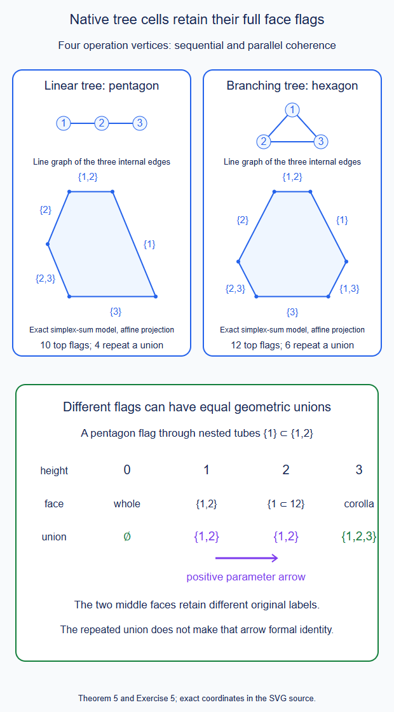
Theorem 5 and Exercise 5: exact simplex-sum coordinates distinguish the two shapes and the positive flag steps with equal geometric unions. Editable SVG.

6. Every mixed comparison boundary
Write \(b,b'\) for the complete source and target tree coderivations, and let \(F\) be the cofree extension of candidate degree-zero primitive comparison values \(F_T\). For a connected vertex subtree \(S\), let \(T/S\) mean its contraction to one vertex. For a connected-block partition \(\pi\), let \(T/\pi\) mean the full tree obtained by contracting every block. All intermediate color profiles remain those of the original boundary edges.
Proposition 6 (the complete mixed tree equation). The comparison is a chain cooperad map if and only if, on every tree, its primitive values satisfy \[ \begin{split} \partial F_T &=\sum_{\substack{S\subseteq T\text{ connected}\\|S|\ge2}} \epsilon_S F_{T/S}(\ldots,b_S,\ldots)\\ &\quad-\sum_{\substack{\pi\text{ connected-block partition}\\|\pi|\ge2}} \epsilon_\pi b'_{T/\pi} (\bigotimes_{B\in\pi}F_B). \end{split} \] Here \(\partial\) is the full Hom differential with the target unary differential and every original input unary differential. The signs are the actual graded grouping and insertion signs of Section 1; no unsigned replacement of a block permutation is made. The source sum includes \(S=T\); the target sum includes the partition into single vertices.
There are three source and three target boundary terms for a unary three-vertex tree. A unary four-vertex tree has six source and seven target terms. All these indexed terms belong to the comparison, even if particular higher structure maps make some of their values zero. The defect satisfies the full compatibility identity \(b'E+Eb=0\), where \(E=b'F-Fb\).
Proof. Project \(Fb\) onto one output vertex. The source coderivation acts on one connected subtree. For a subtree with at least two vertices, that term is exactly its displayed source summand after cofree extension of \(F\). Subtrees of one vertex give every input unary term, including their prefix signs.
Project \(b'F\) onto one output vertex. The cofree \(F\) first chooses a partition into connected vertex blocks. To obtain one output, \(b'\) must act on the entire resulting contracted tree. This is exactly the displayed target term. For a partition with just one block it is \(b'_1F_T\), the target unary term. The graded permutation grouping the blocks and their tensor evaluation is precisely \(\epsilon_\pi\). Moving the unary terms to the Hom differential gives the equation.
Conversely the full chain defect is a coderivation along \(F\). Its one-output values are the differences just computed. If all are zero, cofree coderivation uniqueness from Section 1 gives the entire chain equation, not just its primitive projection.
For three unary vertices the connected source subtrees of size at least two are the two neighboring pairs and the whole tree. They give \(F_2(b_2,1)\), \(F_2(1,b_2)\) and \(F_1b_3\), with their actual insertion signs. Its target partitions with at least two blocks are the two pair/singleton partitions and the three-singleton partition. They give \(b'_2(F_2,F_1)\), \(b'_2(F_1,F_2)\) and \(b'_3(F_1,F_1,F_1)\). For four unary vertices there are \(3+2+1=6\) connected source intervals of size at least two, and \(2^3-1=7\) nontrivial connected-block partitions. These counts prove the stated boundary lists. An ordinary operation cell and an interval do not by themselves specify these mixed incidences: the source-contraction and target-partition faces must all be recorded with their products.
Finally expand the defect without discarding any output word: \[ b'E+Eb=b'^2F-Fb^2=0. \] Thus, when all smaller tree equations hold, its next primitive defect is closed in the exact Hom complex on that original tree. This is the compatibility used for a relative lift; it does not assert that its whole Hom space is acyclic or that a missing native comparison may be chosen arbitrarily. The calculation keeps all nullary vertices and ordinary identity outputs throughout. \(\square\)
7. A concrete cell for the entire mixed boundary
The missing comparison direction has more faces than an unrefined product prism. We construct its parameter cell directly. This supplies the complete geometric boundary shape; an evaluation of that shape in the actual native diagram is a further requirement.
For a finite set \(A\), put \[ D_A=\operatorname{conv}(\Delta_A,\kappa\Delta_A), \qquad \kappa>1. \] Here all coordinates outside \(A\) are zero. Thus \(D_A\) consists of the nonnegative vectors supported on \(A\) whose coordinate sum lies between \(1\) and \(\kappa\). For a connected graph \(G\) on a nonempty set \(E\), choose a positive number \(\lambda_A\) for every nonempty connected vertex set \(A\), and set \[ \begin{gathered} J_G=\sum_{A\in\mathcal B(G)}\lambda_A D_A,\\ z(S)=\sum_{\substack{A\in\mathcal B(G)\\A\subseteq S}} \lambda_A. \end{gathered} \] The coordinate sums are denoted by \(x(S)\). Use the convention that \(J_\varnothing\) and a coherence cell on a single vertex are points. The parameter \(\kappa\) and the positive weights affect coordinates, but not the face identifications below.
Theorem 7 (all source and target facets of the mixed cell). The polytope \(J_G\) has dimension \(p=|E|\). Its complete, irredundant facet inequalities are \[ \begin{gathered} x(S)\ge z(S)\quad (\varnothing\ne S\in\mathcal B(G)),\\ x(R)\le\kappa\bigl(z(E)-z(E\setminus R)\bigr) \quad(\varnothing\ne R\subseteq E). \end{gathered} \] In particular the lower family includes \(S=E\), and the upper family includes every nonempty \(R\), whether connected or not. The lower facet at \(S\) has face poset \[ C_{G|S}\times J_{G^*_S}. \] The symbol \(C\) denotes Section 5's simplex-sum coherence cell. Let \(S_1,\ldots,S_k\) be the connected components of \(E\setminus R\). The upper facet at \(R\) has face poset \[ C_{G^*_{E\setminus R}}\times \prod_{j=1}^k J_{G|S_j}. \] Reconnection through a disconnected set means reconnection separately through each of its connected components. Empty factors are omitted.
For the internal line graph of an operation tree \(T\), these are exactly \[ \begin{gathered} C_{T_S}\times J_{T/S}, \qquad \varnothing\ne S\subseteq E(T) \text{ connected},\\ C_{T/\pi}\times\prod_{B\in\pi}J_B, \qquad \pi\text{ a connected-block partition}, \quad |\pi|\ge2. \end{gathered} \] Singleton blocks contribute their genuine one-vertex comparison point. Thus the two facet families have precisely the indices of Proposition 6. All higher intersections retain these original indices. The full face-flag chains have an explicit augmented contraction. Their oriented fundamental chain has as boundary the signed fundamental chains of all the displayed facets, with no deleted target partition.
Proof. A summand with \(A\subseteq S\) contributes at least \(\lambda_A\) to \(x(S)\). A summand meeting \(R\) contributes at most \(\kappa\lambda_A\) to \(x(R)\), and a summand not meeting \(R\) contributes zero. This proves every displayed inequality, including the lower inequalities for disconnected sets. Such a disconnected lower inequality is the sum of those for its connected components, because every connected \(A\subseteq S\) lies in exactly one component.
Here is a proof that these inequalities describe the whole Minkowski sum. For a linear functional \(w\), let \(m_A=\min_{i\in A}w_i\). Its minimizing face on \(D_A\) is \[ \begin{cases} \Delta_{\{i\in A:w_i=m_A\}},&m_A>0,\\ \kappa\Delta_{\{i\in A:w_i=m_A\}},&m_A<0,\\ D_{\{i\in A:w_i=0\}},&m_A=0. \end{cases} \] Write the positive part of \(w\) as a positive linear combination of indicators of its positive upper level sets, and its negative part as a negative linear combination of indicators of its negative lower level sets. The lower inequalities bound the first contribution; the upper inequalities bound the second. In each summand choose a minimizing coordinate of \(w|_A\), with scale one if \(m_A\ge0\) and scale \(\kappa\) otherwise. This choice attains all the bounds just used: a positive upper level set receives a contribution exactly when it contains all of \(A\), and a negative lower level set receives the maximal contribution exactly when it meets \(A\). Consequently the proposed intersection and the Minkowski sum have the same minimum for every linear functional. The intersection is bounded by its coordinate upper and lower bounds. If it contained a point outside the sum, a nearest point of that compact convex sum would give a strictly separating linear functional, a contradiction. They are therefore equal.
For completeness, their combinatorial structure is independent of the positive weights. The minimizing face of a sum is the sum of its minimizing faces. Moreover an inclusion between two such faces holds if and only if it holds separately in every summand: choose an arbitrary point in each minimizing summand face and use equality in the sum's supporting inequality. Every nonnegative support deficit must then be zero. This argument works with any positive weights, so the same finite family of summand faces describes the same face poset. It also applies to sums of the simplices \(\Delta_A\).
The singleton summands contain independent coordinate intervals, so \(J_G\) has full dimension \(p\). Now minimize the functional \(x(S)\) for a connected nonempty \(S\). If \(A\subseteq S\), the summand face is \(\Delta_A\). If \(A\not\subseteq S\), it is \(D_{A\setminus S}\). The two coordinate sets are disjoint. The first sum is a positively weighted \(C_{G|S}\). In the second, every nonempty \(A\setminus S\) is connected in \(G^*_S\): an old path inside \(A\) can replace its portions inside \(S\) by the new adjacency. Conversely, every connected set \(B\) of \(G^*_S\) occurs. If \(B\) is already connected in \(G\), use \(A=B\). Otherwise every old connected component of \(B\) meets \(S\), and \(A=B\cup S\) is connected. The projected summands therefore have exactly the connected-set supports of \(G^*_S\), with positive combined weights. This proves the lower product formula. Its dimension is \((|S|-1)+(p-|S|)=p-1\), also when \(S=E\).
For an upper equality maximize \(x(R)\), and put \(S=E\setminus R\). A summand meeting \(R\) contributes the face \(\kappa\Delta_{A\cap R}\); a summand contained in \(S\) contributes its whole \(D_A\). The latter summands split separately over the components \(S_j\). For the former, all nonempty sets \(A\cap R\) are connected after reconnection through the \(S_j\). Conversely, if \(B\subseteq R\) is connected after reconnection, adjoin all components \(S_j\) adjacent to \(B\). The resulting set \(A\) is connected and has \(A\cap R=B\): an edge added by reconnection is realized by a path through just such a component, and every component adjoined meets \(B\). Thus the first sum is a positively weighted \(C_{G^*_S}\). Its graph is connected because \(G\) is connected. This proves the upper product formula, of dimension \[ (|R|-1)+\sum_j|S_j|=p-1. \] Every proposed inequality is consequently a facet. There are no others, by the complete inequality description. Their normal directions are distinct. The disconnected lower inequalities are redundant as already shown, so the asserted list is irredundant.
We identify the tree labels, rather than just counting dimensions. A nonempty connected set \(S\) of internal edges has as endpoints a connected vertex subtree \(T_S\). The internal line graphs after restriction and reconnection are those of \(T_S\) and \(T/S\), by Section 5's path argument. For an upper facet remove the original edges \(R\) from \(T\). Its vertex components are the blocks of one connected-block partition \(\pi\). The nonempty internal-edge sets of these components are exactly the \(S_j\); isolated vertex blocks have empty internal-edge sets and their \(J\)'s are points. Reconnecting the remaining edge set gives the internal line graph of \(T/\pi\). Conversely every connected-block partition is obtained by this unique removal of edges. This proves all the asserted labels, including the all-singleton partition and the full source subtree. No argument uses the external valences, so original unary and nullary vertices are retained.
All subsequent faces are intersections of these labeled facets. The product descriptions respect further restriction: in each summand one restricts its allowed coordinates and, where appropriate, its scale to one or \(\kappa\). Repeating these restrictions in either order gives their intersection. The product identifications on common faces therefore retain the same original coordinate and subtree data. A change of positive combined weights changes none of these face posets. This proves compatibility on all intersections, without treating simultaneous target blocks as unrelated one-cross primitives.
Orient \(J_G\) by its ordered coordinate basis. Give each facet its boundary orientation using the outward normal, namely \(-\mathbf1_S\) at a lower facet and \(+\mathbf1_R\) at an upper facet, and orient its product factors by the induced determinant. Orient every smaller face once and use its resulting incidence sign. Every ridge belongs to two facets: a transverse two-dimensional slice at an interior point is a convex pointed angle with two boundary rays. The two orders of its outward directions have opposite determinants. Thus all codimension-two terms in the incidence boundary cancel. The same argument applies inside every face.
The nonempty face poset has terminal object the whole \(J_G\). Section 5's explicit append-the-terminal-vertex homotopy, with coefficient \( (-1)^{r+1}\) on an \(r\)-simplex, contracts its augmented full-flag complex. Cone each face's signed facet chains to that face. The codimension-two cancellation proves by induction that the resulting fundamental flag chain has boundary exactly its signed facet fundamental chains. The same full flags subdivide each product facet: their steps interleave the changes in its factors, with the ordinary graded shuffle sign. No simplicity assumption is used; some vertices of \(J_G\) do meet more than \(p\) facets. This proves the complete chain assertion. It supplies the mixed incidence boundary, not an evaluation in the native mapping complexes. Such an evaluation must still check its suspension signs against these determinants and its strict-unit degeneracies. \(\square\)
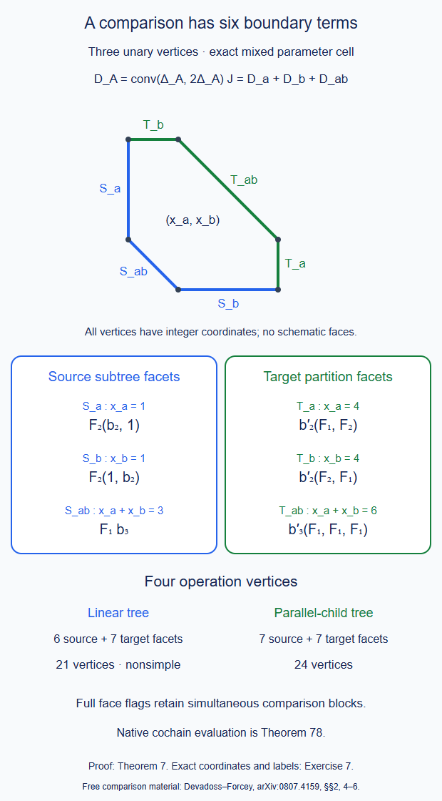
Theorem 7 and Exercise 7: all six mixed boundary terms are present. The four-vertex linear and parallel cases have thirteen and fourteen facets, respectively. Editable SVG.

8. The actual represented profiles and their calibration
This step concerns the native complexes themselves. It does not give a multicategory structure merely by naming those complexes.
For an ordered tuple \(\mathbf x\) of rational IC generators or finite additive IC sums, let \(T_G\mathbf x=F_n^G(\mathbf x)\) be its actual native ordered convolution. Retain the rational decomposition isomorphisms of C.48.1 when recording it in the finite additive envelope. Define \[ P_G(\mathbf x;y)= \operatorname{RHom}_G(T_G\mathbf x,y). \] At arity zero this is \(\operatorname{RHom}_G(IC_0,y)\), with all its ordinary endomorphisms; the coefficient input is not substituted for this output complex. At arity one use the original mapping complex.
Proposition 8 (every represented primitive profile is calibrated). The collection \(H(P_G)\), with the fixed rational decomposition identifications, is \[ P_H(\mathbf x;y)=H_{\mathbf Q}(T_H\mathbf x,y). \] It is nonnegative, even and degreewise finite on every finite selected corner. Its universal class is the actual identity of its representing tensor object, including \(IC_0\) at arity zero.
The leading represented maps induced by the single full comparison \(\Psi=J\Phi\) of C.48.1 induce the identity on this entire collection after extending to \(E\), not just on its unary profiles. In particular they are quasi-isomorphisms on every represented primitive complex. This assertion concerns the actual leading maps; it does not assert that they have already been extended to the full tree comparison required in Theorem 3.
Proof. The native tensor object of a finite IC tuple is an actual finite semisimple IC sum by the proved Satake exactness and rational heart. The degree-zero rational decomposition isomorphism and its inverse identify its represented mapping cohomology with \(H_{\mathbf Q}(T_H\mathbf x,y)\). On a finite sum this is the finite matrix sum of the corresponding generator mapping groups. C.33.1 proves that each such group is nonnegative, even and degreewise finite; finite sums preserve these properties. No tensor closure of a finite object pool is asserted. For a given finite native diagram use C.44.3/C.47.2's finite forward image-summand closure. For the empty tuple the tensor object is \(IC_0\), so the same argument applies to its full mapping complex. The represented universal class is its identity because composition with that identity is the original represented mapping identification.
We compute the comparison on these profiles using the actual strong monoidal inverse, rather than only its inverse on unary mappings. Write \(L:H_{\mathbf Q}\otimes E\to S_E\) for C.48.1's cohomological strong monoidal equivalence and \[ \ell_{\mathbf x}: T_S(Lx_1,\ldots,Lx_n)\longrightarrow L(T_H\mathbf x) \] for its tensor comparison. On a represented multimorphism its map is \[ L_P(f)=L(f)\,\ell_{\mathbf x}. \] This formula follows directly by applying the original enhanced comparison to \(f:T_G\mathbf x\to y\) and precomposing with its specified tensor comparison. Its leading cochain value is a chain map: the unary comparison component is a chain map and that tensor comparison is a closed degree-zero map. The full enhanced structure supplies its higher naturality; none of those higher components is being set to zero.
Let \(j_{\mathbf z}:T_H(J\mathbf z)\to J(T_S\mathbf z)\) be the actual strong tensor comparison of the inverse \(J\). With C.48.1's coherent identifications \(JL=1\), it satisfies \[ J(\ell_{\mathbf x})\,j_{L\mathbf x}=1_{T_H\mathbf x}. \] If object identifications are displayed rather than suppressed, the two sides are conjugated by the same specified degree-zero isomorphisms; their intermediate inverses cancel. This identity is exactly the inverse tensor equation used in constructing \(J\). The induced multimorphism map of \(J\) is \(J_P(g)=J(g)j_{L\mathbf x}\). Therefore for every homogeneous \(f\), in every degree, \[ \begin{aligned} J_P L_P(f) &=J(L(f))\,J(\ell_{\mathbf x})\,j_{L\mathbf x}\\ &=f. \end{aligned} \] The cohomological map of the actual full \(\Phi\) is \(L\) with these same \(\ell\)'s, by their definition in C.48.1. Hence this is precisely the leading represented cohomology map of the given single \(J\Phi\), not a separately chosen map for each profile.
At zero inputs, \(\ell_\varnothing:I_S\to L(I_H)\) is the actual unit comparison, and its inverse equation with \(j_\varnothing\) is the same displayed identity. The argument keeps arbitrary positive-degree \(f:I_H\to y\). At one input it reduces to the unary calibration. At more inputs it uses the full tensor comparison, so unary calibration alone would not suffice. At the universal \(f=1_{T_H\mathbf x}\) it gives the prescribed universal class. Permutation and regrouping versions use the same strong monoidal \(L,J\), whose original symmetric and ordered coherences were retained in C.29/C.48; applying their equations gives the same identity after every such relabelling. Thus the entire represented collection is calibrated. This still supplies no unconstructed higher primitive tree values. \(\square\)
9. The full native represented module, not just its bare complex
Use honest dg source and target models \(A,B\) and the actual normalized uncurved functor \(F:A\to B\). The source may be the joint tensor category of any finite number of input factors, including the coefficient category at zero factors. Write \(C_A=B_{\rm full}A\). All its ordinary identity letters are retained.
Our words run from target to source. Their bar differential has \(b_1(sa)=-s(da)\) and \[ b_2(sa|sb)=(-1)^{|a|-1}s(ab). \] Let \(\tau_F:C_A\to B\) be the unsuspended one-output core of the whole bar functor \(BF\). It has degree one, is zero on the empty word, and has the original object endpoints. For homogeneous maps define their convolution by \[ (f\star g)(c)= \sum_{c=uv}(-1)^{|g||u|}f(u)g(v). \] An object component is evaluated on an empty word at that object. Only type-correct cuts occur. Functor cores are zero at empty words; natural transformation cores need not be.
Theorem 9 (actual represented modules and full comparison transport). The primitive complexes \[ K_F(y;a)=B(Fa,y) \] carry their actual full input \(A_\infty\)-module actions and strict output \(B\)-module actions. Their cofree right bar encoding is \(K_F\otimes C_A\), with the endpoint-matched sums and differential \[ \begin{aligned} D_F(k\otimes c) &=dk\otimes c+(-1)^{|k|}k\otimes b_Ac\\ &\quad+(-1)^{|k|} \sum_{\substack{c=uv\\u\ne\varnothing}} k\,\tau_F(u)\otimes v . \end{aligned} \] It is a full dg comodule, including its empty-word primitive core. At a fixed input object \(a\), its output module is literally the represented module \(B(Fa,-)\); its universal operation is \(1_{Fa}\). These statements retain nullary tensor objects and ordinary scalar or identity outputs.
For a full homogeneous pre-natural transformation \(\theta:F\to G\) of degree \(r\), use its unsuspended core \(\theta:C_A\to B\) of degree \(r\). Its differential in these coordinates is \[ \begin{aligned} \delta\theta &=d_B\theta-(-1)^r\theta b_A\\ &\quad-\tau_G\star\theta +(-1)^r\theta\star\tau_F . \end{aligned} \] The entire induced graph-module map, in the contravariant direction, is \[ \begin{gathered} \mathcal T_\theta:\mathcal K_G\longrightarrow\mathcal K_F,\\ \mathcal T_\theta(k\otimes c) =\sum_{c=uv}(-1)^{r|k|}k\,\theta(u)\otimes v . \end{gathered} \] It satisfies the exact full identities \[ \begin{gathered} D_F\mathcal T_\theta-(-1)^r\mathcal T_\theta D_G =\mathcal T_{\delta\theta},\\ \mathcal T_\theta\mathcal T_\eta =(-1)^{rs}\mathcal T_{\eta\star\theta}, \qquad |\eta|=s . \end{gathered} \] Thus full parameter diagrams, their differentials, their compositions and their specified homotopies are carried together, with the graded opposite sign. A whole supplied natural equivalence carries its actual inverse and homotopies as well.
For a changing target \(W:B\to B'\), the whole one-cross expansion of \(BW\), followed by the preceding graph map for a given full comparison \(\kappa:G\to WF\), gives the actual full represented comparison along \(W\). Its primitive value is \[ k\longmapsto W_1(k)\,\kappa_0. \] In particular the native \(F_n^G\) give the full represented fan modules underlying Proposition 8. The single C48 comparison gives their full comparison maps, not just their bare cohomology maps. This constructs the fixed-profile module part of a native tree presentation; the equations relating several branching vertices on changing profiles still require the all-tree construction.
Proof. Project the bar functor equation \(b_BBF=BFb_A\) to one output letter. Unary target terms give \(d_B\tau_F\), and target binary terms give \(\tau_F\star\tau_F\). With the displayed suspended binary sign it reads \[ d_B\tau_F+\tau_F b_A=\tau_F\star\tau_F. \] For example, on two closed degree-zero letters both the source binary term and the convolution term are minus their product. This fixes the sign without changing any ordinary identity letter.
The coaction of \(\mathcal K_F\) is the complete deconcatenation on its \(C_A\) factor. A cut after the prefix consumed by \(\tau_F\) is exactly a term of \(D_F\) on the left coaction factor. A cut inside the unconsumed word is a term of \(b_A\) on the right factor. This is a bijection of terms, with the displayed tensor differential sign, and proves the full comodule equation.
For its square, the terms containing \(dk\) cancel in pairs. The original square \(b_A^2\) is zero. At a fixed consumed word \(u\), the remaining coefficient is \[ k\bigl(d_B\tau_F+\tau_F b_A -\tau_F\star\tau_F\bigr)(u). \] In particular the two successive prefix actions contribute \(-(-1)^{|u_1|}k\tau_F(u_1)\tau_F(u_2)\), the negative of the convolution term. The preceding functor equation makes the coefficient zero. All cuts of the unconsumed suffix are still present, so this proves \(D_F^2=0\) on the entire comodule. It includes the original unary differential of every source letter.
Output postcomposition is the actual dg composition of \(B\). For a homogeneous output arrow \(a\), associativity and its Leibniz rule give \[ D_F(ak\otimes c) =da\,k\otimes c+(-1)^{|a|}aD_F(k\otimes c). \] This proves the two-sided compatibility. At a fixed input object its output module is exactly \(B(Fa,-)\). Composition with \(u_a=1_{Fa}\) is the identity on every output mapping complex and all its dg module actions, so the full represented Yoneda map is literally that identity. The input actions, as \(a\) varies, are the just constructed full \(\tau_F\) actions. No unproved acyclicity of a transformation space is used.
The formula for \(\mathcal T_\theta\) is its cofree extension from the coefficient \(k\theta(c)\). Its sign moves the map \(\theta\), of degree \(r\), past \(k\). At the one-output core of its chain defect, cancel the terms containing \(dk\). After factoring \((-1)^{(r+1)|k|}k\), the remaining expression is \[ d_B\theta-(-1)^r\theta b_A -\tau_G\star\theta+(-1)^r\theta\star\tau_F. \] The right action after \(\theta(u)\) has coefficient \((-1)^{r+|u|}\); the action before \(\theta(v)\) has coefficient \(-(-1)^{r|u|}\). These are precisely the two displayed convolution signs. The same expression is obtained by expanding the one-marked bar equation for the original natural transformation: it differentiates the marked value, differentiates its original source, or composes it with an adjacent \(F\)- or \(G\)-output. This proves the stated differential in the chosen unsuspended, target-to-source coordinates.
Both sides are comodule maps, so equality of these cores proves the whole chain-defect identity. For composition first consume \(u\) with \(\eta\), and then \(v\) with \(\theta\). The coefficient is \[ (-1)^{s|k|+r(|k|+s+|u|)} =(-1)^{rs}(-1)^{(r+s)|k|}(-1)^{r|u|}. \] The last factor is the convolution sign in \(\eta\star\theta\). Triple cuts prove associativity, and the identity has its original object identity component and no positive-input component. This proves the entire graded-opposite dg functor statement. Applying it to the full bar of a parameter diagram carries every higher parameter component too. In particular a given inverse and the two given differential homotopies remain inverse up to those same transported homotopies.
For the target change, form the triangular dg category consisting of two copies of \(B\), with \(B\) itself as the single directed cross bimodule and no reverse cross maps. On a composable word with one cross letter, apply every Taylor component of \(W\) to every consecutive partition. Exactly one output block contains that original letter; declare its output the cross letter. This is the whole one-cross expansion, including arbitrary source letters on both sides and every ordinary cross output. Its chain equation is the one-cross part of the original equation for \(BW\). Its coactions follow by cutting before or after the unique marked output block. Consequently it is a full bimodule comparison along the two copies of \(W\), not merely the map \(W_1\) on a bare complex.
Glue this to the input \(F\) graph by ordinary endpoint-matched cotensor, retaining the intermediate \(C_B\) factor as in C.66. The marked evaluation of C.69 composes the resulting whole words. All its cut and chain equations were proved there; the unique marked block retains the full source and output unary actions. This gives the comparison from \(K_F\) to \(K_{WF}\) along \(W\). Precompose with the full \(\kappa\) using \(\mathcal T_\kappa\). The two operations give the claimed full map to \(K_G\), whose bare value is \(W_1(k)\kappa_0\). No intermediate core is replaced by an identity when taking cotensor.
Apply this construction to the actual joint source of \(F_n^G\), supplied in C.44/C.47 and retained in C.68. At zero inputs its source is the coefficient category and its tensor object is the actual \(IC_0\). At a positive input number it is the genuine dg tensor source; if the original separate input comparisons are \(A_\infty\), use C.78's full common tensor input and its complete mapping restriction. This supplies the whole parameter map on that input, and does not form a naive tensor product of unrelated \(A_\infty\) functors. The native tensor comparison of the single C48 functor is the stipulated full \(\kappa\). The preceding formulas therefore give exactly its full represented module comparison. Its leading map is Proposition 8's actual map and its leading cohomology is the identity.
Finally normalization is checked at the original inputs. \(\tau_F\) on a one-letter unit is the actual identity action, and on a longer unit-containing input it is zero. A normalized transformation has its specified object component and its positive components vanish at a source identity. These conditions are preserved in the full formulas by the original normalized functor and transformation equations. An identity-valued output of a nonidentity input is never deleted. Neither is a nullary tensor object or its higher output endomorphism. This proves the native fan-module assertions. It does not prove the missing compatibility among all branching-vertex grafts. \(\square\)
The cofree bar object here is an encoding of the full module, not an assertion that its underlying total complex is the represented mapping complex. Already for \(A=B=k\) and \(F=1\), \[ D_F(1\otimes s1)=1\otimes\varnothing. \] The ordinary complex \(K_F=k\) is not thereby made acyclic. Equivalences used above retain their actual primitive maps and their given full module homotopies. An underlying acyclicity calculation on this unreduced cofree encoding cannot replace them.
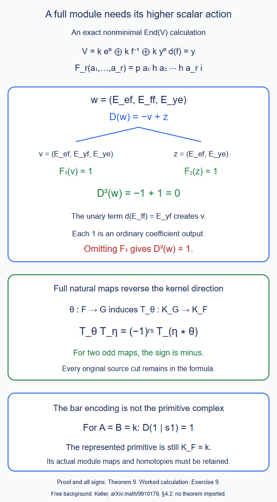
Theorem 9 and Exercise 9: the original source unary term and the ordinary scalar ternary action cancel in \(D_F^2\). The full formulas retain every source cut. Editable SVG.

10. The actual binary graft on represented cochains
Let the upper multimorphism be \(a\in P_G(x_1,\ldots,x_n;y)\) and the lower one be \(b\in P_G(z_1,\ldots,z_m;x_i)\), with \(1\le i\le n\) and \(m\ge0\). Put \(N=n+m-1\). The native graft comparison, with its direction specified here, is the closed degree-zero map \[ \begin{gathered} \alpha_{n,m,i}:T_G(x_1,\ldots,\mathbf z,\ldots,x_n)\\ \longrightarrow F_n^G(x_1,\ldots,T_G\mathbf z,\ldots,x_n). \end{gathered} \] Use the actual comparison of C.44/C.47, recorded on the chosen rational object representatives with all decomposition maps retained. For \(m=0\) it is the original unit comparison; no arbitrary factor-deletion functor is introduced.
Proposition 10 (binary native composition with its true nullary input). The formula \[ a\circ_i b= a\, (F_n^G)_1(1,\ldots,b,\ldots,1)\, \alpha_{n,m,i} \] defines a degree-zero chain map on these actual primitive complexes. Its cohomology is the prescribed rational partial composition in \(P_H\). The ordinary unary identities act as strict units in the normalized native models. Its nullary input is the whole \(\operatorname{RHom}_G(IC_0,x_i)\), including positive-degree maps, and is not the coefficient input of \(F_0^G\).
Proof. The middle argument is one original joint arrow in the honest dg tensor source of \(F_n^G\). All unchanged factors are ordinary identity arrows; the \(i\)-th factor is the given \(b:T_G\mathbf z\to x_i\). Its degree is \(|b|\), and its differential is the same tuple with \(db\) in that slot. The first Taylor map of an uncurved \(A_\infty\) functor is a chain map. The actual \(\alpha\) is closed. Composition in the dg target therefore gives \[ d(a\circ_i b)=da\circ_i b+(-1)^{|a|}a\circ_i db. \] This is the full required chain equation, also for nonclosed homogeneous inputs. The formula only uses the first Taylor map on one joint arrow. It makes no claim that this first map preserves the composition of two arbitrary joint arrows.
If the upper operation is a unary identity, \(F_1^G=1\) and the normalized unary-seam comparison is the identity, so the formula is exactly \(b\). If the lower operation is a unary identity, the tuple in the middle is the actual identity of its joint source, its first functor value is the identity, and the normalized seam comparison again leaves \(a\). These checks concern unary identity multimorphisms, not arbitrary unary vertices with nonidentity labels.
At \(m=0\), the lower tensor object is \(IC_0\). The middle joint arrow still has its original map \(b:IC_0\to x_i\); that factor is neither deleted nor replaced by a coefficient scalar. The native \(\alpha\) now inserts the actual unit object in that slot, as proved by C.44.3's expanded common chain and C.47's compatible grafting rule. Its source has \(N=n-1\) external inputs as required. Thus the same chain calculation works with the true nullary mapping complex.
Passing to cohomology replaces the middle functor action by the actual cohomological tensor action and \(\alpha\) by its original rational associativity or unit class. The fixed rational decomposition maps appear next to their inverses at every internal representative. The resulting map is exactly the represented partial composition in \(P_H\), with the original tensor signs. This also proves compatibility with its symmetric relabellings on cohomology. The full higher naturality of this binary family is recorded by Theorem 9's native modules and the given full \(\alpha\). Associativity of several such binary grafts on cochains requires the original higher functor and graft cells; it is not inferred from the displayed Leibniz equation. \(\square\)
11. Actual three-vertex graft homotopies
For a homogeneous multilinear cochain \(h\) of degree minus one, use the ordinary Hom differential \[ \begin{aligned} (\partial h)(a,b,c) &=d\,h(a,b,c)+h(da,b,c)\\ &\quad+(-1)^{|a|}h(a,db,c)\\ &\quad+(-1)^{|a|+|b|}h(a,b,dc). \end{aligned} \] Thus the equations below concern all original cochains, not only closed inputs.
Two elementary pieces will be used. For an actual functor \(F\), put \[ \sigma_F(u,v)=(-1)^{|u|}\tau_F(su|sv). \] This is an ordinary bilinear cochain of degree minus one. The two-letter equation from Theorem 9 gives \[ (\partial\sigma_F)(u,v) =F_1(uv)-F_1(u)F_1(v). \] For a closed degree-zero full natural transformation \(\beta:P\to Q\), put \(\nu_\beta(u)=\beta^{[1]}(su)\), its full one-input core. The one-letter natural-transformation equation gives \[ (\partial\nu_\beta)(u) =Q_1(u)\beta_{\rm source} -\beta_{\rm target}P_1(u). \] The bracketed superscript distinguishes source-word length from the object labels on its endpoints.
Theorem 11 (the native nested and parallel three-vertex boundaries). The actual native binary grafts of Proposition 10 have rational degree-minus-one trilinear homotopies on both possible three-vertex shapes. Their boundaries are \[ \begin{gathered} \partial h_{\rm nested} =a\circ_i(b\circ_j c)-(a\circ_i b)\circ_{i+j-1}c,\\ \partial h_{\rm parallel} =(-1)^{|b||c|}(a\circ_j c)\circ_i b\\ \hfill{}-(a\circ_i b)\circ_{j+m-1}c,\qquad i<j, \end{gathered} \] where \(m\) is the arity of \(b\). They are built from the original native naturality and coherence cells and the actual higher functor maps. No nullary child, source unary differential or identity-valued output is discarded.
Here are complete formulas, including their input-degree signs. They initially give the actual raw native homotopies. Strict-unit and prescribed-fan normalization is a separate, explicit change of these cochains, discussed after their construction.
Proof. First construct the native coherence term used below. The three-vertex tree has two original contraction paths to its corolla. Use the orientations of the actual comparisons fixed in Proposition 10, including the original inverse unit/tensor mates. The finite whole native parameter model of C.44/C.47, retained by C.68, gives both paths and their two-letter components. If an inverse comparison is recorded by its path object, use C.50's whole endpoint recovery, including its given inverse homotopies; do not replace a homotopy equivalence by a guessed strict inverse.
Let \(K_0,K_1\) be the two path composites and \(D\) the comparison on their same selected full contraction. Write \(\tau_{\mathcal S,2}(P_i)\) for the ordinary degree-minus-one core on the closed degree-zero parameter pair in path \(P_i\). The two-letter functor equation just displayed says \[ d\,\tau_{\mathcal S,2}(P_i)=D-K_i. \] Consequently the actual native cochain \[ \omega=\tau_{\mathcal S,2}(P_0) -\tau_{\mathcal S,2}(P_1) \] satisfies \(d\omega=K_1-K_0\). The two paths retain their original selected edges. A positive parameter arrow with identity geometric image is still present in this formula. No acyclicity of a full natural-transformation space has been invoked.
For the nested tree, let \(a\) have arity \(n\), let \(b\) have arity \(m\) and enter its slot \(i\), and let \(c\) have arity \(l\) and enter slot \(j\) of \(b\). Thus \(n,m\ge1\), \(l\ge0\), and the flattened external arity is \(n+m+l-2\). Denote by \(W\) its actual flat tensor object. In the joint dg source of \(F_n^G\), use the arrows \[ \begin{gathered} B=\iota_i b,\qquad U=\iota_i\bigl((F_m^G)_1(\iota_jc)\bigr),\\ \Gamma=\iota_i\gamma,\qquad \gamma=\alpha_{m,l,j}. \end{gathered} \] The notation \(\iota_i\) inserts the given map in slot \(i\) and the actual identities in all unchanged factors. Thus \(|B|=|b|\), \(|U|=|c|\), and \(|\Gamma|=0\). Write \(f=(F_n^G)_1\) and \(\sigma=\sigma_{F_n^G}\).
Let \(\beta=\alpha_{n,m,i}\). Its old component uses the original output object of \(c\), and its new component uses \(T_G\mathbf t\) in that position, where \(\mathbf t\) is the input tuple of \(c\). Let \[ \varepsilon=\alpha_{n+m-1,l,i+j-1}, \qquad \delta=\alpha_{n,m+l-1,i}. \] Both have source \(W\), with their respective intermediate flat tensor targets. The two native path composites are \[ K_0=\beta_{\rm new}\varepsilon,\qquad K_1=f(\Gamma)\delta. \] They have the same final nested tensor target. In particular the native \(\omega\) constructed above has exactly these endpoints. Set \(\widehat c=\iota_{i+j-1}c\) in the flat intermediate source. Naturality gives \[ \begin{aligned} \partial\nu_\beta(c) &=f(U)\beta_{\rm new}\\ &\quad-\beta_{\rm old}(F_{n+m-1}^G)_1(\widehat c). \end{aligned} \] This uses the actual one-input native component and retains its source differential. On this one joint arrow the composite functor's first component is \(f(U)\); all unchanged factors are its ordinary identities. In a common tensor replacement this is the same genuine one-arrow restriction of C.78, not a naive tensor product of unrelated higher functors.
The two nested binary composites are therefore \[ \begin{gathered} L=a f(B)\beta_{\rm old} (F_{n+m-1}^G)_1(\widehat c)\varepsilon,\\ R=a f(BU\Gamma)\delta. \end{gathered} \] Define \[ \begin{aligned} h_{\rm nested} &=(-1)^{|a|+|b|}a f(B)\nu_\beta(c)\varepsilon\\ &\quad+(-1)^{|a|+|b|+|c|}a f(B)f(U)\omega\\ &\quad+(-1)^{|a|}a\sigma(B,U)f(\Gamma)\delta\\ &\quad+(-1)^{|a|}a\sigma(BU,\Gamma)\delta . \end{aligned} \] Every term has the prescribed flat source and output \(y\); its degree is \(|a|+|b|+|c|-1\).
To verify its whole Hom boundary, pass through the successive maps \[ \begin{gathered} L,\\ a f(B)f(U)\beta_{\rm new}\varepsilon,\\ a f(B)f(U)f(\Gamma)\delta,\\ a f(BU)f(\Gamma)\delta,\\ R. \end{gathered} \] The four differences are, in order, the boundaries of the four displayed summands. The signs move the relevant degree-minus-one cochain past precisely its preceding original inputs. The second cochain has no morphism input and crosses all three; the last two cross just \(a\). The elementary functor, naturality and \(d\omega\) equations prove these four statements with the full Hom differential. Their intermediate maps cancel, giving \(\partial h_{\rm nested}=R-L\).
For parallel branches let \(b,c\) enter distinct slots \(i<j\) of \(a\), of arities \(m,l\ge0\). Put \(B=\iota_i b\), \(C=\iota_jc\), with the unchanged objects chosen at the appropriate endpoints, and keep \(f,\sigma\) as above. In their actual joint dg source the two orders satisfy \[ BC=(-1)^{|b||c|}CB. \] Indeed the outer \(C\), in the later tensor slot, crosses the inner \(B\) in the earlier slot; the other order has no such crossing. This is an identity of those type-correct joint arrows.
Let \(\beta_b,\beta_c\) be the native graft comparisons for inserting \(b,c\) separately, with old and new object components as in the nested case. Let \[ \begin{gathered} C_b=(F_{n+m-1}^G)_1(\iota_{j+m-1}c),\\ B_c=(F_{n+l-1}^G)_1(\iota_i b). \end{gathered} \] Let \(\varepsilon_c,\varepsilon_b\) be the remaining graft maps from the common flat tensor object \(W\). The complete one-input naturality cochains satisfy \[ \begin{aligned} \partial\nu_b(c) &=f(C)(\beta_b)_{\rm new}-(\beta_b)_{\rm old}C_b,\\ \partial\nu_c(b) &=f(B)(\beta_c)_{\rm new}-(\beta_c)_{\rm old}B_c. \end{aligned} \] Set \[ K_b=(\beta_b)_{\rm new}\varepsilon_c,\qquad K_c=(\beta_c)_{\rm new}\varepsilon_b . \] Use the actual native two-path cochain with \(d\omega=K_c-K_b\), as constructed at the start of the proof. Then the binary composites are \[ \begin{gathered} L=a f(B)(\beta_b)_{\rm old}C_b\varepsilon_c,\\ R=a f(C)(\beta_c)_{\rm old}B_c\varepsilon_b . \end{gathered} \] Define \[ \begin{aligned} h_{\rm parallel} &=(-1)^{|a|+|b|}a f(B)\nu_b(c)\varepsilon_c\\ &\quad+(-1)^{|a|}a\sigma(B,C)K_b\\ &\quad+(-1)^{|a|+|b|+|c|}a f(BC)\omega\\ &\quad-(-1)^{|a|+|b||c|}a\sigma(C,B)K_c\\ &\quad-(-1)^{|a|+|c|+|b||c|} a f(C)\nu_c(b)\varepsilon_b . \end{aligned} \] Its five summands successively pass through \[ \begin{gathered} L,\qquad a f(B)f(C)K_b,\qquad a f(BC)K_b,\\ a f(BC)K_c,\qquad (-1)^{|b||c|}a f(C)f(B)K_c,\qquad (-1)^{|b||c|}R. \end{gathered} \] For the fourth and fifth terms, exchanging the original \(b,c\) inputs contributes \((-1)^{|b||c|}\). The remaining signs move a degree-minus-one map past \(a\), or past \(a,c\), respectively. Applying the same elementary equations gives every successive difference, with all three original input differentials. They telescope to the asserted parallel boundary.
These are all three-vertex shapes. A nested lower vertex may be nullary; either parallel lower vertex may be nullary. The specified insertion slots and the actual \(IC_0\) objects in \(\gamma,\beta,\delta,\varepsilon\) remain present, as in Proposition 10. Nonidentity unary operations remain original input maps. The construction uses no augmentation and discards no ordinary identity-valued Taylor output.
For completeness, its suspended sign is determined as follows. In root-first vertex order \(a,b,c\), the two binary contractions have total coefficient \[ (-1)^{|b|}s(L-R_{\rm signed}), \] where \(R_{\rm signed}=R\) in the nested case and \((-1)^{|b||c|}R\) in the parallel case. In the parallel case the contraction using \(a,c\) first moves \(sc\) past \(sb\), giving \((-1)^{(|b|-1)(|c|-1)}\); multiplying its two binary suspension signs gives the negative of the other coefficient times \((-1)^{|b||c|}\). This proves the displayed formula for that shape as well.
Put \[ b_T(sa,sb,sc)=(-1)^{|b|+1}s h_T(a,b,c). \] The original unary terms and the unary output differential contribute \(-(-1)^{|b|+1}s\partial h_T\). By the boundary just proved this cancels the binary contribution exactly. Thus these actual native values give square zero through three-vertex inputs, with the original unary and binary values fixed. This is a three-vertex statement. Higher trees and their full mixed comparison equations are not consequences of it alone. \(\square\)
12. Normalize the three-vertex data with its comparison retained
For every nonzero generator or additive-sum color's unary endomorphism profile choose a degree-zero chain functional \(\epsilon_x\) onto the line of its identity, with \(\epsilon_x(1_x)=1\). It is obtained from a unit-preserving mapping contraction followed by a linear projection on \(H^0\). No multiplicativity is required. Put \[ R_x=1-1_x\epsilon_x. \] On a vertex profile having no possible unary identity use the identity map. Let \(N_T\) be their ordered tensor on a three-vertex tree. These are ordinary degree-zero chain projections. If a strict zero object is retained as a color, its identity is zero and the corresponding unit-input condition is automatic by linearity; no retraction onto a nonexistent identity line is used.
Proposition 12 (the normalized native three-vertex jet). The actual raw cochains of Theorem 11 admit rational three-vertex values that:
- have the same complete boundaries;
- vanish at every ordinary unary identity input;
- agree with Theorem 9's actual full fan-module values whenever the tree has at most one nonunary vertex;
- leave all original unary differentials and binary grafts fixed.
The changes have explicit degree-minus-two cochains and actual triangular cofree comparisons through three vertices. The comparison which first removes a raw unit defect need not itself be normalized; its unit components are retained. No full higher-tree or mixed comparison equation is inferred from this finite jet.
Proof. Denote the binary associativity/interchange defect by \(D_T=R_{\rm signed}-L\). It vanishes identically when any input is an ordinary unary identity. In the nested case the three possibilities reduce respectively to \(b\circ c=b\circ c\), \(a\circ c=a\circ c\), and \(a\circ b=a\circ b\), by Proposition 10's strict units. In the parallel case an identity lower input has degree zero, so the interchange sign is one and both expressions again reduce to the same remaining graft. A parallel root cannot be a unary identity. These exhaust the possible unit inputs.
The tensor projector \(N_T\) differs from the identity by maps whose images have a unit input. Therefore \[ D_TN_T=D_T. \] Set \(h_T^0=h_T^{\rm raw}N_T\). Since \(N_T\) is a chain map, \(\partial h_T^0=D_T\), and \(h_T^0\) vanishes on the entire unit-input subspace. This normalization acts on the original inputs only. It deletes no output identity and assumes no augmentation of the mapping algebra.
On a fan tree, meaning a tree with at most one nonunary vertex, let \(h_T^{\rm fan}\) be the third primitive value in the actual module of Theorem 9, with the suspension of Theorem 11. If all vertices are unary, it is zero because the original generator model is dg. Output-only actions are the original dg postcompositions; the input and mixed actions are the full \(F_n^G\) module actions, restricted using the genuine tensor input. Theorem 9 proves their whole square and normalization. Explicitly, if the root is the sole nonunary vertex and its two unary inputs form one chain, the value is \[ h_T^{\rm fan}=(-1)^{|a|}a\,\sigma_{F_n^G}(B,C). \] If they occupy separate ordered slots it is \[ \begin{aligned} h_T^{\rm fan}=(-1)^{|a|}a\bigl( &\sigma_{F_n^G}(B,C)\\ &-(-1)^{|b||c|}\sigma_{F_n^G}(C,B)\bigr). \end{aligned} \] In every other fan position the value is zero, by the strict output action. To see the separated-slot formula directly, the two joint-arrow bar terms are \[ sB|sC+ (-1)^{(|b|-1)(|c|-1)}sC|sB. \] They are the two possible orders of its original one-letter input legs. The second coefficient is exactly their graded bar permutation. Apply the full right action from Theorem 9 and then its suspension: the result is the displayed formula. It keeps both terms and their ordinary outputs. Their binary values are exactly Proposition 10's values on these fan trees: the unary seam functors and object comparisons are the identities. Hence \[ z_T=h_T^{\rm fan}-h_T^0 \] is a closed degree-minus-one ordinary multilinear cochain, and it vanishes on unit inputs. This is a statement about these ordinary mapping complexes, not an assertion that an arbitrary full natural-transformation complex is acyclic.
We now give its actual primitive, rather than citing only its cohomology. Let \(V\) be the tensor of the three original primitive input complexes and \(W\) its output complex. Choose their rational normalized contractions, with \(d h+h d=1-\Pi\), \(\Pi=ip\), and with the unit included among the chosen representatives. Use the ordered tensor contraction on \(V\). On the ordinary Hom complex put \[ \mathcal H(f)=h_W f+(-1)^{|f|}\Pi_W f h_V. \] Expanding its two Hom differentials, the terms differentiating the output and input cancel separately, leaving \[ \partial\mathcal H(f)+\mathcal H(\partial f) =f-\Pi_W f\Pi_V. \] The first summand contributes \((1-\Pi_W)f\), and the second contributes \(\Pi_W f(1-\Pi_V)\); this also verifies the displayed sign.
Proposition 8 gives even cohomology in every primitive profile. The tensor input therefore has even cohomology as well. A degree-minus-one map between the projected input and output cohomologies is zero. Consequently \(\Pi_W z_T\Pi_V=0\), and the explicit cochain \[ K_T=\mathcal H(z_T) \] has degree minus two and satisfies \(\partial K_T=z_T\). The tensor homotopy \(h_V\) preserves the unit-input subspace: the summand hitting its unit is zero, and all other summands retain that unit. Thus both terms of \(\mathcal H(z_T)\) vanish on that subspace. The primitive \(K_T\) is normalized.
Here is the cofree comparison and its sign. Extend the three-vertex coderivation by zero at larger primitive trees for this calculation only. Let \(g\) have identity one-vertex component, zero two-vertex component, and on fan trees put \[ g_T(sa,sb,sc)=(-1)^{|b|+1}sK_T(a,b,c). \] Give it zero higher primitive values on all other trees. Section 1's connected-block formula makes it an actual cofree coordinate with a finite vertex-lowering inverse. It is normalized because its new primitive values vanish at unit inputs. On three vertices its conjugation has the exact value \[ (g b g^{-1})_T-b_T=g_Tb_1-b_1g_T =(-1)^{|b|+1}s\,\partial K_T. \] To check the last equality, the input unary terms give minus the signed input differential of \(K_T\), and the output term gives its positive output differential. Since \(K_T\) has even degree minus two, their sum is its ordinary Hom differential. Hence the conjugated value is precisely \(h_T^{\rm fan}\). On nonfan three-vertex trees it stays \(h_T^0\), and on smaller trees it is unchanged. The square remains zero through three vertices by actual conjugation.
The first unit normalization also has comparison data, which must not be suppressed. The difference \[ r_T=h_T^0-h_T^{\rm raw} \] is closed of degree minus one. The same even-cohomology argument gives the explicit primitive \(\mathcal H(r_T)\). Its three-vertex cofree coordinate has the same displayed sign and carries the raw value to \(h_T^0\). It may have nonzero unit-input components because the raw cochain did. Retain them as part of this comparison; do not call that coordinate normalized. The second, fan-matching coordinate is normalized, as already proved.
The constructions are coefficient-linear and rational. For symmetric profiles choose the contractions and linear functionals equivariantly under their finite stabilizers as in Theorem 2. The tensor formula and the same graded vertex permutations then retain equivariance. There is no averaging of nonlinear cofree maps.
This proves a normalized three-vertex source jet and its explicit relation to the original native data. When higher native values are constructed, every such source coordinate must conjugate their whole coderivation and transport every full comparison and marked domain, using the actual cofree formulas. It would be incorrect to retain new third values and the former fourth values independently. The rational cohomological target remains fixed. A normalized full comparison, including its unit coherence, is still a separate remaining construction. \(\square\)
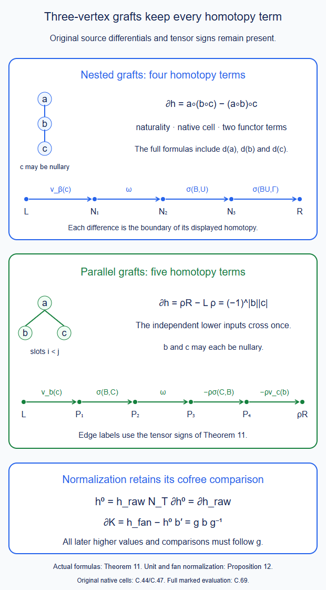
Theorem 11 and Proposition 12: the paths telescope with the original unary differentials and graded tensor signs. Every displayed normalization retains its cofree comparison. Editable SVG. Free bar-convention background: Keller, Sections 3.4 and 4.2.

13. The actual binary component of the calibrated comparison
Work over the same extension field \(E\) as C.48. Write \(\Psi=J\Phi\) for its single full calibrated comparison. The cohomological target has the genuine dg tensor functors \(F_n^H\), so their first maps preserve composition exactly. The source still has its actual higher \(F_n^G\). Denote the actual full tensor comparison by \[ \kappa_n:F_n^H\Psi^{(n)}\longrightarrow\Psi F_n^G. \] Its joint input is the genuine one of C.78; the notation does not prescribe a naive tensor product of higher functors.
Theorem 13 (the full two-vertex comparison boundary). The actual leading represented map \[ \varphi_1(a)=\Psi_1(a)\kappa_n(\mathbf x) \] has a native degree-minus-one two-input cochain \(H\) with \[ \partial H(a,b) =\varphi_1(a\circ_i b) -\varphi_1(a)\circ_i\varphi_1(b). \] It retains the two higher functor terms, tensor naturality and the single given native graft-coherence term. Its suspended second component is \[ F_T(sa,sb)=(-1)^{|a|}sH(a,b). \] Together with the given first map this satisfies the entire tree comparison equation through two vertices. It can be normalized on unary identity inputs and matched to Theorem 9's prescribed fan comparison while retaining explicit degree-minus-two comparison homotopies. No higher mixed partition equation is inferred from this result.
Proof. Use the binary tree and notation of Proposition 10. Let \(v=(F_n^G)_1(\iota_i b)\) and let \(\alpha=\alpha_{n,m,i}^G\). Then its source composite is \(a v\alpha\). The leading maps of the original functor give the four native tensor constraints \[ \begin{gathered} \kappa_{\rm flat}=\kappa_{n+m-1},\qquad \kappa_{\rm old}=\kappa_n(\mathbf x),\\ \kappa_{\rm new}=\kappa_n(x_1,\ldots,T_G\mathbf z,\ldots,x_n), \qquad \kappa_m=\kappa_m(\mathbf z). \end{gathered} \] Their object arguments specify their original endpoints. Let \[ M=(F_n^H)_1(\iota_i\kappa_m), \qquad \alpha_H=\alpha_{n,m,i}^H. \] The original tensor constraint is compatible with the original native graft. Its given full coherent comparison, carried by C.29/C.44/C.48 on the actual common chain, has the object cochain \(\omega_\kappa\) with \[ \begin{aligned} d\omega_\kappa &=\kappa_{\rm new}M\alpha_H\\ &\quad-\Psi_1(\alpha)\kappa_{\rm flat}. \end{aligned} \] Equivalently take its complete marked two-endpoint component using C.69 on that native graft cell. This is supplied compatibility of the one given strong comparison, not an independently selected edge or an arbitrary mapping-space filler. The endpoint and parameter data remain the ones of C.48. In its zero-differential graded target the object component is zero whenever its degree-minus-one target space is zero; this does not remove its higher source components.
The full one-input naturality cochain of \(\kappa_n\) on the original joint arrow \(\iota_i b\) satisfies \[ \begin{aligned} \partial\nu_{\kappa_n}(b) &=\Psi_1(v)\kappa_{\rm new}\\ &\quad-\kappa_{\rm old} (F_n^H)_1(\iota_i\Psi_1(b)). \end{aligned} \] This is exactly Theorem 9's full marked equation at one source letter. Both joint first components are genuine: all unchanged factors are their original identity inputs.
Use the elementary functor homotopy \(\sigma_\Psi\) defined in Theorem 11. Set \[ \begin{aligned} H(a,b) &=\sigma_\Psi(a,v\alpha)\kappa_{\rm flat}\\ &\quad+(-1)^{|a|}\Psi_1(a) \sigma_\Psi(v,\alpha)\kappa_{\rm flat}\\ &\quad-(-1)^{|a|+|b|} \Psi_1(a)\Psi_1(v)\omega_\kappa\\ &\quad+(-1)^{|a|}\Psi_1(a) \nu_{\kappa_n}(b)M\alpha_H . \end{aligned} \] All its terms go from the same flat target tensor object to \(\Psi y\), and have degree \(|a|+|b|-1\). Consider the successive maps \[ \begin{gathered} L=\Psi_1(a v\alpha)\kappa_{\rm flat},\\ S_1=\Psi_1(a)\Psi_1(v\alpha)\kappa_{\rm flat},\\ S_2=\Psi_1(a)\Psi_1(v)\Psi_1(\alpha)\kappa_{\rm flat},\\ S_3=\Psi_1(a)\Psi_1(v)\kappa_{\rm new}M\alpha_H,\\ R=\Psi_1(a)\kappa_{\rm old} (F_n^H)_1(\iota_i\Psi_1(b))M\alpha_H . \end{gathered} \] The four summands have respective boundaries \[ L-S_1,\qquad S_1-S_2,\qquad S_2-S_3,\qquad S_3-R. \] The first two follow from the complete two-letter functor equation. The third uses the displayed orientation of \(\omega_\kappa\), with its minus sign. The fourth is the full tensor naturality equation. Their input-degree signs move each degree-minus-one term past its preceding original inputs, just as in Theorem 11. Hence this telescope proves the full Hom equation, including \(da,db\).
Because \(F_n^H\) is a genuine dg functor, \[ (F_n^H)_1(\iota_i\Psi_1(b))M =(F_n^H)_1(\iota_i(\Psi_1(b)\kappa_m)). \] Thus \(R\) is precisely the target binary graft of \(\varphi_1(a),\varphi_1(b)\), not a new target operation. The source term \(L\) is \(\varphi_1(a\circ_i b)\). This proves the stated ordinary Hom boundary.
We verify the suspension. On \(sa|sb\), the difference between the source binary image and target binary image is \[ (-1)^{|a|-1}s(L-R). \] For \(F_T(sa,sb)=(-1)^{|a|}sH(a,b)\), its output unary term minus its original input unary terms is \[ -(-1)^{|a|}s\,\partial H(a,b), \] the same expression. This is the full primitive equation. The cofree connected-block extension then gives the whole comparison equation on two-vertex outputs, including the two singleton comparison blocks. The one-vertex equation was the original leading chain map. Source nullary vertices are included in the same formula, with the actual \(IC_0\) mapping complex and its native \(\alpha,\kappa_m\).
Finally the binary defect \(L-R\) vanishes on either ordinary unary identity input: \(\varphi_1\) preserves those identities and both binary operations have their strict units. Precomposing \(H\) with the two-factor unit projector of Proposition 12 therefore preserves its boundary and normalizes its unit inputs. The difference is a closed degree-minus-one cochain between even cohomology profiles over \(E\). The same explicit ordinary Hom contraction gives its degree-minus-two primitive.
On a fan tree Theorem 9 already gives the full actual represented comparison. Convert its second suspended component to an ordinary \(H_{\rm fan}\) by the displayed sign. Its full chain equation gives the same boundary \(L-R\), and it is normalized. Hence \(H_{\rm fan}-H^0\) is another closed normalized degree-minus-one cochain. The contraction of Proposition 12 supplies a normalized degree-minus-two primitive \(K\). If \(\partial K=H_{\rm fan}-H^0\), its suspended comparison homotopy is \[ \mathcal K_T(sa,sb)=(-1)^{|a|+1}sK(a,b). \] Its Hom differential \(b_H\mathcal K+\mathcal K b_G\) is the required difference of second comparison cores; no lower core changes. The initial unit correction has the same explicit homotopy, with its actual unit values retained if needed.
These are components of the same native comparison and its recorded homotopies. Higher source coordinates from Proposition 12 start at three vertices and do not change this second component; all subsequent mixed components must nevertheless be transported with those coordinates and with the present comparison homotopies. The six three-vertex mixed faces of Proposition 6 are still required. \(\square\)
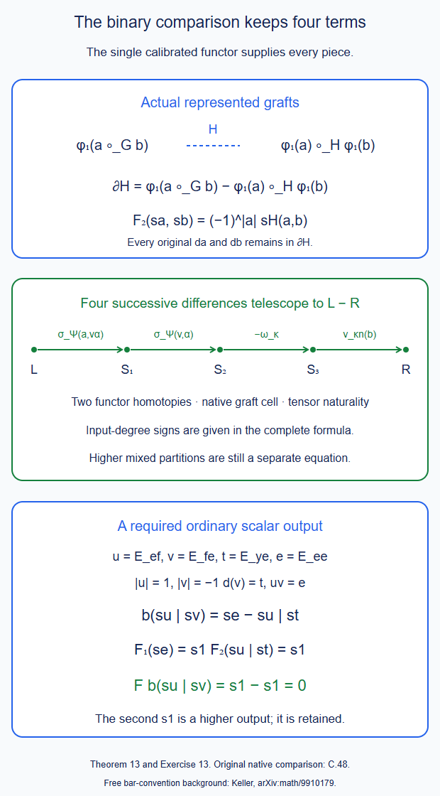
Theorem 13 and Exercise 13: the full Hom boundary is the difference of the source and target binary grafts. The two higher functor terms, native graft cell and tensor naturality are all present. Editable SVG.

14. The first higher transport of the retained source coordinate
The source coordinates of Proposition 12 must be applied to the whole data. The first two consequences occur exactly at the next native structure and comparison cells.
Theorem 14 (fourth structure and third comparison transport). Let \(g\) be the actual cofree coordinate with \(g_1=1\), \(g_2=0\), third primitive \(k_3\), and all other nonidentity primitive values zero. Let \(K_3\) be the degree-zero coderivation with that same sole primitive value. For any full coderivation \(b\), put \(b^g=g b g^{-1}\). Then \[ \begin{gathered} b^g_1=b_1,\qquad b^g_2=b_2,\\ b^g_3=b_3+[K_3,b_1]_3,\\ b^g_4=b_4+[K_3,b_2]_4 . \end{gathered} \] The bracket is the graded commutator; \(K_3\) has degree zero, so each displayed bracket is an ordinary difference. All operations are on full original trees.
The fourth correction is the exact sum \[ \begin{aligned} [K_3,b_2]_T &=\sum_{\substack{S\subseteq T\ {\rm connected}\\|S|=2}} \epsilon_S\,k_{T/S}(\ldots,b_S,\ldots)\\ &\quad-\sum_{\substack{S\subseteq T\ {\rm connected}\\|S|=3}} \epsilon'_S\,b_{T/S}(\ldots,k_S,\ldots). \end{aligned} \] Its five terms for a four-vertex linear tree, and six for a four-vertex internal star, have precisely the original pentagon and hexagon facet indices. The signs are the same ordered graded grouping signs as in Section 1.
If \(F\) is the given comparison to the fixed target, its transported comparison is \(F^g=Fg^{-1}\). Its primitive values satisfy \[ \begin{gathered} f^g_1=f_1,\qquad f^g_2=f_2,\\ f^g_3=f_3-f_1k_3,\\ f^g_4=f_4- \sum_{\substack{S\subseteq T\ {\rm connected}\\|S|=3}} \epsilon_S\,f_{T/S}(\ldots,k_S,\ldots). \end{gathered} \] The target coderivation is unchanged. These formulas give the transport of the actual coordinates already retained; they do not supply the still-unconstructed raw native fourth structure or third comparison cell.
Proof. A third primitive value lowers vertex count by two. On an input with at most four vertices two such contractions cannot occur successively, and two disjoint three-vertex blocks cannot occur simultaneously. The complete connected-block formula therefore gives, on these inputs, \[ g=1+K_3,\qquad g^{-1}=1-K_3. \] In the conjugation, the term \(K_3b_1-b_1K_3\) lowers vertex count by two, so gives the third primitive correction. The term \(K_3b_2-b_2K_3\) lowers it by three, so gives the fourth. Every remaining term lowers it too far to have a nonempty output on these inputs. This proves the four identities without imposing any augmentation or deleting an ordinary identity output.
On a four-vertex tree, \(K_3b_2\) first contracts one two-vertex subtree and then applies the third coordinate to the whole remaining tree. The other product first contracts one three-vertex subtree and then applies the remaining binary operation. This proves the two finite sums and their grouping signs. A tree with four vertices has three internal edges, giving three terms of the first kind. A linear internal tree has two connected three-vertex subtrees; a star has three. These are exactly the proper connected internal-edge tubes of Theorem 5, of sizes one and two, respectively. The argument retains all original boundary slots and therefore applies to every root orientation and to the allowed unary and nullary vertices.
For clarity, take a linear suspended input \[ x|y|z|w. \] Its fourth correction is \[ \begin{aligned} &k_3(b_2(x,y),z,w)\\ &\quad+(-1)^{|x|}k_3(x,b_2(y,z),w)\\ &\quad+(-1)^{|x|+|y|}k_3(x,y,b_2(z,w))\\ &\quad-b_2(k_3(x,y,z),w)\\ &\quad-b_2(x,k_3(y,z,w)). \end{aligned} \] Here the degrees are already suspended. The first three signs move the degree-one binary operation past its preceding original inputs. The third-coordinate map has degree zero, so the last two terms have no additional prefix sign.
For a root with three operation children, in the same original order \(x,y,z,w\), the correction is \[ \begin{aligned} &k_3(b_2(x,y),z,w)\\ &\quad+(-1)^{|y||z|}k_3(b_2(x,z),y,w)\\ &\quad+(-1)^{|w|(|y|+|z|)}k_3(b_2(x,w),y,z)\\ &\quad-b_2(k_3(x,y,z),w)\\ &\quad-(-1)^{|z||w|}b_2(k_3(x,y,w),z)\\ &\quad-(-1)^{|y|(|z|+|w|)}b_2(k_3(x,z,w),y). \end{aligned} \] Each sign is the indicated permutation bringing its connected root block together. The actual input slots of these partial operations are those of the original tree; no arity-only identification has been made.
To transport the comparison, use the same inverse formula and then take one output. At three vertices the single \(K_3\) output is fed to \(f_1\). At four vertices the contracted tree has two vertices and is fed to the corresponding \(f_2\). These are all possibilities. This gives the asserted comparison identities.
Finally the whole equations transport exactly: \[ \begin{gathered} (b^g)^2=g b^2 g^{-1},\\ b_HF^g-F^g b^g=(b_HF-Fb)g^{-1}. \end{gathered} \] Thus the full raw native equations, when supplied, remain the full equations after this source change. Keeping the new third structure component but the old fourth, or keeping the former third comparison, does not implement this conjugation. \(\square\)
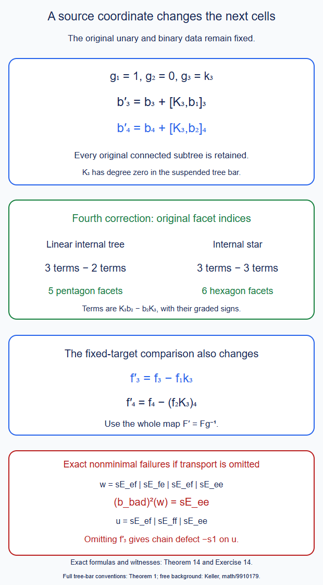
Theorem 14 and Exercise 14: a retained third source coordinate changes both the fourth structure and third comparison. The displayed nonminimal witnesses use the original unary differentials. Editable SVG.

15. Exact source flows for comparison normalization
There is also a complete way to propagate the degree-minus-one comparison homotopies of Theorem 13. It preserves the fixed target throughout.
Theorem 15 (a differential-exact source flow). Let \(b^2=0\) on a full tree bar over a characteristic-zero field. Let \(H\) be a degree-minus-one coderivation with zero one-vertex primitive and zero vertex-free value. Put \[ L=[b,H]=bH+Hb. \] Then \(L\) is a degree-zero coderivation strictly lowering vertex count. The finite expressions \[ G=\exp L,\qquad G^{-1}=\exp(-L) \] are actual mutually inverse chain cooperad maps with identity first primitive. Their formulas retain every ordinary identity output and every cut. Moreover, with \[ \mathcal A= H\sum_{j\ge0}\frac{L^j}{(j+1)!}, \] one has the full chain homotopy \[ G-1=b\mathcal A+\mathcal A b. \] All sums are finite on each original input tree. In fact the flow has a full cooperadic polynomial homotopy. Over \(\Omega(I)=k[t,dt]\), with \(d t=dt\), \((dt)^2=0\), set \[ \widetilde G=\exp(tL)+dt\,H\exp(tL). \] The form \(dt\) is written on the left. Thus its second term on a homogeneous \(x\), in target-first tensor notation, is \((-1)^{|x|+1}H\exp(tL)(x)\otimes dt\). This is an actual chain cooperad map over the polynomial interval, with endpoints \(1,G\).
Suppose \(F\) maps to the fixed zero-differential cohomological target and its leading primitive \(f_1\) is the calibrated quasi-isomorphism in every profile. For any prescribed second comparison homotopy \(h_2\) choose a coefficient-linear chain section \(i\) of \(f_1\), and take \(H\) with sole primitive \(H_2=i h_2\). Then the whole comparison \(FG\) has \[ (FG)_1=f_1,\qquad (FG)_2=f_2+\partial h_2. \] Its higher components are the actual complete connected-block and exponential formulas, not unchanged former values. If the homotopy is normalized and the source is strictly unital, its flow is normalized as well. A nonnormalized initial unit correction retains its full unit components; no normalized full comparison is inferred from that correction alone.
Proof. Commutators of coderivations are coderivations. Indeed in a cut, terms acting on two different components cancel between the two orders, with their graded interchange sign. The remaining terms are the commutator on one component. Applying this to \(b,H\) proves the first assertion. Every term of \(H\) contracts at least two vertices. A term of \(b\) contracts at least one, and its unary part preserves vertex count. Thus \(L\) lowers vertex count by at least one on every nonzero summand.
The direct computation \[ bL-Lb=b^2H-Hb^2=0 \] shows that \(L\) commutes with the entire coderivation \(b\). Local vertex-lowering nilpotence makes both exponentials finite. Their product is the identity by the finite binomial expansion, and each commutes with \(b\).
We verify the cooperad equation, rather than treating a primitive exponential as its substitute. On any cut, the coderivation equation for \(L\) is a sum of its actions on the output components. Those degree-zero actions commute on different components. The finite multinomial expansion therefore gives \[ \Delta\exp L=(\exp L)^{\otimes}\Delta \] on that cut, with the original ordered forest factors. The empty forest keeps the coefficient identity, and the vertex-free trees are fixed. This proves all cuts simultaneously. The same argument applies to the inverse.
Since \(bL=Lb\), for every \(j\ge0\) one has \[ b(HL^j)+(HL^j)b=L^{j+1}. \] Multiply by \(1/(j+1)!\) and sum the finite series. This gives the stated chain homotopy. It is a homotopy of the whole underlying bar maps; the cooperad property was proved separately above.
For the stronger polynomial statement put \(G_t=\exp(tL)\), \(A_t=HG_t\). Their actual equations are \[ \frac{dG_t}{dt}=L G_t=bA_t+A_t b. \] The graded tensor differential, with the displayed sign for placing \(dt\) on the left, says exactly that \((b+d_{\Omega})\widetilde G=\widetilde G b\). On a cut, \(A_t\) is a coderivation relative to \(G_t\): apply the coderivation equation of \(H\) after the cooperad equation of \(G_t\). The cut expression is the sum with \(A_t\) in one component and \(G_t\) in all others, with the original graded sign. These are precisely the single-\(dt\) terms in the cooperad equation for \(\widetilde G\); terms with two \(dt\)'s are zero. Thus that equation holds on every cut.
Endpoint evaluation sends \(dt\) to zero and \(t\) to zero or one. The endpoints are therefore \(1,G\). The interval algebra has cohomology just \(k\): a polynomial multiple of \(dt\) has its polynomial antiderivative, and a closed degree-zero polynomial is constant. Characteristic zero is used here as well as in the finite exponential. After extending coefficients to this interval algebra, the same vertex triangular inverse proves that \(\widetilde G\) is an isomorphism. Composition with \(F\) gives the corresponding whole cooperadic comparison homotopy with fixed target.
For the comparison application, the calibrated leading map is surjective on cycles in every profile: the target differential is zero and every target vector is a cohomology class. Choose cycle lifts of a homogeneous basis. They give a chain section \(i\) with \(f_1i=1\). At an identity class choose the original unit. This is a section of complexes only, not an assertion that \(i\) preserves all operations.
The second primitive of \(L\) is \[ L_2=b_1H_2+H_2b_1. \] No power \(L^j\) for \(j>1\) can have a nonzero second primitive, so \(G_2=L_2\). Consequently \[ \begin{aligned} (FG)_2-f_2 &=f_1(b_1H_2+H_2b_1)\\ &=b_{H,1}h_2+h_2b_1 =\partial h_2 . \end{aligned} \] Here the equality \(f_1H_2=h_2\) uses the chosen actual section. This realizes the desired correction in the full comparison. The whole chain equation follows immediately from \(bG=Gb\), and the cofree formula supplies every output partition.
The next primitive already illustrates why one must keep that whole formula. Write \(L^{[2]}\) for the coderivation with sole primitive \(L_2\). Then \[ \begin{gathered} G_3=[b_2,H_2]_3+ \tfrac12\bigl((L^{[2]})^2\bigr)_3,\\ (FG)_3=f_3+ (f_2 L^{[2]})_3+f_1G_3 . \end{gathered} \] All signs in these products are the full tree tensor signs. The first identity uses that the third primitive of \(L\) is \([b_2,H_2]_3\); the only quadratic power contributing there uses two second primitives. The second is exactly the connected-block comparison formula.
For normalization, let an original input vertex be a unary identity. Higher primitive values of \(H\) containing it vanish. The same is true for higher primitive values of \(b\), except its two-vertex unit action. In the primitive commutator the remaining unit-action terms pair: acting next to the output of an \(H\)-block, or removing that same unit before applying \(H\), gives the same shorter value with opposite suspended signs. At an internal unary unit these are its two incident-edge terms; at an end they are its one corresponding end term. The unary differential of the unit is zero. These exhaust the remaining terms, so the higher primitives of \(L\) vanish at unit inputs.
Every nontrivial connected-block term in the exponential then either has a zero unit-containing higher block or feeds its surviving singleton unit to another zero higher block. Thus \(G\) and its inverse are normalized. This does not apply when the initial \(h_2\) itself has nonzero unit components: those data are retained, not erased.
All these assertions require a full source \(b\) for their full native application. Their finite primitive formulas can be used at the present partial stage, but they do not construct its missing native surface cells. They propagate normalization once those cells are supplied, with the rational cohomological target fixed. An additional raw marked operator not yet encoded in \(b\) still has its own transport or commutation equation; this flow is not a substitute for that equation. The native realization must prove that it retains all such data. \(\square\)
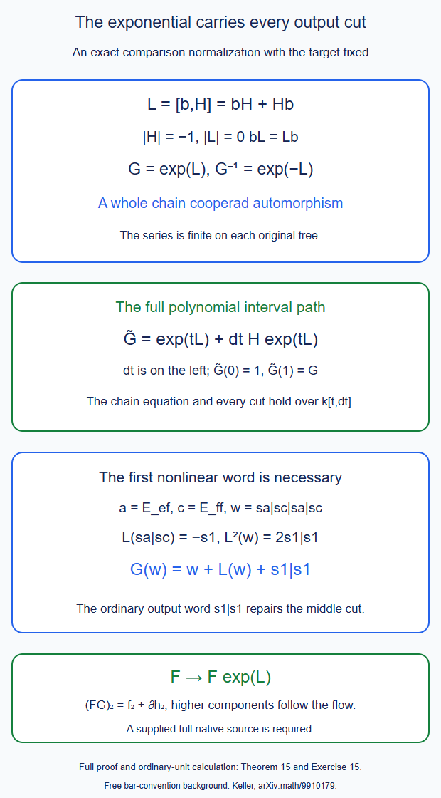
Theorem 15 and Exercise 15: the exponential preserves every cut and carries the full comparison with the target fixed. Its polynomial path includes the exact graded \(dt\) term. Editable SVG.

16. Elementary native surfaces and their complete boundaries
At the next stage a functor's third component, a natural transformation's second component and a coherence homotopy's one-input component all have ordinary degree minus two. They contribute different surfaces. None is determined by the object components alone.
Theorem 16 (five elementary surface boundaries). Let \(A,B\) be dg categories in the conventions of Theorem 9, and let \(F,G:A\longrightarrow B\) be actual full \(A_\infty\) functors. Write products in target-to-source order, so that \(ab\) means first \(b\), then \(a\). For a homogeneous multilinear cochain \(q\) of ordinary degree \(r\), use \[ \begin{aligned} (\partial q)(a_1,\ldots,a_m) &=d_Bq(a_1,\ldots,a_m)\\ &\quad-(-1)^r\sum_{j=1}^m (-1)^{|a_1|+\cdots+|a_{j-1}|} q(a_1,\ldots,da_j,\ldots,a_m). \end{aligned} \tag{16.1} \] The following are boundaries of the stated original higher components, with every source differential included.
First, put \[ \sigma_F(a,b)=(-1)^{|a|}\tau_F(sa|sb), \qquad \rho_F(a,b,c)=(-1)^{|b|}\tau_F(sa|sb|sc). \] Then \(|\rho_F|=-2\), and \[ \begin{aligned} \partial\rho_F(a,b,c) &=\sigma_F(ab,c)-\sigma_F(a,bc)\\ &\quad+\sigma_F(a,b)F_1(c) -(-1)^{|a|}F_1(a)\sigma_F(b,c). \end{aligned} \tag{16.2} \] In particular this surface retains the third component of the actual native convolution functor when \(F=F_n^G\).
Second, let \(\beta:F\Rightarrow G\) be a closed full degree-zero natural transformation. Set \[ \nu_\beta(a)=\beta^{[1]}(sa), \qquad \lambda_\beta(a,b)=(-1)^{|a|} \beta^{[2]}(sa|sb). \] For \(b:x_0\longrightarrow x_1\) and \(a:x_1\longrightarrow x_2\), denote the object components by \(\beta_{x_i}\). Then \[ \begin{aligned} \partial\lambda_\beta(a,b) &=-\nu_\beta(ab) +(-1)^{|a|}G_1(a)\nu_\beta(b)\\ &\quad+\sigma_G(a,b)\beta_{x_0} -\beta_{x_2}\sigma_F(a,b) +\nu_\beta(a)F_1(b). \end{aligned} \tag{16.3} \] This is a five-term boundary. Both functor second components are present. It applies to the actual native graft transformations \(\alpha\) and to the calibrated transformations \(\kappa\), using their full composite functors at the endpoints.
Third, let \(\omega:F\Rightarrow G\) be an original degree-minus-one pre-natural cochain, and put \(\Theta=\delta\omega\). Define \[ \chi_\omega(a)=\omega^{[1]}(sa),\qquad \omega_{x_i}=\omega^{[0]}_{x_i}. \] There is no extra input sign in this definition. For \(a:x_0\longrightarrow x_1\), \[ \partial\chi_\omega(a) =\Theta^{[1]}(sa) -(-1)^{|a|}G_1(a)\omega_{x_0} +\omega_{x_1}F_1(a). \tag{16.4} \] When \(\Theta\) is the difference of two full composites of closed degree-zero natural transformations, its one-input component contains every cut. For example, \[ \begin{aligned} (\gamma\star\beta-\eta\star\zeta)^{[1]}(sa) &=\gamma^{[1]}(sa)\beta_{x_0} +\gamma_{x_1}\beta^{[1]}(sa)\\ &\quad-\eta^{[1]}(sa)\zeta_{x_0} -\eta_{x_1}\zeta^{[1]}(sa). \end{aligned} \tag{16.5} \] If an endpoint involves postcomposition by an \(A_\infty\) functor, its full bar pushforward is used before taking this component. The one-cross formula of Theorem 9 and C69 retains those higher terms. An objectwise product alone cannot replace it.
Fourth, let \(S\) be the actual full native parameter functor into the relevant dg category of natural transformations. For composable closed degree-zero parameter arrows \(u,v,w\), put \[ s_2(u,v)=\tau_S(su|sv),\qquad s_3(u,v,w)=\tau_S(su|sv|sw). \] Then the original parameter surface satisfies \[ \begin{aligned} d s_3(u,v,w) &=s_2(uv,w)-s_2(u,vw)\\ &\quad+s_2(u,v)S_1(w) -S_1(u)s_2(v,w). \end{aligned} \tag{16.6} \] Original positive parameter arrows are retained even when their geometric image is an identity. Only a formal identity is subject to the functor's strict-unit normalization.
Finally, take closed degree-zero maps \(f_0,f_1:X\longrightarrow Y\) and \(g_0,g_1:Y\longrightarrow Z\), with original degree-minus-one homotopies \[ dh=f_1-f_0,\qquad dk=g_1-g_0 . \] The two composite path homotopies \[ P=kf_0+g_1h,\qquad Q=g_0h+kf_1 \] have the same boundary \(g_1f_1-g_0f_0\), and their independent interchange square is \[ d(kh)=P-Q. \tag{16.7} \] The same formula holds in a dg Hom category of multilinear maps, using (16.1) and its graded tensor evaluation signs.
Proof. Write \(A=|a|\), \(B=|b|\). The full Maurer--Cartan equation \(d_B\tau_F+\tau_F b_A=\tau_F\star\tau_F\) at \(sa|sb|sc\) is \[ \begin{aligned} &d_B\tau_F(sa|sb|sc) -\tau_F(sda|sb|sc)\\ &\quad+(-1)^A\tau_F(sa|sdb|sc) +(-1)^{A+B-1}\tau_F(sa|sb|sdc)\\ &\quad+(-1)^{A-1}\tau_F(s(ab)|sc) +(-1)^{A+B}\tau_F(sa|s(bc))\\ &=(-1)^{A-1}F_1(a)\tau_F(sb|sc) +(-1)^{A+B}\tau_F(sa|sb)F_1(c). \end{aligned} \tag{16.8} \] The first three unary-input signs follow by moving \(b_1(sa)=-sda\) through the preceding suspended letters. The adjacent-product signs are those of \(b_2(sa|sb)=(-1)^{A-1}s(ab)\). The two convolution signs are the degrees of the suspended prefixes. Thus this equality includes both proper cuts and every unary term. Multiply it by \((-1)^B\), move its adjacent-product terms to the right, and substitute the definitions of \(\rho,\sigma\). The first two lines become exactly \(\partial\rho\) in (16.1); the result is (16.2).
For (16.3), the two-input component of \[ 0=\delta\beta=d_B\beta-\beta b_A -\tau_G\star\beta +\beta\star\tau_F \] is, with all terms at their indicated endpoints, \[ \begin{aligned} 0={}&d_B\beta^{[2]}(sa|sb) +\beta^{[2]}(sda|sb) -(-1)^A\beta^{[2]}(sa|sdb)\\ &+(-1)^A\nu_\beta(ab) -G_1(a)\nu_\beta(b) -\tau_G(sa|sb)\beta_{x_0}\\ &+\beta_{x_2}\tau_F(sa|sb) +(-1)^{A-1}\nu_\beta(a)F_1(b). \end{aligned} \tag{16.9} \] Multiplication by \((-1)^A\) converts its first line to \(\partial\lambda\): the input \(da\) also changes the sign in the definition of \(\lambda(da,b)\). Solving the remaining equality for that first line gives all five terms of (16.3).
For a degree-minus-one \(\omega\), the full differential is \[ \delta\omega=d_B\omega+\omega b_A -\tau_G\star\omega -\omega\star\tau_F. \] On \(sa\), its source unary term is \(-\omega^{[1]}(sda)\). The first convolution contributes \(-(-1)^{A-1}G_1(a)\omega_{x_0}\); the second contributes \(-\omega_{x_1}F_1(a)\). Consequently \[ \Theta^{[1]}(sa) =\partial\chi_\omega(a) +(-1)^A G_1(a)\omega_{x_0} -\omega_{x_1}F_1(a), \] which proves (16.4). For degree-zero composites the two deconcatenations of a one-letter word have no extra convolution sign. Expanding them proves (16.5). The full pushforward assertion follows by expanding all output blocks as in Theorem 9; extracting the object component first would discard blocks containing the source letter.
Equation (16.6) is (16.2) for the functor \(S\). The three source differentials vanish, all input degrees are zero, and the ordinary Hom differential on the parameter value is therefore its target differential. This uses the given third component of \(S\), not a chosen primitive of an arbitrary closed boundary.
Finally the dg Leibniz rule gives \[ \begin{aligned} dP&=(g_1-g_0)f_0+g_1(f_1-f_0) =g_1f_1-g_0f_0,\\ dQ&=g_0(f_1-f_0)+(g_1-g_0)f_1 =g_1f_1-g_0f_0,\\ d(kh)&=(g_1-g_0)h-k(f_1-f_0)=P-Q. \end{aligned} \] The minus sign on \(k\,dh\) is essential. The ordinary Hom differential is also a derivation for graded composition, so the same calculation proves the multilinear version with its input differential terms. This proves all five identities. \(\square\)
These surfaces are prescribed pieces of the raw native four-vertex and mixed three-vertex pasting. The theorem does not identify an entire pentagonal, hexagonal or higher mixed surface with their sum. Such an identification still requires its typed native subdivisions, their orientations and cancellation along every shared edge. Nor does it authorize replacing a native component by a filler obtained only from parity.
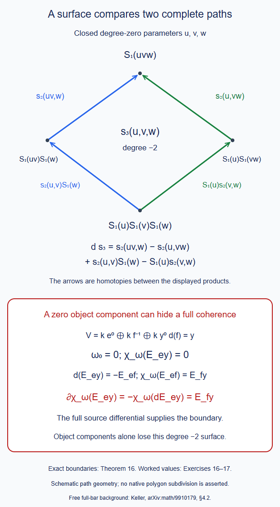
Theorem 16 and Exercises 16–17. The upper diamond is a schematic of the exact two-path identity (16.6); its arrows denote degree-minus-one homotopies between the displayed products. The lower panel retains the source differential in (16.4). It does not depict an asserted native polygon subdivision. Editable SVG.

17. The prescribed full fan and its comparison components
Proposition 17 (extract the actual represented fan). Fix an actual native profile functor \(F=F_n^G:A\longrightarrow B\), as in Theorem 9. A represented fan has root label \(a\in B(Fx,y)\) and unary labels along its input legs. With one joint source bar word \(c=sb_1|\cdots|sb_r\), its suspended root primitive is \[ b^{\mathrm{fan}}_{r+1}(sa;c) =(-1)^{|a|+1}s\bigl(a\,\tau_F(c)\bigr), \qquad r\ge1. \tag{17.1} \] Its unary differential is \(b_1(sa)=-s\,da\). Along nonroot unary chains use the original dg source category operations. These values have square zero on every represented fan. For \(n=0\), there are no incoming operation legs in this statement. Retain the full represented nullary complex and its coefficient source from Theorem 9; do not identify that source with the entire endomorphism complex of the unit object. In particular the actual fourth fan component is \[ b^{\mathrm{fan}}_4(sa;sb|sc|sd) =(-1)^{|a|+1}s\bigl(a\,\tau_F(sb|sc|sd)\bigr). \tag{17.2} \] For several original input legs, replace the joint word in these formulas by the full bar shuffle of their leg words. An inversion of two suspended original labels \(sb_i,sb_j\) has sign \((-1)^{(|b_i|-1)(|b_j|-1)}\). Thus three unary labels on three distinct legs give all six shuffle terms, with their original leg labels and intermediate objects. The formulas extend the fan values fixed in Proposition 12, including its separated-leg two-term value. They retain ordinary unit outputs and are normalized on formal unary identity inputs.
For the comparison, let \(W:B\longrightarrow C\) be the actual full output functor, and let \(\kappa:G\Rightarrow WF\) be the actual closed degree-zero transformation on a genuine common-input bar. Write \[ \begin{aligned} P_W(a;c) &=\sum_{\substack{c=c_1\cdots c_j\\c_i\ne\varnothing}} \tau_W\bigl(sa|s\tau_F(c_1)|\cdots|s\tau_F(c_j)\bigr),\\ P_W(a;\varnothing)&=W_1(a),\\ Q(a;c)&=\sum_{c=uv}P_W(a;u)\kappa(v). \end{aligned} \tag{17.3} \] The first line applies to nonempty \(c\). Where that common input is needed, \(F\) in (17.3) also denotes its pullback along the actual dg projection supplied by C78. The primitive comparison component at the root is \(sQ(a;c)\), with every source and output bar action retained by the full graph map. At source length two it has precisely the four terms \[ \begin{aligned} Q(a;sb|sc) ={}&W_1(a)\kappa^{[2]}(sb|sc)\\ &+\tau_W(sa|sF_1(b))\kappa^{[1]}(sc)\\ &+\tau_W(sa|s\tau_F(sb|sc))\kappa^{[0]}\\ &+\tau_W(sa|sF_1(b)|sF_1(c))\kappa^{[0]} . \end{aligned} \tag{17.4} \] Here each object component of \(\kappa\) is taken at the endpoint of its preceding consumed word, not at a fixed common object. These are the actual \(\kappa_2\), mixed \((W_2,F_1,\kappa_1)\), \((W_2,F_2)\), and \(W_3\) terms. No additional input sign multiplies (17.4) before its output suspension.
If \(G=F_n^H U\), use the entire original common-input coalgebra map \(U\) to encode the remaining target source word. Formula (17.3) is then a map to the pulled-back represented fan, followed by that whole base map; it is not a replacement of \(U\) by its first component or by a naive tensor product of \(A_\infty\) functors. Consequently the fan comparison satisfies all its source and target bar equations. It gives the prescribed third comparison component on this genuine common input.
Proof. Let \(S\) suspend the coefficient \(a\) in \(K_F\otimes C_A\), leaving the source bar word unchanged. Theorem 9's module differential has coefficient \((-1)^{|a|}\) on each twisting prefix. The differential on the suspended root module is \(-S D_F S^{-1}\). Its twisting coefficient is therefore \((-1)^{|a|+1}\), proving (17.1). Its coefficient-only term is \(-s\,da\). Its source-bar term has coefficient \(-(-1)^{|a|}=(-1)^{|sa|}\), exactly the coderivation sign for moving a source operation past the suspended root. Theorem 9 proves \(D_F^2=0\) on the entire cofree comodule. After this suspension, every term in that square is either a connected root-subtree contraction or an operation within a nonroot unary chain. These are exactly all connected contractions of a fan. There are no other connected subtrees. This proves the full square-zero assertion, including (17.2).
For separate legs the source Hom complex is the actual tensor product of the leg Hom complexes. Embed an arrow on one leg using identity arrows on the other current objects. Define its shuffle by all interleavings preserving the order on each leg, with the suspended inversion sign in the statement. The unary bar differential commutes with this map by the tensor differential rule. An adjacent merger of two arrows from different legs occurs in two interleavings; graded tensor interchange and the suspended inversion sign make their coefficients opposite. They cancel. The remaining mergers are on a single leg and are precisely its original bar differential, with the preceding-leg tensor sign. Thus the full shuffle is a chain map. Cutting an interleaving at any position is equivalent to cutting each leg into a prefix and a suffix and shuffling those two sets separately. Its inversion signs split into the two shuffle signs and the tensor-coalgebra cut sign. This proves its full coalgebra identity as well. Pulling back \(D_F\) by that coalgebra map proves the asserted multi-leg fan equations with every root prefix cut.
For \(r=2\) on one leg, (17.1) equals the suspension of \((-1)^{|a|}a\sigma_F(b,c)\) with the third-component sign of Theorem 11. On two legs the shuffle has coefficients \[ 1\quad\text{and}\quad (-1)^{(|b|-1)(|c|-1)}. \] The same substitution gives Proposition 12's two actual fan terms. A formal identity on a leg embeds as the joint identity. Every higher \(\tau_F\) containing it is zero by normalized unitality. For a unary root \(F_1^G=\mathrm{Id}\), all higher terms are zero already. No step projects away an identity-valued output.
For (17.3), use the triangular dg category in Theorem 9's changing-target construction. Its word starts with the unique cross arrow \(a\). Apply the full cofree map of \(F\) to the following source word. Each ordered partition \(c=c_1\cdots c_j\) produces the successive ordinary arrows \(\tau_F(c_i)\). In the full bar map of \(W\), the unique output block containing the cross arrow begins at that arrow and consumes a prefix of those blocks. Its primitive is exactly the first line of (17.3). All its unconsumed blocks give the ordinary cofree-comodule extension. Thus no source cut, output block or coefficient differential has been omitted. The full bar chain equation for \(W\), composed with that for \(F\), proves that this is the changing-target graph map to \(K_{WF}\).
Precomposition by the closed \(\kappa\) is the map \(T_\kappa:K_{WF}\longrightarrow K_G\) of Theorem 9. Its degree is zero, so its coefficient evaluation has no extra Koszul sign. Its every deconcatenation \(c=uv\) gives \(P_W(a;u)\kappa(v)\). This proves the third line of (17.3) and the entire chain and coaction equations. At length two there are three such outer cuts. The cut consuming both letters in \(P_W\) has two inner partitions, giving exactly the last two terms of (17.4); the other cuts give its first two terms. Suspending the coefficient on both sides gives \(sQ\).
At length one this reads \[ Q(a;sb)= \tau_W(sa|sF_1(b))\kappa^{[0]} +W_1(a)\kappa^{[1]}(sb). \] The ordinary homotopy in the fan specialization of Theorem 13 is \((-1)^{|a|}Q(a;sb)\). Its suspended comparison sign \((-1)^{|a|}\) cancels that factor. Hence the new formula agrees with the previously fixed second fan comparison, including its sign. Retaining the full coalgebra map \(U\) on tails gives its pulled-back module's chain equation and every mixed partition, rather than only their first components. This proves the proposition. \(\square\)
This supplies an actual compatible full fan restriction extending the already prescribed fan values. It does not assert that a previously transported global fourth component automatically equals this canonical restriction. A global extension must preserve the retained relative comparison or transport it with all higher components as in Theorems 14–15. Trees with a nonunary proper branch still require their original native surface pasting.
18. The native graft's two-input naturality surface
The two inputs of a naturality surface can move different branches of a genuine nonunary graft. Their four intermediate objects matter: writing the same arrow name without its endpoint can turn a well-typed composite into a nonexistent one.
Theorem 18 (the full native graft naturality hexagon). Let \(F,G:A\longrightarrow B\) be actual full normalized functors between dg categories, and let \(\beta:F\Rightarrow G\) be a closed degree-zero full natural transformation. Consider the original independent-arrow square \[ \begin{array}{ccc} x_{00}&\xrightarrow{\ c_0\ }&x_{10}\\ {\scriptstyle d_0}\downarrow&& \downarrow{\scriptstyle d_1}\\ x_{01}&\xrightarrow{\ c_1\ }&x_{11}, \end{array} \qquad c_1d_0=(-1)^{pq}d_1c_0,\quad |c_i|=p,\quad |d_i|=q. \tag{18.1} \] The square is a bilinear family in the original cochains \(c,d\); their differentials give the corresponding squares with \(dc,d\) and \(c,dd\). No closedness of \(c,d\) is assumed.
Use the actual components of Theorem 16 and put \[ \begin{aligned} \Lambda_\beta(c,d) &=\lambda_\beta(c_1,d_0) -(-1)^{pq}\lambda_\beta(d_1,c_0),\\ X_H(c,d)&=\sigma_H(c_1,d_0) -(-1)^{pq}\sigma_H(d_1,c_0), \qquad H=F,G. \end{aligned} \tag{18.2} \] Then \(\Lambda_\beta\) is an ordinary degree-minus-two bilinear cochain from \(F(x_{00})\) to \(G(x_{11})\). Its entire Hom boundary is the following six groups: \[ \begin{aligned} \partial\Lambda_\beta(c,d) ={}&(-1)^pG_1(c_1)\nu_\beta(d_0) +\nu_\beta(c_1)F_1(d_0)\\ &-(-1)^{pq+q}G_1(d_1)\nu_\beta(c_0) -(-1)^{pq}\nu_\beta(d_1)F_1(c_0)\\ &+X_G(c,d)\beta_{00}-\beta_{11}X_F(c,d). \end{aligned} \tag{18.3} \] Here \[ \partial\Lambda(c,d) =d_B\Lambda(c,d)-\Lambda(dc,d)-(-1)^p\Lambda(c,dd). \] The six groups contain eight ordinary functor/naturality terms after expanding the two \(X\)'s. The actual surface itself is the two-input bar shuffle \[ \Lambda_\beta(c,d)=(-1)^p\left[ \beta^{[2]}(sc_1|sd_0) +(-1)^{(p-1)(q-1)}\beta^{[2]}(sd_1|sc_0) \right]. \tag{18.4} \] In particular it retains the full original second naturality component, even if an object component is an identity.
This specializes to a genuine nonunary native graft as follows. Let \(a\) have arity \(n\ge1\), and let \(b\) of arity \(m\ge2\) enter its slot \(i\). Let \(c,d\), of arbitrary arities \(l,r\ge0\), enter distinct slots \(j<k\) of \(b\). Their underlying represented cochains are arrows from \(T_l\mathbf z,T_r\mathbf t\) to the two original objects in those slots. The four tuples \(\mathbf x^{uv}\) replace either source by its target when \(u=1\), respectively \(v=1\). Their joint arrows have exactly (18.1)'s types and graded interchange sign.
Fix the other outer input objects and restrict the actual native transformation \(\beta=\alpha_{n,m,i}\) to this varying inner tuple. Its endpoint functors are \[ \begin{aligned} F&=F_{n+m-1}^G \quad\text{on the inserted inner tuple},\\ G&=F_n^G\circ\iota_i F_m^G . \end{aligned} \tag{18.5} \] The insertion \(\iota_i\) in the second line is the actual dg insertion into the single outer slot, with the other objects fixed. Thus no tensor product of unrelated \(A_\infty\) functors is being inferred. For composable inner joint arrows \(u,v\), the actual second component of the composite is \[ \begin{aligned} \sigma_G(u,v) ={}&\sigma_{F_n^G}\bigl( \iota_i(F_m^G)_1u,\iota_i(F_m^G)_1v\bigr)\\ &+(F_n^G)_1\bigl(\iota_i\sigma_{F_m^G}(u,v)\bigr). \end{aligned} \tag{18.6} \] Both summands are required in each of the two orders of \(X_G\). Expanding them gives ten formal terms in the actual native boundary (18.3).
For a fixed original compatible native path let \[ E_{cd}:T_{n+m+l+r-3}(\text{expanded inputs}) \longrightarrow F(\mathbf x^{00}) \] be the closed degree-zero comparison flattening the two inserted tensor objects. It exists on the actual compatible domain of C.44.3.1 and C.47.3.1; retain its original path labels. Then the actual four-cochain surface piece \[ Z_\alpha(a,b,c,d)= a(F_n^G)_1(\iota_i b)\, \Lambda_\beta(c,d)E_{cd} \tag{18.7} \] has the original flat source and the output of \(a\), has ordinary degree minus two, and obeys \[ \begin{aligned} \partial Z_\alpha(a,b,c,d) &=(-1)^{|a|+|b|} a(F_n^G)_1(\iota_i b)\\ &\qquad\cdot \bigl(\partial\Lambda_\beta(c,d)\bigr)E_{cd}. \end{aligned} \tag{18.8} \] This is an identity on all four original cochains, including \(da,db,dc,dd\). Nullary \(c,d\) retain their full represented mapping complexes. If the expanded arity is zero, its source is the actual unit object, not a replacement by the scalar coefficient source.
Proof. Precomposition of an ordinary cochain by the graded interchange map \[ c\otimes d\longmapsto(-1)^{pq}d\otimes c \] commutes with its Hom differential. Indeed the derivative of \(c\) has degree \(p+1\); its interchange sign changes by \((-1)^q\). The derivative of \(d\) has degree \(q+1\); its interchange sign changes by \((-1)^p\). Together with the tensor differential's \((-1)^p\), these are precisely the two signs in the reversed tensor differential. Thus Theorem 16's two-input equation can be alternated as in (18.2) without losing any source derivative.
Apply (16.3) first to \(c_1,d_0\) and then to \(d_1,c_0\), multiplying the second result by \(-(-1)^{pq}\). The two product terms are \[ -\nu_\beta(c_1d_0) +(-1)^{pq}\nu_\beta(d_1c_0)=0 \] by (18.1) and linearity. The other four naturality terms give the first two lines of (18.3), with their indicated endpoints. The two second-functor terms give \(X_G\beta_{00}\); the other two give \(-\beta_{11}X_F\). This proves all six groups. Substituting \(\lambda_\beta(u,v)=(-1)^{|u|} \beta^{[2]}(su|sv)\) in (18.2) gives (18.4), since \[ -(-1)^{pq+q-p}=(-1)^{(p-1)(q-1)}. \] There are no other input cuts.
For the native specialization, the original joint source is the dg product of the inner input categories. Insert \(c\) on leg \(j\) and \(d\) on leg \(k\). In the order \(c_1d_0\) no nonzero-degree factor crosses the other; the opposite order crosses them once and has sign \((-1)^{pq}\). This proves (18.1) with all four stated object tuples. The whole native graft transformation exists on those arbitrary frontier inputs by C.44.3.1 and C.47.2.1. Restricting its source to this inner dg product gives the actual (18.5); in particular its \(\beta^{[2]}\) is given native data.
For (18.6), the length-two cofree composition of the actual functors has exactly two partitions: one inner two-letter block, or two inner singleton blocks. Its unsuspended core is therefore \[ \begin{aligned} \tau_G(su|sv) ={}&(F_n^G)_1\bigl( \iota_i\tau_{F_m^G}(su|sv)\bigr)\\ &+\tau_{F_n^G}\bigl( s\iota_i(F_m^G)_1u\,|\,s\iota_i(F_m^G)_1v\bigr). \end{aligned} \] All these maps have cofree degree zero, so the ordered partitions introduce no extra permutation. Multiplication by \((-1)^{|u|}\) proves (18.6).
The source of \(\Lambda_\beta\) is \(F(\mathbf x^{00})\), while its target is \(G(\mathbf x^{11})\). The latter is exactly the source of \((F_n^G)_1(\iota_i b)\). Its output is exactly the source of \(a\). Precomposition by the actual \(E_{cd}\) therefore proves the source/output claim for (18.7). This path performs the two inner object insertions before the unexecuted \(b,a\), hence is in the compatible graft domain; no incompatible execution state is added.
The map \((a,b)\mapsto a(F_n^G)_1(\iota_i b)\) is a degree-zero chain map by the actual functor's first-component equation and dg composition. The comparison \(E_{cd}\) is closed. In the ordinary Hom differential of (18.7), its coefficient-only derivative terms cancel exactly with the terms containing \(da,db\). The remaining target derivative crosses the prefix of degree \(|a|+|b|\); the two source derivatives of \(c,d\) have that same prefix sign. This is precisely (18.8), with (18.3)'s full \(\partial\Lambda\). The argument uses arbitrary represented arrows, so also applies to the stated nullary cases. \(\square\)
For closed degree-zero \(c,d\), the six groups in (18.3) are a literal oriented hexagonal boundary between six closed composites. This is the higher naturality surface of the graft transformation, not an identification of the entire four-vertex tree cell with that hexagon. Other native surfaces, including the original coherence's one-input components and the parameter third components, still have to be pasted along their own labelled edges.
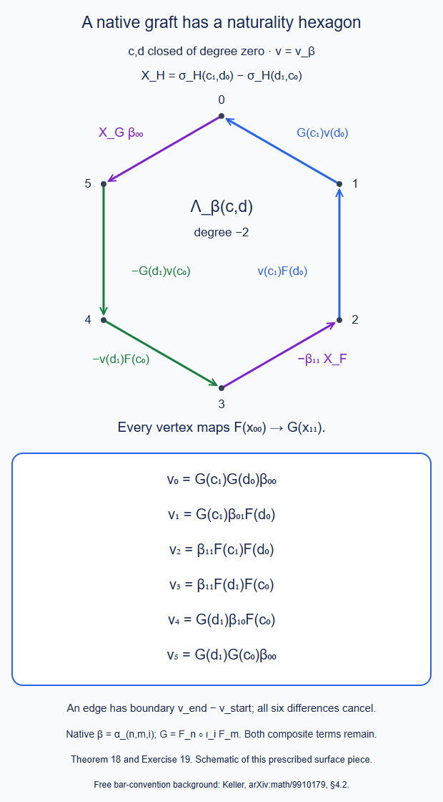
Theorem 18 and Exercise 19. This schematic uses closed degree-zero input arrows, so every edge has boundary its final vertex minus its initial vertex. The vertices are the six displayed, correctly typed composites. The surface is the actual alternating two-input naturality component; it is one prescribed piece of the native tree pasting. Editable SVG.

19. The native coherence's one-input surface
Theorem 19 (full pushforward before taking a coherence component). Let \(R,S:A\longrightarrow B\) and \(W:B\longrightarrow C\) be actual full normalized functors between dg categories. Let \(\Gamma:R\Rightarrow S\) be a closed degree-zero full natural transformation. Its actual full pushforward \(\eta=W_*\Gamma\) has object component \(\eta_x=W_1(\Gamma_x)\). On an original homogeneous arrow \(u:x_0\longrightarrow x_1\), its one-input component is \[ \begin{aligned} \nu_\eta(u) ={}&W_1\bigl(\nu_\Gamma(u)\bigr)\\ &+\sigma_W\bigl(\Gamma_{x_1},R_1(u)\bigr) -\sigma_W\bigl(S_1(u),\Gamma_{x_0}\bigr). \end{aligned} \tag{19.1} \] In particular it is not in general the first line alone. The formula uses the given full pushforward, not merely a naturality filler with the same boundary.
Now let the actual closed degree-zero transformations have types \[ \begin{gathered} \delta:P\Rightarrow WR,\qquad \varepsilon:P\Rightarrow L,\qquad \beta:L\Rightarrow WS,\\ Q=WS,\qquad K_1=\eta\star\delta,\quad K_0=\beta\star\varepsilon . \end{gathered} \] Let the original native coherence satisfy \[ d_{\rm Nat}\omega=K_1-K_0,\qquad |\omega|=-1. \] For \(\chi_\omega(u)=\omega^{[1]}(su)\) the entire ordinary Hom boundary has the following eight formal summands: \[ \begin{aligned} \partial\chi_\omega(u) ={}&W_1\bigl(\nu_\Gamma(u)\bigr)\delta_{x_0}\\ &+\sigma_W(\Gamma_{x_1},R_1u)\delta_{x_0}\\ &-\sigma_W(S_1u,\Gamma_{x_0})\delta_{x_0}\\ &+W_1(\Gamma_{x_1})\nu_\delta(u)\\ &-\nu_\beta(u)\varepsilon_{x_0} -\beta_{x_1}\nu_\varepsilon(u)\\ &-(-1)^{|u|}Q_1(u)\omega_{x_0} +\omega_{x_1}P_1(u). \end{aligned} \tag{19.2} \] Its source is \(P(x_0)\), its target is \(Q(x_1)\), and its ordinary cochain degree is minus one. The primitive \(\chi_\omega\) itself has ordinary degree minus two. Neither a zero object component of \(\omega\) nor an identity-valued object component of a path transformation deletes its higher components.
For the actual nested native grafts of Theorem 11, put \(W=F_n^G\iota_i\), \[ R=F_{m+l-1}^G,\qquad S=F_m^G\iota_jF_l^G,\qquad \Gamma=\alpha_{m,l,j}. \] The other outer objects are fixed. Then \[ \begin{gathered} P=F_{n+m+l-2}^G,\quad \delta=\alpha_{n,m+l-1,i},\\ \varepsilon=\alpha_{n+m-1,l,i+j-1}. \end{gathered} \] Here \(L\) is the actual partially nested functor after inserting \(F_l^G\) into the flattened outer pair; \(\beta\) is the full original \(\alpha_{n,m,i}\) pulled back along that insertion. In particular its one-input component is pulled back through the entire given source functor, not through an unrelated first-component replacement. The two paths are exactly the original \(K_0,K_1\) of Theorem 11, and \(\omega\) is their original parameter coherence, with all positive parameter labels retained. Thus (19.2) is their actual one-input coherence surface.
More explicitly, let \(a,b,c,d\) form a nested four-vertex chain: \(b\) enters slot \(i\) of \(a\), \(c\) enters slot \(j\) of \(b\), and \(d\) enters slot \(k\) of \(c\). Assume their arities are \(n,m,l\ge1\), \(r\ge0\). Regard \(u=\iota_kd\) as the original joint arrow on the inputs of \(F_l^G\); take all the preceding full functors and transformations on this same varying input. Set \[ f=(F_n^G)_1,\quad B=\iota_i b,\quad U=\iota_i\bigl((F_m^G)_1(\iota_jc)\bigr). \] Let \(E_u\) be the original closed comparison inserting \(T_r\) at flat slot \(i+j+k-2\) in \(P\). Its source has arity \(n+m+l+r-3\) and its target is \(P(x_0)\). The actual native surface piece \[ Z_\omega(a,b,c,d)=a f(B)f(U)\chi_\omega(u)E_u \tag{19.3} \] has the original four-vertex flat source and the output of \(a\), and \[ \partial Z_\omega =(-1)^{|a|+|b|+|c|} a f(B)f(U)(\partial\chi_\omega)(u)E_u . \tag{19.4} \] This includes all four original cochain differentials and the actual nullary possibility \(r=0\).
Proof. The suspended coextension of the degree-zero natural transformation \(\Gamma\) has degree minus one. On the one-letter input \(su\) its three terms are \[ \begin{aligned} s\nu_\Gamma(u),\qquad s\Gamma_{x_1}|sR_1(u),\qquad (-1)^{|u|-1}sS_1(u)|s\Gamma_{x_0}. \end{aligned} \tag{19.5} \] Indeed the last term moves the degree-minus-one inserted transformation past the suspended prefix of degree \(|u|-1\). The first inserts its one-input core; the other two are the two cuts at which its object core is inserted. Apply the actual cofree functor map of \(W\) and take its primitive output. The first term becomes \(sW_1\nu_\Gamma(u)\). In the second term the first arrow has degree zero, so its ordinary value is \(\sigma_W(\Gamma_{x_1},R_1u)\). The last coefficient changes \(\tau_W(sS_1u|s\Gamma_{x_0})\) to \(-\sigma_W(S_1u,\Gamma_{x_0})\). Unsuspending proves exactly (19.1). The full bar evaluation and coextension of Theorem 9 retain these terms together with every higher input cut.
One can also check its entire source differential directly. The three boundaries are \[ \begin{aligned} \partial(W_1\nu_\Gamma)(u) &=W_1(S_1u\,\Gamma_{x_0}) -W_1(\Gamma_{x_1}R_1u),\\ \partial\sigma_W(\Gamma_{x_1},R_1u) &=W_1(\Gamma_{x_1}R_1u) -W_1(\Gamma_{x_1})W_1(R_1u),\\ -\partial\sigma_W(S_1u,\Gamma_{x_0}) &=-W_1(S_1u\,\Gamma_{x_0}) +W_1(S_1u)W_1(\Gamma_{x_0}). \end{aligned} \] The object components are closed, and the functors' first components are chain maps, so these formulas include \(du\). The middle terms cancel and give precisely the required naturality boundary for \(WR\Rightarrow WS\). This boundary check also shows where either omitted second component would leave a defect.
The full convolution products of the degree-zero path transformations have one-input components \[ \begin{aligned} (K_1-K_0)^{[1]}(su) &=\nu_\eta(u)\delta_{x_0} +\eta_{x_1}\nu_\delta(u)\\ &\quad-\nu_\beta(u)\varepsilon_{x_0} -\beta_{x_1}\nu_\varepsilon(u). \end{aligned} \] Both cuts of each product are present and their convolution signs are one. Substitute (19.1) and \(\eta_{x_1}=W_1(\Gamma_{x_1})\). The six resulting terms are the first six terms of (19.2). The last two are exactly Theorem 16's one-input equation for the original degree-minus-one \(\omega\). This proves all eight terms with their full source differential.
The native path data just listed are the full versions of Theorem 11's two actual path composites. Their original parameter functor supplies \(\omega\) as a full natural cochain, so its Nat differential is the difference of these full composites, not only their object values. Restricting to the one innermost input block preserves that equation. The single-slot insertion \(\iota_i\) is dg; hence this specialization again requires no tensor product of unrelated higher functors.
For (19.3) the prefix maps \(Q(x_1)\) to the output of \(a\): \(f(U)\) applies the actual \(c\), then \(f(B)\) applies \(b\), then \(a\) is composed. The actual comparison \(E_u\) maps the fully expanded input to \(P(x_0)\). Thus every factor has the stated original type. The prefix is a degree-zero trilinear chain map in \(a,b,c\), since the functors' first components are chain maps. The comparison \(E_u\) is closed. Its coefficient derivatives cancel \(da,db,dc\) in the Hom differential, and the remaining differential crosses the prefix of degree \(|a|+|b|+|c|\). The input derivative of \(d\) crosses that same prefix. This proves (19.4), including nonclosed inputs. The original partial forest can insert the innermost object before executing its ancestors, so \(E_u\) lies in the compatible native graft domain. Its arity-zero case retains the actual unit object and its full mapping complex. \(\square\)
This specifies the original coherence's one-input surface and its four-vertex attachment. It does not yet sum this piece, Theorem 18's piece, the functor surfaces and the original parameter \(S_3\) into the entire native four-vertex boundary.
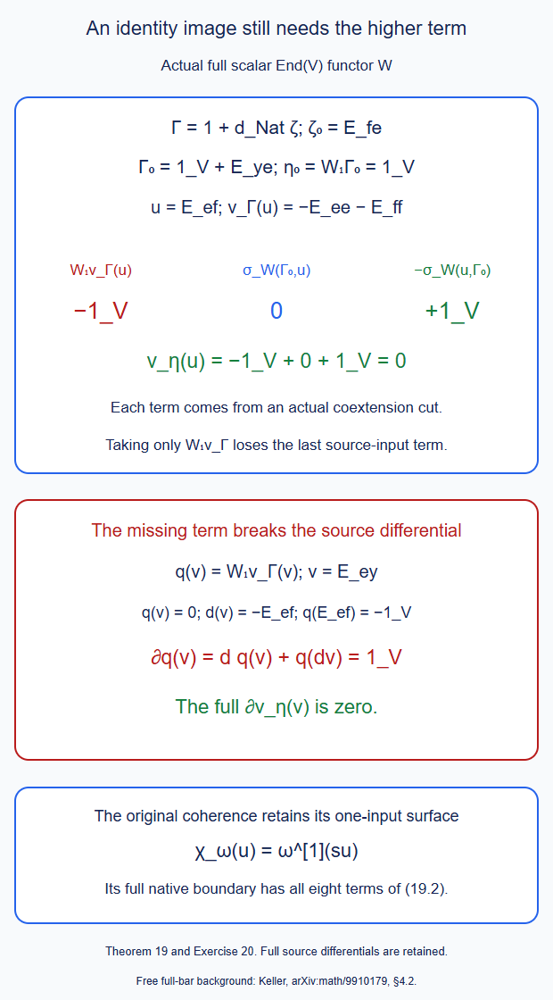
Theorem 19 and Exercise 20. The object component of the output transformation is the identity, while its one-input value requires the full three-term pushforward. The lower calculation uses the original nonclosed \(E_{ey}\) input. Editable SVG.

20. Assemble all original parameter components on tagged intervals
Fix an ordered finite set \(E\) of original internal edges. The tagged interval \(\mathcal B_E\) has objects \(U\subseteq E\) and a chosen parameter arrow \[ a_{VU}:U\longrightarrow V\quad(U\subseteq V), \qquad a_{WV}a_{VU}=a_{WU}. \] Its identities are exactly \(a_{UU}\). All proper-inclusion arrows are distinct original parameters, even when their geometric functor images are identities. Let \(\mathcal S\) be one full normalized parameter functor from its linear dg category to a dg category \(\mathcal D\). Write \(D_U=\mathcal S(U)\) and \[ s_r(v_r,\ldots,v_1) =\tau_{\mathcal S}(sv_r|\cdots|sv_1). \] The arrows \(a_{VU}\) have degree zero and zero differential, so \(s_r\) has ordinary degree \(1-r\). Products below are actual dg composition in \(\mathcal D\).
For the native application, \(\mathcal B_E\) is the original formal contraction interval of a fixed tree \(T\), written in its expansion direction. Its object \(U\) retains the tagged quotient \(T/(E\setminus U)\). The arrow \(U\to V\) is the original comparison associated to the selected contraction \(V\setminus U\) in the opposite direction, with the given native tensor and unit mates. Lemma C.44.1.1 proves that source parameter composition is literal union of the selected original edges. Theorems C.44.3.1 and C.47.2.1 supply the whole native enhanced operator diagram and its specified higher components on a genuine common input. Take \(\mathcal D\) to be its full dg category of natural transformations.
These are formal quotient parameters; the operation-execution ideals still have C.47's original compatibility domain. No arbitrary incompatible execution state is introduced. The construction below also does not replace a full face flag by its geometric union: original flag labels and positive parameter arrows remain part of their own index whenever they are used.
Theorem 20 (the full antisymmetrized parameter boundary). Let \(I\ne\varnothing\) be a subset of \(E\), disjoint from a base \(U\). Give \(I\) its inherited edge order. For a permutation \(\pi=(e_1,\ldots,e_r)\) of \(I\), put \[ U_j=U\cup\{e_1,\ldots,e_j\},\qquad t_\pi(U)=s_r(a_{U_rU_{r-1}},\ldots,a_{U_1U_0}), \] and define the actual finite cochain \[ Z_I(U)=\sum_{\pi\in\operatorname{Perm}(I)} \operatorname{sgn}(\pi)\,t_\pi(U). \tag{20.1} \] It maps \(D_U\) to \(D_{U\cup I}\) and has degree \(1-|I|\). For a partition \(I=A\amalg B\), let \(\epsilon(A,B)\) be the sign of listing first \(A\) and then \(B\), in their inherited orders, relative to the order on \(I\). Then \[ d Z_I(U)= \sum_{\substack{I=A\amalg B\\A,B\ne\varnothing}} (-1)^{|B|}\epsilon(A,B)\, Z_B(U\cup A) Z_A(U). \tag{20.2} \] There is no factorial division. For \(|I|=1\) the right side is empty and its original parameter map is closed. The formula is an identity in the whole dg category: if its values are natural transformations, every input core and every convolution cut is retained.
Proof. For a chain of \(r\) original closed degree-zero arrows, the functor's full Maurer--Cartan equation gives \[ \begin{aligned} d\,s_r(v_r,\ldots,v_1) =\sum_{j=1}^{r-1}(-1)^j \bigl[& s_j(v_r,\ldots,v_{r-j+1}) s_{r-j}(v_{r-j},\ldots,v_1)\\ &-s_{r-1}(v_r,\ldots, v_{r-j+1}v_{r-j},\ldots,v_1)\bigr]. \end{aligned} \tag{20.3} \] The prefix of \(j\) suspended degree-zero arrows has degree \(-j\), giving the convolution sign \((-1)^j\). The source adjacent merger has the same coefficient, by the binary bar convention of Theorem 9, and moves to the right side with the displayed minus sign. All source unary terms are zero here because the parameter arrows are closed. This derives (20.3) directly in the conventions of this working source.
Sum (20.3) with the signs of (20.1). Pair each internal merger with the permutation interchanging just its two consecutive original edges. After removing their intermediate vertex, these chains have exactly the same source parameter arrow: its selected set is the union of those two original edges. All other arrows and their original tags agree. The position \(j\) and the merger coefficient are unchanged, while the permutation sign changes. Thus every internal merger cancels exactly once. This uses equality of the source parameter composite, not equality merely of two geometric images.
For a surviving proper cut, let \(A\) be the edges added before that cut and \(B\) the edges after it. The target-side block has \(|B|\) arrows, so its coefficient is \((-1)^{|B|}\). The sign of the entire order is \[ \operatorname{sgn}(\pi) =\epsilon(A,B) \operatorname{sgn}(\pi_A) \operatorname{sgn}(\pi_B). \] Conversely each such bipartition and pair of orders reconstructs one original permutation and its cut. Summing these two orders separately gives \(Z_B(U\cup A)Z_A(U)\). This proves (20.2).
All products have the indicated matching object \(D_{U\cup A}\); their total degree is \((1-|B|)+(1-|A|)=2-|I|\), the degree of \(dZ_I\). All sums are finite. Each summand is a given original component of the same parameter functor, so neither an acyclicity assumption nor a chosen primitive has entered. The native specialization uses the original interval just described, with its full natural-transformation values. \(\square\)
21. The actual six-path parameter surface
Theorem 21 (six original \(S_3\) components fill the parameter hexagon). Let \(E=\{1,2,3\}\) in its original order. For an order \(ijk\), use the successive states \(\varnothing,i,ij,E\), and put \[ \begin{aligned} K_{ijk} &=s_1(a_{E,ij})s_1(a_{ij,i})s_1(a_{i,\varnothing}),\\ C_{ijk} &=s_2(a_{E,ij},a_{ij,i})s_1(a_{i,\varnothing}),\\ D_{ijk} &=s_1(a_{E,ij})s_2(a_{ij,i},a_{i,\varnothing}),\\ T_{ijk} &=s_3(a_{E,ij},a_{ij,i},a_{i,\varnothing}). \end{aligned} \tag{21.1} \] Singleton braces are suppressed in these state subscripts. The six consecutive path maps are \[ 123,\ 213,\ 231,\ 321,\ 312,\ 132,\ 123 . \tag{21.2} \] For a first-two-edge swap use \(H_{ijk,jik}=D_{ijk}-D_{jik}\); for a last-two-edge swap use \(H_{ijk,ikj}=C_{ijk}-C_{ikj}\). Every such given degree-minus-one cochain has boundary \(K_{\rm next}-K_{\rm current}\). The actual degree-minus-two native parameter surface \[ \begin{aligned} \Omega_E ={}&-T_{123}+T_{213}-T_{231}\\ &+T_{321}-T_{312}+T_{132} =-Z_E(\varnothing) \end{aligned} \tag{21.3} \] has the entire six-edge boundary \[ d\Omega_E= H_{123,213}+H_{213,231}+H_{231,321} +H_{321,312}+H_{312,132}+H_{132,123}. \tag{21.4} \] Thus the parameter surface is specified by the original \(S_3\)'s, with no independently chosen filler.
Proof. The two-input functor equation gives \[ \begin{aligned} d\,s_2(a_{ij,i},a_{i,\varnothing}) &=s_1(a_{ij,\varnothing}) -s_1(a_{ij,i})s_1(a_{i,\varnothing}),\\ d\,s_2(a_{E,ij},a_{ij,i}) &=s_1(a_{E,i}) -s_1(a_{E,ij})s_1(a_{ij,i}). \end{aligned} \] For the first-two-edge swap the first terms agree with their swapped counterparts, as do the remaining last-step maps. Subtracting and multiplying by that closed last-step map gives \(dH=K_{jik}-K_{ijk}\). The second displayed equation, multiplied by the common closed first-step map, gives the last-two-edge version. The types of every summand are \(D_\varnothing\to D_E\).
For completeness record every shortcut cancellation in the two-dimensional filling. Set \[ A_i=s_2(a_{E,i},a_{i,\varnothing}), \qquad B_{ij}=s_2(a_{E,ij},a_{ij,\varnothing}). \] Equation (20.3) at length three is exactly \[ dT_{ijk}=A_i-B_{ij}+C_{ijk}-D_{ijk}. \tag{21.5} \] In the signed sum \(Z_E\), each \(A_i\) occurs in the two orders of the remaining edges with opposite signs. Each \(B_{ij}=B_{ji}\) occurs in the two orders of that original pair, also with opposite signs. These are six cancelled shortcut pairs. The twelve remaining terms are the signed \(C\)'s and \(D\)'s. In the order (21.2), the first-swap edges are the even-order \(D\)'s minus the odd-order \(D\)'s; the last-swap edges are the odd-order \(C\)'s minus the even-order \(C\)'s. Their sum is \(-dZ_E\), proving the signs in (21.3)–(21.4). All terms have their original parameter labels. The source merger cancellation does not delete any positive parameter whose functor image is an identity. \(\square\)
This is the complete parameter hexagon on the six contraction orders. Recovering the four-vertex represented tree operation requires the marked evaluation to join this surface to the functor and the typed naturality/coherence surfaces of Theorems 16, 18 and 19.
There is also a concrete difference between this hexagon and a path-tree's pentagonal coherence cell. For original internal line graph \(1\!-\!2\!-\!3\), the pair \(\{1,3\}\) is disconnected. The five proper connected subsets of Theorem 5 omit that one pair. The edge \(312\to132\) in (21.2) swaps exactly those two first contractions. Its actual \(H\) term cannot be removed solely because two leading path maps agree. Exercise 21 proves this by a full functor counterexample. The original external-product and graft comparison must account for that term and its retained homotopies. This result supplies no unproved pentagon quotient.
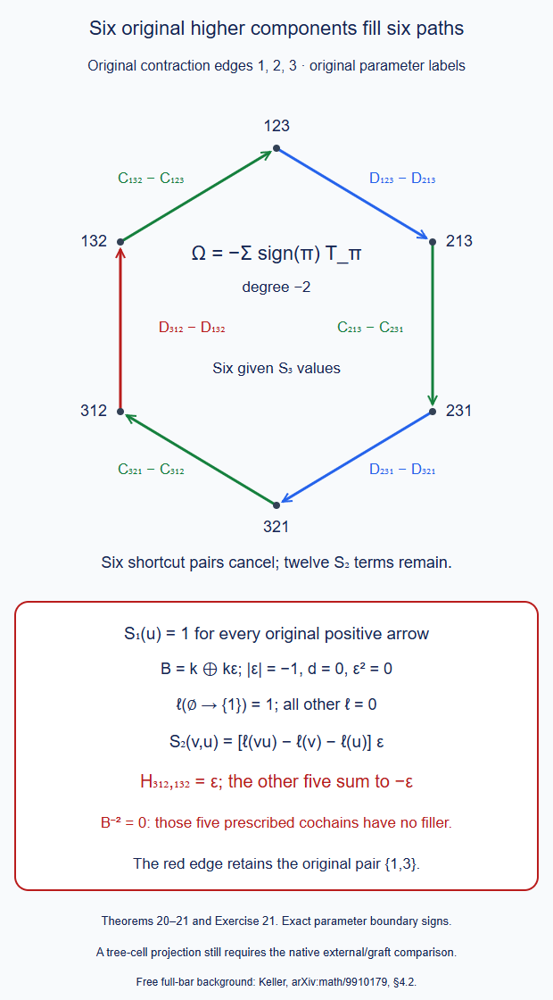
Theorems 20–21 and Exercise 21. The upper schematic retains all six original contraction orders and their head- or tail-swap homotopies. The red edge is the original \(\{1,3\}\) pair; its cochain need not vanish when leading maps coincide. The lower panel gives a full functor model of this fact. Editable SVG.

22. Retain the whole parameter comparison in an initial cone
The independent-contraction example shows why changing to a simpler parameter diagram must carry a full comparison. That comparison is already present in the original higher data.
Theorem 22 (canonical full initial cones and their base-change coherence). Use one original parameter functor \(\mathcal S:\mathcal B_E\to\mathcal D\) as in Theorem 20. For a base \(a\subseteq E\), let \(C_a\) be the strict constant functor at \(D_a\) on the upper interval \(U\supseteq a\). For a strict parameter chain \[ U_0\xrightarrow{u_1}U_1\longrightarrow\cdots \xrightarrow{u_q}U_q,\qquad a\subseteq U_0, \] define \[ \rho^a_q(u_q,\ldots,u_1) =(-1)^q s_{q+1}(u_q,\ldots,u_1,a_{U_0a}). \tag{22.1} \] At \(q=0\) this is \(s_1(a_{U_0a})\). These are the components of an actual closed degree-zero full natural transformation \[ \rho^a:C_a\Rightarrow\mathcal S|_{\ge a}. \] The source of every core is \(D_a\), the target is \(D_{U_q}\), and its degree is \(-q\). At \(U_0=a\) the object component is the identity and every positive input core is zero, by formal-identity normalization. Positive original parameters with identity-valued images are retained.
For \(a\subseteq b\), work on \(U\supseteq b\), and put \(f_{ba}=s_1(a_{ba})\). Regard this as a constant closed transformation \(C_a\Rightarrow C_b\). The given cochains \[ H^{a,b}_q(u_q,\ldots,u_1) =s_{q+2}(u_q,\ldots,u_1,a_{U_0b},a_{ba}) \tag{22.2} \] form a degree-minus-one full pre-natural cochain, satisfying \[ d_{\rm Nat}H^{a,b} =\rho^a-\rho^b\star f_{ba}. \tag{22.3} \] Thus changing the initial base uses an explicit original homotopy, including every parameter input core.
For \(a\subseteq b\subseteq c\), work on \(U\supseteq c\), and write \[ h_{cba}=s_2(a_{cb},a_{ba}),\qquad dh_{cba}=f_{ca}-f_{cb}f_{ba}. \] Treat \(h_{cba}\) as a constant degree-minus-one pre-natural cochain. The original components \[ T^{a,b,c}_q(u_q,\ldots,u_1) =(-1)^{q+1} s_{q+3}(u_q,\ldots,u_1, a_{U_0c},a_{cb},a_{ba}) \tag{22.4} \] satisfy the complete second comparison identity \[ \begin{aligned} d_{\rm Nat}T^{a,b,c} ={}&H^{a,c}-H^{a,b} -H^{b,c}\star f_{ba}\\ &+\rho^c\star h_{cba}. \end{aligned} \tag{22.5} \] In particular its last term has core \[ (\rho^c\star h_{cba})_q =(-1)^q\rho^c_q h_{cba}, \tag{22.6} \] not just the unsigned product of the two displayed core values.
If the supplied object maps \(\rho^a_0(U):D_a\to D_U\) are homotopy equivalences in \(\mathcal D\), the full \(\rho^a\) is a homotopy equivalence of parameter diagrams. This implication holds for arbitrary dg target Hom complexes; it does not assume that a whole natural- transformation space is acyclic. The forward comparison and the displayed homotopies are given by the original \(\mathcal S\); the finite-diagram inverse can be chosen using its supplied object inverse data.
The displayed forward cone and base-change formulas commute with strict restriction of the tagged index. The inverse in the criterion is chosen on its finite diagram. If an index map has initial image \(b\), its pulled-back initial cone is the restriction of \(\rho^b\). Formula (22.3) compares it with \(\rho^a\), including the actual map \(f_{ba}\); (22.5) compares two successive base changes. At a native graft, the initial image can include the original joining seams. Those seams and the resulting base-change components remain in these formulas.
The initial-cone and equivalence statements also hold for any finite directed degree-zero index category with an initial object, including one with parallel morphisms. For the base-change statements one uses chosen compatible cone arrows \(a_{Ub}\), satisfying \[ u\,a_{Ub}=a_{Vb},\qquad a_{Ub}a_{ba}=a_{Ua} \quad\text{for every relevant }u:U\to V. \] A pulled-back initial cone gives exactly such chosen arrows. Thus the result applies to the whole finite formal tree index of Lemma C.44.1.1 in its expansion direction, with the actual corolla as initial object. Finite products have the original corollas as their initial forest; fixed identity strands keep their separate one-object index factors. Nullary and unary corollas remain vertices.
Proof. Use the natural-transformation differential of Theorem 9. For a cochain \(\theta:C_a\Rightarrow\mathcal S\) of total degree \(r\), its component on \(q\ge1\) closed degree-zero parameter arrows is \[ \begin{aligned} (d_{\rm Nat}\theta)_q ={}&d\theta_q -(-1)^r\sum_{j=1}^{q-1}(-1)^j \theta_{q-1}(\text{merge }j)\\ &-\sum_{j=1}^{q}(-1)^{rj} s_j(u_q,\ldots,u_{q-j+1}) \theta_{q-j}(u_{q-j},\ldots,u_1)\\ &+(-1)^{r+q-1} \theta_{q-1}(u_q,\ldots,u_2). \end{aligned} \tag{22.7} \] The final component is evaluated on the chain starting at \(U_1\). The source constant functor has only its identity one-input component, giving precisely that last cut. At \(q=0\) the differential is \(d\theta_0\). The left convolution sign is \((-1)^{rj}\), since its prefix has suspended degree \(-j\). Thus (22.7) includes every source merger and both endpoint cuts.
Substitute (22.1) in (22.7) and apply (20.3) to its \(q+1\)-letter extended word. All internal mergers cancel the first sum in (22.7). All proper target-side product cuts cancel its second sum. The remaining source merger composes \(u_1a_{U_0a}\) to the same original arrow \(a_{U_1a}\); it cancels the constant-functor last cut. The coefficients match because \((-1)^q(-1)^j=(-1)^{q-j}\). At \(q=0\), \(s_1\) is closed. This proves \(d_{\rm Nat}\rho^a=0\). The stated types and degrees follow directly from the extended original word.
For (22.2), the same internal cancellations leave only the last base-arrow merger and last product cut. Their values are \[ (-1)^q s_{q+1}(\ldots,a_{U_0a}) -(-1)^q s_{q+1}(\ldots,a_{U_0b})f_{ba}. \] They are exactly the \(q\)-cores of (22.3). At \(q=0\) the identity is the two-input functor equation for \(a_{U_0b},a_{ba}\). No primitive has been selected independently of the original parameter components.
For (22.4), the internal mergers and product cuts again cancel by (22.7), now with \(r=-2\). The remaining two source mergers compose respectively \(a_{U_0c}a_{cb}=a_{U_0b}\) and \(a_{cb}a_{ba}=a_{ca}\). The last two product cuts separate \(f_{ba}\) or \(h_{cba}\). With the factor \((-1)^{q+1}\), the four surviving terms are \[ \begin{aligned} &H^{a,c}_q-H^{a,b}_q -H^{b,c}_q f_{ba}\\ &\qquad +s_{q+1}(u_q,\ldots,u_1,a_{U_0c})h_{cba}. \end{aligned} \] The last summand is (22.6): the constant \(h\) has degree minus one and crosses a \(q\)-letter suspended degree-zero prefix. Since \(\rho^c_q=(-1)^q s_{q+1}(\ldots,a_{U_0c})\), the two signs cancel. This proves (22.5) with its actual convolution sign.
We prove the equivalence criterion on the full finite parameter diagram. Filter every normalized Nat complex by minimum parameter word length. The differential preserves this filtration; its non-object terms strictly increase length. The interval has finite height, so the filtration is finite. On the associated graded, right composition with \(\rho^a\) is the direct product of precomposition maps with the supplied \(\rho^a_0(U)\) on individual target Hom complexes. Each is a chain homotopy equivalence. Indeed an object inverse gives its inverse chain map, and an object homotopy \(dh=gf-1\) gives the Hom homotopy \(\theta\mapsto(-1)^{|\theta|}\theta h\). Its differential is \(\theta\mapsto\theta(gf-1)\), by the dg Leibniz rule.
Consequently the associated graded mapping cone of right composition is acyclic. Its full cone is acyclic as well: for a closed element, solve its leading graded piece by a boundary, lift that primitive, subtract its boundary, and repeat in the next filtration step. Finite height terminates this construction. Thus right composition with \(\rho^a\) is a quasi-isomorphism on the relevant full Nat complexes.
Apply this first to \[ \operatorname{Nat}(\mathcal S,C_a) \longrightarrow\operatorname{Nat}(C_a,C_a). \] Surjectivity on degree-zero cohomology supplies a closed \(\sigma:\mathcal S\Rightarrow C_a\) and a homotopy \(\sigma\star\rho^a-1=d_{\rm Nat}J\). The other defect \(\rho^a\star\sigma-1\) is closed. After right composition by \(\rho^a\) it becomes \(d_{\rm Nat}(\rho^a\star J)\). Injectivity on cohomology of \[ \operatorname{Nat}(\mathcal S,\mathcal S) \longrightarrow\operatorname{Nat}(C_a,\mathcal S) \] therefore makes that defect a boundary also. These two actual homotopies prove the full diagram equivalence. Only the composition cones were acyclic; no acyclicity of either whole Nat space was used.
The proof also gives the stated extension beyond Boolean intervals. In a directed index with an initial object, the appended initial arrow satisfies \(u a_{U0}=a_{V0}\) by uniqueness of that initial arrow. Every other step used only actual source composition and the chosen cone identities, not uniqueness of arbitrary arrows between two objects. Keep distinct parallel arrows in every word. Finite height still gives the finite Nat filtration used for inversion. Products of the finite indices have the tuple of initial objects and summed height; a fixed identity-strand factor has height zero. These observations prove all asserted extensions.
Finally strict index restriction applies the original index map to each arrow in these extended words. If its initial image is \(b\), the initial arrow is exactly \(a_{U_0b}\); thus its cone is \(\rho^b\) with those restricted words. The two comparison identities already proved give its base-change coherence. For native operator diagrams, use the supplied whole inverse/mate data; if they are recorded as represented modules, Theorem C.50.1.1 recovers them from the full module actions. Literal grafting retains its joining seams by C.44.2.1, so a nonempty initial image is kept as this base \(b\). \(\square\)
This is a full comparison of parameter diagrams. For native input/output changes the actual C.47 graft comparison, full C69 evaluation and C78 common input remain part of the construction. In particular index restriction is not replaced by a strict dg tensor operation on bare primitive natural transformations. The represented tree-bar extraction must transport its operator actions with this whole comparison. In particular the base-change identity retains the actual map \(f_{ba}\); the cone does not force that native graft comparison to be a prescribed graded target map.
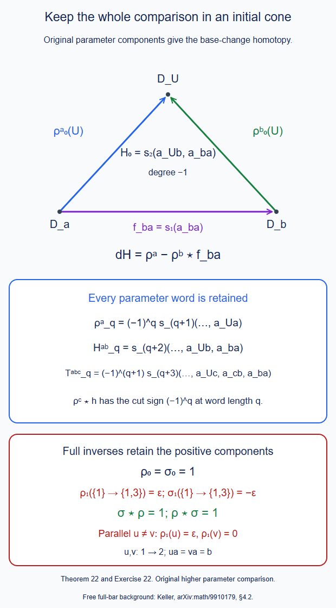
Theorem 22 and Exercise 22. The triangle displays the object component of the full base-change homotopy; the following formulas retain every parameter-word core. Composition with the negative-degree constant map uses its actual cut sign. The example's inverse retains the nonzero \(\epsilon\) component. Editable SVG.

23. The unreduced two-sided Yoneda evaluation
Let \(F:B\to C\) be the actual normalized uncurved \(A_\infty\)-functor between dg categories. Fix objects \(x\in B\) and \(y\in C\). Use the target-to-source word convention of Theorem 9. The two-sided complex is \[ X_F(x;y)= \bigoplus_{r\geq0,\ b_0,\ldots,b_r} C(Fb_0,y)\otimes sB(b_1,b_0)\otimes\cdots \otimes sB(b_r,b_{r-1})\otimes B(x,b_r). \tag{23.1} \] No identity letter is quotiented out. Write its homogeneous elements as \((k;w;l)\), where \[ w=sb_1|\cdots|sb_r,\qquad p=|k|,\qquad t=|w|=\sum_i(|b_i|-1). \] The empty word is allowed. Ordinary units in \(B\) and ordinary unit outputs in \(C\) are retained.
Theorem 23 (full two-sided evaluation and its unit contraction). On (23.1) the differential is \[ \begin{aligned} D(k;w;l) ={}&(dk;w;l)+(-1)^p(k;b_Bw;l) +(-1)^{p+t}(k;w;dl)\\ &+\sum_{\substack{w=uv\\u\ne\varnothing}} (-1)^p(k\tau_F(u);v;l)\\ &-\begin{cases} (-1)^{p+|u|}(k;u;b_rl),& w=u|sb_r,\ r>0,\\ 0,&r=0. \end{cases} \end{aligned} \tag{23.2} \] Here \(b_B\) includes every original unary differential and every adjacent composition. There is a chain retraction onto \(C(Fx,y)\): \[ \begin{aligned} q(k;w;l)&=(-1)^t k\,\tau_F(w|sl),\\ s(a)&=(a;\varnothing;1_x),\qquad qs=1. \end{aligned} \tag{23.3} \] In particular \(q\) uses the actual higher components of \(F\). It has a degree-minus-one homotopy \(h\) satisfying \[ Dh+hD=1-sq,\qquad h^2=0,\qquad hs=qh=0. \tag{23.4} \] These are assertions about the endpoint complexes. Strict left \(C\)-linearity of this particular normalized \(h\) is not asserted; Theorem 24 supplies its full output-bar extension.
Proof. Put \(\tau=\tau_F\). Theorem 9 proved \[ d_C\tau+\tau b_B=\tau\star\tau,\qquad (\tau\star\tau)(uv)=(-1)^{|u|}\tau(u)\tau(v). \tag{23.5} \] In the square of (23.2), the coefficient differentials cancel by the dg Leibniz rule. Terms entirely inside \(w\) give \(b_B^2=0\). At its left endpoint the remaining terms are \(k\) times (23.5), with the negative convolution term from two successive prefix actions. At its right endpoint, the last adjacent composition and the two successive right actions agree by associativity in \(B\); their signs are opposite. A prefix action and a right action must use disjoint letters: the right action consumes the last letter, and the prefix must leave that letter available. The two possible orders therefore cancel as degree-one operators. This exhausts all positions of the two operations, so \(D^2=0\).
For the chain equation in (23.3), apply (23.5) to the entire word \(w|sl\). Its internal unary and binary terms are exactly the middle-bar terms of \(qD\). The unary term on \(sl\) is the displayed \(dl\) term, and the final binary term is the right endpoint action in (23.2). Its proper prefix cuts are the prefix actions in that formula. The tensor Leibniz term on \(k\) supplies \(dk\). Moving from \(w|sl\) back to the unsuspended last coefficient contributes precisely \((-1)^t\). Thus \(d_Cq=qD\). Since \(F\) is strictly unital, \(\tau_F(s1_x)=1_{Fx}\); consequently \(qs=1\). Both \(s\) and \(q\) commute with the coefficient differentials.
The extra-unit insertion before normalization is \[ h_{\mathrm{raw}}(k;w;l) =-(-1)^{p+t}(k;w|sl;1_x). \tag{23.6} \] It has degree minus one. In \(Dh_{\mathrm{raw}}+h_{\mathrm{raw}}D\), the coefficient differentials, internal word terms, and prefix actions not containing \(sl\) cancel in pairs. For example the \(dl\) terms have coefficients \(+1\) and \(-1\): in the first, the raw insertion sign, the tensor sign \((-1)^p\), and the last unary-bar sign \(-(-1)^t\) multiply to \(+1\). The new final right action on \(l1_x\) leaves \((k;w;l)\) with coefficient \(+1\). The action consuming all of \(w|sl\) leaves \(-(-1)^t(k\tau_F(w|sl);\varnothing;1_x)\). These are \(1\) and \(-sq\). Hence \[ Dh_{\mathrm{raw}}+h_{\mathrm{raw}}D=1-sq, \qquad qh_{\mathrm{raw}}=0. \tag{23.7} \] The last equality follows because evaluation after insertion has the final identity as an argument of a higher functor component of length at least two. It uses strict-unit normalization of \(F\), not a quotient of (23.1).
Raw insertion can have nonzero square. To obtain (23.4) without discarding these words, set \[ \Pi=1-sq,\qquad h'=\Pi h_{\mathrm{raw}}\Pi=h_{\mathrm{raw}}\Pi, \qquad h=h'Dh'. \tag{23.8} \] Then \(\Pi\) is a chain projector, \(Dh'+h'D=\Pi\), and \(h's=qh'=0\). On its image put \(e=Dh'\) and \(f=h'D\). They satisfy \(e+f=1\) and \(fe=0\); therefore \(e^2=e,\ f^2=f,\ ef=0\). It follows that \[ Dh+hD=e^2+f^2=\Pi,\qquad h^2=h'(Dh'^2D)h'=h'(ef)h'=0. \tag{23.9} \] The same expressions vanish on the image of \(s\). The remaining two side conditions follow from those of \(h'\). Every displayed map is finite on a given middle word: insertion adds one letter and every differential or functor action has only finitely many available positions or cuts. This proves all claims without an augmentation or a unit quotient. \(\square\)
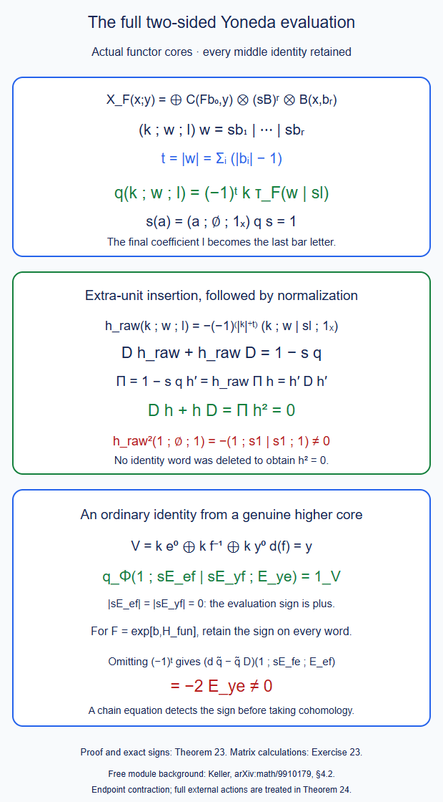
Theorem 23 and Exercise 23. The last coefficient is suspended only when it enters the actual functor core. The sign uses the entire preceding middle bar. The lower calculation retains a genuine third functor component with ordinary identity output. Editable SVG.

24. The full common-input graft projection
The object calculation must carry the original input actions as well. Let \(C_{\mathrm{in}}\) be a typed, coaugmented conilpotent dg coalgebra, filtered by total original input-word length. Its length-preserving differential is the original unary differential; all other differential terms lower this length. Let \[ g:C_{\mathrm{in}}\longrightarrow B_{\mathrm{full}}B \tag{24.1} \] be the genuine coaugmentation-preserving dg coalgebra map of the inner operation. Its core is \(\tau_G\), and its object value is written \(Ga\). The construction includes \(C_{\mathrm{in}}=B_{\mathrm{full}}A\) and \(g=BG\). Tensor products of the individual input bars, with their genuine joint-input map, are also allowed. No tensor product of arbitrary primitive \(A_\infty\)-functors is assumed.
Theorem 24 (actual projection, full unit section, and contracted kernel). Put \[ \begin{gathered} X=X_F(Ga;y)\otimes C_{\mathrm{in}},\\ Y=C(FGa,y)\otimes C_{\mathrm{in}}. \end{gathered} \tag{24.2} \] All sums have their original endpoints. On \(X\) use the differential of Theorem 23, the tensor differential of \(C_{\mathrm{in}}\), and the right input action \[ \sum_{\substack{\Delta c=\sum u\otimes v\\ u\text{ of positive length}}} (-1)^{|k|+|w|+|l|} (k;w;l\tau_G(u))\otimes v. \tag{24.3} \] On \(Y\) use Theorem 9 with core \(\tau_{FG}=\tau_F g\). There is a degreewise surjective chain map of full right comodules \(Q:X\to Y\). Its complete formula and a canonical full chain section are \[ \begin{aligned} Q((k;w;l)\otimes c) &=\sum_{\Delta c=\sum u\otimes v} \sum_{g(u)=\sum a_z z} (-1)^{|w|}a_z k\tau_F(w|sl|z)\otimes v,\\ S(a\otimes c) &=\sum_{\Delta c=\sum u\otimes v} \sum_{g(u)=\sum a_z z} a_z(a;z;1_{G(\operatorname{source}u)})\otimes v. \end{aligned} \tag{24.4} \] The notation for \(g(u)\) includes its empty-word value when \(u\) is empty. All its nonempty-output partitions occur. The maps satisfy \[ QS=1,\qquad D_XS=SD_Y,\qquad D_YQ=QD_X. \tag{24.5} \] They are strictly compatible with dg output postcomposition.
In the full left-output and right-input bar encoding, \(\ker Q\) has a square-zero contraction. It gives a full bicomodule homotopy \(H\) with \[ D_XH+HD_X=1-SQ,\qquad H^2=0,\qquad HS=QH=0. \tag{24.6} \] For original external bar length \(L\), its perturbation sum has at most \(L+1\) terms. The unbounded middle bar does not enter this bound.
Proof. The square of \(D_X\) is zero by Theorem 23, the original square on \(C_{\mathrm{in}}\), and the twisting-core equation for \(\tau_G\). The last equation is the one-output part of the dg coalgebra equation for \(g\). At the interface with the last coefficient it gives exactly the two successive actions in (24.3); the remaining terms cancel by its dg Leibniz rule. Theorem 9 proves the corresponding assertion for \(Y\).
Coassociativity and the coalgebra equation for \(g\) give the right-comodule equations for both maps in (24.4): cutting the retained \(v\) is the same as first making that cut of the original \(c\). All maps applied before this cut have degree zero, so no additional permutation sign occurs.
For \(Q\), apply (23.5) to each full word \(w|sl|z\). The terms inside \(w|sl\) are those already checked in Theorem 23. The terms inside \(z\) are the image under \(g\) of the original input differential, because \(b_Bg=gd_{\mathrm{in}}\). The binary term at the \(sl|z\) interface is the action (24.3). The cuts wholly after that interface give the target \(\tau_Fg\) action. These are all positions and all cuts. Their tensor signs are (23.2), (24.3), and the common \((-1)^{|w|}\) in (24.4). This proves the whole chain equation, rather than just its empty-input component.
For \(S\), the internal middle-bar differential of \(g(u)\) agrees with \(g(d_{\mathrm{in}}u)\). Its left prefix actions give the \(\tau_Fg\) actions of \(Y\). Its final right action on the newly inserted identity cancels the right input action in (24.3) coming from the next coproduct cut. Their coefficients are opposite: the final action has the minus sign of (23.2), whereas the next input action has its plus tensor sign. This accounts for every term and proves \(D_XS=SD_Y\). After \(S\), every term of \(Q\) consuming a nonempty total original prefix evaluates a higher \(F\)-core with that inserted identity as an argument, and is zero. The only surviving cut consumes no prefix; its value is \(aF_1(1)=a\). Hence \(QS=1\). Output postcomposition acts on \(k\), or on \(a\), on the far left of these degree-zero formulas. Associativity proves its compatibility.
It remains to contract the actual projection kernel while retaining both exterior coactions. First omit the left output bar. Let \(Q_0=q\otimes1\) and \(S_0=s\otimes1\), using (23.3). They are graded comodule maps. They need not be chain maps for the full source action. Nevertheless the same inserted-unit argument gives \[ Q S_0=Q_0S_0=1. \tag{24.7} \] Define \[ N=S_0(Q-Q_0),\qquad A=1+N. \tag{24.8} \] Then \((Q-Q_0)S_0=0\), so \[ N^2=0,\quad A^{-1}=1-N,\quad Q_0A=Q,\quad AS_0=S_0. \tag{24.9} \] The map \(N\) strictly lowers positive original input length. Conjugation by \(A\) identifies \(\ker Q\) with \(\ker Q_0\), whose underlying graded comodule is \((\ker q)\otimes C_{\mathrm{in}}\).
Include the full output bar \(B_{\mathrm{full}}C\) now. Extend the maps \(Q,S,Q_0,S_0,A\) by the identity on this left factor. They remain full bicomodule maps. Its differential on a word \(v\), with \(z=(k;w;l)\otimes c\), is explicitly \[ \begin{aligned} D_{\mathrm{out}}(v\otimes z) ={}&b_Cv\otimes z+(-1)^{|v|}v\otimes D_Xz\\ &-\begin{cases} (-1)^{|u|}u\otimes(ak;w;l)\otimes c, &v=u|sa,\\ 0,&v=\varnothing . \end{cases} \end{aligned} \tag{24.10} \] This is the same final-endpoint sign as (23.2). Its square is zero by the strict output action and dg Leibniz rule. Output linearity of \(Q\) and \(S\) proves their chain equations here too.
On \(\ker Q_0\), let \(D_0\) contain (23.2) and only the unary differentials of the two external bars. Its contraction is \[ H_0(v\otimes z)=(-1)^{|v|}v\otimes(h\otimes1)z. \tag{24.11} \] The tensor differential signs cancel the external unary terms, so \(D_0H_0+H_0D_0=1\) and \(H_0^2=0\). For the conjugated differential put \[ D'=AD_{\mathrm{out}}A^{-1}=D_0+\delta. \tag{24.12} \] Both \(D'\) and \(D_0\) preserve this kernel. Every term of \(\delta\) lowers total original external length: it composes external letters, consumes a nonempty external prefix in an action, or contains \(N\). The middle differential is already wholly included in \(D_0\). Thus on this kernel the finite expression \[ \overline H =H_0(1+\delta H_0)^{-1} =\sum_{r\geq0}(-1)^rH_0(\delta H_0)^r \tag{24.13} \] has at most \(L+1\) terms.
For completeness, set \(U=1+\delta H_0\) and \(V=1+H_0\delta\). Then \(\overline H=H_0U^{-1}=V^{-1}H_0\), giving \(\overline H^2=0\). Multiplying the desired contraction equation on the left by \(V\) and on the right by \(U\) reduces its defect to \[ H_0(D_0\delta+\delta D_0+\delta^2)H_0=0. \tag{24.14} \] The last equality is \((D')^2=D_0^2=0\). This proves \(D'\overline H+\overline HD'=1\).
The expression is a bicomodule map. Indeed \(H_0\) is such a map with its displayed degree-minus-one tensor sign. In \(H_0(\delta H_0)^r\), a coaction term in which \(\delta\) acts only on a retained external coalgebra factor has two adjacent coefficient contractions \(H_0^2\), and is zero. All other terms are precisely the same expression on the middle coaction factor. This proves the coaction equation term by term; it does not assume that \(h\) is strictly output linear.
Finally transport this kernel contraction by \(A\) and precompose with the chain projector \(1-SQ\): \[ H=A^{-1}\overline H A(1-SQ). \tag{24.15} \] Its image lies in \(\ker Q\). The contraction equation and all three side conditions in (24.6) now follow from (24.5), (24.14), and \(\overline H^2=0\). Insertion uses the original object \(Ga\); no new unchosen source object is introduced. All sums are finite on each original external word. This completes the proof. \(\square\)
For the native graft, take \(B\) to be the actual joint dg category of the intermediate objects and \(F=F_n^G\). The simultaneous inner graph module at fixed input objects is represented by the tuple \((G_1a_1,\ldots,G_na_n)\). Use the genuine common coalgebra and map \[ C_{\mathrm{in}}=\bigotimes_i B_{\mathrm{full}}A_i, \qquad g=\operatorname{sh}_B\circ\bigotimes_i BG_i. \tag{24.16} \] Here \(\operatorname{sh}_B\) is the dg joint-input bar shuffle proved in C.44.2.1, and its genuine common-input realization is C78. It is a tensor of coalgebra maps followed by that dg shuffle. Consequently (24.4) is the actual full common-input projection from the graph-bar graft to the graph of \(F_n^G(G_1,\ldots,G_n)\). It retains every coproduct cut in every input factor. The native graft comparison \(\alpha:F_{\mathrm{flat}}^G\to F_n^G(G_1,\ldots,G_n)\) then gives the whole map \[ \mathcal T_\alpha Q: X\longrightarrow\mathcal K_{F_{\mathrm{flat}}^G} \tag{24.17} \] by Theorem 9. When \(\alpha\) has its supplied full inverse and homotopies this is a module equivalence: apply Theorem 9 to those data and compose with (24.6). Degreewise surjectivity is asserted for \(Q\), not for an arbitrary \(\mathcal T_\alpha Q\). At zero inputs the coefficient category is still separate from the full output complex \(\operatorname{RHom}(IC_0,y)\); (24.4) does not identify that output with the coefficient field.
These formulas supply a full single graft with its original input and output actions. Theorems 25–26 below carry its inner and outer parameters in the full bar encoding. Joint strict-unit normalization, compatibility between all grafts, and the full native tree coderivation are additional assertions. An arbitrary lift through a contracted kernel cannot replace the original parameter diagram.
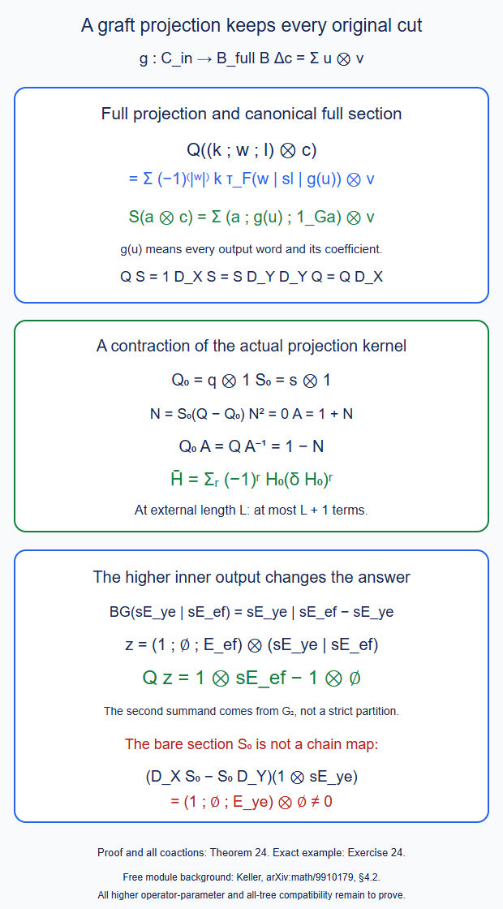
Theorem 24 and Exercise 24. Both maps keep the unconsumed original input coalgebra. The source prefix enters either the outer functor core or the actual middle bar. The final calculation shows why its higher inner-functor output must be retained. Editable SVG.

25. Every original inner parameter in the genuine evaluation
Fix dg categories \(A,B,C\). Set \[ \begin{gathered} \mathscr D=\operatorname{Fun}_\infty(A,B),\qquad P=B_{\mathrm{full}}\mathscr D,\\ \Gamma=P\otimes B_{\mathrm{full}}A,\qquad e=\operatorname{ev}_{A,B}: \Gamma\longrightarrow B_{\mathrm{full}}B . \end{gathered} \tag{25.1} \] The full marked evaluation \(e\), with its original cuts and signs, was proved in C.69.1.1. The tensor coproduct includes \[ (-1)^{|p_R||c_L|} (p_L\otimes c_L)\otimes(p_R\otimes c_R) \tag{25.2} \] for the indicated parameter and original source cuts. This sign is retained before any higher functor is evaluated.
Theorem 25 (the actual full inner-parameter projection). For the fixed outer functor \(F:B\to C\), apply (24.2)–(24.15) with \(C_{\mathrm{in}}=\Gamma\) and \(g=e\). The resulting maps \(Q_e,S_e,H_e\) are full output/parameter/source bicomodule maps, with the tensor coactions understood via (25.2). They satisfy the full chain, section, contraction and side identities of Theorem 24. Their parameter object \(G\) gives precisely the original graph graft for \(F\) and \(G\).
For every original suspended parameter word \(p\) and original source word \(c\), the projection's consumed-prefix core is \[ Q_{e,\mathrm{core}}(k;w;l;p,c) =(-1)^{|w|} \sum_{e(p\otimes c)=\sum a_z z} a_z\,k\tau_F(w|sl|z). \tag{25.3} \] The section's core is \[ S_{e,\mathrm{core}}(a;p,c) =\sum_{e(p\otimes c)=\sum a_z z} a_z(a;z;1_{G_{\mathrm{source}}(x_{\mathrm{source}})}). \tag{25.4} \] Their full maps retain every unconsumed parameter and source suffix. In particular these are all higher inner-parameter components, rather than only an objectwise or one-mark comparison.
A positive parameter core of \(Q_e\) vanishes at a formal identity transformation argument. The canonical section \(S_e\) is an unreduced section: its higher parameter cores need not have that normalization. No normalization of the entire section or homotopy is inferred.
Proof. Theorem C.69.1.1 proves that \(e\) is a coaugmentation-preserving dg coalgebra map. On \(r\) original parameter letters and \(L\) original source letters, its output words have length at most \(r+L\). The original tensor differential preserves total length in its unary terms and lowers it in every binary term. Thus all the hypotheses of Theorem 24 hold with the actual map \(e\); no rectification or choice of another diagram is used. Its core formulas are exactly (25.3)–(25.4).
The \(\Gamma\)-coaction preserves the two separate coactions. To see this directly, apply the counit of the source coalgebra, or the counit of \(P\), to its tensor coaction equation. One obtains the parameter or source coaction equation, respectively, with the tensor sign (25.2). The same reasoning applies to \(H_e\), and its output coaction is already Theorem 24's full output-bar coaction. At empty parameter input the equality \(e(1_G\otimes c)=BG(c)\) is part of C.69.1.1. This identifies the restriction with the original object-\(G\) maps, including all its original source actions.
For nonempty parameter input the marked evaluation uses every original transformation exactly once, including its possible source-length-zero value. Substitution into (25.3) or (25.4) therefore retains all its parameter components. Their differential equations include parameter unary differentials, vertical parameter compositions, original source differentials, and every cut: these are precisely the terms of the chain equation already proved for \(e\) and then for \(Q_e,S_e\). In particular closedness is not assumed for the individual parameter cochains.
If a parameter argument is a formal identity transformation, its marked piece must be empty by normalization, and its output is the actual identity of \(B\). Every nonzero marked assignment thus places that identity in \(z\). The core \(\tau_F(w|sl|z)\) has at least two arguments and contains that identity, so is zero by strict-unit normalization of \(F\). This proves the assertion about \(Q_e\). By contrast at a one-letter identity parameter and empty original source input, (25.4) is \[ S_{e,\mathrm{core}}(a;s1_G,\varnothing) =(a;s1_{Ga};1_{Ga}). \tag{25.5} \] This is an actual nonzero unreduced middle word. It is not removed or declared normalized.
Finally the contraction series is finite at total original external length \(r+L+L_{\mathrm{out}}\), by (24.13). The full parameter and original source object labels remain those of \(e\); insertion uses its original object \(Ga\). This proves all assertions. \(\square\)
For several branches, replace (25.1) by the tensor of their actual marked evaluation coalgebras, followed by the joint dg bar shuffle into the actual intermediate tuple category. Its coalgebra and chain equations are the tensor equations and C.44.2.1. This proves the same assertion for all inner branch parameters of a fixed graft profile, including empty branch lists. It makes no assertion that arbitrary primitive \(A_\infty\)-functors have a dg tensor product.
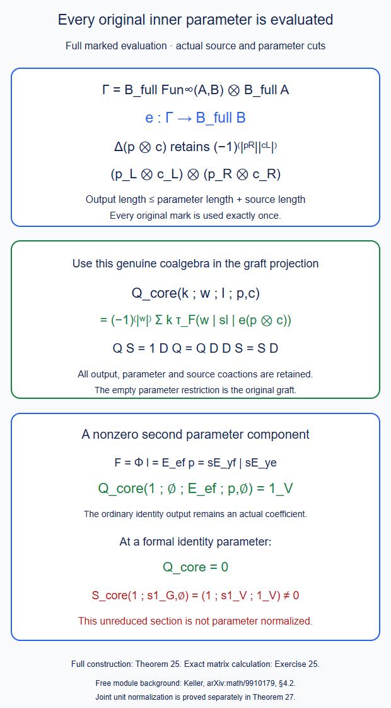
Theorem 25 and Exercise 25. The parameter and original source words are separate coalgebra factors with the sign (25.2). The second parameter component in the example has ordinary identity output. The last line records the actual normalization limit of the section. Editable SVG.

26. The outer comparison preserves the actual target diagram
Keep a genuine fixed dg coalgebra map \(g:\Gamma\to B_{\mathrm{full}}B\), including \(g=e\) from Theorem 25. For each \(F:B\to C\), retain the full objects \(X_F,Y_F,Q_F,S_F,H_F\) of Theorem 24, with their original output and \(\Gamma\)-coactions. Use the graded opposite category \[ J=\operatorname{Fun}_\infty(B,C)^{\mathrm{op}} \tag{26.1} \] with precisely Theorem 9's opposite composition sign.
Theorem 26 (strict section naturality and full outer comparison). For a homogeneous full cochain \(\theta:F\to F'\), of degree \(r\), the original outer actions are \[ \begin{aligned} X_\theta((k;w;l)\otimes c) &=\sum_{w=uv}(-1)^{r|k|} (k\theta(u);v;l)\otimes c,\\ Y_\theta(k\otimes c) &=\sum_{\Delta c=\sum u\otimes v} (-1)^{r|k|}k\,\theta(g(u))\otimes v. \end{aligned} \tag{26.2} \] They define actual dg \(J\)-diagrams \(\mathcal X,\mathcal Y\). Their section is strictly dg natural: \[ X_\theta S_{F'}=S_FY_\theta \tag{26.3} \] for every homogeneous cochain, including nonclosed ones and all its positive original source components.
On \(B_{\mathrm{full}}J\otimes\mathcal X\) there is a full chain-comodule comparison \(\widehat Q\) to the original \(B_{\mathrm{full}}J\otimes\mathcal Y\). Its empty outer-parameter component is the given \(Q_F\). The section stays the given strictly natural \(S_F\); the target diagram stays \(\mathcal Y\). The entire projection and homotopy are \[ \begin{aligned} \widehat Q&= Q_0(1+\delta H_0)^{-1} =\sum_{j\geq0}(-1)^jQ_0(\delta H_0)^j,\\ \widehat H&= H_0(1+\delta H_0)^{-1}. \end{aligned} \tag{26.4} \] Here \(Q_0,S_0,H_0\) are the cofree extensions of the given object contractions and \(\delta\) is the original nonunary outer-parameter bar differential and action. At \(r\) original outer letters, each outer series has at most \(r+1\) summands. It satisfies \[ \begin{gathered} \widehat Q S_0=1,\qquad D_{\mathcal X}\widehat H+ \widehat H D_{\mathcal X}=1-S_0\widehat Q,\\ \widehat H^2=0,\qquad \widehat H S_0=\widehat Q\widehat H=0. \end{gathered} \tag{26.5} \] All original output and \(\Gamma\)-coactions are retained. Positive outer-parameter cores of \(\widehat Q\) are normalized at formal outer identities. Joint normalization in an independent inner-parameter direction is not implied by this assertion.
Proof. The first map of (26.2) is Theorem 9's full graph map on the middle word, retaining its right representable coefficient \(l\). Its right-endpoint action commutes with the map by its coaction equation. The second is the graph map for the full precomposition \(\theta g\). Precomposition by the genuine coalgebra map preserves the full Nat differential and vertical products by its coproduct equation. For a genuine common input this is the twisting-cochain realization of C78, with the same full \(\Gamma\)-cuts. Theorem 9 therefore gives the dg equations and the graded opposite product for both maps. These are dg diagrams on (26.1), not a strict dg horizontal bifunctor on the two original functor categories.
For (26.3), expand \(S_{F'}\) using (24.4), then cut its middle word before applying \(\theta\). The coalgebra equation for \(g\) identifies such a cut with two successive original \(\Gamma\)-cuts. On the other side first consume the earlier prefix by \(\theta g\), then insert the later prefix by \(S_F\). These are the same terms with the same endpoints. The common sign is \((-1)^{r|k|}\); all intervening coalgebra and section maps have degree zero. This proves the entire identity. In the output bar its extension has the usual factor \[ (-1)^{r|v_{\mathrm{out}}|}. \] Thus that coaction is retained too.
To specify all signs in (26.4), use a left parameter word \(v\). The full differential is \[ \begin{aligned} D_{\mathcal X}(v\otimes x) ={}&b_Jv\otimes x+ (-1)^{|v|}v\otimes D_Xx\\ &-\begin{cases} (-1)^{|u|}u\otimes\mathcal X(a)x, &v=u|sa,\\ 0,&v=\varnothing . \end{cases} \end{aligned} \tag{26.6} \] Use the same formula for \(\mathcal Y\). Put all unary terms in \(D_0\). In this notation \[ \begin{gathered} Q_0(v\otimes x)=v\otimes Q_Fx,\qquad S_0(v\otimes y)=v\otimes S_Fy,\\ H_0(v\otimes x)=(-1)^{|v|}v\otimes H_Fx. \end{gathered} \tag{26.7} \] They form a contraction for \(D_0\). Every remaining term \(\delta\) merges parameter letters or consumes a nonempty last parameter piece. It lowers outer parameter length. The original object \(H_F\) is already a full output/\(\Gamma\) map, finite on each original external word by Theorem 24. Thus (26.4) is finite wordwise.
Apply the perturbation identity proved in C.35.1.1 to this specific contraction. The perturbed section would be \((1+H_0\delta)^{-1}S_0\). But (26.3) gives \[ \delta S_0=S_0\delta_Y,\qquad H_0\delta S_0=0, \tag{26.8} \] so this section is exactly \(S_0\). The transferred target perturbation is consequently \[ Q_0\delta S_0=Q_0S_0\delta_Y=\delta_Y. \tag{26.9} \] It is the actual target action, not a substituted diagram. The same contraction calculation therefore gives the chain equation for \(\widehat Q\) and (26.5). For example, multiplying the homotopy defect by \(1+H_0\delta\) on the left and \(1+\delta H_0\) on the right reduces it to the original defect \(D_0H_0+H_0D_0-(1-S_0Q_0)=0\) and the square-zero differential equation. Adjacent \(H_0^2\), \(H_0S_0\), and \(Q_0H_0\) give the side conditions, exactly as in C.35.1.1.
All coefficient maps are full output/\(\Gamma\)-comodule maps. Their sums and compositions retain those coactions. For the outer parameter coaction, a term in which a binary bar differential acts only on a retained parameter factor vanishes between adjacent \(H_0^2\), or next to \(Q_0H_0\). The remaining cuts give precisely the cofree extension of the core. This proves the full coaction equation for (26.4).
It also proves normalization in the outer direction. A nonzero positive outer core is a string of the original operator actions separated by coefficient homotopies. A formal identity action leaves either \(H_F^2\) between its neighbors or \(Q_FH_F\) at the final projection. Both are zero. Ordinary identity outputs of nonidentity operators are still retained in the original labelled parameter bar.
When \(g=e\), (26.2) uses the actual full \(\theta e\). The exact evaluation identity C.69.7 identifies these values with the entire original horizontal parameter diagram, including every mixed outer/ inner component. Thus the construction carries that target diagram unchanged. It does not assert that the unreduced \(S_e,H_e\) have become normalized in the inner direction. Formula (25.5) shows why that would require a separate argument. \(\square\)
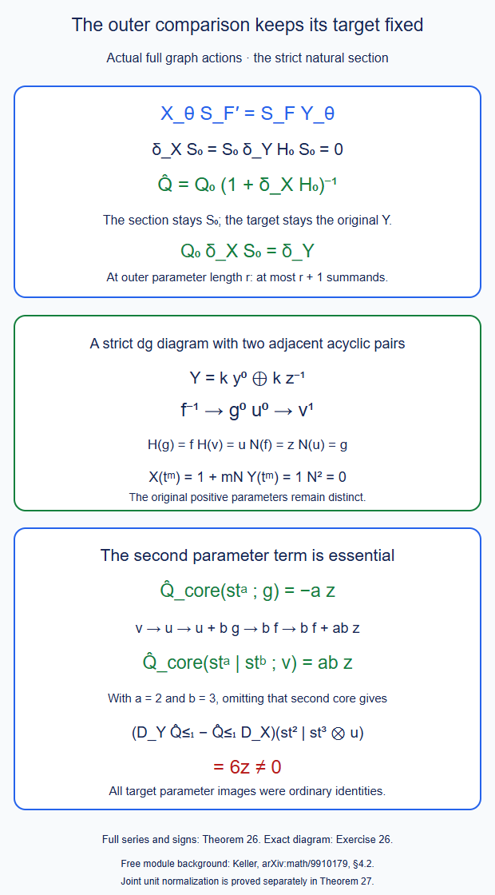
Theorem 26 and Exercise 26. The projection series uses the actual source actions and the fixed object contraction. Its target is fixed by (26.8)–(26.9). The two adjacent acyclic pairs in the example force a second parameter correction. Editable SVG.

27. Normalize only the auxiliary middle degeneracies
Let \(D_{\mathrm{mid}}\subset X_F(x;y)\) be spanned by tensors whose middle word contains a literal suspended identity \(s1_b\). This is a linear subspace: a displayed ordinary identity is its entire element of \(B(b,b)\), not an individual diagonal summand in a chosen matrix presentation. Put \[ \overline X_F(x;y)=X_F(x;y)/D_{\mathrm{mid}}. \tag{27.1} \] The root coefficient, the last coefficient, the original external input coalgebras, and the full output coefficient complexes are unchanged.
Theorem 27 (jointly normalized single-graft operator comparison). The differential (23.2) descends to (27.1). The maps \(q,s\) descend, and on this quotient the original raw insertion already gives a special contraction: \[ \begin{gathered} \overline h(k;w;l) =-(-1)^{|k|+|w|}(k;w|sl;1_x),\\ D\overline h+\overline hD=1-sq,\qquad \overline h^2=\overline hs=q\overline h=0 . \end{gathered} \tag{27.2} \] It is strictly graded output linear: \[ \overline h(a z)=(-1)^{|a|}a\overline h(z). \tag{27.3} \] No separate higher output components are needed for this contraction.
For the genuine marked input of Theorem 25, and for the tensor of such inputs at several branches, Theorem 24 descends to full maps \(\overline Q,\overline S, \overline H\) on the normalized middle object. They retain all its chain, coaction, section and special contraction identities. Their positive cores are normalized in every original source factor and inner-parameter factor. Their output actions are strictly graded linear.
The outer construction of Theorem 26 therefore applies with these object contractions. Its resulting comparison is jointly normalized in the outer, inner and original source directions. It retains the actual full C69 target diagram. These assertions concern the fixed-graft module comparison; they do not identify all multiple-graft tree faces or prove the full multicategory coderivation equation.
Proof. First prove stability of \(D_{\mathrm{mid}}\) under (23.2). The coefficient differentials and the unary middle differential preserve it, since \(d1_b=0\). If a term leaves some identity letter, it is already in this subspace. It remains to check terms removing the only identity. At an internal identity the two adjacent binary products have the same value and opposite signs: \[ \begin{gathered} (-1)^{\sigma+|b|-1}(b1),\\ (-1)^{\sigma+|b|-2}(1c). \end{gathered} \tag{27.4} \] Here \(\sigma\) is the suspended degree before the left neighbor; after either product the resulting word is the word with that identity omitted. The signs differ by minus. At a first identity, its left \(F_1(1)\) action cancels the adjacent middle product. At a last identity, the adjacent product cancels its right action on \(l\). If it is the only middle letter, the left and right actions cancel directly. Higher prefix actions containing that identity are zero by normalization of \(F\). This proves \(DD_{\mathrm{mid}} \subset D_{\mathrm{mid}}\). It proves descent of the total two-sided differential; no standalone reduced dg bar of an unaugmented \(B\) is asserted.
The map \(q\) kills this subspace, since its functor core has that identity argument and at least two arguments in total. Raw insertion preserves it. Thus (23.7) descends to (27.2). After two insertions the second inserted middle letter is the last coefficient \(1_x\); hence \(\overline h^2=0\). Likewise \(\overline hs=0\). The condition \(q\overline h=0\) was already true before quotient. Its sign changes by \((-1)^{|a|}\) under left postcomposition by \(a\), proving (27.3). Root and last ordinary identity coefficients were not among the middle degeneracies.
Both the original and quotient endpoint complexes now retract onto the same \(C(Fx,y)\), with the same \(q\) and \(s\). The quotient projection commutes with these maps, so induces an isomorphism on cohomology. This also verifies that the normalization preserves the actual represented endpoint complexes, independently of any acyclicity of an encoded full bar.
For the full input construction, right input actions change only \(l\) and preserve middle degeneracies. Output actions change only \(k\). Both exterior coactions preserve the middle subspace. The whole \(Q\) kills it by the same normalized functor-core argument. Every map used in (24.8)–(24.15) therefore descends. In the quotient, the normalized object homotopy \(h'Dh'\) of (23.8) equals \(\overline h\): there \(h'=\overline h\) and \[ \overline hD\overline h =\overline h(1-sq-\overline hD) =\overline h . \tag{27.5} \] Consequently the descended construction is exactly Theorem 24's construction with the special object contraction (27.2).
We verify its input normalization, rather than infer it from the quotient notation. By C.69.1.1, an original formal unit in a source or parameter factor of the genuine marked evaluation either gives zero or leaves a literal identity in its output word. Thus the positive cores of \(\overline Q\) and \(\overline S\) at that argument are zero: the first is killed by the outer functor core, the second by (27.1). The full original input word is still retained by the unconsumed-word term.
The conjugating map \(A=1+S_0(Q-Q_0)\) and its inverse are normalized too, because their positive cores factor through the normalized positive core of \(Q\). Conjugation therefore preserves the strict unit action and the vanishing of higher actions containing a formal unit. This follows also directly from the cofree cut expansion: placing the unit inside a positive \(A\)-core gives zero; leaving its lone unit action gives the identity coefficient action.
In (24.13), a positive core containing a formal unit has two possibilities. If an action consumes that unit together with other letters, its higher normalized action is zero. If it consumes that unit alone, the identity coefficient action lies between two \(\overline h\)'s, so the term is zero by \(\overline h^2=0\). Terms that merely merge retained external letters similarly have adjacent coefficient homotopies and are zero. This is the same coaction-core calculation as in Theorem 26, applied in each original factor with its tensor Koszul sign. It proves normalization of the kernel contraction. The surrounding normalized maps \(A,A^{-1},1-SQ\) preserve it, proving the claim for \(\overline H\). By (27.3) all coefficient maps in this construction are strictly graded output linear; differences of the two output-compatible differentials are output linear as well. This proves the full output assertion.
Finally a normalized outer cochain \(\theta\) preserves middle degeneracies in (26.2). If its consumed positive prefix contains an identity, it is zero; otherwise that identity remains in the middle suffix. Thus the original outer actions descend, and (26.3) descends. All the object maps used in (26.4) are now normalized in the inner and source directions. Compositions retain this: in the cofree cut expansion a formal unit belongs to a positive input piece of one component, which vanishes. The outer formal-unit argument of Theorem 26 handles the remaining direction. Equations (26.8)–(26.9) still keep the exact target diagram. This proves joint normalization for the full single-graft comparison.
Only auxiliary middle identity degeneracies were quotiented. In particular a positive higher inner core with ordinary identity output is still the actual right action on the last coefficient in (24.3). It is not removed from the original input bar or replaced by zero. At a nullary coefficient category \(B=k\), every positive middle word is degenerate, but the full output \(C(F(*),y)\), with its ordinary identity and positive endomorphism degrees, remains unchanged. \(\square\)
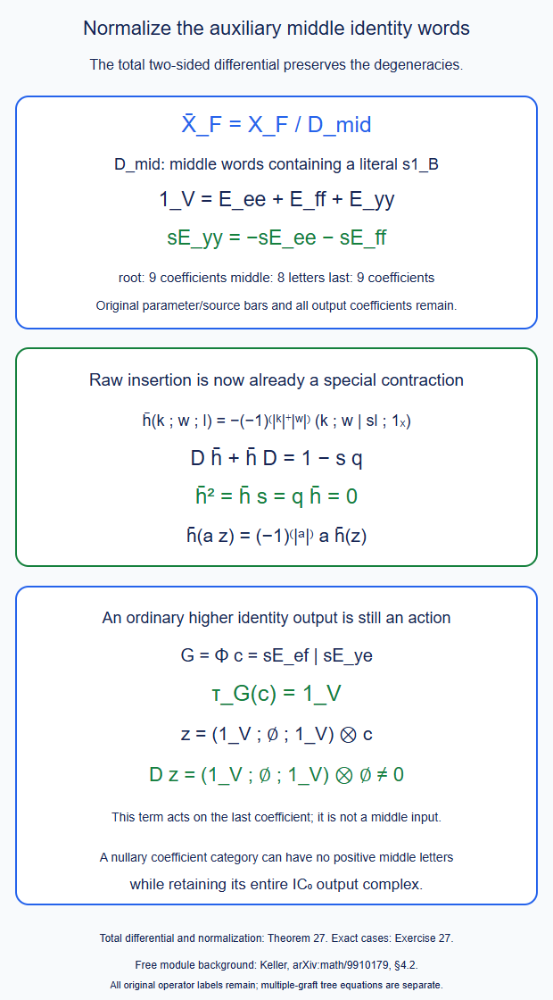
Theorem 27 and Exercise 27. The quotient is of the auxiliary two-sided middle word; the proof uses the total differential's two endpoint actions. Its matrix relation is a linear identity relation, not deletion of diagonal matrix coefficients. Ordinary higher identity outputs remain actions on the last coefficient. Editable SVG.

28. The actual iterated section and the two projection paths
Consider actual normalized functors between dg categories \[ A_0\xrightarrow H A_1\xrightarrow G A_2 \xrightarrow F A_3. \tag{28.1} \] Write \(\mathcal K_F,\mathcal K_G,\mathcal K_H\) for their represented graph modules. The fully expanded three-graph path is \[ \begin{gathered} Z=\mathcal K_F\otimes B_{\mathrm{full}}A_2 \otimes\mathcal K_G \otimes B_{\mathrm{full}}A_1 \otimes\mathcal K_H,\\ (k;w;l;v;m)\otimes c , \end{gathered} \tag{28.2} \] with all endpoint-matched sums. Here \(w\) is the \(A_2\)-middle word, \(v\) the \(A_1\)-middle word, and \(c\) the original \(A_0\)-input. Both auxiliary middle factors have the degeneracy quotient of Theorem 27. The original \(c\)-bar is full.
Use the actual differential on this graph path. It differentiates each coefficient and each middle or original source word, with the suspended degree of all preceding factors as tensor sign. Its successive endpoint actions are the left \(F\)-prefix action, right \(A_2\)-action on \(l\), \(G\)-prefix action on \(l\), right \(A_1\)-action on \(m\), and \(H\)-prefix action on \(m\), with (23.2) and (24.3) at the corresponding positions. This also specifies its complete nonminimal unary differential.
Theorem 28 (common iterated section and actual projection homotopy). Evaluate the first two graph factors to obtain \(Z_L\), or the last two to obtain \(Z_R\): \[ \begin{gathered} Z_L=\mathcal K_{FG}\otimes B_{\mathrm{full}}A_1\otimes\mathcal K_H,\\ Z_R=\mathcal K_F\otimes B_{\mathrm{full}}A_2\otimes\mathcal K_{GH}. \end{gathered} \tag{28.3} \] Extend the full special contractions of Theorems 24–27 through the unchanged graph factor. Denote the left stages by \((p_1,i_1,h_1):Z\rightleftarrows Z_L\) and \((p_2,i_2,h_2):Z_L\rightleftarrows Y\), where \(Y=\mathcal K_{FGH}\). Use primes for the two right stages. Their two complete sections are equal: \[ I=i_1i_2=i'_1i'_2. \tag{28.4} \] On original input \(c\), their common value is the normalized middle image of the explicit multicut \[ \begin{aligned} I(a\otimes c) =\sum_{\Delta^{(2)}c=\sum c_1\otimes c_2\otimes c_3} \ \sum_{\substack{BG\,BH(c_1)=\sum r_w w\\ BH(c_2)=\sum s_v v}} r_ws_v\, (a;w;1_{GH z_1};v;1_{H z_2})\otimes c_3. \end{aligned} \tag{28.5} \] Here \(z_1\) is the source of \(c_1\) and \(z_2\) the source of its concatenation with \(c_2\). Empty pieces are included. All original intermediate seams remain.
The projections and homotopies are \[ \begin{aligned} P_L&=p_2p_1,& H_L&=h_1+i_1h_2p_1,\\ P_R&=p'_2p'_1,& H_R&=h'_1+i'_1h'_2p'_1. \end{aligned} \tag{28.6} \] Both are full special contractions onto \(Y\), with the same \(I\). Their projections need not be equal. The actual degree-minus-one comparison is \[ J=P_RH_L,\qquad \delta J=P_R-P_L,\qquad JI=0. \tag{28.7} \] These statements include all original source/output coactions and the full operator-parameter domains of the functors in (28.1).
For any finite linear string of normalized functors, all binary groupings have the same iterated section. At \(n-1\) seams its formula uses the \(n\)-fold original source coproduct; at seam \(j\) it inserts the full bar of the inner composite \(F_{j+1}\cdots F_n\), evaluated on the \(j\)-th piece, and the identity at that piece's source object. The final piece is unconsumed.
Proof. Before the middle quotient, the cofree ordinary cotensor identification of C.66.2.1 identifies both expanded graph paths with (28.2), with their full endpoint actions. It does not replace a graph product by its composite without its specified comparison. The two auxiliary degeneracy subspaces are stable by the unit cancellations of Theorem 27. Taking the two quotients commutes: both results are the quotient by their sum.
The coalgebra map \(BG\) sends an \(A_1\)-word containing a literal identity to a sum of words with a literal identity, or to zero. Indeed its block containing that identity either has length greater than one and is zero, or is its unary unit image. Thus the section across the first seam descends through the second middle quotient. A unit in its consumed prefix gives a degenerate \(A_2\)-word; a unit in its retained suffix remains a degenerate \(A_1\)-word. The normalized projections and homotopies descend for the same reason, using Theorem 27's normalization of their positive source cores. This justifies all maps on the actual normalized object (28.2).
Expand the left section. First the \(H\)-section chooses a source prefix and a full output word of \(BH\). The \(G\)-section cuts that output into a consumed prefix and retained suffix. Since \(BH\) is a coalgebra map, such an output cut is exactly two consecutive original source pieces \(c_1,c_2\), with the same evaluated words. The first is evaluated further by \(BG\); the second is retained as \(v\). The remaining input is \(c_3\). This is (28.5).
For the right section, first choose the prefix \(c_1\) and evaluate it by the full composite bar \(BG\,BH\). The next section chooses \(c_2\) from the remaining input and evaluates it by \(BH\). Again \(c_3\) is retained. The inserted identities have exactly the objects shown in (28.5). This is the same sum. Every bar functor and section map in this original-word calculation has degree zero; no factor has been permuted, so no additional sign occurs. The two independent middle quotients preserve the equality.
The same proof includes every operator parameter. Replace each inner bar functor by its actual marked evaluation from C69. A cut of its output is uniquely a cut of the original parameter and source tensor coalgebra, including cuts at empty marked pieces. The two section orders therefore give the same original levelled piece assignments. Their Koszul sign moves the same original homogeneous factors into the same ordered output factors. The exact horizontal evaluation identity C.69.7 identifies the composite operator action with that same nested evaluation. Outer section naturality is strict by (26.3). Thus this argument retains the entire parameter diagram, not only its empty-parameter value. It introduces no new object, arrow label or omitted seam.
For a longer string, expand any binary grouping at its outer split. By induction its two subgroups use the stated original multicut formulas. Pulling every output cut back through the corresponding full coalgebra map gives exactly one cut at each original seam. Conversely these ordered seam cuts determine that expansion uniquely. Hence every grouping has the displayed \(n\)-fold multicut value. The marked argument is the same bijection with its original tensor signs. This proves the finite-string assertion without a choice of associativity paths.
The stage maps are special contractions by Theorem 27 and the full cotensor argument of C.66.2.1. Direct substitution in (28.6) gives \[ \begin{gathered} P_LI=1,\quad \delta H_L=1-IP_L,\quad H_L^2=H_LI=P_LH_L=0, \end{gathered} \tag{28.8} \] and likewise on the right. For example \[ \delta H_L =(1-i_1p_1)+i_1(1-i_2p_2)p_1 =1-IP_L. \tag{28.9} \] Its square and side conditions use \(h_1i_1=p_1h_1=0\) and the corresponding second stage conditions. The signs are the graded tensor signs of C.66.2.1 when a stage lies after a preceding graph factor. All maps remain full coaction maps and normalized at formal unit arguments. Their finite stage compositions are finite on every original input.
Finally \(P_R\) is closed and \(P_RI=1\), so \[ \delta(P_RH_L) =P_R(1-IP_L)=P_R-P_L. \tag{28.10} \] Also \(H_LI=0\), giving \(JI=0\). This contracts a specified comparison difference and does not assume that a whole natural-transformation complex is acyclic.
Its bare value retains the original second functor core. At \(w=v=c=\varnothing\), expanding (28.6) and then applying \(P_R\) gives \[ J(k;\varnothing;l;\varnothing;m) =(-1)^{|k|+|l|} k\tau_F(sl|sG_1m). \tag{28.11} \] The term \(h_1\) gives this value by (27.2) and the middle evaluation sign (23.3). The other term of \(H_L\) has either its inserted identity in a higher \(G\)-core, or in a higher \(F\)-core, and evaluates to zero. Thus (28.7) is the full bar extension of the actual second-component correction, not a replacement by an unrelated primitive. \(\square\)
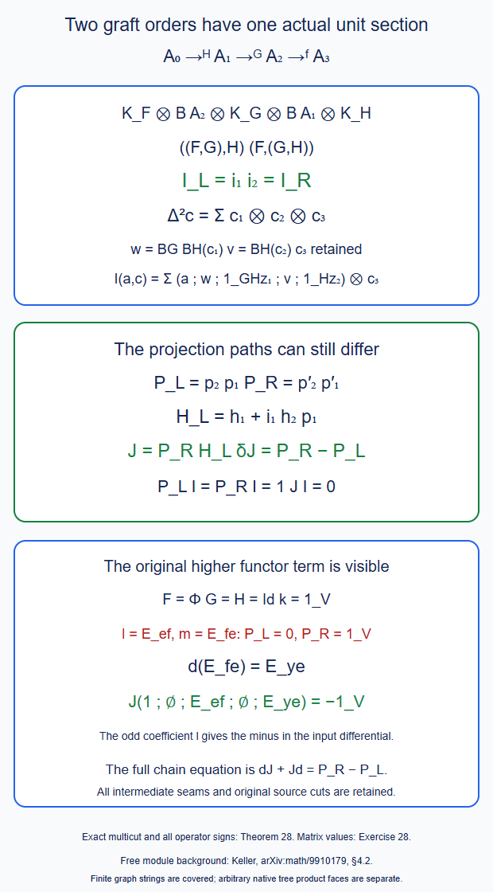
Theorem 28 and Exercise 28. The two auxiliary middle words keep their different intermediate categories. The projection homotopy has the actual second functor component as its bare value. All original source cuts are retained. Editable SVG.

29. Full coherent comparisons of projections with a common section
Work in the dg category of the full typed module objects just constructed. In particular all Hom differentials below include their actual input, output and operator actions. Suppose \[ I:Y\longrightarrow Z \tag{29.1} \] is a fixed closed section, and for each label \(a\) there is a special contraction \[ \begin{gathered} P_aI=1,\qquad \delta H_a=1-IP_a,\\ H_a^2=H_aI=P_aH_a=0. \end{gathered} \tag{29.2} \] The objects and all maps retain their original full coactions.
Theorem 29 (the exact restriction kernel and every comparison face). Restriction to \(I\) is a split surjective chain map \[ \begin{gathered} \mathsf r:\operatorname{Hom}(Z,Y) \longrightarrow\operatorname{End}(Y),\\ \mathsf r(\phi)=\phi I,\qquad \mathsf s(\psi)=\psi P_{a_*} \end{gathered} \tag{29.3} \] for a fixed base label \(a_*\). Its kernel has the square-zero degree-minus-one contraction \[ \mathsf K(\phi)=(-1)^{|\phi|}\phi H_{a_*}. \tag{29.4} \] Only this restriction kernel is asserted contractible.
For every ordered labelled tuple \((a_0,\ldots,a_r)\), define \[ T_{a_0\ldots a_r} =(-1)^{r(r-1)/2} P_{a_r}H_{a_{r-1}}\cdots H_{a_0}. \tag{29.5} \] For \(r=0\) this means \(P_{a_0}\). These are full degree-minus-\(r\) cochains with the exact faces \[ \delta T_{a_0\ldots a_r} =\sum_{j=0}^r(-1)^j T_{a_0\ldots\widehat a_j\ldots a_r} \quad(r\geq1). \tag{29.6} \] For \(r>0\) they vanish after precomposition with \(I\), and they vanish at an adjacent formal repeat of a comparison label. All original parameter and source coactions and normalized units are preserved.
Proof. Composition with a closed map commutes with the Hom differential, so (29.3) consists of chain maps. Its composite \(\mathsf r\mathsf s\) is the identity by \(P_{a_*}I=1\). For homogeneous \(\phi\), the Leibniz rule gives \[ \begin{aligned} \delta\mathsf K(\phi) +\mathsf K(\delta\phi) &=\phi(\delta H_{a_*})\\ &=\phi-\phi IP_{a_*}. \end{aligned} \tag{29.7} \] On \(\ker\mathsf r\) this is \(\phi\). Its square is zero by \(H_{a_*}^2=0\), and it preserves that kernel because \(H_{a_*}I=0\). This proves the first assertion. It also shows why \(\operatorname{End}(Y)\) remains as a retract rather than being declared acyclic.
Write \(U_{a_0\ldots a_r}\) for the unsigned product in (29.5). Differentiating its \(j\)-th homotopy gives the identity contribution with sign \((-1)^{r-1-j}\). The term \(-IP_{a_j}\) is killed by \(H_{a_{j+1}}I=0\) unless \(j=r-1\), when it gives minus \(U_{a_0\ldots a_{r-1}}\). Consequently \[ \delta U_{a_0\ldots a_r} =(-1)^{r-1}\sum_{j=0}^r (-1)^j U_{a_0\ldots\widehat a_j\ldots a_r}. \tag{29.8} \] The constants \(c_r=(-1)^{r(r-1)/2}\) satisfy \(c_r(-1)^{r-1}=c_{r-1}\). Multiplying (29.8) by \(c_r\) proves every face sign in (29.6), including the constant terms when \(r=1\).
For \(r>0\) the rightmost factor is \(H_{a_0}\), so \(T I=0\). An adjacent repeat among the homotopy factors gives \(H_a^2=0\). A repeat of the last two indices instead gives \(P_aH_a=0\). This proves normalization at each formal repeat. All sums and products are finite at fixed original input and fixed \(r\). Compositions of the original full coaction maps retain their coactions, graded signs and source-unit normalization. No output coefficient is discarded in this argument. \(\square\)
Apply this to all the labelled projection paths of Theorem 28 for a fixed finite graph string. The common section is its explicit multicut section. The edge \(T_{LR}=P_RH_L\) is exactly (28.7). Its triangle and every higher ordered-tuple face are now given by (29.5). Thus the projection-path comparison includes its full higher cochains.
This is an auxiliary comparison family of labelled retractions. It does not identify distinct original native arrows, even when their leading images agree. The original native parameter cochains remain inside the coefficient maps \(P_a,H_a\). Compatibility of this family with products of distinct graft faces and the complete profile-changing native index is a further assertion.
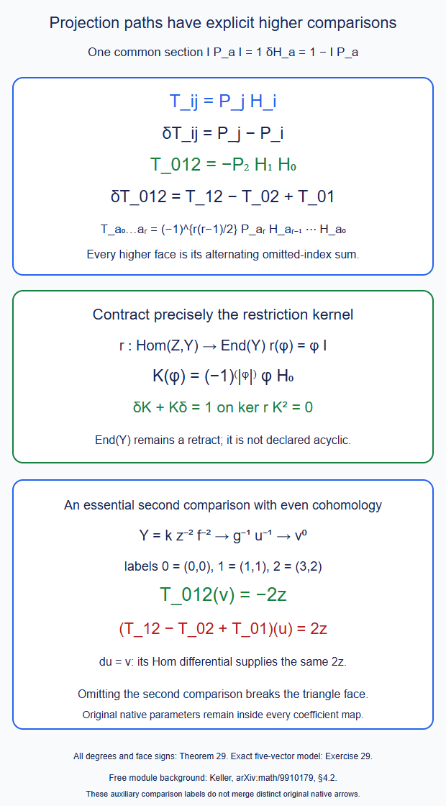
Theorem 29 and Exercise 29. The restriction kernel is contractible, while the full target endomorphism complex remains. The example has even target cohomology and a nonzero second comparison. Editable SVG.

30. Separate and joint middle bars for parallel branches
Let \(B_1,B_2\) be dg categories and \(B=B_1\otimes B_2\) their actual dg tensor category. Its composition convention is \[ (a_1\otimes a_2)(b_1\otimes b_2) =(-1)^{|a_2||b_1|} a_1b_1\otimes a_2b_2. \tag{30.1} \] Fix the actual normalized outer functor \(F:B\to C\). Put \[ C_i=B_{\mathrm{full}}B_i,\qquad \Gamma=C_1\otimes C_2,\qquad C_B=B_{\mathrm{full}}B . \tag{30.2} \] All these coalgebras are full. Only auxiliary middle words in the total two-sided complexes below receive Theorem 27's degeneracy quotient.
For inner functors \(G_i:A_i\to B_i\), write \(L_i=\mathcal K_{G_i}\) and \(L=L_1\otimes L_2\). This is a strict left \(B\)-module with its full genuine right input coalgebra \[ C_{\mathrm{in}}= B_{\mathrm{full}}A_1 \otimes B_{\mathrm{full}}A_2. \tag{30.3} \] The inner map to \(\Gamma\) is \(g_{\mathrm{sep}}=BG_1\otimes BG_2\). Operator parameters replace each \(BG_i\) by its actual marked evaluation, as in Theorem 25. This is a tensor of dg coalgebra maps; it does not assume a tensor product of primitive \(A_\infty\)-functors on a dg product source.
Theorem 30 (the genuine parallel graph shuffle equivalence). There is a dg coalgebra map \[ j:\Gamma\longrightarrow C_B \tag{30.4} \] which sums all interleavings of the two original words, preserving their orders. A \(B_1\)-letter is embedded as \(b_1\otimes1\), and a \(B_2\)-letter as \(1\otimes b_2\), at the current pair of object labels. Its coefficient is the Koszul sign of the permutation of the suspended original letters. No averaging factor occurs.
The separate and joint graph complexes are \[ \begin{gathered} X_{\mathrm{sep}} =\mathcal K_F\otimes\Gamma\otimes L,\\ X_{\mathrm{joint}} =\mathcal K_F\otimes C_B\otimes L . \end{gathered} \tag{30.5} \] Use the actual outer action \(\tau_Fj\) on the separate middle and the actual left coefficient action \[ \kappa=\tau_{\operatorname{Id}_B}j. \tag{30.6} \] Thus at fixed original input objects the separate differential, for \(p=|k|\), is \[ \begin{aligned} D(k;\gamma;l)={}&(dk;\gamma;l) +(-1)^p(k;d_\Gamma\gamma;l) +(-1)^{p+|\gamma|}(k;\gamma;dl)\\ &+\sum_{\substack{\Delta\gamma=\sum u\otimes v\\ u\ne1}} (-1)^p(k\,\tau_Fj(u);v;l)\\ &-\sum_{\substack{\Delta\gamma=\sum u\otimes v\\ v\ne1}} (-1)^{p+|u|}(k;u;\kappa(v)l). \end{aligned} \tag{30.7} \] The coproduct includes its tensor Koszul coefficients. The original source actions on \(L\) and the full outside coactions are retained.
The literal middle shuffle \[ J(k;\gamma;l)=\sum_{j(\gamma)=\sum a_w w} a_w(k;w;l) \tag{30.8} \] is a chain homotopy equivalence of full graph modules, with all original source and operator parameters retained. It descends to the auxiliary middle quotients. Their canonical endpoint sections satisfy \[ J S_{\mathrm{sep}}=S_{\mathrm{joint}}, \tag{30.9} \] where the separate full section inserts \(g_{\mathrm{sep}}\) into its middle word, and the joint section inserts \(jg_{\mathrm{sep}}\).
More precisely there is a common double resolution \[ Z=\mathcal K_F\otimes C_B \otimes B\otimes\Gamma\otimes L \tag{30.10} \] and full special contractions \[ \begin{gathered} (U,S_U,H_U):Z\rightleftarrows X_{\mathrm{sep}},\\ (V,I_V,H_V):Z\rightleftarrows X_{\mathrm{joint}} \end{gathered} \tag{30.11} \] with \[ J=VS_U,\qquad K=UI_V. \tag{30.12} \] Its inverse homotopies can be taken as \[ \begin{gathered} L_{\mathrm{sep}}=UH_VS_U,\qquad L_{\mathrm{joint}}=VH_UI_V,\\ \delta L_{\mathrm{sep}}=1-KJ,\qquad \delta L_{\mathrm{joint}}=1-JK . \end{gathered} \tag{30.13} \] They vanish on the corresponding canonical endpoint sections. All statements extend to every finite ordered number of parallel branches, including zero branches.
Proof. First check (30.4) on the full bars. A cut of a shuffled output word gives the two original word cuts and an interleaving on each side. Conversely these data give exactly that cut of the full interleaving. The tensor coproduct sign is the sign moving the unused first-factor suffix past the second-factor prefix. This is the same permutation sign in both descriptions, proving the coalgebra equation.
Unary differentials commute with the shuffle by their tensor signs. A binary output product of two letters from the same factor is the corresponding original bar product. If consecutive output letters come from different factors, the two interleavings differing by their exchange cancel. For letters of ordinary degrees \(a,b\), their coefficients after binary composition are \[ (-1)^{a-1},\qquad (-1)^{(a-1)(b-1)+b-1+ab} =(-1)^a. \tag{30.14} \] They are opposite. The factor \((-1)^{ab}\) here is exactly the dg tensor composition sign (30.1). This proves the chain equation, including arbitrary nonminimal input differentials. The object labels follow the same monotone path in the two object lists and are never identified by their images.
Both twisting cores in (30.7) are the restrictions of actual dg-bar twisting cores through the chain coalgebra map \(j\). Their twisting equations and the dg coefficient Leibniz rule prove \(D^2=0\), exactly as in (23.2): disjoint prefix and suffix actions cancel in opposite orders. The coalgebra equation for \(j\) identifies each action in (30.7) with the corresponding joint-bar action. Its chain equation identifies the internal terms. Therefore (30.8) is a chain map. The same cut argument gives all outside coaction equations. It is natural for the original full graph maps in \(F\) and the inner \(G_i\), because those maps use precisely these coproduct cuts.
A formal middle identity in one factor maps under \(j\) to words with a literal joint identity, or to zero. The total separate differential preserves its middle degeneracy subspaces by the paired unit cancellations of Theorem 27. The joint differential does too. Thus the chain map descends. This is a quotient of total two-sided complexes, not a standalone reduced dg bar assertion for an unaugmented category.
We now prove its equivalence with explicit graph contractions. For each factor use \[ R_i=B_i\otimes C_i\otimes L_i . \tag{30.15} \] This is Theorem 24's graph resolution for the strict outer identity functor on \(B_i\), with its normalized middle from Theorem 27. Its projection is the actual coefficient multiplication, and its full section and homotopy retain the genuine inner \(G_i\)-input. The homotopy is strictly graded left \(B_i\)-linear by that theorem.
Tensor the two actual dg module contractions. Their homotopy is \[ H_R=H_{R_1}\otimes1+ (S_{R_1}Q_{R_1})\otimes H_{R_2}. \tag{30.16} \] The proof of C.66.2.1 gives its differential, square and side identities, with the ordinary graded tensor signs. This tensors dg module maps; it does not tensor arbitrary primitive \(A_\infty\)-functors. The packed root/middle/last coefficient convention has sign \[ (-1)^{|a_2|(|w_1|+|l_1|) +|w_2||l_1|} \tag{30.17} \] relative to the factor order \((a_1,w_1,l_1,a_2,w_2,l_2)\). It moves the same original homogeneous factors into \((a_1,a_2,w_1,w_2,l_1,l_2)\). The full outside bars use the same tensor permutation rule.
The tensor \(R_1\otimes R_2\) is a strict left \(B\)-module resolution of \(L\), retaining all its right common-input coactions. Composing it with the full right graph of \(F\) gives the contraction \((V,I_V,H_V)\) in (30.11). Strict graded left linearity makes each endpoint bar action commute with those maps. Equivalently this is the explicit ordinary cotensor contraction of C.66.2.1, so no exactness assertion about an unrelated cotensor functor is used.
For the other contraction apply Theorem 24 to the genuine input coalgebra \(\Gamma\) and map \(j:\Gamma\to C_B\). Extend its full maps through the left coefficient module \(L\). This gives \((U,S_U,H_U)\) on (30.10). The normalized positive \(\Gamma\)-cores from Theorem 27 make the extension descend through each separate middle unit quotient. A unit consumed by a positive core gives zero; one retained in the middle remains a degeneracy. The source \(\Gamma\) used in Theorem 24 itself was the full dg coalgebra (30.2).
At fixed original input objects, the section \(S_U\) has value \[ S_U(k;\gamma;l) =\sum_{\substack{\Delta\gamma=\sum u\otimes v\\ j(u)=\sum a_w w}} a_w(k;w;1_B;v;l). \tag{30.18} \] The coefficient projection \(V\) is zero unless the retained \(\Gamma\)-middle \(v\) is empty. The remaining term multiplies the inserted \(1_B\) with \(l\). Thus \(VS_U\) is exactly (30.8), with all its integer shuffle coefficients and object labels. The same identity holds on the full outside coactions.
The full sections give a commuting endpoint square: \[ S_U S_{\mathrm{sep}} =I_V S_{\mathrm{joint}}. \tag{30.19} \] Expanding either side cuts the original common input twice: one prefix is placed in \(C_B\) by \(jg_{\mathrm{sep}}\), the next is placed in \(\Gamma\) by \(g_{\mathrm{sep}}\), and the suffix is retained. The coalgebra equations give the identical original cuts and the same tensor signs. This proves (30.9) and (30.19), including every actual marked inner-parameter component. For outer parameters, section naturality is (26.3); the exact C69 evaluation identity retains all mixed components in the other maps of (30.11).
The two special contraction equations now give \[ \begin{aligned} \delta(UH_VS_U) &=U(1-I_VV)S_U=1-KJ,\\ \delta(VH_UI_V) &=V(1-S_UU)I_V=1-JK . \end{aligned} \tag{30.20} \] Their vanishing on endpoint sections follows from (30.19) and \(H_VI_V=H_US_U=0\). This proves a full relative chain homotopy equivalence. It has not used a bare coalgebra quasi-isomorphism.
For finitely many branches, the shuffle is the sum of all order-preserving interleavings of their original words. Its construction is associative because any grouping enumerates the same final interleavings with the same graded permutation. Tensor (30.15) over those factors; the homotopy in (30.16) becomes the ordered sum with earlier \(S_iQ_i\) factors and one \(H_i\). The identical double resolution and calculation prove the finite-branch assertion. At zero branches the middle coefficient category is \(k\). Only its auxiliary positive identity middle words disappear; the full output complex of the nullary object is retained. Every original external input bar and every ordinary higher identity output remains in its actual coefficient action. \(\square\)
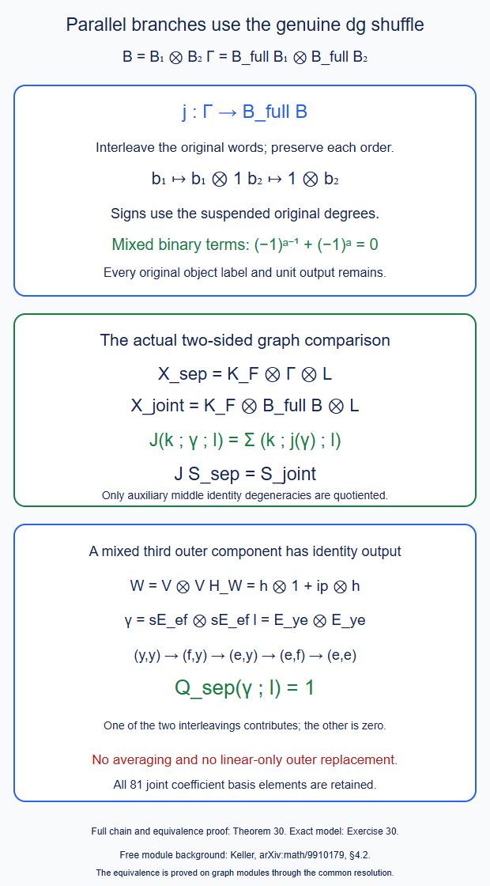
Theorem 30 and Exercise 30. The source is a tensor of full bars, and the outer functor is the actual functor on the joint dg category. The example uses a strict dg tensor representation and an explicit contraction of \(V\otimes V\). Editable SVG.

31. Preserve the endpoint projections on the common resolution
In (30.10), let \[ \begin{gathered} Q_0=Q_{\mathrm{joint}}V,\qquad Q_1=Q_{\mathrm{sep}}U,\qquad Q_{\mathrm{sep}}=Q_{\mathrm{joint}}J,\\ I=I_VS_{\mathrm{joint}} =S_US_{\mathrm{sep}} . \end{gathered} \tag{31.1} \] The first endpoint path has the special contraction \[ H_0=H_V+I_VH_{\mathrm{joint}}V. \tag{31.2} \] Both actual endpoint maps satisfy \(Q_iI=1\). These are the entire maps on their original source and parameter domains.
Theorem 31 (exact retargeting with the original comparison retained). In any such full dg module category, fix a special contraction \((Q_0,I,H_0)\). For any closed actual projection \(Q\) with \(QI=1\), put \[ \begin{gathered} N=I(Q-Q_0),\qquad A=1+N,\qquad A^{-1}=1-N,\\ H_Q=A^{-1}H_0A. \end{gathered} \tag{31.3} \] Then \(A\) is a closed automorphism, \(N^2=0\), and \[ \begin{gathered} AI=I,\qquad Q_0A=Q,\qquad \delta H_Q=1-IQ,\\ H_Q^2=H_QI=QH_Q=0 . \end{gathered} \tag{31.4} \] The actual projection \(Q\), section \(I\), source differential and target diagram stay fixed. All their original coactions and normalized units are retained.
If a special homotopy \(H_Q^{\mathrm{old}}\) was already specified, keep both as distinct comparison labels. The full mixed family of Theorem 29 retains every original and new comparison. In particular \[ \begin{gathered} B_Q=(H_Q-H_Q^{\mathrm{old}})H_Q,\\ \delta B_Q=H_Q^{\mathrm{old}}-H_Q . \end{gathered} \tag{31.5} \] This supplies an actual comparison of the chosen homotopies as well.
Proof. Since \((Q-Q_0)I=0\), one has \(N^2=0\). All three maps \(I,Q,Q_0\) are closed, so \(N\), \(A\) and its displayed inverse are closed. Their identities with \(I\) and \(Q_0\) follow by direct multiplication. Hence \[ \delta(A^{-1}H_0A) =A^{-1}(1-IQ_0)A=1-IQ. \tag{31.6} \] Its square is zero by \(H_0^2=0\). The other two side conditions are \(H_0I=0\) and \(Q_0H_0=0\) transported by these same identities. Compositions and sums of the given full coaction maps retain their coactions and source-unit normalization. No infinite coordinate series or positivity assumption is needed.
For (31.5) set \(\Delta=H_Q^{\mathrm{old}}-H_Q\). It is closed of degree minus one, and \(\Delta I=0\). The graded Leibniz rule gives \[ \delta(-\Delta H_Q) =\Delta(1-IQ)=\Delta, \tag{31.7} \] as asserted. All old and new special contractions have the same section \(I\), so (29.5) applies to their joint labelled family. Its mixed faces retain the full old/new comparison, even when a leading projection has not changed.
For clarity, the choices constructed from this one baseline satisfy \[ H_Q=H_0-IQH_0,\qquad H_QH_{Q'}=0 . \tag{31.8} \] This follows from \(H_0I=0\), \(Q_0H_0=0\) and \(H_0^2=0\). It does not erase nonzero higher comparisons belonging to previously specified homotopies; those occur in the retained mixed family. \(\square\)
Applying this to (31.1) gives actual special endpoint contractions on the existing parallel common resolution. Theorem 29 then compares its endpoint paths with every higher comparison face. The projections are their original full maps throughout. Identification with all profile-changing native graft product faces is still a separate geometric and cooperadic assertion.
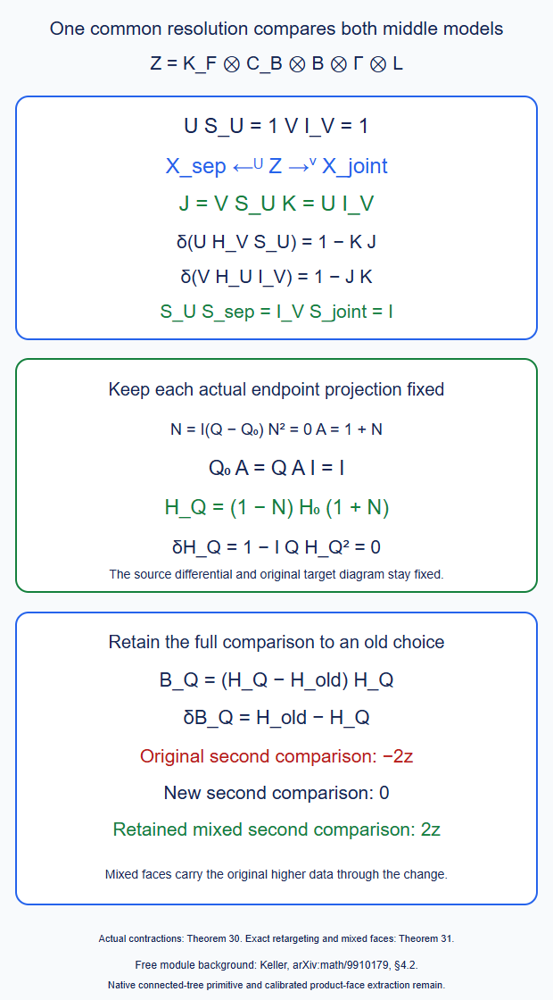
Theorems 30–31 and Exercises 30–31. Each side of the rectangle uses an actual full contraction. The nilpotent correction changes the selected homotopy on that same resolution, with its full comparison to any old choice. Editable SVG.

32. The edge-bar object of an arbitrary rooted operation tree
Let \(T\) be a finite planar rooted tree of operations. A vertex may have any finite number of inputs, including zero. Every edge retains its original state and every joining seam retains its original endpoint objects. On each edge \(e\) put a dg category \(A_e\) and its full bar coalgebra \(C_e\). At a vertex \(v\) use a genuine coaugmented dg coalgebra map \[ f_v:\Gamma_v=\bigotimes_{e\in\operatorname{in}(v)}C_e \longrightarrow C_{\operatorname{out}(v)}. \tag{32.1} \] The order is the given order of input slots. The native example is the full bar of the actual \(F_n\), restricted along the genuine dg shuffle of Theorem 30. This uses the common input, not a tensor of primitive \(A_\infty\) functors. Require the strict unit equations in each input factor: its single literal identity has core the output identity, and a core containing that letter together with any further letter is zero. All maps are uncurved. These conditions hold for the native maps and are preserved by the coalgebra composites used below. Write \(\tau_v=s^{-1}\pi_1 f_v\); it has degree one. Its graph coefficient is \[ k_v\in A_{\operatorname{out}(v)} (f_v(\mathbf x_v),y_v). \tag{32.2} \] All Hom complexes and all endpoint objects occur. At a nullary vertex this is the full Hom out of \(F_0\), not a copy of the ground field.
Describe a coordinate of \(Z_T\) recursively, starting at the root: \[ k_v\ ;\ c_1\ ;\ Z_{T_1}\ ;\ \cdots\ ;\ c_r\ ;\ Z_{T_r}. \tag{32.3} \] Here \(c_i\in C_{e_i}\). A subtree factor is present exactly when \(e_i\) is internal. At an external input the single factor \(c_i\) is the original full input bar. At an internal edge quotient only the auxiliary middle identity degeneracies of Theorem 27. Sum over all compatible intermediate objects. No coefficient or external source or parameter bar is quotiented.
Theorem 32 (full edge-bar differential and literal grafting). These coordinates carry a differential, strict root output action, and full external input coactions. In addition to the tensor differentials, its terms are precisely the following.
At a vertex cut every incoming word \(c_i=u_i v_i\), excluding the simultaneously empty prefix, and replace the root coefficient of that vertex by \(k_v\tau_v(u_1,\ldots,u_r)\), retaining the tails. Let \(B\) be the degree before \(k_v\) in (32.3), \(p=|k_v|\), and \(z_i=|Z_{T_i}|\), with \(z_i=0\) at an external input. The sign is \[ (-1)^{B+p+\sum_{i<j}|u_j|(|v_i|+z_i)}. \tag{32.4} \] This exponent already includes the tensor-coalgebra cut sign. At an internal edge with word \(w=u|sa\) and child coefficient \(l\), shorten the word to \(u\) and replace \(l\) by \(al\), with sign \[ -(-1)^{B_e+|u|}, \tag{32.5} \] where \(B_e\) is the degree before that edge's bar factor. The resulting \(D_T\) satisfies \(D_T^2=0\).
For an external edge \(i\) of \(T\), graft a tree \(S\) there. Before inserting its coordinate \(z\), write the old coordinate as \(A;c_i;B\). The literal insertion map is \[ G_i(x,z)=(-1)^{|z||B|}(A;c_i;z;B), \tag{32.6} \] followed by the auxiliary middle quotient at the new seam. Its source differential consists of the tensor differential and the seam term. If \(c_i=u|sa\), that seam term, after applying \(G_i\), is \[ -(-1)^{|A|+|u|+|a||B|} G_i((A;u;B),az). \tag{32.7} \] Here \(a\) acts on the root coefficient of \(z\). Nested insertions are associative. Insertions at disjoint inputs satisfy the ordinary graded interchange with the Koszul sign for exchanging their two inserted blocks. These are identities of the full graph objects and their coactions.
Proof. The graph of (32.1), before substitution, is \(K_v\otimes\Gamma_v\) with Theorem 9's twisted differential, restricted to this genuine input coalgebra. It is a right \(\Gamma_v\)-comodule. A subtree with strict left \(A_e\)-action has the left cofree \(C_e\)-comodule \(C_e\otimes Z_{T_e}\). Its differential consists of the two tensor differentials and the last-letter action (32.5). It is a dg comodule: the unary equation is the module Leibniz rule and the binary equation is associativity, with \(b_2(sa|sb)=(-1)^{|a|-1}s(ab)\). This is also the strict-left-module special case of (23.2). At an external input use the regular bicomodule \(C_e\).
Take the tensor product of these incoming comodules and the ordinary cotensor product with \(K_v\otimes\Gamma_v\). The cofree equalizer and counit give (32.3) exactly. This is an equalizer of dg maps, so its differential squares to zero; no exactness or derived-cotensor identification is used. Induction from the leaves constructs the entire finite tree. The same construction retains all external coactions and the strict root output action.
For completeness, extracting \(u_j\) from its input slot moves it past every earlier remaining tail \(v_i\) and subtree \(Z_{T_i}\). This gives the sum in (32.4). Applying the degree-one twisting map after the coefficient gives \(B+p\). The last-letter left action in the incoming cofree comodule gives (32.5). Thus these formulas are the differential just constructed, including its global tensor signs.
At each internal edge the identity-degeneracy cancellation is the paired internal/endpoint cancellation of Theorem 27. All intervening factors contribute a common tensor prefix sign. It therefore remains valid with the other branches and all original external inputs present. Quotienting by the sum of these edge subcomplexes gives the stated normalized object. Different edge quotients commute. The original external bars are untouched.
Cotensoring at a new external input gives the grafted object. In root-first coordinates the subtree is moved past precisely the old block \(B\), proving (32.6). Before this move the last-letter action must move \(a\) past \(B\); its sign is \(-(-1)^{|A|+|u|+|a||B|}\), proving (32.7). The tensor differential and this term consequently map to \(D_{T\circ_i S}\). This proves the chain equation as well.
Nested insertions have identical signs because \[ |S||B_T|+|U|(|B_S|+|B_T|) =(|S|+|U|)|B_T|+|U||B_S|. \tag{32.8} \] At disjoint inputs, reversing the order of the two incoming blocks gives \((-1)^{|S||U|}\); moving both to their final places gives the same remaining permutation. Hence interchange holds before and after the commuting middle quotients.
Finally, an actual full marked evaluation at a vertex is a map \(P_v\otimes\Gamma_v\to C_{\operatorname{out}(v)}\), where \(P_v\) is the full bar of its actual dg operator category. Include \(P_v\) as another ordered external factor in the construction. Theorem 25 identifies this with the original marked graph, and Theorem 26 retains its whole outer comparison. Every coalgebra cut used above includes that factor. Pulling back along the original parameter diagram therefore keeps all its positive and mixed components. Equal leading operators are not identified. This proves the assertion with those parameters and their coactions as well. \(\square\)
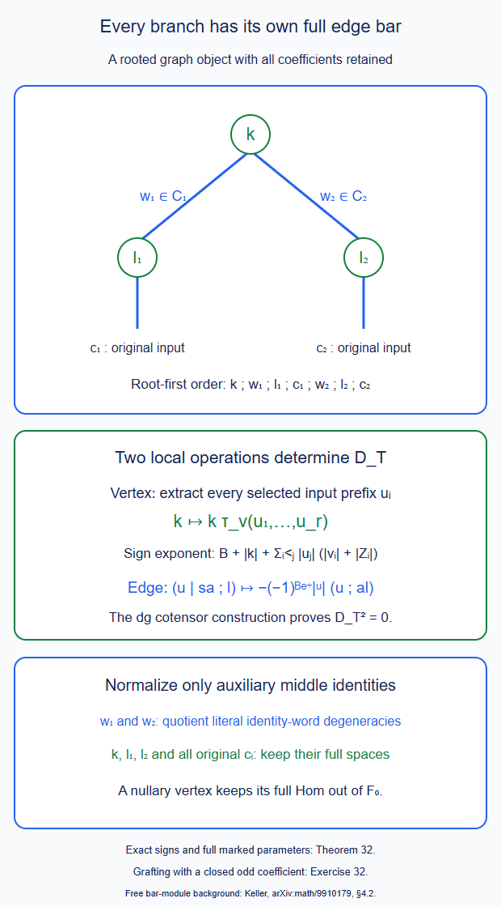
Theorem 32 and Exercise 32. Edge normalization concerns the internal middle words alone. The ordered factors determine the extraction and insertion signs. Editable SVG.

33. Contract an edge without discarding the other branches
For an internal edge \(e\), let \(p\) be its parent, \(c\) its child, and \(i\) its input slot at \(p\). Contract it using the actual coalgebra composite \[ f_{p/c}=f_p(1,\ldots,f_c,\ldots,1). \tag{33.1} \] The other edge labels remain their original labels. Let \(T/e\) have this composite vertex. It is not here replaced by a chosen flattened native \(F_N\).
Theorem 33 (full edge contraction and common all-tree section). There is an explicit special deformation retraction \[ (Z_T,D_T) \ \underset{S_e}{\overset{Q_e}{\rightleftarrows}}\ (Z_{T/e},D_{T/e}),\qquad Q_eS_e=1,\quad D_TH_e+H_eD_T=1-S_eQ_e, \tag{33.2} \] with \(H_e^2=H_eS_e=Q_eH_e=0\). It retains every external source, operator and output coaction. The section uses all cuts of the child's genuine input bars: put \(f_c(\mathbf u)\) on the new edge, put the actual identity coefficient at \(c\), and retain the tails \(\mathbf v\). Its sign is \[ (-1)^{\sum_{j<k}|u_k|(|v_j|+|Z_{T_j}|)}. \tag{33.3} \]
Here is a complete signed prescription for the projection. Cut the other parent input bars and all child input bars. Consume the entire middle word \(w_e\) and child coefficient \(l\). Into parent slot \(i\) feed \[ w_e\,|\,sl\,|\, f_c(\mathbf u_c); \tag{33.4} \] into its other slots feed their selected prefixes. Evaluate \(\tau_p\), right-compose the parent coefficient, and retain all tails and all remaining subtrees. Sum over all cuts and every full output word of \(f_c\).
The sign is determined without an implicit ordering convention: first apply the degree-minus-one suspension \(l\mapsto sl\) at its original position, giving the tensor sign from the degree before \(l\). Split the selected words into prefix and tail. Move the evaluation factors immediately after the parent coefficient, in parent slot order; in slot \(i\) their order is \(w_e,sl,\mathbf u_c\). Use their Koszul permutation sign, with \(sl\) of degree \(|l|-1\). Finally apply the degree-one \(\tau_p\), giving the tensor sign from the degree before and including the parent coefficient. Multiply these three signs. For one parent input and no other branches this is exactly \((-1)^{|w_e|}\) in (24.4).
Contract all edges in any order \(\beta\). The composite coalgebra map \(f_T\) is independent of that order, and all composite sections are the same map \[ I_T:K_{f_T}\longrightarrow Z_T. \tag{33.5} \] Each projection path has a special contraction with this section. The full higher comparisons of Theorem 29 apply to the entire family of such paths; the projections need not be equal.
Proof. Move the other parent inputs, child inputs and their remaining subtrees into the displayed order by the graded tensor symmetry. In these coordinates the local map is the full common-input Yoneda evaluation of Theorem 24, with the other parent factors retained as additional genuine input factors. Its distinguished input is \(sl\). Suspending at its actual position and then evaluating \(\tau_p\) gives exactly the sign prescription above. Moving a child's selected prefix past its earlier remaining factors gives (33.3).
One may check the chain equation directly in the same local coordinates. The twisting equation for \(\tau_p\), applied to the whole word containing \(sl\), splits into cuts before and after this distinguished letter. The former are the parent action terms in \(Q_eD_T\); the latter are the composite action terms in \(D_{T/e}Q_e\). The unary term on \(sl\) is the child coefficient differential. Its two neighboring binary terms give the edge endpoint action and the child output composition. The dg coalgebra equation for \(f_c\) handles all its internal cuts and differentials, including simultaneous nonempty prefixes in several child slots. All factors not evaluated retain their tensor differentials on both sides. These are disjoint and exhaustive terms of the two sides, with the Koszul signs prescribed above. Thus \(Q_eD_T=D_{T/e}Q_e\).
For the section the coalgebra equation for \(f_c\) gives all middle cuts and the target composite action. The remaining last-letter and identity-coefficient terms cancel by the ordinary unit equation, exactly as in (24.7). Consequently \(D_TS_e=S_eD_{T/e}\). Applying \(Q_e\) to this section inserts the literal child identity into (33.4). Strict unit normalization kills every higher parent core containing it. The one surviving first core has no other consumed prefix. Hence \(Q_eS_e=1\). This argument keeps all identity-valued ordinary outputs. For a nullary child the input cut is simply the empty cut, and the same proof applies with its full coefficient complex.
Here are also explicit finite formulas for the homotopy; an existence assertion about a quasi-isomorphism would not suffice. Pack the three local factors \((k_p,w_e,l)\) first by the same graded permutation. Freeze all other local input bars to length zero in the action terms. Use the normalized bare Yoneda contraction \((Q_0,S_0,h_0)\) of Theorem 27; keep the tensor unary differentials of all other factors. The two unit calculations give \(Q_eS_0=Q_0S_0=1\). Put \[ N=S_0(Q_e-Q_0),\qquad A=1+N,\qquad A^{-1}=1-N. \tag{33.6} \] Then \(N^2=0\) and \(Q_0A=Q_e\). On the actual kernel, conjugate the differential by \(A\) and write it as \(D_0+\delta\). The difference \(\delta\) consumes a positive number of the other parent or child input letters. Terms away from this local configuration commute with the local contraction: on the output this is its strict graded output linearity, and elsewhere it is the tensor identity. Thus the only perturbations interacting with \(h_0\) strictly lower that local input length. This remains true with full marked parameter bars included as inputs.
If their total length is \(L\), the kernel contraction is the finite expression \[ \overline H =\sum_{a=0}^{L}(-1)^a h_0(\delta h_0)^a,\qquad H_e=A^{-1}\overline H A(1-S_eQ_e). \tag{33.7} \] On the kernel this is the same conjugated-kernel construction proved in (24.12)–(24.18). Its telescoping calculation gives the homotopy equation in (33.2), and the bare special identities give the three side conditions. The last projector extends it by zero on the actual \(S_e\)-summand. All formulas use the full existing maps and preserve the external coactions. The middle quotient and formal input normalizations are exactly those proved in Theorem 27.
It remains to establish (33.5), rather than merely a succession of unrelated sections. Two adjacent edge expansions have two possibilities. If nested, the two expressions are the same three-piece coalgebra cut, by the argument of Theorem 28. If in different slots, they are independent coalgebra cuts; their extraction permutations are the same graded permutation, as in Theorem 30 and (32.8). This also covers sibling edges: the section does not evaluate the parent functor. It only uses each child's full coalgebra map and inserts its identity coefficient. Both calculations keep the original edge labels, including labels incident to a nullary vertex.
Every two orders of the finitely many edge contractions are related by adjacent exchanges. Apply the two cases just proved at each exchange. Coalgebra composition in (33.1) is associative with the same ordered tensor symmetries, so the final input map is the identical \(f_T\), and every expansion is \(I_T\). Special contractions compose: for two stages their homotopy is \(h_1+S_1h_2Q_1\); its homotopy and side equations follow by expansion using \(Q_1S_1=1\). Induction gives each full path. Theorem 29 now supplies its signed \(QH\cdots H\) comparisons and every alternating face. It compares these auxiliary retractions while retaining the original native parameter coefficients. \(\square\)
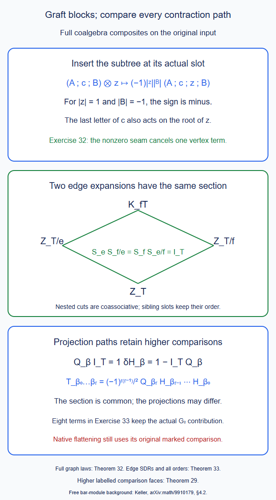
Theorems 32–33 and Exercises 32–33. The square concerns the actual coalgebra composites on the same original input. Identification with the prescribed flattened native operation and its calibrated comparison requires the original graft comparison as well. Editable SVG.

34. The genuine joint operator bar
For a fixed tree and fixed edge categories as in Theorem 32, let \(\mathcal O_v\) be the dg category of its full strictly unital common-input coalgebra maps. Its morphisms are the normalized full cochains of Theorem 9 on \(\Gamma_v\), with their actual object components, convolution composition and twisted differential. These formulas define a dg category: the twisting equations give \(\delta^2=0\), and the convolution Leibniz rule gives the differential rule for composition. Its identity is the ordinary identity object component, with zero positive cores. Set \[ \mathcal O_T=\bigotimes_v\mathcal O_v^{\mathrm{op}} . \tag{34.1} \] This is the genuine dg tensor of operator categories. Its full bar includes a single letter for a simultaneous joint operator; that letter is not a shuffle of separate parameter letters.
Theorem 34 (strict joint graph action and full joint-bar transfer). The edge-bar graphs form a strict dg functor \[ \mathsf X_T:\mathcal O_T\longrightarrow\mathsf{DGMod}, \qquad \mathbf f\longmapsto Z_T(\mathbf f). \tag{34.2} \] The target keeps the full outside input and output structures. At one vertex a homogeneous cochain \(\theta\) of degree \(r\) acts by the prefix extraction of (32.4), with its \(B+p\) term replaced by \(r(B+p)\). At several vertices use the ordered product of these maps in root-first order.
At each object choose any full contraction path of Theorem 33, with object maps \(p,i,h\) and target \(Y=K_{f_T}\). There is an explicit finite transfer on \[ \mathcal C_T=B_{\mathrm{full}}\mathcal O_T,\qquad \mathcal M_X=\mathcal C_T\otimes X,\quad \mathcal M_Y=\mathcal C_T\otimes Y. \tag{34.3} \] All tensor products here have their endpoint-matched object sums. The result is an entire coherent joint operator action on \(Y\), together with a full special contraction from the original strict action. It includes every composable joint operator word and its original differential, without a product-shuffle assumption.
Here are its precise signs and formulas. On the source write \(D=d+\Delta\), where \(d=b_{\mathcal O}\otimes1+1\otimes d_X\) uses the graded tensor rule. If the last letter of a nonempty word is \(sa\), the action perturbation is \[ \Delta(u|sa\otimes x) =-(-1)^{|u|}u\otimes\mathsf X_T(a)x. \tag{34.4} \] Extend \(p,i,h\) over \(\mathcal C_T\) with the tensor signs; in particular \(h(w\otimes x)=(-1)^{|w|}w\otimes h_{\mathrm{source}(w)}x\). Put \[ \begin{gathered} A=(1+h\Delta)^{-1},\qquad B=(1+\Delta h)^{-1},\\ i'=Ai,\qquad p'=pB,\qquad h'=Ah=hB,\\ d'=d_Y+p\Delta Ai . \end{gathered} \tag{34.5} \] Each inverse is its alternating geometric series. On a word of length \(q\) it has at most \(q+1\) terms. Then \[ \begin{gathered} D i'=i'd',\quad p'D=d'p',\quad (d')^2=0,\\ p'i'=1,\quad Dh'+h'D=1-i'p',\\ (h')^2=p'h'=h'i'=0. \end{gathered} \tag{34.6} \] These are full parameter-comodule identities, with all original outside coactions. Higher components of the transferred action and comparison normalize at literal operator identities; ordinary identity actions and full identity bar words remain.
Let \(C\) be a colored conilpotent dg parameter coalgebra with an actual whole map \[ \lambda:C\longrightarrow B_{\mathrm{full}}\mathcal O_T . \tag{34.7} \] All constructions pull back by ordinary cotensor along this map. Thus a full compatible joint index uses its entire index coalgebra; it need not be a product rectangle or lie in the separate-bar shuffle image. This assertion requires the actual map (34.7), not merely its object and arrow images.
Proof. At one vertex Theorem 9 gives the differential and composition equations of its cofree operator map. The same proof applies on the genuine tensor input \(\Gamma_v\): its coproduct includes the tensor cut signs. Extracting the prefixes past the earlier subtree factors gives precisely the sign specified above. Every other differential term is a tensor differential or a disjoint factor action. Its two orders with the degree-\(r\) operator differ by \((-1)^r\), as required by the Hom differential.
At different vertices the sets of factors acted on are disjoint: the parent uses its coefficient and incoming bars; the child uses its own coefficient and its incoming bars. Both orders extract exactly the same prefixes. Comparing their graded permutations gives \((-1)^{rs}\) for operators of degrees \(r,s\). At a single vertex the extra \((-1)^{rs}\) in Theorem 9 is exactly the composition sign of the dg opposite category. For ordered tensor operators, moving the second operator at vertex \(i\) past the first at vertex \(j>i\) gives the defining tensor-category composition sign. This proves (34.2), including its full differential and composition rules.
A normalized positive cochain consuming a middle identity has value zero. If it does not consume it, the identity remains in the auxiliary degeneracy quotient. Hence these operators descend to the normalized internal bars. Output postcomposition and every external coaction commute with them with their graded signs. This proves the full typed module assertion, including zero-input vertices.
The source bar differential \(D\) squares to zero: the unary part of (34.4) is the dg functor Leibniz rule, and its two successive last-letter actions cancel the bar multiplication by the strict composition rule just proved. This is the left-module calculation used in (32.5). Without those actions, \(p,i,h\) give a special contraction for \(d\) and \(d_Y\). Composing two adjacent operator letters does not change the word's source object, so the tensor homotopy signs commute with that part of the bar differential too. Each \(h\Delta\) or \(\Delta h\) lowers parameter length by one. This proves the stated finite inverse formulas, regardless of the degrees or differentials of the operators.
For a direct verification of (34.6), the resolvent identities are \[ \begin{gathered} A=1-h\Delta A,\quad B=1-\Delta hB,\\ Ah=hB,\quad B\Delta=\Delta A,\quad hA=h,\quad Bh=h . \end{gathered} \tag{34.8} \] Using \(D^2=0\) and \(dh+hd=1-ip\), expansion gives \[ DA=Ad+Ai\,p\Delta A,\qquad BD=dB+B\Delta i\,pB . \tag{34.9} \] For example, substitute \(A=1-h\Delta A\) on the left, replace \(dh\) by \(1-ip-hd\), and replace \(d\Delta+\Delta d\) by \(-\Delta^2\). The two \(\Delta h\Delta A\) terms cancel, leaving \((1+h\Delta)DA=d+ip\Delta A\), the first equality. The second is its right-handed expansion. Applying the first to \(i\) and the second after \(p\) proves both chain equations.
The side equations \(ph=hi=h^2=0\), together with (34.8), give \(pBAi=1\), \(AhAi=0\), \(pBAh=0\), and \((Ah)^2=0\). Moreover \[ \begin{aligned} DAh+AhD &=A(dh+hD)+Ai\,p\Delta Ah\\ &=1-Ai\,p(1-\Delta Ah)\\ &=1-Ai\,pB . \end{aligned} \tag{34.10} \] This proves the homotopy and all special identities. Finally \(D^2i'=i'(d')^2=0\), and \(p'i'=1\), prove \((d')^2=0\).
The perturbation is a left-comodule map of degree one: both \(D\) and \(d\) have the same coalgebra part. The tensor homotopy is colinear with its degree-minus-one sign. Thus every series in (34.5) is colinear, and \(d'\) has the original coalgebra differential as its coalgebra part. Its one-coefficient projection therefore specifies the entire coherent action, with all source unary terms. The other outside module/coaction structures are preserved by every factor in these same formulas.
A literal identity acts on \(X\) by \(1_X\). In a higher transferred core that identity meets either \(hi=0\), \(ph=0\), or two adjacent \(h\)'s, whose product is zero. The sole first action is \(p1_Xi=1_Y\). The same argument applies to positive comparison cores. These are statements about cores; the full ordinary identity parameter word is still present in the cofree objects.
For the final assertion give \(C\) its right \(\mathcal C_T\)-coaction using \(\lambda\). The cofree equalizer and counit give \[ C\square_{\mathcal C_T}(\mathcal C_T\otimes X) \cong C\otimes X . \tag{34.11} \] Explicitly the forward map before taking the counit is \(c\otimes x\mapsto\sum c_1\otimes\lambda(c_2)\otimes x\). Coassociativity puts it in the equalizer; applying the middle counit is the inverse. Apply the same ordinary cotensor functor to the maps and identities (34.6). It preserves these literal equations and their special side conditions; no exactness assertion is needed. An original \(C\)-letter remains in the \(C\)-coordinate even if its operator image is an identity. Restriction to any actual parameter face, and then another face, is the same pullback of the whole map. In particular no forbidden intermediate state or clipped shuffle is inserted. \(\square\)
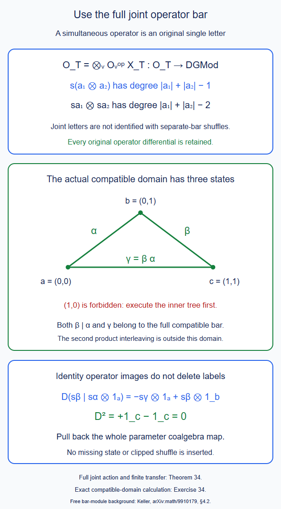
Theorem 34 and Exercise 34. A full joint parameter map is used before restriction. The fixed-profile construction does not by itself supply a missing map for varying native frontiers. Editable SVG.

35. Every comparison between the full transferred joint diagrams
Different original edge-contraction paths give different object retractions and, in (34.5), potentially different entire joint parameter diagrams. They must be compared with their full parameter components. Write \(D_\beta\) for a transferred differential and \(p'_\beta,i'_\beta,h'_\beta\) for its special contraction of the same original \((\mathcal M_X,D)\).
Theorem 35 (full joint comparisons and every internal face). For \(r\geq1\) define the full comodule map of degree \(1-r\) \[ M_{\beta_0\ldots\beta_r} =p'_{\beta_r}h'_{\beta_{r-1}}\cdots h'_{\beta_1}i'_{\beta_0}. \tag{35.1} \] For \(r=1\) there is no homotopy factor. Its differential between the indicated transferred objects is \[ \begin{aligned} &D_{\beta_r}M_{\beta_0\ldots\beta_r} -(-1)^{1-r}M_{\beta_0\ldots\beta_r}D_{\beta_0}\\ &\quad=\sum_{j=1}^{r-1}(-1)^{r-1-j} \bigl(M_{\beta_0\ldots\widehat{\beta_j}\ldots\beta_r} -M_{\beta_j\ldots\beta_r}M_{\beta_0\ldots\beta_j}\bigr). \end{aligned} \tag{35.2} \] Consequently \(M_{\gamma\beta}\) and \(M_{\beta\gamma}\) are actual homotopy inverses, with specified full higher coherences. An adjacent repeated retraction label gives the identity when \(r=1\), and zero when \(r>1\). All maps are finite on each word and commute with the whole parameter pullback (34.7).
Proof. The chain equations of Theorem 34 prove (35.2) at \(r=1\). For a longer product differentiate its \(j\)-th homotopy. The number of degree-minus-one factors to its left is \(r-1-j\). Its differential is \(1-i'_{\beta_j}p'_{\beta_j}\). The identity term deletes that homotopy and gives the first term in the indicated summand. The other term breaks the product into precisely the two displayed composites, retaining their source and target types. These exhaust the derivative by the Hom Leibniz rule, proving (35.2).
For \((\beta_0,\beta_1,\beta_2)=(\beta,\gamma,\beta)\) the first term is \(p'_\beta i'_\beta=1\). Thus the full homotopy \(p'_\beta h'_\gamma i'_\beta\) has differential \(1-M_{\gamma\beta}M_{\beta\gamma}\), with the notation ordered by its source and target as in (35.1). Exchanging the labels gives the other inverse homotopy. A repeated endpoint uses \(h'i'=0\) or \(p'h'=0\); a repeated interior label uses \((h')^2=0\). The unreduced first repeat is \(p'i'=1\). All compositions are full colinear maps, and every factor has a finite length-decreasing formula. Cotensor pullback preserves their products, differentials and identities, proving the final assertions. \(\square\)
In the graph application the object sections from all paths are the same \(I_T\). Their full transferred sections \(i'_\beta\) can still have positive parameter components. In particular, (35.1) may have a nonzero higher core even when every object comparison is the identity. These auxiliary transferred diagrams retain their entire comparison with the original strict graph action. Identifying them with the prescribed native graft diagram on changing profiles still requires its actual full comparison; that identification is not inferred from a common object section.
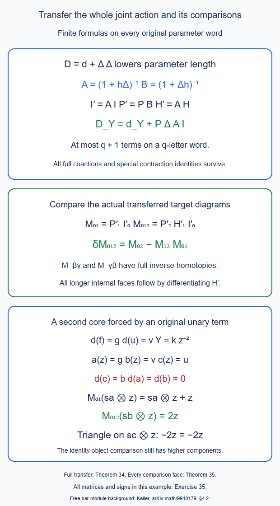
Theorems 34–35 and Exercise 35. The example has an identity object comparison, a nonzero positive comparison core, and a necessary nonzero second core. Editable SVG.

36. A faithful common category for all the original frontier types
Work first in one specified native parameter corner. Let \(A_s\) be its actual dg frontier categories, with their original state labels \(s\); two states of the same arity may still have different models and retain different labels. Form \(A_\Sigma\) by taking the disjoint union of all their original objects, keeping their old mappings within each component, putting zero mappings between different components, and adjoining one new literal zero object \(\mathbf0\). All mappings to or from this new object are zero; its identity is the zero map. No original object is identified with it, including any old zero object or any contractible object with nonzero identity.
For a normalized uncurved unital functor \(F:A_s\to A_t\) define its zero extension by \[ \widetilde F|_{A_s}=F,\qquad \widetilde F(x)=\mathbf0\quad(x\text{ in another component}). \tag{36.1} \] Its Taylor maps on the original component are the original maps; on every other nonzero input word they are zero. Its zero-object value is \(\mathbf0\). A full cochain is extended by the same rule. This is extension on unrelated added components, not a restriction of the original frontier inputs.
Theorem 36 (faithful typed operators and exact graph recovery). Zero extension identifies \(\operatorname{Fun}_\infty(A_s,A_t)\) with the corresponding corner of \[ \mathcal O=\operatorname{Fun}_\infty(A_\Sigma,A_\Sigma). \tag{36.2} \] It preserves the entire dg Hom complex, its differential, composition, normalization and every higher parameter cochain. The corner consists of functors supported on input component \(s\), with output in component \(t\). Different source or target corners have zero cochain spaces between them; original corner labels are nevertheless retained, also for zero functors.
For composable types, \[ \widetilde G\,\widetilde F=\widetilde{GF}. \tag{36.3} \] The full horizontal coalgebra map of C69 commutes with these zero extensions, including all marked and mixed components. The extended identity of \(A_s\) is the local projection \(E_s\), not \(1_{A_\Sigma}\); it is a strict unit on its typed corner. Operators with mismatched intermediate components have the zero functor as their composite.
There is also an exact recovery statement for the full graph representation. For functors \(F,G:A_s\to A_t\), let \(\operatorname{Hom}^{\rm norm}_{\rm graph} (\mathcal K_G,\mathcal K_F)\) consist of all homogeneous right \(B_{\rm full}A_s\)-comodule maps that are graded-linear for the strict output action and whose positive coefficient cores are normalized at original source identities. Then Theorem 9's map is an isomorphism of complexes \[ \begin{gathered} \operatorname{Nat}(F,G) \ \cong\ \operatorname{Hom}^{\rm norm}_{\rm graph} (\mathcal K_G,\mathcal K_F),\\ \theta\longmapsto\mathcal T_\theta . \end{gathered} \tag{36.4} \] Its inverse evaluates the full map on \(1_{Gx}\otimes c\) and takes the empty remaining input-bar coefficient. Thus this representation loses no full cochain. Together with the graded opposite composition sign of Theorem 9 it is fully faithful. The same assertions hold in the zero-extended typed corners.
Proof. A nonzero positive mapping word of \(A_\Sigma\) lies wholly in one component. A word using a mapping to or from \(\mathbf0\), or between distinct components, is zero. The functor equations of (36.1) on its input component are therefore exactly the original functor equations. On every other component all their terms are zero. The source identity there maps to \(1_{\mathbf0}=0\), so strict unitality holds. The empty word still maps to the coaugmentation at the object \(\mathbf0\); it is not declared a zero coaugmentation. This proves that the extension is a full uncurved unital functor, without an augmentation of any original Hom algebra.
For two functors of the same corner, a cochain evaluated outside component \(s\) has output in \(A_\Sigma(\mathbf0,\mathbf0)=0\). Every remaining input lies in \(A_s\), with its original target mapping space in \(A_t\). Restriction and zero extension are consequently literal inverse linear maps on the full cochains, including length zero and every positive input length. The source bar differential and every convolution cut stay in that same component, so the twisted differential and product are unchanged. If the input corners differ, at every object at least one output object is \(\mathbf0\). If only the output corners differ, their output Hom space is zero. This proves all mapping assertions. Tagging zero functors does not create a nonzero mapping space: their identity cochains too are zero.
In a composable pair, the complete consecutive-piece formula for \(BG\,BF\) uses the original two functors on \(A_s\); outside it all positive terms vanish. Their object maps agree too. This proves (36.3). For full horizontal composition use C.69.1–2's complete marked assignments. On the supported input component each assignment, each suspended mark and each Koszul permutation is the original one. Outside it, any positive assignment has a zero output factor. Taking its one-output core and reconstructing all output words therefore gives exactly the zero extension of the original horizontal map. This proves the entire coalgebra equality, not merely its object or one-mark component.
An identity on the supported component has only its linear Taylor value, so \(E_t\widetilde F=\widetilde F =\widetilde F E_s\) by the same full formula. If the intermediate types disagree, the second operator receives only \(\mathbf0\), so its composite is the zero functor. Actual native strings use their original matching types; this observation does not remove a nonidentity parameter label.
For (36.4), let \(\Phi\) be a graph map of degree \(r\). Right cofreedom says that it is reconstructed uniquely from its empty-tail core \(\phi\): \[ \Phi(k\otimes c) =\sum_{c=uv}\phi(k,u)\otimes v . \tag{36.5} \] Put \[ \theta(c)= \operatorname{core}\Phi(1_{Gx}\otimes c), \tag{36.6} \] where \(x\) is the target endpoint of the original input word; its other endpoint gives the \(F\)-source. For an arbitrary homogeneous \(k:Gx\to y\), graded output linearity gives \[ \phi(k,c)=(-1)^{r|k|}k\theta(c). \tag{36.7} \] Indeed \(k\otimes c\) is the output action of \(k\) on \(1_{Gx}\otimes c\). Substitution in (36.5) is exactly \(\mathcal T_\theta\), with every source cut. Conversely (36.6) applied to that formula returns \(\theta(c)\) by the ordinary output identity. This proves both inverse equations in every degree.
The Hom differential and composition agree by the two exact identities of Theorem 9. Normalization concerns the positive core just recovered, not unconsumed identity letters in a remaining tail. Thus it too is equivalent on both sides. The original output mappings in (36.6) are unchanged by zero extension, proving the final assertion. Nothing in this proof asserts acyclicity of a whole Nat complex or recovers it from the underlying total complex of an unreduced bar. \(\square\)
The coefficient category at frontier arity zero is one of the actual \(A_s\). Its nonzero objects are retained. The native unit functor selects \(IC_0\), not \(\mathbf0\); its full output Hom complex is unchanged. Literal zero objects, the arity-zero input category and the tensor unit are three different roles here.
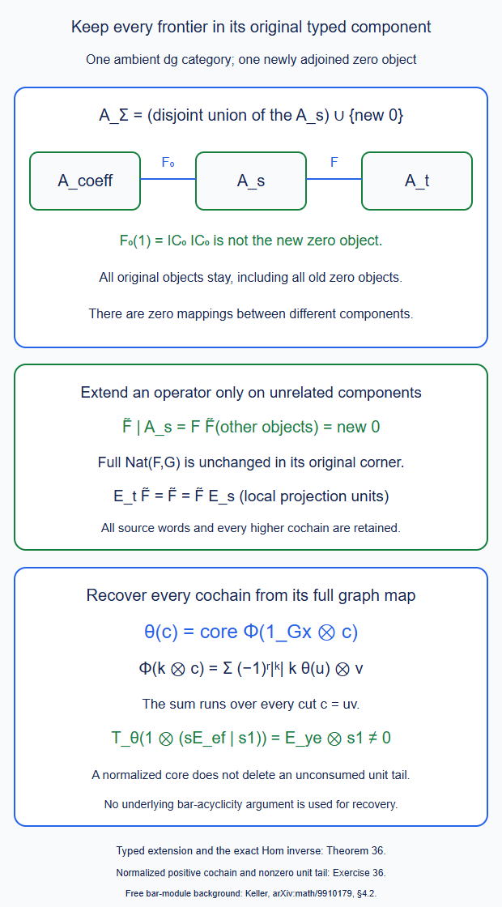
Theorem 36 and Exercise 36. The ambient category and its local projections keep the original types. No original nonminimal mapping or positive-degree unit-object output is replaced. Editable SVG.

37. The actual source-end pullback and original native string data
Let \(H:A_r\to A_s\) be an actual full normalized functor, and put \(C_j=B_{\rm full}A_j\). Give \(C_r\) its left \(C_s\)-coaction \((BH\otimes1)\Delta\). Source-changing the full graph is an ordinary colored cotensor, not an evaluation on a restricted list of previously generated frontier objects.
Theorem 37 (full frontier pullback and typed native whiskering). There is a canonical full graph isomorphism \[ \mathcal K_F\square_{C_s}C_r \ \cong\ \mathcal K_{FH} \quad(F:A_s\to A_t). \tag{37.1} \] The coordinate embedding of the right-hand side into the cotensor is \[ k\otimes c\longmapsto \sum_{c=uv} k\otimes BH(u)\otimes v . \tag{37.2} \] It keeps all source words of \(A_r\), their endpoints, and the full coefficient \(A_t(FH(x),y)\). For every homogeneous full cochain, \[ \begin{gathered} \operatorname{pre}_H(\theta)=\theta BH,\\ \delta(\theta BH)=(\delta\theta)BH,\\ (\eta BH)\star(\theta BH)=(\eta\star\theta)BH . \end{gathered} \tag{37.3} \] Under (37.1) these are the pullbacks of the entire graph maps \(\mathcal T_\theta\). Consecutive source changes associate using the actual full composite, and retain every original comparison with that composite.
Apply Theorem 36 to all actual frontier categories in an original finite C47/C64 parameter corner. Every original partial-forest operator and every complete fixed-outer-type string, partition or compatible joint parameter diagram now has an actual typed presentation in the one category \(\mathcal O\) of (36.2). This presentation retains its original full native comparison and all its higher components. Source-end changes use (37.3). Target-end changes use the whole C69 horizontal coalgebra map, including the nonlinear target's higher Taylor values. All their original full whiskering equations survive. A compatible joint parameter diagram uses its full index bar; no rectangle or clipped shuffle is inserted.
Proof. The right graph comodule is cofree, with its coefficient evaluated at the endpoint of its input word. Its cotensor equalizer with \(C_r\) is consequently the cofree equalizer of (34.11), with the indicated coefficient endpoints. Coassociativity and the coalgebra equation for \(BH\) put (37.2) in that equalizer. The middle counit returns \(k\otimes c\), and cofreedom proves that this is its inverse.
The source bar differential is carried by \(b_sBH=BHb_r\). In a prefix action the cofree cut gives exactly \[ \tau_{FH}(c)=\tau_F BH(c). \tag{37.4} \] Thus the differential induced through (37.2) is the entire differential of \(\mathcal K_{FH}\). It includes the unary differential of each original source letter. The strict output action and all remaining source coactions are unchanged. This proves (37.1) as a full graph isomorphism.
Since \(BH\) has degree zero and preserves all cuts, precomposition commutes with the untwisted Hom differential and with convolution, with the same sign \((-1)^{|\theta||u|}\) on each convolution cut. Together with (37.4) this proves all equations in (37.3). Cofree extension of their cores gives the entire graph-map equality. For another \(L:A_q\to A_r\), \(B(HL)=BH\,BL\). Substitution in (37.2) gives the same three-piece cut in either order. This proves associativity of consecutive source changes. A supplied full comparison between a given composite and another operator is carried by (36.4), so its entire homotopy is retained.
Here is the native application with its actual types. For a joint arrow \(f=(K,J'):(t,J)\to(t/K,J')\) use the original operator \[ F_f=F^t_{\pi_K^{-1}(J'),J}, \tag{37.5} \] followed by its original ordered frontier identification. Its source and target are the actual arbitrary frontier categories of C.47.2. Theorem 36 extends this exact \(F_f\), including its higher Taylor maps, to \(A_\Sigma\). For a longer original string the successive operators have matching intermediate components. Every consecutive block composite and its original contraction comparison therefore lie in their single outer corner of \(\mathcal O\). Extend each of the supplied full native cochains by zero on the unrelated components.
More explicitly, if the original whole parameter map is \[ \mathcal S:B(kP)\longrightarrow B_{\rm full}\operatorname{Fun}_\infty(A_s,A_t), \tag{37.6} \] its new map is \(B\mathsf Z_{st}\,\mathcal S\), where \(\mathsf Z_{st}\) is the dg zero-extension functor of Theorem 36. This is the actual composition of the supplied map with a specified dg functor, not a new lift from object or edge classes. Its chain and coalgebra equations and every specified face comparison follow by composition. This applies also when \(P\) is an original full compatible joint index rather than a product of separate parameter indices. The original arrows, simultaneous composites, positive identity-valued parameters and joining seam labels remain in \(P\).
The original end-face whiskerings use their actual partial-forest functors on arbitrary source frontier words. On the source end their full cochain formula is precisely (37.3), so the zero-extended formula agrees on every such word. For a target change \(W:A_t\to A_u\), its full operator map is \[ M_{A_s,A_t,A_u}(\varnothing_W\otimes-), \tag{37.7} \] where the empty outer operator word is based at \(W\). It may have higher operator cores. By (36.3) and its complete marked extension, this map becomes the same C69 map inside \(\mathcal O\). Evaluating a source and target change together on \(c\in C_r\) gives, in both orders, the nested full expression \[ \operatorname{ev}_{A_t,A_u} \bigl(\varnothing_W\otimes \operatorname{ev}_{A_s,A_t}(v\otimes BH(c))\bigr). \tag{37.8} \] C.69.7 proves equality of the entire coalgebra maps, including every marked partition. Allowing full parameter words for \(H,W\) uses the same three-level evaluation, whose associativity is C.69.2.1. Its output length is bounded by the original input length plus the three original operator lengths.
Thus all original source-end, target-end and mixed whiskering components, with their actual comparisons, are retained in this typed family. No target change is replaced by its first Taylor map. The locally forward finite C64 indices put each original finite calculation in one such parameter corner. Restricting the same zero extensions to a smaller set of state components keeps all its old values. For a change of enhanced model retain its actual full operator and (37.7), rather than asserting an equality between unrelated models. This completes the claimed native typed presentation. \(\square\)
The category \(\mathcal O\) here unifies the original typed operator family. It is not automatically the fixed-tree tensor category \(\mathcal O_T\) of Theorem 34. Identifying the native family, its original \(f_T\)-to-\(F_N\) comparisons and all its external/graft product faces with the transferred tree graph still requires the whole marked tree construction. Faithfulness in (36.4) permits checking that identification on every coefficient core; it does not establish an unperformed comparison.
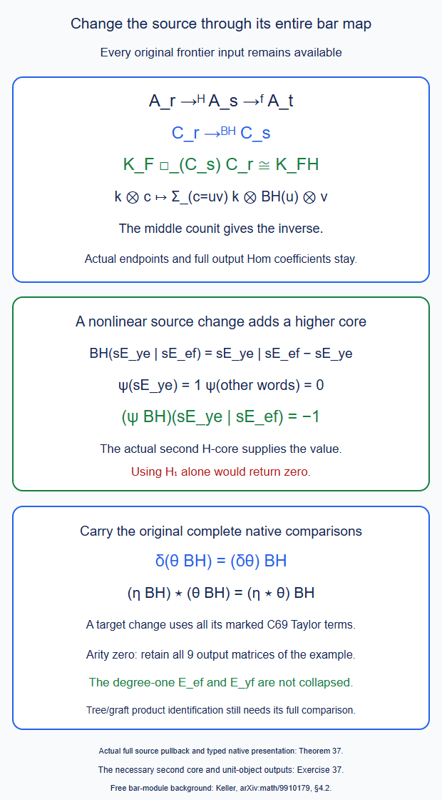
Theorem 37 and Exercise 37. The input map is the entire \(BH\). Nonlinear source and target changes are carried with their complete original maps. Editable SVG.

38. Keep both original endpoint cones
Let \(P\) be an original directed parameter category with initial object \(a\) and terminal object \(b\), and let \(\mathcal S:P\to\mathcal D\) be its entire normalized uncurved parameter functor. The target \(\mathcal D\) is a dg category; in the native application it is a full typed operator category of Theorems 36–37, so its Hom differential still includes all mapping inputs. Each full transformation has one actual outer type, after its original source/target whiskerings. No transformation between mismatched typed corners is supplied or inferred by this construction. Parallel original arrows and simultaneous joint arrows are retained. Write \(D_x=\mathcal S(x)\). For a chronological string \[ \sigma=(x_0\xrightarrow{u_1}x_1\longrightarrow\cdots \xrightarrow{u_q}x_q) \tag{38.1} \] use \(s[\sigma]=s_q(u_q,\ldots,u_1)\) when \(q>0\). Appending an initial or terminal object means appending its actual unique arrow. This does not replace any interior original arrow by its endpoint composite. Let \(C_a,C_b\) be the strict constant parameter diagrams at \(D_a,D_b\).
Theorem 38 (two-sided native cones and both-end base change). The following are full cochains, with their displayed total degrees: \[ \begin{aligned} \rho_q(\sigma)&=(-1)^q s[a,\sigma], &&\rho:C_a\Rightarrow\mathcal S,\quad |\rho|=0,\\ \lambda_q(\sigma)&=s[\sigma,b], &&\lambda:\mathcal S\Rightarrow C_b,\quad|\lambda|=0,\\ J_q(\sigma)&=(-1)^q s[a,\sigma,b], &&J:C_a\Rightarrow C_b,\quad |J|=-1. \end{aligned} \tag{38.2} \] They satisfy \[ \delta\rho=\delta\lambda=0,\qquad A=\lambda\star\rho,\qquad \delta J=f-A,\quad f=s[a,b]. \tag{38.3} \] Here \(f\) is the constant cochain with object value the actual native arrow map \(D_a\to D_b\), and zero positive parameter cores. In particular \(A_0(x)=s[x,b]s[a,x]\). The whole \(A\), including every positive core, is retained with its original homotopy to \(f\).
For an actual parameter functor \(g:Q\to P\), suppose \(Q\) has initial object \(a'\) and terminal object \(b'\). Put \(a_0=g(a')\), \(b_0=g(b')\), and \[ L=s[a,a_0],\qquad R=s[b_0,b]. \tag{38.4} \] Use \(\rho',\lambda',A'\) for the intrinsic cones based at \(a_0,b_0\) on the pulled-back diagram. The original cochains \[ H^L_q(\sigma)=s[a,a_0,g\sigma],\qquad K^R_q(\sigma)=s[g\sigma,b_0,b] \tag{38.5} \] have degree minus one and obey \[ \begin{gathered} \delta H^L=g^*\rho-\rho'\star L,\qquad \delta K^R=g^*\lambda-R\star\lambda',\\ E=K^R\star g^*\rho+R\star\lambda'\star H^L,\\ \delta E=g^*A-R\star A'\star L . \end{gathered} \tag{38.6} \] Both endpoint maps are the original maps. They are not forced to be identities when a graft or a restriction moves an initial or terminal image. All equations hold on the entire original parameter category and its actual full compatible subcategories, without a product-rectangle assumption.
There is a useful chain form of these identities. Give the normalized nerve chains \(N(P)\) cohomological degree minus their simplex dimension, and let \(\partial\sigma=\sum_{j=0}^q(-1)^j d_j\sigma\). The interior face composes its two original arrows; the outer faces remove their endpoints. Define \[ e_q=(-1)^{q(q+1)/2},\qquad \mathsf A(\sigma)=e_q A_q(\sigma),\qquad \mathsf J(\sigma)=e_q J_q(\sigma). \tag{38.7} \] With \(\epsilon\) the chain augmentation, \[ \delta_{\mathcal D}\mathsf A=\mathsf A\partial,\qquad \delta_{\mathcal D}\mathsf J+\mathsf J\partial =f\epsilon-\mathsf A . \tag{38.8} \] Multiplying the \(q\)-core of \(E\) by the same \(e_q\) gives the chain homotopy between \(g^*\mathsf A\) and \(R\mathsf A'L\).
Proof. The initial cone is Theorem 22. The terminal formula follows by the same extended-word calculation at the other end; its absence of an extra sign must be checked in the chosen convention. Apply (20.3) to \(s[\sigma,b]\). Its internal mergers cancel the source-bar terms of \(\delta\lambda\). Its proper product cuts cancel the right \(\mathcal S\)-action. The final merger composes the unique terminal arrow with the preceding arrow to the same terminal arrow from the previous object. It cancels the left constant action. The coefficients are the target-to-source bar coefficients \((-1)^j\) of (20.3); thus no sign depending on \(q\) is added to \(\lambda_q\).
Apply the same calculation to the word with both endpoint arrows in \(J_q\). Interior mergers cancel the original parameter bar differential, and the two endpoint mergers cancel the two constant action terms. The remaining product cuts separate that word into a terminal piece and an initial piece. Their full sum is \(-\lambda\star\rho\). At \(q=0\), the merger of its two endpoint arrows is the unique original arrow \(a\to b\) and gives \(f\). At \(q>0\) there is no such two-letter merger. Thus the remaining constant cochain is exactly the one specified in (38.3). For example the object equation is \[ d\,s_2(b_x,a_x)=s_1(b_xa_x)-s_1(b_x)s_1(a_x), \tag{38.9} \] where \(a_x:a\to x\) and \(b_x:x\to b\) are the actual endpoint arrows. This also fixes the minus sign of the full product. Every cut in this argument is a cut in the full dg target, with all its source and operator components, not a product of bare object values.
For (38.5) the initial-base calculation is (22.2)–(22.3). At the other end, extend the word by the two actual terminal arrows. The same internal cancellations leave only their merger and the product separating \(R\). They give respectively \(g^*\lambda\) and \(-R\star\lambda'\). This proves both first equations of (38.6). The dg Leibniz rule now gives \[ \begin{aligned} \delta E &=(g^*\lambda-R\star\lambda')\star g^*\rho\\ &\quad+R\star\lambda'\star (g^*\rho-\rho'\star L)\\ &=g^*A-R\star A'\star L . \end{aligned} \tag{38.10} \] The middle terms cancel as whole cochains. In the second summand of \(E\) the degree-minus-one cochain \(H^L\) uses the actual convolution cut sign; it cannot be replaced by an unsigned product of displayed Taylor values.
Here is a direct verification of the conversion to (38.8). For a cochain \(\phi:C_a\to C_b\) of total degree \(r\), the full constant-end differential on a chronological \(q\)-string is \[ (\delta\phi)_q =d\phi_q+(-1)^{r+q-1} \sum_{j=0}^q(-1)^j\phi_{q-1}(d_j\sigma). \tag{38.11} \] For \(q=0\) the sum is absent. Interior coefficients are \(-(-1)^r(-1)^{q-j}\), the original source-bar coefficients. The first and last coefficients are exactly the two constant convolution actions. They all equal the coefficient on the right. Since \(e_q(-1)^q=e_{q-1}\), multiplying (38.11) by \(e_q\) gives the ordinary chain Hom differential \(d\widehat\phi-(-1)^r\widehat\phi\partial\). Apply this first to \(A\), then to \(J\) and \(E\). This proves all chain identities, including their source and target unary differentials.
Only formal parameter identity arrows make a positive component normalized to zero. A nonidentity arrow with identity-valued image is still an original letter in every extended word above. Pullback uses the actual arrows of \(g\); it neither inserts an incompatible state nor clips an unsafe interleaving. At an initial or terminal image that contains joining seams, \(L\) or \(R\) records those very maps. Their whole components are exactly what (38.6) retains. All formulas use finite words and finite consecutive cuts; finite corners therefore suffice on the locally forward finite native indices. \(\square\)
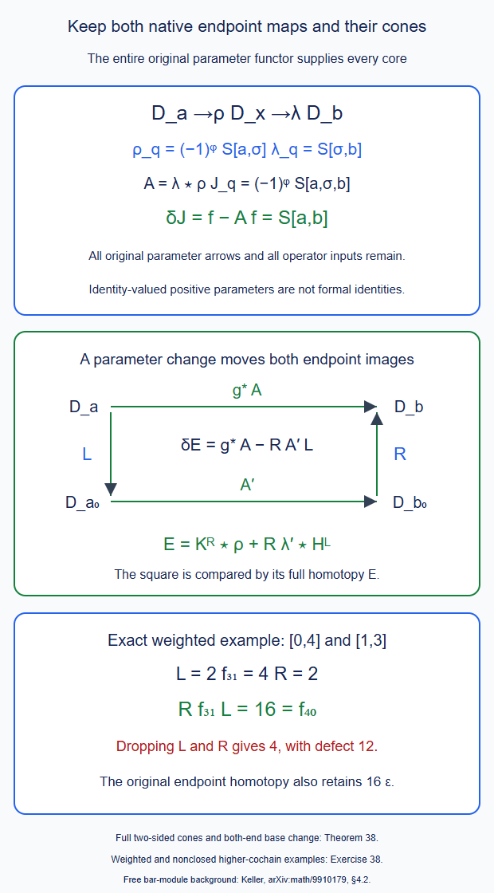
Theorem 38 and Exercise 38. Native endpoint maps may be nonidentity even when they are equivalences. Both remain in the comparison, with its complete parameter cores. Editable SVG.

39. Convolve the native family with the tree projections
Keep the entire end-fixed native chain family \(\mathsf A:N(P)\to\operatorname{Hom}(Y,W)\) of Theorem 38, where \(Y=D_a\), \(W=D_b\). Use the dg category with these indicated map directions; for represented operator maps this includes the graded opposite convention of Theorem 9. Let \(I:Y\to Z\) be a common section with the full special contractions of Theorem 29; in the tree application these are the actual contractions of Theorem 33. Choose an auxiliary contraction label \(\beta_x\) at each original parameter object \(x\), and a fixed base label \(*\). No assumption identifies original arrows when their auxiliary labels agree. Put \[ \mathsf P(\sigma)=T_{\beta_{x_0}\ldots\beta_{x_q}},\qquad \mathsf K(\sigma)=T_{*,\beta_{x_0}\ldots\beta_{x_q}}. \tag{39.1} \] These use the complete \(PH\cdots H\) maps of Theorem 29, not new choices of primitives.
Theorem 39 (full native/projection convolution and retained comparison). The exact family \[ \mathsf N(\sigma)= \sum_{j=0}^q(-1)^{j(q-j)} \mathsf A(\sigma_{j,\ldots,q}) \mathsf P(\sigma_{0,\ldots,j}) \tag{39.2} \] is a degree-zero chain map \(N(P)\to\operatorname{Hom}(Z,W)\). It has the explicit comparison to the original endpoint map and chosen projection \[ \begin{aligned} \mathsf R(\sigma) &=f\,\mathsf K(\sigma)\\ &\quad-\sum_{j=0}^q(-1)^{j(q-j)} \mathsf J(\sigma_{j,\ldots,q}) \mathsf P(\sigma_{0,\ldots,j}),\\ \delta\mathsf R+\mathsf R\partial &=\mathsf N-fP_*\epsilon . \end{aligned} \tag{39.3} \] Every full parameter and outside graph coaction is retained. The sum includes all mixed cuts between positive native parameter components and positive projection comparisons. They need not vanish.
For a parameter change of Theorem 38, convolving its full \(\widehat E\) with the pulled-back projection family gives the homotopy \[ \delta(\widehat E\diamond\mathsf P) +(\widehat E\diamond\mathsf P)\partial =(g^*\mathsf A)\diamond\mathsf P -(R\mathsf A'L)\diamond\mathsf P . \tag{39.4} \] Here \(\diamond\) is the same signed cut composition as in (39.2). In particular the actual endpoint factors \(L,R\) survive the full graph comparison too.
Proof. Theorem 29 gives \[ \delta\mathsf P=\mathsf P\partial,\qquad \delta\mathsf K+\mathsf K\partial =\mathsf P-P_*\epsilon . \tag{39.5} \] The latter identity is obtained by applying (29.6) to the tuple with \(*\) inserted first. Its first face is \(\mathsf P\); the other faces are minus the alternating faces of \(\mathsf K\). At a vertex it reads \(\delta T_{*,\beta_x}=P_{\beta_x}-P_*\). Thus it also covers dimension zero.
For all signs, the ordinary Alexander--Whitney cut first lists the prefix and then the suffix. With a \(q\)-simplex in degree \(-q\), exchange these two factors to obtain \[ \Delta^{\rm rev}\sigma =\sum_{j=0}^q(-1)^{j(q-j)} \sigma_{j,\ldots,q}\otimes\sigma_{0,\ldots,j}. \tag{39.6} \] This is a chain map. Directly, a deleted vertex away from the cut appears on the corresponding side with its same face sign and tensor prefix sign. At the cut the two occurrences with neighboring cuts have opposite signs and cancel. This accounts for every term of the two differentials, including endpoint faces. Triple cuts give coassociativity: their two orders reverse the same three homogeneous blocks, with the same Koszul sign. The chain augmentation is its counit.
For homogeneous chain cochains \(B,C\), their cut composition is the coproduct (39.6), followed by \(B\otimes C\) and ordinary dg composition. Its tensor evaluation sign includes \(|C|\) times the degree of the suffix. The dg Leibniz and chain equations just proved therefore give \[ d_{\rm Hom}(B\diamond C) =(d_{\rm Hom}B)\diamond C +(-1)^{|B|}B\diamond d_{\rm Hom}C . \tag{39.7} \] Both \(\mathsf A,\mathsf P\) have total degree zero. Their composition is exactly (39.2), so (38.8), (39.5) and (39.7) prove its full chain equation.
The homotopy \(\mathsf J\) has total degree minus one and \(d_{\rm Hom}\mathsf J=f\epsilon-\mathsf A\). Consequently \[ \begin{aligned} d_{\rm Hom}(f\mathsf K-\mathsf J\diamond\mathsf P) &=f\mathsf P-fP_*\epsilon -(f\mathsf P-\mathsf A\diamond\mathsf P)\\ &=\mathsf N-fP_*\epsilon . \end{aligned} \tag{39.8} \] This proves (39.3) with its complete homotopy. Apply the same Leibniz calculation to \(\widehat E\diamond\mathsf P\) to obtain (39.4). All maps involved are the full typed graph maps or full operator cochains already specified; their compositions retain the original outside coactions. If the targets are operator categories, every multiplication above is their full convolution multiplication, with its original mapping-input cuts.
A formal repeated parameter makes \(\mathsf A,\mathsf J\) normalized; its adjacent auxiliary repeat also normalizes \(\mathsf P,\mathsf K\). In each cut of a degenerate simplex the repeated arrow lies on one of these two factors, so the resulting positive families normalize. But an original proper arrow may have \(\beta_x=\beta_y\) while its native \(\mathsf A(x,y)\) is nonzero. Its term \(\mathsf A(x,y)P_{\beta_x}\) in (39.2) remains. Hence auxiliary repeat normalization cannot delete that original parameter. \(\square\)
There is an exact restriction formula on the full common section \(I\) specified at the start of this section: \[ \mathsf N(\sigma)I=\mathsf A(\sigma),\qquad \mathsf R(\sigma)I=-\mathsf J(\sigma). \tag{39.9} \] Indeed every positive-degree \(\mathsf P\)-component vanishes on \(I\) by (29.5), while each vertex component satisfies \(P_{\beta_x}I=1\). Only the cut \(j=0\) therefore survives in (39.2), with sign \(+1\). The inserted-base family \(\mathsf K\) is positive at every parameter dimension and also vanishes on \(I\). The same calculation in (39.3) leaves exactly \(-\mathsf J(\sigma)\). These are identities on every original parameter word, not only at parameter vertices.
Consequently, let \(\mathsf U\) be another closed whole family on this same graph and let an entire degree-\(-1\) section comparison satisfy \[ d_{\rm Hom}\mathsf T=\mathsf U I-f\epsilon . \tag{39.10} \] The original endpoint cone, without any new choice, gives \[ d_{\rm Hom}(\mathsf T+\mathsf J) =(\mathsf U-\mathsf N)I . \tag{39.11} \] With the fixed base contraction \(P_*,I,H_*\), Theorem 47 then gives the prescribed full comparison \[ \begin{aligned} \mathcal J&=(\mathsf U-\mathsf N)H_* +(\mathsf T+\mathsf J)P_*,\\ d_{\rm Hom}\mathcal J&=\mathsf U-\mathsf N,\qquad \mathcal JI=\mathsf T+\mathsf J . \end{aligned} \tag{39.12} \] Here composition means composition of whole parameter cochains, with their complete cuts. Equation (39.11) uses the original identity \(d_{\rm Hom}\mathsf J=f\epsilon-\mathsf A\) from Theorem 38 and (39.9). Thus (39.10), when supplied, compares to the original endpoint family; it does not require selecting a second calibrated family.
This theorem composes the original full end-fixed native family with the chosen tree projection paths, retaining a full comparison to their original endpoint map. It does not identify every alternating native graft and edge-contraction execution with that family. Those interleaved paths and the external/graft product faces still require their actual marked identification on the complete C64 domain before primitive tree extraction.
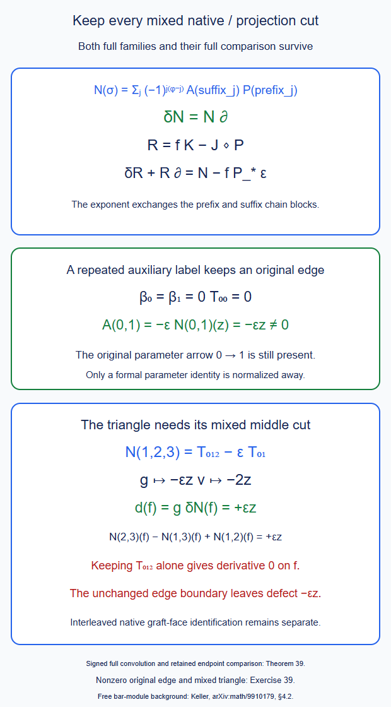
Theorem 39 and Exercise 39. The two source families, their mixed cuts and the original endpoint comparison are all part of the result. Editable SVG.

40. The prescribed one-edge graft with all parameter cores
Fix an actual normalized one-edge graph contraction \[ X_F\ \underset{S_F}{\overset{Q_F}{\rightleftarrows}}\ Y_F,\qquad \delta H_F=1-S_FQ_F \tag{40.1} \] from Theorems 24 and 27. Here \(X_F\) is the whole two-sided graph, \(Y_F=\mathcal K_{Fg}\), and \(g\) is the genuine common-input inner map. The inner map may already be the entire marked evaluation of Theorem 25. All original input words, endpoint coefficients and outside coactions are retained. Let a parameter arrow of degree \(r\) be a full outer cochain \(\theta:F\to F'\). Its actual graph actions \(X_\theta:X_{F'}\to X_F\) and \(Y_\theta:Y_{F'}\to Y_F\) are (26.2), with the graded opposite convention. In particular \[ X_\theta S_{F'}=S_FY_\theta \tag{40.2} \] holds for every homogeneous cochain, including a nonclosed one.
Theorem 40 (the prescribed native edge map and its mixed cores). The full defect of object projection naturality and its specified homotopy are \[ \begin{aligned} L_\theta&=Q_FX_\theta-Y_\theta Q_{F'},\\ K_\theta&=(-1)^r Q_FX_\theta H_{F'} . \end{aligned} \tag{40.3} \] They obey, as entire graph maps, \[ L_\theta S_{F'}=K_\theta S_{F'}=0,\qquad \delta K_\theta+K_{\delta\theta}=L_\theta . \tag{40.4} \] Thus this is a homotopy for the actual prescribed projection, not a replacement of it by a strictly natural object map. For a closed degree-zero \(\theta\), it reads \(\delta K_\theta=L_\theta\).
Let \(J\) be the actual dg parameter category of these operators, with its typed endpoints retained. Use the strict graph diagrams \(X,Y\) and their strictly natural section \(S\). The full projection \(\widehat Q\) of Theorem 26 has an explicit coefficient core on every parameter word in target-to-source order: \[ \begin{gathered} \mathbf a=sa_r|\cdots|sa_1,\qquad q_r(\mathbf a;x) =(-1)^{r+\sum_{j=1}^r|a_j|} Q_{\rm target}\, X_{a_r}H\,X_{a_{r-1}}H\cdots X_{a_1}H(x),\\ q_0(x)=Q_{\rm source}(x). \end{gathered} \tag{40.5} \] Each \(H\) is at the actual intermediate object. All \(X_{a_j}\) are the full graph actions, including every original mapping input. The full cofree map is obtained by leaving every unconsumed prefix in front of these cores. The original nonclosed parameter letters and their unary differentials remain in its chain equation.
Suppose the native graft comparison \(\alpha:F_{\rm flat}\Rightarrow Fg\) is given on this whole parameter diagram with its original higher components. By Theorems 9, 25–27 and 37 it gives the full closed parameter-comodule comparison \[ \widehat\kappa:\mathcal C_J\otimes Y \longrightarrow\mathcal C_J\otimes W, \qquad W=\mathcal K_{F_{\rm flat}}, \quad\kappa_0=\mathcal T_\alpha . \tag{40.6} \] This assertion uses that supplied entire comparison; objectwise maps \(\alpha_0\) alone do not specify it. The actual full graft map is \[ \widehat G=\widehat\kappa\,\widehat Q,\qquad G_0=\mathcal T_\alpha Q_F . \tag{40.7} \] If \(\kappa_j\) denotes the empty-tail parameter core of \(\widehat\kappa\), its complete cores are \[ G_r(\mathbf a;x)= \sum_{j=0}^r \kappa_{r-j}(sa_r|\cdots|sa_{j+1}; q_j(sa_j|\cdots|sa_1;x)). \tag{40.8} \] There is no additional sign in this formula: \(\widehat Q\) and \(\widehat\kappa\) are maps of total degree zero. All tensor and suspended parameter signs are already in their cores. For example the second core is the whole sum \[ G_2=\kappa_0q_2+\kappa_1q_1+\kappa_2q_0 \tag{40.9} \] on its three respective consecutive cuts. The mixed term \(\kappa_1q_1\) need not vanish.
The map \(\widehat G\) is a full chain-comodule map with the prescribed native one-edge object value, and \[ \widehat G S=\widehat\kappa . \tag{40.10} \] When the original comparison includes its full inverse and homotopies, \(\widehat G\) is a homotopy equivalence with those data and the specified graph contraction retained. Its bare multimorphism value is exactly Proposition 10: \[ (k,l)\longmapsto k(F_n)_1(l)\alpha_0 \tag{40.11} \] in the indicated input slot, including nullary inputs and their full output Hom complexes. Full source changes and restrictions commute with these constructions by actual cotensor pullback. A different enhanced target model uses its whole marked comparison, as in Theorems 9 and 37.
Proof. The maps \(Q_F,Q_{F'}\) are closed, so Theorems 9 and 26 give \(\delta L_\theta=L_{\delta\theta}\). Equation (40.2) and \(Q_FS_F=Q_{F'}S_{F'}=1\) give \(L_\theta S_{F'}=0\). Moreover \(Q_{F'}H_{F'}=0\), hence \[ K_\theta=(-1)^rL_\theta H_{F'}. \tag{40.12} \] Differentiate this equation using the Hom Leibniz rule and \(\delta H_{F'}=1-S_{F'}Q_{F'}\). It gives \[ \delta K_\theta =(-1)^r L_{\delta\theta}H_{F'}+L_\theta . \tag{40.13} \] The omitted \(L_\theta S_{F'}Q_{F'}\) is zero. The first term cancels \(K_{\delta\theta}\), whose sign is \((-1)^{r+1}\). The side identity follows from \(H_{F'}S_{F'}=0\). This proves every equation in (40.4), including the nonclosed cochain case.
For the parameter cores use the actual finite series \(\widehat Q=Q_0(1+\Delta H_0)^{-1}\) of Theorem 26. Here \(H_0\) is the signed tensor extension of the object \(H\); the leading differential includes its full object and parameter unary terms. The perturbation includes the original parameter bar mergers and last-letter actions. On \(\mathbf a\otimes x\) the tensor homotopy contributes \((-1)^{|\mathbf a|}\). The action consuming the final letter \(sa_1\) contributes \(-(-1)^{|sa_r|\,+\cdots+|sa_2|}\). Their product is \((-1)^{|a_1|}\). The extra minus sign of the inverse-series term makes it \((-1)^{|a_1|+1}\). Repeating at every actual intermediate object gives exactly the exponent in (40.5).
No bar-merger term contributes an extra coefficient core to this expression. A merger leaves the object unchanged. If another homotopy follows it, its two adjacent object homotopies give \(H^2=0\); if the projection follows it, \(QH=0\). Thus all surviving terms that consume the whole parameter word use exactly its \(r\) original actions. This also explains why a nonclosed original letter is not replaced by a closed one: its unary term remains in the full chain differential, whose equation is Theorem 26. The same theorem proves the full coactions, special identities and \(\widehat QS=1\), with the original target diagram \(Y\) unchanged.
The native \(\widehat\kappa\) is obtained by applying the full contravariant graph map of Theorem 9 to the supplied comparison, with the actual C69 evaluation on every marked parameter and genuine C78 common input. The inner marked input is the entire input of Theorem 25; its auxiliary normalization is Theorem 27. Theorem 37 carries the original typed source and target whiskerings. These give (40.6) with all of its prescribed parameter cores. No new kernel primitive replaces those original cores.
The composite of the two degree-zero chain-comodule maps is closed and colinear. Deconcatenate the parameter word at the prefix left after \(\widehat Q\). Its consumed suffix gives \(q_j\); the remaining prefix is then consumed by \(\widehat\kappa\). These are exactly the \(r+1\) summands of (40.8). Cofreedom reconstructs the whole map from them. Thus neither a mixed cut nor a positive original comparison component has been omitted. Equation (40.10) follows from \(\widehat QS=1\).
If \(\widehat\ell\) is the original full inverse of \(\widehat\kappa\), an inverse for \(\widehat G\) is \(S\widehat\ell\). The two inverse equations use respectively the original \(\widehat\kappa\)-homotopies and the actual homotopy \(\delta\widehat H=1-S\widehat Q\). Composing these full maps gives the two specified inverse homotopies. This uses the supplied inverse data, not acyclicity of a whole transformation space.
Finally on empty middle and outside input words, \(Q_F(k;\varnothing;l)\) is \(k(F_n)_1(l)\), by Theorem 24. The empty-input core of \(\mathcal T_\alpha\) right-composes by \(\alpha_0\). This is (40.11) with the actual input slot and its original types. At a nullary child \(l\) is an arbitrary map out of the unit object, not a scalar input; the same formula applies. Every original source restriction is the cotensor pullback of Theorem 37, which preserves these compositions and identities. The full target-change statement is exactly its marked counterpart. \(\square\)
This proves the prescribed one-edge map and its whole compatible fixed-graft parameter comparison. It supplies explicit cores for comparing it with the end-fixed family of Theorem 39. Identification of arbitrary interleavings involving several native edges, and of all external/graft product faces, still requires the original full marked comparisons on their common domains. It is not inferred from (40.11).
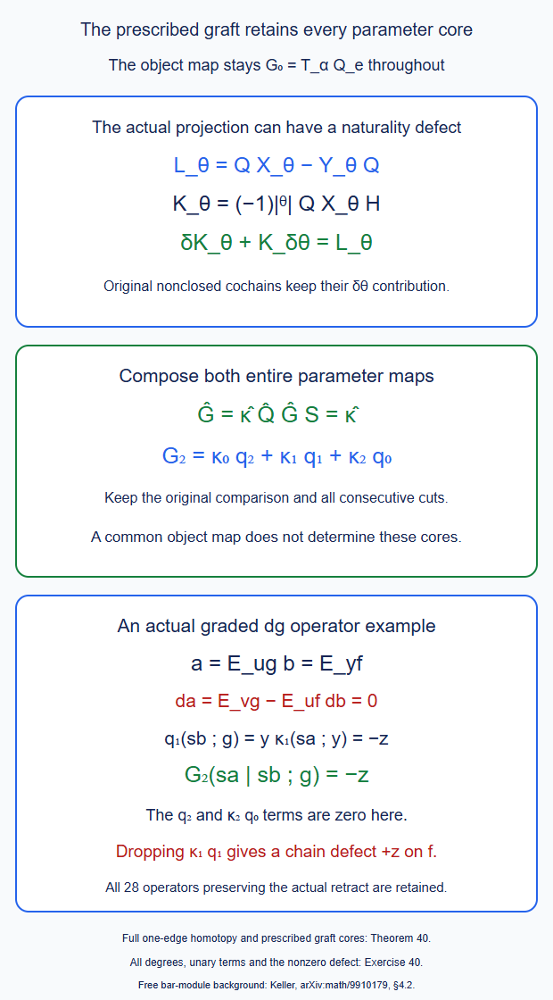
Theorem 40 and Exercise 40. The object projection and the original comparison are fixed throughout. The second-core mixed term can be forced by an original nonclosed operator differential. Editable SVG.

41. Two-stage native seams with their original section comparison
Use two actual special contractions of strict dg diagrams on the same genuine parameter category: \[ X\ \underset{i_1}{\overset{p_1}{\rightleftarrows}}\ B\ \underset{i_2}{\overset{p_2}{\rightleftarrows}}\ Y . \tag{41.1} \] Their homotopies are \(h_1,h_2\); their sections are strictly natural on all homogeneous parameter maps. The object composite contraction is \[ p=p_2p_1,\qquad i=i_1i_2,\qquad h=h_1+i_1h_2p_1 . \tag{41.2} \] Apply the full parameter-bar construction of Theorem 40 to these data. Hats below mean the entire maps on the full joint parameter bar, not their object values. All outside input/output structures are retained.
Theorem 41 (two-stage contraction and full native seam sliding). The actual staged maps agree with the maps constructed from (41.2): \[ \widehat p=\widehat p_2\widehat p_1,\qquad \widehat i=i_1i_2,\qquad \widehat h=\widehat h_1+i_1\widehat h_2\widehat p_1 . \tag{41.3} \] These are equalities of full parameter-comodule maps, including all graded operator cores and original nonclosed parameter differentials.
Keep another actual contraction \(B'\rightleftarrows Y'\) with maps \(\widehat p'_2,i'_2,\widehat h'_2\). Let the original entire closed native comparisons be \(\widehat\kappa_B:B\to B'\) and \(\widehat\kappa_Y:Y\to Y'\). The comparison of their sections may be a supplied full homotopy, rather than an equality: \[ \widehat\kappa_B i_2-i'_2\widehat\kappa_Y =\delta\widehat R . \tag{41.4} \] Here \(|\widehat R|=-1\), and its original parameter cores are part of the data. The actual interposed native seam and its moved version are \[ U=\widehat p'_2\widehat\kappa_B\widehat p_1, \qquad V=\widehat\kappa_Y\widehat p_2\widehat p_1 . \tag{41.5} \] They have the explicit full comparison \[ \begin{gathered} \widehat E= \bigl(\widehat p'_2\widehat\kappa_B\widehat h_2 +\widehat p'_2\widehat R\widehat p_2\bigr) \widehat p_1,\\ \delta\widehat E=U-V . \end{gathered} \tag{41.6} \] Thus the actual native map between the contractions is retained. A strictly natural section comparison is the case \(\widehat R=0\); it is not imposed on a supplied non-strict comparison. Even when the object values of \(U,V\) agree, either term of \(\widehat E\) can have nonzero coefficient or positive parameter cores. Each product in (41.5)–(41.6) uses all consecutive parameter cuts, with the tensor signs of its actual full factors. These are finite formulas on every word.
There is also a precise local equation for two original native seam cochains in one common diagram. Write \(A_\theta=X_\theta\), \(B_\theta=Y_\theta\), now in the actual graph-map direction, and let \(\theta:0\to1\), \(\eta:1\to2\), \(\zeta:0\to2\) be closed degree-zero full cochains. Keep the original degree-minus-one coherence \[ \delta\omega=\eta\theta-\zeta . \tag{41.7} \] Using Theorem 40's full \(K_\theta,L_\theta\), put \[ C_{\eta,\theta} =p_2A_\eta h_1A_\theta h_0 . \tag{41.8} \] All subscripts in this local formula label its three objects, rather than the two stages of (41.1). Then \[ \begin{aligned} \delta C_{\eta,\theta} &=K_{\eta\theta}-B_\eta K_\theta-K_\eta A_\theta,\\ \delta(C_{\eta,\theta}+K_\omega) &=K_\zeta-B_\eta K_\theta-K_\eta A_\theta+L_\omega . \end{aligned} \tag{41.9} \] The original source and target coherence components are present in \(L_\omega=p_2A_\omega-B_\omega p_0\). For independent seams use the actual full mixed C69 cochain \(\chi\) with \(\delta\chi=u-v\), where \(u,v\) are its two original whiskering products. Its corresponding local equation is \[ \delta K_\chi=L_\chi-K_u+K_v . \tag{41.10} \] None of \(\omega,\chi,L_\omega,L_\chi\) is erased on the basis of leading object values.
Proof. First (41.2) is special: expanding its Hom differential gives \[ \delta h=1-i_1p_1+i_1(1-i_2p_2)p_1 =1-ip . \tag{41.11} \] The equations \(p_1i_1=p_2i_2=1\) and the two stages' special identities give \(h^2=ph=hi=0\) by direct multiplication. Strict naturality of the composite section follows from that of each section.
For the full equality of projections use the coefficient formula (40.5), retaining each word's intermediate object labels. Expand each occurrence of \(h_1+i_1h_2p_1\). A term containing \(h_1A_a i_1h_2\) is zero because \(A_a i_1=i_1B_a\) and \(h_1i_1=0\). Thus after the first \(i_1h_2p_1\) in chronological consumption order, all subsequent homotopies must be of that second type. Each surviving term has one consecutive block of first-stage homotopies followed by one consecutive block of second-stage homotopies. Either block may be empty.
The intervening \(p_1i_1=1\) removes only the inserted section/ projection pair, not an original operator parameter. Strict naturality moves \(i_1\) across the next stage action; \(p_1\) stays at the boundary between the two blocks. No strict naturality of \(p_1\) is assumed. The two blocks are exactly a cut of the full parameter word: its consumed suffix is a \(\widehat p_1\)-core and its remaining consumed prefix a \(\widehat p_2\)-core. Their signs multiply to the one sign \((-1)^{r+\sum|a_j|}\) of the complete word. This proves the first equality in (41.3). The full coaction reconstructs all unconsumed prefixes.
For the homotopy series the same expansion has two cases. If its last output homotopy is first-stage, the term is the corresponding \(\widehat h_1\) term. Otherwise it is the second-stage homotopy after a first-stage projection core, with output section \(i_1\). These are respectively the two terms in (41.3), with their usual degree-minus-one tensor coaction signs. This is also seen directly by expanding the finite series \(h_0(1+\Delta h_0)^{-1}\): the forbidden return to a first-stage homotopy is zero by the same identity. Thus it proves the full homotopy equality, not merely the equality after forgetting the parameter bar. The section is unchanged by Theorem 40.
For the seam calculation work in the actual full comodule Hom complexes. Put \[ L=\widehat p'_2\widehat\kappa_B -\widehat\kappa_Y\widehat p_2 . \tag{41.12} \] It is closed of degree zero. Equation (41.4) gives \(Li_2=\delta(\widehat p'_2\widehat R)\). The homotopy identity for the second stage therefore gives \[ \begin{aligned} \delta(L\widehat h_2) &=L-Li_2\widehat p_2,\\ \delta(\widehat p'_2\widehat R\widehat p_2) &=Li_2\widehat p_2 . \end{aligned} \tag{41.13} \] Their sum is \(L\). The term \(\widehat\kappa_Y\widehat p_2\widehat h_2\) in \(L\widehat h_2\) is zero by the actual special identity. Postcompose the resulting homotopy with the closed \(\widehat p_1\); this is exactly (41.6). Every factor is a full colinear map, so every outside coaction and every original parameter cut remains present. No contractibility assertion about a whole Nat space enters this computation.
It remains to verify that the original two-seam coherence is also retained when comparing local routes. Differentiate (41.8), using closedness of the two parameter arrows. The first differentiated homotopy gives \[ p_2A_\eta(1-i_1p_1)A_\theta h_0 =K_{\eta\theta}-B_\eta K_\theta . \tag{41.14} \] Here strict section naturality gives \(p_2A_\eta i_1=B_\eta\). The second contribution has the minus sign from the first degree-minus-one homotopy: \[ -p_2A_\eta h_1A_\theta(1-i_0p_0) =-K_\eta A_\theta . \tag{41.15} \] The other term vanishes since \(h_1A_\theta i_0=h_1i_1B_\theta=0\). This proves the first equation of (41.9).
Apply (40.4) to the entire degree-minus-one \(\omega\). It gives \[ \delta K_\omega =L_\omega-K_{\eta\theta}+K_\zeta . \tag{41.16} \] Adding proves the second equation, including its original target coherence term \(B_\omega p_0\). The same identity applied to the actual \(\chi\) proves (41.10). C.69.3.1 supplies that full mixed cochain for independent native whiskerings; it does not assert that their bare Nat bifunctor is strict.
All these are equations in the full dg mapping complexes. If their entries are full operator cochains, their products use the original mapping-input cuts. If they are already entire parameter- comodule maps, the same Hom derivation proves the same equations directly. Actual source-end changes and whole compatible parameter restrictions preserve them by Theorem 37's cotensor pullback. Any supplied section comparison (41.4) is carried along too; it is not independently rechosen after restriction. \(\square\)
In the native application these are the two-stage and local two-seam equations on a specified common graph/input presentation. The original \(\kappa,\omega,\chi,R\) must be those of the actual native diagram after its required source and target whiskerings. The theorem does not construct an absent comparison between different whole graph layouts, or identify all changing-profile product faces merely because their local equations have these forms. Those shared-face identifications remain part of the all-tree construction.
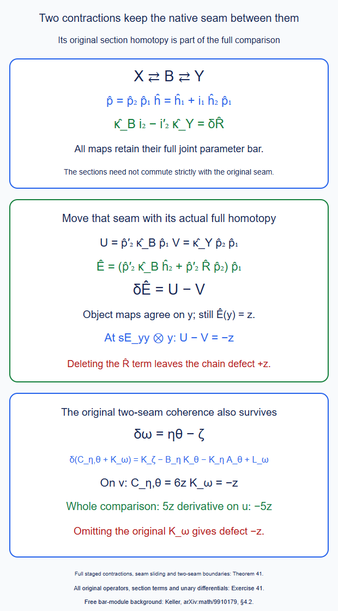
Theorem 41 and Exercise 41. The two contractions, the interposed native comparison and its section homotopy are all actual full maps. A nonzero coherence term can change the comparison even when leading compositions agree. Editable SVG.

42. Finite contraction towers and the original ladder homotopies
All maps in this section are entire maps in one dg category of typed parameter comodules. Their differentials include the original mapping inputs and all parameter unary terms. An empty product is the appropriately typed identity. Consider two finite ordered towers of special contractions \[ X_0\rightleftarrows X_1\rightleftarrows\cdots \rightleftarrows X_n,\qquad X'_0\rightleftarrows X'_1\rightleftarrows\cdots \rightleftarrows X'_n . \tag{42.1} \] The \(j\)-th unprimed maps are \(p_j,i_j,h_j\), with \(\delta h_j=1-i_jp_j\); use primes for the other tower. Set \[ \begin{gathered} P_j=p_j\cdots p_1,\qquad I_j=i_1\cdots i_j,\\ H_j=\sum_{a=1}^j I_{a-1}h_aP_{a-1},\qquad P_0=I_0=1 . \end{gathered} \tag{42.2} \] Use the same notation with primes. Retain closed native maps \(\kappa_j:X_j\to X'_j\) and their supplied full section homotopies \[ \kappa_{j-1}i_j-i'_j\kappa_j=\delta R_j,\qquad |R_j|=-1 . \tag{42.3} \] No equality of sections with native maps is assumed.
Theorem 42 (full ladder comparison and its regrouping identity). The composites \(P_j,I_j,H_j\) are special contractions. Their whole section comparison is \[ \mathcal R_j=\sum_{a=1}^j I'_{a-1}R_a i_{a+1}\cdots i_j,\qquad \delta\mathcal R_j=\kappa_0I_j-I'_j\kappa_j . \tag{42.4} \] Define the single-stage, telescoped and flattened projection homotopies by \[ \begin{aligned} E_a&=p'_a\kappa_{a-1}h_a+p'_aR_ap_a,\\ E^{\mathrm{tel}}_n &=\sum_{a=1}^n p'_n\cdots p'_{a+1}E_aP_{a-1},\\ E^{\mathrm{flat}}_n &=P'_n\kappa_0H_n+P'_n\mathcal R_nP_n . \end{aligned} \tag{42.5} \] Both full degree-minus-one maps have differential \[ \delta E^{\mathrm{tel}}_n =\delta E^{\mathrm{flat}}_n =P'_n\kappa_0-\kappa_nP_n . \tag{42.6} \] Their specified degree-minus-two comparison is \[ \begin{aligned} F_n &=\sum_{j=2}^n P'_n\mathcal R_{j-1}h_jP_{j-1}\\ &=\sum_{1\leq a<j\leq n} p'_n\cdots p'_a\,R_a i_{a+1}\cdots i_{j-1}h_jP_{j-1},\\ \delta F_n&=E^{\mathrm{flat}}_n-E^{\mathrm{tel}}_n . \end{aligned} \tag{42.7} \] Thus the original section comparisons contribute even when every leading native map is an identity.
There is an exact regrouping statement. For \(0<m<n\), write \(P_{>m}=p_n\cdots p_{m+1}\), \(H_{>m}\) for the composite homotopy of that sub-tower on \(X_m\), and \(F_{>m}\) for its formula (42.7). Then \[ F_n=P'_{>m}F_m+F_{>m}P_m +P'_n\mathcal R_m H_{>m}P_m . \tag{42.8} \] Recursively grouping the consecutive stages in any binary parenthesization gives exactly the same \(F_n\). This asserts regrouping coherence for the specified ordered ladder and its original \(R_a\)'s.
If these towers arise from the strict-section parameter transfer of Theorem 41, their composites agree with the full parameter transfer of the object composite contractions. All formulas above retain every consecutive parameter cut and outside coaction, and commute with actual whole source restrictions.
Proof. Combining two special contractions gives \(p=p_2p_1\), \(i=i_1i_2\), \(h=h_1+i_1h_2p_1\). The differential is \(1-i_1p_1+i_1(1-i_2p_2)p_1=1-ip\). The identities \(pi=1\), \(ph=hi=h^2=0\) follow by multiplying out and using the two special contractions. Induction gives (42.2) and all its special identities.
Each \(i_a\), \(p_a\) and \(\kappa_a\) is closed. Differentiating the \(a\)-th term of (42.4) therefore replaces \(R_a\) by its given difference (42.3). The negative term for \(a\) cancels the positive term for \(a+1\). The two remaining endpoint terms are exactly \(\kappa_0I_j-I'_j\kappa_j\). In particular this uses the supplied section homotopies, including any nonzero closed part they have.
For one stage put \(L_a=p'_a\kappa_{a-1}-\kappa_ap_a\). It is closed and \(L_ai_a=\delta(p'_aR_a)\). The Hom Leibniz rule gives \[ \delta(L_ah_a)=L_a-L_ai_ap_a,\qquad \delta(p'_aR_ap_a)=L_ai_ap_a . \tag{42.9} \] As \(p_ah_a=0\), their sum is \(\delta E_a=L_a\). The telescoped expression in (42.5) now has cancellations at every intermediate \(\kappa_a\), leaving the endpoint difference in (42.6). The same one-stage argument applies to the composite contractions and their actual section homotopy \(\mathcal R_n\), giving the flattened equation.
For completeness compare these two particular primitives. For the first \(j-1\) stages abbreviate \(P=P_{j-1}\), \(I=I_{j-1}\), \(H=H_{j-1}\) and \(R=\mathcal R_{j-1}\). The recursion for the next composite is \[ \begin{gathered} H_j=H+Ih_jP,\qquad \mathcal R_j=Ri_j+I'R_j,\\ P'\kappa_0I-\kappa_{j-1}=\delta(P'R). \end{gathered} \tag{42.10} \] Insert these equalities in the flattened expression. Subtracting \(p'_jE^{\mathrm{flat}}_{j-1}+E_jP\) leaves \[ \begin{aligned} &p'_j\bigl((P'\kappa_0I-\kappa_{j-1})h_j +P'R(i_jp_j-1)\bigr)P\\ &\qquad =p'_jP'\bigl((\delta R)h_j-R\,\delta h_j\bigr)P\\ &\qquad =\delta\bigl(P'_jR h_jP\bigr). \end{aligned} \tag{42.11} \] The minus sign before \(R\,\delta h_j\) is forced by \(|R|=-1\). Here the middle equality may equivalently use \(\delta(P'R)=P'\delta R\); no naturality of \(P'\) is needed. Starting from \(F_1=0\), this proves \[ F_j=p'_jF_{j-1} +P'_j\mathcal R_{j-1}h_jP_{j-1}. \tag{42.12} \] Induction gives the first formula (42.7). Expanding \(\mathcal R_{j-1}\) and cancelling only the inserted pairs \(p'_ai'_a=1\) gives its second formula. This proves the differential identity with its stated sign, rather than merely existence of a primitive.
In the double sum in (42.7), partition the pairs \(a<j\) into \(j\leq m\), \(m<a\), and \(a\leq m<j\). The first two sums are \(P'_{>m}F_m\) and \(F_{>m}P_m\). Expanding \(\mathcal R_m\) and \(H_{>m}\) shows that their cross-pairs are precisely \(P'_n\mathcal R_mH_{>m}P_m\). This proves (42.8). In any recursive binary grouping, each pair has one first split separating its two indices, so it occurs exactly once. Hence all such groupings give the identical full map.
Finally repeated application of (41.3) identifies the transferred composite maps with these finite towers whenever its strict-section hypotheses hold. All products in this proof are products of full typed cochains. Their parameter components use all consecutive cuts, with the degree-minus-one and degree-minus-two coaction signs. Finite towers and wordwise finite transfer make these expressions finite on each input. The actual cotensor pullback of Theorem 37 preserves these compositions, differentials and the supplied \(R_a\)'s, proving the remaining assertions. \(\square\)
The theorem concerns original native comparisons already expressed on the indicated whole graph diagrams. An absent comparison between different changing-profile graph layouts is additional data; the ladder equations do not supply it. Ordered regrouping also does not identify two different native execution paths.
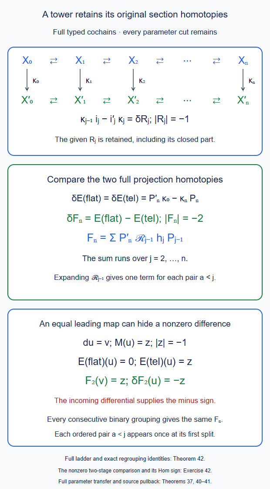
Theorem 42 and Exercise 42. The vertical comparisons retain their original section homotopies. The two-stage example has equal leading native maps and a nonzero difference between the two projection homotopies. Editable SVG.

43. The actual marked section for a native block replacement
Fix normalized functors \(G_0,G_1:A\to B\) and \(F:B\to C\). All bars are full. Only the auxiliary middle identities in the two-sided graph receive the quotient of Theorem 27. Write \[ \mathscr D=\operatorname{Fun}_\infty(A,B),\qquad P=B_{\mathrm{full}}\mathscr D,\qquad C_A=B_{\mathrm{full}}A, \qquad e=\operatorname{ev}_{A,B}. \tag{43.1} \] The parameter and source tensor coproduct has coefficient \((-1)^{|p_R||c_L|}\) at the cut \((p_L,c_L)\otimes(p_R,c_R)\). For an operator word \(p\) let \(e(p,u)\) mean its complete marked evaluation on the original source word \(u\). It includes empty marked pieces and every possible unmarked piece.
Let \(\mathcal X_G\rightleftarrows\mathcal Y_G\) be the actual normalized common-input graph contraction for \(F,G\). For a homogeneous full cochain \(\theta:G_0\to G_1\), put \(r=|\theta|\). In the contravariant graph direction denote by \(A_\theta:\mathcal X_{G_1}\to\mathcal X_{G_0}\) the complete action on the last graph factor. Denote by \(B_\theta:\mathcal Y_{G_1}\to\mathcal Y_{G_0}\) the graph map of the full one-mark postcomposition \(F_*\theta\). In particular \(B_\theta\) includes the higher Taylor values of \(F\); it is not defined by \(F_1\theta_0\).
Theorem 43 (the supplied marked section and its coefficient sign). The original section has the following specified naturality homotopy of degree \(r-1\): \[ \begin{aligned} R_\theta(k\otimes c) ={}&-(-1)^{(r-1)|k|} \sum_{c=uv}\ \sum_{e(s\theta,u)=\sum a_z z} a_z(k;z;1_{G_0(\operatorname{source}u)})\otimes v,\\ \delta R_\theta+R_{\delta\theta} ={}&A_\theta S_{G_1}-S_{G_0}B_\theta . \end{aligned} \tag{43.2} \] The displayed middle tensors are taken in the actual normalized two-sided graph. The identity at their last coefficient is retained. For a closed degree-zero native comparison this gives exactly the section comparison required in (41.4), with its original higher source components.
There is one simultaneous choice for all higher operator marks. For \(p=s\theta_m|\cdots|s\theta_1\) define \[ W_p(k\otimes c) =(-1)^{|p||k|} \sum_{c=uv}\ \sum_{e(p,u)=\sum a_z z} a_z(k;z;1_{\operatorname{source}e(p,u)})\otimes v . \tag{43.3} \] Its degree is \(|p|=\sum_j(|\theta_j|-1)\); \(W_\varnothing=S\) and \(R_\theta=-W_{s\theta}\). The complete simultaneous section, in coefficient-first order, is the explicit degree-zero map \[ \Sigma(k;p,c) =\sum_{\substack{p=p_Lp_R\\c=c_Lc_R}} (-1)^{|p_R||c_L|} \sum_{e(p_L,c_L)=\sum a_z z} a_z(k;z;1_{\operatorname{source}e(p_L,c_L)}) \otimes(p_R,c_R). \tag{43.4} \] The endpoints in each summand are the original endpoints of that marked evaluation. It obeys the full section equation \[ D_{\mathcal X}^{e}\Sigma=\Sigma D_{\mathcal Y}^{Fe}, \qquad Q^{e}\Sigma=1 . \tag{43.5} \] Here the two differentials and \(Q^e\) are precisely Theorem 24 for the genuine input \(P\otimes C_A\) and map \(e\). Equation (43.5), rather than a choice of separate primitives, specifies every higher compatibility between the \(W_p\)'s.
A formal identity transformation in a consumed nonempty parameter word gives a zero component of the normalized section. An ordinary source identity in a consumed source piece gives zero as well. Unconsumed original words remain present. A nonidentity parameter whose evaluated value happens to be an ordinary identity is still its original parameter; it is not removed from \(P\).
For an actual whole native parameter map \[ \mathcal S:K\longrightarrow P \tag{43.6} \] use \(e(\mathcal S\otimes1)\) in (43.4). The construction then retains all original native comparison components and every restriction to a full parameter face. \(K\) may be the whole compatible C64 index bar; it need not be a rectangle of separate parameter indices. Source changes use their full bar maps. Several independent inner branches use their genuine tensor coalgebra followed by the dg joint-input shuffle of Theorem 30. Empty branch lists keep the full nullary output mapping complex.
Proof. The marked evaluation is the actual dg coalgebra map of Theorem 25. Its single marked letter has degree \(r-1\). On an original word \(u\), each output word \(z\) in \(e(s\theta,u)\) has degree \(|u|+r-1\). Thus every summand of (43.2) has degree \(|k|+|c|+r-1\), as asserted. Passing the parameter word from before the coefficient \(k\) to after it gives exactly the sign \[ (-1)^{(r-1)|k|}. \] No sign involving only the ordinary degree \(r\) can replace that suspended degree.
Apply (24.4) to \(e:P\otimes C_A\to B_{\mathrm{full}}B\). Its tensor coproduct is the cut displayed before the theorem, so its full section is exactly (43.4). Theorem 24 proves (43.5) on all original words; Theorem 27 proves its descent to the middle quotient. In particular it retains the unary differential of a nonclosed \(\theta\). Reordering only the consumed parameter word past \(k\) gives the coefficient components (43.3). All other cut signs stay those of the actual tensor coproduct.
We extract the one-mark equation explicitly to fix the otherwise consequential global minus sign. Put \(W_\theta=W_{s\theta}\). In the coefficient of one original parameter mark in the chain equation (43.5), the internal coefficient and source terms give \(\delta W_\theta\). The unary parameter term is \(b_1(s\theta)=-s(\delta\theta)\); after moving it past \(k\), it contributes \(-W_{\delta\theta}\) to the other side. The two endpoint actions give respectively \(S_{G_0}B_\theta\) and \(-A_\theta S_{G_1}\). Consequently \[ \delta W_\theta+W_{\delta\theta} =S_{G_0}B_\theta-A_\theta S_{G_1}. \tag{43.7} \] This proves (43.2) with \(R_\theta=-W_\theta\). For a direct sign check with no source letters and a closed degree-zero bare mark \(a\), the middle differential gives \[ \begin{aligned} D(k;sa;1) ={}&(dk;sa;1) +(-1)^{|k|}(kF_1(a);\varnothing;1)\\ &-(-1)^{|k|}(k;\varnothing;a). \end{aligned} \tag{43.8} \] The two coefficient-differential terms in \(\delta((-1)^{|k|}(k;sa;1))\) cancel. The remaining terms are \(SB_a-A_aS\). This independently fixes the minus in (43.2), including odd output coefficients. Positive source inputs and nonclosed marks are already included in (43.7).
For several marks each complete evaluated word has exactly one occurrence of each original mark. The entire chain equation includes the differential of any one such mark, the vertical product of two consecutive marks, every original source differential and merger, and the complete left and right prefix actions. These are exactly the terms in (43.5), since it uses the full dg parameter bar and the full map \(e\). Thus (43.4) fixes their simultaneous values, including those of the original native \(\omega\) and mixed \(\chi\) when these occur in \(\mathcal S\). It does not replace them by independently chosen kernel primitives.
A formal identity mark has empty marked piece and gives a literal identity letter in the evaluated middle word. The middle quotient kills that term. Likewise a consumed ordinary source identity either gives zero by normalization of its marked or functor component, or remains a literal identity in that middle word. It is zero in the quotient. These statements concern consumed section components: the term retaining the original word is unaffected. The last coefficient identity is not a middle letter. Higher identity-valued outputs of nonidentity marks remain in their original input labels and in the other graph actions of Theorem 27.
Finally composition with the actual dg coalgebra map \(\mathcal S\otimes1\) preserves (43.5), its original cuts and its endpoint labels. Restricting to a full face is the same composition on that face, so all values agree literally. Source-end changes are Theorem 37's actual cotensor pullbacks. For independent branches use the tensor coproduct and its Koszul sign, followed by the genuine joint-input shuffle. Its coalgebra and chain equations and its exact section square are Theorem 30. At zero branches this is the empty tensor input, not a quotient of the unit object's output mappings. This proves all the assertions. \(\square\)
Theorem 43 supplies the actual section comparison for a native replacement inside a fixed outer operation. It is compatible with the original full parameter family. Identifying every different whole tree layout still requires its actual common-refinement maps and all their product and graft faces; that conclusion does not follow from the one-mark equation alone.
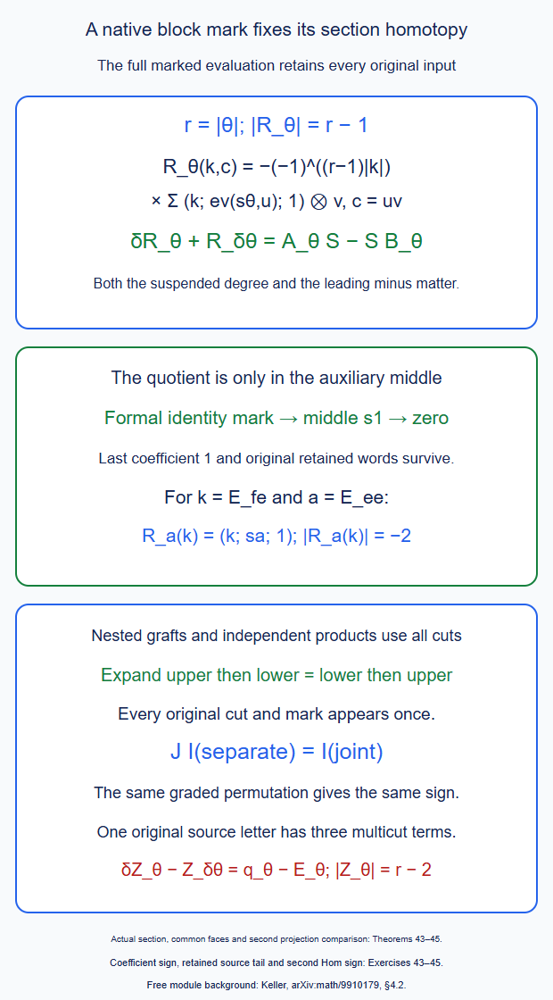
Theorem 43 and Exercise 43. All original source and parameter differentials remain in the section equation. The complete marked section specifies the higher comparisons together. Editable SVG.

44. Full marked multicut sections and their product and graft faces
Consider a finite rooted operation tree with the actual dg category at each edge and a normalized functor at each vertex. Joint vertex inputs use the genuine tensor-bar map into the dg tuple category. A vertex parameter is a full word of the corresponding normalized functor category. Combine those parameter bars with all original external source bars using their graded tensor coalgebra. At an inner vertex evaluate its full parameter word and the outputs of its children by the actual C69 evaluation. Thus the recursive input map is a composition of dg coalgebra maps, not a tensor product of primitive \(A_\infty\)-functors.
Let \(Z_T\) be the fully expanded, normalized-middle graph of Theorem 32. On its full parameter encoding, the local sections are (43.4), together with the strictly natural outer section of Theorem 26. At the represented endpoint retain the actual composite operation of this tree. A native comparison with a flattened operation is kept as its original full marked map.
Theorem 44 (the full marked common section). All orders of expanding the edges give the same full parameter section \[ \boldsymbol I_T:\mathcal K_{f_T}\longrightarrow Z_T . \tag{44.1} \] Its coefficient formula uses the full multicut of every original source and parameter word. At an expanded edge it places the complete marked evaluation of the selected descendant prefix in that middle bar, inserts the ordinary identity at its last coefficient, and retains the remaining original tails. All extraction permutations carry their Koszul signs. Every original parameter is evaluated once or retained once; none is inferred from its leading operator image.
For a graft \(T\circ_i U\), expanding the internal edges of \(U\), expanding the joining edge and expanding the other edges of \(T\) in any order gives precisely \(\boldsymbol I_{T\circ_i U}\). For independent branches the separate and joint middle presentations satisfy the entire section square \[ J\boldsymbol I_{\mathrm{sep}} =\boldsymbol I_{\mathrm{joint}} . \tag{44.2} \] This includes all simultaneous marks, their unary differentials and their mixed C69 components. It is an equality of full sections, not only their empty-parameter values.
Restricting an actual full native family to a product or graft face commutes with these formulas whenever that face is expressed on this common refinement. The input is the whole original compatible index bar. No assertion that every separate-parameter shuffle lies in that index is needed. At a block replacement its section comparison is exactly Theorem 43's pulled-back marked section, including its higher components, rather than a new primitive chosen after taking that face.
Proof. All elementary sections are closed degree-zero maps on the entire source and parameter encoding, by Theorems 25–27 and 43. Their object coefficients are the actual identity insertions. A composition is therefore a full chain section; its colinearity follows by composing the original cut equations. The issue is equality between the different expansion orders.
First consider two nested edges. Before taking any middle quotient their expansion has three successive levels. For functors \(H,G,F\), the upper middle word is obtained by evaluating the selected \(G\)-marks on the selected full \(H\)-output. The lower middle word is the next selected \(H\)-output, and the final original suffix is retained. A term is consequently specified by the original parameter cuts, the three-piece source cut, and the marked piece assignments at its two inner levels.
Expanding the upper edge first enumerates those assignments by first making the outer cut of the full \(H\)-output. The coalgebra equation for its marked evaluation identifies that cut with the corresponding original source and parameter cuts. Expanding the lower edge first enumerates exactly these same original cuts in the other order. If the block is described by its full composite operator word, the equality \[ \operatorname{ev}\bigl(M(u,v),c\bigr) =\operatorname{ev}\bigl(u,\operatorname{ev}(v,c)\bigr) \tag{44.3} \] is the exact C69 evaluation identity of Theorem 37. It includes all one-output and multi-output marked assignments. Thus it identifies the complete words at the upper middle edge, including every mixed operator component.
The signs agree as well. The original homogeneous factors are brought into the same final ordered list of upper middle, lower middle and retained factors. The Koszul sign of that permutation is the product of the signs of either sequence of extractions. The marked maps have suspended degrees \(|\theta|-1\), as checked in (43.2)–(43.4); using ordinary degrees instead would not give this equality. Hence there is no additional sign attached to the order of the two expansions. This proves the full nested exchange.
For edges in independent branches, a term is a cut in each original branch, with its original marked evaluation. The tensor coproduct puts the selected prefixes before the retained factors. Either expansion order makes the same graded permutation of those factors. If two branches have a common parent, the section inserts their separate output words and ordinary coefficient identities; it does not evaluate the parent's higher functor on their coefficient identities. Therefore the same argument covers sibling edges. It is exactly the extraction sign (33.3), now with each selected prefix carrying all of its original parameter marks.
Taking the normalized middle quotients does not disturb either exchange. A marked evaluation of a word containing a formal unit either vanishes or keeps a literal identity in an output word, by Theorem 43. An identity in a consumed prefix is thus zero in the corresponding middle quotient; an identity in a retained tail stays in that tail. The two orders have the same terms before this quotient and the same sum of auxiliary degeneracy subspaces. They have identical images after it.
Every two orders of the finite edge set are related by exchanges of adjacent expansions. The nested and independent cases exhaust such exchanges. This proves (44.1) for all orders, retaining the original full parameter coactions.
For a graft, the edge set consists of the edges of the two trees and their joining edge. The section obtained by performing these three groups of expansions is one of the orders just proved equal. The genuine input map at the graft is also the same: recursive marked evaluation associates by (44.3), and its joint dg shuffles enumerate the same final interleavings with their Koszul signs, by Theorem 30. This proves the graft assertion with its original parameter labels.
For independent products, the separate section places each actual marked evaluation in its own middle factor. The map \(J\) interleaves those words. The joint section places their genuine joint-input shuffle in the joint middle factor. Both enumerate the identical branch cuts and final interleavings. The tensor coproduct coefficient is the same extraction permutation sign, so the full equality is (44.2), as in (30.19). Its zero-branch instance retains the coefficient identity and the full nullary output Hom complex.
Finally pull back these formulas by the actual full native parameter coalgebra map and its actual source bar maps. All constructions used were genuine coalgebra composition, marked evaluation, cuts and graded tensor permutations. They commute with that pullback. In particular the pulled-back one-mark component is the original \(R_\theta\) of (43.2), and all its higher components are the restriction of the one full \(\Sigma\). The original C69 mixed cochain, or any original higher comparison carried by the native family, is evaluated as such; it is not set to zero. The C64 index is restricted as a whole, so no unavailable rectangle is introduced. This proves the stated native face compatibility on the specified common refinement. \(\square\)
The theorem identifies the actual full section side of the common-refinement product and graft squares. The projection side retains the specified homotopies of Theorems 40–43. An equality of sections does not imply equality of the projection paths, nor identify the native flattened operation without its full comparison. Coefficient descent uses the complete projection comparison with those same native marks.
45. The actual marked projection and its specified second homotopy
Keep the full normalized contractions \(Q_j,S_j,H_j\) of \(\mathcal X_{G_j}\rightleftarrows\mathcal Y_{G_j}\). Write \(x=(k;w;l)\) and \(|x|=|k|+|w|+|l|\). The full actions \(A_\theta,B_\theta\) and the actual \(R_\theta\) are those of Theorem 43.
Theorem 45 (projection comparison without discarding its original core). The original projection's one-mark component has degree \(r-1\) and the exact formula \[ q_\theta(x\otimes c) =(-1)^{(r-1)|x|+|w|} \sum_{c=uv}\ \sum_{e(s\theta,u)=\sum a_z z} a_z\,k\tau_F(w|sl|z)\otimes v . \tag{45.1} \] In particular it obeys \[ \begin{gathered} L_\theta=Q_0A_\theta-B_\theta Q_1,\qquad \delta q_\theta+q_{\delta\theta}=L_\theta,\\ q_\theta S_1=Q_0R_\theta . \end{gathered} \tag{45.2} \] The homotopy built from the actual section comparison is \[ E_\theta=(-1)^rQ_0A_\theta H_1+Q_0R_\theta Q_1, \qquad \delta E_\theta+E_{\delta\theta}=L_\theta . \tag{45.3} \] The difference between this specified \(E_\theta\) and the original \(q_\theta\) is retained by the explicit second homotopy \[ \begin{gathered} T_\theta=q_\theta-E_\theta,\qquad Z_\theta=(-1)^{r-1}T_\theta H_1,\qquad |Z_\theta|=r-2,\\ \delta Z_\theta-Z_{\delta\theta}=T_\theta,\qquad T_\theta S_1=Z_\theta S_1=0 . \end{gathered} \tag{45.4} \] For a closed degree-zero native block comparison, the last differential equation is \(\delta Z_\theta=q_\theta-E_\theta\). It identifies two particular original formulas, rather than replacing either by an unspecified primitive.
For all parameter words together retain the entire projection \(Q^e\) and section \(\Sigma\) of (43.5). Their component formulas determine all mixed cuts and higher comparisons. Full parameter restriction and actual source-end pullback preserve these component identities. A target-end change retains its whole original C69 comparison; no strict square for separately chosen contractions is asserted. The one-mark second homotopy does not permit deleting positive components of \(Q^e\).
More generally, in one full parameter-comodule category let \((Q,\Sigma,H)\) be a special contraction with actual endpoint \(\mathcal Y\). If closed degree-zero full maps \(U,V:\mathcal X\to\mathcal W\) have the same entire restriction to \(\Sigma\), their specified relative homotopy is \[ J=(U-V)H,\qquad \delta J=U-V,\qquad J\Sigma=0 . \tag{45.5} \] This last assertion requires equality on the full section, not merely on its leading or cohomological component.
Proof. In (24.4) with the genuine marked input \(e\), consume precisely the one parameter mark and an arbitrary original source prefix. Passing that mark past the full coefficient \(x\) gives \((-1)^{(r-1)|x|}\). The original projection contributes \((-1)^{|w|}\). Their product is the coefficient in (45.1). The degree of \(\tau_F\) is one, the inserted \(sl\) has degree \(|l|-1\), and the marked output \(z\) has degree \(|u|+r-1\). Thus every term has total degree \(|x|+|c|+r-1\).
Extracting one parameter mark from the full chain equation for \(Q^e\) gives the first differential identity in (45.2). The source endpoint action is \(Q_0A_\theta\), the target endpoint action is \(B_\theta Q_1\), and the parameter unary term is \(b_1(s\theta)=-s(\delta\theta)\). These account for all the terms with that mark. The complete source unary differential remains inside the Hom differential. Extracting the same coefficient in \(Q^e\Sigma=1\) gives \[ q_\theta S_1+Q_0W_{s\theta}=0 . \tag{45.6} \] Since \(W_{s\theta}=-R_\theta\), this is its side equation. Neither identity assumes that the cochain \(\theta\) is closed.
The degree-\(r\) cochain \(L_\theta\) satisfies \(\delta L_\theta=L_{\delta\theta}\). Theorem 43 and closedness of the projection give \[ L_\theta S_1 =Q_0(\delta R_\theta+R_{\delta\theta}). \tag{45.7} \] Differentiating \((-1)^rL_\theta H_1\), adding its value at \(\delta\theta\), and using \(\delta H_1=1-S_1Q_1\), gives \(L_\theta-L_\theta S_1Q_1\). Differentiating \(Q_0R_\theta Q_1\) and adding its value at \(\delta\theta\) gives \(L_\theta S_1Q_1\). Their sum is \(L_\theta\). The term \(B_\theta Q_1H_1\) is zero, so the first of these expressions is exactly the first term of \(E_\theta\) in (45.3).
Subtracting (45.3) from (45.2) now yields \[ \delta T_\theta+T_{\delta\theta}=0,\qquad T_\theta S_1=0 . \tag{45.8} \] The side equation uses (45.2), \(H_1S_1=0\) and \(Q_1S_1=1\). Differentiate \(Z_\theta\) with the Hom Leibniz rule. Since \(|T_\theta|=r-1\), the result is \[ \begin{aligned} \delta Z_\theta &=(-1)^{r-1}(\delta T_\theta)H_1 +T_\theta(1-S_1Q_1)\\ &=(-1)^rT_{\delta\theta}H_1+T_\theta\\ &=Z_{\delta\theta}+T_\theta . \end{aligned} \tag{45.9} \] This proves precisely the minus sign in (45.4). The remaining side identity follows from \(H_1S_1=0\). All maps are the full original graph maps and homotopies; their compositions preserve the coactions and unit normalizations established in Theorem 27. Theorem 43's whole pullback preserves the same formulas.
Finally if \(D=U-V\) in (45.5), then \(D\) is closed, \(D\Sigma=0\), and \[ \delta(DH)=D(1-\Sigma Q)=D . \tag{45.10} \] Its side identity is \(H\Sigma=0\). This contracts the indicated restriction kernel only; it makes no claim that the whole mapping or Nat complex is acyclic. \(\square\)
Thus the common-section product and graft identities of Theorem 44 have actual marked projection homotopies and specified comparisons with the section-based formulas. To apply (45.5) simultaneously to the native coefficient diagram, the competing whole maps must first be expressed on that same full common refinement and have their entire section restrictions identified. Agreement of leading native operations alone is insufficient.
46. Original-label refinements of changing-frontier strings
Let \[ \sigma:\ (t_0,J_0)\xrightarrow{f_1}(t_1,J_1) \longrightarrow\cdots\xrightarrow{f_q}(t_q,J_q) \tag{46.1} \] be an original C64 execution/contraction string. Every arrow retains its selected original operation edges. Let \(K_j\) be the union in \(t_0\) of the edge sets contracted by its first \(j\) arrows, and let \[ \pi_j:t_0\longrightarrow t_j=t_0/K_j,\qquad I_j=\pi_j^{-1}(J_j),\qquad K_0=\varnothing,\quad I_0=J_0 . \tag{46.2} \] The identification with \(t_0/K_j\) retains the original quotient labels. It does not identify parallel arrows by their unlabelled quotient shape.
Theorem 46 (the labelled initial-tree refinement and its faces). The sets \(I_j\) are nested operation-descendant ideals of the initial tree, and \(I_j\) is a union of whole \(K_j\)-clusters. The ordered frontier at \((t_j,J_j)\) is canonically the ordered frontier at \((t_0,I_j)\). Its arity is \[ m_j=n+\sum_{v\in I_j}(1-r(v)). \tag{46.3} \] This identification is on arbitrary original frontier objects and their full mapping spaces.
The actual operator of \(f_j\), under these frontier identifications, has the supplied full native comparison with the partial forest \[ F^{t_0}_{I_j,I_{j-1}} . \tag{46.4} \] All the higher comparisons for a longer string are the original partial-forest comparisons on these same nested ideals. They are not new choices on its individual arrows. The refinements have the following exact index-face rules:
- An interior face removes \((K_j,I_j)\). Its two partial forests are compared with the one partial forest by the original whole native composition comparison.
- Deleting the last state deletes the last pair of labels. Deleting the first state instead rebases at \(t_1\). If \(I'_j\) is the pulled-back ideal for that shorter string in \(t_1\), then \[ I_j=\pi_1^{-1}(I'_j)\quad(j\geq1). \tag{46.5} \] The corresponding source change is the actual \(F^{t_0}_{I_1,J_0}\), with its full original operator map. A target-end composition retains its entire C69 whiskering map.
- On a compatible grafting string, the pulled-back executed ideal is the union of the embedded factor ideals in the initial grafted tree. Every joining seam remains an original edge. The cumulative selected sets are the embedded factor sets; a subsequent native contraction of a joining seam retains that additional selected label.
There is a fixed-initial parameter category for all these strings at once: \[ P_a=(a\downarrow\mathcal E_n). \tag{46.7} \] Its objects are actual arrows \(u:a\to x\); an arrow from \(u\) to \(v\) is an original \(g:x\to y\) with \(gu=v\). This category is finite, has initial object \(1_a\), and has terminal object the unique original arrow \(a\to b_n\) to the completed corolla. The canonical lift of (46.1) records its successive cumulative composites from \(a=(t_0,J_0)\). An interior or last face restricts that same lifted string. Its first face is the precomposition image of the lifted shorter string under \[ f_1^*:P_{(t_1,J_1)}\longrightarrow P_a,\qquad u\longmapsto u f_1 . \tag{46.8} \] The initial image is the actual object \(f_1\) of \(P_a\), not \(1_a\). Hence the source endpoint factor in Theorem 38 is retained.
For a compatible initial grafting tuple \(a\), use \((a\downarrow\mathcal D_{m;\mathbf n})\), with the whole compatible category. Its terminal object is the tuple of completed corollas. The induced graft functor sends that object to the completed graft of those corollas. Its subsequent map to \(b_N\) is the original contraction of all joining seams. This is the terminal endpoint factor of Theorem 38; it is not declared to be an identity.
Thus the partial forests in (46.4) give concrete expanded edge-bar forests on all of the original frontier inputs. Their local native block replacements use Theorem 43; their common-section graft and product faces use Theorem 44. This constructs their typed refinements. It does not identify their different whole projection paths without those maps' full comparison.
Proof. C47 composition takes the lifted union of selected original edge sets. Consequently \(K_{j-1}\subseteq K_j\) and \(\pi_j=\overline\pi_j\pi_{j-1}\), where \(\overline\pi_j:t_{j-1}\to t_j\) is the actual next quotient. The arrow condition is \(\overline\pi_j(J_{j-1})\subseteq J_j\). Taking inverse images gives \(I_{j-1}\subseteq I_j\). Inverse images of descendant ideals are descendant ideals: the quotient sends an original ancestor-descendant pair to such a pair, allowing equality. Since \(I_j\) is an inverse image, it is a union of whole quotient clusters.
For a \(K_j\)-cluster completed at \(J_j\), its original top vertex gives that cluster's same output in \(t_0\). All its operation descendants are completed. For an uncompleted cluster, none of its vertices lies in \(I_j\); one descends through it to the same ordered surviving inputs. External leaves retain their original positions. This is the claimed canonical ordered frontier bijection, including a completed nullary cluster. It is a relabelling of the same tensor factors. It restricts neither their objects nor their mappings to an image of a previous convolution.
A cluster \(C\) has \(|C|-1\) internal operation edges. Its boundary arity is therefore \[ r(C)=\sum_{v\in C}r(v)-|C|+1,\qquad 1-r(C)=\sum_{v\in C}(1-r(v)). \tag{46.6} \] Summing over completed clusters gives (46.3), which is also the frontier count before passing to the quotient. The full dg mapping complexes at that frontier are carried by the ordered factor identifications; no cohomology or coefficient projection is involved.
To check (46.4), compare the next quotient's partial forest with the original tree through \(\pi_{j-1}\). Every \(K_{j-1}\)-cluster is either completed at \(I_{j-1}\) and remains an arbitrary input variable, or is uncompleted there. An uncompleted cluster which is completed at \(I_j\) is executed in full. The original C47 native comparison expands its quotient operation into precisely that original operation cluster. This applies on arbitrary frontier variables by C47.2, including true zero-input operations. Their full source and target whiskerings are the actual C69 maps. Taking all such clusters gives exactly \(F^{t_0}_{I_j,I_{j-1}}\).
For an interior face, the cumulative original edge union and the surviving ideals are unchanged. The two adjacent forests execute \(I_j\setminus I_{j-1}\), then \(I_{j+1}\setminus I_j\). The original full comparison composes them to the forest executing \(I_{j+1}\setminus I_{j-1}\). For a longer flag all groupings use these same partial forests and original comparisons. C47.2 supplies their whole coherent family. It does not select fresh cochains when an intermediate state is removed.
For the first face, factor \(\pi_j=\pi'_j\pi_1\). Its shorter-string ideal is \(I'_j=(\pi'_j)^{-1}(J_j)\), proving (46.5). Since \(I_j\) is \(K_j\)-saturated and \(K_1\subseteq K_j\), no \(K_1\)-cluster is partially in \(I_j\). Completed clusters at \(I_1\) become its arbitrary new input variables. The other clusters are expanded by the very same native block comparisons just used above. Returning to the old initial frontier requires the whole partial-forest input map, not its linear or object component. This is precisely Theorem 37's source-end pullback. At the other end C69 composition retains the whole target whiskering, including its positive Taylor components.
Finally a compatible graft's executed vertices are the union of the embedded factor ideals, by C64. Their inverse images under the cumulative factor quotients have that same union in the initial grafted tree. Factor quotient edges form a disjoint embedded union and select no joining seam. The seam is still an edge of the initial grafted tree, so an additional native contraction can and does retain its separate original label. Nested grafts have the same embedded vertices and seams in their common domain.
This argument takes an arbitrary string in the full compatible category. It never replaces it by separate factor strings or a clipped product shuffle. A simultaneous completion of an inner and an outer operation is included whenever its endpoints are compatible. At a formal identity both \(K\) and \(I\) repeat. A nonidentity contraction may repeat only \(I\); that original arrow is retained. These observations also prove the stated boundary and normalization cases. The resulting finite partial forests have the actual graph objects of Theorems 30 and 32–33, on the indicated original input categories. This proves the typed refinement assertion.
For completeness, the fixed-initial category in (46.7) retains each possible original cumulative arrow as an object. The finite full forward closure of \(a\) and its finite arrow sets give its finiteness. An arrow out of \(1_a\) to \(u\) must be \(u\) itself, so \(1_a\) is initial. The unique \(x\to b_n\) has composite the unique \(a\to b_n\), and is the unique arrow to the asserted terminal object. Composing with \(f_1\) defines (46.8) on objects; on morphisms it retains their same original arrow. Its functor equation is original category composition. The successive arrows in the canonical lift are still exactly \(f_1,\ldots,f_q\). Deleting its first object leaves \(f_1,f_2f_1,\ldots\), which is precisely the precomposition image of the shorter string's canonical lift.
The same proof works in the full compatible grafting category: the tuple of completed corollas is compatible, and all component arrows to it are unique. Fullness keeps their simultaneous tuple arrow in the category. The graft functor sends its corollas and all their joining seams to the completed graft. Contracting just those seams is its unique map to \(b_N\). At zero outer inputs there are no such seams and this map is the actual identity. Thus both moved endpoint factors are the original ones. Theorem 38 applies with these actual parameter functors, including their complete index bars, without a safe-rectangle assumption. \(\square\)
47. Extend the supplied full section comparison
Work in one dg category of full typed parameter-comodule maps. All its differentials include the original source, target and parameter terms. Let \[ \mathcal X\ \underset{\Sigma}{\overset Q{\rightleftarrows}}\ \mathcal Y,\qquad \delta H=1-\Sigma Q,\quad Q\Sigma=1,\quad H\Sigma=0 \tag{47.1} \] be the specified full contraction. Its endpoint \(\mathcal Y\) and section are fixed.
Theorem 47 (retain a nonzero section homotopy on the whole graph). For a homogeneous degree-\(r\) map \(D:\mathcal X\to\mathcal W\) and degree-\((r-1)\) map \(R:\mathcal Y\to\mathcal W\), set \[ \begin{gathered} \partial_{\mathrm{rel}}(D,R) =(\delta D,D\Sigma-\delta R),\\ \mathcal E_r(D,R)=(-1)^rDH+RQ . \end{gathered} \tag{47.2} \] This relative differential squares to zero, and the exact graded identity is \[ \delta\mathcal E_r(D,R) +\mathcal E_{r+1}(\partial_{\mathrm{rel}}(D,R))=D, \qquad \mathcal E_r(D,R)\Sigma=R . \tag{47.3} \] In particular if \(U,V:\mathcal X\to\mathcal W\) are closed degree-zero full maps and the original supplied full homotopy satisfies \[ \delta R=(U-V)\Sigma , \tag{47.4} \] their comparison is the actual full map \[ J=(U-V)H+RQ,\qquad \delta J=U-V,\qquad J\Sigma=R . \tag{47.5} \] It retains the specified \(R\), including its closed part. Taking \(R=0\) is valid only when that is the actual given section comparison.
All these equations restrict to any whole native parameter face on which the same \(Q,\Sigma,H,D,R\) restrict. Their full source pullbacks have the same identities. For a product or graft application, the maps in (47.4) must first be expressed on the actual common refinement with its original full section homotopy. The theorem does not construct an absent \(R\) from leading maps.
Proof. Since \(\Sigma\) is closed, the second component of \(\partial_{\mathrm{rel}}^2(D,R)\) is \[ (\delta D)\Sigma-\delta(D\Sigma-\delta R)=0 . \tag{47.6} \] Its first component is \(\delta^2D=0\). The Hom Leibniz rule gives \[ \delta\mathcal E_r(D,R) =(-1)^r(\delta D)H+D(1-\Sigma Q)+(\delta R)Q . \tag{47.7} \] The other term of (47.3) is exactly \[ (-1)^{r+1}(\delta D)H+(D\Sigma-\delta R)Q . \tag{47.8} \] Adding cancels both the differential terms and the two section terms, leaving \(D\). The side equation is \(H\Sigma=0\), \(Q\Sigma=1\). For \(D=U-V\), equation (47.4) says that \((D,R)\) is a relative cycle. Its correction term in (47.3) vanishes, giving (47.5).
The proof is in the actual full dg mapping complexes, not in cohomology or in a complex of object values. Every product therefore retains its original parameter cuts and graded coaction signs. Restriction and actual source pullback preserve these products and differentials, proving their assertions. A target-model change keeps its original full comparison; no independently chosen contractions are identified strictly. Finally a different allowed closed component of \(R\) contributes that component times \(Q\) to \(J\). Its restriction is that same component, so discarding it changes the prescribed comparison. \(\square\)
Theorem 46 specifies the actual changing-frontier refinements. Theorem 47 applies to a complete section comparison on them. Coefficient descent requires that comparison for both calibrated endpoint systems and on every original shared product and graft face; a collection of unrelated objectwise homotopies is insufficient.
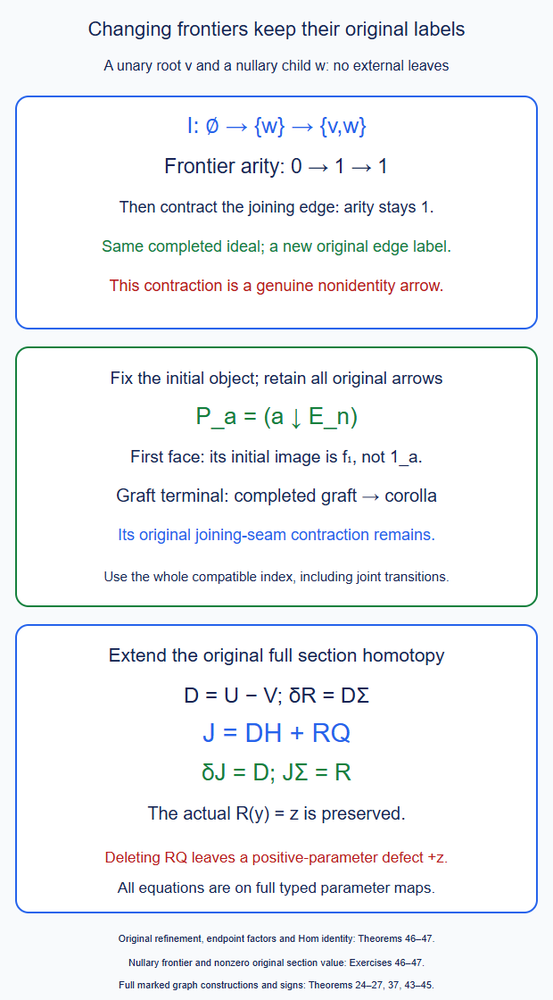
Theorems 46–47 and Exercises 46–47. Equal execution ideals can still label a genuine contraction arrow. A simultaneous compatible transition need not lie in a safe product rectangle. Editable SVG.

48. Extract the homotopy from the entire section prism
Use cohomological suspension of degree \(-1\). For a closed degree-zero full map \(\kappa_X:\mathcal X_0\to\mathcal X_1\), its interval complex has underlying graded object \[ C_X=\mathcal X_1\oplus s\mathcal X_0,\qquad D_{C_X}(x_1,sx_0) =(D_1x_1-\kappa_Xx_0,-sD_0x_0). \tag{48.1} \] This convention fixes the direction of the interval. All entries are full parameter-comodule maps; \(\kappa_X\) includes its positive parameter components. For a left coaction \(\rho(x)=\sum c\otimes x'\), the suspended coaction is \[ \rho(sx)=\sum(-1)^{|c|}c\otimes sx'. \tag{48.2} \] Other outside coactions use the corresponding graded permutations. Define \(C_Y\) from a closed \(\kappa_Y:\mathcal Y_0\to\mathcal Y_1\) in the same way.
Theorem 48 (the off-diagonal part of a whole section prism). Suppose \(\Sigma_i:\mathcal Y_i\to\mathcal X_i\) are closed degree-zero full sections and the given entire section prism is a closed degree-zero comodule map \(\boldsymbol\Sigma:C_Y\to C_X\) with the prescribed diagonal: \[ \boldsymbol\Sigma(y_1)=\Sigma_1y_1,\qquad \boldsymbol\Sigma(sy_0)=s\Sigma_0y_0+R(y_0). \tag{48.3} \] Then its uniquely determined off-diagonal part has degree \(-1\) and satisfies the full equation \[ R=\operatorname{pr}_{\mathcal X_1}\boldsymbol\Sigma s, \qquad \delta R=\kappa_X\Sigma_0-\Sigma_1\kappa_Y . \tag{48.4} \] This extracts all parameter components at once, with no separate choices of primitives of their component equations.
Suppose also that \(Q_i,\Sigma_i,H_i\) are the specified full contractions of Theorem 47. Put \[ \begin{aligned} D&=Q_1\kappa_X-\kappa_YQ_0,\\ J&=DH_0+Q_1RQ_0 . \end{aligned} \tag{48.5} \] Then \[ \delta J=Q_1\kappa_X-\kappa_YQ_0,\qquad J\Sigma_0=Q_1R . \tag{48.6} \] Thus the projection square has the original section homotopy, including its closed components.
These constructions commute with restrictions of the entire prism and with actual source pullbacks. Their normalization is the normalization of that prism. A consumed formal identity parameter has zero higher core when the prism is normalized. An original nonidentity parameter is retained even when its evaluated operator is an identity.
Proof. Squaring (48.1) leaves, in its off-diagonal entry, \(-D_1\kappa_X+\kappa_XD_0=0\); its diagonal entries square to zero as well. The suspension in (48.2) is necessary to make its differential and coaction compatible: moving a degree-\(-1\) map past the parameter prefix \(c\) gives \((-1)^{|c|}\).
Since \(\boldsymbol\Sigma\) has degree zero and \(sy_0\) has degree \(|y_0|-1\), its component in \(\mathcal X_1\) has exactly that degree. Projecting its coaction equation gives the degree-\(-1\) comodule equation for \(R\), with the same prefix sign. Evaluate its chain equation on \(sy_0\). The two sides are \[ \begin{aligned} D_{C_X}\boldsymbol\Sigma(sy_0) &=-sD_0\Sigma_0y_0-\kappa_X\Sigma_0y_0+D_1Ry_0,\\ \boldsymbol\Sigma D_{C_Y}(sy_0) &=-s\Sigma_0D_0y_0-RD_0y_0-\Sigma_1\kappa_Yy_0 . \end{aligned} \tag{48.7} \] The suspended terms agree because \(\Sigma_0\) is closed. The other terms give \(D_1R+RD_0=\kappa_X\Sigma_0-\Sigma_1\kappa_Y\), which is (48.4) with the Hom differential in degree \(-1\). Conversely (48.4) and the two closed diagonal maps make (48.3) a chain map, provided its stated comodule equation holds. Thus no higher parameter equation has been omitted.
For the projection square, \(D\) is closed and \[ D\Sigma_0 =Q_1\kappa_X\Sigma_0-\kappa_Y =Q_1(\kappa_X\Sigma_0-\Sigma_1\kappa_Y) =\delta(Q_1R). \tag{48.8} \] Theorem 47 applied to the actual pair \((D,Q_1R)\) proves (48.5)–(48.6).
The parameter differential is part of each displayed chain differential. A nonclosed original mark contributes its unary term, and two adjacent marks contribute their product. Those terms are already in (48.7). Projection to cogenerators gives the component at every original word, with its original differential and all cuts. Deleting the length-two part of \(R\) need not preserve even the length-two chain equation; Exercise 48 gives an example.
An actual operator prism with an auxiliary interval direction may first be pulled back along the genuine joint-input shuffle of Theorem 30. A shuffled interval letter crossing a parameter prefix has the Koszul sign of their suspended degrees. Its normalized auxiliary interval has two vertices and one proper arrow. The resulting two diagonal pieces and proper-arrow piece have exactly the form (48.1)–(48.3), where the crossing maps are full maps \(\kappa_X,\kappa_Y\). Only auxiliary formal interval identities are normalized here; all original parameter and source labels remain. The whole prism supplies these crossing maps, including its mixed parameter components.
In the marked-evaluation convention of Theorem 43, the consumed interval component is \(-W_{s\theta}=R_\theta\) in graph-map direction. Its endpoint equation is (43.7) with that minus sign. For a degree-\(r\) original mark its graph component has degree \(r-1\), and moving it past an output coefficient \(k\) gives \((-1)^{(r-1)|k|}\). Thus (48.4) uses the same orientation, suspended degree and normalization as (43.2).
Finally restriction or actual source pullback commutes with the differential, direct-sum projections and these composites. The normalization assertions follow by projecting the prism's normalized core equations. A nonidentity original label is not a formal degeneracy of that prism. This proves all assertions. \(\square\)
For a fixed-graft native block replacement, Theorem 43 supplies its entire marked section, and this theorem applies to the given comparison prism. For a comparison across changing graph layouts, such a whole prism must first be constructed on the common original-label refinement. Theorem 46 describes that refinement; a list of its local interval pieces alone does not specify the required whole prism.
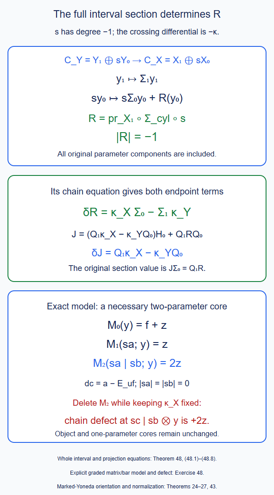
Theorem 48 and Exercise 48. The interval differential has off-diagonal entry \(-\kappa\). In the displayed exact model, omitting the two-parameter component leaves the defect \(+2z\). Editable SVG.

49. Composition of section prisms and their whole product cubes
The sections in this section are closed degree-zero maps \(\Sigma:Y\to X\) in the full typed dg mapping categories. The source, target and parameter differentials are all retained. For two such sections, a degree-\(r\) comparison datum is a triple \[ F=(A,B,R),\qquad A:X\to X',\quad B:Y\to Y',\quad R:Y\to X', \qquad |A|=|B|=r,\quad |R|=r-1 . \tag{49.1} \] Define its differential and the product of degree-\(s\) and degree-\(r\) data by \[ \begin{aligned} \partial(A,B,R)&=(\delta A,\delta B,A\Sigma-\Sigma'B-\delta R),\\ (C,E,K)(A,B,R)&=(CA,EB,KB+(-1)^sCR). \end{aligned} \tag{49.2} \] The section at the intermediate object supplies the types in the second equation.
Theorem 49 (full prism composition and every independent-product face). Equations (49.1)–(49.2) form a dg category, with identity \((1,1,0)\). Its closed degree-zero morphisms are exactly the whole section comparisons of Theorem 48. In particular their composite retains the actual homotopy \[ R_{21}=C R+K B . \tag{49.3} \] For a homogeneous original mark, (43.2) is precisely the differential equation in this category. Higher original marks retain the higher components of (43.4); they do not impose strict composition of their one-mark values.
For \(m\) closed degree-zero comparisons \((A_i,B_i,R_i)\), put \[ u_i=A_i\Sigma_i,\qquad v_i=\Sigma_i'B_i,\qquad \delta R_i=u_i-v_i . \tag{49.4} \] There is one entire product cube, including all its higher faces. Label each factor by \(1,0,e\), of degrees \(0,0,-1\), respectively, and assign \[ T_i(1)=u_i,\qquad T_i(0)=v_i,\qquad T_i(e)=R_i . \tag{49.5} \] For a cube label \(\epsilon=(\epsilon_1,\ldots,\epsilon_m)\), its full map is \[ \begin{aligned} \mathcal C_\epsilon&=T_1(\epsilon_1)\otimes\cdots \otimes T_m(\epsilon_m),\\ \mathcal C_\epsilon(z_1\otimes\cdots\otimes z_m) &=(-1)^{\sum_{i<j}|T_j(\epsilon_j)||z_i|} T_1(\epsilon_1)z_1\otimes\cdots \otimes T_m(\epsilon_m)z_m . \end{aligned} \tag{49.6} \] Its degree is minus the number of \(e\)'s, and its full boundary equation is \[ \delta\mathcal C_\epsilon =\sum_{\epsilon_j=e}(-1)^{\#\{i<j:\epsilon_i=e\}} \bigl(\mathcal C_{\epsilon[j:=1]} -\mathcal C_{\epsilon[j:=0]}\bigr). \tag{49.7} \] The degree \(|z_i|\) in (49.6) is the entire input degree, including its original parameter and source words.
For two factors the two telescoped homotopies and their specified square correction are \[ \begin{aligned} R_{12}&=R_1\otimes u_2+v_1\otimes R_2,\\ R_{21}&=u_1\otimes R_2+R_1\otimes v_2,\\ K_{12}&=-R_1\otimes R_2,\\ \delta K_{12}&=R_{12}-R_{21}. \end{aligned} \tag{49.8} \] In particular \[ K_{12}(z_1\otimes z_2) =-(-1)^{|z_1|}R_1z_1\otimes R_2z_2 . \tag{49.9} \] Every higher compatibility between these product faces is already part of (49.7).
All these formulas are on whole tensor-comodule maps. They retain their outside coactions and pull back along any given entire joint parameter coalgebra map. Such a pullback is not restricted to a chosen rectangle of prefixes. Formal-unit normalization is inherited from the supplied whole prisms, and an original nonidentity label with identity operator image is retained.
Proof. Associate to \(\Sigma:Y\to X\) its cone \[ C(\Sigma)=X\oplus sY,\qquad D(x,sy)=(D_Xx-\Sigma y,-sD_Yy). \tag{49.10} \] It squares to zero because \(\Sigma\) is closed. A degree-\(r\) datum acts on this cone by the actual upper triangular graded matrix \[ M_F(x,sy)= \bigl(Ax+(-1)^{r+1}Ry,\;(-1)^rsBy\bigr). \tag{49.11} \] The factors \((-1)^r\) account for the degree-\(-1\) suspension, rather than for an ordinary unsuspended coefficient. Directly applying the Hom differential to (49.11) gives \[ \delta M_F=M_{\partial F}. \tag{49.12} \] For example, its off-diagonal value on \(sy\) is \[ (-1)^{r+1}(\delta R)y+ (-1)^r(A\Sigma-\Sigma'B)y. \tag{49.13} \] This is the off-diagonal entry of \(M_{\partial F}\), whose datum has degree \(r+1\). Likewise ordinary graded matrix composition gives \[ M_GM_F=M_{GF} \tag{49.14} \] with exactly the sign \((-1)^s\) in (49.2). The assignment is injective on every graded mapping space. Upper triangular matrices are closed under the differential and composition; their identity is the image of \((1,1,0)\). Thus the matrix dg category proves \(\partial^2=0\), the graded Leibniz rule, associativity and the asserted identities for (49.2). Its closed degree-zero equation is \(\delta R=A\Sigma-\Sigma'B\), proving (49.3).
For a degree-\(r\) original mark \(\theta\), equation (43.2) says \[ \partial(A_\theta,B_\theta,R_\theta) =(A_{\delta\theta},B_{\delta\theta},R_{\delta\theta}). \tag{49.15} \] Its third component follows from \(A_\theta\Sigma-\Sigma'B_\theta-\delta R_\theta =R_{\delta\theta}\). For several marks use the entire cofree section \(\Sigma\) of (43.4). The cone on that full map has differential \[ \begin{pmatrix}D_{\mathcal X}&-\Sigma s^{-1}\\0&-sD_{\mathcal Y}s^{-1}\end{pmatrix}. \tag{49.16} \] Its off-diagonal square is zero exactly by (43.5). After the suspended coaction identification (48.2), this is a cofree parameter comodule with object cones (49.10). Its entries on each nonempty original parameter word retain the corresponding entries of both original parameter actions and of the full section. Squaring this matrix therefore gives every one of their original higher equations, including the unary and adjacent-product terms. No higher section component is set to zero in passing to this matrix description.
For the product assertion let \(I\) be the free complex on \(0,1,e\), with \(de=1-0\) and both vertex differentials zero. Equations (49.4)–(49.5) define a chain map \[ I\longrightarrow\operatorname{Hom}(Y_i,X_i') \tag{49.17} \] for every \(i\). Tensor these maps and use the graded evaluation map from the tensor of Hom complexes to the Hom complex on the tensor inputs. Its evaluation sign is exactly (49.6): the \(j\)-th map crosses all preceding input factors. The Hom Leibniz rule shows that this evaluation is a chain map. The tensor differential of \(I^{\otimes m}\) crosses precisely the preceding \(e\)-factors before replacing one \(e\) by \(1-0\). This proves (49.7), including every face of every dimension. It also proves all signs in the presence of odd source coefficients and nonclosed original parameter labels.
Summing its edges with all \(0\)'s before the selected edge and all \(1\)'s after it gives \[ R_{\mathrm{tel}} =\sum_{j=1}^m v_1\otimes\cdots\otimes v_{j-1}\otimes R_j \otimes u_{j+1}\otimes\cdots\otimes u_m . \tag{49.18} \] The intermediate vertices cancel, leaving \(\delta R_{\mathrm{tel}}=\bigotimes_i u_i-\bigotimes_i v_i\). For two factors, \[ \begin{aligned} \delta(-R_1\otimes R_2) &=-(u_1-v_1)\otimes R_2+R_1\otimes(u_2-v_2)\\ &=R_{12}-R_{21}. \end{aligned} \tag{49.19} \] Equation (49.9) is its evaluation sign. The tensor differential of \(I^{\otimes m}\) squares to zero: replacing two distinct \(e\)'s in opposite orders has opposite signs, and each vertex has zero differential. Consequently its higher faces provide the asserted compatibilities, rather than only pairwise homotopies between edge paths.
For coactions the graded tensor permutation places all parameter prefixes before their coefficient suffixes. Inserting (49.6) gives exactly the same permutation whether the tensor map or coaction is applied first. Equivalently, moving the homogeneous whole map of degree \(-\#\{i:\epsilon_i=e\}\) past a prefix contributes that degree times the total prefix degree. This is the usual graded comodule equation, with no discarded parameter term. The genuine joint-input shuffle of Theorem 30 and an actual whole coalgebra pullback preserve these chain and coaction equations. They preserve the original labels as well. A consumed formal-unit core vanishes in a normalized factor prism; an unconsumed original word remains its input word. These observations prove the remaining assertions. \(\square\)
The product cube applies to the independent-branch section comparisons on their stated joint input. A native graft comparison also specifies its actual source pullback, target whiskering and connected-block replacement maps. Those maps and their common section must agree with the ones in these formulas for the product cube to be their graft-face comparison.
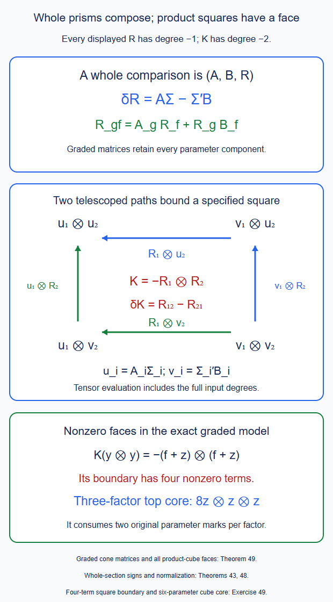
Theorem 49 and Exercise 49. In the exact model the square correction has four nonzero terms at \(y\otimes y\). The three-factor top cube also has a nonzero consumed six-parameter core. Editable SVG.

50. Whole labelled replacement grids and exact coarsening
For each branch \(i=1,\ldots,r\), let \(\Sigma_{i,k}:Y_{i,k}\to X_{i,k}\), \(0\le k\le n_i\), be closed degree-zero sections. At each labelled stage retain the whole closed comparison \[ F_{i,k}=(A_{i,k},B_{i,k},R_{i,k}),\qquad \delta R_{i,k}=A_{i,k}\Sigma_{i,k-1} -\Sigma_{i,k}B_{i,k}. \tag{50.1} \] All maps have their actual source, target and parameter terms. Composition in each branch is (49.3). Write \[ \begin{aligned} A_i[b,a]&=A_{i,b}\cdots A_{i,a+1},\\ B_i[b,a]&=B_{i,b}\cdots B_{i,a+1},\\ R_i[b,a]&=\sum_{k=a+1}^b A_i[b,k]R_{i,k}B_i[k-1,a]. \end{aligned} \tag{50.2} \] Empty products are the typed identities and \(R_i[a,a]=0\). Every original stage label remains in this formula.
A grid vertex is a tuple \(p=(p_1,\ldots,p_r)\). Its section is \(\Sigma_p=\bigotimes_i\Sigma_{i,p_i}\). For \(p\le q\), put \[ \begin{gathered} S(p,q)=\{i:p_i<q_i\},\qquad m=|S(p,q)|,\\ A[q,p]=\bigotimes_i A_i[q_i,p_i],\qquad B[q,p]=\bigotimes_i B_i[q_i,p_i],\\ C_{p,q}=(-1)^{m(m-1)/2}\bigotimes_i V_i,\qquad V_i= \begin{cases} R_i[q_i,p_i],&i\in S(p,q),\\ \Sigma_{i,p_i},&i\notin S(p,q). \end{cases} \end{gathered} \tag{50.3} \] Tensor evaluation always has the full input-degree sign of (49.6). In particular \(|C_{p,q}|=-m\), regardless of the number of consecutive stages on an active branch.
Theorem 50 (all grid faces, original interleavings and coarsening). Equations (50.1)–(50.3) specify one whole family of section-prism faces on every finite labelled replacement grid. It has the following exact boundary. List the active branches increasingly as \(s_1,\ldots,s_m\). For \(i\) active, let \(q^{(i)}\) replace \(q_i\) by \(p_i\), and let \(p^{(i)}\) replace \(p_i\) by \(q_i\). Then \[ \delta C_{p,q} =\sum_{a=1}^m(-1)^{m+a-2} \left( A[q,q^{(s_a)}]C_{p,q^{(s_a)}} -C_{p^{(s_a)},q}B[p^{(s_a)},p] \right). \tag{50.4} \] Thus both the target transport and the source transport occur on each higher face.
The same family is exactly compatible with coarsening consecutive stages. For each active branch choose \(p_i<k_i\le q_i\), and define \[ \ell_i^k=k_i-1,\quad h_i^k=k_i \quad(i\in S(p,q)),\qquad \ell_i^k=h_i^k=p_i\quad(i\notin S(p,q)). \tag{50.5} \] The full coarse cell is precisely \[ C_{p,q} =\sum_k A[q,h^k]\,C_{\ell^k,h^k}\,B[\ell^k,p]. \tag{50.6} \] There is no new choice of a primitive when a grid is regrouped.
Every original interleaving \(\pi\) of its branch stages has the endpoint maps \(A[q,p],B[q,p]\). Its composite section homotopy \(R_\pi\) obeys \[ \delta R_\pi=A[q,p]\Sigma_p-\Sigma_qB[q,p]. \tag{50.7} \] For an adjacent swap of two stages on distinct branches \(i<j\), let \(\pi_{ij}\) perform \(i\) then \(j\) and \(\pi_{ji}\) the opposite order, with the same prefix and suffix. Let \(u,v\) be the vertices just before and after these two stages. Their specified comparison is \[ \begin{aligned} K_{\pi_{ij},\pi_{ji}} &=A_{\rm suffix}C_{u,v}B_{\rm prefix},\\ \delta K_{\pi_{ij},\pi_{ji}} &=R_{\pi_{ij}}-R_{\pi_{ji}} . \end{aligned} \tag{50.8} \] All interleavings are connected by such swaps, keeping the order of the original stages within each branch. Higher cubical faces retain all the compatibilities (50.4), and their iterated boundary terms cancel.
These are equations of whole parameter-comodule maps. They retain the original higher cores under actual joint-input pullback, source restriction and the specified target comparisons. A formal identity stage has \((A,B,R)=(1,1,0)\); inserting it changes no composite and gives zero in a consumed face containing that stage. An original nonidentity stage is not removed merely because its leading maps, or even both entire endpoint maps, are identities.
Proof. Repeated composition in the dg category of Theorem 49 gives (50.2), with \[ \delta R_i[b,a] =A_i[b,a]\Sigma_{i,a} -\Sigma_{i,b}B_i[b,a]. \tag{50.9} \] One can also see this directly: differentiating the \(k\)-th summand replaces \(R_{i,k}\) by (50.1). The intermediate section terms cancel between consecutive stages. Both endpoint terms remain.
Let \(T_m=(-1)^{m(m-1)/2}\). Differentiating the \(a\)-th active factor in (50.3) crosses \(a-1\) degree-minus-one factors. By (50.9), that factor becomes its two transported section values. The tensor with the remaining factors is exactly the indicated lower or upper face in (50.4). The ratio of its two orientation constants is \[ T_m/T_{m-1}=(-1)^{m-1}. \tag{50.10} \] Consequently its total sign is \((-1)^{a-1}(-1)^{m-1}=(-1)^{m+a-2}\), as asserted. The inactive factors are closed sections, so contribute no other terms. This proves the boundary in every dimension, including \(m=1\) and the closed vertex section when \(m=0\).
For the higher boundary cancellations, consider two distinct active branches. Applying their two face operations in either order gives the same transported lower face: maps on distinct tensor factors commute in degree zero, and a source transport on the right commutes with a target transport on the left. Their two alternating face signs are opposite. This pairs every term of the iterated cubical boundary with its opposite. The dimension constants (50.10) multiply both members of each pair by the same factor. Thus all iterated boundary terms cancel, with the actual \(A\)'s and \(B\)'s still present.
Expand each active factor \(R_i[q_i,p_i]\) by (50.2). A term in their tensor product chooses exactly one stage \(k_i\) on every active branch. Its factor is \[ A_i[q_i,k_i]\,R_{i,k_i}\,B_i[k_i-1,p_i]. \tag{50.11} \] The factors before and after each \(R\) have degree zero. Grouping all the left factors and all the right factors therefore introduces no extra sign. The intervening tensor, with the unchanged constant \(T_m\), is \(C_{\ell^k,h^k}\). This gives exactly (50.6). All stage choices occur once. A second coarsening simply regroups this same finite set of choices, so repeated coarsening is strictly consistent.
An axis edge at a grid vertex is (50.1) in its selected branch and the unchanged section in every other branch. Its endpoint maps act in that selected factor. Compose these edge triples by (49.3). Induction gives (50.7). Their endpoint products depend only on the ordered stages within each branch: maps in different branches have degree zero and commute on the tensor. This proves their independence of the interleaving.
For two adjacent stages the two-edge composites are the two telescoped expressions (49.8), tensored with the other branches' current sections. The cell \(C_{u,v}\) is their specified negative tensor of the two \(R\)'s, with the same total input signs. Hence its differential is their difference. Composing a section comparison before these stages right-multiplies this difference by its \(B\)-map; composing one after them left-multiplies it by its \(A\)-map. The other terms of (49.3) agree and cancel. Both transports are closed, proving (50.8). To connect any two interleavings, first sort each branch-label word into increasing branch order by adjacent swaps of unequal labels. These swaps never exchange two stages of the same branch. Reversing one such sorting sequence and following the other gives a finite swap sequence between the two words. Summing (50.8) along it gives their full comparison.
Every tensor permutation used above includes the original parameter and source degrees. Tensoring and composing their full comodule equations gives the same outside coactions by Theorem 49. The actual joint-input shuffle and whole coalgebra pullbacks preserve these equations; no restriction to a prefix rectangle has occurred. For an empty branch list the tensor is the coefficient identity. An outside nullary output mapping complex is untouched by this convention.
Finally a formal identity stage has zero \(R\) and identity transports. Its terms in (50.2) and (50.6) are therefore zero or unchanged as stated. This argument does not apply to an original nonidentity stage with a possibly nonzero closed section homotopy. Its original label and whole \(R\) remain. This proves all assertions. \(\square\)
A compatible native grafting category can contain an original simultaneous arrow for which an intermediate axis state is absent. This theorem does not replace that arrow by a path through absent states. Its application to a native graft requires the actual whole parameter map and its source and target graph maps on that original domain.
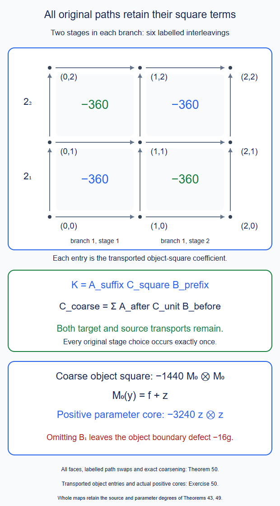
Theorem 50 and Exercise 50. The four unit squares give the whole coarse square after their actual transports. The positive parameter core differs from the object value times the original homotopy. Editable SVG.

51. Original joint strings in their fixed outer operator corner
Use the actual native partial-forest functors of Theorem C.47.2.1, with their full composition comparisons, and the compatible graft family of Theorem C.47.3.1. Use one face-compatible recording of this entire native partition family, as in C.48.2, throughout. An execution arrow \(f:x\to y\) gives a functor \(F_f:A_x\to A_y\) between its actual frontier categories. It is not a Nat cochain between two objects in a fixed operator corner. Native comparisons between composites of these functors are the Nat cochains.
Fix an original initial state \(a\), its completed terminal state \(b\), and a string in \(P_a=(a\downarrow\mathcal E_n)\): \[ u_0:a\to x_0 \xrightarrow{g_1}x_1\longrightarrow\cdots \xrightarrow{g_q}x_q,\qquad u_j=g_j\cdots g_1u_0. \tag{51.1} \] Let \(h_q:x_q\to b\) be the actual terminal arrow. The completed execution string is \[ \tau_\sigma=(u_0,g_1,\ldots,g_q,h_q). \tag{51.2} \] It retains every original selected-edge and execution label. An endpoint arrow can be a formal identity; an original proper arrow with identity operator image is still a proper arrow.
Let \(\mathcal C_q\) be the poset of subsets \(C\subseteq\{0,\ldots,q\}\). A chosen \(j\in C\) places a cut at \(x_j\). Compose the original arrows inside each consecutive block, obtaining actual arrows \(f_1^C,\ldots,f_{\ell(C)}^C\) from \(a\) to \(b\). Define the genuine functor \[ H_{\sigma,C} =F_{f_{\ell(C)}^C}\cdots F_{f_1^C}:A_a\to A_b . \tag{51.3} \] This is composition of the given functors, not a tensor product of primitive \(A_\infty\)-functors.
Theorem 51 (the original cut-operator family and its marked graph sections). All the functors (51.3) lie in the same actual outer corner \(\operatorname{Fun}_\infty(A_a,A_b)\), on arbitrary original input objects and full mapping words. In particular \[ H_{\sigma,\varnothing}=F_{a\to b},\qquad H_{\sigma,\{j\}}=F_{x_j\to b}F_{u_j}. \tag{51.4} \] The original full block-composition diagram specifies the whole normalized parameter map \[ \mathcal S_\sigma: B(k\mathcal C_q)\longrightarrow B_{\rm full}\operatorname{Fun}_\infty(A_a,A_b). \tag{51.5} \] For \(C\subset C'\), its edge is the original comparison from the coarse block functors to their refinement, with all original source and target whiskerings. Its higher components are the components of that same native block-partition diagram. On a \(p\)-arrow cut flag, its one-output Nat component has ordinary degree \(1-p\). In particular a single block-expansion comparison has degree zero.
Deleting \(x_i\) from (51.1) identifies its completed cut family with the face of (51.5) on which \(i\notin C\). The cuts after \(i\) are reindexed. At the first face the new first arrow is \(g_1u_0\); at the last face the new terminal arrow is \(h_qg_q\). Thus no endpoint functor is silently removed. Prepending or appending an actual endpoint arrow retains its entire source pullback or target whiskering.
For a fixed actual outer functor \(W:A_b\to D\), form \[ e_\sigma=\operatorname{ev}_{A_a,A_b} (\mathcal S_\sigma\otimes1): B(k\mathcal C_q)\otimes B_{\rm full}A_a \longrightarrow B_{\rm full}A_b . \tag{51.6} \] Theorems 25, 27 and 43 applied to this exact coalgebra map give the whole normalized marked section for the graft of \(W\) with \(H_{\sigma,C}\), including its projection and specified homotopies. For an original edge comparison \(\xi:H_{\sigma,C}\to H_{\sigma,C'}\), its section component is \[ R_\xi(k,c)= -(-1)^{|k|} \sum_{c=uv}\ \sum_{e_\sigma(s\xi,u)=\sum a_z z} a_z(k;z;1)\otimes v . \tag{51.7} \] Here \(s\xi\) denotes the original cut-edge input through (51.5), with its whole evaluated value. Its degree is \(-1\), its orientation is the one in (43.2), and all higher cut-flag components come from that same full section. On \(p\) original cut arrows and \(L\) source letters the evaluated output length is at most \(p+L\). These sections restrict to the indicated full faces.
An original compatible grafting string uses this construction on its whole joint string, with its original graft comparisons. It is not obtained by clipping independent factor shuffles. If the terminal image is a completed graft, its subsequent original joining-seam arrow to the completed corolla is retained in (51.2), with its full operator and comparisons.
Proof. The successive frontier categories of \(\tau_\sigma\) match by the actual source and target of every execution arrow. Merging consecutive execution arrows gives their original selected-edge union and final execution ideal, as in C.47.1 and Theorem 46. Consequently the block \(f_j^C\) is an actual arrow between the two frontier categories at its endpoints. The output category of one block is exactly the input category of the next. Composing the block functors therefore gives (51.3), on all of \(A_a\), with target \(A_b\). No intermediate input is restricted to an image of an earlier convolution.
With no cut, the block is the original unique arrow \(a\to b\). With a single cut at \(x_j\), its prefix composite is \(u_j\) and its suffix is the unique arrow \(x_j\to b\). This proves (51.4), including their actual object and mapping-input types.
Adding one cut expands precisely one native block functor into its two consecutive partial forests. C.47.2.1 provides that full normalized comparison. Whisker it by the preceding and succeeding block functors using the actual C69 horizontal map. This retains their higher Taylor values. For a flag of cuts use the corresponding entire native partition comparison: all its groupings execute the same original partial forests, and C.47.2.1 supplies their whole higher diagram. The actual recording of this fixed-outer-type family in C.48.2 is (51.5). Thus its chain and coalgebra equations are those of the supplied entire diagram, rather than equations inferred from chosen edge values. The faithful typed extension of Theorems 36–37 retains these same components in the common operator category. It does not change their outer corner.
A \(p\)-arrow input in the cut bar has suspended degree \(-p\). Its one-output operator letter also has suspended degree \(-p\), so its unsuspended Nat cochain has degree \(1-p\). This grading is separate from the length of the original execution string (51.1).
When \(x_i\) is deleted, the two execution arrows meeting there are composed. If the cut at \(x_i\) is absent, they already lie inside one block. The surviving block composites and every surviving cut label are therefore exactly those for the shorter completed string. Their entire native comparison family is the same full face of the original block-partition diagram. This proves the face rule on all cut flags, not just on its objects. It also proves the first and last rules with the displayed endpoint composites.
Prepending an actual source arrow replaces the first block by its original composite with that arrow. Its comparison with the corresponding whiskered functor is the original prefix comparison; Theorem 37 uses the full source bar map. Appending a target arrow gives the original suffix comparison and the full C69 target whiskering. All their joint comparisons are faces of the longer completed string's native partition family. They are not strict identifications of separately chosen enhanced models.
By C.69.1.1 and (51.5), equation (51.6) is an actual dg coalgebra map. A cofree uncurved parameter functor on \(p\) original arrows has no output word longer than \(p\): each output letter consumes a nonempty consecutive input block. Evaluation then has length at most \(p+L\), by C69's marked bound. Thus Theorems 25 and 43 apply word by word to this entire input, with finite formulas and their full coaction signs. The middle quotient is exactly Theorem 27's auxiliary quotient. Equation (51.7) is (43.2) with \(|\xi|=0\); its minus sign and coefficient sign use the suspended degree \(|s\xi|=-1\). The complete section equation gives all the higher cut-flag components and their unary terms together. Composing (51.6) with a full face restriction gives the shorter string's very same map, so its graph formulas restrict as claimed.
Finally take an original string in the full compatible graft category. C.47.3.1 sends its arrows and all their composites to actual grafted partial forests, retaining every embedded selected edge and joining seam. Apply the preceding construction to that grafted string. Its comparisons with the factor block forests are the supplied full native graft comparisons, carried by the genuine common input and whole C69 operations of Theorem 37. No intermediate factor state outside the compatible category is inserted. The terminal image, if different from the completed corolla, keeps its actual outgoing seam arrow. This proves all assertions. \(\square\)
These are actual marked graph sections for the original cut-operator families in their fixed outer contexts. Identifying their graph maps with every expanded-edge layout and interleaved native projection family requires the corresponding common graph comparison. The typed cut presentation alone does not assert that identification.
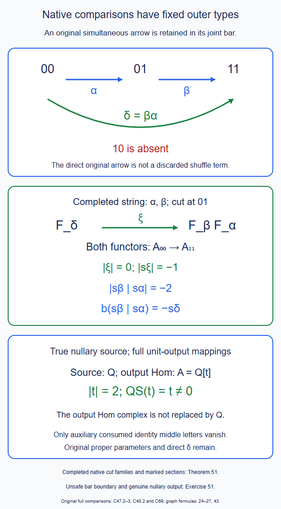
Theorem 51 and Exercise 51. Execution words and native Nat comparison marks have different degrees. The missing outer-first state is never inserted. Editable SVG.

52. The specific section-comparison projection and relative lifts
An object of \(\mathscr S\) is a specified full special contraction \[ X\ \underset{I}{\overset Q{\rightleftarrows}}\ Y,\qquad QI=1,\quad \delta H=1-IQ,\quad H^2=HI=QH=0 . \tag{52.1} \] The mapping complexes and composition of \(\mathscr S\) are exactly Theorem 49, with section \(I\). Thus a degree-\(r\) map is \((A,B,R)\). Both \(A\) and \(B\) have degree \(r\); the degree of \(R\) is \(r-1\). Its differential is \[ \partial(A,B,R)=(\delta A,\delta B,AI-I'B-\delta R). \tag{52.2} \] Let \(\mathscr Y\) have the same labelled objects but mapping complexes \(\operatorname{Hom}(Y,Y')\). The labels distinguish different specified contractions even when their \(Y\)'s agree. Use the full typed comodule maps throughout.
Theorem 52 (a contracted mapping kernel and its relative coherent lift). The projection \[ \Pi:\mathscr S\longrightarrow\mathscr Y,\qquad \Pi(A,B,R)=B \tag{52.3} \] is a unital dg functor, graded-surjective and a quasi-isomorphism on every indicated mapping complex. On each such complex define \[ \begin{aligned} \jmath(B)&=(I'BQ,B,0),\\ \mathfrak h(A,B,R) &=\bigl((-1)^rAH+RQ,\ 0,\ 0\bigr). \end{aligned} \tag{52.4} \] These are a degree-zero chain section and degree-\(-1\) homotopy, respectively, with exact identities \[ \begin{gathered} \Pi\jmath=1,\qquad \partial\mathfrak h+\mathfrak h\partial=1-\jmath\Pi,\\ \mathfrak h^2=\mathfrak h\jmath=\Pi\mathfrak h=0 . \end{gathered} \tag{52.5} \] The section \(\jmath\) preserves composition. At an object its unit defect is the actual boundary \[ 1_{\mathscr S}-\jmath(1_Y) =(1_X-IQ,0,0)=\partial(H,0,0). \tag{52.6} \] In particular \(\Pi\) is unital; the mapping section \(\jmath\) need not be unital. Only \(\ker\Pi\) is contracted by \(\mathfrak h\). The target mapping complex remains a retract.
Let \(\mathcal R=T_S(V)\) be a free relative graded category with split coefficient category \(S\) and generator filtration \(V=\bigoplus_{\ell\ge1}V_\ell\). On \(V_\ell\), suppose \[ d_{\mathcal R}=d_1+\gamma,\qquad \gamma(V_\ell)\subset T_S(V_{<\ell}),\qquad d_{\mathcal R}^2=0 . \tag{52.7} \] Here \(d_1\) is the full unary differential on its generator complex. Given a strict unital dg functor \(F:\mathcal R\to\mathscr Y\), and the displayed contraction at each of its objects, there is a strict unital dg lift \[ \widetilde F:\mathcal R\to\mathscr S,\qquad \Pi\widetilde F=F . \tag{52.8} \] It retains every previously specified lift on a differential-stable collection of free generator subcomplexes, provided their full values agree on intersections. Prescribed scalar maps and units are retained in the coefficient category. Thus the lift keeps the given \(B\)-cochains exactly while constructing their graph maps \(A\) and section cochains \(R\) together.
For the original cut families (51.5), take the graph direction and graded opposite signs of Theorems 9 and 36. At a cut vertex \(C\), let \(X_C\) be the actual edge-bar string of the block functors in (51.3), and let \(Y_C=\mathcal K_{H_{\sigma,C}}\). Theorem 33 gives their specified full \(Q_C,I_C,H_C\). The original entire native cut-operator family then has a lift (52.8) to these objects, with its native graph-direction \(B\)-cochains unchanged. Such lifts can be chosen together over the cut-deletion faces of Theorem 51. Every already prescribed whole face lift can be retained when its stated intersection conditions hold.
The prescribed one-edge native map of Theorem 40 already has an exact lift through this projection. Regard its source full contraction as an object of \(\mathscr S\), and its flat target \(W\) as the identity contraction. For its entire original comparison \(\widehat\kappa:Y\to W\), the triple is \[ \jmath(\widehat\kappa) =(\widehat\kappa\,\widehat Q,\widehat\kappa,0) =(\widehat G,\widehat\kappa,0). \tag{52.17} \] Thus preserving this full edge triple preserves every mixed parameter core of the original native edge map, including (40.9).
This cut-face assertion does not by itself identify the lifted \(A\)'s with every prescribed native one-edge map or every fixed product/graft face. Those additional full faces must be specified and shown to agree before the relative assertion applies.
Proof. Theorem 49 proves that (52.2) and its composition form a dg category. Projection to \(B\) preserves their differential, products and identity, so (52.3) is a unital dg functor. Since \(Q\) and \(I'\) are closed and \(QI=1\), \[ (I'BQ)I-I'B=0,\qquad \partial\jmath(B)=\jmath(\delta B),\qquad \Pi\jmath(B)=B . \tag{52.9} \] This proves graded surjectivity and the chain-section claim. For composable \(B,B'\), \[ I''B'Q'I'BQ=I''B'BQ, \tag{52.10} \] and the third components of both lifted products are zero. This proves multiplicativity of \(\jmath\).
Write \(E_r(A,R)=(-1)^rAH+RQ\). The first component of \(\partial\mathfrak h+\mathfrak h\partial\) is \[ \delta E_r(A,R) +E_{r+1}(\delta A,AI-I'B-\delta R) =A-I'BQ , \tag{52.11} \] by the exact relative-pair identity (47.3). Its second component is zero. Its third component is \(E_r(A,R)I=R\), again by (47.3). Together these are \(1-\jmath\Pi\) on \((A,B,R)\). Moreover \[ E_r(A,R)H=(-1)^rAH^2+RQH=0 , \tag{52.12} \] so \(\mathfrak h^2=0\). For \(\jmath(B)\), its first term contains \(QH=0\) and its \(R\)-term is zero. Thus \(\mathfrak h\jmath=0\); projection gives \(\Pi\mathfrak h=0\). This proves (52.5). Equation (52.6) is \(\delta H=1-IQ\) and \(HI=0\). On \(\ker\Pi\), (52.5) is a contraction to zero; on the whole mapping complex it is a deformation retraction onto the actual target complex. This proves precisely the stated quasi-isomorphism.
Here is the relative lifting argument, with the generator unary differential retained. Fix the coefficient lift and suppose the functor has been defined below length \(\ell\). Choose a graded \(S\)-linear lift \(v\) of \(F|_{V_\ell}\), extending all prescribed generator values. On the mapping complex out of \((V_\ell,d_1)\), use \[ Df=\partial f-(-1)^{|f|}f d_1,\qquad o=Dv-\widetilde F\gamma . \tag{52.13} \] The defect \(o\) has degree one and takes values in \(\ker\Pi\), because the original \(F\) is a chain map. On the new generators, square-zero in the source gives \[ d_{\mathcal R,<\ell}\gamma+\gamma d_1=0 . \tag{52.14} \] The lower lift is already a chain map, so \(D(\widetilde F\gamma)=0\). Consequently \(Do=0\).
Postcomposition by \(\mathfrak h\) contracts this exact Hom kernel, including its source unary differential: \[ D(\mathfrak h f)+\mathfrak h(Df)=f . \tag{52.15} \] Indeed the two terms involving \(f d_1\) have coefficients \(-(-1)^{|f|-1}\) and \(-(-1)^{|f|}\), which cancel. The remaining terms are \((\partial\mathfrak h+\mathfrak h\partial)f=f\) in the kernel. There is no additional sign in postcomposition by this target contraction. Thus \[ v_{\rm new}=v-\mathfrak h o,\qquad Dv_{\rm new}=\widetilde F\gamma,\qquad \Pi v_{\rm new}=F|_{V_\ell}. \tag{52.16} \] Extend this map multiplicatively to the free category. Its dg equation on all words follows from its equation on generators and the derivation rule. Induction defines (52.8) on every finite word.
On a prescribed generator subcomplex \(W_\ell\), the defect in (52.13) is zero. It is therefore a closed map from the quotient complex \(V_\ell/W_\ell\) to \(\ker\Pi\). Equation (52.15) contracts this quotient Hom as well, and (52.16) changes none of its prescribed values. This proves the relative statement. All scalar maps are assigned at the outset, with the actual identity of \(\mathscr S\). The nonunital mapping section \(\jmath\) is used only to obtain graded lifts of new generators; it never replaces these prescribed identities.
For the cut application, the finite directed category \(\mathcal C_q\) has only identity endomorphisms. Its normalized relative bar uses all nonidentity original cut arrows. Merging consecutive proper arrows remains a proper arrow. For graph directions use \(\mathcal C_q^{\rm op}\) and the higher graded-opposite signs of Theorem 9. Its unital cobar is a free graded category on the desuspensions of nonempty bar strings. Filter generators by their original string length. Unary differentials preserve length, bar mergers lower it, and proper coproducts split into products of smaller generators. This is exactly (52.7). The original whole parameter map (51.5), followed by the graph representation in its graded opposite direction, gives the strict dg functor \(F\) into \(\mathscr Y\). Its values are the original full graph maps of the native cochains, rather than chosen representatives of their classes. Thus (52.8) applies to the actual objects \(X_C,Y_C\).
On the face deleting an original completed-string vertex \(x_i\), the allowed cut vertices all omit \(i\). Its bar generators are a subset of the full generators. That subset is stable under the unary and merger terms; each proper coproduct uses strings in the same face. A union of such faces has the same property. The objects \(X_C,Y_C\) on a shared face are the same block words, by Theorem 51. Choose their fixed contraction by that block word, so the restricted objects of \(\mathscr S\) agree as well. The original \(B\)-values agree on these faces because one face-compatible native recording was fixed in Theorem 51. Induct first on completed-string dimension and then on generator length. At each step the already assigned cut-deletion faces form exactly such a differential-stable free subcategory. Their intersections have the previously assigned values. The relative construction therefore retains them all. Countably many finite strings are handled by this same compatible induction; each original finite generator is assigned once.
For (52.17), the target section is \(1_W\), so the definition of \(\jmath\) gives its first displayed triple. Its first entry is precisely Theorem 40's prescribed full \(\widehat G\). Its third differential is zero by the entire identity \(\widehat QI=1\): \[ \widehat G I-\widehat\kappa =\widehat\kappa(\widehat QI-1)=0. \tag{52.18} \] This equality uses the complete parameter maps. It does not replace \(\widehat\kappa\) by its object component, and it does not remove its mixed cuts. The triple may therefore be prescribed wherever it is an edge of the relative free source. Its occurrence in more than one such face requires the same entire triple on their overlap.
Every map in (52.4), (52.13) and (52.16) is a full typed cochain. Its products preserve the given outside coactions and source-unit normalization. The specific \(R\)-values on prescribed faces are unchanged, including their closed parts. Proper original parameters with identity-valued images remain original source generators throughout this induction. No fixed product or graft covariance equation follows just from the existence of a lift through \(\Pi\); its stated relative hypotheses are what preserve such equations when their entire compatible faces have been provided. This proves all assertions. \(\square\)
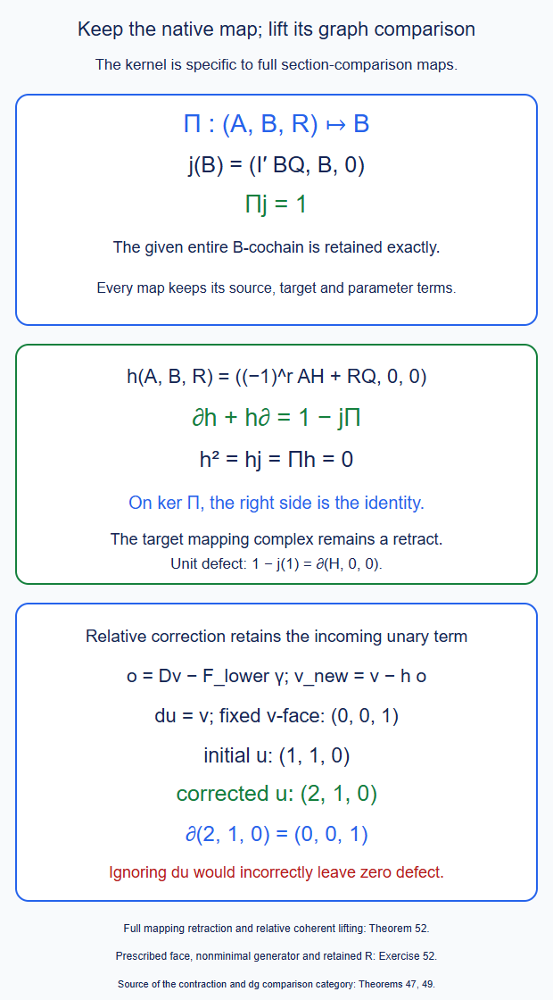
Theorem 52 and Exercise 52. The mapping retraction has an exact unit defect; the lifted functor uses the actual prescribed identities. The target mapping complex is retained as a retract. Editable SVG.

53. A native block replacement inside a partially collapsed graph
Let \(e\) join two adjacent operation vertices of a specified native block string or rooted edge-bar graph \(T\). First collapse it to the literal composite vertex (33.1). Call the resulting graph \(L\). Retain a supplied entire native comparison from the corresponding flattened block functor to that literal composite. Replacing that one vertex by the native block gives a graph \(L'\). All the other vertices, edge bars and original frontier categories retain their original labels.
Use graph directions throughout: \[ \widehat Q_e:Z_T\to Z_L,\qquad V_\alpha:Z_L\to Z_{L'},\qquad B_\alpha:\mathcal K_{f_L}\to\mathcal K_{f_{L'}}. \tag{53.1} \] Here \(V_\alpha\) is the entire vertex graph action of the original comparison, including its original surrounding whiskerings. The endpoint map \(B_\alpha\) is that same comparison under full C69 substitution into the represented composite. The symbol \(\alpha\) can denote a whole original parameter family, with its full comparison prism. Its local edge categories are fixed on the stated refinement. The parameter input is the actual entire compatible coalgebra map, as in Theorems 37 and 51.
Let \(I_T,I_L,I_{L'}\) be their full marked multicut sections. Identify the represented endpoints for \(T\) and \(L\) using their literal, equal composite coalgebra map; denote that endpoint by \(Y\). Put \(Y'=\mathcal K_{f_{L'}}\).
Theorem 53 (the prescribed elementary partial-replacement triple). On this entire original parameter and source encoding, \[ \widehat Q_e I_T=I_L . \tag{53.2} \] The original marked multicut section supplies a definite degree-\(-1\) comparison \(R_\alpha:Y\to Z_{L'}\), with \[ \delta R_\alpha=V_\alpha I_L-I_{L'}B_\alpha . \tag{53.3} \] Consequently the actual partial native block replacement has the closed section-comparison triple \[ \begin{gathered} A_e=V_\alpha\widehat Q_e:Z_T\to Z_{L'},\\ (A_e,B_\alpha,R_\alpha)\in\mathscr S,\qquad \delta R_\alpha=A_eI_T-I_{L'}B_\alpha . \end{gathered} \tag{53.4} \] The graph map \(A_e\) contracts exactly the selected edge, then applies the original native block comparison. It does not collapse the other edge bars to their represented endpoint. Its \(B_\alpha\) and \(R_\alpha\) retain their entire original components, including the closed part of the supplied section homotopy.
Choose full contraction paths \(Q_T,H_T\) and \(Q_{L'},H_{L'}\) with these very sections. The prescribed projection square then has the comparison \[ \begin{aligned} D_e&=Q_{L'}A_e-B_\alpha Q_T,\\ J_e&=D_eH_T+Q_{L'}R_\alpha Q_T,\\ \delta J_e&=D_e,\qquad J_eI_T=Q_{L'}R_\alpha . \end{aligned} \tag{53.5} \] No naturality of the two independently selected kernel homotopies is asserted or required.
The entire triple restricts to any full native parameter face with the same local data. In particular its appearances on the cut-deletion faces of Theorem 51 are the same triple whenever that elementary cut survives. It also extends through unchanged surrounding graph branches by its full outside module and coaction maps, with the genuine input shuffle and its Koszul signs. These are comparisons on the specified common graph refinement.
In the cut-family lift of Theorem 52, all elementary native cut edges can therefore be prescribed by their actual triples (53.4), together with the cut-deletion faces. The lift retains these edges and every original higher \(B\)-component. This does not require their two possible edge composites on a square to agree strictly; the original higher cut generators remain.
Proof. Use the actual local one-edge construction of Theorem 33. On parameterized inputs this is Theorems 25–27, with the whole marked evaluations in its child and other input slots. Its full outer-operator projection includes the positive parameter components of (40.5). Thus \(\widehat Q_e\) here is the complete map, rather than the object projection applied independently to every parameter value. Its target is the literal composite, with the original input and output coactions.
By the full multicut identity of Theorem 44, expanding edge \(e\) last or first gives exactly the same entire section. In the order which singles out that edge it is \[ I_T=S_e I_L,\qquad \widehat Q_e S_e=1 . \tag{53.6} \] The local \(S_e\) uses the complete evaluated child prefix and the actual identity coefficient, with every unconsumed original parameter and source tail retained. The identity in (53.6) is the full Yoneda section identity of Theorems 24–27, also used in Theorem 33. Applying \(\widehat Q_e\) proves (53.2). Equivalently, the inserted coefficient identity makes every higher consumed parent core vanish, while the surviving linear unit core returns the original cut. All mixed parameter terms are part of that cancellation.
For the native vertex replacement, keep the collapsed graph \(L\) fixed as a labelled graph and vary its selected vertex by the actual entire \(\alpha\)-prism. The other vertex data are the same original data in their matching corners. The native comparison belongs to that local fixed-profile functor category by C.47.2 and Theorem 51. Its source and target whiskerings are the full operations of Theorem 37. The strict graph action of Theorem 34 gives its graph-direction crossing map \(V_\alpha\). At the represented endpoint, recursive full evaluation gives exactly \(B_\alpha\). The C69 identity (44.3) identifies its nested evaluation with this whole whiskered native comparison, on every original input word. It retains positive target Taylor values.
Apply the full section of Theorem 44 to this vertex prism and its original parameter input. It gives one entire interval section, with diagonal sections \(I_L,I_{L'}\) and crossing maps \(V_\alpha,B_\alpha\). Let \(R_\alpha\) be its off-diagonal part in the orientation of (48.3)–(48.4). Theorem 48 proves (53.3) and its degree, including all original higher parameter terms. For a single ordinary homogeneous vertex mark \(\theta\) of degree \(r\), its local core is the actual component \(R_\theta=-W_{s\theta}\) of (43.2), of degree \(r-1\). Extraction past a coefficient \(k\) uses the sign \[ (-1)^{(r-1)|k|}. \] For several original marks use the same entire section (43.4), inserted into the multicut of the other edges. No unrelated primitive is chosen for any of these components.
The native comparison, the literal edge projection and their parameter maps are closed degree-zero whole maps. Their product \(A_e\) is therefore closed, and (53.2) gives \[ A_e I_T-I_{L'}B_\alpha =V_\alpha I_L-I_{L'}B_\alpha =\delta R_\alpha . \tag{53.7} \] This proves the actual triple (53.4) in the dg category of Theorems 49 and 52. For the projection square, \(D_e\) is closed and \[ D_eI_T =Q_{L'}(A_eI_T-I_{L'}B_\alpha) =\delta(Q_{L'}R_\alpha). \tag{53.8} \] Theorem 47 gives exactly (53.5). This uses the fixed \(Q_T,H_T\) and \(Q_{L'},H_{L'}\) as they stand. No square between separately chosen homotopies was used.
Here are the local restriction and context assertions. On a full face of the original parameter family, each marked evaluation is composed with the same restricted coalgebra map. All local sums enumerate the same cuts, and each retained word retains its original label. Thus the restrictions of \(\widehat Q_e,V_\alpha,B_\alpha,R_\alpha\) are precisely the displayed constructions for those same data on that face. On a cut-deletion face of Theorem 51 where the elementary replacement survives, its two block functors and their original comparison are the same actual block word and mark. The graph outside it is the same remaining block string. Hence its occurrences have the same full triple.
To insert an unchanged graph branch, tensor the local maps with the identity on its original coefficient and input factors, then apply the specified graded permutation into vertex order. The local chain, module and coaction equations ensure that every differential involving that branch is retained in the two orders. An incoming bar action uses the original input coaction; an outgoing action uses the full output module map. Their equality is exactly the outside compatibility of Theorems 25–27 and 33. The extraction sign is the Koszul sign of the same final list of original factors. The marked multicut section of the larger graph agrees with that insertion by Theorem 44. For several genuine input branches, use the joint dg shuffle of Theorem 30 before evaluation. Thus no tensor product of primitive \(A_\infty\)-functors, or unavailable axis intermediate state, enters this construction.
For the last cut-family assertion, assign every elementary cut edge its closed degree-zero triple (53.4). A one-arrow cobar generator has zero differential because its original cut arrow is closed and has no proper merger or coproduct. Hence these assignments define a dg functor on the free subcategory generated by those edges. Their values on previously assigned cut-deletion faces agree by the restriction assertion just proved. The union with the previously assigned deletion-face generators is differential-stable. Products mixing these generators are assigned multiplicatively in the free category; no equality between two distinct edge paths is imposed at this stage. Apply Theorem 52 relative to this subcategory. At every remaining generator the projected value is its original entire \(B\)-cochain, and the correction changes neither the prescribed edges nor deletion faces. Induction over completed-string dimension retains their common assignments.
For example, a two-arrow cut generator has degree \(-1\), and its original projected component is the supplied native degree-\(-1\) comparison. Its lift must satisfy the entire equation \[ \partial\widetilde F_{ba} =\widetilde F_{b\circ a} -\widetilde F_b\widetilde F_a . \tag{53.9} \] The right side uses the actual prescribed edges wherever they are elementary. The projection is the original native boundary equation. Its remaining defect is in the specific kernel of Theorem 52 and is corrected by (52.16), including all mapping inputs. Thus this construction retains the native higher comparison instead of imposing equality of its two endpoint paths.
The normalization is the actual auxiliary middle quotient of Theorem 27. It removes a consumed literal identity middle letter, while the original parameter and source bars remain. A true nullary child has the empty input cut and its entire output mapping complex. The same arguments therefore include zero inputs and proper identity-valued parameters. This proves all assertions. \(\square\)
Theorem 53 gives actual elementary triples with their local contextual restrictions. The relative lift of Theorem 52 must also retain all prescribed higher product and graft subfamilies on their common overlaps. Equality of these elementary restrictions alone does not specify every higher relative face.
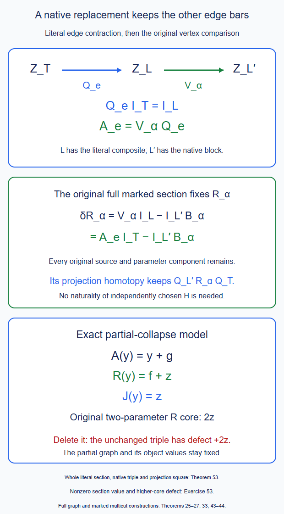
Theorem 53 and Exercise 53. In the exact model the partial graph map sends \(y\) to \(y+g\), while its original section value is \(f+z\). Its higher section core cannot be discarded. Editable SVG.

54. Graft whole section families through the expanded joining seam
For matching outside types, write \(X_1\star X_2\) for the literal graph graft of Theorem 32, with its joining bar still present. This is the ordinary bar-bicomodule composition, with all intermediate objects and the auxiliary middle quotient retained. It applies to the full typed module/comodule maps used here, including homogeneous homotopies. No represented endpoint projection is implicit in the symbol \(\star\). For separate parameter families the initial parameter coalgebra is their genuine tensor coalgebra. Restriction from another joint index requires its actual whole coalgebra map into this input. Deconcatenation is not being used as a coalgebra diagonal from a single parameter bar into that tensor input.
Suppose \(Q_i,I_i,H_i:X_i\rightleftarrows Y_i\) are full special contractions. Their \(Y_i\)'s are the actual represented graph objects of the block functors, with matching seam category. The object \(Y_1\star Y_2\) is still an expanded two-block graph. It is not their single represented composite.
Theorem 54 (the whole expanded-seam graft family). Literal grafting on these full maps is a dg bilinear operation, with its graded interchange sign. There is a full special contraction \[ \begin{gathered} X_1\star X_2 \ \underset{I_\star}{\overset{Q_\star}{\rightleftarrows}}\ Y_1\star Y_2,\\ Q_\star=Q_1\star Q_2,\qquad I_\star=I_1\star I_2,\\ H_\star=H_1\star1_{X_2}+(I_1Q_1)\star H_2 . \end{gathered} \tag{54.1} \] The seam differential is part of both graph objects. For three consecutive blocks, either consecutive regrouping of (54.1) gives exactly \[ \begin{aligned} H_\star={}&H_1\star1\star1\\ &+(I_1Q_1)\star H_2\star1\\ &+(I_1Q_1)\star(I_2Q_2)\star H_3 . \end{aligned} \tag{54.2} \] The corresponding \(Q_\star,I_\star\) also agree.
Let \((A_i,B_i,R_i)\) be closed degree-zero whole section comparisons between two such systems. Their expanded-seam comparison is \[ \begin{aligned} A_\star&=A_1\star A_2,\qquad B_\star=B_1\star B_2,\\ R_\star&=R_1\star(A_2I_2)+(I_1'B_1)\star R_2,\\ \delta R_\star&=A_\star I_\star-I_\star'B_\star . \end{aligned} \tag{54.3} \] Every product in this formula is the product of whole maps; its parameter cuts and its tensor evaluation signs are retained. All higher independent-product faces are given by Theorem 49 with \(\otimes\) replaced by this dg graft operation. Their coarsening and ordered interleavings are the full families of Theorem 50.
Now retain the actual joining-seam contraction \[ Y_1\star Y_2 \ \underset{s}{\overset p{\rightleftarrows}}\ Y_{12},\qquad \delta h=1-sp , \tag{54.4} \] where \(Y_{12}\) represents the literal composite block functor. Its primed counterpart has maps \(p',s',h'\). Use the original full C69 horizontal comparison \(B_{12}:Y_{12}\to Y_{12}'\), with all its mixed parameter cores. The whole marked joining-seam section supplies the specific \(\eta\) with \[ \delta\eta=B_\star s-s'B_{12}. \tag{54.5} \] Thus the actual grafted contraction and its comparison to the represented endpoint are \[ \begin{gathered} Q=pQ_\star,\qquad I=I_\star s,\qquad H=H_\star+I_\star h Q_\star,\\ R=R_\star s+I_\star'\eta,\qquad \delta R=A_\star I-I'B_{12}. \end{gathered} \tag{54.6} \] In particular the original joining-seam homotopy \(\eta\) remains, even if some leading maps agree. An additional native comparison with a chosen flattened operation is carried by Theorem 53 with its original whole map.
These formulas construct entire coherent families on their stated joint parameter coalgebra. For a three-block overlap, the two expanded graft presentations and their whole product sections are identical under the actual tensor and cotensor associativity identifications. Their joining sections are the same full multicut section of Theorem 44. This does not assert equality of the two final joining-seam projection paths. Those paths retain the full comparisons of Theorems 29, 35 and 42.
Proof. Before taking the seam quotient, the graft is a tensor of its original coefficient factors and the cofree seam bar, followed by the ordinary cotensor equalizer of Theorem 32. An outer map preserves its full input coaction; an inner map preserves its strict output action. They therefore induce a map of this equalizer. For homogeneous maps \(f,g\), its tensor sign before the root-first insertion is \((-1)^{|g||x|}\) on \(x\otimes z\). The further insertion sign is exactly (32.6).
The tensor differential obeys the dg Leibniz rule. The last-letter seam term is (32.7): its two orders with the inner map agree by graded output linearity, and its orders with the outer map agree by the full input-coaction equation. These are the remaining terms of that same Leibniz rule. Thus \[ \begin{aligned} \delta(f\star g)&=(\delta f)\star g +(-1)^{|f|}f\star\delta g,\\ (f'\star g')(f\star g) &=(-1)^{|g'||f|}(f'f)\star(g'g). \end{aligned} \tag{54.7} \] If an auxiliary middle identity is consumed by a normalized positive core, that term is zero; otherwise it remains an auxiliary identity in the resulting seam word. Thus the maps descend to the same middle quotient. Neither an outside source bar nor an output coefficient is removed.
Differentiate \(H_\star\) using (54.7). Its two contributions are \[ (1-I_1Q_1)\star1 +(I_1Q_1)\star(1-I_2Q_2) =1-I_\star Q_\star . \tag{54.8} \] The identity \(Q_\star I_\star=1\) follows from the two individual section identities. The two cross terms in \(H_\star^2\) contain respectively \(H_1I_1\) and \(Q_1H_1\); both vanish. Its other terms contain \(H_1^2\) or \(H_2^2\). Likewise \(H_\star I_\star=Q_\star H_\star=0\). This proves every special contraction identity. Expanding either three-block regrouping gives exactly (54.2); the two summands at a binary step partition the same ordered list of three factors. The same expansion works for any finite ordered list.
For (54.3), differentiate its two summands. Since \(|R_i|=-1\) and all \(A_i,B_i,I_i\) are closed, the result is \[ \begin{aligned} &(A_1I_1-I_1'B_1)\star(A_2I_2)\\ &\quad+(I_1'B_1)\star(A_2I_2-I_2'B_2) =A_\star I_\star-I_\star'B_\star . \end{aligned} \tag{54.9} \] The middle terms cancel as entire maps. For every higher product face, apply the dg multilinear graft functor just proved to the tensor interval complexes in Theorem 49. Its differential is their alternating cubical boundary, with the full degree of each preceding input. Associativity of the literal insertion is (32.8), so their ordered regrouping and coarsening are exactly Theorem 50. This includes all the degree-minus-two and higher mixed faces.
For coherent parameter diagrams, perform this construction on the entire cofree parameter comodules. The cone description (49.16) packages each complete section and its original higher components as one closed map. Tensoring those maps and taking the same cotensor equalizer gives a closed full section on the expanded-seam diagram. Every coefficient core is obtained by its original parameter cuts; the tensor coproduct supplies their Koszul signs. Projecting this closed map to each core gives all the higher section equations together. No reconstruction from just the degree-zero edges is involved.
The endpoint family is still expanded at this point. Its actual functor parameters and genuine common-input bars give the joining section \(s\) of Theorems 25–27. The represented endpoint comparison is the whole C69 horizontal coalgebra map, evaluated on precisely these parameters. The marked joining-seam section of Theorems 43–44 is therefore an entire prism with graph crossing \(B_\star\) and represented crossing \(B_{12}\). Theorem 48 extracts its specific \(\eta\) and proves (54.5). This is the original marked section, including all mixed horizontal terms; it is not a new homotopy chosen after discarding those terms.
The contraction in (54.6) is the two-stage special contraction formula of Theorem 42. Its section comparison has differential \[ \begin{aligned} \delta(R_\star s+I_\star'\eta) &=(A_\star I_\star-I_\star'B_\star)s\\ &\quad+I_\star'(B_\star s-s'B_{12})\\ &=A_\star I-I'B_{12}. \end{aligned} \tag{54.10} \] The cancellation retains the very same \(B_\star\) on both sides. It retains \(\eta\) itself, including any closed component it has. The projection square now follows from Theorem 47 with this \(R\).
On a three-block common refinement, flatten the coordinate insertion before making any represented projection. Both groupings give the identical ordered coefficient, seam-bar and source factors, by Theorem 32. Their full parameter coactions are the same tensor cuts. The expanded product contraction and product-section formulas are (54.2) and Theorem 49's ordered telescoping formula; expanding either grouping gives the same full maps. At the represented joining section, C69 associativity gives the same nested marked evaluations, and Theorem 44 gives the same multicut section in either expansion order. Thus the joining section and every extracted parameter component agree on this common input.
For the final projection one instead has different full retraction paths. They share that multicut section; Theorems 29 and 35 give their actual signed \(PH\cdots H\) comparisons on all parameter words. Composing towers keeps the original ladder section homotopies and the degree-minus-two terms of Theorem 42. Consequently none of this proof identifies those projection paths strictly.
Every operation used here is full graded composition, a tensor cut, or an ordinary cotensor pullback. It therefore restricts along an actual whole native parameter map, even on a compatible domain without a safe prefix rectangle. The zero-branch case uses the coefficient identity; the nullary output Hom complex is still present. Proper original identity-valued parameters remain in that input. This proves all assertions. \(\square\)
The expanded-seam family supplies a common presentation of higher graft subfamilies. To use it as prescribed data in Theorem 52, the original face maps must be transported to that presentation with their whole native comparisons and projection-path data. Equal leading maps do not supply that transport or its relative overlaps.
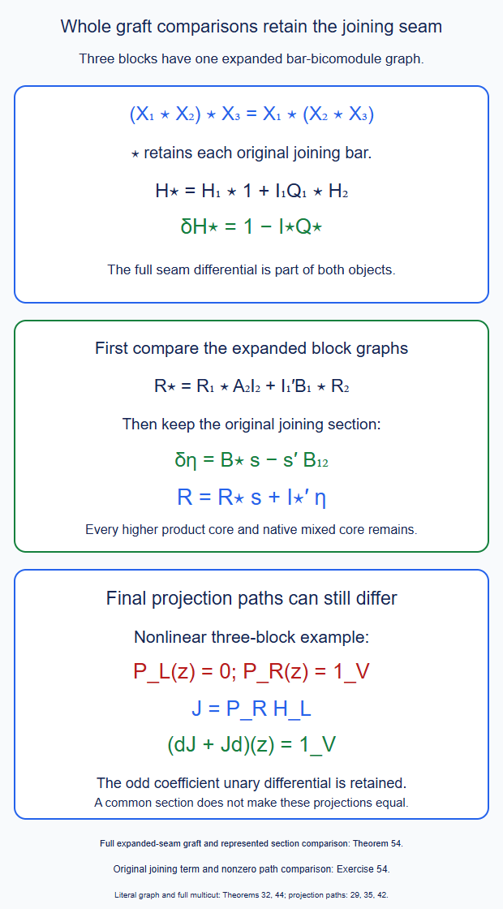
Theorem 54 and Exercise 54. Three blocks have one literal expanded graph and one full multicut section. Their represented projection paths need not be equal. Editable SVG.

55. The whole original joint-parameter common-input roof
Let \(P\) be the actual finite compatible parameter category, with all its selected original arrows. Its coordinate functors give a strict functor \[ d:P\longrightarrow\prod_{i=1}^m P_i . \tag{55.1} \] Linearization identifies the category on the right with \(D=\bigotimes_i kP_i\). It does not identify different arrows of \(P\) having the same image. All categories in this section have their original object labels and split degree-zero coefficients. In the native application \(P\) is the full compatible category of C.47.3, or an original labelled parameter face of it.
Put \[ \begin{gathered} R_P=Q^{\mathrm u}(kP),\qquad T=T(kP_1,\ldots,kP_m),\\ p=(\bigotimes_i\epsilon_i)\rho_m:T\longrightarrow D,\qquad F=d\epsilon_P:R_P\longrightarrow D . \end{gathered} \tag{55.2} \] Here every resolution, unit relation and counit is the actual normalized unital construction of C.72 and C.74–C.76.
Theorem 55 (an actual joint-parameter roof and its relative choices). There is a strict unital dg functor \[ \xi_P:R_P\longrightarrow T,\qquad p\xi_P=d\epsilon_P . \tag{55.3} \] One can retain previously prescribed lifts on any compatible union of differential-stable free-generator faces. With the full normalized bar-cobar unit \(\eta_P=B\iota_{kP}:B_{\rm full}(kP)\to B_{\rm full}R_P\), the map \[ \begin{gathered} \Lambda_P=B\xi_P\,\eta_P: B_{\rm full}(kP)\longrightarrow B_{\rm full}T,\\ Bp\,\Lambda_P=Bd \end{gathered} \tag{55.4} \] is an actual chain coalgebra map, with this exact whole counit square. It is normalized unital and finite on every original word. The source retains every original simultaneous arrow.
For a fixed \(F\), any compatible cubical boundary of strict lifts extends to a full cube of lifts over \(F\), relative to already prescribed free-generator faces. Consequently independently chosen lifts are linked by whole paths and all higher choice comparisons. The assertion also applies after any ordered regrouping \(\kappa_\pi:T\to\bigotimes_jT_{I_j}\). It supplies coherent comparisons with independent regrouped choices, rather than strict naturality of those choices.
There is also an exact recorder for a whole normalized multi-input family. Put \(K=\bigotimes_iB_{\rm full}(kP_i)\), and let \(\eta_K:K\to B_{\rm full}T\) be its actual full unit followed by the normalized quotient. If \(\Theta:K\to B_{\rm full}E\) is such a family in a unital dg category \(E\), there is a strict unital dg functor \[ \widehat\Theta:T\longrightarrow E,\qquad B\widehat\Theta\,\eta_K=\Theta . \tag{55.10} \] It retains every mixed core and commutes with actual parameter face restrictions. In particular the whole section-comparison family of Theorem 54 has a recorder in the category of Theorem 52. Its restriction \(B\widehat\Theta\,\Lambda_P\) is a genuine whole family on the original \(P\). No factorization of \(\widehat\Theta\) through an ordered tensor regrouping is required.
Proof. Each \(\epsilon_i\) is graded-surjective and a mapping quasi-isomorphism by Theorem C.72.1.1. Its normalized linear SDR retains all original unary and constant terms. Tensor their SDRs in the original order. The homotopy is the finite sum with the retract projection on every preceding factor and the homotopy on the selected factor, exactly as in (54.1). The graded tensor differential gives the full prefix-degree sign. This proves that \(\bigotimes_i\epsilon_i\) is graded-surjective and a mapping quasi-isomorphism, with a coefficient-linear mapping SDR. Theorem C.76.1.1 gives the same properties for \(\rho_m\). Composing the two SDRs gives these properties for \(p\). In particular its actual mapping kernel \(N\) has a normalized coefficient-linear contraction \(h_N\), with \[ d h_N+h_Nd=1_N,\qquad h_N^2=0 . \tag{55.5} \] All these formulas are finite on individual inputs. They require no positivity of the ordinary parameter arrows.
Theorem C.72.1.1 displays \(R_P\) as a relative graded free category. Filter its generator complex by the number of original reduced \(kP\) letters. Its length-preserving differential is the full source unary differential; its remaining terms use shorter generators and can include coefficients. Thus the hypotheses of Theorem C.46.2.1 hold for \(F\) and \(p\), with the fixed object map of \(d\).
More explicitly, suppose shorter generator values have been assigned. On the next full generator complex \((V_\ell,d_1)\) choose a graded lift \(v\) of \(F\). Write \(\gamma\) for the lower-generator part of its differential. Its defect is \[ o=(d_Tv-vd_1)-\xi_{<\ell}\gamma . \tag{55.6} \] It lies in \(N\). The source square-zero equation and the already established lower equations give \(\partial o=0\), where \(\partial f=d_Tf-(-1)^{|f|}fd_1\). Postcomposition by \(h_N\) contracts this full Hom complex: the two terms containing \(fd_1\) cancel with their degree signs. Therefore \(v-h_No\) has the same projection and zero defect. Multiplicative extension defines the new dg functor values. On a prescribed generator subcomplex the defect is zero. Applying the same correction to its quotient retains every such value. Induction proves (55.3) and its relative assertion.
Apply the full bar functor and compose with \(\eta_P\). Both factors are chain coalgebra maps. The exact whole identity \(B\epsilon_P\,\eta_P=1\) is (C.72.9), including all higher components. Hence \[ Bp\,B\xi_P\,\eta_P =Bd\,B\epsilon_P\,\eta_P=Bd . \tag{55.7} \] The unit sums over consecutive partitions of each original word. There are finitely many such partitions; every assigned cobar generator and its image is a finite sum. This proves the finiteness assertion. A proper arrow of \(P\) is still a source letter even when \(d\), or a later operator, sends it to an identity. Only the specified ordinary coefficient-input relations are normalized away.
For the choice assertion, let \(n\geq1\) and let \(C_n=C([1])^{\otimes n}\) be the cohomological interval cube of C.74.2, with \(de=v_1-v_0\) and \(\Delta e=v_1\otimes e+e\otimes v_0\). Use its full tensor coproduct. A degree-\(r\) value in \(\operatorname{Hom}(C_n,T)\) has its value on the interior cell in \(T^{r-n}\). Require its \(p\)-image to be the constant cochain given by the fixed \(D\)-value and the cube counit. Restriction to the entire boundary, together with that fixed projection, is a graded-surjective dg map. Indeed, compatible boundary values prescribe every proper cell; assign zero on the interior for a graded extension. The cube counit is zero there, so the projection condition holds too.
Its actual kernel is \[ \operatorname{Hom}(C_n/\partial C_n,N). \tag{55.8} \] The quotient has one cell of degree \(-n\) and zero differential. In these Hom coordinates postcomposition by \(h_N\) contracts the kernel, with the full source differential included. Equivalently the contraction is \((-1)^nh_N\) after passage to standard shifted coordinates, as in C.74.2. The boundary projection is therefore a surjective mapping quasi-isomorphism. Apply the relative generator induction just proved to \(R_P\). This fills the whole cube while retaining its entire boundary and the specified parameter faces. Repeating over cube dimension gives all compatible higher choice comparisons.
For a consecutive partition put \[ p_\pi=\bigotimes_j p_{I_j}: \bigotimes_j T_{I_j}\longrightarrow D . \tag{55.9} \] The actual pure-support rules of C.76.1 give \(p_\pi\kappa_\pi=p\) on every generator and hence on every product. This is a strict dg identity. Thus \(\kappa_\pi\xi_P\) and any separately chosen regrouped lift both project to \(F\). Tensoring the SDRs gives a contracted kernel for \(p_\pi\). The preceding entire-cube argument now applies with that target. Successive canonical regrouping maps compose as in C.76.1; compatible comparison boundaries are filled in the final common regrouped target. No equation between independently chosen strict lifts is asserted. For \(m=0\), \(T=D\) is the coefficient category and \(\xi_P=F\); all choices there are constant.
For the recorder, let \(\tau_E:B_{\rm full}E\to E\) be the universal degree-one twisting cochain, and set \(\theta=\tau_E\Theta\). Since \(\Theta\) is a chain coalgebra map, its one-output equation is exactly the twisting equation. Thus sending the cobar generator \(\mathsf tc\) to \(\theta(c)\), and extending by products, defines a strict dg functor \(\Omega K\to E\). The full splitting terms and their graded tensor signs are those of (C.74.1); none has been clipped. Normalized unitality says that a single coefficient-input generator has its actual coefficient value and a higher generator with a coefficient argument has zero value. These are precisely the defining relations of \(T\). The functor therefore descends to \(\widehat\Theta\). Coefficient-valued outputs of other generators are retained.
The one-output core of \(B\widehat\Theta\,\eta_K\) on \(c\) is \(\theta(c)\), the same core as \(\Theta\). Both maps preserve the coaugmentation and take values in the full cofree bar of \(E\). Conilpotent cofree uniqueness therefore proves their entire equality (55.10), with all its tensor cuts. Applying the same generator rule after an actual parameter-face map gives exactly the restricted recorder, so the face assertion is strict.
For Theorem 54 take \(E\) to be the specified section-comparison category of Theorem 52. Its whole cofree section and the two whole endpoint families give \(\Theta\): their one-output equations are the three components of that category's differential, and their cut terms are its full composition formula. This is also the cone description (49.16), applied to the complete grafted section, including every higher mixed core. Thus the recorder applies to the entire family, rather than only to its leading edge triples. Composing with the actual coalgebra map \(\Lambda_P\) proves the final restriction assertion. This proves the theorem. \(\square\)
The target of (55.4) is \(B_{\rm full}T\). It is not the tensor of the factor parameter bars. In particular (55.4) supplies a genuine index roof without a coalgebra-diagonal assumption. The recorder places the entire expanded-seam family of Theorem 54 on this exact target. Its comparison with the original joint native family must still retain the supplied C.47–C.48 graft comparisons, as in C.78.2. The equation \(p\xi_P=d\epsilon_P\) alone does not identify those operator cochains with the original native family.
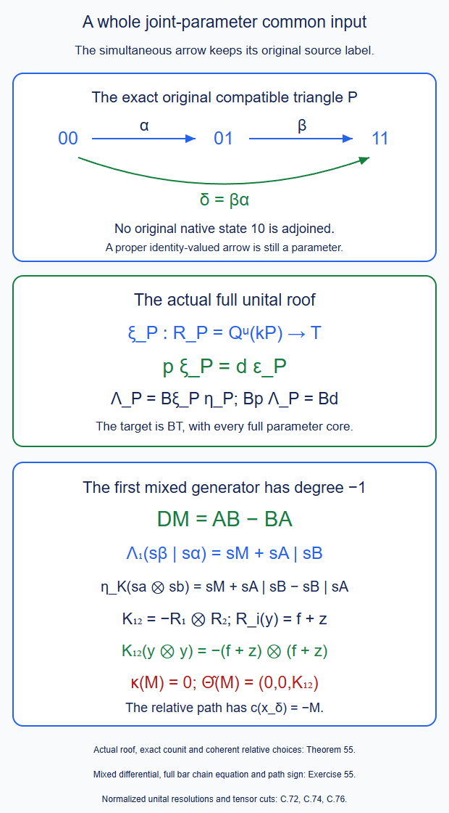
Theorem 55 and Exercise 55. The original parameter category has objects \(00,01,11\). Its auxiliary common input retains both tensor orders and their mixed homotopy; this does not adjoin \(10\) as an original native state. Editable SVG.

56. The entire parameter unit and the recorded section family
Keep the strict surjective mapping quasi-isomorphism \(p:T\to D\) of (55.2), with its identical object tuples. Its whole normalized unital section need not be a strict dg functor. This distinction matters on mixed parameter inputs. Use C.72's bar convention here; the full Nat coordinates are transported from Theorem 9 as described in Exercise 56.
Theorem 56 (the full parameter-unit prism). There is a normalized unital \(A_\infty\) section \(j:D\to T\), with \(pj=1_D\) as an entire functor. Put \(E=jp\). There is a closed degree-zero full Nat isomorphism \[ \begin{gathered} u:1_T\longrightarrow E,\qquad u_0=1_T,\\ p_*u=1_p,\qquad uj=1_j,\qquad uE=1_E,\qquad E_{*,1}(u)=1_E . \end{gathered} \tag{56.1} \] Its full inverse has the corresponding exact identities. Every formula is finite on an original source word and uses the complete source unary differential.
Let \(\widehat\Theta:T\to\mathscr S\) be the strict whole-family recorder of Theorem 55, and put \[ \mathcal L=\widehat\Theta j:D\longrightarrow\mathscr S . \tag{56.2} \] For any original \(P,d,\xi_P\) in that theorem, set \[ \begin{gathered} \kappa_P=\xi_P\iota_{kP},\qquad p\kappa_P=d,\\ \mathcal F_P=\widehat\Theta\kappa_P . \end{gathered} \tag{56.3} \] There is the specified entire comparison \[ U_P=\bigl(\widehat\Theta_{*,1}u\bigr)\kappa_P: \mathcal F_P\longrightarrow\mathcal Ld . \tag{56.4} \] It is a closed full Nat isomorphism, with actual identity triples as its bare components. Its projection under \(\Pi\) is the whole recorded operator comparison. In particular it retains every section component of degree one lower than that projected component.
All actual parameter-face restrictions of (56.4) commute with its construction when the underlying \(p,j,u,\xi\) are restricted from the same data. A whole comparison cube of roofs supplied by Theorem 55 is carried to its whole comparison diagram. Independent choices are thus compared with all their higher faces; they are not identified as strict functors.
Proof. The coefficient labels of \(p\) are identical. The split mapping-kernel contraction in (55.5) gives the normalized section construction of C.68.1.1. For completeness, choose its coefficient-preserving graded section at length one and correct its chain defect in \(\ker p\). At length \(r\geq2\) the lower Taylor components give the Stasheff obstruction. Its projection is zero, because the projected lower components are those of the strict identity. The square-zero functor equation makes it closed in the Hom complex on the entire unary source complex. Postcomposition by the mapping-kernel contraction gives its primitive. Choose that primitive with the sign dictated by the functor equation. It has zero \(p\)-image. Ordinary coefficient-input terms cancel by the unital equations, so the primitive is normalized. Induction constructs \(j\) and proves the exact whole identity \(pj=1_D\). Thus \(E^2=E\) as an entire functor, while its object map is the identity.
Here is the full unit construction of C.70.1–C.70.2 for this particular \(p,j\). In \(\operatorname{Nat}_\infty(1_T,E)\) consider the specific relative kernel \[ N_{\rm rel} =\{v:\ p_*v=0,\quad vj=0\}. \tag{56.5} \] It is stable under the full Nat differential: the two projected functor objects are both \(p\), and the two restricted objects are both \(j\). The leading Hom differential includes the output unary term and every source unary term. Postcompose by the contracted mapping kernel of \(p\). This changes only the output; consequently it preserves both conditions in (56.5). All other differential terms consume positive source length, including the higher \(E\)-actions. Let \(H_0\) be that leading output contraction and write \(\mathcal A=\delta H_0+H_0\delta=1+J\) on the full projection kernel. The operator \(J\) consumes positive source length. Since the full \(\delta\) and \(H_0\) preserve (56.5), so do \(\mathcal A,J\), and the finite inverse of \(1+J\). Moreover \(\mathcal A\) commutes with \(\delta,H_0\), by their square-zero identities. Consequently \(H_{\rm rel}=H_0(1+J)^{-1}\) contracts (56.5), as in C.70.1. No separate stability under the leading and perturbing differentials is needed. This contracts the specified kernel, not the whole Nat complex.
Let \(e\) have bare value \(1_T\) and zero positive Taylor values. Its projection is \(1_p\), and its restriction along \(j\) is \(1_j\). The defect \(\delta e\) is closed, belongs to (56.5), and has zero bare value. Set \[ u=e-H_{\rm rel}(\delta e). \tag{56.6} \] The contraction identity gives \(\delta u=0\). Its two relative identities and bare value are unchanged. If \(u=1+n\) as a graded full Nat matrix, each \(n\) consumes a nonempty source piece. Hence \(1-n+n^2-\cdots\) is finite on every original word and is an exact two-sided inverse. The dg derivation rule makes that inverse closed. This proves the first three identities in (56.1), including their inverses.
The remaining two identities retain the entire horizontal operation. Indeed \[ uE=(uj)p=1_E,\qquad E_{*,1}(u)=j_{*,1}(p_*u)=1_E . \tag{56.7} \] The equalities use C.69's full horizontal associativity and normalized parameter units. They do not discard the usual identity-letter insertions in the longer bar output.
Since \(\widehat\Theta\) is strict dg, \(\widehat\Theta_{*,1}\) is a strict dg map on full Nat complexes and preserves their vertical products and units. It carries \(u\) and its exact inverse to exact full inverses. The source of its image is \(\widehat\Theta\), and its target is \(\widehat\Theta jp=\mathcal Lp\). Now precompose by the entire \(\kappa_P\). Equation (55.4), before applying the bar, is \(p\kappa_P=d\), with every higher component included. The resulting target is therefore exactly \(\mathcal Ld\). This proves the type and all assertions of (56.4).
The bare value is the actual identity in \(\mathscr S\): strict unital postcomposition and normalized precomposition both preserve that identity. At higher inputs the strict recorder is applied to the entire unit cochain, including its mixed values. The dg projection \(\Pi\) commutes with these operations. The degrees of its two other triple components are those in (52.2), so no section component is lost.
Restriction and entire precomposition compose strictly on full bars; their consecutive partitions and tensor signs are the same on both sides. Postcomposition has the entire evaluation identity of C.69.2. Thus restricting a single set of data gives the stated exact face rules. A whole roof cube is carried through these same full operations before any core is projected, so all its boundaries and higher faces are retained. This proves the theorem. \(\square\)
The comparison (56.4) is a comparison of whole families through a normalized \(A_\infty\) section. It is not a strict factorization of the recorder through \(p\) or through \(\kappa_\pi\). The nonzero mixed value in (E55.8) remains in this comparison. To compare with the original native joint family, its supplied C.47 graft prism must be recorded with \(\Pi\mathcal Ld\) as its factor-family model, keeping its actual C.48 calibrated components and shared faces. An identity bare component of \(U_P\) does not replace that original native prism.
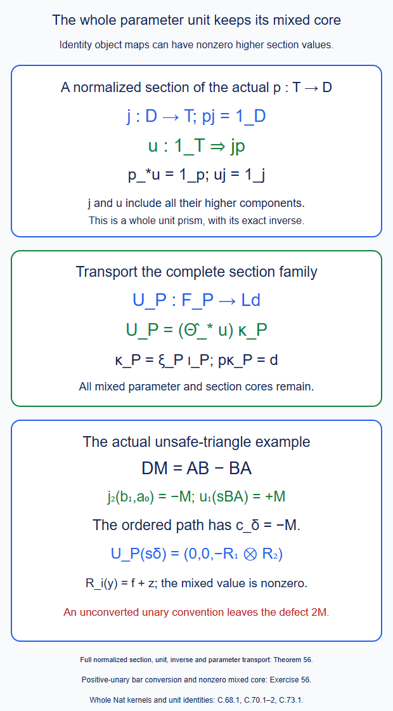
Theorem 56 and Exercise 56. The degree-zero full unit has a degree-minus-one value on the suspended mixed product \(s(BA)\). After the section recorder its \(R\)-component has degree minus two. Editable SVG.

57. The completed parameter comparison and its relative kernel
Let \(P\) be a finite directed ordinary category with terminal object \(t\). Keep parallel arrows as different letters. Let \(\mathcal F,\mathcal G:P\to\mathcal O\) be whole normalized unital parameter diagrams in a dg category. Every one-arrow comparison in each diagram is assumed to be a homotopy equivalence. In the application these are comparisons between completed block functors in one fixed outer operator corner. This hypothesis does not assert that an execution functor between frontier categories is an equivalence.
All Nat complexes below contain the full original mapping inputs of \(\mathcal O\). Write their parameter cochains in the coordinates of Theorem 38; the conversion from C.72 is the one in Exercise 56.
Theorem 57 (terminal evaluation and the whole native comparison). Evaluation on the bare component at \(t\) is a graded-surjective mapping quasi-isomorphism \[ e_t:\operatorname{Nat}_P(\mathcal F,\mathcal G) \longrightarrow \mathcal O(\mathcal F_t,\mathcal G_t). \tag{57.1} \] Its specific kernel has a normalized square-zero contraction. The full target Hom complex is retained; it is not assumed acyclic.
More generally let \(A\) be a collection of parameter simplices closed under faces and normalized terminal extension: \[ t\in A,\qquad \sigma\in A\ \Longrightarrow\ [\sigma,t]\in A \quad\text{whenever the extension is nondegenerate}. \tag{57.2} \] Then restriction to the entire \(A\) has the same graded-surjectivity and mapping quasi-isomorphism properties, with a contracted actual restriction kernel. Any closed comparison on \(A\) extends while retaining all its cores. A compatible full coherent comparison diagram on a relative free source extends by the same contracted-kernel lifting construction as Theorem 52.
Suppose furthermore that \(\mathcal F_x=\mathcal G_x\) as the specified objects for every \(x\), and that their induced ordinary \(H^0\)-diagrams agree. There is a closed full Nat isomorphism \[ V:\mathcal F\longrightarrow\mathcal G,\qquad V_0(x)=1_{\mathcal F_x},\qquad e_tV=1. \tag{57.3} \] Its inverse is an exact finite positive-parameter convolution series. Prescribed whole comparisons satisfying (57.2), with these bare values, can be retained.
In particular, for a supplied original whole comparison \(\Gamma_{\rm orig}:\mathcal G\to\mathcal S\), put \[ \Gamma=\Gamma_{\rm orig}\star V,\qquad \Gamma\star V^{-1}=\Gamma_{\rm orig}. \tag{57.4} \] This transports its entire given prism, including its closed higher components. The last equality is an exact cochain identity. The construction admits relative coherent comparison rows with the given endpoint systems fixed, by lifting their whole free presentation through (57.1).
Proof. Let \(C_{\mathcal F},C_{\mathcal G}\) be the constant diagrams at the two terminal objects. The actual terminal cones of Theorem 38 are \[ \lambda_{\mathcal F}:\mathcal F\to C_{\mathcal F}, \qquad \lambda_{\mathcal G}:\mathcal G\to C_{\mathcal G}. \tag{57.5} \] Their cores append the actual terminal arrow to the original word. At \(t\) they are the identity. All their object components are homotopy equivalences by the hypothesis. The finite parameter-filtration argument of Theorem 22 therefore gives closed inverses \(\mu_{\mathcal F},\mu_{\mathcal G}\) and degree-minus-one homotopies \[ \delta h_{\mathcal F} =\mu_{\mathcal F}\lambda_{\mathcal F}-1,\qquad \delta h_{\mathcal G} =\mu_{\mathcal G}\lambda_{\mathcal G}-1 . \tag{57.6} \] Choose the inverse at \(t\) to be the identity and its object homotopy to be zero. The corrections in that filtration consume positive parameter length, so they do not alter these values. Thus the two \(\mu\)'s evaluate to identities, and the two \(h\)'s evaluate to zero at \(t\). The same argument uses actual full target homotopies; it does not truncate their original mapping inputs.
First consider the constant-diagram complex \[ C=\operatorname{Nat}_P(C_{\mathcal F},C_{\mathcal G}). \tag{57.7} \] Put \(M=\mathcal O(\mathcal F_t,\mathcal G_t)\). Multiplication of its \(q\)-cores by \(e_q=(-1)^{q(q+1)/2}\), as in (38.7), identifies \(C\) with \(\operatorname{Hom}(N(P),M)\). For a total degree-\(r\) cochain the differential is \(d_M\phi-(-1)^r\phi\partial\). Indeed the interior merger at chronological position \(i\) has the target-to-source bar sign \((-1)^{q-i}\); the ratio \(e_q/e_{q-1}=(-1)^q\) converts it to the nerve sign \((-1)^i\). The two constant identity actions supply the two outer faces with the same signs.
On normalized chronological nerve chains define \[ h_N(\sigma)=(-1)^{q+1}[\sigma,t], \qquad \sigma\in N(P)^{-q}. \tag{57.8} \] A repeated terminal vertex is zero. The two sums on the other faces cancel in pairs, leaving \[ \partial h_N+h_N\partial=1-c_t\epsilon,\qquad h_N^2=h_Nc_t=\epsilon h_N=0 . \tag{57.9} \] Here \(c_t\) includes the terminal vertex. Consequently \(H_C\phi=(-1)^r\phi h_N\) contracts the constant-diagram evaluation kernel. In Nat coordinates this is the particularly simple formula \[ (H_C\phi)_q(\sigma) =(-1)^r\phi_{q+1}([\sigma,t]). \tag{57.10} \] The two \(e\)-factors cancel the extra sign in (57.8). It satisfies \(\delta H_C+H_C\delta=1-i e_t\), where \(i\) puts a mapping in every bare object component and zero in positive parameter length.
Return to the two original diagrams. Define closed degree-zero composition maps \[ \begin{aligned} Q(\theta)&=\lambda_{\mathcal G}\star\theta \star\mu_{\mathcal F},\\ T(\psi)&=\mu_{\mathcal G}\star\psi \star\lambda_{\mathcal F}. \end{aligned} \tag{57.11} \] They preserve terminal evaluation. Set \(a_{\mathcal F}=\mu_{\mathcal F}\lambda_{\mathcal F}\) and similarly for \(\mathcal G\). For a degree-\(r\) cochain put \[ K(\theta)=h_{\mathcal G}\star\theta\star a_{\mathcal F} +(-1)^r\theta\star h_{\mathcal F}. \tag{57.12} \] The full dg Leibniz rule and (57.6) give \[ (\delta K+K\delta)(\theta) =a_{\mathcal G}\theta a_{\mathcal F}-\theta =TQ(\theta)-\theta . \tag{57.13} \] No differential of a source mapping input has been omitted in this calculation.
Let \(s=Ti\) and \(H=TH_CQ-K\). The preceding identities give \[ e_ts=1,\qquad \delta H+H\delta=1-se_t,\qquad e_tH=0 . \tag{57.14} \] Thus (57.1) is a chain retraction with contracted kernel. For normalized square-zero sides, restrict \(H\) to that kernel and replace it by \(H\delta H\). If \(\delta H+H\delta=1\), direct multiplication gives \[ \delta(H\delta H)+(H\delta H)\delta=1,\qquad (H\delta H)^2=0 . \tag{57.15} \] For example \(\delta H^2=H^2\delta\), whence \(\delta H^2\delta=0\), proves the second identity. On the full complex use the chain projection \(1-se_t\) on both sides to impose the remaining SDR side conditions. All series used in choosing the cone inverses terminate in the finite parameter height. The subsequent operations are finite full composition and terminal extension.
Now restrict to \(A\). Cochains on \(A\) have a graded extension by zero on the other parameter words. The differential and products on \(A\) are defined because its faces and cuts stay in \(A\). The restriction kernel is preserved by every composition in (57.11)–(57.12): on an \(A\)-word every cochain argument in a cut is again an \(A\)-word. Formula (57.10) preserves that kernel by (57.2). Hence so does \(H\). Its elements evaluate to zero at \(t\), so (57.14) is the identity there. Applying (57.15) contracts this actual restriction kernel. Graded surjectivity and that contraction prove the relative quasi-isomorphism assertion.
Explicitly, for a closed prescribed cochain \(\gamma_A\), extend it gradedly to \(\gamma_0\). Its defect is a closed element of the restriction kernel. If \(h_A\) is its contraction, then \(\gamma_0-h_A\delta\gamma_0\) is the required closed extension with exactly the original restriction. The relative free-generator proof of Theorem 52 now applies to any entire coherent comparison presentation. Its defect uses the full incoming unary complex, and the correction is zero on all prescribed generator faces. On the labelled families, terminal evaluation and restriction are unital dg functors, since evaluating or restricting the full convolution preserves products and identities. This proves the claimed coherent-diagram version.
To prove (57.3), lift \(1_t\) to a closed cochain \(V'\) using (57.1). For the actual terminal arrow \(\tau_x:x\to t\), its one-arrow naturality equation gives \[ [\mathcal G_1(\tau_x)]\,[V'_0(x)] =[V'_0(t)]\,[\mathcal F_1(\tau_x)] . \tag{57.16} \] The two arrow classes agree and are invertible, while \(V'_0(t)=1\). Therefore \([V'_0(x)]=[1_x]\). Choose full degree-minus-one witnesses \(\delta b_x=V'_0(x)-1_x\), taking \(b_t=0\). Put them in the bare components of a pre-natural cochain \(b\), with zero positive parameter components. Then \[ V=V'-\delta b \tag{57.17} \] is closed and has exactly the asserted bare values and terminal value. In the relative case use the restriction-kernel lift first; the prescribed bare values already equal identities, so take \(b_x=0\) on its objects. This preserves every prescribed \(A\)-core.
The positive part \(V-1\) consumes at least one original nonidentity parameter arrow. Its convolution power above the finite parameter height is zero. The finite geometric series gives an exact inverse, which is closed by the dg derivation rule. Associativity now proves (57.4), with all original cochain values retained. Coherent rows between two such constructions, including given calibrated rows, use the relative free-generator lifting already proved for (57.1). Existing whole rows and both endpoint systems are prescribed data in that lift. This proves the theorem. \(\square\)
For a native fixed completed block profile, record the original factor family \(\mathcal G\) using the same chosen literal block functors as the objects of \(\mathcal F=\Pi\mathcal Ld\) in Theorem 56. Their object values then agree on the actual common outer type. Their axis-arrow classes also agree: (55.10) keeps the entire native factor family, and \(H^0j=(H^0p)^{-1}\).
On the compatible graft category a joint arrow has an actual inner-factor-first axis factorization. Keep the outer source state fixed and move each inner factor to its target. Any inner tree required complete by that outer source state was already complete. It stays complete under its arrow: the image of its whole original vertex set is the whole quotient vertex set, contained in the target executed ideal. All intermediate tuples are therefore compatible. Finally perform the outer arrow. This proves equality of the two \(H^0\)-diagrams on every original joint arrow by their actual composition law. Selected contraction labels and direct simultaneous arrows are still distinct source data.
Completion makes these operator comparisons homotopy equivalences by C.47.2. The Theorem 57 comparison thus applies to the whole fixed-profile family, with its original C.47 graft prism as \(\Gamma_{\rm orig}\). If the completed graft is not the completed corolla, keep its original outgoing seam arrow. The auxiliary factor family can be extended constantly across that final arrow; the original native prism keeps its actual seam comparison.
Condition (57.2) is essential for relative graft and cut constraints. A boundary containing the terminal vertex need not contain the terminal extension of each of its simplices. The given full face comparisons, including their actual endpoint-cone words from Theorem 38, must be supplied before this relative extension applies. The fixed-profile comparison alone does not establish that condition for all changing-profile shared faces.
For the original cut poset \(\mathcal C_q=\mathcal P(\{0,\ldots,q\})\) of Theorem 51, the union of the full faces \(\mathrm{cut}_i=1\) is exactly the nerve on the nonempty cut sets. Indeed a flag in any such face has a nonempty first set. Conversely any element of its first set belongs to every set in the flag, placing that entire flag in one of those faces. This union contains the all-cut terminal object and is closed under terminal extension. Consequently compatible whole comparison data on all these graft faces can be retained by Theorem 57. Their shared full flags, rather than only their vertices, are the prescribed data. The deletion faces \(\mathrm{cut}_i=0\) have different terminal images. Their endpoint comparisons from Theorem 38 are additional data; containing their vertices in a larger boundary does not verify (57.2).
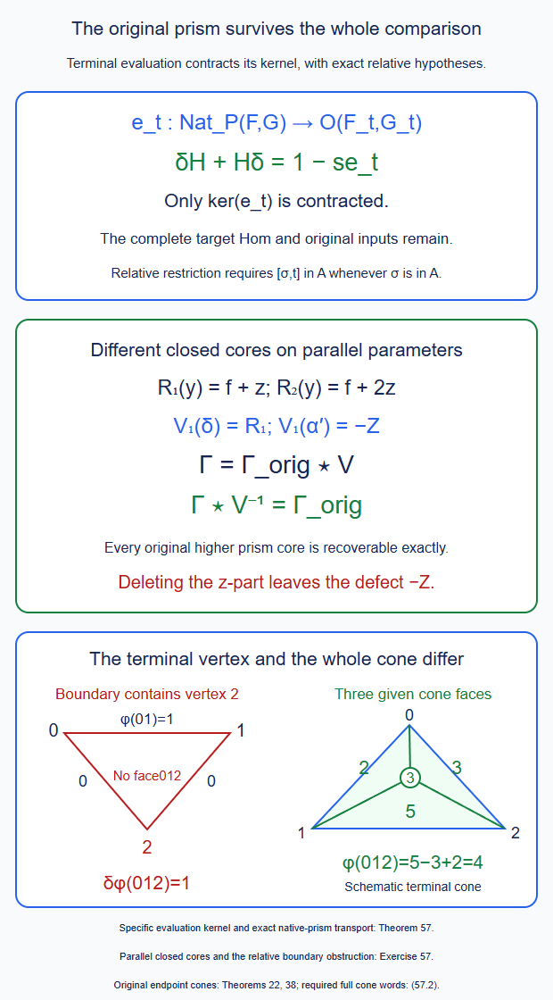
Theorem 57 and Exercise 57. Parallel identity-valued parameters can carry different closed higher components. A missing cone word can carry a nonzero extension obstruction. Editable SVG.

58. Preserve the native projection and the whole prescribed input together
The input restriction in this section is a chain coalgebra map. It need not be a nerve inclusion or be closed under terminal extension. Let \(T\) be a unital dg category and let \[ \iota:K\longrightarrow B_{\mathrm{full}}T \tag{58.1} \] be a coaugmented labelled chain coalgebra map. Work with normalized cochains and the original labelled object values. The coalgebras are conilpotent on each finite input. Formal unit input equations are imposed before taking cochains; an original proper arrow whose image is an identity remains an input. Suppose restriction along \(\iota\) is surjective on the graded spaces of these cochains, for each pair of target object labels.
Two instances will be used. For a chain subcoalgebra spanned by actual source words, extend a graded cochain by zero. For \[ T=\Omega\bigl(\textstyle\bigotimes_i B_{\mathrm{full}}A_i\bigr)/J, \qquad K=\textstyle\bigotimes_i B_{\mathrm{full}}A_i,\qquad \iota=\eta_K, \tag{58.2} \] the distinguished component of \(\eta_K(c)\) is the single outer bar letter \(s(t_c)\), with coefficient one. Assign the prescribed value on this component and zero on its other outer-word components. This is the graded extension of C.78.1. Here \(J\) imposes the factor unit equations of C.74.1. Both statements are about the full source coalgebra, including its mixed differential.
Fix uncurved normalized unital functors \(F,G:T\to\mathscr S\), where \(\Pi:\mathscr S\to\mathscr Y\) is (52.3). Write \(\operatorname{Nat}_K(F\iota,G\iota)\) for the full twisted convolution complex on \(K\); its twisting cochains are the restrictions of those of \(F,G\).
Theorem 58 (joint projection and full input restriction). On the fixed labelled functor objects, the map \[ \begin{split} \Phi:\operatorname{Nat}_T(F,G)&\longrightarrow \operatorname{Nat}_T(\Pi F,\Pi G) \mathop{\times}_{\operatorname{Nat}_K(\Pi F\iota,\Pi G\iota)} \operatorname{Nat}_K(F\iota,G\iota),\\ \theta&\longmapsto(\Pi\theta,\theta\iota) \end{split} \tag{58.3} \] is graded-surjective and a quasi-isomorphism. These maps form a unital dg functor. Its mapping kernel is exactly \[ N=\{\theta:\Pi\theta=0,\ \theta\iota=0\}. \tag{58.4} \] It has a degree-minus-one square-zero contraction. If \(D\) is the full Nat differential and \[ H_0\theta=\mathfrak h\circ\theta,\qquad J=DH_0+H_0D-1, \tag{58.5} \] on \(N\), that contraction is \[ H=H_0(1+J)^{-1} =H_0\sum_{n\ge0}(-J)^n,\qquad DH+HD=1,\qquad H^2=0 . \tag{58.6} \] The series is finite on every fixed outer bar word. No separate invariance under the leading differential is required of (58.4).
Consequently an entire coherent comparison diagram can be lifted while retaining both its given native \(\mathscr Y\)-diagram and its full prescribed \(K\)-diagram exactly. The source presentation is a relative free dg category as in (52.7), with its complete incoming unary generator differential. Compatible previously specified free-generator faces are retained. This assertion requires agreement of the entire prescribed diagrams on overlaps, not only agreement of their object or degree-zero values.
There is also a functor extension statement. Suppose a fixed native functor \(B:T\to\mathscr Y\) has a normalized lift \(L:T\to\mathscr S\). Let \(F_K\) be a twisting cochain on \(K\) with the same labelled object contractions and \[ \Pi F_K=B\iota . \tag{58.7} \] Then there is a normalized functor \(F:T\to\mathscr S\) and a closed invertible full cochain \(V:F\to L\), with \[ \Pi F=B,\qquad F\iota=F_K,\qquad V_0=1,\qquad \Pi V=1 . \tag{58.8} \] Thus the extension leaves the entire original native family \(B\) unchanged. The identity-leading comparison retains the original lift as a full invertible comparison.
The mapping and functor statements hold also for the dg category of closed arrows in \(\mathscr S\) and its projection to closed arrows in \(\mathscr Y\), on specified lifted arrow objects. They therefore retain a whole prescribed graft prism, including its two endpoint families, rather than just its endpoint maps.
Proof. First consider graded surjectivity. Given a compatible pair \((a,b)\) on the right of (58.3), put \(v=\jmath a\). The difference \(c=b-v\iota\) takes values in \(\ker\Pi\). Choose a graded extension \(e\) with \(e\iota=c\). Since \(\mathfrak h,\jmath,\Pi\) act on the output with the fixed endpoint labels, they commute with restriction. Consequently \[ e'=e-\jmath\Pi e,\qquad \Pi e'=0,\qquad e'\iota=c . \tag{58.9} \] Then \(v+e'\) maps to \((a,b)\). The extension preserves normalization: zero formal-unit input values extend as zero. The nonunital mapping section \(\jmath\) in this argument does not assert that the dg functor \(\Phi\) is nonunital. Projection and coalgebra restriction preserve the actual Nat identity and full convolution products, proving the dg functor assertion.
Both \(D\) and \(H_0\) preserve \(N\). For \(D\), this follows because \(\Pi\) is a dg functor and \(\iota\) is a chain coalgebra map, including the full source differential and all cuts. For \(H_0\), use \(\Pi\mathfrak h=0\) and \[ (H_0\theta)\iota=\mathfrak h(\theta\iota)=0 . \tag{58.10} \] There is no sign in postcomposition by \(\mathfrak h\). On a homogeneous coefficient of degree \(r\), its formula is \(\bigl((-1)^rAH+RQ,0,0\bigr)\), with precisely that coefficient degree. It is not the total Nat degree when the input has nonzero degree.
The terms involving the whole source differential cancel in \(DH_0+H_0D\): their coefficients are \(-(-1)^{|\theta|-1}\) and \(-(-1)^{|\theta|}\). The output differential contributes the identity on \(\ker\Pi\) by (52.5). The remaining terms in \(J\) contain a positive-input twisting-cochain value of \(F\) or \(G\). Therefore, if \(\theta\) vanishes on all outer words of length less than \(m\), \(J\theta\) vanishes on all words of length less than \(m+1\). On an outer word of length \(q\), \(J^{q+1}\theta=0\). This proves the asserted local finiteness. In particular the source unit's sum of outer words of different lengths does not invalidate the construction.
Put \(A=DH_0+H_0D=1+J\). Since \(D^2=H_0^2=0\), \[ DA=AD,\qquad H_0A=AH_0 . \tag{58.11} \] All these operators and the finite inverse preserve \(N\). Equations (58.6) now follow by multiplication: \[ D(H_0A^{-1})+(H_0A^{-1})D=AA^{-1}=1,\qquad (H_0A^{-1})^2=0 . \tag{58.12} \] This proves the kernel contraction and the mapping quasi-isomorphism. Only the joint kernel has been contracted. The native target complex can have nonzero cohomology.
For clarity, the extension of a closed pair is explicit. Choose its graded lift \(v\). Its defect \(Dv\) lies in \(N\) and is closed. Thus \(v-HDv\) is closed and has exactly the prescribed pair of images. For a relative free diagram use the same argument on each new generator complex \((V_\ell,d_1)\). If the existing lower lift is \(E\), its defect is \[ o=\partial v-(-1)^{|v|}vd_1-E\gamma,\qquad Do=0 . \tag{58.13} \] It takes values in (58.4) and vanishes on prescribed generator subcomplexes. Postcomposition by \(H\) contracts the Hom complex out of their quotient, with the same cancellation of the full incoming unary terms as (52.15). Replace \(v\) by \(v-Ho\) and extend multiplicatively. Induction in \(\ell\) proves the entire relative coherent-diagram assertion.
For the functor assertion, first work on \(K\). The same output contraction, with its locally finite positive-input perturbation, contracts \(\ker\Pi\) in \(\operatorname{Nat}_K(F_K,L\iota)\). The bare identity has defect \(D1\) in that kernel, with zero bare value. The contraction preserves positive input length. Hence \[ V_K=1-H(D1) \tag{58.14} \] is closed, \((V_K)_0=1\), and \(\Pi V_K=1\). Its inverse is the wordwise finite geometric series in \(V_K-1\).
Extend \(V_K-1\) gradedly to a normalized cochain on \(BT\), with zero bare value, using (58.9) to keep its projection zero. Write \(V\) for one plus this extension and \(\partial_0v=dv-(-1)^{|v|}vb\) for the untwisted differential. The inverse of \(V\) again exists wordwise. Define \[ \tau_F=V^{-1}\star\tau_L\star V- V^{-1}\star\partial_0 V . \tag{58.15} \] This is exactly the closedness equation \(\partial_0 V-\tau_L\star V+V\star\tau_F=0\). Conjugating the square-zero operator \(\partial_0-\tau_L\star(-)\) by \(V\star(-)\) proves \(\partial_0\tau_F-\tau_F\star\tau_F=0\). It is therefore the twisting cochain of a functor. Normalization and the formal unit equations are preserved by these products and by the positive normalized cochain \(V-1\). Projection of (58.15) is \(\tau_B\), since \(\Pi V=1\). Restriction is \(\tau_{F_K}\), by the already closed cochain \(V_K\). This proves (58.8). For the C.72 positive-unary source convention use the conversion of Exercise 56, equation (E56.3), namely \(\tau(w)=-(-1)^{|w|}F_{\mathrm{core}}(w)\), throughout (58.13)–(58.15).
Finally let \(u:U\to V\) and \(u':U'\to V'\) be specified closed degree-zero arrow objects. A degree-\(r\) morphism between them is \((a,b,c)\), where \(a:V\to V'\) and \(b:U\to U'\) have degree \(r\), and \(c:U\to V'\) has degree \(r-1\). Its differential is \[ d(a,b,c)=(da,db,au-u'b-dc). \tag{58.16} \] Projection applies \(\Pi\) to each entry and is graded-surjective. On its mapping kernel, the leading contraction is \[ h_0(a,b,c)=(\mathfrak h a,\mathfrak h b,-\mathfrak h c). \tag{58.17} \] For the diagonal differential \((da,db,-dc)\) it contracts to zero. The off-diagonal part of (58.16) maps the first two slots into the third; it vanishes on the third slot. Thus \(dh_0+h_0d=1+J_{\mathrm{ar}}\), where \(J_{\mathrm{ar}}^2=0\). It commutes with \(d,h_0\) by the calculation (58.11). Consequently \[ h_{\mathrm{ar}}=h_0(1-J_{\mathrm{ar}}) \tag{58.18} \] is a square-zero contraction of this mapping kernel. Apply the already proved joint restriction theorem with this target contraction. This proves the arrow statement. Finite iterated arrow diagrams follow by repeating this argument. \(\square\)
In the native application, (58.2) is the common state input of C.78, after the actual full source pullbacks and target whiskering of C.69. The original native parameter category is the external coherent-diagram source in (58.13); it is not replaced by a tensor product of its parameter bars. For any specified compatible whole \(K\)-family from Theorems 43–44 and 53–54, (58.3) retains that family and the entire original native coefficient family simultaneously. Applied to arrow objects, it retains its actual graft prism. The entire \(K\)-family's projection must equal the restriction of the given native prism, and shared faces must agree as whole cochains. Establishing those identifications for every changing profile remains a separate mathematical requirement.
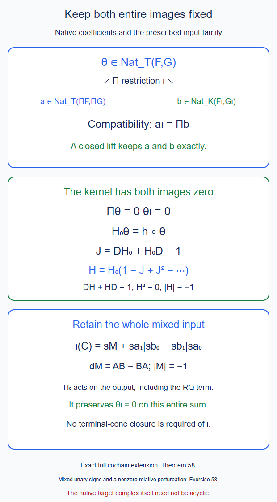
Theorem 58 and Exercise 58. The contraction acts on the output and respects the whole input restriction. The mixed unit contains \(sM+sa_1|sb_0-sb_1|sa_0\); retaining only \(sM\) does not impose the required restriction. Editable SVG.

59. Whole section cochains and the joining-prism product
Use the negative-unary bar convention of Theorem 9 in this section. Let \(C\) be the whole original parameter coalgebra, with differential \(b\) and its labelled coaugmentations. Suppose \(A,B\) are coherent operator families on graph objects \(X_x,Y_x\), with twisting cochains \(\tau_A,\tau_B\) of degree one. At each object choose the specified closed section \(I_x:Y_x\to X_x\). The object contractions are those of (52.1). All maps below are entire typed maps on the state inputs.
Theorem 59 (the full section equation and every joining cut). There is an exact correspondence between:
- normalized full section cochains \(\mathcal I:B\to A\) of Nat degree zero, with bare values \(I_x\), satisfying \[ d\mathcal I-\mathcal I b -\tau_A\star\mathcal I+\mathcal I\star\tau_B=0; \tag{59.1} \]
- coherent families in the section-comparison dg category with these object contractions and with exactly the prescribed \(A,B\) diagonal families.
Explicitly, on a nonempty homogeneous parameter input \(c\) the twisting cochain of the second family is \[ \widetilde\tau(c)= \bigl(\tau_A(c),\tau_B(c),\mathcal I(c)\bigr). \tag{59.2} \] It is zero on coaugmentations; those encode the object sections, rather than a curvature term. If \(|c|=q\), its total coefficient degree is \(q+1\) and its third component has degree \(q\). In particular a string of \(p\) degree-zero original parameter arrows has third component of degree \(-p\). Equation (59.1) includes the full parameter differential. For the actual marked section (43.3)–(43.4), in these same parameter coordinates the entire section cochain is \[ \mathcal I(\varnothing)=I,\qquad \mathcal I(p)=-W_p\quad(p\ne\varnothing). \tag{59.3} \] Thus the one-mark global minus persists on every positive marked core; the coefficient Koszul signs remain those already present in \(W_p\).
Let \(\mathcal J:D\to B\) be another full closed degree-zero section cochain, with bare value \(J_x\). The section from \(D\) to \(A\) is exactly \[ \mathcal K=\mathcal I\star\mathcal J,\qquad \mathcal K(c)=\sum_{c=c_Lc_R} \mathcal I(c_L)\mathcal J(c_R). \tag{59.4} \] No convolution sign is added here because \(|\mathcal J|=0\). All graded signs already present in the evaluated full maps remain. Separating the two endpoint cuts gives \[ \begin{split} \mathcal K(c)={}&\mathcal I(c)J_{\mathrm{source}(c)} +I_{\mathrm{target}(c)}\mathcal J(c)\\ &+\sum_{\substack{c=c_Lc_R\\c_L,c_R\ne\varnothing}} \mathcal I(c_L)\mathcal J(c_R). \end{split} \tag{59.5} \] Thus for two original arrows there is the mixed term \[ \mathcal K(s\beta|s\alpha) =\mathcal I(s\beta|s\alpha)J_0 +I_2\mathcal J(s\beta|s\alpha) +\mathcal I(s\beta)\mathcal J(s\alpha). \tag{59.6} \] Three or more sections compose by all consecutive multipart cuts, including empty pieces. All groupings give precisely the same full cochain.
In the expanded-seam graft of Theorem 54, take \(\mathcal I\) to be the whole expanded section family and \(\mathcal J\) to be the entire marked joining section. Their bare values are \(I_\star\) and \(s\). Their one-mark components are \(R_\star\) and \(\eta\). Equation (59.5) recovers (54.6) at one mark and retains all its higher mixed joining terms. On the actual common multicut refinement of Theorem 44, the joining section cores from different consecutive regroupings therefore agree in every parameter degree.
Proof. The two diagonal components of the Maurer–Cartan equation \[ d_{\mathscr S}\widetilde\tau +\widetilde\tau b-\widetilde\tau\star\widetilde\tau=0 \tag{59.7} \] are the original functor equations for \(A,B\). Write \(R(c)=\mathcal I(c)\) on positive inputs. For a proper cut \(c=c_Lc_R\), put \(a=|c_L|\). The convolution sign is \((-1)^a\), while the degree of \(\widetilde\tau(c_L)\) is \(a+1\). By (49.2), the third component of its square is \[ \sum_{\mathrm{proper\ cuts}} \bigl((-1)^aR(c_L)\tau_B(c_R) -\tau_A(c_L)R(c_R)\bigr). \tag{59.8} \] The third component of the other two terms in (59.7) is \[ \tau_A(c)I_{\mathrm{source}(c)} -I_{\mathrm{target}(c)}\tau_B(c) -dR(c)+R(bc). \tag{59.9} \] Their difference is exactly the negative of (59.1) on \(c\). This proves both directions of the correspondence, including every source unary term and every adjacent parameter merger. The degree assertions follow from the shifted third slot in (49.1). Units are retained in the diagonal family; normalized positive section values obey the same unit equations on both sides.
The whole marked section is read in this correspondence through its cone (49.16), with the suspension coaction (48.2). A homogeneous degree-\(r\) cone operator with off-diagonal entry \(C_r\) has third datum \[ R_r=(-1)^{r+1}C_r \tag{59.10} \] by (49.11). Applying this to each original parameter core gives the whole family (59.2); injectivity of (49.11) prevents loss of a higher core. More explicitly, on a parameter word \(p\) the suspended coaction (48.2) makes the off-diagonal cone core of (49.16) equal to \(-(-1)^{|p|}W_p\). Its cone-operator degree is \(r=|p|+1\). Substitution in (59.10) gives \[ (-1)^{r+1}\bigl(-(-1)^{|p|}W_p\bigr)=-W_p, \tag{59.12} \] which proves (59.3). The empty input instead belongs to the object cone differential and has bare section \(I\). For one mark this returns exactly (43.2), including its suspended coefficient sign. For the C.72 source convention, first use the entire parity conversion (E56.3) and the twisting-core conversion following it. One cannot use its unconverted functor core in (59.7).
The untwisted Hom differential is a derivation for convolution, since \(b\) is a coderivation. Inserting the source and target twists gives the typed identity \[ D_{A,D}(\mathcal I\star\mathcal J) =(D_{A,B}\mathcal I)\star\mathcal J +\mathcal I\star(D_{B,D}\mathcal J). \tag{59.11} \] The intermediate terms involving \(\tau_B\) cancel. Both factors are closed, so (59.4) is closed. Its bare value is \(I_xJ_x\), and (59.2) now supplies its entire section-comparison family. Expanding the coproduct proves (59.5)–(59.6). Coassociativity identifies both iterated sums with the same three-piece cuts. Induction gives the statement for any finite number of sections.
Restriction along an actual chain coalgebra map commutes with every sum in (59.4). Whole source pullbacks commute by (37.3), and target whiskering uses the full C.69 evaluation before taking a core. For grafts, the joining cochain is the whole marked section, rather than just a chosen primitive of (54.5). Theorem 44 identifies its consecutive joining expansions on the actual common refinement as full sections. The cone construction and (59.10) are faithful and commute with that restriction. Their entire section cochains, and hence all the positive cores in (59.5), agree there. This proves the claimed joining-section overlap. \(\square\)
The theorem does not produce a coalgebra diagonal from one native parameter bar into tensor products of factor parameter bars. The whole families in (59.4) must already have the stated common input, or be transported to it by their actual maps. In particular the joining-section overlap on the common refinement does not identify every changing-profile graph-operator diagonal. Those full diagonals and their shared native faces are still required before the simultaneous lifting theorem applies.
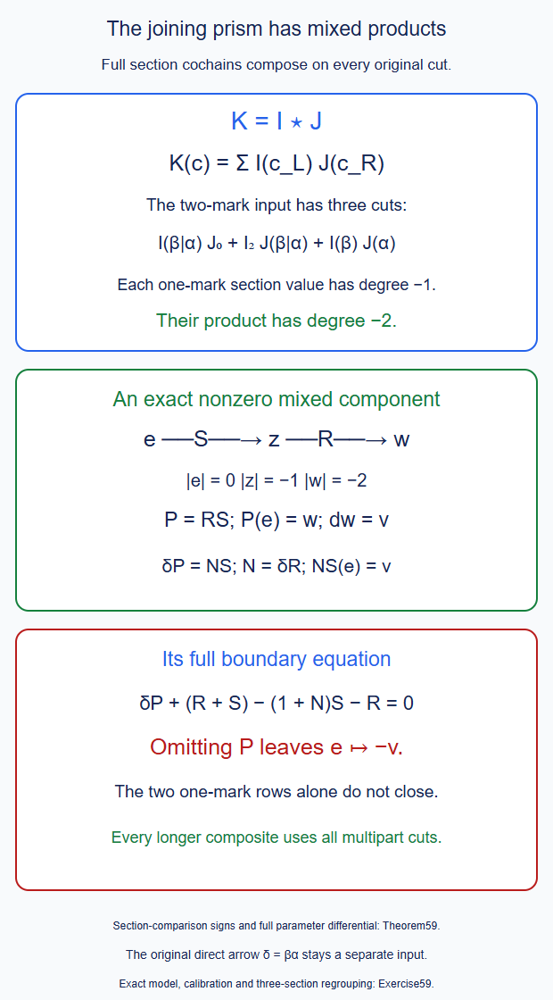
Theorem 59 and Exercise 59. The third component on two degree-zero parameter arrows has degree minus two. It retains the entire joining prism. Editable SVG.

60. Faithful comparison cylinders and their section projections
Work over a field of characteristic zero. Let \(X\underset I{\overset Q{\rightleftarrows}}Y\), with homotopy \(H\), be the full special contraction (52.1). Use \(s\) of degree minus one. Define \[ Z=\operatorname{Cyl}(I)=X\oplus sY\oplus Y,\qquad D(x,su,y)=(dx-Iu,-sdu,dy+u). \tag{60.1} \] Write \(i(x)=(x,0,0)\) and \(j(y)=(0,0,y)\). Both are chain inclusions, with disjoint graded images. Every shifted coaction uses the suspension sign (48.2). All sums, tensor products and mappings can consequently be taken on the full typed graph encodings.
Theorem 60 (faithful cylinders and the all-arity section projection). The cylinder has the specified full special contraction \[ \begin{split} q(x,su,y)&=Qx+y,& h(x,su,y)&=(Hx,-sQx,0),\\ qj&=1,& Dh+hD&=1-jq,\qquad h^2=hj=qh=0. \end{split} \tag{60.2} \] A degree-\(r\) original section-comparison triple has the cylinder map \[ \Xi(A,B,R)(x,su,y) =\bigl(Ax+(-1)^{r+1}Ru,\;(-1)^rsBu,\;By\bigr). \tag{60.3} \] This defines a faithful unital dg functor from \(\mathscr S\) into cylinder maps preserving \(jY\). It preserves \(iX\) as well. The original data are recovered exactly by \[ A=\operatorname{pr}_X\Xi i,\qquad B=\operatorname{pr}_Y\Xi j,\qquad R=(-1)^{r+1}\operatorname{pr}_X\Xi s . \tag{60.4} \] Here \(s:Y\to Z\) denotes inclusion in the shifted middle summand, of degree minus one. Thus no closed part of the native \(R\) is removed.
For any finite input list put \(U=\bigotimes_a Z_a\) and \(Y_{\rm in}=\bigotimes_aY_a\), with \(j_{\rm in}=\bigotimes_a j_a\). Let \(\mathscr E_j(Z_{\rm in};Z_o)\) consist of all homogeneous maps \(f:U\to Z_o\) carrying \(j_{\rm in}Y_{\rm in}\) into \(j_oY_o\). Restriction defines \[ \pi_j:\mathscr E_j(Z_{\rm in};Z_o) \longrightarrow\operatorname{Hom}(Y_{\rm in},Y_o). \tag{60.5} \] These are the components of a unital dg colored operad map, including nullary components and all graded input permutations. Each component is graded-surjective and a quasi-isomorphism.
More explicitly, the ordered tensor contraction from (60.2) has maps \(j_{\rm in},q_{\rm in},h_{\rm in}\). On \[ D_{\rm in}=U/j_{\rm in}Y_{\rm in} \tag{60.6} \] the induced \(\bar h_{\rm in}\) contracts to zero. The mapping kernel in (60.5) is exactly \(\operatorname{Hom}(D_{\rm in},Z_o)\), with contraction \[ \mathfrak k(f)=(-1)^{|f|}f\bar h_{\rm in}. \tag{60.7} \] At arity zero, \(U=Y_{\rm in}=k\) and \(j_{\rm in}=1_k\). Thus (60.5) is an isomorphism there. It retains every degree of \(Y_o\), including positive-degree maps from the coefficient object.
At positive arities one may also require \(f(i_{\rm in}X_{\rm in})\subseteq i_oX_o\). The resulting positive-arity dg operad \(\mathscr E_{i,j}\) still projects graded-surjectively and by a quasi-isomorphism to the \(Y\)-operad. This extra requirement cannot be imposed at arity zero: the corresponding operation space is zero.
Consequently a relative free dg colored operad with the full incoming unary generator differential lifts through \(\pi_j\). Compatible prescribed generator subcomplexes and their entire operation values can be retained. For the positive-arity version the same assertion holds for \(\mathscr E_{i,j}\). This relative lifting assertion requires that the prescribed faces already agree as operations in the stated cylinder home.
Proof. Squaring (60.1) gives zero: the first cross term is \(-dIu+Idu=0\), and the last is \(-du+du=0\). Direct differentiation of (60.2) gives \[ (Dh+hD)(x,su,y)=(x,su,-Qx) =(1-jq)(x,su,y). \tag{60.8} \] The remaining identities follow from \(QI=1,H^2=HI=QH=0\). All maps are full maps with the specified suspension coactions, so these are identities on the entire graph encoding.
On \(X\oplus sY\), (60.3) is exactly the graded cone matrix (49.11). Its remaining diagonal entry is \(B\). In the last component of its Hom differential on \(su\), the two extra terms are \((-1)^rBu\) and \(-(-1)^rBu\), and cancel. The other matrix entries are (49.12). Hence \[ \delta\Xi(F)=\Xi(\partial F),\qquad \Xi(G)\Xi(F)=\Xi(GF),\qquad \Xi(1)=1. \tag{60.9} \] The third-row composition is ordinary composition of the \(B\)'s. Formula (60.4) proves faithfulness. In particular applying \(\Xi\) to (53.4) preserves the actual selected-edge graph map, its entire native coefficient operator, and its original marked homotopy. Applying it to an already specified whole coherent family preserves every component.
For (60.5), preservation of \(jY\) is stable under the Hom differential, substitution and graded permutation. Restricting a substituted operation to the \(jY\)-inputs is exactly the substitution of its restrictions. The actual identity restricts to the identity. This proves the operad assertion. There is also a chain section \[ \sigma(B)=j_oBq_{\rm in}. \] It preserves every substitution because \(qj=1\). Its value on a unary identity is \(jq\); its unit defect is the actual boundary \(1-jq=Dh+hD\). The projection itself and the faithful functor (60.3) preserve the actual units. A graded map on \(Y_{\rm in}\) extends by putting its \(j_o\)-image on the all-\(Y\) cylinder summand and zero on the other summands. This proves graded surjectivity without asserting a unital chain section.
The ordered tensor homotopy is \[ h_{\rm in}=\sum_a (jq)_1\otimes\cdots\otimes(jq)_{a-1} \otimes h_a\otimes1\otimes\cdots\otimes1. \tag{60.10} \] Graded evaluation gives its full signs. The telescoping proof of (54.1) proves its special contraction identities. It vanishes on \(j_{\rm in}Y_{\rm in}\), so descends to (60.6), where its differential is the identity. For a homogeneous \(f:D_{\rm in}\to Z_o\) of degree \(r\), the two output-differential terms in \(\delta\mathfrak k(f)+\mathfrak k(\delta f)\) have coefficients \((-1)^r\) and \((-1)^{r+1}\). They cancel. The source terms give \[ f\bar h_{\rm in}d+fd\bar h_{\rm in}=f . \tag{60.11} \] Also \(\mathfrak k^2=0\). This contracts precisely the stated mapping kernel. For the empty tensor list the quotient (60.6) is zero. The assertion about nullary maps follows without a degree truncation.
Here is the positive-arity assertion with both subspaces retained. They are disjoint because each is a different direct summand of \(U\). Put \[ T=D_{\rm in}/i_{\rm in}X_{\rm in},\qquad V_o=Z_o/i_oX_o . \tag{60.12} \] The quotient \(V_o=sY_o\oplus Y_o\) has differential \((-sdu,dy+u)\) and contraction \(h_V(su,y)=(sy,0)\). The kernel \(N\) of the \(Y\)-projection fits into the exact sequence of complexes \[ 0\longrightarrow\operatorname{Hom}(D_{\rm in},X_o) \longrightarrow N \longrightarrow\operatorname{Hom}(T,V_o) \longrightarrow0 . \tag{60.13} \] Indeed reducing the output modulo \(X_o\) factors through \(T\); its kernel takes all values in \(X_o\). The source quotient and the two output cylinder summands give a graded section of the last map. On the left use the contraction \((-1)^rf\bar h_{\rm in}\); on the right use postcomposition by \(h_V\).
In that graded splitting the differential is upper triangular. Let \(H_0\) be these two diagonal contractions and put \[ J=\delta H_0+H_0\delta-1,\qquad H_N=H_0(1-J). \tag{60.14} \] The only off-diagonal maps go from the right summand to the left, so \(J^2=0\). As in (58.11), \(1+J\) commutes with \(\delta,H_0\), since both square to zero. Thus \(\delta H_N+H_N\delta=1\) and \(H_N^2=0\). Graded extension of a \(Y\)-map, zero on the pure-\(X\) summand, still proves surjectivity. Positive-arity substitutions preserve both subspaces, proving the positive operad statement.
At arity zero the two source tensor products are both \(k\), and both source inclusions are \(1_k\). An operation satisfying both conditions must therefore take \(1\) into \(i_oX_o\cap j_oY_o=0\). The space is zero, whereas \(Y_o\) need not be. This proves the nullary obstruction to that extra condition.
Finally filter the generators of the given free operad by the stated length, writing their differential as \(d_1+\gamma\), with \(\gamma\) in smaller-length composites. Extend a prescribed native image gradedly to a new generator complex. Its defect is a closed map into the indicated projection kernel, with zero restriction on prescribed generator subcomplexes. Postcomposition by its contraction corrects that defect, retaining the full \(d_1\), exactly as (52.13)–(52.16). Extend by operadic substitution. Freeness makes the differential equation on all composites follow from the generator equation. For symmetric generators, choose one input-color orbit at a time and average the graded lift and its kernel correction over the finite stabilizer. The differential commutes with this action, so averaging preserves the correction equation and all prescribed equivariant faces. Characteristic zero makes this averaging available; the ordered contraction itself need not be permutation invariant. Induction proves the relative lift. At arity zero the one-section projection has zero kernel, so no scalar or higher-degree nullary value is removed by this step. This proves the theorem. \(\square\)
For literal graph grafts, replace the tensor signs in this argument by the dg graft operation of (54.7), retaining its joining bar. Finite cylinder sums distribute through the original cotensor equalizer, and its full \(j,q,h\) are the corresponding maps of (54.1). The graded extensions above are extensions on those actual cylinder summands. Thus they retain the outside module actions and coactions. A parameter family is used on its actual common input; the construction does not create a diagonal on its parameter bar.
An actual zero-input native functor still has its coefficient-category source. Its original full comparison can be put through (60.3) on that source cylinder, retaining \(A,B,R\). This is different from imposing both endpoint conditions on an empty tensor. The latter would erase all nullary values. The all-arity projection (60.5) retains every represented nullary output.
For whole independent products the matrix blocks also retain the higher prism products. For closed degree-zero data \(F_a=(A_a,B_a,R_a)\), \[ \left(\bigotimes_a\operatorname{pr}_{X_a'}\right) \left(\bigotimes_a\Xi(F_a)\right) \left(\bigotimes_a s_a\right) =(-1)^m\bigotimes_aR_a . \tag{60.15} \] All factors in the middle have degree zero; the remaining tensor evaluation signs are exactly the signs on the right. In particular (49.8)'s square correction is the negative of the two-shift matrix block. This retains the closed pieces of every \(R_a\), even when deleting such a piece would leave an individually closed map.
The relative lifting theorem requires prescribed native product and graft faces as actual compatible cylinder operations. Faithfulness of (60.3) preserves existing comparisons; it does not construct the still missing whole changing-profile graph-operator family or identify its shared faces.
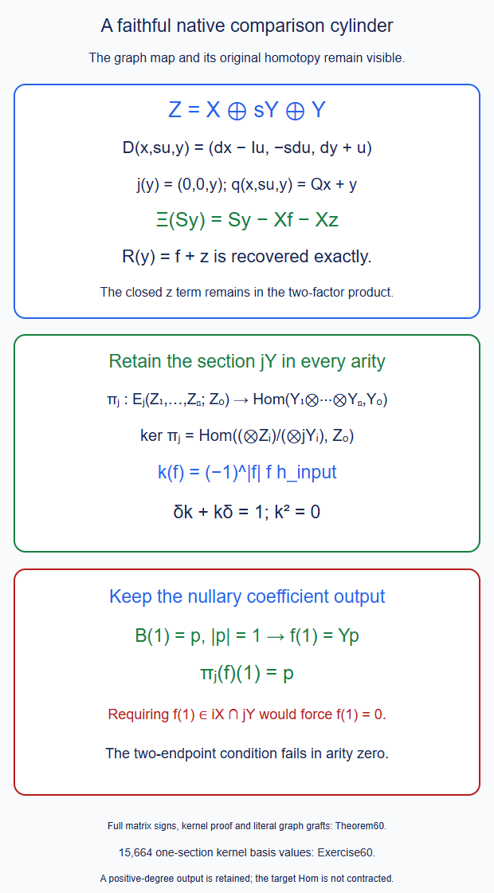
Theorem 60 and Exercise 60. The positive-degree nullary output is retained by the one-section projection. The native closed \(z\)-component is visible in the cylinder matrix and its product. Editable SVG.

61. Collapse a graft of cylinders with its entire cubical carrier
For each input let \(I_i,Q_i,H_i\) be the full special contraction of \(X_i\) onto \(Y_i\), and put \(Z_i=\operatorname{Cyl}(I_i)\). For a nonempty ordered list write \[ U_n=\bigotimes_{i=1}^nZ_i,\quad X_{\rm in}=\bigotimes_iX_i,\quad Y_{\rm in}=\bigotimes_iY_i, \quad Z_{\rm in}=\operatorname{Cyl}(\bigotimes_i I_i). \tag{61.1} \] The contraction of \(X_{\rm in}\) is the ordered tensor contraction (54.1). All identifications below retain the original factor labels.
Let \(L\) be the complex on \(0,1,e\), with \[ |0|=|1|=0,\quad |e|=-1,\qquad de=1-0. \tag{61.2} \] It has the commutative dg product \(\max\): \(0\) is its unit, \(1\cdot1=1\), \(1e=e1=e^2=0\). Its augmentation sends both vertices to one and \(e\) to zero. The notation \(0\) denotes a basis vertex, not the zero vector.
Inside \(Z_i\) put \[ C_i=i_iI_iY_i\oplus sY_i\oplus j_iY_i. \tag{61.3} \] The chain isomorphism \(\phi_i:Y_i\otimes L\to C_i\) is \[ \phi_i(y,1)=i_iI_i y,\quad \phi_i(y,0)=j_i y,\quad \phi_i(y,e)=(-1)^{|y|+1}sy. \tag{61.4} \] Define the entire cubical carrier and its graph extension by \[ C_{\rm in}=\bigotimes_iC_i,\qquad \mathcal P_n=C_{\rm in}+i_{\rm in}X_{\rm in}\subset U_n. \tag{61.5} \] Their intersection is precisely \(i_{\rm in}I_{\rm in}Y_{\rm in}\).
Theorem 61 (structural collapse and all relative regroupings). There is a closed degree-zero map \[ \mathfrak c_n:U_n\longrightarrow Z_{\rm in} \tag{61.6} \] whose restriction to \(i_{\rm in}X_{\rm in}\) is the literal inclusion of \(X_{\rm in}\). Its restriction to \(C_{\rm in}\) is exactly (61.4), followed by graded regrouping of the \(Y\)- and \(L\)-factors and the full iterated product \(\max:L^{\otimes n}\to L\). Moreover \[ q_{Z_{\rm in}}\mathfrak c_n=\bigotimes_iq_{Z_i}, \qquad \mathfrak c_n\bigl(\bigotimes_i j_i\bigr)=j_{\rm in}, \qquad \mathfrak c_1=1. \tag{61.7} \] These are full equalities of maps, including every coefficient degree. For \(n\ge1\) there is a canonical closed section \(\ell_n:Z_{\rm in}\to U_n\), whose image lies in \(\mathcal P_n\), with \[ \mathfrak c_n\ell_n=1. \tag{61.8} \] The sections agree exactly under consecutive regrouping. Their nullary counit is \(\ell_0=q_{\operatorname{Cyl}(1_k)}\).
The quotient \(K_n=U_n/\mathcal P_n\) has an explicit square-zero contraction. Consequently maps out of \(U_n\) can be extended while retaining both their entire \(\mathcal P_n\)-restriction and their entire specified represented output projection. Every compatible relative free coherent diagram of structural regroupings can be extended with those data fixed. The direct collapse and a parenthesized collapse need not be equal.
The nullary structural map is \(j:k\to\operatorname{Cyl}(1_k)\). Inserting it into either side of the binary structural map gives \[ r_C(x,su,y)=(IQx,su,y),\qquad 1-r_C=\delta k_u,\quad k_u(x,su,y)=(Hx,0,0). \tag{61.9} \] Thus its unit comparison retains the actual homotopy on the native kernel. Unit diagrams have the same relative extension property with \(C_{\rm in}\) as carrier. An original native unit comparison, on its coefficient-category source, retains its separate full matrix row (60.3); (61.9) does not replace it.
Proof. The interval product is associative: a factor \(0\) is a unit; a product containing \(1\) and \(e\), or two \(e\)'s, is zero; a product of vertices is their maximum. These rules give the same answer under every grouping. They also give graded commutativity. The differential Leibniz rule is immediate for vertices, and for the remaining pairs it is \[ d(e1)=(1-0)1=0,\qquad d(e^2)=(1-0)e-e(1-0)=0. \tag{61.10} \] Multiplication by \(0\) preserves the differential. This proves the dg algebra assertion and its augmentation property.
The sign in (61.4) is forced by the tensor differential. Both its differential and its value on \(d(y\otimes e)\) are \[ (-1)^{|y|}\bigl(iI y+sdy-jy\bigr). \tag{61.11} \] Its two vertex equations follow from \(dI=Id\). This proves that the prescribed carrier collapse is a chain map.
Here is an explicit extension to the other summands. Write \(N_i=\ker Q_i\). The splitting \[ Z_i=C_i\oplus i_iN_i \tag{61.12} \] is a chain splitting, because \(X_i=I_iY_i\oplus N_i\). Thus \(U_n=\bigoplus_SU_S\), where the factors in the subset \(S\) are \(N_i\)'s and the other factors are \(C_i\)'s. On \(S=\varnothing\) use the prescribed cubical map.
For \(S\ne\varnothing\), let \(h_S\) apply \(H_i\) on the first \(N_i\)-factor and the identity on all other factors, with graded evaluation. Since \(\delta H_i=1\) on \(N_i\), \[ \delta h_S=1_{U_S},\qquad h_S^2=0. \tag{61.13} \] Let \(p_S:U_S\to iX_{\rm in}\subset Z_{\rm in}\) be the graded projection onto the summand with all the remaining \(C_i\)'s in their \(iIY_i\)-vertex. It is the identity on the pure graph block and zero on the other cylinder summands. It need not be a chain map. Set \[ o_S=\delta p_S,\qquad \mathfrak c_n|_{U_S}=p_S+o_Sh_S. \tag{61.14} \] Here \(|o_S|=1\), \(\delta o_S=0\), and \(\delta(o_Sh_S)=-o_S\). Hence (61.14) is closed. The defect \(o_S\) vanishes on the pure graph summand; \(h_S\) preserves that summand. Its restriction there is therefore the required identity. This proves (61.6).
On a nonempty \(S\), every value of (61.14) lies in the \(N\)-part of \(X_{\rm in}\), so its represented projection is zero. On \(S=\varnothing\), (61.7) is exactly the augmentation identity for \(\max\). The all-zero vertex goes to \(jY_{\rm in}\). For one factor, the cubical part and the \(N\)-part are both identities. This proves all of (61.7).
To construct the section use the actual interval diagonal \[ \Delta(0)=0\otimes0,\quad \Delta(1)=1\otimes1,\quad \Delta(e)=e\otimes0+1\otimes e. \tag{61.15} \] It is a chain map: the differential of its last value is \(1\otimes1-0\otimes0\). Both threefold diagonals of \(e\) are \(e\otimes0\otimes0+1\otimes e\otimes0 +1\otimes1\otimes e\); the vertices are immediate. It is therefore coassociative, with counit the interval augmentation. This is a diagonal on the three-dimensional interval complex.
On the cubical part of \(Z_{\rm in}\), use \(\Delta^{(n)}\) and (61.4); on \(iX_{\rm in}\), use its literal pure-graph inclusion. The two definitions agree at the \(iI_{\rm in}Y_{\rm in}\) vertex, so define one closed map \(\ell_n\). Explicitly the shifted input has the ordered path \[ \ell_n\bigl(s(y_1\otimes\cdots\otimes y_n)\bigr) =\sum_i(-1)^{\sum_{j<i}|y_j|} iI y_1\otimes\cdots\otimes iI y_{i-1} \otimes sy_i\otimes jy_{i+1}\otimes\cdots\otimes jy_n. \tag{61.16} \] The vertex values are the corresponding pure graph and pure represented tensors. The interval product composed with its iterated diagonal is the identity: on \(e\), only the term \(e\otimes0\otimes\cdots\otimes0\) survives multiplication by \(\max\). This proves (61.8). Coassociativity proves the exact regrouping rule for the sections, and the interval counit proves their unit rule. For the empty list that counit is the stated \(\ell_0\); it is not a right inverse to \(\mathfrak c_0=j\).
The intersection of \(\mathcal P_n\) with \(U_S\), for nonempty \(S\), is the pure graph summand with each remaining factor in \(iIY_i\). The homotopy \(h_S\) preserves it. The direct sum of the \(h_S\)'s therefore descends to \[ \bar h_N:K_n\to K_n[-1],\qquad d\bar h_N+\bar h_Nd=1,\qquad \bar h_N^2=0. \tag{61.17} \] The empty-\(S\) summand is entirely in the carrier. On \(\operatorname{Hom}(K_n,W)\), for any target complex \(W\), the contraction is \[ f\longmapsto(-1)^{|f|}f\bar h_N . \tag{61.18} \] The calculation is (60.11), with every source unary differential retained.
For the simultaneous assertion let \(q_o:Z_o\to Y_o\) be a specified cylinder projection. The joint map is \[ \operatorname{Hom}(U_n,Z_o)\longrightarrow \operatorname{Hom}(\mathcal P_n,Z_o) \mathop{\times}_{\operatorname{Hom}(\mathcal P_n,Y_o)} \operatorname{Hom}(U_n,Y_o). \tag{61.19} \] It is graded-surjective: extend the first prescribed map to \(a_0\); correct its represented projection by \(j_o(b-q_oa_0)\). The correction vanishes on the carrier by compatibility. Its kernel is exactly \(\operatorname{Hom}(K_n,\ker q_o)\), contracted by (61.18). A closed prescribed pair lifts by subtracting the contracted differential defect. For relative free coherent diagrams use the same correction on the entire incoming generator complex, as in (58.13). It vanishes on every already prescribed generator face. This proves the relative extension with both images fixed.
For clarity, consider any positive parenthesization \(t\) of the input list. Its composite collapse \(\mathfrak c_t\) is closed and restricts to the same map on \(\mathcal P_n\): on the graph block all maps are identities, while on the full cube all maps are the same associative interval multiplication, with its graded regrouping signs. Thus \[ T_t=(\mathfrak c_n-\mathfrak c_t)\bar h_N,\qquad \delta T_t=\mathfrak c_n-\mathfrak c_t \tag{61.20} \] is an actual degree-minus-one relative comparison. Its represented projection is zero. Higher prescribed regrouping boundaries are closed by the incoming generator differential and vanish on the same carrier. Formula (61.18) supplies their primitives. It preserves zero represented projection, so every higher comparison retains the represented family exactly.
Here is the first specified two-dimensional example. For three consecutive blocks let \(\mathfrak c_L=\mathfrak c_2(\mathfrak c_2\otimes1)\) and \(\mathfrak c_R=\mathfrak c_2(1\otimes\mathfrak c_2)\). Use the actual local rotation \[ E_{A,B,C}=(\mathfrak c_R-\mathfrak c_L)\bar h_N . \tag{61.21} \] For four blocks, traverse the five binary parenthesizations in the order \[ ((12)3)4,\quad (1(23))4,\quad 1((23)4),\quad1(2(34)),\quad(12)(34). \tag{61.22} \] Whisker (61.21) on each corresponding local rotation, reversing its sign on the last two edges. A rotation in a right input slot carries the Koszul sign from its degree minus one crossing the preceding full input degree. Let \(\Lambda\) be the sum of these five specified edges. Their differential telescopes: \(\delta\Lambda=0\). Every edge vanishes on \(\mathcal P_4\). The actual pentagon filler is \[ K_{\rm pent}=-\Lambda\bar h_N,\qquad |K_{\rm pent}|=-2,\qquad \delta K_{\rm pent}=\Lambda . \tag{61.23} \] The minus sign is the degree-\(-1\) instance of (61.18). This retains the specified local rotation homotopies, rather than replacing them by a strictly commuting pentagon.
For the unit, the interval vertex \(0\) is a unit for \(\max\). On \(C_i\) a nullary insertion therefore acts as the identity. On a native \(N_i\)-summand the additional coefficient \(j(1)\) is a \(Y\)-summand; the projection \(p_S\), its defect followed by \(h_S\), and hence the collapse are all zero. This gives \(r_C\) in (61.9). Differentiating \(k_u\) gives \((1-IQ)x\) in its first component and zero elsewhere, proving (61.9).
For higher unit diagrams use just the cubical carrier \(C_{\rm in}\). Its quotient is the sum of all nonempty-\(S\) summands, contracted by the same first-\(N\) maps \(h_S\). The unit comparisons vanish on the cube, as do the positive regrouping comparisons. Any compatible closed higher unit boundary therefore has a primitive relative to that cube, with its represented projection retained. This is the same joint restriction argument (61.19), with the smaller carrier. It preserves the already prescribed unit homotopies. This proves the theorem. \(\square\)
The section recovers the original native joining prism from an actual graft of cylinders. Let \(F=(A,B,R)\) be any indicated whole section-comparison datum of degree \(r\), from the input contraction to the target contraction. On the stated common input put \[ \Psi_F=\Xi(F)\mathfrak c_n. \tag{61.24} \] Then \[ \Psi_F\ell_n=\Xi(F),\qquad \pi_j(\Psi_F)=B,\qquad (-1)^{r+1}\operatorname{pr}_X\Psi_F\ell_n s=R. \tag{61.25} \] The pure graph block recovers \(A\). These equalities retain all components of the original \(F\), rather than choosing a primitive with just the same differential. In particular use the actual whole joining comparison of Theorem 54, with its original native coefficient map and its entire joining homotopy. The represented restriction is the one-section projection \(\pi_j\); projection-square comparisons remain the full maps (53.5). All the relative regrouping maps and higher fillers vanish on \(\ell_nZ_{\rm in}\). Consequently the recovery (61.25) remains exact while those structural comparisons are attached.
The construction applies to the full marked contractions, not merely their bare object coefficients. On the genuine full parameter encoding use the entire closed section \(\Sigma\) of (43.4) and its actual full \(Q^e,H^e\). The splitting is then \[ X^e=\Sigma Y^e\oplus\ker Q^e,\qquad C^e=i\Sigma Y^e\oplus sY^e\oplus jY^e. \tag{61.26} \] It is a splitting of the full dg encodings, so these carriers are stable under the complete parameter and source differentials. The finite summand argument above uses their full maps and their actual coactions. The first-\(N\) contraction is \(H^e\) on \(\ker Q^e\); all the original marked components remain. Using only the bare \(I\) would not prove this stability. Positive parameter cores of the resulting collapse contain the corresponding components of \(\Sigma,Q^e,H^e\). They are not obtained by applying the bare object collapse separately to each parameter value.
For literal graph grafts use (54.7) throughout, keeping the joining bar. The finite direct-sum splittings distribute through its original cotensor equalizer. The same tensor evaluation signs, carrier map and relative contractions therefore give entire graph maps. Independent parameter inputs use their genuine tensor coalgebra. The entire diagram, including its comparison arrows and higher rows, can be recorded on the common input of Theorem 55; for arrow data use the correspondence of Theorem 59 before recording. Pullback along the actual whole roof retains every parameter core and its faces.
These structural maps retain the represented diagram on that stated common input. Identifying it with an additional original native joint family requires its actual comparison and all its prescribed faces. Neither the interval product nor the recording step supplies a diagonal on an original parameter bar or replaces the original native graft prism.
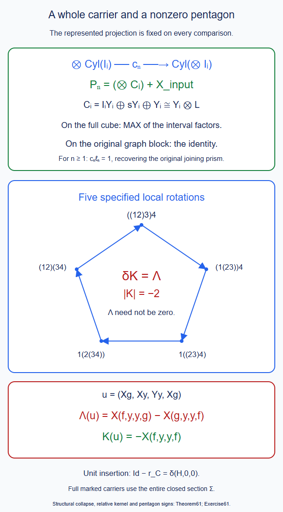
Theorem 61 and Exercise 61. Regrouping homotopies and their pentagon filler retain the represented projection exactly. Editable SVG.

62. A strict tensor home for the full comparison matrices
Give the interval \(L\) of (61.2) the coproduct \[ \Delta0=0\otimes0,\quad \Delta1=1\otimes1,\quad \Delta e=e\otimes0+1\otimes e,\qquad \epsilon(0)=\epsilon(1)=1,\quad\epsilon(e)=0 . \tag{62.1} \] The vertex \(0\) is the multiplicative unit of \(L\). It is not the zero vector. The monoidal unit is the one-dimensional comodule \(k_0\), with coaction \(1\mapsto0\otimes1\). For every \(Z=\operatorname{Cyl}(I)\), define \[ \rho(Xx)=1\otimes Xx,\qquad \rho(Yy)=0\otimes Yy,\qquad \rho(Sy)=1\otimes Sy-e\otimes Yy . \tag{62.2} \] The labels \(X,S,Y\) name the summands of (60.1). A homogeneous map \(f\) of degree \(r\) is colinear when \[ \rho f=(1_L\otimes f)\rho,\qquad (1_L\otimes f)(l\otimes u)=(-1)^{r|l|}l\otimes f(u). \tag{62.3} \]
Theorem 62 (full matrices, tensor products and coefficient sources). The interval with its MAX product and (62.1) is a commutative dg bialgebra. Its left comodules form a symmetric monoidal dg category. Between single comparison cylinders, \(\Xi\) identifies the entire section-comparison mapping complex of Theorem 52 with the entire complex of homogeneous \(L\)-colinear maps. This is a unital dg category isomorphism on those objects, retaining every \(A,B,R\).
Allow as colors all nonempty ordered tensor words of comparison cylinders, with their actual graft types, including \(\operatorname{Cyl}(1_k)\). Ordinary tensor evaluation and composition give the strict colored dg operator spaces \[ \mathcal E_\rho(U_1,\ldots,U_n;V) =\operatorname{Hom}_L(U_1\otimes\cdots\otimes U_n,V). \tag{62.4} \] The source for \(n=0\) is \(k_0\). Restriction to the pure \(Y\)-summands gives a unital, graded-surjective quasi-isomorphism onto the corresponding \(Y\)-operator spaces in every arity.
The positive-arity maps \(\mathfrak c_n,\ell_n\), their specified regrouping homotopies and pentagon of Theorem 61, and their unit homotopies are colinear. In particular every original native row has the realization \[ \Psi_F=\Xi(F)\mathfrak c_n,\qquad \Psi_F\ell_n=\Xi(F)\quad(n\ge1) \tag{62.5} \] in this same strict operator category. A geometric operation with zero state inputs retains its coefficient-cylinder source and its full unary comparison row.
Proof. The interval product is associative and graded commutative by its basis table. Its nontrivial Leibniz checks are \[ d(e1)=(1-0)1=0,\qquad d(e^2)=(1-0)e-e(1-0)=-e+e=0 . \tag{62.6} \] Products with \(0\) use its unit property; vertex products are closed. The coproduct is a chain map because \[ d\Delta e=(1-0)\otimes0+1\otimes(1-0) =1\otimes1-0\otimes0 . \tag{62.7} \] Its two iterates on \(e\) are both \(e\otimes0\otimes0+1\otimes e\otimes0+ 1\otimes1\otimes e\). Vertices and counits give the other cases. For compatibility with multiplication, use the Koszul product on \(L\otimes L\). Products with \(\Delta0\) are unchanged, \((\Delta1)^2=\Delta1\), and \[ (\Delta1)(\Delta e)=0,\qquad(\Delta e)^2=0 . \tag{62.8} \] The first uses \(1e=0\); each mixed term in the second contains that same zero product, and its square terms contain \(e^2\). These are all basis pairs. The augmentation is multiplicative.
The tensor coaction moves the \(L\)-factors to the left with Koszul signs and multiplies them. The bialgebra law makes it coassociative and closed. Associativity and the unit \(0\) give the monoidal associativity and unit laws; graded commutativity makes the usual graded symmetry colinear. This proves the symmetric monoidal dg category assertion. It does not require cocommutativity of \(\Delta\).
Formula (62.2) is counital. Its two iterates on \(Sy\) are \[ 1\otimes1\otimes Sy-e\otimes0\otimes Yy-1\otimes e\otimes Yy . \tag{62.9} \] On the unshifted summands this follows from the vertices. The full cylinder differential gives \[ \begin{split} d\rho(Sy) &=-1\otimes XIy-1\otimes Sdy+0\otimes Yy+e\otimes Ydy\\ &=\rho(-XIy-Sdy+Yy). \end{split} \tag{62.10} \] The other two summands also commute with their differentials. This includes nonzero \(dy\).
The weight-zero elements of a single cylinder, meaning \(\rho v=0\otimes v\), are exactly \(Yy\). Its weight-one elements are exactly \(Xx\). Thus a degree-\(r\) colinear map sends \(Yy\) to \(YBy\) and \(Xx\) to \(XAx\). Write its value on \(Sy\) as \(XC y+SE y+YT y\). Comparison of the \(0,1,e\) coefficients in (62.3) gives \[ T=0,\qquad E=(-1)^rB,\qquad C=(-1)^{r+1}R , \tag{62.11} \] where \(R\) is unrestricted of degree \(r-1\). Conversely these equations give colinearity of every \(\Xi(A,B,R)\). The differential and composition are those proved in Theorem 60, so this is an isomorphism of dg categories, including identities.
Flatten a tensor source into \(U=\bigotimes_iZ_i\), with pure represented subcomplex \(Y_U=\bigotimes_iY_i\). Let \(p:U\to Y_U\subset U\) be the graded summand projection. Define the degree-one map \(t:U\to Y_U\subset U\) to be zero except on tensors with exactly one \(S\)-summand and all other factors in \(Y\). There put \[ t(Yy_1\otimes\cdots\otimes Sy_i\otimes\cdots\otimes Yy_m) =(-1)^{\sum_{j<i}|y_j|}\bigotimes_jYy_j . \tag{62.12} \] On every tensor summand, multiplying the coactions gives \[ \rho_U(u)=1\otimes u+(0-1)\otimes pu-e\otimes tu,\qquad t=p\,d_U-d_{Y_U}p . \tag{62.13} \] Indeed an \(X\)-factor kills every possible \(e\)-term. With two or more \(S\)-factors, an \(e\)-term meets either another \(e\) or a \(1\), so is zero. With exactly one \(S\) and the other factors in \(Y\), moving its \(e\) left gives (62.12). The pure \(Y\)-summand has coaction \(0\otimes u\). The cylinder differential proves the second equality, retaining all internal differentials. For the empty tensor \(p=1,t=0\), and (62.13) remains true.
For an output word \(V\), put \[ G_V=\ker p_V\cap\ker t_V =\{v:\rho_V(v)=1\otimes v\}. \tag{62.14} \] This is a subcomplex since \(\rho_V\) is closed. The weight-zero part of \(V\) is exactly \(Y_V\). Consequently every colinear map restricts to a map \(Y_U\to Y_V\), and restriction preserves all substitutions, permutations and identities.
For a single output cylinder, a degree-\(r\) map \(B:Y_U\to Y_o\) has the graded colinear lift \[ f_B(u)=j_oBpu+(-1)^r s_oBtu . \tag{62.15} \] Substitution in (62.3) proves this equality, including the \(e\)-coefficient and its sign; restriction is exactly \(B\). For an output word of length \(m\ge1\), follow this lift into \(\operatorname{Cyl}(\bigotimes_a I_a)\) by \(\ell_m\). This section is colinear: on the cube it is the iterated coproduct (62.1). Direct substitution on the two vertices and on \(e\) proves that \(\Delta:L\to L\otimes L\) is colinear for the tensor coaction defined using MAX. For the edge that coaction is \[ \rho_{L\otimes L}(\Delta e) =e\otimes(0\otimes0)+1\otimes\Delta e =(1\otimes\Delta)\Delta e . \tag{62.16} \] On the graph block \(\ell_m\) is colinear as well. Iteration proves the assertion and graded surjectivity.
If the represented restriction of \(f\) is zero, (62.13) and (62.3) say exactly that \(f\) vanishes on \(Y_U\) and has image in \(G_V\). Conversely every such graded map is colinear, because \(p_U,t_U\) have image in \(Y_U\). Thus the kernel of restriction is precisely \[ N(U,V)=\operatorname{Hom}(U/Y_U,G_V). \tag{62.17} \] The special cylinder contraction of Theorem 60, tensored in the given order, contracts \(U\) onto \(Y_U\). It vanishes on \(Y_U\), inducing a square-zero contraction \(\bar h_U\) of \(U/Y_U\). Consequently \[ h_N(f)=(-1)^{|f|}f\bar h_U,\qquad \delta h_N+h_N\delta=1,\quad h_N^2=0 . \tag{62.18} \] Expanding the Hom differential proves this: the output differential terms cancel, and the source terms are \(f(d\bar h_U+\bar h_Ud)=f\). No contraction of \(G_V\), or of a whole target Nat complex, is asserted. With empty source \(U=Y_U=k_0\), the kernel is zero and the entire nullary space is \(\operatorname{Hom}(k,Y_V)\), with every output degree. The short exact sequence with kernel (62.17) proves the quasi-isomorphism.
On the full cube, \(\mathfrak c_n\) is the interval product, colinear by the bialgebra law. Every summand with a native \(\ker Q\) factor has pure weight one: its \(1\) absorbs all vertices and annihilates all edge coefficients of the other factors. The collapse (61.14) maps it into the weight-one \(X\)-block. Thus the entire collapse is colinear. The first-\(\ker Q\) homotopy preserves these weight-one summands and vanishes on the cube, so is colinear of degree minus one. Formulas (61.20)–(61.23) give colinear specified regroupings and their degree-minus-two pentagon filler. The unit homotopy \((Hx,0,0)\) has the same property. Closure under tensor and composition proves (62.5), including the exact native recovery (61.25).
Identify the coefficient cylinder with \(L\) by \(Y1=0,\ X1=1,\ S1=-e\). A degree-\(r\) comparison row from it is exactly \[ f(0)=YB(1),\quad f(1)=XA(1),\quad f(e)=(-1)^r XR(1)+(-1)^{r+1}SB(1). \tag{62.19} \] No \(A,B,R\) coordinate has been discarded. The ordinary counit \(L\to k_0\) is closed but not colinear: at vertex \(1\) its two proposed coactions are \(0\otimes1\) and \(1\otimes1\). It supplies no strict inverse for this coefficient-source row. This proves the theorem. \(\square\)
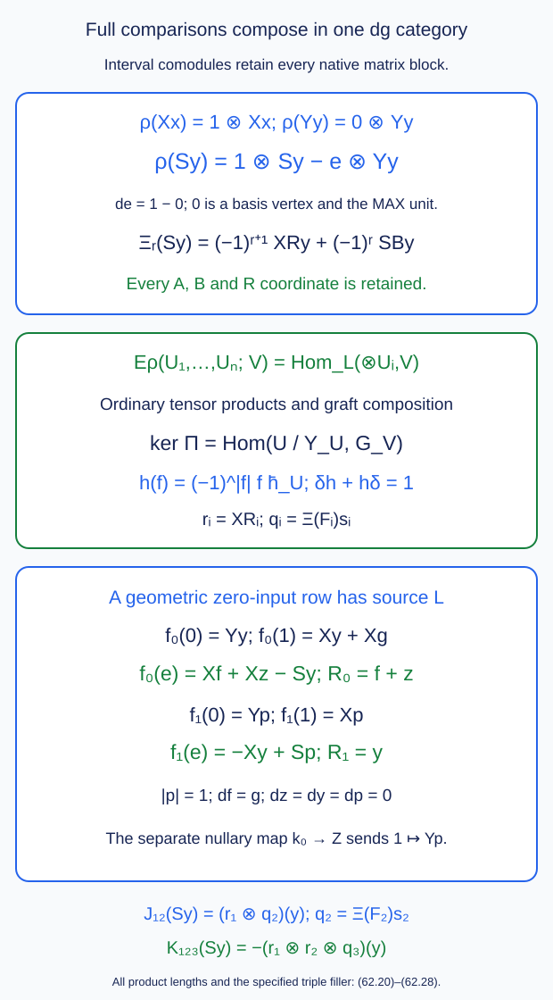
The relative lifting consequence uses the full incoming unary differential. Suppose a free typed dg source has a differential-stable union of prescribed generator faces and a given whole \(Y\)-operator diagram. Assume the prescribed colinear diagram has that exact represented image on their overlap. At the next generator complex choose a graded lift with both images fixed. Its differential defect lies in (62.17), is zero on the prescribed subcomplex, and is closed for the Hom differential including the full source unary term. Postcompose that defect with (62.18) and subtract. The resulting lift is closed with both images unchanged: the incoming unary terms cancel in this Hom computation as in Theorem 52. Proper source decompositions were assigned at smaller generator lengths. Induction gives the whole relative lift. Finite stabilizer averaging in characteristic zero preserves both images; the ordered homotopy itself need not be equivariant.
Substitutions in (62.4) are ordinary tensor and composition of comodule maps between the actual tensor objects. They do not copy a single interval coefficient to define a substitution law. The original parameter words and the whole marked section \(\Sigma\), rather than its bare value, determine the cylinders in (62.5). For a partial native replacement use the entire triple of Theorem 53; recovering its third matrix block gives the original \(R\) on every marked input. Tensoring these maps retains every simultaneous \(R\)-product. Their compositions obey the full signed law of Theorem 52. For an expanded joining seam use the entire triple of Theorem 54, including its joining section homotopy, before applying (62.5). Whole parameter roofs are those of Theorem 55.
The tensor section comparison has an explicit mixed term. Let \(F_i=(A_i,B_i,R_i)\) be closed degree-zero whole rows, and let \(F_{12}\) be their exact product (54.3). Use \(\ell,\ell'\) for the two-factor sections of the input and output cylinders. Define a degree-minus-one map \(J_{12}\) by \[ \begin{split} J_{12}(Xx)&=J_{12}(Yy)=0,\\ J_{12}(S(y_1\otimes y_2)) &=(-1)^{|y_1|}XR_1y_1\otimes\Xi(F_2)(Sy_2). \end{split} \tag{62.20} \] Then, as entire maps, \[ \delta J_{12} =(\Xi(F_1)\otimes\Xi(F_2))\ell-\ell'\Xi(F_{12}). \tag{62.21} \] Thus its tensor section need not be strictly natural. Both its graph and represented restrictions are zero, and \(J_{12}\) is colinear. The formula includes the nonzero product \(-R_1\otimes R_2\).
Here is a direct proof with all signs. As maps on the unshifted \(Y_i\), abbreviate \[ r_i=XR_i,\quad a_i=XA_iI_i,\quad b_i=XI'_iB_i,\quad y_i=YB_i,\quad q_i=\Xi(F_i)s_i . \tag{62.22} \] The \(r_i,q_i\) have degree minus one and \(\delta r_i=a_i-b_i,\ \delta q_i=y_i-a_i\). Every tensor of maps in the following equations uses graded evaluation. On a shifted input the right side of (62.21) is \[ \begin{split} &(q_1\otimes y_2+a_1\otimes q_2)\\ &\quad-\bigl((q_1+r_1)\otimes y_2 +b_1\otimes(q_2+r_2)-r_1\otimes a_2-b_1\otimes r_2\bigr)\\ &=(a_1-b_1)\otimes q_2+r_1\otimes(a_2-y_2) =\delta(r_1\otimes q_2). \end{split} \tag{62.23} \] On the two unshifted summands it is zero. Since \(J_{12}\) vanishes there and \(D(Sy)=-XIy-Sdy+Yy\), its differential on \(Sy\) is precisely \(\delta(r_1\otimes q_2)(y)\). This proves (62.21), including nonclosed inputs. Its image has first factor of weight one, so the tensor coaction is weight one; (62.3) then proves colinearity.
There is consequently an explicit comparison for every nonempty ordered product, retaining its original telescoping \(R\) from (54.3). Put \(J_1=0\). For a consecutive partition \(A|b\), where \(A\) is the first \(n-1\) factors and \(b\) the last, put \[ J_{A,b} =(J_A\otimes\Xi(F_b))\ell_{A,b} +(\ell'_A\otimes1)J_{F_A,F_b}. \tag{62.24} \] Here \(F_A\) is the full product row, and the last term is (62.20) for those two whole blocks. Applying the dg Leibniz rule, using that every \(\ell,\Xi\) is closed, proves by induction \[ \delta J_{1,\ldots,n} =(\bigotimes_i\Xi(F_i))\ell_{1,\ldots,n} -\ell'_{1,\ldots,n}\Xi(F_{1\cdots n}). \tag{62.25} \] The two intermediate terms cancel exactly. Coassociativity of the sections gives the stated domain and codomain, and (54.3) is associative on these whole rows by its ordered telescoping expansion. Every \(J\) in this induction is colinear and vanishes on the two unshifted summands.
For three factors the left- and right-grouped choices are \[ \begin{split} J_L&=(J_{12}\otimes\Xi(F_3))\ell_{12,3} +(\ell'_{12}\otimes1)J_{F_{12},F_3},\\ J_R&=(\Xi(F_1)\otimes J_{23})\ell_{1,23} +(1\otimes\ell'_{23})J_{F_1,F_{23}} . \end{split} \tag{62.26} \] The right-slot occurrence of \(J_{23}\) carries its degree-minus-one Koszul sign. The specified degree-minus-two filler is \[ K_{123}(Xx)=K_{123}(Yy)=0,\qquad K_{123}(Sy)=-(r_1\otimes r_2\otimes q_3)(y),\qquad \delta K_{123}=J_L-J_R . \tag{62.27} \] Indeed expand (62.26) on \(Sy\). The difference is \[ r_1\otimes r_2\otimes(a_3-y_3) +r_1\otimes(a_2-b_2)\otimes q_3 -(a_1-b_1)\otimes r_2\otimes q_3 =-\delta(r_1\otimes r_2\otimes q_3). \tag{62.28} \] It is zero on the other summands. Since \(|K_{123}|=-2\), the Hom differential and the negative shifted unary differential give exactly (62.27). The image again has pure weight one. Its cubic \(R_1R_2R_3\) contribution is retained.
These equations also hold for literal expanded-seam grafts: apply the dg multilinear graft operation (54.7) to each displayed tensor formula. Its Leibniz and interchange rules are exactly those used in (62.23) and (62.28). For full parameter families, perform the calculation on the entire cofree parameter modules; the degrees in the Koszul signs include their parameter degrees. Restriction uses the whole actual joint-index roof of Theorem 55. No parameter bar diagonal is introduced. The joining endpoint retains the full \(R\) and \(\eta\) in (54.6).
For a changing-profile family, prescribing graft and deletion faces simultaneously requires their complete common generator values. Agreement of arrows or cohomology classes alone does not establish that condition. In particular, the canonical whole tensor-bar face and the original native parameter input must be compared on their actual joint index.
63. The whole completed-cut matrix family with prescribed section cores
Fix the actual completed string \(\tau_\sigma\), cut category \(\mathcal C_q\), and entire native operator map \(\mathcal S_\sigma\) of Theorem 51. Fix an actual outer functor \(W:A_b\to D\). The source inputs remain all of \(B_{\rm full}A_a\), with the original endpoint labels. Graph maps are contravariant in the inner operation. We first specify that direction on the whole parameter diagram, including its higher cores.
For a dg category \(E\), let \(E^{\rm op}\) have composition \(a\cdot_{\rm op}b=(-1)^{|a||b|}ba\). With the negative unary bar convention of Theorem 9, define \[ \chi_E(sa_1|\cdots|sa_p) =(-1)^{p+\sum_{i<j}(|a_i|-1)(|a_j|-1)} sa_p|\cdots|sa_1 . \tag{63.1} \] It is a chain coalgebra isomorphism \(B_{\rm full}(E^{\rm op})\to(B_{\rm full}E)^{\rm cop}\); the superscript \({\rm cop}\) includes the graded tensor swap. On each coaugmentation it is the identity. Consequently a whole coherent map \(S:BP\to BE\) has opposite \[ S^{\rm op}=\chi_E^{-1}S\chi_P . \tag{63.2} \] The ordinary arrows retain their original, positive unary functor values: the two length-one signs in (63.2) cancel. One must not apply only one of these reversals.
At a cut vertex \(C\), put \(H_C=H_{\sigma,C}\). Let \(\mathcal X_C\rightleftarrows\mathcal Y_C\) be the actual two-block common-input contraction for \(W,H_C\). On the entire original parameter encoding it is Theorem 43, pulled back along (51.5)–(51.6). In particular its section is the whole \(\Sigma\), and its positive section cochain is \(\mathcal I(c)=-W_c\) in the graph coordinates of Theorem 59. Write \(\tau_A,\tau_B\) for its two entire diagonal twisting cochains after (63.2).
Theorem 63 (completed-cut matrices and retention of every prescribed \(R\)-core). For these actual two-block graph objects, the complete native cut family is represented by the following coherent cylinder operators. On every positive homogeneous parameter input \(c\), \[ \tau_Z(c)= \begin{pmatrix} \tau_A(c)&(-1)^{|c|}\mathcal I(c)s^{-1}&0\\ 0&(-1)^{|c|+1}s\tau_B(c)s^{-1}&0\\ 0&0&\tau_B(c) \end{pmatrix}. \tag{63.3} \] The object differential is the full cylinder differential, including its bare section \(I_C\). The matrix has degree \(|c|+1\); its unshifted third datum has degree \(|c|\). It satisfies the full Maurer–Cartan equation and is colinear for (62.2). All original higher native \(A,B,\mathcal I\) cores can be recovered from its blocks, with no cohomological replacement.
Deleting any vertex of \(\sigma\) restricts (63.3) to its identical matrix family on the face whose cuts omit that vertex. This includes the endpoint composites in Theorem 51. Every source word, original parameter label and unconsumed identity word remains. The zero-frontier source is the coefficient category, and its actual unit-output mappings are retained.
There is also a relative construction on the actual expanded block graph objects \(X_C\) of Theorem 52. Prescribe the whole represented family \(B\), any compatible differential-stable union of full lifted generator faces, and any graded values \(R_v\) of the indicated degree on the remaining free generators. The \(R_v\)'s must have the actual endpoint types and agree with the prescribed values on intersections. Then the lift can retain every one of these \(R_v\) exactly, as well as the entire given \(B\). Its new corrections have only an \(A\)-component. In particular the actual partial-replacement triples of Theorem 53 can be retained on the one-cut edges. Any supplied higher native section cores already expressed in these same mapping spaces can be retained too.
Proof. Formula (63.1) reverses the suspended list with its Koszul sign and one extra minus per letter. It is involutive. Reversing a deconcatenation exchanges its two pieces and contributes their graded tensor-swap sign, proving the coalgebra assertion. For a unary term, reversal moves its degree-one differential past the complementary suspended factors; this gives exactly the opposite bar tensor sign. For an adjacent pair \(a,b\), its opposite product has the additional factor \((-1)^{|a||b|}\). The binary signs before and after reversal agree because, modulo two, \[ (|a|-1)(|b|-1)+|a|+|b|=|a||b|+1 . \tag{63.4} \] The length drops by one, so the extra minus per letter supplies precisely that final \(1\). All complementary-factor signs agree with the same final reversal permutation. Unary and binary terms exhaust the dg bar differential. This proves that \(\chi_E\) is closed and proves (63.2). It also applies to proper original arrows whose operator images are identities; their source letters were never quotiented out.
Theorem 51 gives the whole map on the actual cut category, not a collection of unrelated edges. Apply its full evaluation (51.6), retaining all original source inputs. Theorems 43–44 then give the entire section and both graph diagonals on this same coalgebra. By Theorem 59, their twisting cochain in the section-comparison category is \[ \widetilde\tau(c) =(\tau_A(c),\tau_B(c),\mathcal I(c)). \tag{63.5} \] Its coefficient degree is \(r=|c|+1\). Applying the faithful dg functor \(\Xi\) of Theorem 60 gives the shifted-input coefficient \((-1)^{r+1}\mathcal I(c)=(-1)^{|c|}\mathcal I(c)\) and the shifted diagonal \((-1)^r\tau_B(c)\). These are exactly (63.3). Because \(\Xi\) preserves the differential and every graded product, applying it to \[ \partial\widetilde\tau+\widetilde\tau b -\widetilde\tau\star\widetilde\tau=0 \tag{63.6} \] proves the entire matrix equation. This includes every parameter unary differential, every adjacent merger, every proper cut and every original state differential. Colinearity is Theorem 62 in each homogeneous degree. The three blocks recover the original triple by (60.3).
For a \(p\)-arrow cut flag, the coefficient degree is \(1-p\) and its section datum has degree \(-p\). Since \(\mathcal I(c)=-W_c\), its shifted off-diagonal block is \((-1)^{p+1}W_c\). For example the one- and two-arrow blocks have opposite signs, although both section data use the same global negative in (59.3). These degree statements use cut flags; they do not identify cut length with the length of an execution string or with its source mapping word.
On the face omitting \(x_i\), Theorem 51 gives literally the shorter string's block composites and whole operator map. Precomposition with this face map commutes with \(\chi\), evaluation, all cuts in (43.4), and application of \(\Xi\). Hence (63.3) restricts exactly on every generator, including the higher ones. At the first or last face the block composite is the displayed \(g_1u_0\) or \(h_qg_q\); neither is suppressed. The zero-frontier case still uses the actual coefficient category and the full output Hom complex of its unit, by Theorems 9 and 51.
For the last assertion, use the original relative free source \(\mathcal R=T_S(V)\) of Theorem 52, with its full \(d_1+\gamma\). At a generator of degree \(r\), choose a graded lift \(v=(A_v,B_v,R_v)\) with the specified \(B_v,R_v\) and all prescribed full face values. Such a graded lift exists: \(A_v\) is unrestricted off those already fixed subspaces. The relative graded extension can be chosen on their quotient. Its defect is the actual \[ o=(\partial v-vd_1)-\widetilde F_{<\ell}\gamma . \tag{63.7} \] It is closed, takes values in \(\ker\Pi\), and vanishes on every prescribed subcomplex, exactly as proved in (52.13)–(52.15). The correction is \[ v_{\rm new}=v-\mathfrak h o . \tag{63.8} \] Crucially \(\mathfrak h(A,0,R)= ((-1)^{|A|}AH+RQ,0,0)\). Thus (63.8) alters only \(A_v\). It keeps the given \(R_v\), whether closed or nonclosed, and its entire \(B_v\), while making the full generator equation hold. Multiplicative extension gives a dg functor, with the original coefficient identities assigned at the outset. In the normalized full bar-cobar recorder, the one-output value on an original coalgebra input is the value of its single cobar generator, as proved in (55.10). Consequently preserving these generator \(R_v\)'s preserves every original coherent section core, not merely their values on arrows.
For explicit cut equations, write \(F_{0\ldots p}\) for the coefficient of an ordinary flag \(C_0\subsetneq\cdots\subsetneq C_p\), read in graph direction. Its degree is \(1-p\), and the negative-unary convention gives \[ \partial F_{0\ldots p} =\sum_{i=1}^{p-1}(-1)^i \left(F_{0\ldots i}F_{i\ldots p} -F_{0\ldots\widehat i\ldots p}\right). \tag{63.9} \] This follows directly by inserting the suspended degree \(-1\) of each arrow in (63.6). The two-arrow formula is \(\partial F_{012}=F_{02}-F_{01}F_{12}\). It keeps the direct simultaneous arrow \(02\). Equation (63.8) solves all these equations with the stated \(B,R\) values; it does not replace the direct arrow by the composite.
A deleted-cut face has all \(C_j\) omitting the same coordinate. Each unary term, adjacent merger and proper cut stays in that face. Unions of these generator faces are therefore stable. Their full values agree by induction on the shorter original completed strings, using their unchanged block labels. Theorem 53 supplies the identical elementary triple wherever that elementary replacement survives. Applying (63.8) relatively retains every such value. Induction first on original string dimension and then on generator length constructs the claimed face-compatible family. For the two calibrated systems, use C.48.3's whole prism source and prescribe both endpoint systems and their already assigned common faces. Its simplex subdivision has the same stable free face subcomplexes. The same correction retains the supplied \(B,R\) cores on the prism and both endpoint systems. This proves the theorem. \(\square\)
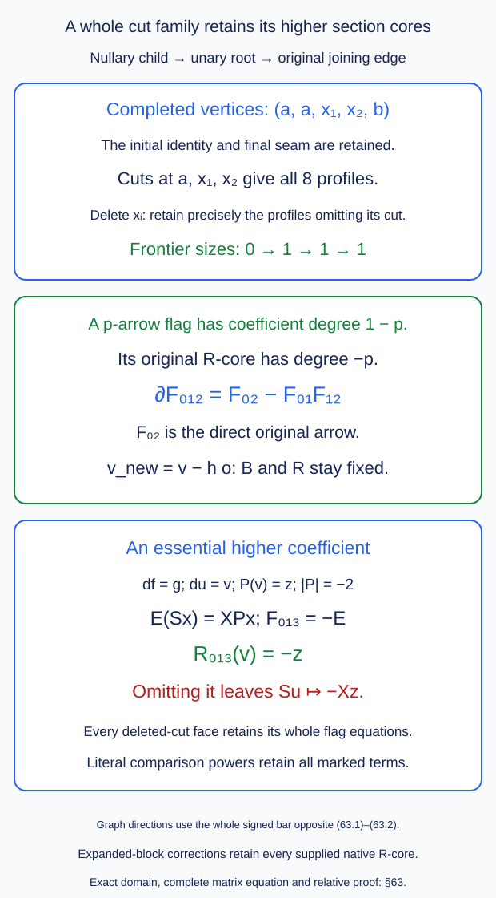
This gives the actual full matrix family in the two-block presentation, and an expanded-block lift retaining the indicated exact native data. Its higher \(A\)-components are those assigned by (63.8) unless already prescribed on a full face. They are not thereby identified with every differently presented native graft diagonal. For a product face expressed on an actual common refinement, its matrix comparison is (62.20)–(62.25); the specified three-factor filler is (62.27). Literal grafts use (54.7), the full joining triple (54.6), and the whole original roof of Theorem 55. To prescribe these product and graft families together with every changing-profile face, their entire generator values and overlap comparisons must still be placed in those same mapping spaces. The projection-kernel contraction does not prove that an arbitrary extra requirement fixing both graph and represented blocks has an acyclic kernel.
64. A joint input retaining the canonical tensor family and the original triangle
Consider the original compatible graft with a unary outer operation and a genuinely nullary inner operation. Its execution objects are \(00,01,11\); \(10\) is not an original execution state. Its arrows are \(\alpha:00\to01,\ \beta:01\to11,\ \delta=\beta\alpha\). Retain the direct arrow and the two-arrow parameter word. Complete the original strings in a fixed outer context as in Theorem 51. All the following operator families therefore have the same actual outer source and target. The auxiliary object \(10\) below belongs to a parameter resolution, and does not add an execution to this category.
Use the actual two-factor parameter model \(T\) of Theorems 55–56. It has axes \[ b_0:00\to01,\quad a_1:01\to11,\quad a_0:00\to10,\quad b_1:10\to11, \qquad AB=a_1b_0,\quad BA=b_1a_0 , \tag{64.1} \] and a degree-minus-one arrow \(M:00\to11\) with \(dM=AB-BA\). The other arrows have degree zero. Write \(C=B_{\rm rel}T\) for its relative input bar over the four object identities. It includes its four coaugmentations. Here the proper arrows form a dg ideal, so this relative bar is a genuine dg coalgebra. It describes the full normalized Nat inputs; ordinary identity inputs obey the unit normalization of C.71. Proper arrows such as \(AB,BA\) remain even when their operator images are identities.
Use the negative unary convention of Theorem 9. Abbreviate the two proper two-arrow inputs by \[ x=sa_1|sb_0,\qquad y=sb_1|sa_0 . \tag{64.2} \] Then \[ b(sM)=-sAB+sBA,\quad b(x)=-sAB,\quad b(y)=-sBA . \tag{64.3} \] The parity conversion (E56.3) sends the whole units of Theorem 55 to \[ \eta_K(C_{\rm mix})=-sM+x-y,\qquad \Lambda_1(s\delta)=sBA,\qquad \Lambda_1(s\beta|s\alpha)=-sM+x . \tag{64.4} \] The axes and coaugmentations keep their displayed labels. These are entire coalgebra maps, not assignments that discard their other output words.
Theorem 64 (simultaneous whole-input retention on the compatible triangle). Inside \(C\), put \[ Q=\eta_K(K)+\Lambda_1(B_{\rm rel}P),\qquad I=\eta_K(K)\cap\Lambda_1(B_{\rm rel}P). \tag{64.5} \] The intersection consists exactly of the coaugmentations at \(00,01,11\) and the axes \(b_0,a_1\). The sum \(Q\) is a dg subcoalgebra. In particular full data on the canonical tensor input and on the original triangle can be prescribed together precisely when they have the same full values on \(I\).
There is an explicit square-zero contraction of \(C/Q\). For any full normalized functors \(F,G:T\to E\) into a dg target, simultaneous restriction is a graded-surjective quasi-isomorphism \[ \operatorname{Nat}_T(F,G)\longrightarrow \operatorname{Nat}_K(F\eta_K,G\eta_K) \mathop{\times}_{\operatorname{Nat}_I} \operatorname{Nat}_P(F\Lambda_1,G\Lambda_1). \tag{64.6} \] Its actual kernel is contracted without any acyclicity assertion about the target mapping complex. Thus a supplied whole original comparison on \(P\) and a canonical whole comparison on \(K\), agreeing on their shared data, have a single closed lift retaining both exactly. Their compatible higher comparison diagrams and prescribed generator faces can be retained as well.
Two whole normalized functor families on these inputs, agreeing on \(I\), also extend to a whole functor on \(T\). One can simultaneously retain a prescribed represented \(B\)-family under the projection of Theorem 62 whenever its restriction is the given represented data. The corresponding joint restriction for comparison cochains has a contracted kernel.
Proof. The normalized bar \(C\) has the four coaugmentations, seven proper one-arrow inputs, and \(x,y\). Formula (64.4) gives the following bases for its two subcoalgebras: \[ \begin{array}{c|l} \eta_K(K)& \text{four coaugmentations},\ sa_0,sa_1,sb_0,sb_1,\ -sM+x-y\\ \Lambda_1(B_{\rm rel}P)& \text{coaugmentations at }00,01,11,\ sb_0,sa_1,sBA,\ -sM+x . \end{array} \tag{64.7} \] The terms with \(y\) show that no nonzero multiple of the first mixed vector belongs to the second span. The coefficient of \(sBA\) then excludes the original direct arrow from the first span. This proves the exact intersection assertion. Each image is a dg subcoalgebra by Theorem 55; their sum therefore is one too. Notice that \(y=(-sM+x)-(-sM+x-y)\) belongs to \(Q\). That inclusion retains the second tensor order as auxiliary input; it does not insert the state \(10\) into \(P\).
The quotient has basis \[ u=[sAB],\quad |u|=-1,\qquad v=[sM]=[x],\quad |v|=-2,\qquad bv=-u,\quad bu=0 . \tag{64.8} \] Its contraction is \[ h_Q(u)=-v,\qquad h_Q(v)=0,\qquad bh_Q+h_Qb=1,\quad h_Q^2=0 . \tag{64.9} \] Both assertions follow by applying the two sides to \(u,v\), with the signs in (64.3).
Let \(\phi\) be a Nat cochain vanishing on \(Q\). It vanishes at every coaugmentation and every axis. Its only independent values are on \(sAB\) and \(sM\); its value on \(x\) equals that on \(sM\), and its value on \(y\) is zero. Every proper cut of \(x\) or \(y\) has two axes. The one-arrow inputs have no proper cut. Consequently all positive twisting-action terms in the differential of \(\phi\) vanish. There are no further proper words: \(00\) is initial and \(11\) is terminal in this finite directed parameter category. The exact kernel complex is therefore \[ N_Q(F,G)= \operatorname{Hom}(C/Q,E(F00,G11)),\qquad D\phi=d_E\phi-(-1)^{|\phi|}\phi b . \tag{64.10} \] The endpoint notation is read in the given graph direction when the operators are contravariant. It denotes the actual corresponding mapping complex, including all its original state inputs. It is not its cohomology.
The contraction of this kernel is \[ H_Q\phi=(-1)^{|\phi|}\phi h_Q,\qquad DH_Q+H_QD=1,\quad H_Q^2=0 . \tag{64.11} \] The two terms containing \(d_E\) cancel in the Hom computation, and the remaining terms are \(\phi(bh_Q+h_Qb)=\phi\). No contraction of \(E(F00,G11)\) was used.
A compatible pair of graded cochains on the two inputs defines a unique graded cochain on their sum \(Q\), by (64.7). Choose values on \(sM,sAB\) to extend it to \(C\); the forced values on \(x,y\) then give a graded extension. This proves graded surjectivity in (64.6). Restriction is a dg functor because both source inclusions are chain coalgebra maps. Its contracted kernel proves the quasi-isomorphism. For a closed pair, a graded extension \(\phi_0\) has closed defect \(D\phi_0\in N_Q\), so \[ \phi=\phi_0-H_QD\phi_0 \tag{64.12} \] is closed and has both exact restrictions.
The functor-extension assertion can be seen on all generators, without a vanishing theorem. Let \(\theta_Q:Q\to E\) be the one-output degree-one core of the prescribed coalgebra map, including its object data. Choose any value \(t=\theta(sM)\) of degree minus one and set \[ \begin{split} \theta(sAB)&=d_Et+\theta_Q(sBA),\\ \theta(x)&=\theta_Q(-sM+x)+t,\\ \theta(y)&=\theta_Q(-sM+x)-\theta_Q(-sM+x-y). \end{split} \tag{64.13} \] The other values are the prescribed ones. The Maurer–Cartan equation on \(sM\) is \[ d_Et-\theta(sAB)+\theta_Q(sBA)=0 , \tag{64.14} \] which is exactly its definition. Its equation on \(sAB\) follows by differentiation, since \(\theta_Q(sBA)\) is closed. The equation on \(x\) follows by adding those on \(sM\) and \(-sM+x\); that on \(y\) follows by subtracting the equations on the two mixed vectors in \(Q\). All remaining equations hold already on \(Q\). These are every source input in \(C\). The cofree extension of \(\theta\) is therefore a whole chain coalgebra map and restricts to the two original maps exactly, by cofree uniqueness. This proves the functor assertion.
If a represented family \(B_T\) is fixed, choose \(t\) to be any graded lift of its \(sM\)-core. The mapping projection of Theorem 62 is graded-surjective. Equation (64.14) for \(B_T\) then shows that the first line of (64.13) has its exact prescribed \(sAB\)-projection. The other two lines have the right projections because the original \(Q\)-data do. Thus the whole represented family is retained.
For the joint comparison assertion, take a represented Nat cochain \(a\) on \(T\) and an operator cochain \(\psi\) on \(Q\), satisfying \(\Pi\psi=a|_Q\). A graded extension can first be made with both images fixed: use surjectivity of \(\Pi\) on the two complementary input directions to lift their assigned represented values. Its differential defect belongs to \[ \operatorname{Hom}(C/Q,\ker\Pi). \tag{64.15} \] Precomposition by \(h_Q\), with the sign in (64.11), preserves this kernel, so (64.12) corrects the defect while retaining both images. The full incoming generator unary differential is included in this Hom equation. On a prescribed free-generator face the defect is zero, so the same correction is zero there. Applying the relative induction of Theorem 52 to the dg restriction functor therefore retains entire compatible higher comparison diagrams, inverse data and their supplied primitives. This proves the theorem. \(\square\)
In the native application, the data on \(I\) are not chosen cohomology representatives. At \(b_0\) the outer state is empty, so C.47.3 identifies the native partial forest with the original inner operation in that context. At \(a_1\) the inner state is completed, so it is the same original outer operation on that completed input. The three common objects are their identical completed block words. The auxiliary fourth operator value is also expressed in this fixed completed outer corner; it does not apply a unary operation to an absent input. Use the one face-compatible C.48 recording for these objects and axes. Full source pullback and C69 target whiskering are then the same maps on both copies of \(I\). Theorems 43–44 give their identical whole marked sections, with the same identity insertions and Koszul permutations. Applying \(\Xi\) preserves these equalities on every original state word and comparison mark. Both calibrated systems use these same shared data in the entire C.48 prism.
Thus (64.6) applies to the original supplied graft comparison on \(P\), and to its canonical factor family on \(K\), after their actual common graph refinement. It preserves the direct \(\delta\)-core, the \(\beta|\alpha\)-core, the mixed tensor core, and all their original section and represented values separately. For the graph inputs use the partial triples of Theorem 53, literal expanded grafts and joining triple (54.6). Their tensor-section comparison is (62.20)–(62.25), not a discarded double-\(R\) term. The original \(P\)-prism is the supplied marked prism; (64.12) extends it and does not substitute a newly chosen comparison for it.
Here the common input is the sum (64.5) inside the actual full parameter bar. There is no map declared from \(BP\) to a tensor product of factor bars. This constructs the simultaneous comparison on this compatible triangle with its full source encoding. Larger original compatible categories require their own complete common input and overlap calculations; this two-direction quotient does not assert the corresponding statement for every changing-profile graft.
65. Compatible corolla grafts with their whole tensor input fixed
There is a useful choice of the roof in Theorem 55 which retains the entire canonical tensor input. Let the \(P_i\) be finite directed ordinary parameter categories. Their proper arrows form an augmentation ideal over their object identities. Put \[ D=\bigotimes_i kP_i,\quad K=\bigotimes_iB_{\rm rel}(kP_i), \quad T=\Omega_{\rm rel}K,\quad R_D=Q^{\rm u}(D). \tag{65.1} \] These are the actual normalized models of C.72–C.76; in this directed case their free generators are the proper relative bar inputs. The whole shuffle gives \(\operatorname{sh}:K\to B_{\rm rel}D\) and \(\zeta:T\to R_D\). Write \(p:T\to D\) for the actual counit composite of Theorem 55.
Use the negative unary bar convention of Theorem 9. The corresponding cobar differential on a generator \(tc\) is \(-tbc+\sum(-1)^{|c_L|}(tc_L)(tc_R)\). For these ordinary parameter categories, transport from this cobar to the C.72–C.74 convention multiplies a generator containing \(r\) original parameter letters by \((-1)^{r-1}\), and extends multiplicatively. Indeed the two cobar differentials have opposite signs on the same graded generators; multiplication by degree parity is a dg algebra isomorphism between them. Pure arrows have degree zero and are fixed. Entire bar maps use the additional whole parity conversion (E56.3). All counits, units and shuffles in (65.1)–(65.3) are transported together by these isomorphisms. In particular the two-coordinate generator below is the negative of the \(M\) with \(dM=AB-BA\) in Section 64.
Theorem 65 (a tensor-preserving roof and the compatible corolla domain). One can choose a strict unital dg functor and a whole normalized parameter section \[ \xi_D:R_D\to T,\qquad \xi_D\zeta=1_T,\quad p\xi_D=\epsilon_D,\qquad Bj=B\xi_D\,\eta_D . \tag{65.2} \] They satisfy the full identities \[ Bp\,Bj=1,\qquad Bj\,\operatorname{sh}=\eta_K . \tag{65.3} \] For product parameter categories \([1]^n\), these choices can be made together while retaining every previously assigned whole fixed-coordinate face. For an original strict parameter inclusion \(d:P\to D\), use \(\Lambda_P=Bj\,Bd\). This is the original-labelled whole roof of Theorem 55, with its entire canonical tensor input fixed.
In particular, take an outer \(m\)-corolla with \(m\) nullary inner corollas, \(m\ge0\). Its actual compatible execution category \(P_m\) consists of the subsets of executed inner vertices, with the outer vertex unexecuted, and one additional state with the outer vertex executed. It retains all original simultaneous arrows. Let \(D=[1]^{m+1}\) be the auxiliary product parameter category. On every ordered endpoint block, the common input \[ Q_m=\eta_K(K)+\Lambda_{P_m}(B_{\rm rel}P_m) \subset B_{\rm rel}T \tag{65.4} \] has an acyclic, finitely contracted input quotient. Consequently the whole canonical tensor family and the entire original \(P_m\)-family can be extended simultaneously whenever their actual common restrictions agree. This holds for their full normalized functors, supplied native comparison prisms and higher coherent comparison data. A prescribed represented \(B\)-family can be retained at the same time. The construction retains both calibrated endpoint systems. Any compatible union of already prescribed whole fixed-coordinate faces can also be retained exactly.
Proof. Each shuffle basis word remembers its ordered list of proper arrows in every factor. An axis arrow identifies the factor in which its coordinate changes. Thus different original factor tuples have disjoint shuffle supports, and each shuffle contains a coefficient \(1\) or \(-1\) on such a word. The shuffle is graded-injective, with all object and parallel arrow labels retained. On cobar generators its image is therefore a graded free generator subspace of \(R_D\). It is stable under the full differential: the shuffle is a chain coalgebra map by C.75.2, so its unary, merger and proper-cut terms are precisely the corresponding factor terms. Original factor length gives the free-generator filtration of C.46.2.
The exact counit equation is \(\epsilon_D\zeta=p\), by C.76.2. Prescribe the identity functor on this copy of \(T\) inside \(R_D\). It already projects to \(\epsilon_D\) there. The actual projection \(p:T\to D\) is graded-surjective with contracted mapping kernels by C.76.1. Apply the relative free-generator lift of C.46.2, retaining the displayed entire subspace of shuffle generators. Its correction uses the full original incoming unary term as in (55.6); the defect is zero on the prescribed subspace. It gives \(\xi_D\) with both exact equations in (65.2). In particular the left inverse of \(\zeta\) is strict, including its products and identities.
For a fixed-coordinate face of \([1]^n\), every bar input with endpoints in that face stays in it. Its generator subspace is therefore differential-stable. The intersection with the shuffle subspace consists of exactly the corresponding factor-face shuffles: an axis path changing that coordinate has endpoints outside the face. The identity prescription on \(\zeta(T)\) and an earlier face prescription consequently agree on their full intersection. Multiple face intersections are the same smaller coordinate faces. Induct on the number of coordinates and apply the same relative lift with all these subspaces prescribed. This retains every fixed-coordinate face, including its higher cores.
The normalized bar-cobar unit gives \(B\epsilon_D\eta_D=1\). Its whole naturality and the first identity of (65.2) give \[ \begin{split} Bp\,B\xi_D\eta_D&=1,\\ B\xi_D\eta_D\operatorname{sh} &=B\xi_D\,B\zeta\,\eta_K=\eta_K . \end{split} \tag{65.5} \] This proves (65.3). For \(d:P\to D\), the strict roof on \(R_P\) is \(\xi_DQ^{\rm u}(d)\). Naturality of the whole unit identifies its roof with \(Bj\,Bd\), with every original source parameter still present. The section \(j\) is a choice; no strict naturality of independently chosen sections is asserted.
We record why the shuffle is a mapping quasi-isomorphism on these endpoint input complexes. The units \(\eta_K:K\to B_{\rm rel}T\) and \(\eta_D:B_{\rm rel}D\to B_{\rm rel}R_D\) are the bar-cobar units of C.39.4.1, whose first-boundary cut contraction proves their quasi-isomorphism, with the original unary complexes included. The map \(\zeta\) is a mapping quasi-isomorphism by C.76.2. Its bar map is one on every endpoint block: filter by outer bar length. On the associated quotients the map is a finite direct sum of tensor products of its mapping quasi-isomorphisms, which are again quasi-isomorphisms by the split tensor contractions of C.30.1. Directed parameter height bounds the length, so induction through this finite filtration proves the assertion. The whole square \[ B\zeta\,\eta_K=\eta_D\operatorname{sh} \tag{65.6} \] then proves that \(\operatorname{sh}\) is a quasi-isomorphism on each endpoint block. The same finite bar-filtration argument applies to \(Bp:B_{\rm rel}T\to B_{\rm rel}D\).
For \(P_m\), write \(z\) for the state with all inner vertices executed and the outer vertex unexecuted, and \(t\) for the state with the outer vertex executed. The original compatible category is exactly the Boolean \(m\)-cube of inner states, followed by this additional top state. This is C.47.3's actual condition: executing the outer vertex requires all of its operation descendants. Arrows inside it are the full selected original arrows of that category, including jumps. No factor has an internal edge at this stage, and none of the new joining edges is silently contracted.
Inside \(B_{\rm rel}D\), set \[ S=\operatorname{sh}(K),\quad B=B_{\rm rel}P_m,\quad I_m=S\cap B,\quad J_m=S+B . \tag{65.7} \] A \(K\)-basis element moving a set \(A\) of coordinates maps to the signed sum of all axis paths in that interval. Different endpoint intervals have disjoint supports. This entire sum lies in \(B\) precisely when every such axis path is compatible. If only inner coordinates move, every path is compatible. If the outer coordinate moves and an inner coordinate is still to be executed, the outer-first permutation is incompatible. Therefore \(I_m\) is exactly the whole inner tensor shuffle at outer state zero, the pure outer edge \(z\to t\), and the remaining object coaugmentation at \(t\). This is a subcoalgebra, not a clipping of the unsafe interleavings.
The inclusion \(I_m\to B\) is a quasi-isomorphism on every endpoint. For endpoints in the bottom Boolean cube this is the inner shuffle quasi-isomorphism just proved. At \(t\), or on the pure edge \(z\to t\), it is the identity. For an incomplete inner state \(a<z\) and endpoint \(t\), the \(I_m\)-block is zero. The \(B\)-block is contracted explicitly: on a bar chain \[ a=x_0<x_1<\cdots<x_p=t \tag{65.8} \] insert \(z\) immediately before \(t\), with coefficient minus one, unless it is already present; in that case put zero. Every internal state lies at or below \(z\), so this insertion is always defined. It has degree minus one. In the bar differential, removing the last internal state has coefficient minus one. That term followed by the insertion gives the original chain with coefficient one. All other removals cancel in the two orders because the additional last vertex reverses their alternating signs. If \(z\) was present, only its removal contributes in the reverse order. Thus \(bh+hb=1,\ h^2=0\) on this entire endpoint block. These cases exhaust the original compatible endpoint pairs.
It follows that \(B/I_m\) is acyclic. The exact sequence \[ 0\longrightarrow S\longrightarrow J_m \longrightarrow B/I_m\longrightarrow0 \tag{65.9} \] makes \(S\to J_m\) a quasi-isomorphism. Since \(S\to B_{\rm rel}D\) is one too, the quotient \(B_{\rm rel}D/J_m\) is acyclic on every endpoint. This conclusion used the actual compatible intervals, not just contractibility of a whole nerve.
Equation (65.3) makes \(Bj\) injective. Moreover \(Q_m=Bj(J_m)\), exactly. There is a direct decomposition of input chain complexes \[ B_{\rm rel}T/Q_m =\ker(Bp)\ \oplus\ Bj(B_{\rm rel}D/J_m). \tag{65.10} \] The first summand is acyclic because \(Bp\) is a quasi-isomorphism with the closed section \(Bj\); the second was just proved acyclic. All these complexes are finite in each endpoint block. Choose a normalized square-zero contraction of each acyclic block by the cycle-and-complement splitting of C.30.1. Their direct sum gives a contraction \(h\) of (65.10), preserving every endpoint and hence the original parameter height. The choices are rational and extend unchanged under the coefficient field extension used in the calibration.
For completeness, this input contraction gives the full comparison assertion, including its twists. For a central degree-\(r\) cochain vanishing on \(Q_m\), the leading Hom contraction is \[ H_0\phi=(-1)^r\phi h . \tag{65.11} \] It contracts the input and target unary differential together; their target terms cancel as in (64.11). Every remaining functor-action term consumes a nonempty proper parameter piece. On central cochains it therefore increases the height of the input on which a previous value can appear. This increase is strict even for an identity-valued original operator. Height is at most \(m+1\). On the actual restriction kernel put \[ J=DH_0+H_0D-1,\qquad H=H_0(1+J)^{-1}. \tag{65.12} \] The inverse is a finite series in each endpoint block. Only the full kernel and \(H_0\) need be stable; individual twisting summands need not be separately stable. Since \(D^2=H_0^2=0\), \(DJ=JD\) and \(H_0J=JH_0=H_0DH_0-H_0\). Consequently \(DH+HD=1,\ H^2=0\). Thus the whole normalized Nat restriction to \(Q_m\) is a graded-surjective quasi-isomorphism. The full state and source bar differentials remain in its target mapping complex throughout.
For functors, use the relative free cobar on \(B_{\rm rel}T\), retaining its generator subspace \(Q_m\). Filter by endpoint height. Proper cobar cuts use smaller heights; the entire source bar differential preserves the current height. The quotient generator complex is the desuspension of (65.10), with its induced negative differential. It is contracted by the corresponding negative desuspension of \(h\). Precomposition contracts the Hom defect on this generator quotient, with its full incoming unary term. The same defect-subtraction proof as (52.13)–(52.16), using this source contraction, extends the whole functor and retains every prescribed \(Q_m\)-value. If its represented family is fixed, choose a graded lift with that projection first; its defect has values in \(\ker\Pi\), and the same source contraction preserves that kernel. Thus both data remain exact. For comparison cochains the joint kernel is the full twisted \(\operatorname{Hom}((65.10),\ker\Pi)\); the finite correction (65.12) again preserves both images. Relative free coherent parameter diagrams, with already specified compatible full generator faces, use this same dg mapping projection and the relative induction of Theorem 52. Both calibrated endpoints and their supplied comparison prism are retained.
For the final relative clause, fixed-coordinate faces are entire endpoint subcomplexes: both endpoints have the specified constant coordinate, and every intermediate input has that coordinate too. The contraction of (65.10) preserves these endpoint subcomplexes. Thus \(H_0\) preserves vanishing on any union of such faces. Restriction to each face is a dg map, so the full restriction kernel is stable under \(D\), and hence under \(J\) and \(H\). The same is true after imposing a represented projection. Compatible prescribed face cochains and \(Q_m\)-cochains have a graded extension from their input sum. Its closed defect lies in this contracted kernel, so (65.12) retains all their exact restrictions. For functors the corresponding quotient generator complex is contracted by the induced \(h\) as well, and the preceding free induction applies. This proves the entire relative assertion and the theorem. \(\square\)
On the common native input \(I_m\), the empty-outer family is the original entire product of the inner forests, by C.47.3. Its full marked sections agree with the joint product section by (44.2), including every mixed core. On \(z\to t\), the inner vertices are completed; this is the original outer operation on their actual frontier factors. One C.48 recording and the whole C69 whiskerings therefore give the same full values on both copies of \(I_m\). This establishes the required agreement for the supplied native comparisons on this compatible domain. The construction extends those comparisons; it does not replace them by a roof unit.
All original joining edges are still present. Completing a string retains its actual outgoing joining-seam contraction in (51.2), and uses the entire joining triple (54.6), its original \(\eta\), and the specified projection-path comparisons. The homotopies (62.20)–(62.27) retain the double and triple \(R\)-products. At \(m=0\) the same construction keeps the actual coefficient-category source, its unit functor, and the full unit-output mapping complex. It does not impose a two-endpoint nullary operation space.
The theorem treats this entire family of compatible corolla execution domains. Arbitrary factor trees bring their own internal contraction labels, and nested graft/deletion overlaps require their exact common input calculations. Those domains are not inferred from the corolla calculation.
66. General compatible graft inputs with their original contraction labels
Let \(P_0=\mathcal E_{m,L_0}\) and \(P_i=\mathcal E_{n_i,L_i}\), \(1\le i\le m\), be the actual finite joint execution/contraction categories of C.47. Let \(P\) be their full compatible graft subcategory from C.47.3, with its original selected-edge arrows. Set \[ D=\prod_{i=0}^m P_i,\quad K=\bigotimes_{i=0}^mB_{\rm rel}(kP_i),\quad T=T(kP_0,\ldots,kP_m). \tag{66.1} \] Use the tensor-preserving roof of Theorem 65. All bars here are its genuine directed relative input bars, with the full normalized identity conventions. Put \[ S=\operatorname{sh}(K)\subset B_{\rm rel}(kD),\qquad \mathcal B=B_{\rm rel}(kP),\qquad I_{\rm par}=S\cap\mathcal B,\qquad J=S+\mathcal B . \tag{66.2} \] The inclusion of \(P\) into the product retains its entire original morphisms, not only their object maps.
Theorem 66 (the actual labelled compatible-domain input union). The inclusion \(I_{\rm par}\to\mathcal B\) is a quasi-isomorphism separately at every ordered endpoint pair and every total original composite arrow. Consequently \(B_{\rm rel}(kD)/J\) is acyclic in these same blocks. The parameter roof can preserve the total composite labels, and its actual common input \[ Q=\eta_K(K)+\Lambda_P(\mathcal B) =Bj(J)\subset B_{\rm rel}T \tag{66.3} \] has a contracted quotient on every such block.
Thus full normalized families on the canonical tensor input and the original compatible graft input, with identical entire common restrictions, extend to one whole family on \(T\). Their supplied comparisons, prisms and compatible higher comparison diagrams can be retained exactly. A given represented \(B\)-family can be held fixed as well. This assertion retains the full mapping coefficients and all original source and parameter unary terms. It makes no acyclicity assertion about a whole target Nat complex.
Proof. First fix a total factor arrow \[ f_i=(K_i,J_i'):(t_i,J_i)\longrightarrow(t_i/K_i,J_i'). \tag{66.4} \] Here \(K_i\) is its selected set of original internal edges. Pull its final ideal back to \(I_i^*=\pi_{K_i}^{-1}(J_i')\) in the original operation vertices of \(t_i\). A prefix of this fixed arrow is exactly a pair \[ (L_i,I_i),\qquad L_i\subseteq K_i,\quad J_i\subseteq I_i\subseteq I_i^*, \quad I_i\text{ an ideal saturated under }L_i. \tag{66.5} \] Its intermediate object is \((t_i/L_i,\pi_{L_i}(I_i))\). Its suffix contracts the unique images of \(K_i\setminus L_i\) and has the already fixed final ideal \(J_i'\). The arrow condition is precisely \(I_i\subseteq I_i^*\), so the suffix exists and is unique. Conversely any factorization of (66.4) has this selected prefix set and this pulled-back intermediate ideal. C.47's labelled union rule recovers its prefix and suffix.
Two prefixes are comparable by a factor arrow if and only if their \(L_i\)'s and \(I_i\)'s both increase by inclusion. Necessity follows from the selected-edge union and the arrow ideal condition, using saturation of the later ideal. Those same conditions give the unique intervening arrow, proving sufficiency. Thus the prefix factorization category \(\mathcal F_i(f_i)\) is this actual finite poset. Its bottom is the identity prefix and its top is \(f_i\). Different selected total arrows are not identified.
For a product arrow \(f=(f_0,\ldots,f_m)\), its prefix poset is the product \(\mathcal F(f)=\prod_i\mathcal F_i(f_i)\). Let \(v_i\) be the operation vertex of the source outer tree \(t_0\) incident to its external leaf \(i\). Contractions retain that leaf label. At a prefix (66.5), compatibility is exactly \[ v_i\in I_0\ \Longrightarrow\ I_i=V(t_i),\qquad 1\le i\le m . \tag{66.6} \] Indeed the quotient cluster incident to that leaf is executed precisely when its original vertex \(v_i\) belongs to the pulled-back ideal. Requiring the attached inner factor to be completed means that every vertex of its quotient is executed, or equivalently that \(I_i=V(t_i)\). This is the actual C.47.3 condition in the original labels.
All input complexes split by the total original composite \(f\). Bar mergers preserve that composite. Tensor shuffles preserve its separate factor components. Cobar generator differentials and products do too: a cut factors a total arrow and the resulting product composes back to it. The maps \(p,\zeta,\eta\) preserve these labels. Their mapping complexes are direct sums of these blocks, so their quasi-isomorphisms hold block by block. In the proof of Theorem 65 choose the mapping-kernel contractions separately in these same finite label blocks. Its relative corrections then preserve the label of every generator. This gives \(\xi_D\), \(Bj\), and \(\Lambda_P\) with those labels retained as well.
For a product arrow whose endpoints are not both in \(P\), the \(\mathcal B\) block is zero and causes no additional condition. Suppose henceforth that \(f\) has compatible endpoints. Call it safe when \[ v_i\in I_0^*\ \Longrightarrow\ J_i=V(t_i). \tag{66.7} \] If it is safe, every product prefix is compatible: its outer ideal is contained in \(I_0^*\), and every required inner factor was already completed initially. Therefore \(\mathcal B_f=(B_{\rm rel}D)_f\). Every factor shuffle also lies there, so \((I_{\rm par})_f=S_f\). The label-preserving shuffle quasi-isomorphism of Theorem 65 proves the required assertion in this case, including identity composites and coaugmentations.
If \(f\) is unsafe, define the nonempty set of newly required incomplete inner factors \[ A_f=\{\,i:v_i\in I_0^*,\ J_i\ne V(t_i)\,\}. \tag{66.8} \] Their final ideals \(I_i^*\) are full, because the final endpoint is compatible. The outer arrow \(f_0\) is proper: at its initial endpoint those incomplete inner factors cannot already be required. Every tuple of factor bar words with total composite \(f\) has an outer-first axis interleaving. After those outer steps, an inner factor in \(A_f\) is still incomplete, so this interleaving is outside \(P\). Distinct original tuples of factor words have disjoint shuffle supports: each labelled axis path recovers its individual ordered factor words. Its coefficient is \(1\) or \(-1\), and cannot cancel against another tuple. Thus \[ (I_{\rm par})_f=0 \quad\text{for unsafe }f . \tag{66.9} \] No partial sum of the unsafe shuffle has been used.
It remains to contract the whole original block \(\mathcal B_f\) in this unsafe case. Let \(\mathcal F_P^\circ(f)\) be the compatible prefix poset with the bottom and top removed. On it define \[ c((L_i,I_i)_i) =((L_i,\widehat I_i)_i),\qquad \widehat I_i= \begin{cases} V(t_i),&i\in A_f,\\ I_i,&i\notin A_f . \end{cases} \tag{66.10} \] The outer coordinate is unchanged. Every selected contraction set \(L_i\) is unchanged. The new ideals remain saturated and lie below the final full ideals in those inner coordinates. Completing inner factors cannot break (66.6). The map is order-preserving and satisfies \(\operatorname{Id}\le c\).
Let \(z\) have the initial outer prefix, the prefix \((\varnothing,V(t_i))\) for \(i\in A_f\), and the initial prefix in every other coordinate. It is compatible. It is above the bottom because \(A_f\ne\varnothing\), and below the top strictly because \(f_0\) is proper. Moreover \(z\le c(u)\) for every proper prefix \(u\). The closure cannot reach the removed top: if \(c(u)=f\), the outer prefix of \(u\) is already \(f_0\). Compatibility of \(u\) then forces every inner factor in \(A_f\) to be complete already. In that case \(c\) changes nothing, and \(u=f\), which was excluded. Its image cannot be the removed bottom because it lies above \(z\). Thus the two order comparisons \[ \operatorname{Id}\le c,\qquad \operatorname{const}_z\le c \tag{66.11} \] hold on the entire proper labelled factorization poset.
Use the explicit order prism \(P(a,b)\) of (C.75.2). If \(Z\) sends the augmented empty chain to \([z]\) and all other chains to zero, then \[ Z-P(\operatorname{Id},c) +P(\operatorname{const}_z,c) \tag{66.12} \] contracts its augmented chains. The boundary calculation is exact: the three defects are respectively the constant map, \(\operatorname{Id}-c\), and \(c-\operatorname{const}_z\). Repeated-vertex prism terms are zero. The order comparisons ensure every remaining term is a chain in this same poset.
A \(p\)-arrow original bar factorization of \(f\) is exactly a chain of \(p-1\) proper prefixes. Its bar boundary removes the internal prefix in chronological position \(j\) with sign \((-1)^{p-j}\). Multiplication of this bar basis by \[ \lambda_p=(-1)^{p(p-1)/2} \tag{66.13} \] turns those signs into the ordinary augmented simplicial boundary signs. To check it, \(\lambda_p/\lambda_{p-1}=(-1)^{p-1}\); the coefficient after removing position \(j\) is consequently \((-1)^{j-1}\). Reading (66.12) through this rescaling gives a degree-minus-one bar contraction \(h_0\) of \(\mathcal B_f\). If necessary replace it by \(h_0bh_0\). The identities \(bh_0+h_0b=1\) and \(b^2=0\) give a contraction with square zero by the normalization in C.30.1. It remains in the same original composite block throughout. This proves that \(\mathcal B_f\) is acyclic when (66.9) holds.
Safe, unsafe and zero blocks now prove that \(I_{\rm par}\to\mathcal B\) is a quasi-isomorphism in every original label block. The exact sequence \[ 0\longrightarrow S\longrightarrow J \longrightarrow\mathcal B/I_{\rm par} \longrightarrow0 \tag{66.14} \] and the shuffle quasi-isomorphism therefore make \(B_{\rm rel}D/J\) acyclic in those same blocks. The tensor-preserving section gives exactly \[ B_{\rm rel}T/Q =\ker(Bp)\ \oplus\ Bj(B_{\rm rel}D/J). \tag{66.15} \] Each summand is acyclic. Choose its square-zero contraction separately at each endpoint and original composite label by C.30.1. All parameter categories are finite directed, and the height of an original product arrow is bounded by the sum of the C.47 factor heights. Thus these are finite contractions preserving that height.
The rest is the actual full-input argument (65.11)–(65.12). Precomposition contracts the leading Hom kernel with its complete target differential. Every positive parameter action consumes a proper original piece, so its perturbation strictly increases supported input height and terminates at the finite original bound. The joint represented-projection kernel is the same twisted Hom complex with values in \(\ker\Pi\); its source contraction preserves that condition. Defect subtraction therefore retains both full input restrictions and the entire prescribed \(B\)-family. For functors use the relative free generator induction on the desuspension of (66.15); for comparisons use the contracted full Nat mapping projection. Compatible external parameter-prism faces are retained by the same relative generator induction. This proves the theorem. \(\square\)
At zero inner branches the compatibility condition is vacuous, \(P=D\), and the proof retains the actual coefficient source and full nullary output mappings. A vertex-free outer graft unit has no new execution requirement; its native graft is the original identity. Neither case identifies the coefficient source with a zero output complex. Proper original arrows whose operator images are identities remain in every factorization and shuffle above.
For use with native graph operators, the two input families must have their entire common values expressed on the same original refinement. On a safe factor rectangle every interleaving is an actual compatible original arrow sequence. Use its whole C.47–C.48 native comparison, the full source bars and C69 whiskerings, and the marked multicut section of Theorems 43–44. The literal expanded graph grafts and partial replacements are those of Theorems 53–54, with their original \(R\) and joining \(\eta\) included. Theorem 66 identifies the exact shared input on which these whole values must agree. It then retains the supplied original comparison on all of \(BP\); it does not reconstruct that comparison from its edges or its cohomology.
Internal contraction labels are now included in this common-input statement. Simultaneous assembly over differently grouped grafts and their cut/deletion overlaps still requires those original graph diagonals and comparison cores to be identified on their full common generators. The input contraction alone does not identify independently chosen graph presentations.
67. Nested graft domains and their exact seam intersections
Let \(t\) be a fixed original labelled planar operation tree. Choose a set \(A\) of its internal edges and cut those edges. The resulting rooted components \(t_v\) form a component tree \(\mathcal C\). For a seam \(a\to b\), let \(w_{ab}\) be the operation vertex of \(t_a\) incident to the new external leaf where \(t_b\) is attached. Retain every original vertex, edge and external leaf label.
For each component use its C.47 joint category \(P_v\), with the required finite cap. Define \(P_{\mathcal C}\) to be the full subcategory of \(D_{\mathcal C}=\prod_vP_v\) satisfying \[ w_{ab}\in I_a\ \Longrightarrow\ I_b=V(t_b) \qquad(a\to b\text{ a component seam}), \tag{67.1} \] where the ideals are pulled back to the original component trees whenever a total arrow is fixed. This condition is imposed at every state, including intermediate states. It implies all further descendant requirements.
Put \[ K_{\mathcal C}=\bigotimes_vB_{\rm rel}(kP_v),\quad S_{\mathcal C}=\operatorname{sh}(K_{\mathcal C}),\quad \mathcal B_{\mathcal C}=B_{\rm rel}(kP_{\mathcal C}). \tag{67.2} \] The same assertions hold in component under-categories with a fixed original initial state; their selected prefix and suffix arrows have exactly the description (66.5). The tensor factors are ordered by a fixed planar traversal of the component tree; reordering uses the usual graded tensor symmetry.
Theorem 67 (nested compatible inputs and original seam intersections). The conclusions of Theorem 66 hold for \(P_{\mathcal C}\): \[ S_{\mathcal C}\cap\mathcal B_{\mathcal C} \longrightarrow\mathcal B_{\mathcal C} \tag{67.3} \] is a quasi-isomorphism at every endpoint and total original composite label. The joint canonical/original input in \(B_{\rm rel}T_{\mathcal C}\) has contracted quotient, where \(T_{\mathcal C}=T((kP_v)_v)\). Entire compatible functor and comparison data on those two inputs extend together, retaining any specified represented \(B\)-family.
For two or more graft presentations of a fixed original tree, their exact common execution/contraction index is obtained by cutting the union of their uncontracted seam sets. This identification retains all selected-edge arrows, the original bar mergers and the actual completed-string cut/deletion maps.
Proof. A subset of the operation vertices of the grafted tree is a descendant ideal exactly when its restriction to each component is an ideal and (67.1) holds. Necessity follows because every vertex of a child component is below the parent vertex incident to its seam. For sufficiency, start with an executed vertex. Its descendants within its component belong to that component ideal. Each seam below it then has executed parent vertex, so the whole child component is executed by (67.1). Repeating down the finite component tree includes every further descendant. This proves the equivalence.
Fix a total product arrow \(f=(f_v)_v\), with compatible initial and final endpoints. Write its factor prefixes as in (66.5): \[ (L_v,I_v),\qquad L_v\subseteq K_v,\qquad J_v\subseteq I_v\subseteq I_v^* , \tag{67.4} \] with \(I_v\) saturated under \(L_v\). Theorem 66's prefix identification applies separately to every component. Compatibility of a prefix is precisely (67.1), by the ideal equivalence just proved. Every total arrow and every selected prefix edge set is retained.
Call \(f\) safe if \[ w_{ab}\in I_a^*\ \Longrightarrow\ J_b=V(t_b) \qquad\text{for every seam }a\to b . \tag{67.5} \] All product prefixes are compatible in this case: an intermediate requirement is a final requirement, and its child was already complete initially. Thus \((\mathcal B_{\mathcal C})_f=(B_{\rm rel}D_{\mathcal C})_f\) and the intersection in (67.3) is the entire shuffle block. The label-preserving shuffle quasi-isomorphism of Theorem 65 proves (67.3) there.
Otherwise choose one unsafe seam \(a\to b\), so that \[ w_{ab}\in I_a^*,\qquad J_b\ne V(t_b). \tag{67.6} \] Let \(U_b\) be the set of components in the entire descendant subtree rooted at \(b\), including \(b\). Final compatibility forces every \(I_v^*\), \(v\in U_b\), to be full: it first forces the whole \(b\) component, then each of its children, and so on. Initial compatibility gives \(w_{ab}\notin J_a\), so \(f_a\) is proper.
On the proper compatible prefix poset define \[ c((L_v,I_v)_v)=((L_v,\widehat I_v)_v),\qquad \widehat I_v= \begin{cases} V(t_v),&v\in U_b,\\ I_v,&v\notin U_b . \end{cases} \tag{67.7} \] All selected prefix sets \(L_v\) stay fixed. Full ideals are saturated and lie below the final ideals in these coordinates. The closure preserves compatibility. A seam internal to \(U_b\) has full child; a seam outside it is unchanged, except \(a\to b\), whose child has become full. There is no seam from \(U_b\) to an outside child, by the definition of a descendant subtree.
Let \(z\) complete all components in \(U_b\) at empty prefix contraction sets and leave all other components at their initial prefixes. It is compatible by the same seam check. It is above the bottom strictly because \(J_b\) was incomplete. It is below the top strictly because component \(a\) remains initial and \(w_{ab}\) is newly required there. The closure is monotone and satisfies \[ \operatorname{Id}\le c,\qquad \operatorname{const}_z\le c . \tag{67.8} \] It cannot hit the removed top. If \(c(u)=f\), the unchanged parent coordinate \(a\) of \(u\) is already final. Compatibility of \(u\) forces component \(b\) full, and hence forces every component of \(U_b\) full recursively. The closure then changes nothing, so \(u=f\), contrary to properness. It cannot hit the removed bottom because its value lies above \(z\).
The exact signed order prism (66.12), transported by \(\lambda_p=(-1)^{p(p-1)/2}\), therefore contracts the whole unsafe original bar block. Its raw homotopy has degree \(-1\), and replacement by \(h_0bh_0\) gives \(bh+hb=1\) and \(h^2=0\). Completing only the immediate child would not preserve compatibility when that child has an incomplete descendant; (67.7) includes all of them.
Every tuple of factor words in the unsafe block has an axis shuffle that performs component \(a\)'s whole word before the other components move. At its end \(w_{ab}\) is executed while \(b\) is still initially incomplete. This labelled interleaving is outside \(P_{\mathcal C}\). Its nonzero coefficient cannot cancel with another tuple, since an axis shuffle recovers its exact ordered factor words. Consequently the shuffle intersection is zero on this block. Together with its contraction this proves (67.3).
For endpoint pairs outside \(P_{\mathcal C}\), the original block is zero and the shuffle alone is a quasi-isomorphism. Now use the same short exact sequence as (66.14). With the tensor-preserving roof of Theorem 65, writing \(j_{\mathcal C}\) for its section, the actual quotient is \[ \frac{B_{\rm rel}T_{\mathcal C}} {\eta(K_{\mathcal C})+\Lambda(\mathcal B_{\mathcal C})} = \ker(Bp)\ \oplus\ Bj_{\mathcal C}\! \left( \frac{B_{\rm rel}D_{\mathcal C}} {S_{\mathcal C}+\mathcal B_{\mathcal C}} \right). \tag{67.9} \] Both summands are acyclic separately in their original label blocks. Square-zero contractions exist there by C.30.1. The full Nat perturbation and relative free-generator argument (65.11)–(65.12) apply: each positive parameter action consumes a proper original piece, and the sum of the C.47 factor heights is a finite strict bound. The incoming generator differential and all target unary terms remain in that argument. Its joint mapping projection retains the entire specified represented \(B\)-family. This proves the extension assertion.
It remains to identify the common index of different presentations. Fix an initial original state \((t,J)\). In its labelled under-category a prefix object is \[ (K,I),\qquad J\subseteq I,\quad I\text{ a descendant ideal saturated under }K . \tag{67.10} \] A morphism increases both \(K\) and \(I\) by inclusion; its intervening arrow contracts the specified original difference of edge sets. For a seam set \(A\) define \(\mathcal U_A\) by \[ K\cap A=\varnothing . \tag{67.11} \] Since no seam in \(A\) is contracted, restricting \(K\) and \(I\) to the components of \(t\setminus A\) gives the original component under-objects; at a fixed total arrow these are exactly the prefixes (67.4). The ideal equivalence identifies their full compatible subcategory with \(\mathcal U_A\). Conversely their embedded unions give exactly (67.10), with (67.11); saturation holds within each component because contraction clusters cannot cross an uncontracted seam. These constructions are inverse on objects and on the original selected-edge arrows.
It follows literally that \[ \mathcal U_{A_1}\cap\cdots\cap\mathcal U_{A_r} =\mathcal U_{A_1\cup\cdots\cup A_r}. \tag{67.12} \] The component partition on the right refines every partition on the left. Gluing its components across seams not in \(A_i\) gives the \(i\)-th presentation. Both orders of successive gluing have the same original vertex unions, selected edge unions and ordered frontier. Thus every multiple intersection and every refinement inclusion is an equality of these labelled index diagrams.
On bars the corresponding inclusions send a word to that same original arrow word. An internal merger takes the lifted union of its selected edge sets and keeps its final ideal. This union still avoids every required seam. A cut deconcatenates that same word. Deleting an intermediate vertex of a completed string therefore gives precisely its original merged arrow and removes precisely its cut, as in Theorem 51. Initial and final identity arrows are retained; they add no selected edge. If the first arrow is deleted, base the remaining word at its actual quotient tree. Each required seam survives, with its unique original image, and cutting that quotient is the quotient of the corresponding components. The source-end pullback is the actual partial-forest precomposition of C.47.2 and Theorem 37. These facts prove compatibility with the full original cut/deletion maps, rather than only with their endpoint objects. \(\square\)
The index identifications (67.12) identify the original parameter words on overlaps. They do not identify independently selected higher graph maps. On a common word the native graph operators, joining section cores and projection-path comparisons must be the original whole data of Theorems 42–54. An application of (67.9) requires agreement on the entire common input; a common marked section alone does not imply that agreement.
68. Projection-path squares retaining the full native section cochain
Work in the dg category of the full typed objects of Theorems 29 and 53. Thus the differential includes every original parameter and source unary term. Fix two special contractions with the same source section and two with the same target section: \[ (Q_a,I,H_a),\quad(Q_b,I,H_b),\qquad (Q'_a,I',H'_a),\quad(Q'_b,I',H'_b). \tag{68.1} \] Their graph objects are \(X,X'\), and their represented objects are \(Y,Y'\). Let \(F=(A,B,R)\in\mathscr S\) be homogeneous of degree \(r\), using the actual comparison category of Theorem 52. In particular \(|R|=r-1\), and \[ d_{\mathscr S}F=(\partial A,\partial B, AI-I'B-\partial R). \tag{68.2} \] The symbol \(F\) may be nonclosed.
Put \[ \begin{aligned} U&=Q_aH_b,& U'&=Q'_aH'_b,\\ J_a(F)&=(-1)^rQ'_aAH_a+Q'_aRQ_a,& J_b(F)&=(-1)^rQ'_bAH_b+Q'_bRQ_b . \end{aligned} \tag{68.3} \] These are entire cochains, with all their original input cuts. The use of the same sections does not identify the two projection paths.
Theorem 68 (the full native projection-path square). The cochains \(U,U'\) have degree \(-1\) and satisfy \[ \partial U=Q_a-Q_b,\qquad \partial U'=Q'_a-Q'_b . \tag{68.4} \] The cochain \(J_a(F)\) has degree \(r-1\) and satisfies \[ \partial J_a(F)+J_a(d_{\mathscr S}F)=Q'_aA-BQ_a, \tag{68.5} \] and likewise for \(b\). Define the degree-\((r-2)\) cochain \[ \begin{aligned} K(F)={}&(-1)^rU'AH_b+U'RQ_b\\ &-(-1)^rQ'_aRU-Q'_aAH_aH_b . \end{aligned} \tag{68.6} \] Its entire boundary is \[ \begin{aligned} \partial K(F)-K(d_{\mathscr S}F) =J_a(F)-J_b(F)-U'A+(-1)^rBU . \end{aligned} \tag{68.7} \] For a closed native degree-zero comparison this is the specified square between its two full projection comparisons: \[ \partial K=J_a-J_b-U'A+BU . \tag{68.8} \] Every original closed part of \(R\) is retained.
There is also a full relative comparison statement. Suppose an entire parameter family of the cylinder operators \(\Xi(F)\), or their finite tensor words, has been given on a finite directed parameter recorder. Its restriction to the pure \(Y\)-subobjects is the given entire represented family \(B\). Restriction to these subobjects on the full Nat mapping complexes is graded-surjective with contracted kernel. It remains so jointly with a restriction to a given homogeneous endpoint-preserving parameter subcoalgebra, provided its entire values agree with the represented restriction. Thus compatible supplied whole comparisons and all their full parameter faces can be retained.
This last mapping assertion is in the underlying typed dg category, retaining its original bar module and comodule structures. The additional interval coaction of Theorem 62 is retained on the operators \(\Xi(F)\); it is not required of their projection maps to \(Y\).
Proof. Equation (68.4) is \(Q_a(1-IQ_b)=Q_a-Q_b\), using \(Q_aI=1\); the primed equation is identical.
Use the full cylinder \(Z=X\oplus sY\oplus Y\) of Theorem 60. The underlying special contraction is \[ \begin{aligned} \iota(y)&=(0,0,y),\\ q_a(x,sy,y_0)&=Q_ax+y_0,\\ h_a(x,sy,y_0)&=(H_ax,-sQ_ax,0). \end{aligned} \tag{68.9} \] The identities \(q_a\iota=1\), \(\partial h_a=1-\iota q_a\) and \(h_a^2=h_a\iota=q_ah_a=0\) are precisely (60.2). Use \(q_b,h_b\) and their primed versions in the same way. Their section \(\iota\) is literally fixed.
The faithful full matrix \(\Phi_F=\Xi(F)\) obeys \[ \Phi_F(Xx)=XAx,\quad \Phi_F(Sy)=(-1)^{r+1}XRy+(-1)^rSBy,\quad \Phi_F(Yy)=YBy . \tag{68.10} \] It is a dg functor in \(F\), so \(\partial\Phi_F=\Phi_{d_{\mathscr S}F}\). In every degree it preserves the literal \(Y\)-section strictly: \(\Phi_F\iota=\iota'B\). This retains \(R\) on the suspended row.
On cylinders define \[ \begin{aligned} \mathcal U&=q_ah_b,& \mathcal U'&=q'_ah'_b,\\ \mathcal J_a(F)&=(-1)^r q'_a\Phi_Fh_a,& \mathcal J_b(F)&=(-1)^r q'_b\Phi_Fh_b . \end{aligned} \tag{68.11} \] Leibniz and the strict section identity give \[ \begin{aligned} \partial\mathcal J_a(F) &=-\mathcal J_a(d_{\mathscr S}F) +q'_a\Phi_F-Bq_a . \end{aligned} \tag{68.12} \] Indeed differentiating \(\Phi_F\) contributes \((-1)^rq'_a\Phi_{d_{\mathscr S}F}h_a\); its sign is the negative of the corresponding \(\mathcal J_a(d_{\mathscr S}F)\). The other contribution is \(q'_a\Phi_F(1-\iota q_a)\). This proves (68.12) for nonclosed operators too.
The cylinder square is \[ \mathcal K(F) =(-1)^r\mathcal U'\Phi_Fh_b -q'_a\Phi_Fh_ah_b . \tag{68.13} \] Here \(\mathcal U'\iota'=0\) and \(h_a\iota=0\). Differentiating the first term and subtracting its value on \(d_{\mathscr S}F\) gives \[ (-1)^r(q'_a-q'_b)\Phi_Fh_b-\mathcal U'\Phi_F . \tag{68.14} \] The cancellation uses the change from \((-1)^r\) to \((-1)^{r+1}\) in that value. Differentiating the second term and subtracting its value on \(d_{\mathscr S}F\) gives \[ -(-1)^r q'_a\Phi_Fh_b +(-1)^rB\mathcal U+\mathcal J_a(F). \tag{68.15} \] For this calculation use \[ \partial(h_ah_b) =(1-\iota q_a)h_b-h_a(1-\iota q_b) =h_b-\iota\mathcal U-h_a . \] Adding (68.14)–(68.15) proves \[ \partial\mathcal K(F)-\mathcal K(d_{\mathscr S}F) =\mathcal J_a(F)-\mathcal J_b(F) -\mathcal U'\Phi_F+(-1)^rB\mathcal U . \tag{68.16} \]
Restrict to the source \(X\)-summand. The suspended component \(-sQ_ax\) of \(h_a(Xx)\) in (68.9) contributes \((-1)^rRQ_ax\) to its \(X'\)-row after \(\Phi_F\) is applied. Thus \[ \mathcal J_a(F)|_X=(-1)^rQ'_aAH_a+Q'_aRQ_a . \tag{68.17} \] Also \(\mathcal U|_X=U\), while \(\mathcal U'\Phi_F|_X=U'A\). The \(X\)-row of the first term of (68.13) is \((-1)^rU'AH_b+U'RQ_b\). The \(X\)-row of its second term is \(-Q'_aAH_aH_b-(-1)^rQ'_aRQ_aH_b\). These are exactly (68.6). Consequently (68.12) and (68.16) restrict to (68.5) and (68.7), with every displayed sign.
For clarity, if \(F\) is closed of degree zero, the same square can be checked directly. Write \(L_b=AH_b+RQ_b\). Then \[ \partial L_b=A-I'BQ_b,\qquad J_aI=Q'_aR,\qquad U'I'=0, \] and (68.6) becomes \[ K=U'L_b-J_aH_b . \tag{68.18} \] Differentiating these two products gives (68.8). If \(R\) is changed by a closed degree-minus-one cochain \(C\), with \(A,B\) held fixed, the exact change is \[ \Delta K=U'CQ_b-Q'_aCU,\qquad \partial\Delta K=\Delta J_a-\Delta J_b . \tag{68.19} \] A nonzero closed value of \(\Delta K\) is part of these specified data.
We prove the full Nat assertion. Let \(V_x\) be a cylinder or a fixed finite tensor word of cylinders, with pure represented subobject \(Y_x\). Tensor (68.9) in its ordered factors, using the special tensor contraction of (54.1) with \(\star\) replaced by \(\otimes\). This gives \[ V_x\ \underset{\iota_x}{\overset{q_x}{\rightleftarrows}}\ Y_x,\qquad \partial h_x=1-\iota_xq_x . \tag{68.20} \] Its tensor homotopy has the stated special sides by the same expansion as Theorem 54. The empty external tensor word is \(k_0\) with identity contraction. The geometric coefficient row is the actual \(L=\operatorname{Cyl}(1_k)\), whose \(Y\)-section is \(k\cdot0\); it is not replaced by the empty external tensor word.
Write \(\Phi,B\) for the given entire parameter families on \(V,Y\), with \(\Phi\iota=\iota B\) on every original input. For any fixed entire target family \(W\), precomposition induces a chain map \[ r:\operatorname{Nat}(\Phi,W) \longrightarrow\operatorname{Nat}(B,W). \tag{68.21} \] It is graded-surjective: extend each graded core from \(Y_x\) to \(V_x\) using \(q_x\). In its kernel every core vanishes on \(Y_x\). The leading differential includes the whole coefficient differential and the parameter bar's internal unary and merger terms. On a core \(\phi_c\) of ordinary degree \(d\) the leading contraction is \[ H_0(\phi)_c=(-1)^d\phi_ch_x . \tag{68.22} \] Leibniz gives \(D_0H_0+H_0D_0=1\) in the kernel, because \(\phi_c\iota_x=0\). The internal bar terms commute with this identity: they preserve the initial object and use the ordinary tensor differential sign. Also \(H_0^2=0\).
The remaining differential consists of positive left and right parameter actions. A proper action consumes a proper original parameter piece. Hence, for the full differential \(D\), \[ \mathcal N=DH_0+H_0D-1,\qquad H=H_0(1+\mathcal N)^{-1} =H_0\sum_{j\ge0}(-\mathcal N)^j \tag{68.23} \] is finite at the strict original height bound of C.47 and Theorem 65. All original source mapping bars belong to the whole typed coefficient objects in (68.20); they are not truncated by this parameter bound. Proper parameters whose operator values are identities still consume their original height. The defining identity gives \(DH+HD=1\). Moreover \(H_0\mathcal N=\mathcal NH_0\); with \(H_0^2=0\), this gives \(H^2=0\).
Now impose a full restriction on a homogeneous endpoint-preserving parameter subcoalgebra \(Q\). The joint map consisting of \(r\) and that restriction is graded-surjective: subtract the extension through \(q_x\), then extend the remaining \(Y_x\)-vanishing cores from \(Q\). All such extensions are on graded vector spaces with their original endpoint labels.
Its kernel consists of the cores vanishing both on \(Y_x\) and on the prescribed entire input. Formula (68.22) preserves both conditions. For a homogeneous relation among input words of \(Q\), their endpoints and total input degree are the same, so the same precomposition and the same sign preserve that relation. The full differential preserves these conditions because \(Q\) is a subcoalgebra and the entire families restrict there. Thus (68.23) contracts this joint kernel too. Defect subtraction gives the required relative closed comparison lift. This proves the assertion without declaring the represented target Nat complex acyclic.
All statements used full typed maps. They therefore retain original source pullbacks, coactions and parameter restrictions whenever those are the given whole maps on this same refinement. In particular (68.17) is the actual projection comparison (47.2) and (53.5) for a closed native comparison, with its supplied \(R\), rather than a primitive selected only from its boundary. \(\square\)
The original whole functor or comparison on a shared graft input remains required data in this theorem. The exact common index is Theorem 67. Its graph maps must be pulled back to that original refinement, with the actual joining bars and the full native prism. The relative assertion then retains their entire prescribed values. It does not infer an equality of independent graph maps from their common section.
69. The actual native maps in a common expanded graft context
An expanded graph context is a rooted edge-bar graph of Theorem 32 with a specified input slot for another typed graph. Its joining bar is retained. All original external leaf labels survive contractions; a new address in a quotient drawing does not rename a leaf. Use the full frontier pullbacks of Theorem 37 whenever the original input categories change.
Write \(\mathcal G_C\) for insertion into a fixed context \(C\). For several slots this is a multilinear map on the full typed graph maps, with the original seam differential. We use the actual normalization of the auxiliary middle bars from Theorem 27. No original parameter or external source word is included in that quotient.
Theorem 69 (native context identities and separated component paths). The full graph insertion has the following exact identities.
-
For a homogeneous typed local map \(f\) of degree \(r\), its insertion in a fixed slot is the intrinsic map on that same block of the expanded graph. All source and parameter cuts, their endpoints and their Koszul signs agree. Successive regroupings of unchanged contexts give the same entire map.
-
If \(e\) is an original edge inside one component, its actual partial projection and section commute with insertion of any other component across an uncontracted seam. For graphs \(T,S\), write \(G:T\star S\to Z_{T\circ S}\) for the literal coordinate identification. Then, with targets and original leaf labels understood, \[ \begin{aligned} Q_e^{T\circ S}G(x,z)&=G'(Q_e^T x,z),\\ Q_{i+f}^{T\circ S}G(x,z)&=G''(x,Q_f^S z). \end{aligned} \tag{69.1} \] The reverse identities hold for the actual \(S_e,S_f\). In particular, interleavings of fixed contraction paths in distinct components give exactly the same full graph projection. Contractions sharing an operation vertex are not covered by this assertion.
-
The native block map \(A_e=V_\alpha Q_e\) of Theorem 53, its represented map \(B_\alpha\) and its supplied entire marked section cochain have identical intrinsic and context expressions on a common original refinement. This includes nonclosed homogeneous marks, all higher marks, and every original component of a supplied prism. Several changing blocks use the whole independent product cubes of Theorems 49–50. Insertion retains all their mixed section terms.
These are equalities for occurrences of the same labelled block and original operator input. A different contraction path remains a different labelled map, with its specified comparison.
Proof. At one slot the literal insertion is \[ G(x,z)=(-1)^{|z||b|}(a;c;z;b), \qquad x=(a;c;b), \tag{69.2} \] as in (32.6). A degree-\(r\) map on the inserted factor acts on the ordered tensor input with the sign \((-1)^{r|x|}\). An intrinsic action inside the large graph has instead its sign for moving that map past the factors preceding its local block. The two signs agree: relative to (69.2), the new insertion sign changes by \((-1)^{r|b|}\), leaving \[ (-1)^{r(|x|+|b|)} =(-1)^{r(|a|+|c|)} . \tag{69.3} \] This is precisely the sign before the local block in the intrinsic coordinate order. For a local vertex cochain, its further prefix-extraction sign is the full one in Theorem 34: \[ r(B+|k_v|) +\sum_{i<j}|u_j|(|v_i|+|Z_{T_i}|). \tag{69.4} \] The child degrees in this sum are the degrees of the actual inserted graphs. Formula (69.3) accounts for them when the vertex is viewed in a smaller context. Thus both orders select the same prefixes and give the same coefficient, not only the same output object.
At a seam the differential term uses the last bar letter acting on the child coefficient. Full typed maps commute with this output action and with the input coaction, with their graded signs. Consequently the seam term (32.7) is retained in both orders. The remaining terms are tensor differentials and the original local vertex actions. This proves that insertion is a dg multilinear functor on these full map complexes. For multiple insertions both orders produce the same ordered coefficient, bar and subtree factors. Their Koszul coefficients are the signs of that same global permutation. This proves the first assertion and all its regrouping identities.
The one-edge \(Q_e\) is the actual two-sided Yoneda evaluation, with the full child bar map and every unconsumed tail of Theorem 33. It is a strict output module map and a full outside input-comodule map. Its evaluation sums exactly the prefix cuts at that local edge and its incident operation vertices. Inserting another component changes none of these local choices. Moving their selected prefixes past that component gives exactly the permutation already computed in (69.3)– (69.4). The two expansions therefore have the same original local coefficients, cuts and surviving tails. This proves (69.1).
For \(S_e\), both expansions insert the same ordinary identity coefficient at the newly expanded vertex, use the same full evaluated child prefix, and retain the same tails. Their tensor cut signs agree by the same calculation. Auxiliary middle normalization commutes with these insertions: a local middle-identity degeneracy remains that degeneracy in the larger graph. Conversely the identity at a newly formed seam is handled by its actual middle quotient. This proves the section identities.
In particular the proof compares the surviving original external edge labels. After a contraction an external input of the collapsed parent is the surviving original child edge. Replacing it by the old parent-slot address would compare different labelled coordinates.
Now cut the seams of a component presentation as in Theorem 67. Edges contracted in different components have disjoint operation-vertex sets, with their intervening seams uncontracted. Apply (69.1) to each pair of steps. Their projections have degree zero and commute exactly. Any two interleavings preserving the within-component orders differ by such adjacent swaps. Hence all of them give the same actual projection. More generally homogeneous maps of degrees \(r,s\) in different components obey the graded interchange \[ (f\star1)(1\star g) =(-1)^{rs}(1\star g)(f\star1), \tag{69.5} \] with their actual intermediate graph types. This follows from the dg tensor sign in the multilinear functor just proved. An adjacent-edge pair inside one component has no such separation; its path comparison is retained by Theorems 29, 42 and 68.
We identify the section cochain explicitly. In a unary local block let \(k\) be its root coefficient, \(c\) its original input, and let \(B\) be the total degree before this local root in the large graph. For an original mark word \(p=s\theta_m|\cdots|s\theta_1\), put \(d=|p|=\sum_j(|\theta_j|-1)\). Its intrinsic expanded-section core is \[ \mathcal W^C_p(k,c) =(-1)^{d(B+|k|)} \sum_{c=uv}\ \sum_{e(p,u)=\sum a_w w} a_w\,(\ldots;k;w;1;\,v;\ldots). \tag{69.6} \] The dots retain the identical outside coefficients, joining bars and branch coordinates. The endpoint of the identity is the actual endpoint of \(e(p,u)\). For a homogeneous single mark \(\theta\) of degree \(r\), its supplied native core is \[ \begin{aligned} R^C_\theta(k,c) =-(-1)^{(r-1)(B+|k|)} \sum_{c=uv}\ \sum_{e(s\theta,u)=\sum a_w w} a_w\,(\ldots;k;w;1;\,v;\ldots). \end{aligned} \tag{69.7} \] This is a degree-\((r-1)\) map.
Apply the local formulas (43.2)–(43.3) and insert their output by (69.2). The local exponent is \(d|k|\); the additional context exponent is \(dB\) by (69.3). Their sum is exactly (69.6), and the native single-mark negative is exactly (69.7). Thus these are the actual marked cores, including their closed components. For several incoming factors use their genuine tensor coalgebra in place of \(c\); its Sweedler cut coefficients already include the tensor cut signs of (32.4). The same argument applies to each term.
The entire section, including unconsumed marks, is (43.4): split both \(p\) and \(c\), with coefficient \((-1)^{|p_R||c_L|}\). Insertion leaves those unconsumed words in their same original order. Therefore the equality holds for the whole cofree section, beyond its one-output cores. Its chain equation, including the differential of a nonclosed mark, is carried by the dg insertion. For one mark it reads \[ \partial R^C_\theta+R^C_{\partial\theta} =A^C_\theta S_C-S'_C B^C_\theta . \tag{69.8} \] Here \(B^C_\theta\) uses the full marked evaluation in the local outer functor. Its positive Taylor terms are retained. Further outer target whiskerings are the whole C.69 horizontal coalgebra map. Their associativity identifies the same marked pieces and the same evaluated output words under consecutive context regroupings. Source changes are the full cotensor isomorphisms (37.1)–(37.3), on all original frontier objects.
For the actual partial native replacement, insertion of \(Q_e\) is its intrinsic partial collapse by (69.1). Insertion of the entire vertex action \(V_\alpha\) is its intrinsic action by (69.3)–(69.4) and Theorem 34. Their product is consequently the same actual \(A_e=V_\alpha Q_e\). The original marked evaluation gives the very same \(B_\alpha,R_\alpha\) in the two descriptions, by (69.6)–(69.8). This proves equality of all three full coordinates on a shared generator.
The argument also applies to a whole joint native parameter coalgebra: pull back these equal whole maps along its given entire map (34.7), or the C.48 recording in the fixed outer corner of Theorem 51. The original map, including simultaneous and higher components, is kept intact. No factorwise decomposition of that joint input is required.
Finally apply the dg multilinear context functor to the entire independent-product family of Theorems 49–50. It preserves each homogeneous coefficient, every ordered parameter face and every coarsening. In particular the higher mixed products of section cores are retained with their tensor signs. This proves the last assertion.
For the bar orientation, the negative-unary action (34.4) makes the defect of the leading projection on a consumed letter \(sF\) equal to \(Q'A-BQ\). The internal coefficient and parameter-unary terms on its next core \(u(F)\) are \(\partial u(F)+u(d_{\mathscr S}F)\). By (68.5) the given chain homotopy is encoded by \[ u(F)=-J(F),\qquad \partial u(F)+u(d_{\mathscr S}F)=-(Q'A-BQ). \tag{69.9} \] This converts the whole specified cochain, including its closed part. \(\square\)
The represented endpoint of the whole context uses the actual joining contraction of Theorem 54. Its full section comparison remains \(R_\star s+I_\star'\eta\). The context equality above retains that \(\eta\); it does not set it to zero. For different final projection paths use the actual \(J\) and \(K\) of Theorem 68, with the given \(R\). In the negative-unary normalized bar the specified chain homotopy is encoded by the first Nat coefficient \(-J\), while the chain homotopy itself satisfies \(\partial J=Q'A-BQ\), as in (47.2) and the full differential convention of Theorem 59.
A nullary local vertex keeps the actual full Hom complex out of its unit object in every coordinate above. An empty list of insertions gives the identity graph map. A proper original parameter whose operator value is an identity keeps its original label and every unconsumed input word.
On an intersection of graft charts, Theorem 67 gives the same original finest component partition. Theorem 69 identifies the full values of a generator with the same original block, operator word and component paths in each chart. Different block partitions or different adjacent contraction paths still require their whole original comparison. Identifying these local common values does not by itself evaluate the complete all-tree source and painted comparison cells.
70. Completed-factor graph carriers on the actual frontier
Fix an original compatible initial state \(a=(t,J)\) and a seam set \(A\) as in Theorem 67. Let \(t_v\) be its components, with initial ideals \(J_v\). Write \(\mathcal F(t,J)\) for the ordered frontier of C.47, with its original labels: a frontier entry is an external leaf or the output of an executed operation at which traversal stops. Its category is the entire \[ \mathcal A_a=\mathcal G^{\otimes m_a},\qquad m_a=|\mathcal F(t,J)|. \tag{70.1} \] At \(m_a=0\) this is the coefficient category. An executed vertex in this initial frontier is an arbitrary input variable of \(\mathcal G\). It is not restricted to the image of an earlier convolution.
Put \(m_v=|\mathcal F(t_v,J_v)|\). A seam \(v\to w\), incident to the parent operation \(b_{vw}\), is called visible at \(a\) if \(b_{vw}\notin J_v\). Otherwise it is absorbed at \(a\). These terms refer to the fixed initial state, not to a later auxiliary product-index object.
Theorem 70 (the typed completed-factor carrier). The following construction gives an actual graph carrier with source (70.1).
At a visible seam substitute the child's ordered frontier for its parent seam leaf. At an absorbed seam the child subtree is fully executed. Its completed root output is bound inside an executed parent block and is not a further independent global input. These rules recover exactly \(\mathcal F(t,J)\), with its ordered labels. They commute with contractions at saturated ideals, retaining the original quotient labels.
For each component choose an original completed string and any of its cut profiles as in Theorem 51. Its functor has fixed type \[ H_{v,C_v}:\mathcal A_{a_v}=\mathcal G^{\otimes m_v} \longrightarrow\mathcal G . \tag{70.2} \] Graft these completed functors along the visible initial seams. Retain each absorbed component as an identity graph factor inserted serially on its unique absorbing global frontier variable, in a fixed original planar order. The resulting carrier uses every component once and has precisely the source (70.1).
It admits a sequential presentation \[ \mathcal A_{N_0} \xrightarrow{E_1}\mathcal A_{N_1} \xrightarrow{E_2}\cdots \xrightarrow{E_s}\mathcal A_{N_s},\qquad N_0=m_a,\quad N_s=1 , \tag{70.3} \] where each stage is an actual native external operator on a consecutive block of frontier variables. The profile sequence is fixed as the completed-string cut profiles vary. Use the entire native stage recordings of C.47–C.48. The sequential graph keeps the full joint source bar \(B_{\rm full}\mathcal A_{m_a}\), all intermediate joint bars and every coefficient Hom space.
The genuine tensor coalgebra of the independent completed-string parameter bars has an entire graph action on this carrier, its actual represented composite family, and the full marked multicut section between them. All local cut/deletion faces and all independent comparison cubes are retained. State comparisons use the same canonical state map on each matching intermediate edge. Their global source is transported once.
This constructs the typed independent carrier. A whole original joint parameter input and its supplied comparison still use their actual whole C.48 recording.
Proof. Traverse a component from its root. If a vertex is executed, stop at its output. Otherwise traverse its ordered inputs. A cut seam below an unexecuted incident vertex is therefore an actual frontier leaf of that component. Substituting the child's frontier is exactly the traversal in the original grafted tree. If the incident vertex is executed, compatibility forces every vertex of the child subtree to be executed. The parent traversal has already stopped, so that child contributes no independent global source variable.
Repeating down the finite component tree proves the ordered frontier assertion. It includes nullary vertices: an unexecuted nullary vertex contributes no input, whereas an executed output at which traversal stops contributes one frontier variable. Numerically it gives \[ m_a=\sum_v m_v-|A|. \tag{70.4} \] For a visible seam the parent leaf is replaced, subtracting one from the sum. For an absorbed subtree every component frontier is its one executed root output; its internal seams and its seam to the parent cancel exactly those additional counts. The ordered substitution, rather than the count alone, specifies the types.
For a contraction \(K\), use an ideal \(I\) saturated under its contraction clusters. An executed cluster has the same frontier output represented by its top original operation vertex. At an unexecuted cluster traversal descends to precisely its original ordered boundary inputs. Thus the frontier before contraction and after contraction has the exact canonical labelled bijection of C.47.2. Cutting uncontracted seams gives that same bijection in each component; substitution commutes with it.
For a general arrow \((K,J')\) its pulled-back target ideal \(I=\pi_K^{-1}(J')\) is saturated. The source ideal \(J\) need not be. The arrow first uses the actual partial forest \(F^t_{I,J}\), on all inputs of \(\mathcal A_a\), then this frontier relabeling. The argument does not replace that partial forest by a relabeling at \(J\).
Here is the precise placement of an absorbed component. For its seam parent vertex \(b\), follow executed ancestors upwards until the highest executed ancestor \(q\) is reached. The ideal condition makes this executed ancestor segment contiguous. Traversal stops at \(q\), so its output is a unique entry of \(\mathcal F(t,J)\). Assign the absorbed component to that frontier variable. All further absorbed descendants have the same type \(\mathcal G\to\mathcal G\); list the assigned components in original planar root-first order and put their identity graphs consecutively on that wire. There is one input at that wire throughout.
Indeed an absorbed component has \(J_v=V(t_v)\). Every later quotient ideal is full, since the image of a full ideal is full. The C.47 partial forest of every block in its completed string is empty of newly executed operations, hence its functor on the one frontier variable is \(\operatorname{Id}_{\mathcal G}\). All the functors \(H_{v,C_v}\) in (70.2) are therefore that identity at this component. Their original parameter arrows, higher operator cochains and comparison prisms are nevertheless kept as the full recorded family on that identity functor.
In particular this is not a replacement by a coalgebra counit. The full bar of a proper identity-valued parameter functor sends a proper arrow to an ordinary identity output letter, and a longer original word to its full identity-output word. Those words remain present. Inserting an identity graph is also not the deletion of its coefficient Hom complex or its original input bar.
Formally, the active components form the tree reached recursively through visible seams. At a frontier leaf of this tree insert the assigned serial identity components. Every original component occurs exactly once: it is either active, or its first seam from the active part is absorbed and it has the unique placement just constructed. All leaf labels remain precisely \(\mathcal F(t,J)\). An active vertex has \(m_v\) inputs; an absorbed identity vertex has one, which is its own \(m_v\). This is an honest planar substitution tree for the functors (70.2).
Now execute these vertices in planar postorder. Just before a vertex executes, its child outputs and remaining leaf variables form a consecutive block in the current frontier. If it has \(r_j\) inputs and that block begins after \(\ell_j\) variables, set \[ \begin{aligned} N_j&=N_{j-1}-r_j+1,\\ E_j(H)&=\operatorname{Id}^{\boxtimes\ell_j} \boxtimes H \boxtimes \operatorname{Id}^{\boxtimes (N_{j-1}-\ell_j-r_j)} . \end{aligned} \tag{70.5} \] Here \(\boxtimes\) is the actual enhanced external operator, with its whole C.48 recording; it is not a tensor of primitive \(A_\infty\) Taylor maps. The consecutive block and its replacement by the one output prove the formula for \(N_j\). A nullary vertex inserts its output at its original planar position. After the root executes only its output remains, proving \(N_s=1\).
For every fixed completed local string, all its cut functors have the same source and target in (70.2). Thus \(\ell_j,r_j,N_j\) and every category in (70.3) are independent of the cut profiles. C.47's native external maps and C.69's whole horizontal substitution supply the entire stage cell diagram. Record it once as in C.48, with all ordinary source letters and parameter marks. This is the diagram of the displayed actual external operators on arbitrary frontier inputs.
Write \[ C_j=B_{\rm full}\mathcal A_{N_j}. \] Use the ordinary chain of graph modules for \(E_1,\ldots,E_s\). Its coordinates, in root-first order, are \[ k_s;c_{s-1};k_{s-1};\cdots;c_1;k_1;c_0 . \tag{70.6} \] Here \(c_j\in C_j\), and each coefficient is in the full mapping complex for its actual stage functor, summed over all matching intermediate objects. Only auxiliary internal middle identities receive Theorem 27's quotient. The source \(c_0\) is the entire \(B_{\rm full}\mathcal A_{m_a}\). Thus, for example, a single morphism in \(\mathcal G\otimes\mathcal G\) is kept as a single joint source letter. No map from that bar to a tensor of separate source bars has been assumed.
Let \(\mathcal O_j\) be the full operator category of the recorded stage. Apply the whole signed opposite (63.1)–(63.2) to its completed-cut recording, obtaining \[ \widehat\lambda_j: B_{\rm rel}k\mathcal C_{q_v}^{\rm op} \longrightarrow B_{\rm full}\mathcal O_j^{\rm op}. \] Use \[ K_{\boldsymbol\sigma} =\bigotimes_v B_{\rm rel}k\mathcal C_{q_v}^{\rm op}. \tag{70.7} \] The tensor factors may start in any fixed original component order. Permute them to the root-first order \(s,\ldots,1\) of the sequential graph, with sign \[ \epsilon_\pi(c_1,\ldots,c_s) =(-1)^{\sum_{i<j,\ \pi(i)>\pi(j)}|c_i||c_j|}. \tag{70.8} \] These are the total suspended bar degrees. The graph action is the actual whole chain coalgebra map \[ B\mathsf X_{\rm seq}\, \operatorname{sh}\, \pi\left(\bigotimes_j\widehat\lambda_j\right). \tag{70.9} \] The shuffle is the genuine dg-category bar shuffle, and \(\mathsf X_{\rm seq}\) is the strict joint graph functor of Theorem 34. Hence (70.9) preserves the differential, every cut and every original operator coefficient. Its full source words are the coefficients of the full stage maps, not words replaced by the separate parameter shuffle.
Compose the actual stage functors to \[ H_{\boldsymbol C}=E_s\cdots E_1: \mathcal A_a\longrightarrow\mathcal G . \tag{70.10} \] Its represented family uses the entire C.69 horizontal coalgebra map on the same inputs. Theorems 43–44 give its full marked multicut section in (70.6), with every consumed and unconsumed operator mark. The one-output section coordinate is the actual negative marked core of Theorem 59. Thus the faithful cylinder records all three \(A,B,R\) coordinates, rather than deriving an \(R\) only from its boundary. Its native projection comparisons are those of Theorems 45–48 and 68. Any fixed full contraction path uses the actual edge contractions of Theorems 33 and 42; other paths retain their specified comparisons.
Deleting a vertex of a local completed string leaves its two endpoint arrows as in Theorem 51 and merges the exact original arrows at that vertex. On the face omitting that cut, the actual stage functor and its whole operator recording are literally the shorter string's data. The source and target of each stage remain the displayed \(\mathcal A_{N_j}\). The signed opposite, tensor symmetry, shuffle, full evaluation and graph insertion commute with that restriction. Consequently (70.6)–(70.10), including their entire marked sections, retain all these faces exactly. This is a fixed-initial-state assertion. Changing the original initial state uses its actual full source pullback and original comparison from Theorem 37, rather than identifying two different frontier layouts.
The same construction applies to the entire given stage comparison prisms. Use the whole cubes of Theorems 49–50 and the literal graft of Theorem 54; when a joining seam is represented, its original \(\eta\) remains in \(R_\star s+I_\star'\eta\). All higher mixed section products are thereby retained. A supplied whole joint prism uses its actual joint input map; no coalgebra diagonal into (70.7) is implicit.
For completeness, at a state arity \(N_j\) use the one canonical state comparison \(\widehat q_{N_j}\) of C.48.3 on its matching graph edge. It acts on that edge's objects, coefficient morphisms and full bar. Adjacent stages use exactly the same edge map. For a coefficient word \(b_s\cdots b_1\), functoriality says \[ \widehat q(b_s\cdots b_1) =\widehat q(b_s)\cdots\widehat q(b_1) \tag{70.11} \] when the corner is the same. For different state arities the given entire stage comparison supplies the corresponding square; C.69 carries its full composition. The global source object is \(\widehat q_{N_0}(x)\) once. The construction never applies \(\widehat q_{N_0}\) repeatedly to that external variable.
Finally \(N_0=0\) still has \(\mathcal A_0=k\) and the entire \(B_{\rm full}k\) as its source in (70.6), with its ordinary identity words. An actual nullary stage creates its given unit object and retains the full Hom out of that object. The geometric coefficient comparison retains the \(L\)-row of Theorem 62; it is not replaced by the empty external tensor word. These observations prove the zero-source and unit assertions as well. \(\square\)
The carrier and its independent input use the actual global source category (70.1) at every original initial frontier. The full original compatible joint family and its calibrated prism must be expressed on this carrier with their actual whole input maps. Agreement of those entire restrictions is the condition used in Theorems 66–68. The carrier construction does not replace that condition by equality of leading maps or by checking only objects obtained from an earlier convolution.
71. Original execution parameters and the full initial-cone comparison
Fix an original initial frontier \(a\) and completed terminal frontier \(b\). Work in one finite directed corner of \(P=(a\downarrow\mathcal E_n)\), with its actual initial object \(1_a\), denoted \(a\). It contains the actual terminal arrow \(a\to b\). All the following operator Hom complexes have the fixed outer type \(\operatorname{Fun}_\infty(\mathcal A_a,\mathcal G)\). Their differentials include every original source letter's unary differential.
Define the labelled partition category \(\mathcal P(a,b)\) as follows. An object is a factorization of the actual arrow \(a\to b\), specified by an ordered subset of intermediate original under-objects and the original arrows between them. The empty subset gives the single arrow \(a\to b\). A morphism refines the factorization; its order-preserving injection retains the selected under-objects and identifies each old arrow with the composite of its new block. Cuts at \(a\) or \(b\) are allowed once. They give labelled identity end-blocks. Interior strings are proper, so a finite directed corner gives a finite category. Write \(o\) for the empty factorization.
There is a last-cut functor \[ r:\mathcal P(a,b)\longrightarrow P,\qquad r(C)= \begin{cases} \text{last retained under-object},&C\ne\varnothing,\\ a,&C=\varnothing. \end{cases} \tag{71.1} \] Its map on a refinement is the actual intervening original arrow. A proper refinement with the same last cut maps to the formal identity of that under-object.
For an original completed string \(\sigma\), its cut category \(\mathcal C_q\) maps into \(\mathcal P(a,b)\) by its actual block factorizations. Theorem 51's one face-compatible native recording gives a whole functor \[ \mathcal S:\mathcal P(a,b)\longrightarrow \operatorname{Fun}_\infty(\mathcal A_a,\mathcal G), \qquad \mathcal S(o)=B:=F_{a\to b}. \tag{71.2} \] Every vertex, refinement arrow and higher cut flag uses that original recording.
Here is a full comparison calculus on any finite directed degree-zero index \(J\) with initial object \(o\). Let \(\mathcal U,\mathcal V:J\to \mathcal D\) be normalized parameter functors into a dg category. Use their actual initial cones \(\rho_{\mathcal U},\rho_{\mathcal V}\) from Theorem 22. For a homogeneous full Nat cochain \(\Gamma:\mathcal U\Rightarrow\mathcal V\) of total degree \(r_\Gamma\), define \[ \begin{split} L(\Gamma)_q(x_0\to\cdots\to x_q) =(-1)^{r_\Gamma+q+1} \Gamma_{q+1}(o\to x_0\to\cdots\to x_q). \end{split} \tag{71.3} \] The first arrow is the actual unique initial arrow. A formal identity in that input is treated by normalization. No proper identity-valued operator input is removed.
Theorem 71 (original-index completion and the whole cone comparison). The last-cut map (71.1) is a functor on the original labels and commutes with every cut-deletion face at fixed \(a,b\). The native functor (71.2) restricts to the full family (51.5) on each completed-string cut category.
The cochain \(L(\Gamma)\) has total degree \(r_\Gamma-1\) and satisfies \[ \delta L(\Gamma)+L(\delta\Gamma) =\Gamma\star\rho_{\mathcal U} -\rho_{\mathcal V}\star\Gamma_o . \tag{71.4} \] Here \(\Gamma_o\) is the constant cochain with object value \(\Gamma_0(o)\) and zero positive cores. For \(\Delta:\mathcal V\Rightarrow \mathcal W\) of degree \(r_\Delta\), there is the exact product identity \[ L(\Delta\star\Gamma) =(-1)^{r_\Delta}\Delta\star L(\Gamma) +L(\Delta)\star\Gamma_o . \tag{71.5} \] In particular \[ \Gamma\longmapsto (\Gamma,\Gamma_o,L(\Gamma)) \tag{71.6} \] is a strict unital dg functor into the section-comparison category of Theorem 49, whose object section is the entire \(\rho_{\mathcal U}:C_{\mathcal U(o)} \Rightarrow\mathcal U\). No contraction of a whole Nat complex is asserted.
An explicit full completion on the original execution index \(P\) is available. Put \[ H_x=F_{x\to b}F_{a\to x},\qquad H_a=B. \] Use the actual native equivalence \(u_x:B\to H_x\) from the one-cut refinement, with a supplied closed inverse \(v_x:H_x\to B\) and homotopy \(h_x:B\to B\) of degree \(-1\) such that \[ \delta h_x=1-v_xu_x. \tag{71.7} \] At the auxiliary base object take \(u_a=v_a=1,\ h_a=0\). Any separately labelled native end-block and its entire unit comparison remain in (71.2). For a proper original string of length \(p\ge1\) define \[ \mathcal F_p(x_0\to\cdots\to x_p) =u_{x_p}h_{x_{p-1}}\cdots h_{x_1}v_{x_0}. \tag{71.8} \] These are compositions in the full dg operator category. The coefficient in front of this formula is \(+1\) for every \(p\). Together with the strict unit extension they define a normalized parameter functor \(\mathcal F:P\to\mathcal D\), with object functors \(H_x\). Its initial and terminal auxiliary cones are \[ \begin{aligned} \alpha_q(\sigma) &=(-1)^q u_{x_q}h_{x_{q-1}}\cdots h_{x_0}, &\alpha:C_B\Rightarrow\mathcal F,\\ \beta_q(\sigma) &=h_{x_q}\cdots h_{x_1}v_{x_0}, &\beta:\mathcal F\Rightarrow C_B,\\ J_q(\sigma) &=(-1)^q h_{x_q}\cdots h_{x_0}, &|J|&=-1 . \end{aligned} \tag{71.9} \] For \(q=0\), the first two values are \(u_x,v_x\). They obey \[ \delta\alpha=\delta\beta=0,\qquad \delta J=1-\beta\star\alpha. \tag{71.10} \] Both cones are whole homotopy equivalences.
Let \(\rho:C_B\Rightarrow\mathcal S\) be the actual full initial cone of (71.2). Then \[ \Theta=\rho\star r^*\beta: r^*\mathcal F\Rightarrow\mathcal S \tag{71.11} \] is a full closed equivalence, on all source mapping words and all original partition flags. It retains the native cut recording through its actual \(\rho\). Its restriction to each completed string gives a comparison between the original-index completion and that string's entire native cut family. All cut-deletion restrictions agree exactly.
More precisely, suppose two native coefficient models have a supplied full closed comparison \(\Gamma:\mathcal S_Q\Rightarrow\mathcal S_E\) and actual component \(\kappa=\Gamma_0(o):B_Q\to B_E\). Use the full typed coefficient comparison category, including the actual source and target whiskerings of Theorem 37. Define on the original execution index \[ \Gamma_P=\alpha_E\star\kappa\star\beta_Q: \mathcal F_Q\Rightarrow\mathcal F_E . \tag{71.12} \] The specified full square has homotopy \[ \begin{aligned} K_\Gamma={}&L(\Gamma)\star r^*\beta_Q\\ &+\rho_E\star r^*J_E\star \kappa\star r^*\beta_Q,\\ \delta K_\Gamma={}& \Gamma\star\Theta_Q -\Theta_E\star r^*\Gamma_P . \end{aligned} \tag{71.13} \] Its degree is \(-1\). All positive and closed higher native \(\Gamma\)-components remain in the given \(\Gamma\), in (71.3), and in this square. The construction provides a comparison with that given family, rather than identifying it with the auxiliary completion.
For the sequential carriers of Theorem 70 the same construction uses \[ K_P=\bigotimes_v B_{\rm rel}kP_v \tag{71.14} \] as the independent original execution input. The passage to each native cut chart is the actual whole comparison (71.11) and (71.13), followed by the whole signed opposite, tensor symmetry, genuine shuffle, graph action and C69 evaluation of (70.8)–(70.10). Every stage keeps its full \(B_{\rm full}\mathcal A_{N_j}\). Products of comparisons use (71.5) and the full product cubes of Theorems 49–50. At a represented joining seam the entire Theorem 54 expression \(R_\star s+I'_\star\eta\) remains.
Proof. A refinement retains the old last cut and can only add later cuts. The block between the old and new last cuts has its actual original composite arrow. Composing two refinements merges those two consecutive blocks, giving precisely the arrow for the composite refinement. If the maximum stays fixed, that intervening block is the formal identity. This proves (71.1), with all under-object and selected-edge labels. When a string vertex is deleted and its cut is absent, the remaining selected under-objects and their composite arrows are unchanged. The first prefix becomes \(g_1u_0\), and the last suffix becomes \(h_qg_q\), exactly as in Theorem 51. Hence the last-cut functors restrict equally.
Every flag of partition refinements is contained in a cut category for its finest factorization. Two such presentations have the same original block arrows, selected cut flag and native marks. The common face-compatible recording of Theorem 51 therefore assigns the same complete operator cochain on their overlap. Composition, all higher flags and deletion faces are those of that original recording. This constructs (71.2) as a whole parameter functor. A native factorization with an identity end-block still has its own partition label; it is not deleted by equality of its object functor with \(B\).
We verify the signs in (71.4) and (71.5). On a chronological \(q\)-arrow string, a degree-\(r\) cochain has an unsuspended core of degree \(r-q\). Formula (71.3) has degree \(r_\Gamma-(q+1)\), as required. For the full differential use \[ \delta\Gamma =d\Gamma-(-1)^{r_\Gamma}\Gamma b -\tau_{\mathcal V}\star\Gamma +(-1)^{r_\Gamma}\Gamma\star\tau_{\mathcal U}. \tag{71.15} \] The bar merger at chronological interior position \(j\) in a \(p\)-arrow word has coefficient \((-1)^{p-j}\). Apply (71.15) to the word obtained by prepending \(o\to x_0\). Its interior mergers not involving that first arrow pair with the corresponding mergers in \(\delta L(\Gamma)\). The product cuts with a nonempty initial operator block pair with the \(\rho_{\mathcal U}\) components. The cuts with \(\Gamma\) on the initial empty word give \(\rho_{\mathcal V}\star\Gamma_o\). The remaining merger composes \(x_0\to x_1\) with \(o\to x_0\) to the same unique arrow \(o\to x_1\); it pairs with the constant-source endpoint action.
The two occurrences of \(d\Gamma_{q+1}\) have opposite coefficients \((-1)^{r_\Gamma+q+1}\) and \((-1)^{r_\Gamma+q+2}\). Thus the full internal operator differential, including nonzero source unary terms, cancels between them. The surviving endpoint terms are exactly the right side of (71.4). For example at \(q=0\), \[ (\delta\Gamma)_1(o\to x) =d\Gamma_1(o\to x) +(-1)^{r_\Gamma} \bigl(\Gamma_0(x)u_x-v_x'\Gamma_0(o)\bigr), \tag{71.16} \] where \(u_x=\mathcal U_1(o\to x)\) and \(v_x'=\mathcal V_1(o\to x)\). Multiplication by the two coefficients above gives \(\Gamma_0(x)u_x-v_x'\Gamma_0(o)\). This fixes the sign without assuming that \(\Gamma\) is closed.
For completeness the product check can be read directly from every full cut. For any cochains \(G,F\) of total degrees \(g,f\), respectively, \[ (G\star F)_q(\sigma) =\sum_{j=0}^q(-1)^{f(q-j)} G_{q-j}(x_j\to\cdots\to x_q) F_j(x_0\to\cdots\to x_j). \tag{71.17} \] In \(L(\Delta\star\Gamma)\), first take the cuts for which \(\Gamma\) consumes the new initial arrow. Its prefix has length \(j+1\), and its remaining \(\Delta\)-suffix has length \(q-j\). Its exponent is \[ r_\Gamma+r_\Delta+q+1 +r_\Gamma(q-j). \] The corresponding term of \((-1)^{r_\Delta}\Delta\star L(\Gamma)\) has exponent \[ r_\Delta+(r_\Gamma-1)(q-j) +r_\Gamma+j+1. \] Their difference is \(2(q-j)\). They therefore have the same sign. The one remaining cut puts \(\Gamma\) on the empty initial word at \(o\). Its exponent is \(r_\Delta+q+1+r_\Gamma q\), which is precisely the coefficient of \(L(\Delta)\star\Gamma_o\). This proves (71.5) on every source and parameter cut.
Theorem 49's differential of \((A,B,R)\) is \((\delta A,\delta B,A I-I'B-\delta R)\). Equations (71.4) and (71.5) show that (71.6) preserves this differential and its product \[ (C,E,K)(A,B,R) =(CA,EB,KB+(-1)^{|C|}CR). \tag{71.18} \] The identity Nat cochain has zero positive cores, so \(L(1)=0\). This proves the strict unital dg assertion. In particular it retains all nonclosed comparison marks and their full differentials.
Next differentiate (71.8). Its \(j\)-th homotopy factor \(h_{x_j}\), \(1\le j\le p-1\), has \(p-1-j\) homotopy factors to its left. Its Leibniz coefficient is \((-1)^{p-1-j}\). The identity term in (71.7) removes that factor and is the value on the word with \(x_j\) omitted. It cancels the bar-merger coefficient \((-1)^{p-j}\). The term \(-v_{x_j}u_{x_j}\) has coefficient \((-1)^{p-j}\) and gives exactly the product cut of (71.8) at \(x_j\). Consequently \[ d\mathcal F+\mathcal F b -\mathcal F\star\mathcal F=0. \tag{71.19} \] No extra sign depending on \(p\) is present. Set \(\mathcal F_1(1_x)=1_{H_x}\); set higher cores with a formal identity input to zero. An identity insertion in (71.19) has its two neighboring merger or unit-product terms equal with opposite signs. All other terms have a higher identity-input core and vanish. This proves the strict unit extension, including the one-letter identity equation. An original proper arrow is never subject to this rule merely because its image happens to be an identity.
Adjoin a new initial object and a new terminal object to \(P\), both with object \(B\), data \(u=v=1\) and \(h=0\). The same construction defines \(\mathcal F\) on that larger directed category. Its unique initial-to-terminal arrow has value \(1_B\). Theorem 38 on the enlarged diagram gives exactly (71.9) and (71.10). Every \(u_x\) is the given homotopy equivalence and every \(v_x\) is its inverse, so the finite-diagram criterion proved in Theorem 22 makes \(\alpha\) and \(\beta\) whole homotopy equivalences. This uses only the contracted composition cones in that proof.
Each object component of \(\rho\) is the actual native block expansion from \(B\) to that partition. It is an equivalence with its supplied native inverse data. Theorem 22 applies once to the finite category \(\mathcal P(a,b)\), not separately with incompatible choices on each cut chart. Choose its whole inverse and two homotopies there. Their restrictions, those of \(r^*\alpha,r^*\beta\), and (71.11) then agree literally on every cut-deletion face. Composing the whole inverses proves that \(\Theta\) is an equivalence. Thus all original native cochains are retained together with the specified comparison, including closed higher cochains invisible to object or edge classes.
The pullback \(r^*\) in this argument uses \[ B_{\rm rel}k\mathcal P(a,b) \ \subset\ B_{\rm full}k\mathcal P(a,b) \ \xrightarrow{B_{\rm full}r}\ B_{\rm full}kP . \tag{71.20} \] It then uses the full unital recording of \(\mathcal F\). In particular a proper refinement with fixed last cut is sent to the ordinary suspended identity output by the one-input core. It is not sent through a relative-bar augmentation. Longer words and all their original refinement labels remain in the source. This distinction is necessary for (71.11).
For a closed \(\Gamma\), equation (71.4) gives \[ \delta L(\Gamma)=\Gamma\rho_Q-\rho_E\kappa. \] All factors other than \(L(\Gamma)\) and \(J_E\) in (71.13) are closed of degree zero. The dg Leibniz rule and (71.10) therefore give \[ \begin{aligned} \delta K_\Gamma ={}&(\Gamma\rho_Q-\rho_E\kappa)r^*\beta_Q\\ &+\rho_E(1-r^*\beta_Er^*\alpha_E) \kappa r^*\beta_Q\\ ={}&\Gamma\Theta_Q -\Theta_E r^*(\alpha_E\kappa\beta_Q). \end{aligned} \tag{71.21} \] This is precisely (71.13). Equation (71.5) shows at the same time that the native cone-comparison triples for every product of supplied homogeneous comparisons are their exact Theorem 49 products. Thus no mixed closed section term is omitted when several coefficient comparisons occur.
For the last assertion, apply (71.8) to each actual external stage of Theorem 70. It gives a full original \(P_v\)-recording with the fixed categories \(\mathcal A_{N_{j-1}}\to \mathcal A_{N_j}\). The genuine shuffle and strict joint graph functor give the action of (71.14). Its pullback to each product of partition categories is compared with the native stages by their entire (71.11) and (71.13). Use the complete bar maps of these comparisons in the whole C69 horizontal evaluation. Its chain equation, coalgebra equation and associativity apply to all consumed and unconsumed operator marks. A nonlinear target's higher cores are therefore kept.
Literal graph insertion has the full context signs of Theorem 69. The full comparison cubes use (71.18), so their products include every \(KB\) and \((-1)^{|C|}CR\) term. For example two factors retain the mixed \(-R_1\otimes R_2\) term of Theorem 62. If the joining graph is subsequently represented, Theorem 54 adds its actual \(I'_\star\eta\) to \(R_\star s\). These are applications to the entire native comparison and joining prism, rather than products of primitive Nat components. The original whole \(\Gamma\), \(L(\Gamma)\) and their mixed comparison products remain part of this diagram.
All constructions use the same full source bar at a matching graph edge. At \(N_0=0\) it is \(B_{\rm full}k\), with ordinary identity words; an actual nullary stage keeps its full unit-output Hom and Theorem 62's geometric coefficient row. A change of initial frontier keeps Theorem 37's actual source pullback and Theorem 38's two-end base-change comparisons; it is not a strict identification of the different initial corners. This proves the stated original-parameter and fixed-chart assertions. \(\square\)
Theorem 71, equations (71.3)–(71.5) and (71.11)–(71.13). The factor execution input (71.14) and the cut input (70.7) have distinct domains. Their stated comparison retains the whole native cut family.
72. Compatibility completion and the whole retiming prism
Fix the component tree and compatible initial frontier \(a\) of Theorem 70. Let \(P_v\) be the original local under-indices, with cumulative selected contraction sets \(K_v\) and pulled-back execution ideals \(I_v\). Set \[ P=\prod_vP_v,\qquad D\subset P =\{\text{tuples with globally compatible executed union}\}, \qquad i:D\hookrightarrow P . \tag{72.1} \] The product is an auxiliary parameter category; a tuple outside \(D\) is not a global execution state. It nevertheless indexes completed factor functors of the fixed source type in Theorem 70. The operator formulas below use the original forward direction. Graph actions then use the entire signed bar opposite of Theorem 63, including all parameter and suspended coefficient signs.
For \(p=((K_v,I_v))_v\), let \(\overline I(p)\) be the smallest original descendant-closed vertex set containing the union of its embedded \(I_v\). Define \[ c(p)=((K_v,\overline I(p)\cap V_v))_v . \tag{72.2} \] All contraction sets remain the same.
For a normalized parameter functor \(G:P\to\mathcal D\) into a full dg operator category, put \(G^c=Gic\). If \(\sigma=(x_0\to\cdots\to x_q)\), write \[ \sigma_j^c=(x_0\to\cdots\to x_j \to ic(x_j)\to\cdots\to ic(x_q)). \tag{72.3} \] The middle arrow is the execution-only completion map. The remaining arrows above it are the images of the original arrows under \(ic\). They can be formal identities.
Theorem 72 (full compatibility completion and native graft comparison). The map \(c\) is an original-labelled functor \(P\to D\), with \[ ci=1_D,\qquad 1_P\le ic,\qquad (ic)^2=ic. \tag{72.4} \] The inequality is the actual execution-only natural transformation. Its entire image under \(G\) is the closed degree-zero Nat cochain \[ E_{G,q}(\sigma)=\sum_{j=0}^q(-1)^{q-j} G_{q+1}(\sigma_j^c), \qquad E_G:G\Rightarrow G^c. \tag{72.5} \] It restricts to the literal identity on \(D\). If the arrow images of \(G\) are homotopy equivalences, \(E_G\) is a whole equivalence.
For an arbitrary homogeneous full Nat cochain \(\Gamma:G\Rightarrow H\) of total degree \(r\), put \[ R_c(\Gamma)_q(\sigma) =\sum_{j=0}^q(-1)^{r+q-j+1} \Gamma_{q+1}(\sigma_j^c). \tag{72.6} \] It has total degree \(r-1\), and \[ \begin{aligned} \delta R_c(\Gamma)+R_c(\delta\Gamma) &=\Gamma^c\star E_G-E_H\star\Gamma,\\ R_c(\Delta\star\Gamma) &=R_c(\Delta)\star\Gamma +(-1)^{|\Delta|}\Delta^c\star R_c(\Gamma). \end{aligned} \tag{72.7} \] Thus \[ G\longmapsto E_G,\qquad \Gamma\longmapsto (\Gamma^c,\Gamma,R_c(\Gamma)) \tag{72.8} \] is a strict unital dg functor into the full section-comparison category of Theorem 49. It retains the entire supplied cochain, including nonclosed marks and closed higher components.
Let \(N:D\to\mathcal D\) be a full native completed family and let \(\gamma_D:G|D\Rightarrow N\) be a whole closed comparison. Then \[ \widetilde\gamma=(c^*\gamma_D)\star E_G: G\Rightarrow c^*N \tag{72.9} \] is closed and satisfies the exact full restriction \[ i^*\widetilde\gamma=\gamma_D. \tag{72.10} \] It is an equivalence when \(\gamma_D\) and the arrow images of \(G\) are equivalences. No product path outside \(D\) is declared to be an original global execution path.
For the actual sequential carrier, \(G\) on \(P\) can be chosen with its entire independent tensor input unchanged. Namely set \[ K=\bigotimes_vB_{\rm rel}kP_v,\qquad T=\Omega_{\rm rel}K, \qquad R_P=Q^{\rm u}(kP). \tag{72.11} \] Use the actual completed stage functors of Theorems 70–71, their full graph action and whole C69 represented evaluation. They give the full \(K\)-family, hence a dg recording \(\mathsf G_T:T\to\mathcal D\). Take Theorem 65's one tensor-preserving \(\xi_P:R_P\to T\), and define the full ordinary-product recording by \[ BG=B\mathsf G_T\,B\xi_P\,\eta_P. \tag{72.12} \] Its restriction along the genuine shuffle is exactly the original entire \(K\)-family. This applies to its whole comparison and section-prism recorders as well.
The compatible native comparison in (72.9) can be constructed while retaining the original whole graft prism. Use the global partition category \(\mathcal P_D\) of completed original \(D\)-strings, with cuts only at their original \(D\)-objects. The terminal suffix includes the actual arrow from the completed graft to the completed corolla. It is not replaced by an additional object of \(D\). The last-cut functor is \[ r_D:\mathcal P_D\to D,\qquad r_D(\varnothing)=a. \tag{72.13} \] On this one global category, let \(\mathcal S_f,\mathcal S_n\) be the actual factor-stage and global native partition recordings, respectively. The factor recording projects every original block arrow to its components using full unital operators. It keeps the original global cut-position labels even when component states repeat. Use their entire given native graft comparison \[ \Gamma_{\rm gr}:\mathcal S_f\Rightarrow\mathcal S_n, \qquad \kappa_{\rm gr}=(\Gamma_{\rm gr})_0(\varnothing): B_f\to B_n . \tag{72.14} \] This is the actual C.47/C.48 graft diagram in the fixed outer type of Theorem 70, with Theorem 54's joining prism. If its recorded direction is reversed, use its supplied whole inverse together with both original inverse homotopies.
Take \(N\) to be Theorem 71's native original-index completion on \(D\). Let \(\alpha_N,\beta_N,J_N\) be its full cone data, and choose a full inverse \(\beta_G:G|D\Rightarrow C_{B_f}\) of the actual initial cone of \(G|D\). It can be chosen to be the identity at \(a\), with its inverse homotopies zero there. Then the comparison and its two chart maps are \[ \begin{aligned} \gamma_D&=\alpha_N\star\kappa_{\rm gr}\star\beta_G,\\ \Theta_f&=\rho_f\star r_D^*\beta_G,& \Theta_n&=\rho_n\star r_D^*\beta_N . \end{aligned} \tag{72.15} \] Here \(\rho_f,\rho_n\) are the actual whole native initial cones on \(\mathcal P_D\). The original prism is retained with the specified degree-\(-1\) square \[ \begin{aligned} K_{\rm gr}={}&L(\Gamma_{\rm gr})\star r_D^*\beta_G\\ &+\rho_n\star r_D^*J_N\star \kappa_{\rm gr}\star r_D^*\beta_G,\\ \delta K_{\rm gr}={}& \Gamma_{\rm gr}\star\Theta_f -\Theta_n\star r_D^*\gamma_D . \end{aligned} \tag{72.16} \] In particular the comparison at the actual initial object is exactly \(\kappa_{\rm gr}\). Consequently (72.9)–(72.16) give a full comparison on the independent product input, its exact compatible restriction, and the full comparison to the given native graft prism on every cut chart of this fixed initial frontier.
All retiming, coefficient and joining comparisons use their entire cofree maps. Products use (72.7), (71.5) and Theorems 49–50. The represented joining term remains \(R_\star s+I'_\star\eta\). For a finite ordered family of monotone completion maps \(c_0\le\cdots\le c_s\), the whole pullback of \(G\) along \((p,j)\mapsto c_j(p)\) retains every face and all higher retiming comparisons. This assertion uses the actual ordered family; it does not assert that arbitrary partial completion maps commute.
Proof. Suppose the descendant closure adds a vertex in a local component \(V_v\). It was forced by an executed ancestor in another component: the original \(I_v\) was already closed under local operation descendants. The ancestral path enters the component at its root. That root and every operation descendant in \(V_v\) are therefore added. Hence every changed local ideal becomes the full local ideal. An unchanged ideal remains saturated under its \(K_v\), and a full ideal is saturated under every \(K_v\). Thus (72.2) is an actual object of the original product of under-indices. It stays above the given compatible initial \(a\) and below the completed terminal tuple.
Descendant closure is monotone. For an original arrow \(p\to p'\), the same selected local increments \(K'_v\setminus K_v\) therefore give an arrow \(c(p)\to c(p')\). Its target execution ideal is the specified closed ideal at \(p'\). Composition still takes the disjoint lifted union of the original selected edge increments; no quotient-tree shape has replaced those labels. This proves functoriality. The globally compatible ideals are exactly the fixed ideals of closure, giving (72.4). The map \(p\to ic(p)\) selects no additional contraction edge. Its naturality square has the same original composite in both orders. This proves the stated natural transformation. Some proper arrows can collapse under \(c\), which is why all its bar images below are full.
The associated strict index prism is \[ P\times[1]\longrightarrow P,\qquad (p,0)\mapsto p,\quad (p,1)\mapsto ic(p). \tag{72.17} \] The mixed arrow exists because \(p\le p'\) implies \(p\le ic(p')\). The paths (72.3) are exactly its monotone paths with one vertical arrow. We verify their full Nat formula rather than using only the object arrows.
On a chronological \(p\)-arrow word, the normalized functor equation is \[ dG_p =-\sum_{k=1}^{p-1}(-1)^{p-k}G_{p-1}(\text{merge }k) +\sum_{k=1}^{p-1}(-1)^{p-k} G_{p-k}(\text{suffix})G_k(\text{prefix}). \tag{72.18} \] All terms are in the full dg operator Hom complex. For (72.5), sum (72.18) on the \(q+1\)-arrow words \(\sigma_j^c\), with coefficient \((-1)^{q-j}\). Mergers away from the vertical arrow give \(E_Gb\). A merger immediately to its left pairs with the corresponding merger to its right in the neighboring \(j-1\) path. Their composites agree by naturality in (72.4); their alternating \(j\)-coefficients are opposite. This accounts for all mergers involving the vertical arrow.
Every product cut puts the vertical arrow in one of its two factors. If it is in the initial factor, cut after the original \(i\)-th arrow. The initial augmented factor has \(i+1\) arrows. The total coefficient in (72.18) is \[ (-1)^{q-j+q+1-(i+1)} =(-1)^{i-j}. \tag{72.19} \] This is the \(E_G\)-prefix coefficient in \(\tau_{G^c}\star E_G\). If the vertical arrow is in the terminal factor, its coefficient is the negative of that in \(E_G\star\tau_G\), including the latter's suspended suffix sign. Thus the sum gives \[ dE_G-E_Gb-\tau_{G^c}\star E_G +E_G\star\tau_G=0 . \tag{72.20} \] This proves closedness with all original source unary terms still in \(d\). At \(q=1\) its sign is explicitly \[ E_{G,1}(x\to y) =G_2(x,y,ic(y))-G_2(x,ic(x),ic(y)). \tag{72.21} \] Its differential is \[ G_1(c(x\to y))G_1(x\to ic(x)) -G_1(y\to ic(y))G_1(x\to y), \] as required.
For a word inside \(D\), every vertical arrow is a formal identity. At \(q=0\), \(G_1(1)=1\); at \(q>0\), each \(G_{q+1}\) in (72.5) has a formal identity input and is zero by normalization. This proves the exact identity restriction. If the object components are equivalences, the finite word-filtration argument of Theorem 22 proves the whole equivalence claim.
For (72.6), use the complete cochain differential (71.15) on the same augmented paths. Its \(d\Gamma_{q+1}\) terms in \(\delta R_c(\Gamma)\) and \(R_c(\delta\Gamma)\) have opposite coefficients. The mergers away from the vertical arrow cancel the source-bar terms, and the neighboring vertical mergers cancel by the same index naturality as above. The remaining cuts put the vertical arrow in either the functor block or the \(\Gamma\)-block. They give exactly \(\Gamma^c\star E_G -E_H\star\Gamma\). At an object the formula is \[ R_c(\Gamma)_0(x)=(-1)^{r+1}\Gamma_1(x\to ic(x)), \tag{72.22} \] and (71.16), with those two endpoints, fixes the sign for arbitrary \(r\). No closedness of \(\Gamma\) was assumed. This proves the first equation of (72.7).
For the second equation, split each full product cut according to which cochain consumes the vertical arrow. If \(\Gamma\) consumes it at position \(j\) and its prefix ends after the original \(i\)-th arrow, the two exponents are \[ \begin{aligned} &r+s+q-j+1+r(q-i),\\ &s+(r-1)(q-i)+r+i-j+1 . \end{aligned} \tag{72.23} \] Their difference is \(2(q-i)\). They give \((-1)^s\Delta^c\star R_c(\Gamma)\). If \(\Delta\) consumes the vertical arrow, the two exponents differ by \(2r\); these are precisely the terms of \(R_c(\Delta)\star\Gamma\). All cuts, including empty prefixes and suffixes, have now been included. This proves the exact product formula. Theorem 49's differential and product are then preserved by (72.8). The identity cochain has zero positive cores, so \(R_c(1)=0\); the functor is unital.
Closedness of (72.9) follows from the dg Leibniz rule. Its full restriction to \(D\) is (72.10) because \(ci=1_D\) and \(i^*E_G=1\). These are equalities of complete Nat cochains, not merely of their object maps. The object equivalences again imply the whole equivalence criterion.
Next check the exact canonical input of (72.12). On full bars Theorem 65 gives \[ B\xi_P\,\eta_P\,\operatorname{sh} =\eta_K . \tag{72.24} \] Consequently the full evaluation of (72.12) on \(K\) is \(B\mathsf G_T\eta_K\), the original canonical family. The same equation holds when \(\mathsf G_T\) records a whole comparison, section or comparison cube, by Theorems 55–56. It retains all mixed section cores.
The objects of \(G\) are the actual composites of the completed external stages. Their source remains \(\mathcal A_a\). Each axis arrow has an equivalence as its full operator image, since its completed local maps are the \(u h\cdots h v\) recording of Theorem 71. A general original product arrow has, in \(H^0(T)\), the class of an axis path: its counit image is that same product arrow, and the counit is a mapping quasi-isomorphism in Theorem 65's construction. The dg functor \(\mathsf G_T\) therefore sends it to a map homotopic to a composite of those equivalences. Thus the initial cone of \(G|D\) has equivalence object maps, and its whole inverse \(\beta_G\) exists by Theorem 22. Choose it once on the entire finite diagram. The identity choice at \(a\) is retained by the same finite composition-cone argument relative to that object: its cone map is already the identity there; removing that prescribed object word leaves the other associated graded composition cones contracted. Defect subtraction therefore extends the inverse and its homotopies with those initial values fixed.
We spell out the native data in (72.14). A global proper original \(D\)-string projects to one string in each component. A projected arrow may be a formal identity, and two distinct global cut positions can have the same component under-object. Evaluate these projected blocks by the actual full unital stage functors, with the full C.47/C.48 unit and partition comparisons. Keep their global cut labels. Theorem 70 gives the fixed intermediate \(\mathcal A_{N_j}\) and the common arbitrary source \(\mathcal A_a\) for every such block. Whole C69 evaluation and literal graph insertion give \(\mathcal S_f\). They do not require an identity between these projected cut categories and the proper local partition categories of Theorem 71.
On the global side, use the actual grafted partial forests for those same original arrows, completing their last object by the actual terminal suffix. Theorem 51 gives \(\mathcal S_n\). The C.47.3 graft comparison, recorded as one full C.48 diagram, supplies (72.14) on every partition flag. Indeed the global compatible cuts execute every child before its dependent parent. Putting the completed child stages first therefore only regroups those same partial forests and interchanges independent operations. Projected identity blocks keep their original unit diagrams. The full native composition, interchange and unit cells of C.47.2–C.47.3 give these very regroupings, including their higher partition comparisons. Both endpoints have type \(\mathcal A_a\to \mathcal G\). Their comparison retains every selected edge and original whiskering. If the completed graft still has its joining edges, its subsequent arrow to the corolla is kept in that suffix. The represented joining comparison is exactly the \(\eta\) of Theorem 54. Thus this use of the native prism is on the actual typed full diagrams, not on unmatched raw execution functors.
Every flag in \(\mathcal P_D\) lies in the cut category of a finest original completed global string. The same one C.48 recording gives its value on overlapping presentations. The last retained global under-object lies in \(D\); the terminal corolla need not do so. This proves that (72.13) has exactly the indicated codomain, even with its fixed joining suffix.
Now apply (71.4) to the entire \(\Gamma_{\rm gr}\). It gives \[ \delta L(\Gamma_{\rm gr}) =\Gamma_{\rm gr}\rho_f-\rho_n\kappa_{\rm gr}. \] The identity \(\delta J_N=1-\beta_N\alpha_N\) and the full dg Leibniz rule prove (72.16), exactly as in (71.21). All positive \(\Gamma_{\rm gr}\) cores occur in that given prism and in its \(L\)-term. They are retained even when the leading comparison is an identity. This constructs the compatible completion comparison and its actual native square. Apply (72.9) to obtain the entire product comparison. Its independent \(K\)-restriction uses the exact (72.24), so no clipped shuffle is introduced.
All given whole coefficient diagrams are carried in their full typed operator comparison category, with the actual source and target whiskerings. Apply (71.6) and (72.8) to their homogeneous marks before taking their faces. Their dg and product identities retain the entire original \(A,B,R\) values and every mixed product. Cone inverse data are chosen on the full finite comparison diagram; equivalently, first work in the dg category of full diagrams for its supplied comparison index. Theorem 22's criterion on that index makes the cone object maps whole equivalences there, so its inverse and both homotopies retain every comparison component. When an initial image changes, Theorem 38 retains its actual endpoint map and base-change homotopies. Independently chosen inverse cones are not identified. The whole graph opposite, C69 evaluation and Theorem 54 joining then carry those same full diagrams. At a matching source edge the field map acts once, as in (70.11).
Finally, a monotone ordered family of completion maps gives a strict functor \(P\times[s]\to P\). Pulling back the whole \(G\) gives all its higher faces at once; deleting a level or composing two successive arrows uses the same actual index map. If all maps fix \(D\), its vertical arrows there are formal identities, so the same normalization retains the identity comparison and its constant higher faces. No equality of unrelated partial completion orders is needed. All full \(B_{\rm full}\mathcal A_{N_j}\) source bars, \(B_{\rm full}k\) at \(N_0=0\), unit-output Hom complexes and Theorem 62's geometric nullary row remain throughout. \(\square\)
Theorem 72, equations (72.5)–(72.10) and (72.15)–(72.16). The product parameter space contains auxiliary states; the original global execution domain is \(D\). The comparison uses complete recorded functors on the actual source categories.
73. Whole native sections with a common represented cylinder
Work in the full typed dg category of output-linear bar-comodule maps used in Theorems 36–37. Every Hom differential includes the original parameter and state unary terms. Tensor products and source changes use their given genuine joint input maps. A suspension has the shifted coaction \[ \rho(sy)=\sum(-1)^{|c|}c\otimes sy' \quad\text{if }\rho(y)=\sum c\otimes y'. \tag{73.1} \] The interval coaction introduced below is an additional coaction.
Let \(f:Y\to X\) be a specified closed full homotopy equivalence. Its actual closed inverse \(g:X\to Y\) and its two full homotopies satisfy \[ \delta h=1_X-fg,\qquad \delta k=1_Y-gf,\qquad |h|=|k|=-1 . \tag{73.2} \] There is no injectivity assumption on \(f\). Define the negative cone and cylinder by \[ \begin{aligned} C_f&=X\oplus sY,& D_C(Xx)&=Xdx,& D_C(Sy)&=-Xfy-Sdy,\\ Z_f&=C_f\oplus Y,& D_Z(Xx)&=Xdx,& D_Z(Sy)&=-Xfy-Sdy+Yy,& D_Z(Yy)&=Ydy . \end{aligned} \tag{73.3} \] Here \(S\) denotes the actual degree-\(-1\) suspension, with (73.1).
Theorem 73 (full common-representative cylinders and based projections). Put \[ t=hf-fk,\qquad k'=k+gt,\qquad u=ht . \tag{73.4} \] Then \(|t|=|k'|=-1,\ |u|=-2\), and the degree-\(-1\) cone operator \[ H_0= \begin{pmatrix} h&u\\ -g&-k' \end{pmatrix} \quad\text{on }X\oplus sY \tag{73.5} \] satisfies \(D_CH_0+H_0D_C=1\). The normalized operator \[ H_C=H_0D_CH_0 \tag{73.6} \] is a square-zero contraction of \(C_f\). Let \(a:C_f\to Y\) have degree \(1\), with \(a(Xx)=0,\ a(Sy)=y\). Then \[ \begin{aligned} j(y)&=(0,y),\\ q(c,y)&=y-aH_Cc,\\ H_Z(c,y)&=(H_Cc,0) \end{aligned} \tag{73.7} \] give a full based special contraction \[ qj=1,\qquad \delta H_Z=1-jq,\qquad H_Z^2=H_Zj=qH_Z=0 . \tag{73.8} \] These maps retain the original outer bar coactions and full source words.
Give \(Z_f\) the interval coaction \[ \rho_L(Xx)=1\otimes Xx,\qquad \rho_L(Yy)=0\otimes Yy,\qquad \rho_L(Sy)=1\otimes Sy-e\otimes Yy . \tag{73.9} \] For arbitrary closed sections \(f,f'\), the full homogeneous interval-colinear mapping complex is the entire section-comparison complex of Theorem 49: \[ \Xi(A,B,R)(Xx)=XA x,\quad \Xi(A,B,R)(Yy)=YB y,\quad \Xi(A,B,R)(Sy)=(-1)^{r+1}XRy+(-1)^rSBy, \tag{73.10} \] where \(|A|=|B|=r,\ |R|=r-1\). It has differential and product \[ \begin{aligned} \partial(A,B,R) &=(\delta A,\delta B,Af-f'B-\delta R),\\ (C,E,K)(A,B,R) &=(CA,EB,KB+(-1)^{|C|}CR). \end{aligned} \tag{73.11} \] No special contraction for the original \(f\) is required for these identities.
Allow ordered tensor words of these cylinders as colors. Restriction to their pure represented summands is a unital, graded-surjective quasi-isomorphism in every arity: \[ \operatorname{Hom}_L(U_1\otimes\cdots\otimes U_n,V) \longrightarrow \operatorname{Hom}(Y_{U_1}\otimes\cdots\otimes Y_{U_n},Y_V). \tag{73.12} \] Every Hom here retains its indicated original outer coactions and types. Write \(U=\bigotimes_iZ_{f_i}\), \(Y_U=\bigotimes_iY_i\). For an output word \(V\), let \(p_V,t_V\) be (62.12)–(62.13), and put \[ G_V=\ker p_V\cap\ker t_V . \] The exact kernel in (73.12) is \[ N(U,V)=\operatorname{Hom}(U/Y_U,G_V). \tag{73.13} \] The ordered tensor of (73.7) gives a square-zero contraction \(\bar H_U\) of \(U/Y_U\), and \[ \mathcal H(\phi)=(-1)^{|\phi|}\phi\bar H_U,\qquad \delta\mathcal H+\mathcal H\delta=1 . \tag{73.14} \] Only this kernel is contracted. The underlying \(q,H_Z\) need not be interval-colinear. For the empty operator input, \(U=Y_U=k_0\) and the kernel is zero. A geometric zero-state operation still retains the separate coefficient color \(L=\operatorname{Cyl}(1_k)\) and its entire \(A,B,R\) row. Its state source still has the full \(B_{\rm full}k\), with its ordinary identity words.
There is also a precise based projection form of every native row into an identity cylinder. Let \(q_{\mathrm{id}}(Xx,Sy,Yz)=x+z\) on \(Z_{1_{Y'}}\). For a degree-\(r\) full row \(F=(A,B,R)\), put \[ \begin{aligned} \mathcal Q(F)&=q_{\mathrm{id}}\Xi(F):Z_f\to Y',\\ \mathcal Q(F)(Xx)&=Ax,\qquad \mathcal Q(F)(Yy)=By,\qquad \mathcal Q(F)(Sy)=(-1)^{r+1}Ry . \end{aligned} \tag{73.15} \] This is a dg linear isomorphism from the full row complex with target section \(1_{Y'}\) to \(\operatorname{Hom}(Z_f,Y')\). It is not a composition functor. In particular, a supplied closed degree-zero native row \((A,1_Y,R)\), with \(\delta R=Af-1_Y\), gives the based projection \[ \mathcal Q(F)|_X=A,\qquad \mathcal Q(F)|_Y=1_Y,\qquad \mathcal Q(F)(Sy)=-Ry . \tag{73.16} \] Its entire given \(R\), including closed higher parameter components, is retained. Products and grafts are formed with the full \(\Xi\)-matrices and the genuine common inputs before applying (73.15).
These constructions give a common represented cylinder for each entire fixed-outer-type native diagram of Theorems 70–72. In the graph direction, let \[ \lambda:\mathcal Y\Rightarrow C_{Y_B}, \qquad v:C_{Y_B}\Rightarrow\mathcal Y \tag{73.17} \] be the actual whole native equivalence and its full inverse. It is the whole signed opposite of the forward operator cone, with its inverse data. For the original entire closed marked section \(\Sigma:\mathcal Y\Rightarrow\mathcal X\), use \[ f=\Sigma\star v . \tag{73.18} \] The full cofree realization of this map has source the constant represented family \(Y_B\). It is a full homotopy equivalence and admits (73.3)–(73.14). The source of its literal \(Y_B\)-section is the whole constant cofree module, including every original parameter and state word. The original native \(A,B,R\) data and (73.17) remain with their complete comparison squares.
Proof. The dg Leibniz rule and (73.2) give \[ \begin{aligned} \delta t &=(1-fg)f-f(1-gf)=0,\\ \delta k'&=1-gf,\\ \delta u &=(1-fg)t=hf-fk'. \end{aligned} \tag{73.19} \] In the unshifted block coordinates of (73.3), the diagonal entries of \(D_CH_0+H_0D_C\) are \(\delta h+fg=1_X\) and \(\delta k'+gf=1_Y\). Its lower-left entry is the closedness equation for \(g\). Its upper-right entry is \(\delta u+fk'-hf=0\). These are every block, proving the cone contraction. They also show why the closed term \(t\) cannot simply be declared zero from the two inverse boundary equations. The square-zero normalization proved in C.30.1 gives (73.6). All entries are actual full maps, with (73.1) on shifted components, so the construction preserves the original outer coactions.
In coordinates \(C_f\oplus Y\), the cylinder differential is \[ D_Z(c,y)=(D_Cc,dy+ac),\qquad da+aD_C=0 . \tag{73.20} \] Consequently \(\delta(-aH_C)=a\), so \(q\) in (73.7) is a chain map. The identity \[ D_ZH_Z+H_ZD_Z=(c,aH_Cc)=1-jq \] proves the homotopy equation. The three side identities follow from \(H_C^2=0\) and the fact that \(H_Z\) has zero \(Y\)-component. The literal section \(j\) is closed and \(qj=1\). This proves every part of (73.8), with no replacement of an original native row by the auxiliary \(H_C\).
For (73.9), the coaction calculation (62.9)–(62.10) uses only \(df=0\). In particular its negative \(e\)-term is essential: \[ \begin{aligned} d\rho_L(Sy) &=-1\otimes Xfy-1\otimes Sdy +0\otimes Yy+e\otimes Ydy\\ &=\rho_L(-Xfy-Sdy+Yy). \end{aligned} \tag{73.21} \] The other summands are immediate from closedness of their differentials. Comparing the \(0,1,e\) coefficients of an arbitrary homogeneous colinear map gives exactly (73.10), as in (62.11). The differential and product calculation of Theorem 60 needs only closed \(f,f'\), so gives (73.11) unchanged. Thus every original matrix coordinate is still present.
For the all-arity statement, the coaction formula \[ \rho_U(u)=1\otimes u +(0-1)\otimes p_Uu-e\otimes t_Uu,\qquad t_U=p_Ud_U-d_{Y_U}p_U \tag{73.22} \] again uses only the closed sections and the MAX bialgebra. Its pure weight-zero subcomplex is \(Y_U\). The pure weight-one subcomplex of \(V\) is \(G_V\). If a colinear map is zero on \(Y_U\), equation (73.22) makes its image lie in \(G_V\). Conversely, a graded map out of \(U/Y_U\) into \(G_V\) is colinear: both \(p_U,t_U\) land in \(Y_U\). This proves the exact kernel (73.13).
A degree-\(r\) represented map \(B:Y_U\to Y_o\) has the graded colinear lift \[ u\longmapsto j_oBp_Uu+(-1)^rS_oBt_Uu . \tag{73.23} \] Substitution in (73.9) and (73.22), with \((1_L\otimes F)(e\otimes y) =(-1)^r e\otimes Fy\), proves its colinearity. Its represented restriction is exactly \(B\). For an output tensor word, compose (73.23) with the canonical \(\ell_m\) of Theorems 61–62. Its definition uses the closed tensor section and the interval coproduct; its colinearity proof (62.16) does not use an old special projection or homotopy for \(f\). This proves graded surjectivity for all output words.
Tensor (73.7) in the fixed order. Its homotopy is \[ H_U=\sum_i(jq)^{\otimes(i-1)} \otimes H_{Z_i}\otimes1^{\otimes(m-i)} . \tag{73.24} \] Each summand carries its actual Koszul sign. The differential telescopes to \(1-JQ\). It vanishes on \(Y_U\), and its square and side identities are zero by (73.8) and the signed tensor contraction calculation of C.30. It therefore induces \(\bar H_U\) on \(U/Y_U\). The Hom computation gives \[ \delta\bigl((-1)^{|\phi|}\phi\bar H_U\bigr) +(-1)^{|\delta\phi|}(\delta\phi)\bar H_U =\phi(D\bar H_U+\bar H_UD)=\phi . \tag{73.25} \] The output differential terms cancel; all original source unary terms occur in this equation. This proves (73.14) and the quasi-isomorphism. No contraction of \(G_V\) was used.
Every map in (73.24) is colinear for the original outer bars. Tensor first in the genuine tensor comodule home, then pull back by the entire given joint parameter map as in Theorems 35 and 55. Their cotensor identities carry this contraction and all side equations. There is no inferred diagonal from a full joint source bar to separate source bars. The interval coaction is preserved by the operator spaces, even though the auxiliary underlying \(q,H_Z\) can fail to be interval-colinear. For example a nonzero \(q(Xy)\) has weight zero in \(Y\), while \(Xy\) has weight one.
For \(U=k_0\), pure represented restriction is the whole operator space and the kernel is zero. The geometric coefficient color \(L\) has instead its actual two vertices and edge. The identification \(Y1=0,\ X1=1,\ S1=-e\) gives exactly the full row (62.19), in every degree. Its positive output degrees are unrestricted. The ordinary counit \(L\to k_0\) still fails colinearity at vertex \(1\). Thus it cannot erase the geometric row.
For (73.15), the three displayed values recover \(A,B,R\) bijectively in every degree. On the shifted summand the Hom differential is \[ \begin{aligned} \delta\mathcal Q(F)(Sy) &=(-1)^r(Af-B-\delta R)y\\ &=\mathcal Q(\partial F)(Sy). \end{aligned} \tag{73.26} \] On \(X,Y\) it is \(\delta A,\delta B\), respectively. This is the asserted dg linear isomorphism. It includes nonclosed source coefficients. At degree zero, \(\delta R=Af-1\) gives (73.16) with the negative \(R\)-slot, and its restriction to \(jY\) is the literal identity.
It matters that this identification is only linear and differential. For a small counterexample, let \(df=g\) and \(M(g)=f\), and put \(P=dM+Md\). With source and target identity sections, take the closed rows \[ F_1=(1,1,0),\qquad F_2=(P,0,M). \tag{73.27} \] The true full product has \(A=P,\ B=0,\ R=M\). Its extracted map sends \(Xg\) to \(g\). Composing the extracted maps through only the literal \(Y\)-section would instead send it to zero, since \(\mathcal Q(F_2)j=0\). The full \(\Xi\)-products must therefore be kept until the final extraction. They retain every \(KB\) and \((-1)^{|C|}CR\) term, including the mixed section products of Theorem 62 and the joining \(\eta\) of Theorem 54.
Finally consider the actual native family. After the full signed opposite of Theorem 63, a forward native cone \(B\to H\) normally gives the graph map \(\lambda:Y_H\to Y_B\). The source of a common represented section is \(Y_B\), so its factor is the actual full inverse \(v:Y_B\to Y_H\), as in (73.17). The original full marked section and its positive cores are retained in \(\Sigma\). Their whole composition is (73.18), using the genuine original joint input. It is closed by the dg convolution rule. Both factors have equivalence object maps; the finite full-word criterion of Theorem 22 gives its full inverse and two homotopies. The cofree realization therefore satisfies the hypotheses of (73.2), on every parameter and state word.
Read its full row coordinates by Theorems 59 and 63. They are determined by the entire \(\Sigma\star v\), not by its boundary or leading section. The original \(\lambda,v\), their inverse homotopies and the Theorems 71–72 comparison squares remain part of the native diagram. Thus a closed native \(R\)-component is never dropped because it cancels in an auxiliary cone normalization. Any supplied row on this diagram still has its exact \(R\)-value in (73.15).
Choose the whole inverse data once on the full finite comparison diagram, before restricting to its faces. All formulas (73.3)–(73.24) are finite sums, differentials and compositions in that same dg category. Their restrictions therefore retain the same full data. An initial image change keeps its actual endpoint map and the two-ended comparison of Theorem 38. The source corner changes by the full \(BH\) of Theorem 37. These are typed pullbacks, not identifications of independently chosen representations. Each fixed source word has only finitely many convolution cuts. The full inverse construction uses the finite original parameter height. All these formulas are therefore locally finite on the uncompleted full bars. This proves the common represented cylinder construction with the full native data retained. \(\square\)
Theorem 73, equations (73.7), (73.13)–(73.16). Full matrix products precede projection. The empty operator input and the geometric coefficient-cylinder source remain distinct.
74. Standard frontier types and the entire quadratic retargeting
All maps in this section are maps of the full source and parameter bar comodules. Their Hom differentials include every source unary term. We use the section-comparison category of Theorem 49. For closed sections \(I_s:\mathcal Y_s\to\mathcal X_s\), a homogeneous row \(F:s\to t\) of degree \(r\) and its differential are \[ \begin{aligned} F&=(A,B,R),& |A|=|B|&=r,& |R|&=r-1,\\ dF&=(\delta A,\delta B,A I_s-I_tB-\delta R). \end{aligned} \tag{74.1} \] For \(G=(C,E,S):t\to u\) of degree \(s\), \[ GF=(CA,EB,SB+(-1)^sCR). \tag{74.2} \] In particular a product of two rows supported only in their third slot is zero. All these are full operator identities, with the typed whiskerings of Theorem 37.
Theorem 74. Let \(J\) be a finite degree-zero parameter category with initial object \(o\). Retain its distinct original arrows. For each full unital diagram \(\mathcal Y_s\), let \[ u_s=\rho_{\mathcal Y_s}: C_{\mathcal Y_s(o)}\longrightarrow\mathcal Y_s \] be its entire initial cone. For every homogeneous \(B:\mathcal Y_s\to\mathcal Y_t\), put \[ b=B_o,\qquad K_B=L(B). \] The constant diagrams in this notation retain the actual maps at \(o\); their maps are not forced to be identities. The marked cone formula of Theorem 71 is \[ \begin{aligned} (K_B)_q(x_0\to\cdots\to x_q) &=(-1)^{|B|+q+1} B_{q+1}(o\to x_0\to\cdots\to x_q),\\ \delta K_B+K_{\delta B}&=Bu_s-u_t b,\\ K_{EB}&=(-1)^{|E|}E K_B+K_E b . \end{aligned} \tag{74.3} \] Formal identity parameter letters have their normalized extension; a proper original arrow is retained when its operator image is an identity.
Replace the section \(I_s\) by \(f_s=I_su_s\). There is a full unital \(A_\infty\) functor from the old section category to this new section category. In the negative-unary, target-to-source bar convention its twisting cores are \[ \begin{aligned} \tau_1(sF)&=T(F)=(A,b,Ru_s+I_tK_B),\\ \tau_2(sG\mid sF)&=(0,0,S K_B),\\ \tau_p&=0\qquad(p\ge3). \end{aligned} \tag{74.4} \] Here \(sF\) denotes suspension, with \(|sF|=|F|-1\). Thus the first two cores have degree one as maps from suspended words. There is no additional \((-1)^{|G|}\) in the second line of (74.4).
The graph-operator projection of the full functor is exactly the original \(A\)-projection. Its represented projection is exactly evaluation \(B_o\). The full functor retains all coalgebra partitions of the cores (74.4), including partitions with several quadratic blocks.
There is also an entire closed unital comparison from this functor, followed by inclusion in the old and new section category, to the original family. Its cores are \[ \begin{aligned} \Upsilon_0(s)&=U_s=(1_{\mathcal X_s},u_s,0): f_s\longrightarrow I_s,\\ \Upsilon_1(sF)&=N(F)=(0,K_B,0),\\ \Upsilon_p&=0\qquad(p\ge2). \end{aligned} \tag{74.5} \] If the \(u_s\) are full homotopy equivalences, the comparison is a full equivalence on every finite original parameter input.
For a native execution state \(a=(t,J_a)\), the completed functor \(B_a=F_{a\to b}\) is the functor of the residual forest obtained by replacing each maximal executed subtree by one arbitrary frontier variable. It is defined on the whole source \(\mathcal A_{m_a}\). Whenever an operation vertex remains, its comparison with the standard \(m_a\)-corolla is the whole native formal-expansion comparison. The vertex-free case is an identity strand with \(m_a=1\). Original execution, contraction and cut parameters remain in both cases.
Proof. We first prove all degrees, signs and product identities in (74.4)–(74.5). The last two equations in (74.3) are the complete graded identities proved in Theorem 71, including nonclosed \(B\). In particular \(|K_B|=|B|-1\). Substituting them in (74.1) gives \[ dT(F)=T(dF). \tag{74.6} \] Indeed its third slot on the left is \[ A I_su_s-I_tu_t b-(\delta R)u_s-I_t\delta K_B. \] Its third slot on the right is \[ (A I_s-I_tB-\delta R)u_s+I_tK_{\delta B}. \] Their difference is zero by (74.3). No assumption that \(dF=0\) entered this calculation.
Define a degree-minus-one bilinear operation \[ M(G,F)=(0,0,(-1)^s S K_B). \tag{74.7} \] Both entries in the product \(S K_B\) have their actual degrees \(s-1,r-1\). Writing \(dG_R=C I_t-I_uE-\delta S\) for the third slot of \(dG\), equations (74.2)–(74.3) give \[ \begin{aligned} T(GF)-T(G)T(F) &=dM(G,F)+M(dG,F)+(-1)^sM(G,dF). \end{aligned} \tag{74.8} \] For completeness, the third slot of the left side is \[ S(\delta K_B+K_{\delta B}) +(-1)^s(I_uE-CI_t)K_B. \tag{74.9} \] The third slot of \(dM\) is \[ -(-1)^s(\delta S)K_B+S\delta K_B. \] The third slots of the next two terms are \[ -(-1)^s(dG_R)K_B,\qquad S K_{\delta B}. \] Their sum is (74.9). This proves the formula for all homogeneous, possibly nonclosed rows. It also explains why retaining only the linear retargeting would lose a product term.
Let \(H\) have degree \(t\). Another use of the last equation in (74.3) gives \[ \begin{aligned} M(HG,F)-M(H,GF) =(-1)^tT(H)M(G,F)-M(H,G)T(F). \end{aligned} \tag{74.10} \] To check it without suppressing signs, write \(H=(D,Q,V)\). The left side has third slot \[ (-1)^sD S K_B-(-1)^t V K_E b . \] The first term on the right has third slot \((-1)^s D S K_B\), since its outer \((-1)^t\) cancels the product sign from the \(A\)-slot of \(H\). The second has third slot \(-(-1)^t V K_E b\). All first and second slots are zero.
We now check the full bar equation, so that the distinction between (74.7) and the suspended core is explicit. The unary and binary source bar operations are \[ b_1(sF)=-s(dF),\qquad b_2(sG\mid sF)=(-1)^{s-1}s(GF). \tag{74.11} \] For a cut, a degree-one right twisting core crosses the entire suspended left prefix. The twisting equation is \[ d\tau+\tau b-\tau\star\tau=0. \tag{74.12} \] In length one it is (74.6). In length two it reads \[ \begin{aligned} 0={}&d\tau_2(sG\mid sF) -\tau_2(s(dG)\mid sF) +(-1)^s\tau_2(sG\mid s(dF))\\ &+(-1)^{s-1}\bigl(T(GF)-T(G)T(F)\bigr). \end{aligned} \tag{74.13} \] Since \(\tau_2(sG\mid sF)=(-1)^sM(G,F)\), equation (74.8) gives exactly (74.13). In length three, on \(sH\mid sG\mid sF\), the remaining equation is \[ \begin{aligned} 0={}&(-1)^{t-1}\tau_2(s(HG)\mid sF) +(-1)^{t+s}\tau_2(sH\mid s(GF))\\ &-(-1)^{t-1}T(H)\tau_2(sG\mid sF) -(-1)^{t+s}\tau_2(sH\mid sG)T(F). \end{aligned} \tag{74.14} \] It is (74.10) with the displayed signs. In length four, the only possible term is a product of two quadratic cores. Both are supported in the third slot, so this term is zero by (74.2). In every length at least five, neither a source bar merger followed by a core nor a cut into two supported cores has the required length. This proves (74.12) in every length, with all incoming unary terms included. The cofree extension, rather than a truncation of its output words, gives the asserted full functor.
For the strict unit row \(1=(1,1,0)\), equation (74.3) gives \(K_1=0\). Hence \(T(1)=1\), and \(\tau_2\) is zero if its right input is a unit. It is zero if its left input is a unit because that input has \(S=0\). These are all possible higher unit cores. The \(A\)- and \(B\)-slots of \(\tau_2\) vanish, proving the two literal projection assertions on the entire cofree extension.
The row \(U_s\) in (74.5) is closed: its third differential is \(I_su_s-I_su_s=0\). Directly from (74.1) and (74.3), \[ dN(F)+N(dF)=F U_s-U_tT(F). \tag{74.15} \] Its second slot is the middle identity in (74.3). Its third slot on both sides is \(-I_tK_B\). The length-two equation for the comparison is \[ \begin{aligned} 0={}&(-1)^sN(GF)-G N(F) +(-1)^{s-1}N(G)T(F)+U_u\tau_2(sG\mid sF). \end{aligned} \tag{74.16} \] The second slots cancel by the product identity for \(K_{EB}\). In the third slots, the contribution from \(-G N(F)\) is \(-S K_B\), and the contribution from \(U_u\tau_2\) is \(S K_B\). The other third slots are zero. In length three the only remaining possible term is a product of a second-slot-only row \(N(H)\) with a third-slot-only row \(\tau_2(sG\mid sF)\), which is zero by (74.2). Higher lengths have no supported cut. Also \(N(1)=0\). Thus (74.15)–(74.16) are the whole closed normalized comparison, not merely an objectwise square.
Here is explicit inverse data for its object maps. Suppress the subscript \(s\). For a full inverse \(v\) to \(u\), choose full homotopies \[ \delta h=1-uv,\qquad\delta k=1-vu. \] As in (73.4), put \[ t=hu-uk,\qquad k'=k+vt,\qquad w=ht. \] Then \[ \delta k'=1-vu,\qquad\delta w=hu-uk'. \] The row \(V=(1,v,Ih):I\to Iu\) is closed. Formula (74.1) gives \[ \begin{aligned} UV-1_I&=d(0,-h,0),\\ VU-1_{Iu}&=d(0,-k',-Iw). \end{aligned} \tag{74.17} \] All maps are the full specified operators. The finite original-word inverse construction of Theorem 22 applied to (74.5) consequently gives an entire inverse comparison and its two homotopies. Its recursion retains the original \(U,N,\tau_2\) in each positive parameter length. There are finitely many cuts in each source word. No leading-map replacement of the original family is used.
We prove the frontier assertion on its actual domain. For \(a=(t,J_a)\), traverse \(t\) in planar input order. At a maximal executed subtree, stop at its output and replace that subtree by a new labelled variable leaf. At an unexecuted vertex, retain the vertex and traverse its ordered inputs. External leaves remain leaves; an unexecuted nullary vertex remains a vertex with no inputs. The resulting residual forest \(R_a\) has exactly the ordered frontier of \(a\). As in C.44.3, a ready operation of arity \(r\) replaces \(r\) such variables by one, so \[ m_a=n+\sum_{v\in J_a}(1-r(v)). \tag{74.18} \] This is a statement about arbitrary frontier variables. None is required to lie in the image of an earlier subtree operation.
The partial forest for \(a\to b\) in C.47.2 consists exactly of the remaining unexecuted operations, in their original input order. Its elementary functors and their enhanced tensor, proper-composition and unit maps are therefore precisely those of \(R_a\). Hence \[ B_a=F_{R_a}:\mathcal A_{m_a}\to\mathcal A_1 \tag{74.19} \] with those same enhanced structure maps. If the state is represented by an original selected contraction \(K\), its execution ideal is \(K\)-saturated. An executed quotient cluster contributes its top output as one variable; an unexecuted cluster contributes its ordered boundary. This is the explicit ordered bijection of C.47.2. It proves (74.19) on quotient states as well, with the actual original relabelling.
When a vertex remains, contract all residual operation edges. Their quotient has a single operation vertex and the same \(m_a\) ordered leaves, by the edge-count identity of C.44.1. It is the \(m_a\)-corolla. Use the full native expansion diagram on the opposite formal tree category of C.44.1, whose initial object is this corolla. Its entire initial cone, including parallel selected-edge arrows, gives the actual comparison from the fixed standard \(F_{m_a}\) to \(F_{R_a}\); its inverse and two homotopies are those of Theorem 22. This also proves the assertion at \(m_a=0\): the corolla is then nullary and its source is the coefficient category. The whole \(B_{\rm full}k\), the endomorphisms of \(IC_0\), and Theorem 62's geometric coefficient row remain.
If no vertex remains, the traversal stops at the root output. There is one variable, and the residual functor is the identity strand on \(\mathcal A_1\). All still distinct original contractions of already executed vertices remain proper parameter arrows. Their identity operator images do not remove their full bar letters.
One must use this residual construction only to type the objects and their actual corolla comparisons. The original parameter family is still the whole execution/cut family of Theorems 71–72. A source change \(H:\mathcal A_m\to\mathcal A_{m'}\) uses the actual comparison \(F_m\to F_{m'}H\), the full \(BH\) and both endpoint maps of Theorems 37–38. Grafting a tuple of corollas first gives the grafted corolla forest with its joining seams; its map to a single corolla is the given native comparison of C.44.2 and Theorem 54. Thus (74.4) applies on each one genuinely typed full common input. Pullback to a shared parameter face commutes with all formulas whenever that face uses the same retained cone data. No equality of independently chosen source types or cone restrictions is asserted. \(\square\)
Theorem 74, equations (74.3)–(74.5), (74.13)–(74.17). The degree-minus-one bilinear homotopy and its suspended twisting core have the distinct signs specified in (74.7) and (74.4).
75. The actual disjoint-tubing overlap and its retargeted square
Let \(T\) be the four-vertex linear operation tree, with root-to-leaf vertices \(v_0,v_1,v_2,v_3\) and internal edges \(e_0,e_1,e_2\) in that order. Additional external inputs at these vertices are allowed. The two tubes \[ A=\{e_0\},\qquad B=\{e_2\} \tag{75.1} \] are compatible. Their operation blocks \(\{v_0,v_1\}\) and \(\{v_2,v_3\}\) are disjoint and separated by the uncontracted seam \(e_1\).
Fix an original compatible initial state and the actual completed native component families on these two blocks. Their source is the entire ordered frontier category of that state. Keep the original parameter recording, the genuine joint input and the full joining bar. All section rows below include their full parameter cochains, rather than just the displayed degree-zero object components.
Theorem 75. On this common expanded carrier, the two native block orders have exactly equal whole \(A\)- and \(B\)-slots. Write their full rows, before the final common joining comparison, as \(P_{AB}\) and \(P_{BA}\). There is the specified degree-minus-one row \[ \begin{aligned} S_{AB}&=(0,0,R_A\star R_B),\\ dS_{AB}&=P_{AB}-P_{BA}. \end{aligned} \tag{75.2} \] The symbol \(\star\) is the full expanded-seam graft. In particular \(R_A\star R_B\) has degree \(-2\); it is not a degree-minus-one third-slot map. Postcomposing by the actual closed joining row \(H\), including its given joining homotopy, gives \[ d(H S_{AB})=H P_{AB}-H P_{BA}. \tag{75.3} \] These are the two native presentations at the disjoint-tubing corner of the pentagon \(C_T\).
The same construction gives every oriented independent-product face for any fixed finite family of disjoint original blocks, on their actual common graft domain. It retains all independent replacement orders and their higher cubical comparisons.
If this entire diagram is retargeted as in Theorem 74, its path products must also retain the quadratic correction. More precisely, let \(P_\pi\) be the old product of closed degree-zero edges along an ordered path \(\pi\), and let \(p_\pi\) be the product of their linear retargetings. There is a specified degree-minus-one row \(M_\pi\) with \[ T(P_\pi)-p_\pi=dM_\pi. \tag{75.4} \] If the old paths have their given full comparison \(dS_{\pi\sigma}=P_\pi-P_\sigma\), the actual retargeted square is \[ \begin{aligned} S_{\pi\sigma}^{\rm new} &=T(S_{\pi\sigma})-M_\pi+M_\sigma,\\ dS_{\pi\sigma}^{\rm new}&=p_\pi-p_\sigma . \end{aligned} \tag{75.5} \] The full higher retargeted family is the cofree composite with (74.4), including all its quadratic block partitions. It is not obtained by applying \(T\) to each edge and discarding the quadratic cores.
Proof. Cut \(T\) at \(e_1\). The result is the two original blocks in (75.1), with their original external labels. Each contracted edge has both its incident operation vertices in its own component. Theorem 69 therefore identifies the intrinsic block operators with their operators in this one expanded graph. It applies to the whole supplied marked cochains, including nonclosed input labels and positive parameter words. In particular, their two independent \(A\)-operators commute exactly, and the two independent \(B\)-operators commute exactly, with the graded interchange signs. All the rows here have degree zero, so these interchange signs on the rows are \(+1\).
Here the input identification is essential. Use the whole parameter roof of Theorem 55 and its compatible corolla-graft identification in Theorem 65. For original joint execution parameters, restrict the product family along the compatible-domain map of Theorem 72. A simultaneous original parameter can have an identity image in one factor; its full source letter is still retained. No deconcatenation diagonal is substituted for these genuine coalgebra maps. Thus the two products just compared really act on the same full input.
At a visible initial seam, Theorem 70 substitutes the child's arbitrary frontier in the parent seam slot. At an absorbed seam its completed component is retained serially on the unique absorbing variable. The full joining bar remains in both descriptions. The proof of (54.7) uses the strict output action and full input coaction, so applies also to these serial identity factors. It follows that the preceding operator identities hold on every arbitrary initial frontier, including the zero-input case. They do not assert that executions can be permuted through an incompatible intermediate state.
Put \[ u_i=A_iI_i,\qquad v_i=I_i'B_i, \qquad\delta R_i=u_i-v_i \quad(i=A,B). \tag{75.6} \] The two full third slots are \[ \begin{aligned} (P_{AB})_R&=R_A\star u_B+v_A\star R_B,\\ (P_{BA})_R&=u_A\star R_B+R_A\star v_B . \end{aligned} \tag{75.7} \] These are (54.3) in the two orders. The Hom differential, including the joining-seam differential, satisfies the dg Leibniz rule. Since \(|R_A|=-1\), it gives \[ \begin{aligned} \delta(R_A\star R_B) &=(u_A-v_A)\star R_B -R_A\star(u_B-v_B),\\ (P_{AB}-P_{BA})_R &=-\delta(R_A\star R_B). \end{aligned} \tag{75.8} \] The differential of a third-slot-only row is its negative Hom differential, by (74.1). The first two slots of the path difference have already been proved zero. This proves (75.2) as a full row identity. The dg Leibniz rule for composition and \(dH=0,\ |H|=0\) proves (75.3). No component of \(H_R\), or of the actual joining \(\eta\) in (54.6), is replaced. Both paths use that same final joining row.
To identify the original pentagon corner, follow its two complete face flags. Their contraction-union lists, with the final full contraction appended, are \[ \begin{aligned} &\varnothing,\ A,\ A\cup B,\ \{e_0,e_1,e_2\},\\ &\varnothing,\ B,\ A\cup B,\ \{e_0,e_1,e_2\}. \end{aligned} \tag{75.9} \] Each step has its original parameter label. After the first two block contractions both lists have the same two completed blocks separated by the same \(e_1\). Their last native joining comparison is therefore precisely the common \(H\) above. Theorem 69 identifies each occurrence with that same local block, and (54.3) gives the two rows in (75.7). Neither list is a refinement of the other: its first proper contraction set is absent from the other list. Thus (75.2)–(75.3) compare these two actual original face presentations without inventing a refinement arrow between their ordered partitions.
For more disjoint components use the full complex \(I^{\otimes m}\) of Theorem 49, with \(de=1-0\). Send a cubical label \(\epsilon\) to the literal graft of its \(u_i,v_i,R_i\) factors. For \(z_1,\ldots,z_m\), the sign is \[ (-1)^{\sum_{i<j}|T_j(\epsilon_j)||z_i|}, \quad T_i(1)=u_i,\quad T_i(0)=v_i,\quad T_i(e)=R_i . \tag{75.10} \] The \(|z_i|\) include all original source and parameter degrees. Its boundary is \[ \delta\mathcal C_\epsilon =\sum_{\epsilon_j=e} (-1)^{\#\{i<j:\epsilon_i=e\}} \bigl(\mathcal C_{\epsilon[j:=1]} -\mathcal C_{\epsilon[j:=0]}\bigr). \tag{75.11} \] Indeed differentiating a factor uses \(\delta R_i=u_i-v_i\); crossing each preceding \(R_i\) contributes one minus sign. The seam terms satisfy the same identity by (54.7). Replacing two \(e\)'s in opposite orders gives opposite signs, so this includes every higher cubical compatibility.
Every ordering of the \(m\) replacements is a monotone edge path from the all-zero vertex to the all-one vertex of this same cube. An exchange of adjacent independent steps is one of its actual square faces. Any two permutations are connected by such exchanges: move the first desired entry to the first place by adjacent exchanges, then continue on the remaining entries. The whole cube retains the higher faces between these exchanges, rather than only their edge homotopies. All its coordinate faces fix exactly the specified completed or uncompleted block values. Literal grafting and the common-input pullbacks above commute with these coordinate restrictions. This proves the asserted whole independent family, including its restrictions to shared disjoint-block corners.
It remains to compute its retargeting. For a path \(\pi=(F_n,\ldots,F_1)\), put \(P_j=F_j\cdots F_1\). Use the actual bilinear \(M\) of (74.7), and set \[ M_\pi =\sum_{j=2}^n T(F_n)\cdots T(F_{j+1})M(F_j,P_{j-1}). \tag{75.12} \] An empty left product is an identity. Each summand has row degree \(-1\) and is supported in its third slot. For \(n=2\), (75.4) is (74.8) for closed rows. For the induction step, \[ \begin{aligned} T(F_nP_{n-1})-T(F_n)p_{\pi_{<n}} ={}&dM(F_n,P_{n-1})\\ &+T(F_n)\bigl(T(P_{n-1})-p_{\pi_{<n}}\bigr). \end{aligned} \tag{75.13} \] The leftmost factors are closed of degree zero. Differentiating (75.12) and using the induction hypothesis therefore proves (75.4). Since \(T\) is a dg linear map, subtracting the two instances of (75.4) gives exactly (75.5).
The nonclosed and higher parameter equations require the entire functor (74.4). Compose its cofree map with the given whole independent family, rather than selecting its edge cores. In each source word this is the finite sum over its ordered partitions into linear and quadratic cores. Its bar equation follows by applying the two bar chain maps in succession; the middle bar equation cancels without discarding any source unary term. The cubic identity (74.14) makes the two binary regroupings agree, and the third-slot product rule handles the length-four cut. Thus all higher faces of the original whole family and their original input labels remain. Its full comparison back is the cofree composite with (74.5), including the inverse data (74.17). The graph \(A\)-projection is unchanged throughout.
These constructions concern the same fixed disjoint blocks and their actual common input. They do not equate adjacent contraction paths, change an initial frontier without its native source map, or identify independently chosen corolla comparisons. Such changes retain their full separately typed comparisons. \(\square\)
Theorem 75, equations (75.2)–(75.5) and (75.9)–(75.13). The joining bar and the given joining comparison remain until the final indicated projection.
76. Canonical painted face hierarchies and all replacement orders
Retain the original connected-set summands of Sections 5 and 7, with arbitrary positive weights \(\lambda_A\). Write \(C_G(\lambda)\) for the simplex sum and \(J_G(\lambda)\) for the truncated-simplex sum. Every occurrence of a summand keeps its original label, even when several summands acquire the same support after projection.
For a connected coordinate universe \(U\) and a normal vector \(w\), put \[ R=\{i\in U:w_i=\min_{j\in U}w_j\}, \qquad \mathcal C=\pi_0(G|_{U\setminus R}). \tag{76.1} \] The root graph \(G\langle R;U\rangle\) is the graph on \(R\) obtained by reconnecting separately through the components in \(\mathcal C\). For \(B\subseteq R\), its root weight is \[ \mu_B=\sum_{\substack{A\subseteq U\ {\rm connected}\\A\cap R=B}} \lambda_A . \tag{76.2} \] Original summand labels in this sum remain separate mathematical inputs.
Theorem 76. Every source or painted face has the following canonical labelled factor hierarchy.
For a pure coherence face, \[ \operatorname{Face}_w C_{G|U} =C_{G\langle R;U\rangle}(\mu)\times \prod_{C\in\mathcal C} \operatorname{Face}_{w|C}C_{G|C}. \tag{76.3} \] For a mixed face, put \(a=\min_U w\). Its root and child factors are \[ \begin{array}{c|c|c} a&\text{root factor}&\text{child factors on }C\in\mathcal C\\ \hline a<0&\kappa C_{G\langle R;U\rangle}(\mu)& \operatorname{Face}_{w|C}J_{G|C}\\ a=0&J_{G\langle R;U\rangle}(\mu)& \operatorname{Face}_{w|C}C_{G|C}\\ a>0&C_{G\langle R;U\rangle}(\mu)& \operatorname{Face}_{w|C}C_{G|C}. \end{array} \tag{76.4} \] These are products in the disjoint original coordinate spaces. A pure factor inherits its source or target type and its scale when refined. A mixed root with normal minimum zero is a comparison factor. Empty-edge factors are the genuine one-operation points.
The hierarchy is determined by the face, independently of the chosen relative- interior normal. A finer face refines this hierarchy by labelled grafting. Every old connected universe is retained; new connected universes may be inserted between an old parent and child. All original facet and complete-flag labels remain, including distinct facet presentations of a nonsimple mixed face.
The admissible replacement orders of one such hierarchy have an explicit finite higher comparison. Let \(P\) be its event poset, with descendants before ancestors. The auxiliary parameter complex \(K(P)\) has cells the ordered partitions \[ \mathcal B=(B_1,\ldots,B_k) \tag{76.5} \] into antichains, strictly respecting the comparable pairs of \(P\). Its dimension is \(|P|-k\). For a split \(B_j=U\amalg V\) into two nonempty ordered blocks, its oriented incidence is \[ (-1)^{\sum_{\ell<j}(|B_\ell|-1) +|U|-1+\operatorname{inv}(U,V)}, \quad \operatorname{inv}(U,V) =|\{(u,v)\in U\times V:u>v\}|. \tag{76.6} \] The comparison on its vertices is the actual full row path in that replacement order. On a cell having one nonsingleton block \(B\), use \[ K_B=(0,0,\mathop{\star}_{i\in B}^{\rm increasing}R_i), \qquad |K_B|=1-|B|, \tag{76.7} \] with the unchanged sections on the other wires, and compose the specified singleton rows before and after it. On a cell with at least two nonsingleton blocks, its value is zero. These values give the whole cellular comparison \[ d\Theta(c)=\Theta(\partial c). \tag{76.8} \] The coefficient in (76.7) is \(+1\) in every rank. The original Koszul signs of the graft and all source and parameter inputs are still part of that formula. The zero is this composite row. It does not set a tensor of two higher rows to zero. The full bar extension still retains all ordered output partitions.
The augmented cellular complex of \(K(P)\) has an explicit finite contraction to one canonical linear-extension vertex. For an induced subposet \(P_0\), forgetting the auxiliary events in \(P\setminus P_0\) is a functor on these face posets; its lower fibers have the same explicit contracted form. This forgets auxiliary scheduling data only. It is not an augmentation of any original operator parameter bar.
Applied to the full native component families on a proper source or painted face, these constructions compare all its labelled presentations on the same expanded common input. Nested restrictions use the prescribed whole lower faces; independent changes use (76.7). Their whole \(A\)- and \(B\)-values on a common finest face agree, and the section rows retain the displayed higher comparisons. This gives coherent common-face data; it does not yet replace them by one strict cochain on the whole boundary.
Proof. A summand whose support \(A\) meets \(R\) has its minimum exactly on \(A\cap R\). For a pure simplex its minimizing face is \(\Delta_{A\cap R}\). For a truncated simplex it is \(\kappa\Delta_{A\cap R}\) when \(a<0\), is \(D_{A\cap R}\) when \(a=0\), and is \(\Delta_{A\cap R}\) when \(a>0\). A connected summand avoiding \(R\) lies in one unique component of \(G|_{U\setminus R}\). If the mixed minimum is nonnegative, all coordinates outside \(R\) are positive, so the child summands are pure simplices. If it is negative, the child summands remain mixed. This proves the asserted product splitting summand by summand.
We check its root supports. If \(A\) is connected, an original path in \(A\) between two vertices of \(A\cap R\) can replace every portion outside \(R\) by the corresponding reconnected edge. Thus \(A\cap R\) is connected in \(G\langle R;U\rangle\). Conversely, for a connected \(B\subseteq R\), choose paths realizing its reconnected edges. Adjoin the portions of their complementary components that connect their endpoints. Their union with \(B\) is a connected original \(A\) with \(A\cap R=B\). Consequently the root supports are exactly all connected supports of \(G\langle R;U\rangle\), and every weight in (76.2) is positive. Summing by these supports proves (76.3)–(76.4), with the original labelled summands still present.
The argument applies again on each child universe. Its universes are connected original sets, and distinct children are disjoint and nonadjacent. Repeating terminates because a child has fewer coordinates. The root regions partition the original coordinate set. A pure root on \(r\) coordinates has dimension \(r-1\), and a mixed root has dimension \(r\), by Sections 5 and 7. Their sum is the face dimension. This also retains all zero-dimensional factors. For an operation tree, contracting a child universe gives exactly its quotient operation vertex. The root graph is the internal line graph after those contractions, with the same boundary slots. Thus this coordinate product is the actual labelled tree graft product of those sections.
To prove canonicity, the minimizing face of a Minkowski sum determines the minimizing face of each original summand. Indeed equality in the supporting inequality for the sum forces equality in each nonnegative summand deficit. The full-support summand on every connected universe therefore determines its root minimum set and, in the mixed case, its sign or its zero truncated-simplex type. Recursion determines the whole hierarchy. This uses labelled summands, not merely the combinatorial shape of their product.
If \(F'\subseteq F\), a relative-interior normal for \(F'\) can be written as \(w+\varepsilon v\), where \(w\) exposes \(F\) and \(\varepsilon>0\) is sufficiently small. For each of the finitely many original summands, first minimize \(w\), then minimize \(v\) within that minimum set. A nonzero minimum keeps its sign; a zero mixed minimum may become negative, zero or positive. This is exactly refinement of the corresponding factor in (76.4). All old root coordinates are separated from their old child universes by the original strict minimum gap. They are resolved before reaching an old child minimum, so every old child universe is retained. The refined root may insert new universes above that child.
For precision, use the notation \(G_S^*\) of Sections 5 and 7 for reconnection through the deleted set \(S\). Reconnecting through \(S\) joins \(x,y\) if and only if an original path from \(x\) to \(y\) has all internal vertices in \(S\). Applying this criterion twice proves \[ (G_S^*)_R^*=G_{S\cup R}^* \tag{76.9} \] on the surviving coordinates, for disjoint deleted sets \(S,R\). It proves that successive factor refinements have the same original attachments, whether one first refines a root or one of its old children. The sums of original weights also agree, since the same labelled summands are grouped. Hence refinement is the asserted labelled graft. Distinct supporting facet indices are not identified by this calculation.
We next prove all higher replacement-order signs. The full permutohedron on an antichain \(B\) has faces its ordered partitions. Orient it by the basis \[ e_{b_2}-e_{b_1},\ldots,e_{b_r}-e_{b_1}, \qquad b_1<\cdots<b_r . \tag{76.10} \] A face uses the concatenated bases of its ordered blocks. At the facet \((U,V)\), an outward normal is \[ |U|\,1_B-|B|\,1_U . \tag{76.11} \] When all \(U\)-coordinates precede all \(V\)-coordinates, moving this normal past the \(|U|-1\) tangent vectors of the first block gives the sign \((-1)^{|U|-1}\). The remaining determinant is positive: its normal coordinate and its two within-block bases have that outward-first orientation. Restoring the original sorted labels contributes the shuffle sign \((-1)^{\operatorname{inv}(U,V)}\). Product orientations give the prefix dimension in (76.6). These are actual cellular incidences, so their boundary squares are zero. Refining an antichain into smaller blocks remains a weak linear extension of \(P\); thus \(K(P)\) is the indicated cellular subcomplex.
For an antichain of native events, the corresponding original operation blocks are disjoint. Theorems 54, 69–70 and 75 place their complete rows on one expanded graph, including visible or absorbed seams. Write \(\delta R_i=u_i-v_i\) as in (75.6). For a two-element block, (76.8) is precisely (75.2). For a block of size \(r\ge3\), the only facets with nonzero value split off a singleton. Two nonsingleton factors would give a product of third-slot-only rows, which is zero.
For the \(i\)-th sorted element, the early-singleton facet has incidence \((-1)^{i-1}\). Its row has the \(v_i\) factor: the singleton event is performed before the higher comparison. The late-singleton facet has incidence \((-1)^i\) and the \(u_i\) factor. Their sum is \[ -\sum_{i=1}^r(-1)^{i-1} R_1\star\cdots\star (u_i-v_i)\star\cdots\star R_r =-\delta(R_1\star\cdots\star R_r). \tag{76.12} \] This is exactly the third slot of \(dK_B\). The first two slots are zero. Thus no rank-dependent coefficient is needed in (76.7). Surrounding singleton rows are closed of degree zero, so composition with them preserves this equation.
For a cell with two nonsingleton blocks, a potentially nonzero boundary can only split a size-two block into two singletons. Its two contributions differ by the corresponding row in (75.2). They are therefore third-slot-only, and their composition with the other third-slot-only block is zero. All other facets still have at least two nonsingleton blocks and have zero value. The same argument works with more such blocks. Vertices are products of closed rows. This proves (76.8) for every cell.
All tensor evaluation signs in this proof use the full input degrees of (75.10). The original parameter coactions and source unary terms are in its Hom differential. Thus the proof is valid before selecting closed input labels. In particular a closed higher component of an \(R_i\) remains in every product in (76.7).
Here is a finite contraction of the auxiliary order complex. Choose the least minimal event \(a\). In any weak linear extension, every event preceding \(a\) is incomparable with it. Pair a cell in which \(\{a\}\) is not first with the cell obtained by merging it with the preceding block. The inverse pairing splits a nonsingleton \(a\)-block as \((B\setminus\{a\},\{a\})\). These are valid antichain blocks, and the incidence is \(+1\) or \(-1\). The unpaired cells have \(\{a\}\) first. They form exactly the subcomplex for \(P\setminus\{a\}\).
The pairing is acyclic. After reversing a paired boundary arrow, a continuing alternating path must next split the merged block with \(a\) first: every other nonpaired split leaves \(a\) in a nonsingleton block, which cannot be a lower paired cell. A continuing path therefore moves \(a\) strictly to the left. There can be no cycle. The differential of an unpaired cell stays in the unpaired subcomplex.
Cancel the paired generators in a topological order of this finite directed graph. At each step the coefficient \(\pm1\) permits ordinary chain Gaussian elimination. Equivalently, let \(d_0\) consist of the paired arrows, let \(h_0\) be their signed inverses, and keep the differential of the unpaired subcomplex. The other arrows form a finite triangular perturbation. The series \[ h_0-h_0\Delta h_0 +h_0\Delta h_0\Delta h_0-\cdots \tag{76.13} \] is finite, by the acyclic ordering. Multiplying its finite geometric series by the two differentials shows that its boundary is the identity minus the projection to the unpaired subcomplex. No correction changes that subcomplex, because it was already differential-stable. Explicitly, if \(i_0,p_0\) are its inclusion and the unperturbed projection, the projection is \(p=p_0(1+\Delta h_0)^{-1}\); the inclusion remains \(i_0\). The finite identity \((1+\Delta h_0)^{-1}(1+\Delta h_0)=1\), together with \(d_0h_0+h_0d_0=1-i_0p_0\), gives \(\partial h+h\partial=1-i_0p\) and \(pi_0=1\). Repeat with its least minimal event. The result is a canonical vertex \(v_P\), an augmentation \(\epsilon\), and a full finite chain homotopy \[ \partial h_P+h_P\partial =1-v_P\epsilon . \tag{76.14} \] Composing \(\Theta\) with this homotopy produces actual higher operator comparisons. Only a finite auxiliary parameter complex has been contracted.
We verify the stated forgetful functor. Delete the events not in \(P_0\), then delete empty blocks. A block split remains a block split or becomes an identity. For a fixed old ordered partition \(\sigma=(S_1,\ldots,S_t)\), its lower fiber consists of the weak extensions whose old restriction refines \(\sigma\). Add to \(P\) the relations \(x<y\) for \(x\in S_i,\ y\in S_j,\ i<j\). They introduce no cycle: such a cycle would contradict an old relation in the induced subposet and the fact that \(\sigma\) respects it. Call the resulting poset \(P^\sigma\). Its weak extension complex is exactly this lower fiber. It has the contraction just proved. For the exact fiber, one may instead contract each \(S_i\) to a single anchor in their ordered anchor chain; the same proof applies. Consequently every new scheduling choice has an explicit finite parameter comparison, including choices introduced by face refinement.
Finally apply the construction to native face presentations. Use the whole original recordings of C.47–C.48 and the genuine joint input of Theorems 55, 65 and 72. For each initial frontier, use the entire formal residual-tree diagram with its initial standard corolla, as in Theorem 74. Choose its whole cone data once, before restricting to faces. A source change keeps its full \(BH\) and both endpoint maps. At each joining edge use the given canonical state map once; retain the native joining \(\eta\) of (54.6). The represented slot is consequently evaluation at that same standard initial corolla. For a coefficient comparison this is its actual full calibrated \(\kappa_m\), not only its first mapping coefficient.
In two presentations of one finest face, (76.3)–(76.4) give the same labelled component inputs. Nested restrictions use their already specified whole lower-face families. A coarse interior projection is not substituted for one of its boundary families. Fixed-order regrouping is actual composition in (49.2) and (54.7). For original operator parameters it is the entire horizontal coalgebra composition of C.69: cutting into nested columns gives the same original pieces and the same global Koszul permutation in either grouping. All mixed columns are retained. Thus the resulting full \(A\)- and \(B\)-values agree. This uses the whole cofree maps, rather than claiming that their primitive Nat components form a strict dg bifunctor.
The remaining freedom is the order of incomparable events. Their original blocks are disjoint, so Theorem 75 applies on the same carrier, and (76.7)–(76.8) give all higher section comparisons. Coarsening an ordered replacement word uses its actual full row product. Expanding its third slot gives the same complete telescoping list as Theorem 50; expanding a higher product distributes over that same list. The underlying original word labels and their whole cofree components are unchanged. One never turns a postorder presentation into a nonexistent partition-refinement arrow.
The actual source and target facet indices are still those of Theorem 7. In particular disconnected target cut sets and all their simultaneous comparison blocks remain. At a nonsimple face, different such indices retain different parameter labels even when the finest hierarchy is the same. Empty-edge factors keep their original one-vertex comparison, including a nullary one. An ordinary zero-input source keeps its full \(B_{\rm full}k\); the endomorphisms of \(IC_0\) and the separate geometric coefficient row of Theorem 62 remain.
If these row families are retargeted, use the full cofree functor (74.4) and the entire original- family comparison (74.5). Equation (75.5) is its edge-square instance. Its higher ordered partitions retain every original closed higher component. The auxiliary contractions above supply coherent presentation changes; they do not by themselves give one strict boundary cochain or extend a top source or painted cell. \(\square\)
Theorem 76, equations (76.1)–(76.14). The original coordinate and facet labels remain distinct throughout.
77. One strict native boundary cochain
Fix an operation tree \(T\), an original initial state \(a\), and a finite corner containing its native diagrams. The corner includes the finite forward image-summand closure of C.44–C.48. All original source and parameter bars remain full. The geometric parameter complex in this section is an additional finite complex.
The whole completed original-index model of Theorem 71, extended on independent compatible inputs by Theorem 72, gives one represented parameter object \(\mathcal Y_{T,a}\). Its standard initial object is the residual corolla of Theorem 74. In a source structural diagram write \(\beta_{T,a}=1_{\mathcal Y_{T,a}}\). In the coefficient diagram let \(\beta_{T,a}\) be its entire calibrated represented comparison. This includes its original source, operator and execution parameters. In particular \(\beta_{T,a}\) is not a replacement of that comparison by its leading cohomology map.
Theorem 77 (strict boundary gluing with the original comparison retained). Let \(P\) be \(C_T\) or \(J_T\). The whole native proper-face packages, with the coherent common-face data of Theorem 76, admit a single closed row cochain on \(\partial P\). Its graph and represented slots are exactly the specified whole slots. Its section slot has a specified entire comparison to all the original face packages, including their closed higher components.
On this common represented model the represented slot is \[ B_P=\epsilon_P\,\beta_{T,a}, \tag{77.1} \] restricted to \(\partial P\). Here \(\epsilon_P\) is the geometric cellular augmentation: it takes every vertex to \(1\) and every positive-dimensional chain to zero. Formula (77.1) extends over the whole cell. It does not augment an original parameter, source, unit-output or coefficient complex.
The construction is relative to the prescribed normalized unit data, the entire fan packages of Theorem 17 and the source/comparison vertex bounds \(3/2\). Every original proper identity- valued parameter and every nullary operation remains. The operation-unit prescriptions concern the higher primitive values on a unary identity input. They do not delete that identity as a bar letter or as an output.
Proof. We first specify the common source of the comparison, since an intersection of drawings is not a common operator input. For each labelled face \(F\) take its canonical hierarchy of Theorem 76. When \(F'\subseteq F\), its event poset contains the old one as an induced subposet. Deleting the new auxiliary events is the strict functor of (76.5)–(76.6). Form the finite category of these labelled face flags and their scheduling faces. Retain the original facet index as part of a chart; two charts of a nonsimple face remain distinct. Adjoin the original native execution, selected-contraction and completed-cut data. An arrow keeps its actual source pullback and target whiskering. All changes of initial frontier use the full maps of Theorems 37–38.
This is a finite directed recording category: face height, scheduling-face height and original native height can be ordered lexicographically. A nonidentity original arrow remains labelled even if its image in another coordinate is an identity. Use the full free bar-cobar recording of C.48 on this category. At each state use the same canonical state model \(Q_m\). Its full joint parameter maps are those of Theorems 55, 65 and 72. This retains all words of the original source category \(\mathcal A_{m_a}\). It includes arbitrary variables on visible and absorbed frontiers, as in Theorem 70. It is not a restriction to values produced by earlier operations.
The facewise graph operators are now maps on the one recorded whole native expanded graph \(\mathcal X_{T,a}\), with the specified completed endpoint. All grafting and source transport are performed on these original graph objects. Only afterwards use the common section and cylinder of Theorem 73. In particular a tensor of local represented objects is not silently identified with one standard corolla.
Here is the normalization of the represented slot. Use the whole completion and native square (71.8)–(71.13), not only their object maps. On the global original index this supplies \(\mathcal Y_{T,a}\) and \(\beta_{T,a}\). On a cut chart its actual whole map \(\Theta\) compares that model to the native cut family. On a product or graft chart use the entire compatible square (72.15)–(72.16). These comparisons fix the represented model before any geometric face is selected.
In row coordinates, let \(v_s,v_t\) be the resulting whole represented source and target maps. The specified full square has its graded homotopy \(K_B\): \[ \delta K_B+K_{\delta B} =Bv_s-v_t b . \tag{77.2} \] The new section is \(f_s=I_sv_s\). The row is \[ (A,b,Rv_s+I_tK_B). \tag{77.3} \] Equations (74.6)–(74.16) prove this operation on every homogeneous input, including all its product corrections. The graph slot \(A\) is unchanged. Every old higher \(B\) component remains in the actual \(K_B\), in the new section slot or in the entire comparison back. No component is inferred from its boundary alone. The cofree section \(f_s=I_sv_s\) need not be constant in the geometric parameters. Its entire native higher cores remain. They are part of the vertical Hom differential below. Constancy of the represented slot does not assert constancy of this section or of the graph family.
For a geometric face parameter, \(b\) in (77.2) is evaluation on that one completed original model. It is the identity of its entire represented diagram in the source case, and the entire \(\beta_{T,a}\) in the coefficient case. The original operator action is part of that diagram; it is not replaced by an action on just its degree-zero objects. The only now constant direction is the additional geometric parameter direction. If an original parameter had an identity image, it is still an input of this whole diagram.
At a graft the initial image is generally a grafted corolla forest. Keep its actual maps \(s,s'\). The marked native square gives \[ \delta\eta=B_\star s-s'b,\qquad R_{\rm join}=R_\star s+I_\star'\eta . \tag{77.4} \] This is (54.5)–(54.6), with the whole original-index normalization just specified. Thus its represented endpoint is the same \(b\) on the same global model. In particular several simultaneous coefficient blocks do not insert unrelated copies of a leading field map. Full horizontal composition is the chain coalgebra map of C.69, with every mixed column retained. The state map acts once on each matching edge, with its two actual endpoint identifications.
This proves (77.1). Equivalently, it defines the new geometric represented slot by the geometric augmentation and compares the whole old slot to it using (77.2)–(77.4). It does not declare old positive geometric or original native components to be zero. Their full comparison is kept. Augmentations multiply on geometric products, so the same formula holds on every facet product and every target partition. Because \(\beta_{T,a}\) is closed on its entire original input, (77.1) is closed and extends over \(P\).
We now glue the section slot. Let \(\mathscr H\) be the full typed row cochain complex on the recorded boundary generator complex. Its differential includes all original unary, bar, cellular and already prescribed lower-product terms. The common \(A,B\) slots are the ones just specified. Theorem 76 gives on each intersection the full higher presentation comparisons. They are supported in the section slot.
For completeness, the needed coherent choices can be made on the actual finite parameter chains. For a given old scheduling face \(\sigma\), the lower fiber of forgetting extra events is \(K(P^\sigma)\). It has (76.14). Assign a new labelled flag or intersection simplex after its proper boundary. That boundary is an augmentation-zero cycle in this same parameter complex: it has square zero by the signed face and scheduling functors, and its vertices have augmentation zero. Apply its specified finite \(h_{P^\sigma}\) to fill it. Induction on flag dimension gives compatible parameter chains. Evaluate the whole native \(\Theta\)-families and coarsening grids on those chains. The original operator and source factors are held as full coefficients. Thus their unary and original bar differentials are still present. This uses a contracted parameter complex, not acyclicity of a target Nat complex.
At a later tree, the lower-cell packages already include their full retained comparisons to the raw charts. Apply the entire graft/evaluation maps to those comparisons before forming these new intersection data. Their \(A,B\) projections are unchanged, so the new overlap corrections are again section-only. All mixed cofree terms are retained. This makes the induction compatible with earlier changes of auxiliary section data.
Write \(F^{(p)}\) for the resulting cochain on a \((p+1)\)-fold facet intersection. It has row degree \(-p\). Its \(A,B\) slots vanish for \(p>0\). Choose the sign \((-1)^{p(p-1)/2}\) when translating the parameter-chain fillers above. Then \[ d_{\rm v}F^{(0)}=0,\qquad d_{\rm v}F^{(p)} =(-1)^{p+1}\check d\,F^{(p-1)} . \tag{77.5} \] Indeed (76.8) commutes with the chain boundary, and successive signs have ratio \((-1)^{p+1}\). Consequently \[ \mathcal F=\sum_pF^{(p)},\qquad D=\check d+(-1)^p d_{\rm v},\qquad D\mathcal F=0 . \tag{77.6} \] Every original containing facet is included in this Čech complex. No simpliciality of the polytope is assumed.
Here is its explicit finite contraction. For each original generator or full flag \(g\), let \(I(g)\) be all facets containing it, in their fixed original order. This is a nonempty finite index set. The horizontal cochains at \(g\) form the cochains of its full simplex. Let \(m(g)\) be its least index. Restriction gives \(j\), and \(p_0\) evaluates a degree-zero Čech cochain at \(m(g)\). For \(p>0\), \(h\) inserts \(m(g)\) in the ordered index list; the alternating sign is the insertion sign. On \(p=0\) put \(h=0\). Directly deleting each inserted index gives \[ \check d h+h\check d=1-jp_0,\qquad p_0j=1,\qquad h^2=hj=p_0h=0 . \tag{77.7} \] All cancellations pair deletion of the inserted least index with insertion after a different deletion. The remaining degree-zero term is exactly \(jp_0\).
The least containing facet may change under a cellular or bar face, so \(h\) need not commute with the vertical differential. Put \(\Delta=(-1)^p d_{\rm v}\). Each \(\Delta h\) lowers Čech degree. It is therefore nilpotent on this finite complex. Define \[ \begin{aligned} P&=p_0(1+\Delta h)^{-1},& H&=h(1+\Delta h)^{-1},\\ (1+\Delta h)^{-1} &=\sum_{r\ge0}(-\Delta h)^r . \end{aligned} \tag{77.8} \] The sum is finite. Restriction commutes with the full vertical differential: \(\Delta j=j d_{\rm glob}\). Hence \(h\Delta j=0\); the inclusion remains \(j\), and the induced differential is exactly \(d_{\rm glob}\). The same finite geometric-series multiplication as in (76.13), now using (77.7), gives \[ PD=d_{\rm glob}P,\qquad DH+HD=1-jP,\qquad Pj=1 . \tag{77.9} \] This calculation uses the whole vertical differential, including the nonclosed source inputs.
Thus \[ F_{\partial P}=P\mathcal F,\qquad d_{\rm glob}F_{\partial P}=0,\qquad \mathcal F-jF_{\partial P}=D(H\mathcal F). \tag{77.10} \] The leading term \(p_0\mathcal F\) has exactly the specified common \(A,B\)-values. Every correction in (77.8) starts with a positive Čech-degree entry, which is section-only. The vertical differential preserves that subcomplex. It follows that the \(A,B\)-slots are unchanged as whole cochains, not only in cohomology. Closed section components can survive in the global row or in \(H\mathcal F\); neither is discarded.
This is also a whole comparison of the auxiliary row packages. Section-only rows form a square-zero dg ideal under row composition. With \(A,B\) fixed, the bar comparison equation for a change of section slot is therefore the linear Hom equation in (77.10). Orient the comparison from the new package to the old one. In convention (74.15), its homotopy core is \(H\mathcal F\), since its differential is old minus new. Its inverse has the negative homotopy core. Reconstruct both by all cofree partitions. Serial products of section-only corrections vanish; their tensors and the mixed terms produced by a subsequent whole graft map are retained. Entire evaluation and horizontal composition carry this comparison and its inverse to the corresponding grafted packages.
The construction is relative. Prescribe first the whole fan package of Theorems 9 and 17, with its whole marked section of Theorem 43. It is already one package, not a choice of separate facet values. The fan generator subcomplex is stable: a connected contraction of a tree with at most one nonunary vertex again has that property in every resulting component. Subtract its fixed global package on this subcomplex, and use the relative parameter fillings above. The same finite Čech calculation therefore leaves these entire fan values fixed. On the differential- stable subcomplex of prescribed unit generators subtract the already assigned whole package and apply (77.7)–(77.10) to the relative cochains. Their horizontal contraction and all restrictions still preserve that subcomplex. Only the specified operation-unit primitive values and formal parameter-unit higher cores are normalized. A proper identity- valued original parameter, an ordinary identity output, or a nullary input is not put in that subcomplex.
Source cells through three vertices, and comparison cells through two, are points or intervals. Distinct endpoint facets have no intersection, so there are no new positive Čech corrections there. Their prescribed graph values remain exactly fixed; any auxiliary retargeting keeps its full inverse comparison. This proves the relative \(3/2\) assertion and the theorem. \(\square\)
Theorem 77, equations (77.5)–(77.10). Only the additional finite geometric parameter complex is augmented.
78. Complete native source and painted-cell evaluations
Use the actual represented collection \[ \begin{aligned} P_G(\mathbf x;y) &=\operatorname{RHom}_{\mathcal G_{\mathbf Q}} (F_n^G\mathbf x,y),\\ P_H(\mathbf x;y) &=H_{\mathbf Q}(F_n^H\mathbf x,y) \end{aligned} \tag{78.1} \] of Proposition 8 and C.48. The second collection has zero unary differential. Its rational decomposition identifications, units and ordinary cohomological tensor maps are fixed ones. At arity zero the representing object is \(IC_0\), with its whole mapping complex.
Theorem 78 (whole native realization). There is a normalized uncurved homotopy multicategory on \(P_G\) whose original unary differential, binary grafts, entire fan module and prescribed normalized three-vertex values are unchanged. It is defined over \(\mathbf Q\). There is the strict graded multicategory on \(P_H\) with its actual cohomological partial composition.
The single calibrated enhanced comparison of C.48 determines one normalized whole tree comparison over \(E\), \[ \Phi:P_G\otimes E\longrightarrow P_H\otimes E . \tag{78.2} \] It retains its prescribed full fan comparison and native two-vertex component. Its first map is a quasi-isomorphism on every represented profile and induces the identity on its fixed cohomology identification. All input, output, unary, nullary and simultaneous target- block components are included. The native source/comparison bounds \(3/2\) are unchanged.
The constructions retain entire comparisons to the supplied native operator charts. In particular they do not select new primitives merely having the same leading classes.
Proof. We describe the relative extension, its signs and its extraction. For one fixed \(T,a\), use the common whole graph and represented diagrams in Theorem 77. Take the based cylinders of their specified entire equivalences, as in Theorem 73. Neither the original section nor its source map is assumed injective. The full typed operator restriction has the exact contracted kernel \[ \begin{gathered} \pi:\mathscr H_T\longrightarrow\mathscr B_T,\\ \mathscr K_T=\ker\pi =\operatorname{Hom}(U_T/Y_T,G_{\rm out}), \qquad d h_T+h_Td=1_{\mathscr K_T}. \end{gathered} \tag{78.3} \] The operators preserve their entire original coactions. For genuine graft inputs, \(U_T\) is the actual common input after the whole recording, not a separate tensor diagonal. The contraction is exactly the restriction-kernel contraction of (73.13); no acyclicity of \(\mathscr H_T\) or of an arbitrary Nat complex is used. The underlying cylinder retraction and homotopy need not be interval- colinear. The assertion here concerns the induced contraction on the operator kernel, whose full colinearity is proved in Theorem 73.
All full source and target actions are in the differential of (78.3). In particular, the geometric dependence of the retained cofree section is part of that differential. The represented map in (77.1) is constant only in the additional geometric direction.
Begin with the given unary and binary source maps, the three-vertex package of Theorems 11–12, and the full fans of Theorem 17. For the mixed construction begin with Proposition 8, Theorem 13 and the full calibrated fan package. Use Theorem 77's whole normalization on those packages, preserving their graph values and retaining their original section comparisons. Thus these are genuine prescribed operator packages, not just prescribed bare maps.
Proceed in tree vertex number. Construct source cells first, then the mixed cells of that vertex number. Every proper source facet has smaller source factors. A mixed source facet has smaller mixed factor; its full source factor may be \(C_T\), which has just been constructed. A target facet has all its mixed blocks smaller than the whole input tree. Its source factor is also already available. Keep every such partition, including those with several nonsingleton blocks.
Graft these lower whole packages on their actual full common input, retaining their joining maps. Theorem 76 gives their coherent proper-face comparison, and Theorem 77 gives one strict closed boundary row with exactly their whole graph and represented slots. The latter extends over the cell by (77.1). Only the auxiliary section row has been changed, with its complete old comparison retained. The graph boundary is still the actual product of the specified lower graph cochains.
Here is the full nonminimal lifting argument for the new cell. Use the actual free generator complex of its full bar-cobar recording. Its prescribed boundary and fan generators form a unary-stable subcomplex of the new generator complex. Impose the operation-unit and formal parameter- unit prescriptions there together with all already assigned lower generators. The free subcategory they generate is differential-stable: the other differential terms lie in that known lower part. At fixed original bar length the unary differential may mix generators; keep that entire complex together. All proper bar coproduct terms involve smaller individual words, and all proper tree pieces have already assigned values. Zero-length pieces are the fixed object or coaugmentation terms; they enter the linear equation. An ordinary identity letter is still a positive-length bar input. This is the nonminimal filtration used in Theorem 52.
Choose a graded lift \(t\) of the given whole represented map, with those prescribed subcomplexes unchanged. Its chain defect \(Z\) is zero on them and has \(\pi Z=0\). The square of the source differential and the already proved lower equations give \(d_{\rm Hom}Z=0\). For a quotient generator complex \(V\), the contraction on \(\operatorname{Hom}(V,\mathscr K_T)\) is postcomposition by \(h_T\). Indeed, for a degree-\(r\) map \(\theta\), \[ \begin{aligned} d_{\rm Hom}(h_T\theta) +h_Td_{\rm Hom}\theta &=(dh_T+h_Td)\theta=\theta . \end{aligned} \tag{78.4} \] The two terms containing the full source unary differential cancel with opposite signs. Consequently \[ t'=t-h_TZ \tag{78.5} \] removes the entire defect and keeps every prescription. It is not a closed-input-only correction. Reconstruct the whole map by all cofree partitions. Induction on original word length gives the whole cell.
A finite tree has finitely many connected blocks and partitions. The Čech series is finite, and the original index height is finite. On each original input word the horizontal evaluation bound of C.69 is its length plus the total operator word lengths. Thus every formula above is locally finite on the full uncompleted inputs. No source-word length or parameter component is truncated. Use a countable increasing family of finite corners, assigning each generator once. Include its finitely many output images in later corners. The relative construction keeps all earlier values, as in C.48.2–C.48.3. This constructs every profile and every finite tree.
We explain the orientation identification with the tree equations. Use exactly the suspensions of Sections 1, 6, 43 and 74. Orient the geometric top cells so that their facet products have the corresponding root-first graded grouping signs. These orientations exist and are consistent as follows. The formal signed boundary from the cofree coderivation or comparison equation has square zero: nested cuts in the two orders are the same iterated coproduct, disjoint cuts have the same product, and moving the two degree-one differentials past one another gives opposite signs. For the mixed equation this is the same cancellation with one comparison block, using all its output partitions. These are precisely the equal original face products of Theorems 5, 7 and 76.
Every ridge of a convex polytope lies in exactly two facets. Once one facet coefficient is fixed, the square-zero boundary condition forces the coefficient at its neighbor. The facet adjacency graph is connected: radially project a polygonal path between two facet interiors from an interior point, choosing its intermediate points to avoid the finitely many faces of codimension at least three. It then crosses only successive ridges. For dimensions zero and one, use the given point and interval orientations in the prescribed \(3/2\) packages. In higher dimensions this propagation identifies the formal boundary with the geometric one, up to its single overall orientation. Fix that orientation on one original facet. All others then agree. Thus no facet sign can be chosen separately after evaluation.
Now evaluate on the complete fundamental flag chain. Write \(\alpha_T\) for the extracted source value and \(\phi_T\) for the mixed value. Their unsuspended degrees are \[ |\alpha_T|=2-q(T),\qquad |\phi_T|=1-q(T). \tag{78.6} \] The closed whole cell equation says that their Hom differential is the evaluation of the complete oriented boundary. Every source facet is one connected subtree contraction. Every mixed target facet is one connected-block partition, with the entire product of its comparison outputs. The original source unary terms are still in the Hom differential. Theorem 6's primitive formula therefore gives \[ b_G^2=0,\qquad b_H\Phi=\Phi b_G . \tag{78.7} \] Reconstruct \(b\) as the coderivation and \(\Phi\) as the cooperad map of Section 1. Cut uniqueness there proves (78.7) as whole cofree equations, not just on the displayed primitive outputs.
All products used to obtain this boundary are the full native graph products. The entire \(\Xi\) matrices and genuine graft maps are composed before extracting the original graph \(A\)-slot. Faithful recovery is Theorems 9 and 36. The based linear projection \(q_F\) of Theorem 73 is not used as a multiplicative functor. Unconsumed words, ordinary identity outputs and all mixed section terms remain through this calculation.
The unit and fan subcomplexes are fixed relatively at every step. The compatibility of the operation-unit prescription can be checked on its full primitive boundary. If an identity vertex is internal, contracting its two incident edges gives the same remaining operation with opposite suspended signs. If it is at the root or an external input, the adjacent binary contraction pairs with the term in which the remaining connected block is acted on by that identity. Higher blocks containing the identity have the already normalized zero value. For a comparison, the same cancellation uses its identity first map; a target singleton identity block pairs with the adjacent source contraction. These are all positions of a unary identity vertex. Thus the prescribed new higher unit value has zero defect. This does not say that the span of all bar words containing an identity is differential-stable; an ordinary identity output of a nonunit input is retained. Hence the source unary differential, binary operation, full fan actions and prescribed three-vertex values are the originals. The same applies to the prescribed field comparison through two vertices and to its entire fan. Higher cells use operator-kernel extensions; they introduce no new native low-pasting assumption beyond those bounds. Input permutations, when part of the recorded symmetric presentation, are retained by making the linear lifts and contractions equivariant over their finite stabilizers, as in Theorem 2. Average only the linear choices, not a nonlinear cooperad map. The ordered construction needs no averaging.
The strictness of the graded target can be imposed throughout this construction. Give it the unsuspended cohomological weight. Its graded tensor functors, composition, fixed decomposition isomorphisms and units preserve that weight. So do their full bar-cobar recordings and the Yoneda unit-insertion contractions. For a general equivalence cylinder choose its inverse and two homotopies weightwise. The formulas of Theorem 73 then preserve weight. The restriction is surjective in each weight, and its kernel contraction is weight-preserving. Therefore (78.4)–(78.5) can be carried out in weight zero, with all relative prescriptions.
After faithful primitive recovery, an \(H\)-input and its output have weight equal to cohomological degree. A weight-zero source primitive in (78.6) can therefore be nonzero only if \(2-q=0\). The unary differential of \(H\) is already zero. Thus this target is precisely the strict graded \(P_H\), with its actual binary cohomological graft. This argument uses weight, not a vanishing assertion for a general Nat complex. Any previously supplied auxiliary model is kept with its entire comparison to this weightwise choice; no closed section component is removed by taking a weight projection of it.
For the mixed construction use the actual full enhanced comparison of C.29 and its calibrated state and prism models of C.48. There is one such comparison, including all source and target whiskerings. Theorem 77 uses its full represented \(\beta_{T,a}\); Theorem 78's relative lift therefore constructs one \(\Phi\), rather than a collection of independent arity maps. Proposition 8 identifies its first map with the actual calibrated represented map on every profile. It is a quasi-isomorphism there and induces the stipulated cohomology identity. This includes the whole \(\operatorname{RHom}(IC_0,y)\).
Finally, each new package retains its complete comparison to the old native charts. The section-only comparison in (77.10) is one part of it. For a further change of common cylinder or a weightwise choice, prescribe its represented component and its object comparison first. At a new bar generator, the comparison defect is a closed element of the same restriction kernel (78.3). Correct it by (78.4), relatively to earlier words and prescribed faces. Every supplied old higher component enters that defect intact. The inverse is obtained from its actual object inverse and the finite cofree recursion of Theorem 22. Entire grafting and horizontal evaluation carry these comparisons to all common inputs. Thus all native chart data are retained up to the specified whole comparison, including their closed higher components. This completes the realization. \(\square\)
Theorem 78, equations (78.3)–(78.7). The full graph matrices and joint inputs precede primitive recovery.
79. Calibrated rational coefficient descent
Let \(H\) be the entire rational graded collection in Proposition 8, with its fixed actual cohomological tensor objects and universal classes. It is nonnegative and degreewise finite on each finite profile. Its object labels, including finite IC sums and \(IC_0\), are rational ones. No basis of an extension-field mapping space is used to define this collection.
Theorem 79 (the rational strong comparison). The actual rational spherical generator envelope admits a normalized full tree comparison \[ F_{\mathbf Q}:P_G\longrightarrow P_H \tag{79.1} \] which is a quasi-isomorphism on every represented multimorphism complex and induces the identity on its fixed rational graded collection. Its unary restriction is an enhanced strong monoidal equivalence of the represented tensor operations, with their actual unit object. It extends over the finite coherent perfect envelopes.
For a recorded symmetric presentation, the same construction retains its fixed input-permutation equations and gives the corresponding strong symmetric comparison. The ordered statement does not assume a new permutation action.
The entire calibrated extension-field comparison of Theorem 78 is retained. It is not asserted that all the coefficients of a chosen \(E\)-point were individually rational.
Proof. Apply Theorem 2 over \(\mathbf Q\) to the native source of Theorem 78. Use contractions preserving its specified identities and, in the symmetric presentation, its finite stabilizer actions. This gives a minimal full tree model \(M\) on the actual collection \(H\), with whole maps \[ I:M\longrightarrow P_G,\qquad J:P_G\longrightarrow M,\qquad JI=1. \tag{79.2} \] The binary value on \(M\) is the actual rational cohomological partial composition. The full unary and fan data of the native source are still the source of these maps; they have not been replaced by unrelated arity-wise complexes.
The target \(P_H\) in Theorem 78 is already minimal and strict. Over \(E\), form the entire composite \[ g_E=\Phi I_E:M_E\longrightarrow(P_H)_E. \tag{79.3} \] Every tree component of the supplied \(\Phi\) is used. Proposition 8 and Theorem 78 show that its one-vertex component is exactly \(1_H\) on every profile. Thus \(g_E\) is a cofree cooperad isomorphism: its inverse is the finite triangular recursion of Theorem 1 on each finite tree. The nullary profiles and ordinary identity outputs are part of that recursion.
Theorem 3 now applies to \(M\) and \(P_H\). Its finite windows bound every connected-subtree boundary arity, not only the input valences. Its actual unitriangular coordinate groups include every connected-block cooperad equation. The full \(g_E\) supplies compatible solutions at all those windows. The unipotent stabilizer torsors and their actual restriction maps therefore give a compatible rational isomorphism \[ g_{\mathbf Q}:M\longrightarrow P_H, \qquad(g_{\mathbf Q})_1=1_H . \tag{79.4} \] No separate surjectivity of the original transition maps is assumed. For the ordered presentation omit the permutation equations in Theorems 1–3; their proofs are otherwise unchanged.
Define \[ F_{\mathbf Q}=g_{\mathbf Q}J . \tag{79.5} \] It is a whole normalized chain cooperad map. Its first value is the chosen cohomology projection, so is a quasi-isomorphism on every actual represented profile. Its induced cohomology map is the identity. All equations of the full tree presentation hold, because each appears in one finite invariant window and the values agree under restriction. The source structure itself is the fixed native structure over \(\mathbf Q\); the descent does not change its prescribed source three-vertex package.
Here is the precise relation to the given field point. On the minimal target set \[ a=g_E(g_{\mathbf Q}\otimes E)^{-1}. \tag{79.6} \] This is a full normalized cofree automorphism of the target commuting with its coderivation. It has identity first component. Its formula includes all the higher components of the original \(g_E\); it is not merely an equality of leading maps. In particular \[ g_E=a(g_{\mathbf Q}\otimes E),\qquad a(F_{\mathbf Q}\otimes E)=\Phi I_EJ_E . \tag{79.7} \]
One can also retain the full comparison at the nonminimal source. The two maps \(\Phi\) and \(\Phi I_EJ_E\) agree after the entire \(I_E\), since \(JI=1\). Construct their comparison prism relatively by tree vertex number and original word length. First prescribe its new component on the cohomology representatives so that its entire composite with \(I_E\) is the constant comparison there. The proper-block contributions of \(I_E\) and all earlier components are already known, so this is a linear prescription. Extend it gradedly with the fixed formal-unit values. At a new primitive tree its defect is closed by the endpoint chain equations and the previously assigned components. It vanishes on the tensor of chosen cohomology representatives and on the prescribed operation-unit and formal parameter- unit inputs. The input quotient is exactly the contracted quotient in the projection proof of Theorem 2. Its tensor homotopy \(h_T\) gives the Hom contraction \[ \mathcal H\theta=(-1)^{|\theta|}\theta h_T . \tag{79.8} \] It preserves the relative unit condition: each tensor summand either leaves the specified identity factor fixed or applies its zero homotopy to that factor. It also vanishes on the tensor of cohomology representatives. Correct the closed defect by this contraction. Cofree reconstruction gives the whole prism and retains both endpoints. The construction uses an acyclic input quotient, not an assertion that the target Nat space has no higher classes. Every component of the original \(\Phi\) remains an input to this formula. Thus (79.6)–(79.8) retain its full calibrated comparison to the rational one.
It remains to identify the tensor comparison represented by (79.5). For a finite input tuple \(\mathbf x\), take its original rational tensor object \(T_G\mathbf x\) and its actual universal class \[ u_{\mathbf x}=1_{T_G\mathbf x} \in P_G(\mathbf x;T_G\mathbf x). \tag{79.9} \] The source full fan module is the original one by Theorem 78, so its represented Yoneda map is the actual native quasi-isomorphism. The target object is the fixed rational \(T_H\mathbf x\). Theorem 4 applied to the whole \(F_{\mathbf Q}\) recovers a full natural tensor comparison with bare represented value \[ \theta_{\mathbf x}\ \longleftrightarrow\ (F_{\mathbf Q})_1(u_{\mathbf x}). \tag{79.10} \] It is a homotopy equivalence on every tuple. Its full input and output naturality, graft substitution and unit comparisons are recovered from all tree components. This is not a tensor power of an independently chosen unary functor.
The induced unary functor is a quasi-equivalence: its mappings are quasi-isomorphisms, and its object labels are the same generator labels and finite sums. Thus it is essentially surjective. At the empty tuple, (79.9) is the identity of \(IC_0\). The argument uses its full represented module, including positive- degree maps. It supplies the actual unit comparison.
The first cohomology map in (79.5) is the identity on the entire fixed rational graded collection. Consequently the classes in (79.10), the binary tensor action and the graded unit are the original ones. The cohomological cup and generator normalizations are not changed by an extension- field basis choice. All finite additive outputs use their given rational decomposition isomorphisms.
Finally extend to finite cones and coherent retracts, as in C.23.5 and C.27. The native convolution is exact in each variable on this finite envelope. Apply the whole functor and its coherent tensor comparison to each finite cone diagram and each specified retract diagram. Its inverse equivalence and the same full comparison identify their images with the corresponding target diagrams. All equations remain their specified coherent equations on these diagrams. Every object in the finite perfect envelope occurs in this way. This proves the strong monoidal equivalence there. With the recorded permutation equations, Theorem 4 also recovers their full symmetric compatibility. \(\square\)
Theorem 79, equations (79.2)–(79.10). The original field point is retained by its full target automorphism and comparison prism.
80. Solved tree-window and higher-component calculations
Exercise 1 (a boundary cap must see connected subtrees; intermediate). In the collection \(P(r)=k[t]\), \(|t|=2\), take a linear chain of three binary vertices. Label the root by \(t\) and the other vertices by \(1\). Define a cofree coordinate with identity first value and one additional three-vertex value, sending this input to \(1\in P(4)\). Explain why a window bounding only the valences of the individual input vertices by two is not invariant.
Solution. The chain has four external inputs: each of its three binary vertices adds one to \(1+\sum_v(r_v-1)\). The entire chain is a connected vertex subtree, so its boundary arity is four, although every original vertex valence is two. Its input suspended degree is \((2-1)+(0-1)+(0-1)=-1\). The proposed output has suspended degree \(0-1=-1\), so the new primitive coordinate has degree zero. It has no unary identity input, since all three vertices are binary. Its cofree extension and finite inverse exist by the connected-block recursion of Theorem 1. Its output contains a four-input corolla. Thus the individual-valence-two window is not preserved. The connected-subtree boundary cap four contains both sides and is preserved by that theorem. \(\square\)
Exercise 2 (a normalized inclusion needs its higher tree value; advanced). Let \[ A=k[t]\otimes(k\oplus ka\oplus kb),\qquad |t|=|b|=2,\quad |a|=1,\quad da=b, \qquad(a,b)^2=0. \] Use multiplication for all partial compositions of \(P(r)=A\), including \(r=0\). Its cohomology collection is \(H(r)=k[t]\). Choose \(p\) killing the \((a,b)\)-ideal and representatives \(i(t)=t+b\), \(i(t^j)=t^j\) for \(j\ne1\). Compute the first higher inclusion on two unary \(t\)-vertices.
Solution. The normalized contraction is \(h(bt^j)=at^j\), \(h(t)=-a\), and zero on the other pure powers and on \(at^j\). On \(t\), its differential is \(-b=t-i p(t)\); on \(bt^j\) and \(at^j\) it contracts the boundary pair; on the remaining powers both sides are zero. Also \(hi=ph=h^2=0\), and \(h(1)=0\).
Use the suspended convention of Section 2. The binary bar composition on two degree-two labels has coefficient \(-1\). The target binary value on the two chosen representatives is \(-s(t^2+2tb)\), whereas the included source binary value is \(-st^2\). Their primitive defect is \(-2s(tb)\). The suspended homotopy is \(h_s=-s h s^{-1}\), so \[ I_T=-h_s(-2s(tb))=-2s(ta). \] Its target unary differential is \(+2s(tb)\), canceling that defect. The full two-vertex output also contains the tensor of the two \(i(t)\)-values, as required by its cofree decomposition. Keeping just those separate vertex values would leave the nonzero defect. The higher term has zero \(p\)-image, so the full projection remains exactly the identity source bar. The same calculation works if the lower \(t\)-vertex is nullary; then its output profile is nullary and is still retained. \(\square\)
Exercise 3 (an identity output changes a higher composition; advanced). In the full tree bar of \(P(r)=k[t]\), let \(S\) be the three-vertex tree with binary root \(1\), left unary \(t\)-child and right nullary \(1\)-child. Its mirrored tree is \(\widetilde S\). Let the primitive coordinate send \(S\) to the ordinary unary identity with coefficient \(+1\), and \(\widetilde S\) to it with coefficient \(-1\); all other nonlinear primitive values are zero. Let \(T\) have binary root \(1\), left external input and right subtree \(\widetilde S\). Compute the one-vertex part of \(b'=F b F^{-1}\) on \(T\).
Solution. The nontrivial block in \(T\) is its right three-vertex subtree. Replacing it gives a two-vertex tree \(R\): a binary root with left external input and right unary identity child. The three-vertex block is already consecutive in root-first order, so \(F(T)=T-R\). Neither \(R\) nor any two-vertex tree has a higher primitive coordinate, hence \(F^{-1}(T)=T+R\). Contracting the sole internal edge of \(R\) has coefficient \((-1)^1=-1\), so \(bR=-C_2\), where \(C_2\) is the binary corolla labeled \(1\).
Each edge contraction of \(T\) leaves a three-vertex tree with no block of shape \(S\) or \(\widetilde S\): respectively its root has valence three, or there is an intervening unary \(1\), or its binary \(t\)-vertex has a nullary child. Thus \(F(bT)=bT\), and \[ b'T=F b(T+R)=bT-C_2. \] The one-vertex part is therefore the nonzero \(-C_2\). The input has no unary identity vertex: its sole unary vertex is labeled \(t\). This is compatible with normalization. Deleting the ordinary identity output in \(F(S)\) would delete precisely the term producing this genuine fourth-order structure component. \(\square\)
Exercise 4 (represented recovery with a necessary scalar output; advanced). Take \(V=ke^0\oplus kf^{-1}\oplus ky^0\), \(df=y\), with \(i(1)=e\), \(p=e^*\), and \(h(y)=f\), zero elsewhere. Let \(P(n)=\operatorname{Hom}(V^{\otimes n},V)\), including \(n=0\), with its actual dg endomorphism-operad compositions. Its cohomology collection is \(Q(n)=k\). Set \[ \phi_1(a)=p a i^{\otimes n},\qquad K_i(a,b)=p\bigl(a\circ_i(h\circ b)\bigr)i^{\otimes N}. \] Show how these give an actual represented example for Theorem 4, and compute a required two-vertex value with ordinary output \(1\).
Solution. Put \(E=ip\). The tensor contraction of \(V^{\otimes n}\) has homotopy \(H_n=\sum_jE^{\otimes(j-1)}\otimes h\otimes 1^{\otimes(n-j)}\). On its Hom complex the contraction onto \(k\) has projection \(a\mapsto p a i^{\otimes n}\), inclusion \(c\mapsto i c p^{\otimes n}\), and homotopy \[ \mathcal H_n(a)=h a+(-1)^{|a|}E a H_n. \] The two homotopy differentials are \((1-E)a\) and \(E a(1-E^{\otimes n})\), respectively; their sum is \(a-i(p a i^{\otimes n})p^{\otimes n}\). The tensor side conditions give \(\mathcal H_n^2=0\) and both projection side conditions. At \(n=1\) use the unit-preserving inclusion \(1\mapsto1_V\); the fixed-projection correction \(\mathcal H_1(1-I^u\phi_1)\) of C.45.2 keeps the same projection and makes its homotopy kill the actual identity. Thus \(\phi_1\) is a quasi-isomorphism in every arity, with an actual normalized contraction, including arity zero.
Choose the universal operation \(u_n=i p^{\otimes n}\) for \(n\ne1\) and \(u_1=1_V\). It represents the sole object as its \(n\)-fold tensor up to the specified module equivalence. Indeed \(Y_n(a)=a u_n\) and \(R_n(b)=b i^{\otimes n}p\) are chain maps, with \(R_nY_n(a)=aE\) and \(Y_nR_n(b)=bE^{\otimes n}\) when \(n\ne1\). Their homotopies are precomposition with \(h\) and \(H_n\), respectively, with coefficient \((-1)^{\text{map degree}}\). At \(n=0\) the second composite is already the identity, and at \(n=1\) take both maps to be identities. These are the full represented-module equivalences on the underlying dg mapping objects; their higher actions are the actual endomorphism-operad compositions. Moreover \(\phi_1(u_n)=1\) in every arity.
For two vertices use the suspended component \(\phi_2=sK_i\). The graded composition differential and \(dh+hd=1-E\) give \[ \begin{gathered} \phi_1(a\circ_i b)-\phi_1(a)\phi_1(b)\\ =(-1)^{|a|+1}K_i(da,b)+K_i(a,db). \end{gathered} \] To verify the sign, differentiate \(p(a\circ_i h b)i^{\otimes N}\) in the target scalar complex. Its differential is zero. The three remaining contributions differentiate \(a\), replace \(h\) by \(1-E\), and differentiate \(b\) after the degree-minus-one \(h\). Moving the latter term to the other side yields exactly the displayed formula. After the bar binary coefficient \((-1)^{|sa|}\) this is the full two-vertex chain equation. The component is zero at a unary identity input, by \(ph=hi=0\).
The normalized projection induction in Theorem 2 extends these two-vertex values to a whole tree comparison. Its necessary \(JI=1\) condition through this stage holds automatically in higher primitive degrees: the input cohomology is in degree zero and a two-vertex higher value has degree minus one. The later induction therefore retains the just specified \(K_i\)'s. The minimal target has no higher operations, since their degrees \(2-q<0\) for \(q>2\) have zero target. The resulting full comparison has all the hypotheses of Theorem 4.
Let \(a=E_{ef}\), of degree one, and take the nullary input \(b=f\), of degree minus one. Their composite is \(e\), so \(\phi_1(a\circ b)=1\), whereas both separate projected values are zero. But \(db=y\) and \[ K(a,y)=p\,a h(y)=p\,a(f)=1. \] This ordinary scalar output cancels the discrepancy in the displayed chain equation. It cannot be discarded merely because it is an identity in the scalar target. The source identity is the actual three-term \(E_{ee}+E_{ff}+E_{yy}\), not one selected diagonal matrix. \(\square\)
Exercise 5 (the pentagon, the hexagon and identity-valued flag steps; intermediate). Determine the cells for a four-vertex linear operation tree and a four-vertex tree whose root has three operation children. Count the top face flags for which the contraction-union map has an identity step before reaching the final corolla.
Solution. The first internal line graph is a path on edges \(1,2,3\). Its proper tubes are the three singletons and \(\{1,2\},\{2,3\}\). Its maximal tubings are the four nested singleton/pair combinations and the disjoint nonadjacent pair \(\{\{1\},\{3\}\}\). It therefore has five facets and five vertices and is a pentagon. The second line graph is the complete graph on those three edges. Its tubes are the three singletons and three pairs. The only maximal tubings are the six nested singleton/pair combinations, giving a hexagon.
There are two maximal face flags at each vertex: from the whole polygon to either incident facet and then to that vertex. This gives ten and twelve flags, respectively. At a nested tubing \(\{A,B\}\) with \(A\subset B\), the flag passing first through the facet \(B\) has contraction unions \(\varnothing,B,B\). The second step has the same geometric union, although its two parameter faces are different. The other flag has unions \(\varnothing,A,B\) and no such equality. The disjoint pentagon tubing has no repeated union in either flag. There are therefore exactly four and six top flags with an identity-valued geometric union step. Appending the final full contraction does not remove that distinction. The parameter height still increases, so it is not a formal identity parameter arrow. These flags must be retained before applying the geometric diagram. \(\square\)
Exercise 6 (an entire mixed comparison with scalar higher outputs; advanced). For the actual endomorphism operad of Exercise 4, put an \(h\) on every internal edge of a tree, \(i\) on every external input and \(p\) at its output. Evaluate its original vertex operations and use the ordered graded tensor signs. Show that the resulting primitive values \(\Phi_T\) extend to a full normalized tree comparison to the scalar operad. Compute a nonzero three-vertex unary value.
Solution. The degree is \(1-q(T)\), since there are \(q(T)-1\) internal homotopies. On one vertex its value is \(p a i^{\otimes n}\), the actual cohomology projection from Exercise 4. Extend these primitive values by all connected-block partitions, so the cooperad equation follows from Section 1.
For the chain equation commute the differential through this edge-decorated evaluation. Terms differentiating a vertex are the original source unary terms, with the graded prefix signs. On an internal edge use \(dh+hd=1-ip\). Its identity term composes the adjacent original vertex operations and gives the source binary-contraction term. Its \(ip\) term cuts that edge, projects the two components, and gives the target binary term on their two primitive values. Every two-block partition arises by cutting exactly one original tree edge. Thus this lists every term on the two sides of Proposition 6 in this dg specialization; all source and target higher structure values are zero.
The sign is local and is fixed by the two-vertex identity in Exercise 4: moving the differential past the upper operation gives \((-1)^{|a|}\), and past the internal \(h\) gives its additional minus sign. For a general tree, grouping its two edge components gives exactly that local calculation preceded by the same original vertex tensor permutation. These are the grouping signs of its cofree extension. Summing the local identity over all edges proves the whole primitive equation. Cofree uniqueness then proves the entire chain equation on all output words. This argument applies to branching and nullary trees as well as unary chains.
At a unary identity input, an internal vertex gives two successive \(h\)'s, a root gives \(ph\), and an external unary vertex gives \(hi\). They are zero. These are all positions of a unary identity, so the higher primitive values are normalized. A nullary vertex is not one of these identity inputs and is retained. The resulting comparison is a quasi-isomorphism on every primitive complex, by Exercise 4's full contractions.
On a unary chain the formula is \(\Phi_r(a_1,\ldots,a_r)=p a_1h a_2h\cdots h a_r i\). For \(a_1=E_{ef},a_2=E_{yf},a_3=E_{ye}\), its value is \[ \Phi_3(E_{ef},E_{yf},E_{ye})=1. \] Indeed \(e\) goes successively to \(y,f,y,f,e\). Each internal \(h\) is necessary. This ordinary scalar output is a genuine higher primitive component. The six formal three-vertex comparison boundary terms remain indexed even though the two ternary-structure values vanish in these dg source and target operads. \(\square\)
Exercise 7 (the six comparison facets and the first nonsimple case; intermediate). Take \(\kappa=2\) and all weights one. Compute the mixed cell for a three-vertex unary tree, labeling every facet by its term in Proposition 6. Count the facets for four-vertex linear and parallel-child trees.
Solution. Write \(a,b\) for the two consecutive internal edges. The connected sets are \(a,b,ab\), and \[ J=D_a+D_b+D_{ab}. \] Its six inequalities are \[ \begin{gathered} x_a\ge1,\quad x_b\ge1,\quad x_a+x_b\ge3,\\ x_a\le4,\quad x_b\le4,\quad x_a+x_b\le6. \end{gathered} \] Successive vertices are \( (2,1),(4,1),(4,2),(2,4),(1,4),(1,2)\). The lower facets \(a,b,ab\) give, respectively, \(F_2(b_2,1)\), \(F_2(1,b_2)\), and \(F_1b_3\). The upper facets \(a,b,ab\), now interpreted as removed edge sets, give \(b'_2(F_1,F_2)\), \(b'_2(F_2,F_1)\), and \(b'_3(F_1,F_1,F_1)\). These are all six formal terms, even in a dg example where the two ternary structure values vanish. The cell is a hexagon, whereas the product of the two-vertex associahedral interval with a comparison interval has only four facets.
For the four-vertex linear tree the internal graph is a path on three vertices. Its six connected nonempty sets supply six source facets; the seven nonempty removed-edge sets supply seven target facets. There are thirteen facets in total. The integer sum model has twenty-one vertices. To see the latter without a numerical hull approximation, order the three coordinate weights together with zero. There are five underlying unpainted maximal tubings. Four are chains; each permits four positions of the change from negative to positive minimal weight. The remaining tubing has a root with two singleton children. It permits the all-positive choice and the four choices with negative root and independently signed children. Hence the total is \(4\cdot4+5=21\). In a simple three-dimensional polytope with thirteen facets, the identities \(3v=2e\) and \(v-e+13=2\) would give \(v=22\). Our twenty-one-vertex cell is therefore nonsimple; one must retain its full face flags rather than infer them from a simplicial tubing complex.
For the four-vertex parallel-child tree the internal graph is complete on three vertices. Every nonempty subset is connected. There are seven source facets and seven target facets, fourteen altogether. Every maximal unpainted tubing is a chain, corresponding to one of the six coordinate orders. Each has four sign positions, giving twenty-four vertices. Neither computation removes the original unary or nullary vertex labels from the operation tree. \(\square\)
Exercise 8 (why the inverse unit comparison cannot be omitted; intermediate). Consider the strict symmetric monoidal graded one-object category with endomorphisms \(k[u]\), \(|u|=2\), composition and tensor both multiplication. Extend to \(E=k(\sqrt2)\). Let \(L(u)=\sqrt2\,u\), with its \(n\)-input tensor comparison \(\ell_n=2^{1-n}\), including \(\ell_0=2\). Construct its strong inverse and compute the calibrated zero-input map on \(u\).
Solution. The binary comparison is \(1/2\) and the unit comparison is \(2\). The two binary associativity composites are both \(1/4\); each unit composite is \((1/2)2=1\). Multiplication is commutative with its given even grading, so the symmetry equation holds as well. Iterating the binary comparison gives \(\ell_n=2^{1-n}\).
On mappings set \(J(u)=u/\sqrt2\). Its \(n\)-input comparison is \(j_n=2^{n-1}\), so \(J(\ell_n)j_n=1\), also at zero inputs. The zero-input represented map sends \[ u\ \xmapsto{\ L_P\ }\ 2\sqrt2\,u \ \xmapsto{\ J\ }\ 2u \ \xmapsto{\ j_0=1/2\ }\ u. \] Using the inverse on ordinary mappings while forgetting its unit comparison would leave \(2u\). For arbitrary \(n\), the factors \(2^{1-n}\) and \(2^{n-1}\) cancel in precisely the same way. The element \(u\) is an ordinary positive-degree zero-input multimorphism. Its coefficient input does not make that output a scalar identity. This example illustrates Proposition 8's inverse tensor equation; it is not an identification of a particular native Satake endomorphism ring with \(k[u]\). \(\square\)
Exercise 9 (a required higher module action and the odd opposite sign; advanced). For Exercise 6's actual \(A_\infty\) functor \(F:\operatorname{End}(V)\to k\), use Theorem 9's graph module with coefficient \(k\). Put \[ \begin{gathered} w=(E_{ef},E_{ff},E_{ye}),\\ v=(E_{ef},E_{yf},E_{ye}),\qquad z=(E_{ef},E_{ye}). \end{gathered} \] Compute its differential on these words. Explain what fails if all input actions after the binary one are discarded. Also exhibit the minus sign when transporting two odd natural cochains.
Solution. The suspended degrees of the letters in \(w\) are \(0,-1,-1\). The only nonzero differentiated letter is \(dE_{ff}=E_{yf}\); its bar unary coefficient is minus one. The only nonzero adjacent product is \(E_{ef}E_{ff}=E_{ef}\), with binary coefficient plus one. No \(\tau_F\)-prefix of \(w\) is nonzero. Therefore \[ D_F(w)=-v+z. \] Both \(v\) and \(z\) have zero original bar differential. Their complete prefix actions are \(\tau_F(v)=\Phi_3(E_{ef},E_{yf},E_{ye})=1\) and \(\tau_F(z)=\Phi_2(E_{ef},E_{ye})=1\). Hence \[ D_F(v)=1,\qquad D_F(z)=1,\qquad D_F^2(w)=0. \] Each \(1\) is the ordinary coefficient output, not a removed formal unit. With only unary and binary input actions, \(D_{\le2}(v)=0\) while \(D_{\le2}(z)=1\); thus \(D_{\le2}^2(w)=1\). The original source unary differential and the positive-length scalar higher output are both necessary.
For the sign let \(h,h'\) be degree-zero pre-natural cochains supported on the single letters \(E_{ef},E_{yf}\), respectively, with value one. Set \(\theta=\delta h,\eta=\delta h'\), both of degree one. The unary differential gives \[ \theta(sE_{ey})=-1,\qquad \eta(sE_{ff})=1. \] On \(c=sE_{ff}|sE_{ey}\) their only full transport composite value in the empty-word core is minus one. On the other hand, the convolution factor moving \(\theta\) past \(sE_{ff}\), of degree minus one, gives \((\eta\star\theta)(c)=1\). Thus \[ \mathcal T_\theta\mathcal T_\eta(c) =-\mathcal T_{\eta\star\theta}(c). \] The sign is forced by the full graded opposite construction; treating the two odd maps as an unsigned contravariant functor would fail. There is a second independent sign when the coefficient has nonzero degree. In the identity graph of \(\operatorname{End}(V)\), take the empty source word, \(k=E_{fe}\), and the degree-one object cochain \(\theta_0=E_{ef}\). Omitting \((-1)^{|\theta||k|}\) would assign \(k\mapsto E_{ff}\). Since \(dk=E_{ye}\), its degree-one chain defect would be \[ dE_{ff}+E_{ye}E_{ef}=2E_{yf}. \] The correct map assigns \(k\mapsto-E_{ff}\), making these two terms cancel. This tests the coefficient degree separately from the source-cut convolution sign. The zero-input native case is interpreted in precisely the same module formulas, with its coefficient input and actual tensor-unit output kept distinct. \(\square\)
Exercise 10 (the nullary unit output still acts; intermediate). Let \(\lambda_x:T_G(IC_0,x)\to x\) be the actual left unit map. Take a closed homogeneous \(b\in\operatorname{RHom}_G(IC_0,IC_0)\), viewed as a nullary multimorphism. Identify the cohomology class of \(\lambda_x\circ_1 b\). What happens at \(x=IC_0\), and why is this different from changing the zero-input coefficient?
Solution. The outer operation has two inputs and the lower operation has zero, so the result has one input \(x\). Proposition 10 gives its actual cochain representative \[ \lambda_x\,(F_2^G)_1(b,1_x)\, \alpha_{2,0,1}. \] On cohomology, \(\alpha_{2,0,1}\) is the inverse unit isomorphism. Consequently its class is \[ [\lambda_x]\bigl([b]\otimes1_x\bigr)[\lambda_x]^{-1}, \] the ordinary action of the graded endomorphisms of the tensor unit on \(x\).
For \(x=IC_0\), naturality of the right unit map gives \(\rho_{IC_0}(b\otimes1)=b\,\rho_{IC_0}\). The unit coherence identifies \(\rho_{IC_0}=\lambda_{IC_0}\). Hence the displayed class is \([b]\) itself, in its original degree. In particular a nonzero positive-degree unit endomorphism remains nonzero; no such class is asserted to exist when the group or degree has zero corresponding cohomology.
The zero-input coefficient only selects the unit object through \(F_0^G\). The map \(b\) is instead an element of the full output mapping complex of that selected object. Identifying these two roles would erase the action just calculated. This argument uses the given naturality and unit equations on the cohomological monoidal category, rather than asserting an unproved strict cochain inverse for an arbitrary unit representative. \(\square\)
Exercise 11 (the missing functor term and the parallel sign; advanced). Verify the two-letter elementary homotopy in the actual scalar \(\operatorname{End}(V)\) functor from Exercise 6 at \(u=E_{ef},v=E_{fe}\). Then derive the binary-square coefficient in Theorem 11 for the parallel three-vertex tree.
Solution. Here \(|u|=1,|v|=-1\), \(du=0\), and \(dv=E_{ye}\). The product \(uv=E_{ee}\) has \(F_1(uv)=1\), while \(F_1(u)F_1(v)=0\). The raw two-letter value on \(u,v\) is zero, but the one on \(u,dv\) is \(1\). Since \(\sigma_F(u,dv)=(-1)^{|u|}\tau_F(su|s\,dv)=-1\), the Hom differential is \[ (\partial\sigma_F)(u,v)=(-1)^{|u|}(-1)=1. \] Thus \(\sigma_F\) cannot be dropped merely because its value on the original pair happens to vanish. Its original source differential supplies the necessary term.
For the parallel tree, contracting \(a,b\) first gives binary suspension coefficient \[ (-1)^{|a|-1+|a|+|b|-1}=(-1)^{|b|}. \] Contracting \(a,c\) first additionally moves \(sc\) past \(sb\), so its coefficient is \[ \begin{aligned} &(-1)^{(|b|-1)(|c|-1)} (-1)^{|a|-1+|a|+|c|-1}\\ &\hspace{3em}=-(-1)^{|b|+|b||c|}. \end{aligned} \] The sum is consequently \((-1)^{|b|}s(L-(-1)^{|b||c|}R)\). The third core's coefficient \((-1)^{|b|+1}\) cancels it by the full Hom boundary of Theorem 11. This calculation treats arbitrary input degrees; it does not restrict the operations to closed degree-zero classes. \(\square\)
Exercise 12 (unit normalization is not an augmentation; intermediate). In the actual \(\operatorname{End}(V)\) example use \(\epsilon(a)=p a i\). Compute \(N(E_{ee})\), where \(N=1-1_V\epsilon\), and test multiplicativity of \(\epsilon\). Does input normalization remove the scalar value \(\Phi_3(E_{ef},E_{yf},E_{ye})\)?
Solution. The actual identity is \(1_V=E_{ee}+E_{ff}+E_{yy}\). Hence \[ N(E_{ee})=-E_{ff}-E_{yy}=-dE_{fy}. \] This is a chain projection onto the complement of the specified identity line; its image need not be an ideal. Indeed \(E_{ef}E_{fe}=E_{ee}\), so \[ \epsilon(E_{ef}E_{fe})=1,\qquad \epsilon(E_{ef})\epsilon(E_{fe})=0. \] Thus the required linear functional is not an algebra augmentation. Proposition 12 never uses it as one.
Each of \(E_{ef},E_{yf},E_{ye}\) has zero \(\epsilon\)-value. Normalizing these three inputs therefore leaves them unchanged and retains the actual higher comparison value \(\Phi_3(E_{ef},E_{yf},E_{ye})=1\). This is a degree-minus-two comparison cochain, distinct from the degree-minus-one structure homotopy of Theorem 11; the same input projector applies to either. Input-unit normalization does not remove a nonidentity input merely because its ordinary output is the identity. \(\square\)
Exercise 13 (the second comparison output is an ordinary unit; intermediate). In the actual scalar \(\operatorname{End}(V)\) comparison, calculate the entire two-letter equation on \(w=sE_{ef}|sE_{fe}\). Explain how Theorem 13's suspension retains the required scalar output.
Solution. The input degrees are one and minus one. Since \(dE_{ef}=0\), \(dE_{fe}=E_{ye}\), and \(E_{ef}E_{fe}=E_{ee}\), the original bar differential is \[ b_G(w)=sE_{ee}-sE_{ef}|sE_{ye}. \] The two terms have images \(s1\) and \(s1\), respectively: the first by the leading projection, the second by the actual higher comparison \(\tau_\Psi(sE_{ef}|sE_{ye})=1\). Their difference is zero, matching \(b_HF(w)=0\). The images of both original one-letter factors are zero, so no two-output term has been silently merged with this ordinary scalar output.
Here the tensor comparison and graft maps are the unary identities, so \(H=\sigma_\Psi\). On \((E_{ef},E_{ye})\) its value is minus one, whereas Theorem 13's suspended coefficient is also minus one. Their product yields the required \(s1\). Omitting that higher ordinary identity output would leave the nonzero defect \(s1\) in the displayed equation. \(\square\)
Exercise 14 (a missing fourth value and a missing third comparison; advanced). In the nonminimal \(\operatorname{End}(V)\) model use the unit-preserving contraction of Exercise 4. Let \(C\), of degree minus two, have its only nonzero matrix-basis values \[ \begin{gathered} C(E_{ef},E_{yf},E_{ff})=E_{ee},\\ C(E_{ef},E_{yf},E_{ee})=-E_{ee}. \end{gathered} \] Set \(z=\partial C\), \(K=\mathcal H(z)\) using Proposition 12's actual Hom contraction, and let \(g_3(sa,sb,sc)=(-1)^{|b|+1}sK(a,b,c)\). Show concretely why the higher transport cannot be omitted.
Solution. Here the output contraction has \(p(a)=a_{ee}\), \(i(1)=1_V\). It is \[ h_A=h_A^0(1-i p),\qquad h_A^0(a)=h_Va+(-1)^{|a|}E_{ee}a h_V, \quad h_V=E_{fy}. \] Use its ordered tensor contraction on the three inputs. These formulas define \(K\) on every basis tuple. In particular, for \[ u=(E_{ef},E_{ff},E_{ee}),\qquad v=(E_{ef},E_{yf},E_{ee}), \] they give \[ z(u)=-E_{ee},\qquad K(u)=E_{fy}, \qquad K(v)=-1_V. \] For example \(h_A(E_{ee})=-E_{fy}\), \(h_A(E_{ef})=-E_{ey}\), and \(z(E_{ey},E_{yf},E_{ee})=-E_{ee}\). Substituting these into \(\mathcal H(z)=h_Az-\Pi_A z h_{\rm input}\) gives the displayed \(K\)-values.
The new third coderivation value at \(su\) is \(sE_{ee}\). If it is adjoined to the old unary and binary differential while the required fourth value is left zero, the square on \[ sE_{ef}|sE_{fe}|sE_{ef}|sE_{ee} \] has primitive value \(sE_{ee}\), not zero. To verify it directly, its original bar differential is \[ \begin{aligned} &-sE_{ef}|sE_{ye}|sE_{ef}|sE_{ee}\\ &\quad+sE_{ee}|sE_{ef}|sE_{ee}\\ &\quad+sE_{ef}|sE_{ff}|sE_{ee}. \end{aligned} \] The old square cancels. Of these terms only the last acquires the stated new third primitive; third insertions on the first four-letter term are zero. The fourth correction of Theorem 14 is therefore necessary.
For the comparison, the former scalar bar map on \(su\) has zero value, whereas the new source differential contains \(sE_{ee}\). Its original unary term is \(-sv\). Since \(g_3(sv)=-s1_V\), transport gives \[ f^g_3(sv)=f_3(sv)-f_1g_3(sv)=s1 . \] This retained scalar higher output cancels the new \(sE_{ee}\) term. Keeping the former third comparison instead leaves chain defect \(-s1\). Both failures arise in the actual nonminimal model; neither is detected by checking only cohomology. \(\square\)
Exercise 15 (the exponential has a necessary nonlinear term; intermediate). In the same model let a normalized degree-minus-one coderivation \(H_2\) have sole two-letter core \[ H_2(sE_{ef}|sE_{yf})=s1_V. \] Put \(L=bH_2+H_2b\), \(a=E_{ef}\), \(c=E_{ff}\), and \(w=sa|sc|sa|sc\). Compare \(1+L\) with \(\exp L\).
Solution. Since \(dc=E_{yf}\), the original unary term gives \[ L(sa|sc)=-s1_V. \] The third primitive on the two overlapping three-letter subwords of \(w\) is zero. The two disjoint second-primitive actions therefore give \[ \begin{gathered} Lw=-s1_V|sa|sc-sa|sc|s1_V,\\ L^2w=2s1_V|s1_V,\qquad L^3w=0. \end{gathered} \] The last equality also follows from normalization at the resulting unit inputs. Hence \[ \exp(L)w=w+Lw+s1_V|s1_V . \] At the middle cut, the tensor square of \(1+L\) contains \(s1_V\otimes s1_V\); its coproduct image lacks that term. Their difference is \(-s1_V\otimes s1_V\). The quadratic exponential term supplies exactly this missing output word. Here \(s1_V\) is an ordinary letter, not a vertex-free edge. \(\square\)
Exercise 16 (a vanishing value need not have vanishing cochain boundary; advanced). Let \[ V=ke\oplus kf\oplus ky,\qquad |e|=|y|=0,\quad |f|=-1,\quad df=y. \] Write \(E_{uv}\) for the map taking \(v\) to \(u\) and killing the other basis vectors. Use the scalar full comparison of Exercise 6, followed by the strict scalar inclusion \(k\longrightarrow\operatorname{End}(V)\); call the resulting functor \(F\). Its core is \[ \tau_F(sa_1|\cdots|sa_r) =(pa_1 h a_2\cdots h a_r i)\,1_V, \qquad h=E_{fy},\quad i(1)=e,\quad p(e)=1. \] Here \(p(f)=p(y)=0\). Define a degree-minus-one pre-natural cochain by \[ \omega^{[0]}=0,\qquad \omega^{[1]}(sE_{ef})=E_{fy}, \] with all other basis values and all other lengths zero. Put \(\Theta=\delta\omega\) and \(\beta=1_F+\Theta\). Compute the boundaries of \[ \rho_F(E_{ef},E_{yf},E_{fe}),\qquad \lambda_\beta(E_{ef},E_{ff}),\qquad \chi_\omega(E_{ey}). \]
Solution. The dg differential on \(\operatorname{End}(V)\) is \(da=d_Va-(-1)^{|a|}ad_V\). In particular \[ \begin{gathered} dE_{fe}=E_{ye},\qquad dE_{ey}=-E_{ef},\qquad dE_{ff}=E_{yf},\\ dE_{fy}=E_{ff}+E_{yy},\qquad dE_{ef}=dE_{yf}=0 . \end{gathered} \tag{E16.1} \] The full comparison is a functor by the full bar equations checked and proved in Exercise 6; strict scalar inclusion preserves those equations. Since \(\delta^2=0\) by Theorem 9, \(\beta\) is closed, and \(\beta^{[0]}=1_V\).
The first displayed value is zero because \(pE_{ef}hE_{yf}hE_{fe}i=0\). But \[ \rho_F(E_{ef},E_{yf},E_{ye})=-1_V . \] The third input in the original triple has nonzero differential, while the first two have zero differential. Their degrees are one and one, respectively. Formula (16.1) therefore gives \[ (\partial\rho_F)(E_{ef},E_{yf},E_{fe}) =-\rho_F(E_{ef},E_{yf},E_{ye})=1_V . \] On the right of (16.2), the only nonzero term is \(-\sigma_F(E_{ef},E_{ye})=1_V\). The ordinary unit output is retained.
For the natural transformation, its first components obtained from the full differential are \[ \nu_\beta(E_{ef})=E_{ff}+E_{yy}, \qquad \nu_\beta(E_{ey})=E_{fy}. \] At the word \(sE_{ef}|sE_{ff}\), the source \(b_2\) term of \(\omega b_A\) is \(E_{fy}\), and both convolution terms vanish. Thus \[ \lambda_\beta(E_{ef},E_{ff})=-E_{fy}, \qquad \lambda_\beta(E_{ef},E_{yf})=0 . \] Its full boundary is \[ \partial\lambda_\beta(E_{ef},E_{ff}) =-(E_{ff}+E_{yy}). \] In (16.3) this is precisely \(-\nu_\beta(E_{ef}E_{ff})\); the other four terms vanish.
Lastly \(\chi_\omega(E_{ey})=0\), but \[ \partial\chi_\omega(E_{ey}) =-\omega^{[1]}(s\,dE_{ey})=E_{fy} =\Theta^{[1]}(sE_{ey}). \] Thus the entire object component \(\omega^{[0]}\) is zero while its one-input coherence is indispensable. Checking only closed input values would miss the first and third boundaries. \(\square\)
Exercise 17 (a nonzero parameter surface with four different edges; advanced). Let \(A\) be the free unital algebra on degree-zero letters. Form a graded tensor algebra with a generator \[ t(a_1|\cdots|a_r),\qquad |t|=1-r, \] for each list of \(r\ge1\) nonempty source words. Give it the derivation \[ \begin{aligned} d\,t(a_1|\cdots|a_r) &=\sum_{j=1}^{r-1}(-1)^j t(a_1|\cdots|a_j)t(a_{j+1}|\cdots|a_r)\\ &\quad+\sum_{j=1}^{r-1}(-1)^{j-1} t(a_1|\cdots|a_ja_{j+1}|\cdots|a_r). \end{aligned} \tag{E17.1} \] Prove that it is a dg algebra and that \(t(u|v|w)\), for three distinct letters, is an actual nonzero surface with the four-term boundary of (16.6).
Solution. The nonempty-word span \(A_+\) is an associative subalgebra. Take its suspended tensor coalgebra and let \(b\) merge adjacent words with coefficient \((-1)^j\) when the first word of the pair has one-based position \(j\). Thus the first pair has coefficient \(-1\), then \(+1,-1,\ldots\): \[ b(sa_1|\cdots|sa_r) =\sum_{j=1}^{r-1}(-1)^j sa_1|\cdots|s(a_ja_{j+1})|\cdots|sa_r. \] Disjoint adjacent mergers cancel in pairs after the intervening word is removed; the two mergers of a triple cancel by associativity of \(A_+\). Thus \(b^2=0\). Deconcatenation \(\Delta\) is coassociative, and splitting before or after an adjacent merger gives \(\Delta b=(b\otimes1+1\otimes b)\Delta\) with the tensor sign. This proves the needed bar identities directly.
Let \(\tau\) send a nonempty suspended word to its named generator \(t\), and send the empty word to zero. Then (17.2) says precisely \[ d\tau=\tau\star\tau-\tau b . \] Here the first sum's sign \((-1)^j\) is the degree of its \(j\)-letter suspended prefix, and the second sum is \(-\tau b\). To check the square, use the derivation rule and deconcatenation on a source word: \[ \begin{aligned} d^2\tau &=(d\tau)\star\tau-\tau\star(d\tau) -(d\tau)b\\ &=(\tau\star\tau-\tau b)\star\tau -\tau\star(\tau\star\tau-\tau b) -(\tau\star\tau-\tau b)b=0. \end{aligned} \] The triple products cancel by coassociativity; the remaining mixed terms cancel by the coderivation identity \[ (\tau\star\tau)b =-(\tau b)\star\tau+\tau\star(\tau b), \] and \(\tau b^2=0\). The square of an odd derivation is a derivation, so its zero values on every generator prove \(d^2=0\) on the entire tensor algebra. Adjoining a strict target unit and assigning source identity inputs the usual normalized functor values extends this core to the unital source; the two terms adjacent to an identity cancel and the unary identity value is the target unit.
The generator at \(u|v|w\) has degree minus two. Its boundary is \[ \begin{aligned} d\,t(u|v|w) &=t(uv|w)-t(u|vw)\\ &\quad+t(u|v)t(w)-t(u)t(v|w). \end{aligned} \] All four displayed tensor monomials are different: the first two have one generator each and different source word lists; the others have two generators with different lists and order. Thus this is a nonzero four-edge boundary of a specified generator. No closed-boundary filler has been chosen. The resulting full functor supplies a universal algebraic test of the parameter surface; identifying a particular native parameter cell with this pattern still uses its original full parameter functor. \(\square\)
Exercise 18 (three different sources of the fan comparison's third component; advanced). In the model of Exercise 16, first let \(H\) have sole bar core \[ H_2(sE_{ef}|sE_{yf})=sE_{ye}. \] Take \(L=bH+Hb\) and the full \(A_\infty\) automorphism \(F=\exp L\), as proved in Theorem 15. Let \(W\) be the scalar functor of Exercise 16 and let \(\kappa=1_{WF}\). Compute \(Q(E_{ef};sE_{ef}|sE_{ff})\) and \(Q(E_{ef};sE_{yf}|sE_{ye})\). Then take \(W=\mathrm{Id}\), \(F\) equal to that scalar functor and \(\kappa=\beta\) from Exercise 16. Compute the first of these values again.
Solution. The first automorphism has \(F_1=\mathrm{Id}\). Its second core is the primitive of \(L\). Since \(dE_{ff}=E_{yf}\), the source unary differential gives \[ \tau_F(sE_{ef}|sE_{ff})=-E_{ye}, \qquad \tau_F(sE_{yf}|sE_{ye})=0. \] The \(bH\) part is zero on these pairs, and no higher exponential term can have a second core. The comparison has \(\kappa^{[0]}=1\) and no positive components. Thus the first two terms of (17.4) vanish. Its remaining terms give \[ \begin{aligned} Q(E_{ef};sE_{ef}|sE_{ff}) &=\tau_W(sE_{ef}|-sE_{ye})+0=-1_V,\\ Q(E_{ef};sE_{yf}|sE_{ye}) &=0+\tau_W(sE_{ef}|sE_{yf}|sE_{ye})=1_V . \end{aligned} \] The first is supplied by the \((W_2,F_2)\) term, the second by \(W_3\). Keeping only the latter would lose the first actual value.
In the final model \(W\) is strict, so every positive-source-length \(P_W\) is zero. The first term of (17.4) alone remains. Exercise 16 gives \(\kappa^{[2]}(sE_{ef}|sE_{ff})=E_{fy}\). Consequently \[ Q(E_{ef};sE_{ef}|sE_{ff}) =E_{ef}E_{fy}=E_{ey}. \] This contribution comes from the full naturality component, although its object component is simply the identity.
For comparison with the source operation, in the scalar-functor model formula (17.2) also gives \[ b^{\mathrm{fan}}_4 (s1_V;sE_{ef}|sE_{yf}|sE_{ye})=-s1_V. \] The coefficient \(1_V\) here labels a root in a fixed nonunary represented profile; it is not a discarded vertex-free edge. \(\square\)
Exercise 19 (six correctly typed boundary groups; intermediate). In Theorem 18 let \(c,d\) be closed of degree zero. Use the abbreviations \(F(c_i)=F_1(c_i)\), \(G(c_i)=G_1(c_i)\), and likewise for \(d_i\). Define \[ \begin{array}{ll} v_0=G(c_1)G(d_0)\beta_{00},& v_1=G(c_1)\beta_{01}F(d_0),\\ v_2=\beta_{11}F(c_1)F(d_0),& v_3=\beta_{11}F(d_1)F(c_0),\\ v_4=G(d_1)\beta_{10}F(c_0),& v_5=G(d_1)G(c_0)\beta_{00}. \end{array} \tag{E19.1} \] Give the directed edge associated to each of (18.3)'s six groups and verify that their sum is a cycle. Explain why deleting the two second-functor groups need not preserve that cycle.
Solution. All six \(v_i\) map from \(F(x_{00})\) to \(G(x_{11})\). Their intermediate objects agree because \(c_0,c_1\), respectively \(d_0,d_1\), are the four arrows of (18.1), not a single arrow used twice with incompatible ends. The one-input naturality equation is \[ d\,\nu_\beta(u)=G_1(u)\beta_{\rm source} -\beta_{\rm target}F_1(u). \] The alternating functor equation gives \[ dX_H=H_1(d_1)H_1(c_0)-H_1(c_1)H_1(d_0) \] because \(c_1d_0=d_1c_0\). Hence the six boundary computations are \[ \begin{array}{c|c|c} \text{edge cochain}&\text{boundary}&\text{direction}\\ \hline G(c_1)\nu_\beta(d_0)&v_0-v_1&1\to0\\ \nu_\beta(c_1)F(d_0)&v_1-v_2&2\to1\\ -G(d_1)\nu_\beta(c_0)&v_4-v_5&5\to4\\ -\nu_\beta(d_1)F(c_0)&v_3-v_4&4\to3\\ X_G\beta_{00}&v_5-v_0&0\to5\\ -\beta_{11}X_F&v_2-v_3&3\to2 . \end{array} \tag{E19.2} \] These directions form the single cycle \(0\to5\to4\to3\to2\to1\to0\). Their vertex differences cancel term by term. The actual surface with this boundary is the shuffle \(\Lambda_\beta(c,d)\) of (18.4), not an independently chosen filler.
Removing its last two edge cochains leaves boundary \[ v_0-v_5+v_3-v_2, \] which has no reason to be zero: the individual image maps need not commute strictly under an \(A_\infty\) functor. In the free target model their four ordered products are distinct. To realize that assertion algebraically, take the degree-zero augmented algebra \[ A=k[c,d]/(c^2,d^2),\qquad cd=dc,\qquad d_A=0. \] In the free target tensor algebra, introduce distinct \(F,G\) core generators on every nonempty bar word in the augmentation ideal, and \(\beta\) core generators on every word, including its object component. Give the functor generators differential \(d\tau_H=\tau_H\star\tau_H-\tau_H b\). Give the transformation generators differential \[ d\beta=\beta b+\tau_G\star\beta -\beta\star\tau_F . \] The calculation in Exercise 17 gives \(d^2=0\) on each functor generator. Expanding the square of the last equation as in Theorem 9 gives \[ 0=\delta^2\beta =d^2\beta-C_G\star\beta+\beta\star C_F, \qquad C_H=d\tau_H+\tau_H b-\tau_H\star\tau_H=0. \] Here the source term \(\beta b^2\) is zero, and the two displayed curvatures are zero by the defining functor differentials. Thus \(d^2=0\) on the transformation generators as well. Extension as a derivation proves this is a dg algebra. The normalized unit extension is the one proved in Exercise 17. For \(\beta\), an end identity's source-merger term cancels its \(G_1(1)\beta\) or \(\beta F_1(1)\) term; the two mergers next to an interior identity cancel each other. Thus the positive identity-input components are zero consistently. Its underlying graded algebra is free, so the four products in the displayed residual boundary are distinct nonzero tensor monomials. This gives an actual model of the failure, not only a formal possibility. Even when \(G\) is a composite native functor, its two-letter core contains both (18.6)'s terms; replacing it by the outer term alone loses the inner functor's contribution. Thus neither strict commutation of image maps nor strictness of a composite can be inferred from the source square. \(\square\)
Exercise 20 (an identity object image still needs the higher pushforward; advanced). In Exercise 16's dg endomorphism model, let \(R=S=\mathrm{Id}\), let \(W\) be the full scalar functor followed by scalar inclusion into \(\operatorname{End}(V)\), and let \(\zeta\) be the pre-natural degree-minus-one cochain with sole object value \(E_{fe}\). Define \[ \Gamma=1_{\mathrm{Id}}+d_{\rm Nat}\zeta,\qquad \eta=W_*\Gamma . \] Compute its object component and one-input value on \(u=E_{ef}\). Show that the bare expression \(W_1\nu_\Gamma\) does not satisfy the one-input equation on \(E_{ey}\).
Solution. Since \(dE_{fe}=E_{ye}\), the full closed transformation has \[ \Gamma_0=1_V+E_{ye},\qquad \nu_\Gamma(v)=(-1)^{|v|}vE_{fe}-E_{fe}v . \] There are no higher input cores: the source functor is strict and \(\zeta\) has only its object component. This follows directly from the two convolution cuts in \(d_{\rm Nat}\zeta\). Its closedness also follows from \(d_{\rm Nat}^2=0\). The actual object image is \[ \eta_0=W_1(\Gamma_0)=1_V . \] For \(u=E_{ef}\), which has degree one, \[ \nu_\Gamma(u)=-E_{ee}-E_{ff}. \] Formula (19.1)'s three terms are \[ \begin{aligned} W_1\nu_\Gamma(u)&=-1_V,\\ \sigma_W(\Gamma_0,u)&=0,\\ -\sigma_W(u,\Gamma_0)&=+1_V . \end{aligned} \] The last equality retains the \(E_{ye}\) summand of \(\Gamma_0\) and the actual scalar \(\tau_W(sE_{ef}|sE_{ye})=1_V\). Thus \(\nu_\eta(u)=0\). More generally the first term is minus the \(E_{ef}\) coefficient of its input, times \(1_V\); the third term is its positive counterpart and the second is zero. Hence the whole one-input component \(\nu_\eta\) is zero.
Let \(q(v)=W_1\nu_\Gamma(v)\). Then \(q(E_{ey})=0\), but \(dE_{ey}=-E_{ef}\) and \(q(E_{ef})=-1_V\). Since \(q\) has ordinary degree minus one, its full boundary is \[ \partial q(E_{ey}) =d\,q(E_{ey})+q(dE_{ey})=1_V . \] The required boundary for \(\eta_0=1_V\) is zero: both endpoint functors are \(W\). The omitted second-functor correction has boundary \(-1_V\) on this source input and cancels the defect. Object evaluation alone cannot supply this pushforward. \(\square\)
Exercise 21 (identity-valued leading arrows do not kill an independent-contraction edge; advanced). Take the tagged three-edge parameter category above. Let \[ B=k\oplus k\epsilon,\qquad |\epsilon|=-1,\quad d\epsilon=0,\quad\epsilon^2=0 \] be the endomorphism algebra of one target object. For every proper parameter arrow \(u\), set \(\ell(u)=1\) only for \(u=a_{\{1\},\varnothing}\), and set it to zero otherwise; also set \(\ell(1_U)=0\). Define \[ \begin{gathered} s_1(u)=1,\qquad s_2(v,u)= \bigl(\ell(vu)-\ell(v)-\ell(u)\bigr)\epsilon,\\ s_r=0\quad(r\ge3). \end{gathered} \tag{E21.1} \] Prove these are the components of a full normalized functor. Compute the six-edge sum, its \(312\to132\) edge, and the sum remaining if that edge is removed.
Solution. All object images are the one target object. The first maps are closed and preserve composition and identities. The second functor equation is \[ ds_2(v,u)=s_1(vu)-s_1(v)s_1(u)=0, \] as required. Put \(h(v,u)=\ell(vu)-\ell(v)-\ell(u)\). The third equation is \[ h(wv,u)-h(w,vu)+h(w,v)-h(v,u)=0. \] Expanding \(h\) cancels the coefficient of each of \[ \ell(wvu),\ \ell(wv),\ \ell(vu),\ \ell(w),\ \ell(v),\ \ell(u) \] in pairs. This proves the entire length-three equation. At length four the only potentially nonzero product of higher components is \(s_2s_2\), and it is zero by \(\epsilon^2=0\). At every longer length all terms vanish. If either arrow of \(h(v,u)\) is a formal identity, its coefficient is zero. Thus the formulas extend with \(s_1(1_U)=1\) and zero higher identity-input cores, proving the full normalized functor equations. Equivalently their cofree extension is a full bar chain coalgebra map by Theorem 1's word specialization.
All six leading composites \(K_{ijk}\) are \(1\), and \(\Omega_E=0\) because all third components are zero. Consequently the complete six-edge sum in (21.4) is zero. Its specified independent-pair edge is \[ \begin{aligned} H_{312,132} &=D_{312}-D_{132}\\ &=\bigl[h(a_{\{1,3\},\{3\}},a_{\{3\},\varnothing}) -h(a_{\{1,3\},\{1\}},a_{\{1\},\varnothing})\bigr] \epsilon\\ &=(0-(-1))\epsilon=\epsilon . \end{aligned} \] The common last-step map is the ordinary element \(1\). Removing that edge therefore leaves \(-\epsilon\). It is a nonzero degree-minus-one cochain and has no primitive: \(B^{-2}=0\) and the target differential is zero. Thus the remaining five prescribed edge cochains cannot be the boundary of a surface in this model.
No positive source parameter has been replaced by a formal identity here. Its first image is an ordinary unit output, which is retained as a bar letter. This rules out deleting an edge on the evidence of its leading images alone. For native geometric Satake the actual external-product and graft comparison data must account for this term. Changes to facet cochains must retain the whole corresponding comparison. \(\square\)
Exercise 22 (normalize the example with its full comparison retained; advanced). For Exercise 21's identity-image functor, compute the canonical \(\rho^\varnothing\) to the original diagram, and give its full inverse. Explain how it retains the independent-contraction data even though its object components are all identities.
Solution. Every object component is \(s_1(a_{U,\varnothing})=1\). For a strict arrow \(u:U\to V\), (22.1) gives \[ \begin{aligned} \rho_1(su) &=-s_2(u,a_{U,\varnothing})\\ &= \begin{cases} \epsilon,&U=\{1\},\quad V\supsetneq\{1\},\\ 0,&\text{otherwise}. \end{cases} \end{aligned} \] When \(U=\varnothing\), the appended arrow is a formal identity and the value is zero by normalization. All \(\rho_q\) for \(q\ge2\) are zero because they use \(s_{q+1}=0\). Theorem 22 proves this whole comparison is closed.
Set \(\sigma_0=1\), \(\sigma_1=-\rho_1\) and \(\sigma_q=0\) for \(q\ge2\). At one input, each product \(\sigma\star\rho\) and \(\rho\star\sigma\) has the two opposite first components. At two inputs, its only possible positive term is a product of two multiples of \(\epsilon\), which is zero. Every longer term is zero. Thus \[ \sigma\star\rho=1_{C_\varnothing}, \qquad \rho\star\sigma=1_{\mathcal S}. \] The Nat differential is a derivation for composition. Differentiating these exact inverse identities and using \(d_{\rm Nat}\rho=0\) gives \(d_{\rm Nat}\sigma=0\). Hence these are actual mutually inverse full comparisons.
In particular \[ \rho_1(\{1\}\to\{1,3\})=\epsilon, \qquad \sigma_1(\{1\}\to\{1,3\})=-\epsilon . \] The strict constant parameter diagram has zero higher components. Its comparison with the original diagram retains these two nonzero values. Exercise 21's five fixed original edge cochains still have no filler; the comparison transports their data while changing the diagram. Using only its identity object components would lose precisely the retained information. \(\square\)
The same cone construction also keeps actual parallel parameters. For a concrete extension of Exercise 22, take objects \(0,1,2\), an arrow \(a:0\to1\), two distinct arrows \(u,v:1\to2\), and \(b:0\to2\), with \(ua=va=b\). Its initial object is \(0\). This is the formal index pattern of the one-, two- and three-unary-vertex chains in Lemma C.44.1.1, with their two selected-edge contractions retained. Use (E21.1) with \(\ell(u)=1\) and zero on the other arrows. The expansion of the functor equations uses only associative source composition, so gives the same full functor. Its only nonzero second core on a strict chain is \(s_2(u,a)=-\epsilon\). Consequently its actual cone has \[ \rho_1(u)=\epsilon,\qquad \rho_1(v)=0, \] with inverse \(\sigma_1=-\rho_1\) and identity object components. The same convolution calculation proves both inverse identities. The equality of the two composite arrows therefore retains the different full input words and their different cone values.
Exercise 23 (advanced; the evaluation sign and an ordinary higher unit output). Use \(V=ke\oplus kf\oplus ky\), with degrees \(0,-1,0\), differential \(df=y\), and matrix units \(E_{uv}\) in \(\operatorname{End}(V)\). For the scalar functor \(\Phi\) of Exercise 9, prove that (23.3) has the higher value \[ q_\Phi(1_V;sE_{ef}|sE_{yf};E_{ye})=1_V. \tag{E23.1} \] For the actual normalized functor \(F=\exp[b,H_{\mathrm{fun}}]\), where the degree-minus-one coderivation has sole binary core \[ H_{\mathrm{fun},2}(sE_{ye}|sE_{ef})=sE_{fe}, \tag{E23.2} \] compute the chain defect if the sign in (23.3) is omitted. Show also why raw unit insertion cannot be claimed square zero.
Solution. Both \(E_{ef}\) and \(E_{yf}\) have degree one, so their suspended degrees are \(0,0\), and the evaluation sign is plus. The actual third core of \(\Phi\) on \((E_{ef},E_{yf},E_{ye})\) is \(1_V\) in the conventions of Exercise 9. Thus (23.3) gives \(1_V\). This is an output coefficient, not a formal-unit input to a normalized higher tree operation.
In (E23.2), the commutator coderivation is \(L=bH_{\mathrm{fun}}+H_{\mathrm{fun}}b\). It strictly lowers word length. The finite exponential is a chain coalgebra automorphism: \(L\) commutes with \(b\), and its coderivation equation gives the exponential coalgebra equation by the binomial identity. Its first core is the identity. Since \(H_{\mathrm{fun},2}\) vanishes on any identity argument and \(H_{\mathrm{fun},2}(sa|sb)\) has the stated degree, the strict-unit equations are preserved. Directly applying \(b_1=-sd\) and \(b_2(sa|sb)=(-1)^{|a|-1}s(ab)\) gives \[ \tau_F(sE_{ye}|sE_{ef})=-E_{ye},\qquad \tau_F(sE_{fe}|sE_{ef})=-E_{fe}. \tag{E23.3} \] Indeed \(dE_{fe}=E_{ye}\) and \(dE_{ef}=0\); in the second calculation the source unary term followed by \(H_{\mathrm{fun}}\) gives \(-sE_{fe}\).
Let \(\widetilde q(k;w;l)=k\tau_F(w|sl)\), and take \(z=(1_V;sE_{fe};E_{ef})\). Its middle suspended degree is \(-2\). The coefficient \(d\widetilde q(z)\) is \(-E_{ye}\). The unary middle term of \(D(z)\) is \(-(1_V;sE_{ye};E_{ef})\); its \(\widetilde q\)-value is \(+E_{ye}\). After evaluation by \(F_1=1\), the left action contributes the matrix product \(E_{fe}E_{ef}=E_{ff}\). The right endpoint term contributes its negative, so these two terms cancel. Thus \[ (d\widetilde q-\widetilde qD)(z)=-2E_{ye}\ne0. \tag{E23.4} \] The sign in (23.3) changes on the unary middle term, making the correct defect zero.
Finally \[ h_{\mathrm{raw}}^2(1;\varnothing;1) =-(1;s1|s1;1)\ne0 \tag{E23.5} \] in the unreduced complex. Formula (23.8), not deleting that element, gives the square-zero contraction proved in (23.9).
Exercise 24 (advanced; a full inner prefix and a non-chain bare section). Use \(F=\Phi\) and the inner functor \(G\) of (E23.2). Compute the full projection on the two-input element \[ z=(1_V;\varnothing;E_{ef}) \otimes(sE_{ye}|sE_{ef}). \tag{E24.1} \] Determine the chain defect of the bare section \(S_0\) at \(1_V\otimes sE_{ye}\).
Solution. The full inner bar value is \[ BG(sE_{ye}|sE_{ef}) =sE_{ye}|sE_{ef}-sE_{ye}. \tag{E24.2} \] Its second term is the actual higher core \(\tau_G(sE_{ye}|sE_{ef})=-E_{ye}\). For \(\Phi\), the core \(\tau_\Phi(sE_{ef}|sE_{ye})=1_V\), whereas \(\tau_\Phi(sE_{ef}|sE_{ye}|sE_{ef})=0\) and \(\Phi_1(E_{ef})=0\). The one-letter consumed prefix in (24.4) therefore contributes \(1_V\otimes sE_{ef}\). Its two-letter consumed prefix contributes \(-1_V\otimes\varnothing\), through the second term of (E24.2). Thus \[ Qz=1_V\otimes sE_{ef} -1_V\otimes\varnothing. \tag{E24.3} \] Keeping only the strict inner partition would omit the second summand. In contrast the section has all four terms, with \(a=1_V\): \[ \begin{aligned} S(a\otimes(sE_{ye}|sE_{ef})) ={}&(a;\varnothing;1_V) \otimes(sE_{ye}|sE_{ef})\\ &+(a;sE_{ye};1_V)\otimes sE_{ef}\\ &+(a;sE_{ye}|sE_{ef};1_V)\otimes\varnothing\\ &-(a;sE_{ye};1_V)\otimes\varnothing . \end{aligned} \tag{E24.4} \] Each \(1_V\) is its sum of three diagonal matrix units.
Since \(dE_{ye}=0\) and \(\Phi_1(E_{ye})=0\), the target differential of \(1_V\otimes sE_{ye}\) is zero. The last-coefficient right input action of its bare section is nonzero: \[ (D_XS_0-S_0D_Y)(1_V\otimes sE_{ye}) =(1_V;\varnothing;E_{ye})\otimes\varnothing. \tag{E24.5} \] The missing term of the full section is \((1_V;sE_{ye};1_V)\otimes\varnothing\). Its final middle action has exactly the negative of (E24.5); its other terms vanish here. This exhibits the chain correction on the actual coefficients. It also shows why (24.7) is a graded identity, rather than a claim that the bare section is already a full chain map.
Exercise 25 (advanced; a higher parameter output and a nonnormalized unit section). Let \(A=k\), \(B=\operatorname{End}(V)\) for Exercise 23's \(V\), and let the object functor \(G:k\to B\) send the coefficient identity to \(1_V\). Its full normalized parameter endomorphism dg algebra is \(B\). Use \(F=\Phi\). Compute the second parameter core of the projection at \[ (k;w;l)=(1_V;\varnothing;E_{ef}), \qquad p=sE_{yf}|sE_{ye},\quad c=\varnothing. \tag{E25.1} \] Compare the projection and section at the formal identity parameter.
Solution. Evaluation on empty original input has \(e(p\otimes1)=p\), with both original marks used once. The middle degree in (25.3) is zero. The same third core as (E23.1) gives \[ Q_{e,\mathrm{core}} (1_V;\varnothing;E_{ef};p,\varnothing)=1_V. \tag{E25.2} \] This is an actual second parameter component and ordinary identity output. It cannot be recovered by keeping only the first parameter component.
A formal identity parameter evaluates to \(s1_V\). The projection core is \(\tau_\Phi(sE_{ef}|s1_V)=0\), whereas its unit section has \[ S_{e,\mathrm{core}}(1_V;s1_G,\varnothing) =(1_V;s1_V;1_V)\ne0. \tag{E25.3} \] Each identity is the actual sum of the three diagonal matrix units. The second equality holds in the unreduced middle bar, so cannot be declared zero by normalization.
For a nonempty original \(k\)-input word of length \(m\), evaluation is the graded shuffle of \(p\) with \(m\) copies of \(s1_V\). Choosing one of those copies before all remaining parameter letters contributes \((-1)^{|p|}\). Cutting the shuffle gives exactly (25.2). Its unary differential is the original matrix differential, and merging adjacent source identities is the original source bar differential. This describes the genuine marked map also on the original identity inputs; no empty-input reduction was used in the argument.
Exercise 26 (advanced; the second outer parameter correction is necessary). Let \(Y=ky\oplus kz\), with degrees zero and minus one and zero differential. Put \[ \begin{gathered} X=Y\oplus(kf\xrightarrow d kg) \oplus(ku\xrightarrow d kv),\\ |f|=-1,\ |g|=|u|=0,\ |v|=1,\quad df=g,\ du=v . \end{gathered} \tag{E26.1} \] Let \(S\) be inclusion, \(Q\) projection, and \(H(g)=f,\ H(v)=u\), zero on the other basis elements. On the one-object parameter algebra \(k[t]\) use the actual dg actions \[ \begin{gathered} \mathcal X(t^m)=1+mN,\qquad N(f)=z,\quad N(u)=g,\\ N(y)=N(z)=N(g)=N(v)=0,\qquad \mathcal Y(t^m)=1 . \end{gathered} \tag{E26.2} \] Compute the first two positive cores of (26.4) and a chain defect after discarding its second core.
Solution. Directly \(N^2=0,\ dN=Nd,\ NS=0\), so (E26.2) preserves multiplication, differentials and the formal unit \(t^0\). It fixes \(S\) strictly. Also \(dH+Hd=1-SQ\) and all three side conditions hold on the six displayed basis vectors.
For \(st^a\otimes g\), (26.7) first gives \(-st^a\otimes f\). Its parameter action in (26.6) has a second minus sign. The first correction in (26.4) has a third minus sign. Hence \[ \widehat Q_{\mathrm{core}}(st^a;g)=-a z. \tag{E26.3} \] For \(st^a|st^b\otimes v\), the two successive homotopies and parameter actions pass through \[ v\xrightarrow H u \xrightarrow{\mathcal X(t^b)}u+b g \xrightarrow H b f \xrightarrow{\mathcal X(t^a)}b f+ab z. \tag{E26.4} \] The two parameter tensor signs and two series signs give plus at the final projection. Thus \[ \widehat Q_{\mathrm{core}} (st^a|st^b;v)=ab z. \tag{E26.5} \] All higher positive cores vanish here, since the next homotopy kills both \(f\) and \(z\). These equations are normalized when either parameter is \(t^0\).
Let \(\widehat Q_{\leq1}\) omit the second core and keep the cofree extension of the first two cores. Direct substitution into (26.6), including its internal parameter merge \(t^at^b=t^{a+b}\), gives \[ \begin{gathered} (D_{\mathcal Y}\widehat Q_{\leq1} -\widehat Q_{\leq1}D_{\mathcal X}) (st^a|st^b\otimes u)\\ \hfill=ab z. \end{gathered} \tag{E26.6} \] The missing (E26.5) evaluated on \(du=v\) cancels exactly this term. For \(a=2,b=3\) the defect is \(6z\ne0\). Every positive parameter has the same ordinary identity image in \(\mathcal Y\), but their original exponents and the nonzero higher comparison remain necessary.
Exercise 27 (advanced; a linear unit relation and a retained higher unit action). In the End\(V\) model, choose the middle complement spanned by all matrix units except \(E_{yy}\). Describe the quotient relation, its endpoint coefficient spaces, and the higher identity output of (E23.1). Then take the inner functor \(G=\Phi\), the outer functor of (E23.2), and \[ z=(1_V;\varnothing;1_V) \otimes(sE_{ef}|sE_{ye}). \tag{E27.1} \] Compute its differential after middle normalization.
Solution. The middle relation is \[ sE_{yy}=-sE_{ee}-sE_{ff}, \tag{E27.2} \] since the entire ordinary identity is \(E_{ee}+E_{ff}+E_{yy}\). The middle alphabet has dimension eight. Each root and last coefficient still has dimension nine, and still contains all three diagonal matrix coefficients. Neither \(E_{ef}\) nor \(E_{yf}\) is changed in (E23.1), so its evaluation remains \(1_V\), with all three diagonal output terms retained.
The original two source letters in (E27.1) are closed, and their product \(E_{ef}E_{ye}\) is zero. Their linear \(G\)-images are zero. Their actual higher core is \[ \tau_G(sE_{ef}|sE_{ye})=1_V. \tag{E27.3} \] Thus the only term of the full differential is its original right input action: \[ Dz=(1_V;\varnothing;1_V) \otimes\varnothing . \tag{E27.4} \] It is nonzero in the normalized middle object. It agrees with the target action, since the outer functor sends \(1_V\) to \(1_V\). Deleting the ordinary output in (E27.3) would break this chain equation. The two original source letters were never quotiented or relabelled.
Exercise 28 (advanced; equal sections and unequal projections). Use \(F=\Phi\) on \(\operatorname{End}(V)\) and \(G=H=\operatorname{Id}\). Evaluate the two bare projections at \(k=1_V,l=E_{ef},m=E_{fe}\). Compute the bare comparison at \(m=E_{ye}\), and check the role of \(dE_{fe}=E_{ye}\).
Solution. The two projections are \[ \begin{gathered} P_L(k;\varnothing;l;\varnothing;m) =k\Phi_1(l)\Phi_1(m),\\ P_R(k;\varnothing;l;\varnothing;m) =k\Phi_1(lm). \end{gathered} \tag{E28.1} \] Here \(\Phi_1(E_{ef})=\Phi_1(E_{fe})=0\) and \(E_{ef}E_{fe}=E_{ee}\), whose image is \(1_V\). Therefore \[ P_L=0,\qquad P_R=1_V. \tag{E28.2} \] The common section on empty source input is \((a;\varnothing;1_V; \varnothing;1_V)\) in both groupings.
Since \(|E_{ef}|=1\), (28.11) and the actual second core give \[ J(1_V;\varnothing;E_{ef}; \varnothing;E_{ye})=-1_V. \tag{E28.3} \] At \(m=E_{fe}\) this comparison value is zero. Its input differential, however, contains minus the input of (E28.3): the preceding coefficient \(l\) has odd degree. Consequently \[ (dJ+Jd)(1_V;\varnothing;E_{ef}; \varnothing;E_{fe})=1_V, \tag{E28.4} \] which is precisely (E28.2). Discarding the coefficient unary differential would lose this comparison equation. The identity outputs are actual three-diagonal matrix elements.
Exercise 29 (advanced; an essential second comparison with even target cohomology). Let \(Y=kz\) in degree minus two, and \[ \begin{gathered} Z=Y\oplus(kf\xrightarrow d kg) \oplus(ku\xrightarrow d kv),\\ |f|=-2,\quad |g|=|u|=-1,\quad |v|=0 . \end{gathered} \tag{E29.1} \] Use the common inclusion \(I\). For parameters \(s,t\), let \[ \begin{aligned} P_{s,t}(z)&=z,& P_{s,t}(f)&=s z,\\ P_{s,t}(g)&=P_{s,t}(u)=P_{s,t}(v)=0,\\ H_{s,t}(g)&=f-sz,& H_{s,t}(v)&=u-tg,\\ H_{s,t}(u)&=t(f-sz),& H_{s,t}(f)&=H_{s,t}(z)=0. \end{aligned} \tag{E29.2} \] Use labels \(0=(0,0),1=(1,1),2=(3,2)\). Compute \(T_{012}\) and the triangle face it fills.
Solution. The equations \(P I=1,\ \delta H=1-IP,\ H^2=HI=PH=0\) hold on the five displayed basis vectors by direct substitution. For example \[ dH(u)+H(du)=tg+(u-tg)=u, \qquad H^2(v)=t(f-sz)-t(f-sz)=0. \tag{E29.3} \] The first comparison sends \[ T_{ij}(g)=(s_j-s_i)z,\qquad T_{ij}(u)=t_i(s_j-s_i)z . \tag{E29.4} \] For the second one, \(H_0(v)=u\) and \(H_1(u)=f-z\); applying \(P_2\) gives \(2z\). Its sign in (29.5) is negative, so \[ T_{012}(v)=-2z. \tag{E29.5} \] It is zero on the other basis vectors. Since it has degree minus two, its Hom differential at \(u\) is \(-T_{012}(du)=2z\). The triangle face is exactly \[ (T_{12}-T_{02}+T_{01})(u)=2z . \tag{E29.6} \] Thus omitting the second comparison breaks its face equation. The target cohomology still has the nonzero even line \(H^{-2}(Y)=k\); only the restriction kernel (29.3) is contracted. Higher products of three homotopies vanish in this particular example; that is not a bound for the general family (29.5).
Exercise 30 (advanced; a mixed third component and two actual endpoint paths). Use Exercise 23's complex \(V\) with \(df=y\), its contraction \(h(y)=f\), and \(e=ip\) the projection onto \(ke\). On \(W=V\otimes V\) use \[ H_W=h\otimes1+e\otimes h,\qquad i_W=i\otimes i,\quad p_W=p\otimes p . \tag{E30.1} \] Represent \(B=\operatorname{End}(V) \otimes\operatorname{End}(V)\) strictly on \(W\) with the graded tensor action. Define the scalar outer functor by \[ \tau_F(sa_1|\cdots|sa_r) =p_Wa_1H_Wa_2\cdots H_Wa_ri_W . \tag{E30.2} \] Compute the separate evaluation at \[ \gamma=sE_{ef}\otimes sE_{ef}, \qquad l=E_{ye}\otimes E_{ye}. \tag{E30.3} \] Also compare the two endpoint paths of (31.1) on empty middle words and \(a=E_{ef}\otimes E_{ee}\), \(l=E_{fe}\otimes E_{ee}\).
Solution. The tensor contraction has \(dH_W+H_Wd=1-e\otimes e\), \(H_W^2=H_Wi_W=p_WH_W=0\), by direct tensor multiplication. Its endpoint term is \((1-e)\otimes1+e\otimes(1-e)\). Formula (E30.2) is the actual normalized functor core in our bar convention. To check its equation, differentiate the ordered product and replace each \(dH_W+H_Wd\) by \(1-i_Wp_W\). Its identity part gives the adjacent source bar compositions, and its \(-i_Wp_W\) part splits into the two functor cores. The unary signs are the suspended prefix degrees; the split sign is \((-1)^{|u|}\). This is precisely \(\tau_Fb_B=\tau_F\star\tau_F\). An identity argument is killed by \(p_WH_W=0\), \(H_Wi_W=0\), or \(H_W^2=0\), according to its position, so every higher core is normalized.
Both suspended letters in (E30.3) have degree zero. The joint shuffle is \[ \begin{aligned} j(\gamma)={}&s(E_{ef}\otimes1)|s(1\otimes E_{ef})\\ &+s(1\otimes E_{ef})|s(E_{ef}\otimes1). \end{aligned} \tag{E30.4} \] For the first word followed by \(sl\), evaluation is zero. For the second it passes through \[ (e,e)\xrightarrow l(y,y) \xrightarrow{H_W}(f,y) \xrightarrow{E_{ef}\otimes1}(e,y) \xrightarrow{H_W}(e,f) \xrightarrow{1\otimes E_{ef}}(e,e). \tag{E30.5} \] Every displayed tensor-action sign is plus on these vectors. Consequently \[ Q_{\mathrm{sep}}(\gamma;l)=1 . \tag{E30.6} \] This is an ordinary third outer-functor identity output. Neither an averaging factor nor a linear-only outer action would give this value.
For the two endpoint paths, the empty-middle values are \[ Q_0=F_1(al)=1,\qquad Q_1=F_1(a)F_1(l)=0 . \tag{E30.7} \] Their actual comparison \(Q_1H_0\), evaluated instead at \(l=E_{ye}\otimes E_{ee}\), is \(1\). The original last coefficient differential has the preceding odd degree of \(a\), so contributes its negative. The full comparison equation therefore gives \(Q_1-Q_0=-1\) on the input of (E30.7), as required. All 81 joint coefficient matrix basis elements remain; only auxiliary identity middle degeneracies were quotiented.
Exercise 31 (advanced; retain the old and new higher comparison). Use the three projections and homotopies of Exercise 29. Take label \(0=(0,0)\) as the baseline in (31.3). Compute the new homotopies, and compare their second component with the original one through a mixed label.
Solution. In the basis of (E29.1), the nilpotent map \(N_i=I(P_i-P_0)\) sends \(f\) to \(s_i z\) and kills the other basis vectors. It is closed, has square zero, and fixes \(I\). The transported homotopy is \[ H_i^{\mathrm{new}}=H_{s_i,0}. \tag{E31.1} \] In particular its values are \(g\mapsto f-s_i z,\ v\mapsto u\), and zero on \(u,f,z\). Each original projection \(P_{s_i,t_i}\) is unchanged. Products of two new homotopies are zero, so the new second comparison is zero.
The original comparison is still \(T_{\mathrm{old}\,0,\mathrm{old}\,1, \mathrm{old}\,2}(v)=-2z\). The retained mixed family has \[ T_{\mathrm{old}\,1,\mathrm{new}\,1, \mathrm{new}\,2}(v)=2z. \tag{E31.2} \] Indeed \(H_1^{\mathrm{old}}v=u-g\), \(H_1^{\mathrm{new}}(u-g)=-(f-z)\), and the final projection followed by the second-comparison minus sign gives \(2z\). Its full tetrahedron faces are those of (29.6). Thus the zero in the new second component is accompanied by a nonzero full comparison to the original choice. It does not justify discarding that original higher component.
Exercise 32 (advanced; the odd insertion sign and seam action). Use \(A=\operatorname{End}(V)\) of Exercise 9. Let \(T\) be a binary corolla with outer functor \(\Phi_W\) of Exercise 30, and put \(x=(1;sE_{ee};sE_{ee})\). Graft a nullary vertex with coefficient \(z=E_{ef}\) at the first input. Compute \(G(x,z)\) and its differential. Retain the last-letter seam term.
Solution. The two suspended letters have degree \(-1\); \(E_{ef}\) has degree \(1\). Formula (32.6) therefore gives \[ G(x,z)=-(1;sE_{ee};E_{ef};sE_{ee}). \tag{E32.1} \] The first cores of \(\Phi_W\) on \(E_{ee}\otimes1\) and \(1\otimes E_{ee}\) are both \(1\). Its two-letter core on these inputs is zero: the intervening \(H_W\) kills the vector \(e\otimes e\). The bar unary terms are zero, so \[ D_Tx=(1;\varnothing;sE_{ee}) -(1;sE_{ee};\varnothing),\qquad dz=0. \tag{E32.2} \] In the first summand of its graft the insertion sign is still minus; in the second it is plus. The seam term is \(+ (1;\varnothing;E_{ef};sE_{ee})\), since \(E_{ee}E_{ef}=E_{ef}\). It cancels the first grafted summand. Consequently \[ D_{T\circ_1S}G(x,z) =-(1;sE_{ee};E_{ef};\varnothing). \tag{E32.3} \] The internal last-letter term is necessary even though the inserted coefficient is closed.
Exercise 33 (advanced; two branches and a nonlinear section). Take two unary child maps \(G\) from (E23.2), with full input words \(c_1=sE_{ye}|sE_{ef}\) and \(c_2=sE_{ee}\). Keep an arbitrary root coefficient \(a\). Describe the common two-edge section of Theorem 33, including its signs and the higher \(G_2\) contribution.
Solution. For the first branch the full prefix/tail choices, including their coefficients, are \[ \begin{array}{c|c|r} w_1&v_1&\lambda\\ \hline \varnothing& sE_{ye}|sE_{ef}&1\\ sE_{ye}&sE_{ef}&1\\ sE_{ye}|sE_{ef}&\varnothing&1\\ sE_{ye}&\varnothing&-1 . \end{array} \tag{E33.1} \] The fourth row is the actual higher core of \(G\). For each row the second branch has the two choices \((w_2,v_2)=(\varnothing,sE_{ee})\) and \((sE_{ee},\varnothing)\). The full answer is the sum of the eight coordinates \[ \lambda(a;w_1;1;v_1;w_2;1;v_2). \tag{E33.2} \] Each coefficient \(1\) is the actual sum of the three diagonal matrix units. There is no middle identity letter in these eight words, so none is lost in the auxiliary quotient. There is no extra sign between these sibling unary sections: each extracted prefix stays in its own input slot, before its own tail. It does not cross the other slot's tail. The extraction sign in (33.3) instead concerns several inputs of a single child. The last row retains its coefficient \(-1\) in both choices. Expanding the two edges in either order gives this same slot order and the same four full first-branch terms. Either projection path composed with this section is the identity by (33.2). Omitting the last row would replace the actual \(G\) by its first component and fail its chain equation.
Exercise 34 (advanced; an actual joint word outside a safe rectangle). For the compatibility rule in C.64, take an unexecuted unary outer corolla and an unexecuted nullary inner corolla. The allowed execution pairs are \(a=(0,0),b=(0,1),c=(1,1)\); \((1,0)\) is forbidden. Let \(\alpha:a\to b\), \(\beta:b\to c\), and \(\gamma=\beta\alpha:a\to c\). Use the constant strict diagram \(X=k\), with all arrows acting by the identity. Compute the full left bar-module differential on \(s\beta|s\alpha\otimes1_a\).
Solution. The original full compatible bar contains all three arrows and this composable two-letter word. Its internal bar differential is \(-s\gamma\). The prefix \(s\beta\) has degree \(-1\), so (34.4) contributes \(+s\beta\otimes1_b\). Hence \[ D(s\beta|s\alpha\otimes1_a) =-s\gamma\otimes1_a+s\beta\otimes1_b . \tag{E34.1} \] The two one-letter terms have differential \(-1_c\); their indicated coefficients cancel in the square. The constant operator image does not delete any of these original labels. The other interleaving would execute the outer vertex first and pass through the forbidden pair. Thus the full two-factor shuffle is not defined on this tensor word as a compatible shuffle. Keeping only its allowed term would lose the simultaneous composite and its bar equation. Pullback in (34.11) instead keeps the original joint word and exactly (E34.1).
More generally a simultaneous dg tensor operator \(a_1\otimes a_2\) gives a single parameter letter of degree \[ |a_1|+|a_2|-1. \] The two separate suspended letters instead have degree \[ |a_1|+|a_2|-2. \] They cannot be identified with that single joint letter. The strict action (34.2) evaluates the actual joint operator before its full bar is taken.
Exercise 35 (advanced; a necessary full joint comparison core). Use the five-dimensional \(X\) of Exercise 29, with \[ |z|=|f|=-2,\quad |g|=|u|=-1,\quad |v|=0,\qquad df=g,\quad du=v . \tag{E35.1} \] The retract is \(Y=kz\). Keep the same three labels \((s,t)=(0,0),(1,1),(3,2)\), common inclusion of \(z\), and the projections and homotopies of that exercise. Let the genuine dg operator algebra be \(\operatorname{End}(X)\), acting by evaluation. Define operators \(a(z)=g\), \(b(z)=v\), \(c(z)=u\), zero on the other basis vectors. Compute the positive core of \(M_{01}\) at \(sa\otimes z\) and the second core \(M_{012}(sb\otimes z)\). Check the full triangle equation on \(sc\otimes z\).
Solution. The operators have degrees \(1,2,1\), respectively. Their commutator differentials are \(da=db=0\), \(dc=b\). For one operator letter (34.5) gives \[ i'_j(sa\otimes z)=sa\otimes z+f-s_jz . \tag{E35.2} \] The empty parameter word is implicit in the last two coefficients. Projecting by \(p'_1\) at \(j=0\) gives \[ M_{01}(sa\otimes z)=sa\otimes z+z . \tag{E35.3} \] Every object comparison is still \(1_Y\).
For the second core, \(i'_0(sb\otimes z)=sb\otimes z+u\). Its full \(h'_1\)-image is \(f-z\), and the final \(p'_2\) gives \[ M_{012}(sb\otimes z)=2z . \tag{E35.4} \] For \(c\) the corresponding second value is zero, while \(D_j(sc\otimes z)=-sb\otimes z\) for every label. The three first comparison maps on \(sc\otimes z\) have \(M_{02}\) and \(M_{01}\) equal to the unchanged word, but \(M_{12}\) adds \(2z\). Thus \[ \begin{aligned} &(D_2M_{012}+M_{012}D_0)(sc\otimes z)=-2z,\\ &(M_{02}-M_{12}M_{01})(sc\otimes z)=-2z . \end{aligned} \tag{E35.5} \] This is exactly (35.2) at \(r=2\). Setting the second core to zero would fail this equation because the original nonclosed operator has \(dc=b\). The positive term in (E35.3) and the second term in (E35.4) are part of the full comparison, despite its identity object component.
Exercise 36 (advanced; recover a positive cochain and keep a unit tail). Use \(V=ke^0\oplus kf^{-1}\oplus ky^0\), \(df=y\), and the actual nonlinear endofunctor \(H\) of (E23.2). On its full cochain complex define a degree-zero cochain by \[ \theta(sE_{ee})=E_{fe},\quad \theta(sE_{yy})=-E_{fe},\quad \theta(sE_{ef})=E_{ye}, \tag{E36.1} \] zero on all other words, including the empty word. Check normalization and recover it from its graph map. Compute that map on \(1_V\otimes(sE_{ef}|s1_V)\).
Solution. The first two outputs have degree \(-1\), and the last has degree zero, the same as their respective suspended inputs. The full literal unit is \(1_V=E_{ee}+E_{ff}+E_{yy}\). Its positive core has value \(E_{fe}-E_{fe}=0\); all longer cores are zero. Hence this is a normalized homogeneous cochain. It need not be closed for the full dg Hom assertion. Theorem 9 gives \[ \mathcal T_\theta(1_V\otimes sE_{ef}) =E_{ye}\otimes\varnothing . \tag{E36.2} \] Taking the empty-tail core recovers the third value in (E36.1). The other values are recovered on their corresponding original words. On the longer input, only its one-letter prefix contributes, giving \[ \mathcal T_\theta (1_V\otimes(sE_{ef}|s1_V)) =E_{ye}\otimes s1_V\ne0 . \tag{E36.3} \] The unit is in the remaining source bar. Normalization of a positive coefficient core does not remove that tail or the ordinary output coefficient.
Exercise 37 (advanced; a source-end change with a necessary second core). Let \(F=\Phi:\operatorname{End}(V)\to k\) be the actual functor of Exercise 9, and let \(H\) be (E23.2)'s nonlinear endofunctor on a separately tagged input copy of \(\operatorname{End}(V)\). For the full scalar-valued cochain \(\psi\) with \(\psi(sE_{ye})=1\) and all other values zero, compute \(\psi BH(sE_{ye}|sE_{ef})\). Also distinguish the coefficient component's unit functor from the added literal zero object of Theorem 36.
Solution. The cochain \(\psi\) has degree one. Its second input core was originally zero. But the actual whole source bar map is \[ BH(sE_{ye}|sE_{ef}) =sE_{ye}|sE_{ef}-sE_{ye}. \tag{E37.1} \] The first term is the two-piece partition. The second is \(H\)'s actual second Taylor core. Thus \[ (\operatorname{pre}_H\psi) (sE_{ye}|sE_{ef})=-1 . \tag{E37.2} \] Keeping only \(H_1\) would return zero and would not give the full cochain pullback (37.3).
In the coefficient component \(k\), the unit functor sends its object to \(V\) and its ordinary identity to \(1_V=E_{ee}+E_{ff}+E_{yy}\). The corresponding output Hom space \(\operatorname{End}(V)\) has all nine matrix basis vectors, including the positive-degree \(E_{ef}\) and \(E_{yf}\). Theorem 36 leaves all of them intact. The separately adjoined \(\mathbf0\) has only zero mappings. It is neither this coefficient component nor the object selected by its unit functor. At the actual native arity-zero component the same distinction keeps the full Hom out of \(IC_0\).
Exercise 38 (advanced; both endpoint maps and a nonclosed higher core). Let \(P=[0<1<2<3<4]\) and \(E=k1\oplus k\epsilon\), \(|\epsilon|=-1\), \(d\epsilon=\epsilon^2=0\). For strict triples define \[ s_1(i,j)=2^{j-i}1,\qquad s_2(i,j,k)=2^{k-i} (t_{jk}-t_{ik}+t_{ij})\epsilon, \tag{E38.1} \] where \(t_{01}=t_{02}=1\) and every other \(t_{ij}=0\). Higher cores are zero; \(s_1(i,i)=1\) and higher identity-containing cores are zero. Check that this is a full normalized parameter functor. For the subinterval \([1,3]\), compute both endpoint maps, the intrinsic direct map and the comparison value \(E_0(3)\) of (38.6).
Solution. The first maps multiply by \(2^{k-j}2^{j-i}=2^{k-i}\), so their two-input functor defect is zero. The \(s_2\) values are closed. At three inputs the two product terms and two mergers are the alternating coboundary of the coboundary of \(t\), multiplied by \(2^{l-i}\). They cancel, since each \(t\)-value occurs twice with opposite sign. At four inputs the only further product is a product of two \(\epsilon\)'s and is zero. All longer terms are zero. This proves every functor equation, including the formal-unit equations. The full bar still retains every original proper arrow and every consecutive partition.
For this interval \[ L=2,\quad R=2,\quad f_{31}=4,\qquad Rf_{31}L=16=f_{40}. \tag{E38.2} \] Suppressing the endpoint factors would give \(4\), with defect \(12\). At its last object \(3\), \(K^R_0(3)=s_2(3,3,4)=0\), but \(H^L_0(3)=s_2(0,1,3)=8\epsilon\). Thus \[ E_0(3)=R\,s_1(3,3)H^L_0(3) =16\epsilon\ne0 . \tag{E38.3} \] It is part of the original full endpoint comparison even though the leading composites in (E38.2) agree.
The equations also allow nonclosed higher native cores. For example use the unital dg algebra with basis \(1,R,h\), degrees \(0,0,-1\), and \[ R^2=R,\quad Rh=hR=h,\quad h^2=0,\quad dh=R . \tag{E38.4} \] The differential is a derivation: in particular \(d(h^2)=Rh-hR=0\). Take \(a_{02}=2\), \(a_{13}=3\), every other \(a_{ij}=1\), and set \[ \begin{aligned} s_1(i,j)&=1+(a_{ij}-1)R,\\ s_2(i,j,k)&=(a_{ik}-a_{jk}a_{ij})h . \end{aligned} \tag{E38.5} \] Again take all higher cores zero. The two-input equation is exactly \(ds_2=s_1(i,k)-s_1(j,k)s_1(i,j)\). The three-input equation cancels by associativity of the scalar \(a\)'s, using that \(R\) acts as identity on \(h\). Products of two \(h\)'s give the four-input zero, and all longer equations vanish. In particular \[ s_2(0,1,2)=h,\qquad d\,s_2(0,1,2)=R\ne0 . \tag{E38.6} \] Theorem 38 keeps this original differential; it never replaces each higher cochain by a closed one.
Exercise 39 (advanced; the mixed term that a repeated auxiliary label misses). Use the unweighted version of (E38.1), with every first map \(1\), and tensor its coefficient algebra with the complex of Exercise 29. Thus \(Y=Ez\), while \(Z=E\otimes\langle z,f,g,u,v\rangle\) and the differential has its graded tensor sign. Assign the auxiliary labels \[ (\beta_0,\beta_1,\beta_2,\beta_3,\beta_4)=(0,0,1,2,2). \tag{E39.1} \] Compute the edge \(\mathsf N(0,1)\) on \(z\), and the triangle \(\mathsf N(1,2,3)\) on \(g,v\). Check the triangle boundary on \(f\).
Solution. Direct substitution in (38.2)–(38.7) gives \[ \mathsf A(0,1)=-\epsilon,\quad \mathsf A(1,2)=0,\quad \mathsf A(2,3)=\epsilon,\quad \mathsf A(1,2,3)=0. \tag{E39.2} \] The object values of \(\mathsf A\) are all \(1\). Although the auxiliary edge has \(T_{\beta_0,\beta_1}=T_{0,0}=0\), the original native edge therefore gives \[ \mathsf N(0,1)(z)=-\epsilon z\ne0 . \tag{E39.3} \] For the triangle the middle cut has sign \((-1)^{1\cdot1}=-1\). Writing the projection labels in their own order gives the entire value \[ \mathsf N(1,2,3)=T_{012}-\epsilon T_{01}. \tag{E39.4} \] Here \(T_{01}(g)=z\) and \(T_{012}(v)=-2z\), while the other two corresponding values vanish. Consequently \[ \mathsf N(1,2,3)(g)=-\epsilon z,\qquad \mathsf N(1,2,3)(v)=-2z . \tag{E39.5} \] Since \(df=g\) and this triangle map has even degree minus two, its Hom differential at \(f\) is \(-\mathsf N(g)=+\epsilon z\). The alternating edge sum also equals \(+\epsilon z\): only \(\mathsf N(2,3)(f)=\epsilon z\) contributes. Thus the triangle equation holds with the original input unary differential. Omitting the mixed term in (E39.4) leaves the same edge boundary but changes this derivative to zero, a defect of \(-\epsilon z\). Neither the native edge in (E39.3) nor the mixed triangle can be discarded because an auxiliary projection label has repeated.
Exercise 40 (advanced; a prescribed graft's necessary mixed second core). Use \[ \begin{gathered} X=\langle y^0,z^{-1},f^{-1},g^0,u^0,v^1\rangle, \quad df=g,\quad du=v,\\ Y=\langle y,z\rangle,\quad d_Y=0,\qquad Q(y)=y,\ Q(z)=z,\ Q(f,g,u,v)=0,\\ H(g)=f,\quad H(v)=u,\quad H(y,z,f,u)=0 . \end{gathered} \tag{E40.1} \] The inclusion \(S:Y\to X\) is fixed. Use the full dg operator algebra of endomorphisms preserving this \(Y\); it has 28 matrix-unit basis elements. The target action is its actual restriction to \(Y\), so \(S\) is strictly natural. Parameter words have all their ordinary matrix differentials and products. Let \[ a=E_{u,g},\qquad b=E_{y,f},\qquad t=E_{v,g}. \tag{E40.2} \] Define a degree-minus-one full comodule map \(\mathcal L\) on the target parameter bar by its sole nonzero coefficient core \(\mathcal L(st\otimes y)=z\). Set \[ \widehat\kappa=1+D_Y\mathcal L+\mathcal L D_Y, \qquad \widehat G=\widehat\kappa\widehat Q . \tag{E40.3} \] Compute the second core of \(\widehat G\) on \(sa|sb\otimes g\), and determine the chain defect if its mixed second core is deleted.
Solution. The operator differential is the actual commutator differential. Thus \[ |a|=0,\quad |b|=1,\qquad da=E_{v,g}-E_{u,f},\quad db=0. \tag{E40.4} \] The degree of \(st\) is zero and \(|z|=-1\), so the specified \(\mathcal L\)-core has degree minus one, as required. Cofree extension on a word \(w\) before that last letter contributes \((-1)^{|w|}\). The graded commutator in (E40.3) is closed and is an actual homotopy of \(\widehat\kappa\) from the identity. Its object component remains \(1_Y\).
For reference, (40.5) gives the required nonzero first and second projection cores \[ \begin{aligned} q_1(sE_{z,f};g)&=-z,\\ q_2(sE_{z,f}|sE_{g,u};v)&=z . \end{aligned} \tag{E40.5} \] The degrees in each case are those of the original graded parameter letters. For the requested input, \(q_1(sb;g)=Q\,bH(g)=y\), while \(q_0(g)=0\) and \(q_2(sa|sb;g)=0\). The unary term \(-s(da)\) in \(D_Y(sa\otimes y)\) supplies \[ \kappa_1(sa;y)=-z . \tag{E40.6} \] It is the \(st\)-term evaluated by \(\mathcal L\); the \(sE_{u,f}\) term has zero \(\mathcal L\)-core. Consequently the entire two-letter second core is the mixed cut \[ G_2(sa|sb;g)=\kappa_1(sa;q_1(sb;g))=-z . \tag{E40.7} \] At the full bar level, the input also has an unconsumed \(sa\) output: \[ \widehat G(sa|sb\otimes g) =sa\otimes y-z . \tag{E40.8} \] There is no original \(\kappa_2q_0\) or \(q_2\) contribution hiding the mixed term in this example.
The original source differential at the corresponding input with coefficient \(f\) is \[ \begin{aligned} D_X(sa|sb\otimes f) ={}&-st|sb\otimes f +sE_{u,f}|sb\otimes f\\ &-sa|sb\otimes g +sa\otimes y . \end{aligned} \tag{E40.9} \] The binary operator product is zero here. The signs come from \(da\), the parameter degree \(|sa|+|sb|=-1\), and the last-letter action of \(b\). Let \(\widehat G_{\rm drop}\) omit just the mixed second core, with its cofree extensions. The omitted value at \(g\) is \(-z\), and at \(f\) it is zero. None of the other differentiated two-letter words has that mixed value. Hence \[ (D_Y\widehat G_{\rm drop} -\widehat G_{\rm drop}D_X) (sa|sb\otimes f)=z\ne0 . \tag{E40.10} \] The unaltered \(\widehat G\) has zero defect. Its higher comparison component cannot be recovered from its identity object component alone.
Exercise 41 (advanced; the section term and the original two-seam coherence). Start with Exercise 40's \(B\), \(Y\), \(p_2\), \(h_2\). Add a contractible pair \(a^{-1}\xrightarrow{d}b^0\) to form \(X\). Let \(p_1:X\to B\) kill \(a,b\), with \(h_1(b)=a\); all sections are the original inclusions. Use the full graded operator algebra preserving \(B\subset X\) and \(Y\subset B\). It has 44 matrix-unit basis elements.
On the full \(B\) parameter bar let \(\widehat M\) be the cofree degree-minus-one map with object component \(M(y)=f+z\) and all other object values zero. Its cofree extension is \[ \widehat M(w\otimes x)=(-1)^{|w|}w\otimes M(x). \tag{E41.1} \] Take the original comparison data \[ \widehat\kappa_B=1+D_B\widehat M+\widehat M D_B, \quad \widehat\kappa_Y=1,\quad \widehat R=\widehat M i_2 . \tag{E41.2} \] Compute their object maps and the seam comparison on \(y\). Then test the positive parameter word \(sE_{y,y}\otimes y\) if the section term in (41.6) is omitted.
Solution. The original \(M\) has degree minus one, and \(M(d x)=0\) on these object basis vectors. Since \(dM(y)=g\), its actual object comparison and section homotopy are \[ \kappa_{B,0}(y)=y+g,\qquad R_0(y)=f+z . \tag{E41.3} \] The full commutator in (E41.2) is closed; its positive parameter cores also retain commutators with the original operator actions. Since \(i_2\) is closed, \(\delta(\widehat M i_2)= (\widehat\kappa_B-1)i_2\). Thus these are exactly the data of (41.4) at every parameter length, not only at the object value.
Both compared object projections send \(y\) to \(y\). But the first term of (41.6) is zero on this coefficient, whereas its section term gives \[ \widehat E(\varnothing\otimes y) =\varnothing\otimes z . \tag{E41.4} \] The \(f\)-term is killed by \(p_2\); the \(z\)-term of the supplied section homotopy survives. Equality of the object maps does not justify deleting it.
Put \(t=E_{y,y}\), of degree zero. The original source differential is \[ D_X(st\otimes y)=-\varnothing\otimes y. \tag{E41.5} \] The entire seam calculation gives \[ \begin{aligned} (U-V)(st\otimes y)&=-\varnothing\otimes z,\\ \widehat E(st\otimes y)&=-st\otimes z . \end{aligned} \tag{E41.6} \] The differential of the second line is its Hom differential: the target action of \(t\) on \(z\) is zero, while precomposition with (E41.5) gives \(-z\). This is the first line as required. If the section term is deleted, the proposed comparison is zero at these two tested inputs. Its Hom differential minus the unchanged \(U-V\) is \(+\varnothing\otimes z\ne0\). The full operator-bar calculation therefore forces the original section comparison term.
There is a second instructive calculation on the six-dimensional coefficient complex \(B\). Use the same contraction \(p,h\) at three consecutive objects, and closed degree-zero maps \[ A_\theta=1+3E_{g,u},\qquad A_\eta=1+2E_{z,f}. \tag{E41.7} \] Their induced maps on \(Y\) are identities. Retain the original degree-minus-one coherence \[ A_\omega=E_{z,g}+E_{z,u},\qquad \delta A_\omega=E_{z,f},\qquad A_\zeta=A_\eta A_\theta-E_{z,f}. \tag{E41.8} \] All maps preserve the indicated types. The first derivative in (E41.8) includes the incoming differential \(df=g\). The second source basis vector \(u\) has \(du=v\), which must also remain in the homotopy differential.
Formula (41.8) for the local product homotopy gives \[ C_{\eta,\theta}(v)=6z,\quad K_\omega(v)=-z,\quad (C_{\eta,\theta}+K_\omega)(v)=5z. \tag{E41.9} \] Indeed \(h(v)=u\), \(A_\theta u=u+3g\), \(h(u+3g)=3f\), and \(pA_\eta(3f)=6z\). Also \(K_\omega=-pA_\omega h\), which gives the indicated \(-z\). The resulting degree-minus-two Hom differential at \(u\) is \[ \delta(C_{\eta,\theta}+K_\omega)(u)=-5z . \tag{E41.10} \] The second line of (41.9) has this same value: \(K_\zeta(u)=0\), \(K_\theta=0\), \(K_\eta A_\theta(u)=6z\), and \(L_\omega(u)=z\). Dropping \(K_\omega\) instead gives derivative \(-6z\), with defect \(-z\). Thus the original nonclosed coherence contributes both the source correction and the retained target-defect term in the local seam equation.
Exercise 42 (advanced; two primitives with equal leading native maps). Let \[ X_0=\langle y^0,z^{-1},u^0,v^1,a^{-1},b^0\rangle,\quad du=v,\quad da=b, \qquad X_1=\langle y,z,u,v\rangle,\quad X_2=\langle y,z\rangle . \tag{E42.1} \] Use the identical primed tower. The first projection kills \(a,b\) with \(h_1(b)=a\); the second kills \(u,v\) with \(h_2(v)=u\). All sections are inclusions. On the full parameter bar of the graded operator algebra preserving \(X_2\subset X_1\subset X_0\), let \(M\) have sole object value \(M(u)=z\), with full cofree extension and sign \((-1)^{|w|}\) on \(w\otimes u\). Take \[ \kappa_0=1+\delta M,\qquad \kappa_1=\kappa_2=1,\qquad R_1=Mi_1,\quad R_2=0 . \tag{E42.2} \] Compute \(E^{\mathrm{flat}}_2(u)\), \(E^{\mathrm{tel}}_2(u)\), and \(F_2(v)\), including the Hom differential that relates them.
Solution. The degree of \(M\) is minus one. At the object component \(dM+Md=0\): \(z\) is closed and \(M\) kills \(v,b\). Thus every leading \(\kappa_j\) is the identity. The full \(\delta M\) can still have positive parameter components from the original operator actions. It is closed since the full Hom differential squares to zero. The closed section therefore gives \(\delta(Mi_1)=(\kappa_0-1)i_1\), exactly (42.3).
The composite section homotopy is \(\mathcal R_2=R_1i_2=0\), because \(M\) vanishes on \(y,z\). Also \(H_2(u)=0\). Consequently \[ E^{\mathrm{flat}}_2(u)=0,\qquad E^{\mathrm{tel}}_2(u)=p_2p_1R_1p_1(u)=z . \tag{E42.3} \] The projection factors leave this \(z\) unchanged. Formula (42.7) instead gives \[ F_2(v)=p_2p_1R_1h_2p_1(v)=z,\qquad F_2(u)=0 . \tag{E42.4} \] Since \(|F_2|=-2\), its Hom differential at \(u\) is \[ (\delta F_2)(u)=dF_2(u)-F_2(du)=-z =(E^{\mathrm{flat}}_2-E^{\mathrm{tel}}_2)(u). \tag{E42.5} \] Deleting \(F_2\) would identify two different full homotopies. Equality of their leading native maps does not remove this degree-minus-two comparison or the incoming differential \(du=v\).
Exercise 43 (advanced; the sign of the actual section mark). Let \(B=\operatorname{End}(V)\), where \(V=\langle e^0,f^{-1},y^0\rangle\), \(df=y\). Use the strict identity outer functor, no original source letters, and the normalized two-sided middle bar. Take the closed degree-zero mark \(a=E_{e,e}\) and the odd output coefficient \(k=E_{f,e}\). Compute \(R_a(k)\) and its Hom differential. Explain the effect of a formal identity mark.
Solution. Here \(|k|=-1\). Formula (43.2) gives \[ R_a(k)=(k;sE_{e,e};1),\qquad |R_a(k)|=-2 . \tag{E43.1} \] Its last identity is the full matrix identity of \(V\). The Hom degree of \(R_a\) is minus one. Thus \(\delta R_a(k)=DR_a(k)+R_a(dk)\). Since \(dk=E_{y,e}\), the coefficient differentials cancel: the second term has the opposite coefficient sign. The two endpoint actions of (43.8) leave \[ \delta R_a(k) =(k;\varnothing;a)-(ka;\varnothing;1) =A_aS(k)-SB_a(k). \tag{E43.2} \] Here \(ka=k\). Reversing the global minus in (43.2) would reverse this nonzero difference.
For a formal identity transformation the marked evaluation has the literal middle letter \(s1_V\). Its consumed normalized section component is zero. This uses the single linear relation for the full identity; it does not delete its individual diagonal matrix coefficients, the last coefficient \(1_V\), or the original parameter letter retained by the unconsumed part of (43.4).
Exercise 44 (advanced; a multicut and an original unit tail). Take three strict identity functors on a dg category \(B\). On a length-one original source word \(sa\), compute their full three-graph section on \(k\otimes sa\), before and after normalizing the two auxiliary middle bars. What changes if \(a=1\)?
Solution. There are exactly three three-piece cuts of a one-letter word. Their terms are \[ \begin{aligned} &(k;sa;1;\varnothing;1)\otimes\varnothing,\\ &(k;\varnothing;1;sa;1)\otimes\varnothing,\\ &(k;\varnothing;1;\varnothing;1)\otimes sa . \end{aligned} \tag{E44.1} \] All functor maps and inserted coefficient identities have degree zero. No two nonempty pieces cross here, so every coefficient is \(+1\). The nested expansion orders give these same three terms by the two parenthesizations of the original three-piece cut. For a nonidentity \(a\), their images are taken in the two actual middle quotients, with the linear identity relations understood.
If \(a=1\), the first two terms are zero because they have a literal auxiliary middle identity. The last term survives: its ordinary source identity is an unconsumed original tail. Both last coefficient identities survive as well. Erasing that remaining source letter would replace the full original input coalgebra by a different one and would not be (44.1).
Exercise 45 (advanced; the sign of a second comparison). Use the complex \[ X=\langle y^0,z^{-1},f^{-1},g^0,u^0,v^1\rangle,\qquad df=g,\quad du=v , \tag{E45.1} \] with \(Y=\langle y,z\rangle\), projection \(Q\), inclusion \(S\), and \(H(g)=f,H(v)=u\). Let the closed degree-minus-one map \(T:X\to Y\) have only \(T(u)=z\). Compute the degree-minus-two map \(Z=-TH\) and verify \(\delta Z=T\).
Solution. The map is closed: \(T(d f)=T(g)=0\) and \(T(d u)=T(v)=0\); its output \(z\) is closed. It vanishes on \(S(Y)\). Its only nonzero second value is \[ Z(v)=-z . \tag{E45.2} \] Because \(|Z|=-2\), its Hom differential at \(u\) is \[ (\delta Z)(u)=dZ(u)-Z(du)=0-(-z)=z=T(u). \tag{E45.3} \] Every other basis value of \(\delta Z\) is zero. This is the \(r=0\) sign in (45.4) when \(T=q_\theta-E_\theta\) is closed. Using \(+TH\) would give \(-T\), reversing the comparison between the two specified homotopies.
Exercise 46 (advanced; zero frontier and a retained seam). Let \(t\) have a unary root \(v\) and its nullary child \(w\). There are no external leaves. List the frontier arities for the ideals \(\varnothing,\{w\},\{v,w\}\). Then contract their joining edge at the completed state. Explain why neither the repeated completed ideal nor a separate product shuffle can erase this part of the original joint index.
Solution. Formula (46.3) gives respectively \[ 0,\qquad 0+(1-0)=1,\qquad 0+(1-0)+(1-1)=1 . \tag{E46.1} \] The joining-edge contraction gives the completed nullary corolla. Its frontier arity is still one. The cumulative selected edge set has changed even though its pulled-back completed ideal is still \(\{v,w\}\). Thus this is a nonidentity original arrow.
The unexecuted outer unary corolla and unexecuted inner nullary corolla give a compatible source; their simultaneous completion gives a compatible target. But the product prefix with the outer completed and the inner uncompleted is incompatible. The complete product rectangle is unsafe, while the simultaneous joint arrow still exists. The zero frontier is the coefficient input category. After the nullary vertex executes, the single output is the actual unit object with its full output mappings, not a replacement of that output category by the field.
Exercise 47 (advanced; a nonzero prescribed section value). In the two-stage model of Exercise 41 let \(D=\widehat p_2\widehat\kappa_B\widehat p_1-\widehat p\). Its original section value is the Hom differential of \(R=\widehat p_2\widehat M\) on the target section. Use Theorem 47 to compare \(D\), retaining \(R(y)=z\). What fails if the section term is omitted?
Solution. The actual composite contraction gives \[ J=D\widehat h+R\widehat p,\qquad J(y)=z . \tag{E47.1} \] At the positive original parameter input \(sE_{y,y}\otimes y\), Exercise 41 gives \[ D(sE_{y,y}\otimes y)=-z . \tag{E47.2} \] The full homotopy is zero on the target section, including its retained parameter words, so \(D\widehat h\) alone is zero at that input and at its original differential \(-y\). Its Hom differential minus the unchanged \(D\) is therefore \(+z\). The term \(R\widehat p\) has precisely the original section value needed to remove this defect. It is not optional even though the two leading object projections agree.
Exercise 48 (advanced; an essential two-parameter prism component). Use \(Y\subset B\subset X\) and the 44-dimensional graded operator algebra of Exercise 41. Write \(E_{pq}(q)=p\) and put \[ a=E_{vg},\qquad b=E_{yz},\qquad c=E_{ug}. \tag{E48.1} \] Thus \(|a|=|b|=1\), \(|c|=0\), and \(dc=a-E_{uf}\). Define the cofree degree-\(-1\) map \(M\) by its only nonzero cores \[ M_0(y)=f+z,\qquad M_1(sa\otimes y)=z,\qquad M_2(sa|sb\otimes y)=2z . \tag{E48.2} \] Its full extension applies a consumed suffix core after a prefix \(w\) with sign \((-1)^{|w|}\). Take \(\kappa_X=1+\delta M\) on the full \(B\) bar, \(\kappa_Y=1\) on the full \(Y\) bar, and both endpoint sections to be the inclusions. Construct the whole section prism and determine what happens if only \(M_2\) is removed.
Solution. All three cores in (E48.2) have degree \(-1\). The suspended marks \(sa,sb\) have degree zero; the vectors \(f,z\) have degree \(-1\). The prefix sign is the cofree sign for that degree. Consequently \(\delta M=DM+MD\) has degree zero and is closed. Its object core sends \(y\) to \(g\) and squares to zero; all its positive cores lower parameter length. On a word of length \(n\), therefore, \((\delta M)^{2n+2}=0\). Indeed a nonzero product can contain at most \(n\) length-lowering factors, with at most \(n+1\) intervening square-zero object factors. Thus \(\kappa_X\) has the actual finite inverse \(\sum_{j=0}^{2n+1}(-\delta M)^j\) on that word.
The entire interval section is \[ \boldsymbol\Sigma(y_1)=y_1,\qquad \boldsymbol\Sigma(sy_0)=sy_0+M(y_0). \tag{E48.3} \] The degree-\(-1\) coaction equation of the cofree map \(M\) and (48.2) show that this is a comodule map. Its chain equation is exactly \(\delta(M|_Y)=(\kappa_X-1)|_Y\), so its extracted homotopy is the whole \(R=M|_Y\). The positive consumed cores vanish on a formal operator unit: that unit is the sum of the diagonal matrix units, whereas the marked operators \(a,b\) are off diagonal. Unconsumed unit words remain in the cofree extension.
Keep \(\kappa_X\) fixed and replace \(M\) in (E48.3) by \(M-M_2\), including its cofree extension. At the input \(sc|sb\otimes y\), the unary term from \(dc=a-E_{uf}\) contributes \(-sa|sb\otimes y\) to its differential. It is the only term on which the consumed two-letter core is nonzero. Hence \[ (\delta M_2)(sc|sb\otimes y)=-2z,\qquad (\delta(M-M_2)-\delta M)(sc|sb\otimes y)=+2z . \tag{E48.4} \] The resulting interval section fails its chain equation by \(+2z\) in the unsuspended target summand. Its object and one-parameter cores are unchanged. Thus those lower cores do not determine a valid whole section prism.
Exercise 49 (advanced; the product square and a higher mixed core). Use two copies of Exercise 48, with \(u_i=\kappa_X|_Y\), \(v_i=1|_Y\), \(R_i=M|_Y\). Evaluate the specified product-square correction and its boundary at \(y\otimes y\). Then use three copies and evaluate the top cube's consumed core on \[ (sa|sb\otimes y)^{\otimes3}. \tag{E49.1} \] What fails if all product faces of degree at most \(-2\) are discarded?
Solution. The full object values are \(R_i(y)=f+z\), \(u_i(y)=y+g\), \(v_i(y)=y\). Since \(|y|=0\), (49.9) gives \[ \begin{aligned} K_{12}(y\otimes y)&=-(f+z)\otimes(f+z),\\ (\delta K_{12})(y\otimes y) &=-g\otimes(f+z)+(f+z)\otimes g . \end{aligned} \tag{E49.2} \] All four boundary terms are nonzero and independent. They are exactly \((R_{12}-R_{21})(y\otimes y)\). Removing the square correction therefore leaves this nonzero defect in the product-face equation.
Each factor in (E49.1) has total degree zero. Its consumed \(R_i\)-core is \(2z\), so the top cube has consumed core \[ \operatorname{core}\mathcal C_{(e,e,e)} ((sa|sb\otimes y)^{\otimes3}) =8z\otimes z\otimes z . \tag{E49.3} \] Its degree is \(-3\), as required. Thus even retaining the separate one-factor whole homotopies while discarding their higher product faces loses actual mixed components of the entire product cube.
Exercise 50 (advanced; both transports and nontrivial coarsening). Use the full model of Exercise 48 in two branches \(i=0,1\), with two stages in each. Put \[ \Sigma_{i,k}=(-1)^k I,\qquad \begin{aligned} A_{i,k}&=(2+2i+k)\kappa,\\ B_{i,k}&=-(2+2i+k)1,\\ R_{i,k}&=(2+2i+k)(-1)^{k-1}MI, \end{aligned} \quad k=1,2 . \tag{E50.1} \] Here \(I\) is the original inclusion and all maps are whole parameter-bar maps. Compute the coarse homotopies and coarse square at object inputs and at the consumed word \(sa|sb\otimes y\). What happens if the first branch's \(B_{0,1}\) is omitted from its second summand in (50.2)?
Solution. Since \(\delta(MI)=(\kappa-1)I\), equation (50.1) follows directly from the alternating sections. Retaining both transports gives \[ R_0[2,0]=12(\kappa M+M)I,\qquad R_1[2,0]=30(\kappa M+M)I. \tag{E50.2} \] At \(y\) the map \(\kappa M\) has value \(f+z\). The two coarse values are therefore \(24(f+z)\) and \(60(f+z)\), and \[ C_{(0,0),(2,2)}(y\otimes y) =-1440(f+z)\otimes(f+z). \tag{E50.3} \] The four transported unit squares each contribute \(-360(f+z)\otimes(f+z)\) at this object input.
The positive parameter core is different. The whole \(M\) has \(M^2=0\). Thus \(\kappa M=M+MDM\). At \(sa|sb\otimes y\), \[ M(sa|sb\otimes y) =sa|sb\otimes(f+z)+sa\otimes z+2z . \tag{E50.4} \] In its differential the only terms on which \(M\) can be nonzero sum to \(-sa\otimes y\). The other coefficient terms are annihilated by \(M\). Hence \(MDM\) at this input equals \(-M(sa\otimes y)\), with consumed core \(-z\). The consumed core of \(\kappa M\) is therefore \(2z-z=z\). The two coarse \(R\)-cores in (E50.2) are \(36z\) and \(90z\). Since the entire input word has degree zero, their square core is \[ \operatorname{core}C_{(0,0),(2,2)} ((sa|sb\otimes y)^{\otimes2}) =-3240z\otimes z . \tag{E50.5} \] This uses the whole transported parameter maps.
If \(B_{0,1}=-3\) is omitted, the first coarse homotopy becomes \((12\kappa M-4M)I\), whose object value is only \(8(f+z)\). Its differential at \(y\) is \(8g\), whereas the unchanged endpoint difference is \(24g\). The resulting chain equation has defect \(-16g\).
Exercise 51 (advanced; the actual unsafe triangle and the nullary output). Graft a nullary corolla below a unary corolla, with compatible execution states \(00<01<11\). Let \(\alpha:00\to01\), \(\beta:01\to11\), and \(\delta=\beta\alpha:00\to11\). Describe the completed cut family for the single middle object \(01\) and compare the degree of its native comparison with that of \(s\beta|s\alpha\). Then take the one-object dg category with endomorphisms \(A=\mathbf Q[t]\), \(|t|=2\), zero differential, the true nullary functor \(\mathbf Q\to A\), and the unary identity functor. Determine whether the nullary source makes the unit-output coefficient \(t\) disappear.
Solution. The completed string is \((\alpha,\beta)\). Its cut poset has two vertices, with functors \[ F_\delta,\qquad F_\beta F_\alpha: A_{00}\longrightarrow A_{11}. \tag{E51.1} \] Its native expansion comparison \(\xi\) has ordinary Nat degree zero; \(s\xi\) and its section homotopy have degree \(-1\). On the other hand \(s\beta|s\alpha\) has degree \(-2\). It is an execution-bar word, and the degree-zero arrow merger gives \[ b(s\beta|s\alpha)=-s\delta . \tag{E51.2} \] It is not the suspended Nat comparison \(\xi\). The full product shuffle has a second path through \(10\), with opposite sign; that state is absent from the compatible category. Keeping just the allowed word therefore leaves the nonzero boundary in (E51.2). The original direct arrow \(\delta\) must remain.
The nullary source contributes its coaugmentation coalgebra, with no positive ordinary input word. The output object still has the whole mapping complex \(A\). For the identity outer functor, the bare graph formulas are \[ Q(k;\varnothing;l)=kl,\qquad S(a)=(a;\varnothing;1),\qquad Q S(t)=t\ne0 . \tag{E51.3} \] Thus the positive-degree output \(t\) is retained. If the native expansion comparison evaluates to an identity in this model, a consumed identity middle letter is zero in the auxiliary normalized quotient. That quotient does not delete the original proper cut parameter or the proper execution arrow \(\delta\), nor does it quotient the output algebra to its coefficient field.
Exercise 52 (advanced; the incoming unary term and a prescribed face). Take \(X=Y=k\), \(I=Q=1\), \(H=0\), with zero ordinary differential. In the comparison dg category, \[ \partial(A,B,R)=(0,0,A-B). \tag{E52.1} \] A free dg source has generators \(|u|=0\), \(|v|=1\), \(du=v\), \(dv=0\). Prescribe its full \(v\)-face by \(\widetilde F(v)=(0,0,1)\), where the entries are the \(A,B,R\)-entries of a degree-one triple. The given native functor has \(F(u)=1\), \(F(v)=0\). Begin with the graded lift \(v_0(u)=(1,1,0)\). Compute its relative correction and check the differential of \(u^2\).
Solution. The incoming generator term is essential: \[ o(u)=\partial(1,1,0)-\widetilde F(v) =(0,0,-1). \tag{E52.2} \] Here the defect is a degree-one kernel triple. Since \(H=0\), the kernel homotopy sends it to \((-1,0,0)\), in degree zero. Consequently the corrected value is \[ \widetilde F(u)=(1,1,0)-(-1,0,0)=(2,1,0). \tag{E52.3} \] Its differential is the original \(\widetilde F(v)=(0,0,1)\). Both the native \(B\)-value \(1\) and the entire prescribed \(v\)-face remain fixed. Using Theorem 49's graded composition gives \[ \begin{aligned} \widetilde F(u^2)&=(4,1,0),\\ \partial\widetilde F(u^2)&=(0,0,3),\\ \widetilde F(v)\widetilde F(u) +\widetilde F(u)\widetilde F(v) &=(0,0,1)+(0,0,2). \end{aligned} \tag{E52.4} \] Thus the differential agrees with \(d(u^2)=vu+uv\). Ignoring the source term \(v_0d_1\) in (52.13) would give zero defect and would fail already at the generator \(u\).
For the full parameter model of Exercise 48, the degree-zero triple \((\kappa,1,M|_Y)\) instead has kernel-homotopy first component \(\kappa H+MQ\). Its section value is \(M|_Y\), including the consumed two-parameter core \(2z\). Deleting \(MQ\) leaves first-component chain defect \(-g\) at \(y\). The contraction in (52.4) therefore retains the original section cochain even when the leading native \(B\)-map is the identity.
Exercise 53 (advanced; a partial graph map and its original section value). Use the full two-stage contraction \(X\to B\to Y\) of Exercise 41, with the higher parameter cochain \(M\) of Exercise 48. Write \[ A=\kappa Q_1:X\to B,\qquad B_{\rm end}=1_Y,\qquad R=MI:Y\to B,\qquad \kappa=1+\delta M . \tag{E53.1} \] The original inclusions are the sections at both ends. Compute this partial graph map and its section value at \(y\), and obtain the full projection comparison. Test what happens if only the consumed two-parameter core of \(R\) is deleted while \(A\) and \(B_{\rm end}\) remain fixed.
Solution. The first full contraction obeys \(Q_1I=I\). At object inputs, \[ A(y)=y+g,\qquad R(y)=f+z,\qquad \delta R=(A I-I B_{\rm end}) . \tag{E53.2} \] The remaining contraction from \(B\) to \(Y\) has not been applied in \(A\). If \(Q,H\) are the full composite contraction from \(X\) and \(Q_2\) is the remaining target projection, the specified homotopy is \[ J=(Q_2A-Q)H+Q_2R Q,\qquad \delta J=Q_2A-Q,\qquad JI=Q_2R . \tag{E53.3} \] Its object section value is \(J(y)=z\). The consumed two-parameter core of \(R\) at \(sa|sb\otimes y\) is \(2z\), with \(a,b,c\) as in Exercise 48. Removing just that core changes its full Hom differential at \(sc|sb\otimes y\) by \(+2z\). Thus the unchanged triple equation (E53.2) fails there by \(+2z\), even though the object map \(A\), the endpoint map and the object section value \(f+z\) are all unchanged.
Exercise 54 (advanced; the common seam does not identify final projections). For two full block comparisons verify the joining term in \[ R=R_\star s+I_\star'\eta . \tag{E54.1} \] What chain-equation term remains if \(I_\star'\eta\) is omitted? For three blocks specialize to the actual \(\Phi,\operatorname{Id},\operatorname{Id}\) model of Exercise 28. Compute the two final projection values at \[ z=(1_V;\varnothing;E_{ef}; \varnothing;E_{fe}), \tag{E54.2} \] and explain their compatibility with the same expanded graph and common section.
Solution. The remaining differential after the omission differs from the unchanged endpoint difference by \[ -I_\star'(B_\star s-s'B_{12}) =-I_\star'\delta\eta . \tag{E54.3} \] It need not vanish. Both source and represented native endpoint maps are fixed, so replacing the joining homotopy by zero is not justified.
At (E54.2) the actual values of Exercise 28 are \[ P_L(z)=0,\qquad P_R(z)=1_V . \tag{E54.4} \] The two sections insert the same ordinary identity coefficients into the same expanded three-block graph. Their full projection comparison is \(J=P_RH_L\). At the corresponding input with \(E_{ye}\) in the last coefficient it has value \(-1_V\). Since \(dE_{fe}=E_{ye}\) and the preceding \(E_{ef}\) has odd degree, the source differential contributes the negative of that input. Hence \[ (dJ+Jd)(z)=1_V=P_R(z)-P_L(z). \tag{E54.5} \] Thus the common expanded overlap retains a nonzero specified comparison between its final projection paths. It supplies no strict equality \(P_L=P_R\).
Exercise 55 (advanced; a simultaneous arrow needs its full roof). Let \(P\) be \(00\xrightarrow{\alpha}01\xrightarrow{\beta}11\), with \(\delta=\beta\alpha\). Its coordinate functor takes values in \([1]\times[1]\). Write \(a\) for the first factor arrow and \(b\) for the second, so \[ d\alpha=(1,b),\qquad d\beta=(a,1),\qquad d\delta=(a,b). \tag{E55.1} \] Let \(A,B\) denote the corresponding pure common-input generators, with endpoint subscripts understood, and let \(M=\mathsf t(sa\otimes sb)\). Compute its differential, and the differential of \(h=\mathsf t(s\beta|s\alpha)\) in \(R_P\). Construct two strict roofs and one relative path between them. Compute the length-two value of their full coalgebra maps.
Solution. Both \(A,B\) have degree zero, while \(M\) has degree \(-1\). The two tensor cuts have coefficients \(+1,-1\): the second interchanges the two degree-minus-one suspensions. The cobar coefficient \(-(-1)^{|c_L|}\) is positive for each. Therefore \[ DM=AB-BA,\qquad Dh=x_\beta x_\alpha-x_\delta . \tag{E55.2} \] Here \(x_\gamma=\mathsf t(s\gamma)\), and products are in target-to-source order. Two roofs are \[ \begin{array}{c|cccc} &x_\alpha&x_\beta&x_\delta&h\\ \hline \xi_0 &B&A&AB&0\\ \xi_1 &B&A&BA&M . \end{array} \tag{E55.3} \] Their equations on \(h\) are respectively \(0=AB-AB\) and \(DM=AB-BA\). Their other generator equations and units are immediate, so multiplicative extension gives strict dg functors. Both have the exact prescribed projection to \(D\). The product \(BA\) is a word in the auxiliary tensor resolution; it is not declared an outer-first native execution in \(P\). The original source still has no object \(10\).
Use the degree-\(r\) path coordinates \((f,g,c)\) of (C.74.5), whose third differential is \(-dc+f-g\). Give the common pure generators path coordinate zero and set \[ x_\delta\longmapsto(BA,AB,-M),\qquad h\longmapsto(M,0,0). \tag{E55.4} \] The first triple is closed because \(-d(-M)+BA-AB=0\). The differential of the second is \((AB-BA,0,M)\), precisely the image of \(x_\beta x_\alpha-x_\delta\). This is a strict path of roofs, constant on the two pure-arrow generator faces. Omitting its \(-M\) leaves the nonzero third defect \(BA-AB\) on \(x_\delta\).
The full unit retains the two consecutive partitions: \[ \begin{aligned} \Lambda_0(s\beta|s\alpha)&=sA|sB,\\ \Lambda_1(s\beta|s\alpha)&=sM+sA|sB,\\ \Lambda_0(s\delta)&=s(AB),\qquad \Lambda_1(s\delta)=s(BA). \end{aligned} \tag{E55.5} \] Every term in the first two lines has degree \(-2\). The target bar differential of the second line is \[ s(AB-BA)-s(AB)=-s(BA) =\Lambda_1(-s\delta). \tag{E55.6} \] Its reduced coproduct is \(sA\otimes sB\), exactly the image of the original middle cut. Applying \(Bp\) kills \(sM\) and gives \(Bd\) on both lines, with the same direct simultaneous source label. Deleting \(sM\) while retaining \(\Lambda_1(s\delta)\) breaks its chain equation by \(s(BA-AB)\).
For comparison the mixed tensor-bar input \(sa\otimes sb\) is a cycle. Its full unit is \[ \eta_K(sa\otimes sb) =sM+sA|sB-sB|sA . \tag{E55.7} \] The minus sign is the second graded tensor cut. The bar differential of (E55.7) is zero: the terms are \(s(AB-BA)-sAB+sBA\). Its reduced coproduct has both tensor-cut terms. The original \(s\beta|s\alpha\) instead has boundary \(-s\delta\), which accounts for the different formula in (E55.5).
The mixed generator can also have a nonzero recorded section value. Use two copies of Exercise 49's object comparison, with \(R(y)=f+z\). For the two pure-factor triples let \(F\) act in the first factor and \(G\) in the second. In the category of Theorem 52 set \[ \begin{gathered} K_{12}=-R\otimes R,\qquad \widehat\Theta(M)=(0,0,K_{12}),\\ \partial\widehat\Theta(M)=FG-GF . \end{gathered} \tag{E55.8} \] Indeed the third component of the left side is \(-\delta K_{12}\). Formula (49.8) identifies it with the third component of \(FG-GF\); the first two components vanish by graded tensor interchange. At \(y\otimes y\) the value of \(K_{12}\) is \(-(f+z)\otimes(f+z)\), which is nonzero. An ordered regrouping \(\kappa\) kills \(M\). Consequently this whole recorder cannot factor strictly through \(\kappa\). Its mixed value is part of the coherent regrouping comparison and must be retained.
Exercise 56 (advanced; the full parameter unit has a mixed value). Use the entire finite \(T,D\) of Exercise 55. Choose a normalized section \(j:D\to T\) with \(j_1(Z)=AB\), where \(Z=(a,b)\), and with the actual pure-arrow and coefficient values. Compute its higher component, the unit \(u:1_T\to jp\), and the induced comparison on the original unsafe triangle for \(\xi_1\).
Solution. There are only two composable nonidentity two-arrow strings in \(D\). The normalized section has \[ \begin{gathered} j_2(a_1,b_0)=0,\qquad j_2(b_1,a_0)=-M,\\ j_r=0\quad(r\geq3),\qquad pj=1_D . \end{gathered} \tag{E56.1} \] The suspended functor equation at the second string is \(D(-M)=BA-AB\); at the first it is zero. These, the unary equations and the ordinary unit equations prove the whole functor equation. There are no longer composable nonidentity strings; coefficient inputs are handled by normalized unitality.
The full endofunctor \(E=jp\) sends both \(AB,BA\) to \(AB\), sends \(M\) to zero, and has the one nonzero higher core in (E56.1). Its full unit is \[ u_0=1,\qquad u_1(s(BA))=M, \tag{E56.2} \] with all other positive cores zero. Here the subscript one counts the one original \(T\)-input; that input is the actual product \(BA\), not the two-letter bar word \(sB|sA\). Its degree is correct: \(|s(BA)|=-1=|M|\).
To compare conventions, C.72 uses \(b_1(sa)=s(da)\), while Theorem 9 uses \(b_1(sa)=-s(da)\). The coalgebra parity map \[ \mathcal P(sa_1|\cdots|sa_r) =(-1)^{\sum_i|a_i|}(sa_1|\cdots|sa_r) \tag{E56.3} \] conjugates these two bars: a unary term changes the exponent by one, while a binary merger preserves it. Its coefficients multiply across every cut, so it is a coalgebra isomorphism. Conjugate the full functor bars by \(\mathcal P\) and pull the Nat cochains back along it. In these C.72 source coordinates the twisting value is \(-(-1)^{|w|}F_{\rm core}(w)\). Indeed target unsuspension and the source parity contribute \((-1)^{|w|+1}\) to its one-output core. The full differential is now exactly Theorem 9's transported convolution formula. Using the unconverted one-output core as the twist with C.72's positive unary bar would give the nonzero defect \(2M\) at \(sM\). At \(s(BA)\) the equation is \[ DM-E_1(BA)+BA=0 . \tag{E56.4} \] At \(sM\), the source unary term is \(-u_1(s(AB-BA))=M\). The right identity action contributes \(-M\), since \(M\) has odd degree. They cancel. At \(s b_1|s a_0\), the source merger contributes \(M\), while the higher \(E_2=-M\), with its suspended twisting sign, contributes \(-M\). These cancel as well. The remaining nonidentity inputs give zero. Ordinary coefficient inputs cancel by the same unital differential rule. Thus (E56.2) is the closed entire unit.
Its inverse replaces \(M\) by \(-M\). Two positive copies of its nonzero core cannot compose on this finite category, so their vertical products are exactly the identities. Also \(p_*u=1_p\) and \(uj=1_j\): \(p(M)=0\), and the entire bar image of \(j\) has neither a one-letter \(BA\) component nor a value on which another positive unit core could act.
For \(\kappa_1=\xi_1\iota_{kP}\), its target \(jp\kappa_1=jd\) is the safe roof \(\kappa_0\) of Exercise 55. The unit restricted to the original triangle has \[ (u\kappa_1)_0=1,\qquad (u\kappa_1)_1(s\delta)=M . \tag{E56.5} \] All its other positive cores are zero. The path in (E55.4), with ordered ends \((f,g)=(\xi_1,\xi_0)\), has third coordinate \(-M\). Its path equation is \(dc=f-g\), while the Nat core equation is \(d(u\kappa_1)_1=g-f\). This accounts for the opposite signs.
Finally, the section recorder of (E55.8) sends the value in (E56.4) to \[ (0,0,-R_1\otimes R_2). \tag{E56.6} \] Its section value at \(y\otimes y\) is \(-(f+z)\otimes(f+z)\). Although the unit is degree zero as a full Nat cochain and has identity bare maps, this positive original parameter input therefore retains a nonzero degree-minus-two section core.
Exercise 57 (advanced; retain the whole native prism and the cone words). Let \(P\) have parallel arrows \(\alpha,\alpha':0\to1\), an arrow \(\beta:1\to2\), and the single terminal arrow \(\delta:0\to2\), with \(\beta\alpha=\beta\alpha'=\delta\). Use the eight-dimensional coefficient complex of Exercise 48. Let \(R_1(y)=f+z\) and \(R_2(y)=f+2z\), with both maps zero on the other basis vectors. Put \[ N=\delta R_1=\delta R_2,\qquad \kappa=1+N . \tag{E57.1} \] Use the constant identity diagram \(F\). For \(G\), in C.72 functor coordinates, take all one-arrow values to be identities except \(G_1(\delta)=\kappa\), and take \[ G_2(\beta,\alpha)=-R_1,\qquad G_2(\beta,\alpha')=-R_2 . \tag{E57.2} \] Construct the comparison \(V:F\to G\) with identity bare values, and retain the original terminal cone \(\Gamma_{\rm orig}=\lambda_G:G\to F\). Also test the relative hypothesis on the boundary of a triangle.
Solution. The two functor equations in (E57.2) both read \(dG_2=1-\kappa=-N\). The entire terminal cone and its exact inverse are \[ \begin{array}{c|ccc|cc} &0&1&2&\alpha&\alpha'\\ \hline \lambda_G&\kappa&1&1&R_1&R_2\\ \mu_G&\kappa^{-1}&1&1&-R_1&-R_2 . \end{array} \tag{E57.3} \] The entries after the vertex columns are full one-parameter Nat cores. All unlisted positive cores are zero. Here \(N^2=NR_i=R_iN=R_iR_j=0\), so \(\kappa^{-1}=1-N\). Direct full convolution gives \(\lambda_G\mu_G=\mu_G\lambda_G=1\).
Starting with \(V'=\mu_G\), use the bare homotopy \(b_0(0)=-R_1\), zero elsewhere, in (57.17). The result has \[ \begin{gathered} V_0(x)=1,\qquad V_1(\delta)=R_1,\\ V_1(\alpha)=0,\qquad V_1(\alpha')=R_1-R_2=-Z,\qquad Z(y)=z . \end{gathered} \tag{E57.4} \] All higher parameter cores are zero. The full equation on the second two-arrow word is \[ V_1(\delta)-R_2-V_1(\alpha')=0 . \tag{E57.5} \] The first word gives \(R_1-R_1=0\). The inverse of \(V\) negates its positive cores. Thus \(\Gamma=\lambda_G\star V\) is closed, and \(\Gamma\star V^{-1}=\lambda_G\) retains both original \(R_1,R_2\) values exactly. Replacing \(V_1(\delta)\) by just the \(f\)-part leaves the defect \(-Z\) on both two-arrow words. Identifying the parallel parameters and deleting \(V_1(\alpha')\) also leaves the defect \(-Z\) on the second word.
For an explicit calibrated pair, let \(L\) multiply \(y\) by two and fix every other basis vector. It is a chain isomorphism. Conjugate the entire second system by \(L\). The original calibration rows have bare value \(L\) at every parameter object and zero positive cores. They are closed because \(G'_qL=LG_q\) for every whole functor component. Moreover \[ L V=V'L,\qquad L\lambda_G=\lambda'_G L,\qquad L\Gamma=\Gamma'L . \tag{E57.6} \] These are full cochain equalities, including the nonzero closed \(\alpha'\)-component.
For the relative issue, take \(P=[2]\), constant scalar coefficients, and the boundary of its nerve triangle. It contains the terminal vertex \(2\), but not the terminal extension of the edge \(01\). Give that edge the degree-one cochain value one, and the other two edges value zero. It is closed on the boundary. Its coboundary on \(012\) is one, so it has no closed extension with those values.
If the full terminal cone data are present, the conclusion differs. In \([3]\), let \(A\) contain the faces \(013,023,123\) and all their subfaces. It is closed under terminal extension to \(3\). Give its degree-two cochain the values \(2,3,5\) on those faces. An extension is closed precisely when its remaining face value is \[ \phi(012)=5-3+2=4 . \tag{E57.7} \] Indeed the coboundary on \(0123\) is \(5-3+2-\phi(012)\). The relative correction uses \(H_C\phi(012)=-\phi(0123)\) in total degree three. It fixes all the supplied cone-face values. The terminal vertex alone would not supply these equations.
Exercise 58 (advanced; the joint kernel with its mixed unary term). Let \(X_0=\langle y,z,f,g\rangle\), with \[ |y|=|g|=0,\quad |z|=|f|=-1,\quad df=g, \quad Y_0=\langle y,z\rangle,\quad H_0(g)=f . \tag{E58.1} \] The other differential and homotopy values are zero. Use the projection \(Q_0:X_0\to Y_0\), its literal inclusion \(I_0\), and their tensor-square special contraction \[ X=X_0^{\otimes2},\quad Y=Y_0^{\otimes2},\quad H=H_0\otimes1+I_0Q_0\otimes H_0 . \tag{E58.2} \] All tensors of maps use graded evaluation. Let \(M(y)=f+z\), zero on the other basis vectors, and put \[ \Gamma=(\kappa\otimes1,\ 1_Y,\ (MI_0)\otimes I_0), \qquad \kappa=1+\delta M . \tag{E58.3} \] Use the entire two-factor category \(T\) of Exercise 55: its four objects are \(00,01,10,11\), its axes are \(a_0,a_1,b_0,b_1\), and \[ AB=a_1b_0,\quad BA=b_1a_0,\quad |M_T|=-1,\quad dM_T=AB-BA . \tag{E58.4} \] Define a strict functor \(F:T\to\mathscr S\) by sending \(a_0,a_1,AB,BA\) to \(\Gamma\), \(b_0,b_1\) to the identity, and \(M_T\) to zero. Every object has contraction (E58.2). Use the whole tensor-bar unit \[ \eta(C)=sM_T+sa_1|sb_0-sb_1|sa_0 . \tag{E58.5} \] Construct a nontrivial joint lift for (58.3), verify its correction on the mixed input, and exhibit a source restriction kernel with nonzero \(J\).
Solution. The relation \(\delta(MI_0)=\kappa I_0-I_0\) shows that \(\Gamma\) is closed of degree zero. Both composites in (E58.4) have image \(\Gamma\), so the definition is a strict dg functor. There are exactly thirteen normalized outer bar inputs: four coaugmentations, seven single letters and the two two-letter paths. The coalgebra \(K\) has nine basis elements: four coaugmentations, four pure axes, and \(C\).
In a degree-\(r\) target coefficient \((A,B,R)\), \(R\) has degree \(r-1\). Consequently the mapping space has basis size \(16^2+4^2+16\cdot4=336\); its native-projection kernel has size \(320\). The output homotopy on that kernel is exactly \[ \mathfrak h(A,0,R)=((-1)^rAH+RQ,0,0). \tag{E58.6} \] Its degree is minus one. In particular a nonzero \(R\) coefficient cannot be discarded.
Let \(Z:Y\to Y\) have the two degree-minus-one values \(Z(a\otimes y)=a\otimes z\), \(a=y,z\), and vanish elsewhere. This formula defines a linear map directly; the coefficient on \(z\otimes y\) is positive. Let \(a\) be the native Nat cochain with bare identities, with value \(Z\) on the single letters \(a_0,a_1,AB,BA\), and all other positive values zero. Its two path equations are \(Z-Z=0\), and its mixed unary equation is \(Z-Z=0\); hence it is closed. Define a graded lift \(C_0\) by the actual bare identities of \(\mathscr S\) and these positive values lifted by \(\jmath\). With \(H_\Pi\) the output-kernel contraction including its full Nat perturbation, put \[ C=C_0-H_\Pi DC_0 . \tag{E58.7} \] The defect is closed in \(\ker\Pi\), so \(DC=0\) and \(\Pi C=a\).
Write \(P\) for the degree-minus-two map \(P(y\otimes y)=z\otimes z\), zero elsewhere, and put \(\xi(sa_0)=(P,0,0)\), zero on the other inputs. Its total Nat degree is minus one. The cochain \(W=C+D\xi\) is closed and has the same native projection. Directly, the only nonzero values of \(D\xi\) are \[ (D\xi)(sa_0)=(0,0,PI),\qquad (D\xi)(sb_1|sa_0)=(P,0,0). \tag{E58.8} \] The first follows from the \(AI\) term in the target differential. The second has positive sign: the left twisting action contributes \(-(-1)^{(-1)(-1)}=+1\). Set \(T_R=(0,0,PI)\). Equation (E58.5) now gives the entire prescribed difference on \(K\): \[ (W-C)\eta(a_0)=T_R,\qquad (W-C)\eta(C)=-(P,0,0). \tag{E58.9} \] These values include an actual nonzero third component.
A graded extension \(v_0\) of this prescribed pair puts \(T_R\) on \(sa_0\), \(-(P,0,0)\) on \(sM_T\), zero on both two-letter paths, and adds \(C\). Its only differential defects are \[ Dv_0(sM_T)=-T_R,\qquad Dv_0(sb_1|sa_0)=-T_R . \tag{E58.10} \] They cancel on the entire sum (E58.5). Thus the defect belongs to the joint kernel, although neither of its two displayed components is zero. Formula (E58.6) sends each value \(-T_R\) to \(-(P,0,0)\). The correction \(v=v_0-HDv_0\) therefore removes the spurious \(sM_T\)-value and puts \((P,0,0)\) on \(sb_1|sa_0\). In fact \(v=W\). This verifies both exact images in (58.3).
For completeness, a basis of the joint kernel has four source modes for each target coefficient \(u\in\ker\Pi\): single values \(u\) on \(sAB\) and \(sBA\); and the two paired modes \[ \begin{array}{c|cc} &\text{two-letter value}&sM_T\text{-value}\\ \hline 1&\theta(sa_1|sb_0)=u&-u\\ 2&\theta(sb_1|sa_0)=u&u . \end{array} \tag{E58.11} \] There are \(4\cdot320=1280\) basis elements. In this height-two example \(J\) vanishes on this particular kernel: its single-letter modes go from the initial to the final object and cannot acquire an additional proper input, while the other modes already have maximal outer length. Thus \(H=H_0\) on this kernel. Equations (58.10)–(58.12), or direct substitution on (E58.11), give \(DH+HD=1\) and \(H^2=0\).
A different genuine source subcoalgebra tests the perturbation. Let \(K'\) contain all four coaugmentations and just the axes \(sa_0,sb_0\). It is closed under the source differential and all cuts. Take the cochain \(\phi(sb_1)=(1_X,0,0)\), zero elsewhere; its Nat degree is one and it vanishes on \(K'\). The right twisting action gives \[ (J\phi)(sb_1|sa_0) =(A_\Gamma H-H A_\Gamma+R_\Gamma Q,0,0). \tag{E58.12} \] On \(y\otimes y\), its first component is \(z\otimes y\). Indeed the three terms are respectively \(0\), \(-f\otimes y\), and \((f+z)\otimes y\). This nonzero relative perturbation retains the closed section component \(z\). There is no terminal-cone condition on \(K'\).
Finally let \(L_X\) multiply tensors whose first coordinate is \(y\) by two and fix the other basis tensors; let \(L_Y\) be its restriction. These maps commute with \(d,Q,I,H\). Conjugating every coefficient sends \[ (A,B,R)\longmapsto (L_XAL_X^{-1},\,L_YBL_Y^{-1},\,L_XRL_Y^{-1}). \tag{E58.13} \] The degree-zero closed calibration row \((L_X,L_Y,0)\), with no positive cores, intertwines the whole functors and each of \(C,W,v\). Associativity gives the exact cochain squares on all thirteen inputs and on their full \(K\)-restriction. In particular both \(P\) and the \(PI\) third component in (E58.8) acquire the same factor \(1/2\); neither is omitted.
Exercise 59 (advanced; an essential mixed joining component). Let \(V=\langle e,z,w,v\rangle\), with \[ |e|=0,\quad |z|=|v|=-1,\quad |w|=-2,\qquad dw=v. \tag{E59.1} \] All other differential values are zero. Put \(R(z)=w\), \(S(e)=z\), with other values zero, and \[ N=\delta R,\qquad P=RS. \tag{E59.2} \] Use the full original triangle \(\alpha:0\to1,\beta:1\to2,\delta=\beta\alpha\). Let \(B\) be the constant identity diagram on \(V\). Let \(A\) send \(\alpha\) to the identity and \(\beta,\delta\) to \(1+N\). Construct closed section cochains \(B\to A\) and \(B\to B\) whose composite needs a two-mark value.
Solution. The target equations are \[ N(z)=v,\quad P(e)=w,\quad \delta S=0,\quad \delta P=NS,\quad (NS)(e)=v. \tag{E59.3} \] In particular \(N\) is closed and \(N^2=0\); \(A\) is a strict dg diagram. Give both section cochains bare identity values and put \[ \begin{array}{c|ccc} &s\alpha&s\beta&s\delta\\ \hline \mathcal I&0&R&R\\ \mathcal J&S&0&S . \end{array} \tag{E59.4} \] Their two-mark values are zero. The one-mark equations for \(\mathcal I\) are \(\delta R=N=(1+N)-1\). The two-mark equation is \(R-R=0\). For \(\mathcal J\), the one-mark equations use \(\delta S=0\) and its two-mark equation is \(S-S=0\). Thus both entire section cochains are closed.
Their convolution has one-mark values \(S,R,R+S\) on the three displayed arrows and, by (59.5), \[ \mathcal K(s\beta|s\alpha)=RS=P . \tag{E59.5} \] The full two-mark differential equation is \[ \delta P+(R+S)-(1+N)S-R=0 . \tag{E59.6} \] It holds because \(\delta P=NS\). Deleting (E59.5) leaves the nonzero defect \(-NS\), which sends \(e\) to \(-v\). Thus matching the one-mark homotopies does not suffice. The entire section-comparison twisting family has third component \(P\) in total degree minus one, since \(P\) itself has degree minus two. Its two-mark Maurer–Cartan equation is the negative of (E59.6), exactly as in (59.7)–(59.8).
Compose once more with a section cochain having the same values as \(\mathcal J\). Both groupings have two-mark value \(2P\), because the two positive consecutive cuts contribute \(P\) once each. Their full differential equation has \(\delta(2P)=2NS\), with the other terms cancelling it.
For calibration, let \(L\) multiply \(e\) by two and fix \(z,w,v\). It is a chain isomorphism. Conjugate every full family by \(L\), using the closed bare row \(L\) and zero positive row cores. Then \(R,N\) are unchanged, while \(S,P\) acquire the same factor \(1/2\). Consequently \(L\mathcal K=\mathcal K'L\) on every original input, including the essential two-mark core. The ordinary identity values at the three parameter objects and the original direct arrow \(\delta\) remain present throughout.
Exercise 60 (advanced; exact native cylinder blocks and nullary values). Let \(X=\langle y,z,p,f,g\rangle\), where \[ |y|=|g|=0,\quad |z|=|f|=-1,\quad |p|=1,\qquad df=g . \tag{E60.1} \] Put \(Y=\langle y,z,p\rangle\), with zero differential, and use the literal projection and inclusion, with \(H(g)=f\). Set \(R(y)=f+z\), zero elsewhere, \(N=\delta R\), and \(\kappa=1+N\). Construct the cylinder comparison associated to \((\kappa,1,R)\), its product block, and the nullary projections.
Solution. Here \(N(y)=g\) and \(N^2=0\). Thus the degree-zero triple is closed, and its full cylinder map is \[ \begin{split} \Xi(Xy)&=Xy+Xg,& \Xi(Sy)&=Sy-Xf-Xz,\\ \Xi(Yy)&=Yy . \end{split} \tag{E60.2} \] It fixes the other cylinder basis vectors. The labels \(X,S,Y\) name the three summands, so \(|Sy|=-1\). In particular the \(Xz\) coefficient is an actual matrix entry. On \(Sy\), both \(D\Xi\) and \(\Xi D\) give \(-Xg-Xy+Yy\).
If the entire \(R\)-entry is discarded, then \[ (D\Xi_{\rm drop}-\Xi_{\rm drop}D)(Sy)=Xg . \tag{E60.3} \] If only its closed \(z\)-part is discarded, the resulting map is still closed, but differs from the original by the nonzero entry \(-Xz\). Closedness alone does not recover the specified native homotopy.
The pure-\(X\) block on two shifted inputs is \[ \begin{split} &(\operatorname{pr}_X\otimes\operatorname{pr}_X) (\Xi\otimes\Xi)(Sy\otimes Sy)\\ &\hspace{18mm}=(f+z)\otimes(f+z). \end{split} \tag{E60.4} \] It contains all four terms, including \(z\otimes z\) with coefficient one. For arbitrary homogeneous inputs \(a,b\), the map \(s\otimes s\) contributes \((-1)^{|a|}\). Thus the resulting operator is the full \(R\otimes R\), with the sign required by (60.15), rather than its ungraded evaluation.
The cylinder has eleven basis elements. For \(n=1,2,3\) inputs, its quotient by the pure \(Y\)-input has dimensions \(8,112,1304\). The one-section projection kernel therefore has dimensions \[ 88,\qquad1232,\qquad14344 . \tag{E60.5} \] Its contraction is precisely (60.7), with the ordered tensor homotopy. This gives the full kernel identities on all \(15664\) basis elements in these three finite models.
With both endpoint conditions, the kernel dimensions in arities one and two are \(58\) and \(1082\). They split as in (60.13), with a triangular off-diagonal differential. The contraction (60.14) applies to their \(1140\) basis elements. No acyclicity of the target \(Y\)-Hom spaces is asserted.
At arity zero a degree-one native output \(B(1)=p\) has the one-section cylinder value \[ f(1)=Yp,\qquad \pi_j(f)(1)=p . \tag{E60.6} \] It is closed and nonzero. Requiring that same value to belong to the disjoint \(X\)-summand would force it to be zero. This proves the nullary failure of the two-endpoint condition in a model that retains a positive-degree coefficient output.
Exercise 61 (advanced; a nonzero specified pentagon). Extend the complexes of Exercise 60 by a pair \(a,b\) in both \(X\) and \(Y\), with \[ |a|=0,\quad |b|=1,\qquad da=b. \tag{E61.1} \] The native kernel remains \(\langle f,g\rangle\). Use (61.14) for every block and the specified local rotations (61.21) around (61.22). Compute a nonzero triple comparison and pentagon filler.
Solution. Write \(Xw,Sw,Yw\) for the three cylinder summands, also when \(w\) is a tensor word. There are seventeen single-factor cylinder basis vectors. The \(Y\)-differential is not zero; for example \[ D(Sa)=-Xa-Sb+Ya . \tag{E61.2} \] This term is retained in every tensor differential.
On \((Xy,Yy,Xg)\), the direct collapse is zero. In the left-grouped collapse the first pair goes to \(X(y,y)\); its further collapse with \(Xg\) is \(X(y,y,g)\). Thus \[ (\mathfrak c_3-\mathfrak c_L)(Xy,Yy,Xg) =-X(y,y,g). \tag{E61.3} \] The first native kernel factor is the last one. Applying \(H(g)=f\) in (61.20) gives \[ T_L(Xy,Yy,Xg)=-X(y,y,f). \tag{E61.4} \] Its differential is (E61.3), since all three input vectors are closed. For the right-grouped collapse, the input \((Xg,Xy,Yy)\) similarly gives the homotopy value \(-X(f,y,y)\). These are nonzero full graph comparison values, with represented projection zero.
For the pentagon take \[ u=(Xg,Xy,Yy,Xg). \tag{E61.5} \] All input degrees are zero. The five whiskered rotations of (61.22), with the last two orientations reversed, have values \[ \begin{array}{c|c} \text{edge in the displayed cyclic order}&\text{value on }u\\ \hline 1&X(f,y,y,g)\\ 2&0\\ 3&-X(g,y,y,f)\\ 4&0\\ 5&0 . \end{array} \] Their sum is therefore \[ \Lambda(u)=X(f,y,y,g)-X(g,y,y,f). \tag{E61.6} \] The first-\(N\) homotopy sends \(u\) to \((Xf,Xy,Yy,Xg)\). The right-slot rotation now crosses the degree-minus-one first input, so its extra Koszul minus gives \(\Lambda\bar h_N(u)=X(f,y,y,f)\). Thus its primitive (61.23) is \[ K_{\rm pent}(u)=-X(f,y,y,f). \tag{E61.7} \] The tensor differential gives \[ D\bigl(-X(f,y,y,f)\bigr) =X(f,y,y,g)-X(g,y,y,f), \tag{E61.8} \] because the last differential crosses the degree-minus-one first \(f\). This is exactly the specified pentagon loop, rather than zero. The degrees of \(\Lambda(u)\) and \(K_{\rm pent}(u)\) are minus one and minus two, respectively.
For this model the full tensor bases in arities one, two and three have total size \[ 17+17^2+17^3=5219. \tag{E61.9} \] In arity four the carrier-complement basis has size \[ 17^4-15^4-7^4+5^4=31120. \tag{E61.10} \] Here \(15\) counts the cube summands, \(7\) the pure graph summands, and \(5\) their intersection. Equations (61.14) and (61.21)–(61.23) define the relative comparisons on the entire quotient, retaining its nonclosed \(a\mapsto b\) terms.
Finally a nullary structural insertion annihilates \(Xg\) but fixes the full cubical summand. Its unit homotopy sends \(Xg\) to \(Xf\), with differential \(Xg\). The closed \(z\)-coefficient and the positive-degree \(p,b\)-outputs lie in the represented summands and remain. The original comparison from the coefficient source is still retained with all its separate matrix components.
Exercise 62 (advanced; retain the coefficient-source homotopy). In the model of Exercise 60, construct closed colinear maps \(L\to Z\) of degrees zero and one whose represented values are \(y,p\), and whose comparison homotopies are respectively \(f+z,y\). Distinguish these from ordinary nullary outputs.
Solution. The required two rows, with columns indexed by the actual interval basis, are \[ \begin{array}{c|ccc} &0&1&e\\ \hline f_0&Yy&Xy+Xg&Xf+Xz-Sy\\ f_1&Yp&Xp&-Xy+Sp . \end{array} \tag{E62.1} \] The first row has degree zero: its edge input has degree minus one and each term in its edge output has that degree. Its differential on that input is \[ D(Xf+Xz-Sy)=Xg+Xy-Yy=f_0(1)-f_0(0). \tag{E62.2} \] Its vertex values are closed. In the second row, the edge output has degree zero, one higher than the edge input, and \[ D(-Xy+Sp)=-Xp+Yp=-f_1(1)+f_1(0). \tag{E62.3} \] This is the degree-one chain-map sign. Its vertex values are also closed.
Colinearity on vertices follows from their weights. On the edge the first row has coaction \[ 1\otimes(Xf+Xz-Sy)+e\otimes Yy, \tag{E62.4} \] which equals \((1\otimes f_0)(e\otimes0+1\otimes e)\). The second has coaction \[ 1\otimes(-Xy+Sp)-e\otimes Yp . \tag{E62.5} \] The minus comes from moving the degree-one map past \(e\), exactly as in (62.3). Recovering (62.19) gives \(R_0(1)=f+z\) and \(R_1(1)=y\), including their closed terms. The second row has a positive-degree represented value and a nonzero closed comparison homotopy.
An ordinary nullary degree-one output is instead \(k_0\to Z,\ 1\mapsto Yp\). It is closed and colinear, and the restriction projection preserves it. Its source has no edge on which to record the separate \(R_1\) coordinate. Replacing the row \(f_1:L\to Z\) by that nullary map would lose specified mathematical data.
For \(n=1,2,3\) the kernel (62.17) with single output has dimensions \[ 5(11^n-3^n)=40,\ 560,\ 6520 . \tag{E62.6} \] Its output space is \(X\), and its source quotient is the full tensor cylinder modulo pure \(Y\). Formula (62.18) contracts these kernels without discarding the nonzero rows (E62.1).
In the same model, (62.20) has the shifted-input value \[ J_{12}(S(y\otimes y)) =(Xf+Xz)\otimes Sy-(Xf+Xz)\otimes(Xf+Xz). \tag{E62.7} \] The coefficient of \(Xz\otimes Xz\) is minus one. Removing the double-\(R\) term changes its boundary by \[ Xg\otimes Xf+Xg\otimes Xz-Xf\otimes Xg-Xz\otimes Xg, \tag{E62.8} \] which is nonzero. Formula (62.27) has the pure \(Xz\otimes Xz\otimes Xz\) coefficient plus one. Thus the specified three-factor filler also retains the original closed homotopy components.
Exercise 63 (advanced; a higher section core on a completed unit execution). Take a unary root with a nullary child. Let \(a\) be its empty execution state, \(x_1\) the state with the child executed, \(x_2\) the state with both vertices executed, and \(b\) the completed corolla after contracting the original joining edge. Complete the string \((a,x_1,x_2)\) as in (51.2), including its initial identity. Describe its cut faces and an essential higher section coefficient.
Solution. The completed vertex list is \((a,a,x_1,x_2,b)\). The three possible cuts are at the second \(a\), \(x_1,x_2\), so their subsets give eight profiles. Deleting one original string vertex allows exactly the subsets omitting its cut coordinate. Every remaining block is the same composite of the same original arrows, including the selected joining edge in the final composite. The frontier sizes along execution are \(0,1,1,1\). The first step is the actual unit functor from the coefficient category; contracting the seam is a proper original arrow even if its operator image is an identity.
A nonminimal matrix example records the higher coefficient explicitly. Let \(V=\langle y,z,f,g,u,v\rangle\), with \[ |y|=|g|=|u|=0,\quad |z|=|f|=-1,\quad |v|=1, \qquad df=g,\quad du=v . \tag{E63.1} \] Use the identity contraction on \(V\) and its comparison cylinder. Put \[ M(y)=f+z,\qquad P(v)=z, \qquad\kappa=1+\delta M , \tag{E63.2} \] with all other values zero. Here \(|M|=-1,\ |P|=-2\). Let \(\Gamma=\Xi(\kappa,1,M)\), and define the degree-minus-one cylinder map \(E(Sx)=XPx,\ E(Xx)=E(Yx)=0\).
Number cut subsets by their bit masks. Use the strict rank diagram whose arrow from mask \(C\) to mask \(D\) has graph-direction matrix \(\Gamma^{|D|-|C|}\). Modify its direct \(0\)-to-\(3\) coefficient to \(\Gamma^2-\delta E\). The original two-arrow flag \(0,1,3\) then has the required coefficient \[ F_{013}=-E,\qquad \partial F_{013}=-\delta E =F_{03}-F_{01}F_{13}. \tag{E63.3} \] Since \(E(Sv)=Xz\), its unshifted section datum has the nonzero value \(R_{013}(v)=-z\). At \(Su\), \(E(Su)=0\) but \(D(Su)=-Xu-Sv+Yu\). Consequently \[ (\delta E)(Su)=-Xz,\qquad (\partial(-E))(Su)=Xz . \tag{E63.4} \] Dropping the higher coefficient while keeping the direct arrow gives the nonzero equation defect \(-Xz\) there.
On the other flag from \(0\) to \(3\) use the same \(-E\); on flags beginning \(0,3\) and ending at a larger mask use \(E\Gamma^m\), where \(m\) is the remaining rank difference. All other higher cores are zero. These are exactly the finite triangular change of the strict rank diagram by the parameter cochain with its sole positive value \(E\) on \(03\). Its convolution square is zero because no two occurrences of that arrow are composable. Expansion of that change, or substitution in (63.9), proves every higher flag equation. All masks on a deleted-cut face remain in that face, so restriction gives its exact whole matrix family.
For the correction in (63.8), start instead with \(F_{013}=-E+L\), where \(L(Xx)=XMx\) and \(L\) is zero on the other summands. Its defect relative to (E63.3) is \(\partial L\). On the identity contraction, \(\mathfrak h(A,0,R)=(R,0,0)\), and \(\mathfrak h\partial(L,0,0)=(L,0,0)\). Thus (63.8) removes precisely \(L\), retaining the given nonzero higher \(R\)-core.
For whole marked rows one uses literal powers of \(\Gamma\), not a linearized rank formula. In the original parameter model (E48.1)–(E48.2), write \(b=E_{yz}\) for the degree-one operator and retain all three cores of \(M\). Then \[ \bigl(\kappa^2-1-2(\kappa-1)\bigr)(sb;y)=-g . \tag{E63.5} \] Indeed \((\kappa-1)(sb;y)=(sb;g)-(\varnothing;y)\). It vanishes on \((sb;g)\) and sends \((\varnothing;y)\) to \((\varnothing;g)\). This gives exactly (E63.5). All original parameter labels remain in the calculation. Repeated comparison rows must therefore be composed before extracting their coefficients.
Exercise 64 (advanced; a nonzero original core with identity tensor restriction). In the actual two-factor parameter model \(T\), find a whole endofunctor \(E_T\) fixing the entire canonical unit \(\eta_K\), but carrying the original roof \(\Lambda_1\) to \(\Lambda_0\). Compute a nonzero comparison core after the full marked section recorder.
Solution. In the negative unary convention, the only nonzero positive cores of \(E_T\) are \[ \begin{split} (E_T)_1(BA)&=AB,&(E_T)_1(M)&=0,\\ (E_T)_1(a_i)&=a_i,&(E_T)_1(b_i)&=b_i,\\ (E_T)_1(AB)&=AB,&(E_T)_2(sb_1|sa_0)&=M . \end{split} \tag{E64.1} \] Its object and identity values are unchanged. The binary sign in the last line is the conversion of the positive-unary \(j_2(b_1,a_0)=-M\) in Exercise 56. The whole bar map consequently sends \[ B E_T(sM)=0,\quad B E_T(x)=x,\quad B E_T(y)=sM+y . \tag{E64.2} \] Substitution in (64.4) proves the entire identities \[ B E_T\eta_K=\eta_K,\qquad B E_T\Lambda_1=\Lambda_0 . \tag{E64.3} \] The second equality on a direct arrow sends \(sBA\) to \(sAB\); on the two-arrow input it sends \(-sM+x\) to \(x\). Cofree uniqueness and the full unit relations give the same identities with ordinary identity inputs retained.
The whole closed transformation \(u:1_T\to E_T\) has bare identities, its single positive core \[ u(sBA)=M , \tag{E64.4} \] and no other positive value. On \(sBA\) its closedness equation is \(dM-AB+BA=0\). On \(y\), the source merger contributes \(+M\) and the binary target core contributes \(-M\). On \(sM\), its unary differential contributes \(-M\) and the identity-functor core gives \(+M\). All other proper inputs have zero equation. Ordinary identity inputs cancel by normalization. Its inverse has positive core \(-M\) on \(sBA\); two occurrences cannot be composed, so the two convolution products are the identity. Its restrictions are \[ u\eta_K=1,\qquad (u\Lambda_1)(s\delta)=M,\qquad (u\Lambda_1)(s\beta|s\alpha)=0 . \tag{E64.5} \] In particular a zero mixed core on \(K\) does not imply a zero original direct-arrow core on \(P\). The inputs themselves must also stay distinct: \(b(-sM+x-y)=0\), whereas \(b(-sM+x)=-sBA\). Substituting the former for the original two-arrow input in (64.4) leaves the nonzero source-chain defect \(+sBA\).
Use the entire marked \(M_0,M_1,M_2\) of (E48.2) in the two-factor section recorder \(\widehat\Theta:T\to\mathscr S\). If the two axis rows have homotopies \(R_1,R_2\), its value on the parameter arrow \(M\) is \[ \widehat\Theta(M)=(0,0,-R_1\otimes R_2). \tag{E64.6} \] The third component has degree minus two; the comparison coefficient has degree minus one. Its differential is exactly the commutator of the two full axis rows, as in Theorem 55. After applying \(\Xi\), the original direct-arrow core in (E64.5) therefore has the value \[ S\bigl((sa|sb;y)\otimes(sa|sb;y)\bigr) \longmapsto -4X(z\otimes z) \tag{E64.7} \] in its consumed two-mark coefficient. All prefix signs are those of the full cofree maps; both inputs displayed have degree zero. The canonical \(K\)-restriction is still the identity as an entire cochain.
For a full calibration, let \(\lambda_y=2\) and \(\lambda_x=1\) for the other state basis vectors in Exercise 48. On a state word use the factor \[ L(w;x)= \lambda_x\prod_{E_{pq}\ {\rm in}\ w} \frac{\lambda_p}{\lambda_q}. \tag{E64.8} \] It commutes with the whole state differential: operator unary terms preserve that factor, adjacent operator products telescope their ratios, and an action on the last state has the same ratio on both sides. Use its tensor square on all three cylinder summands and conjugate every whole operator. The calibration square holds on every original parameter and state input. Each displayed input factor in (E64.7) has weight four and its output \(z\) has weight one. The conjugate direct-arrow coefficient is thus \(-4/16=-1/4\), and remains nonzero. This calculation concerns the specified roof-unit model. A supplied geometric graft prism is retained instead by the joint restriction theorem, with its own exact full values.
Exercise 65 (advanced; the three-factor input quotient and the cubic section term). Take a binary outer corolla and two nullary inner corollas. Number the outer coordinate by bit \(1\), and the inner coordinates by bits \(2,4\). Determine the original common input quotient and exhibit the full cubic marked coefficient.
Solution. The original compatible vertices are \[ P_2=\{0,2,4,6,7\}. \tag{E65.1} \] The first four are the Boolean square of inner executions; only after \(6\) can the outer vertex be executed. Their frontier sizes are \(0,1,1,2,1\). There are nine proper arrows, seven two-arrow chains and two three-arrow chains. Thus \[ \dim BP_2=23,\quad \dim K=27,\quad \dim BD=51,\quad \dim I_2=11,\quad \dim J_2=39 . \tag{E65.2} \] The intersection has the whole inner square tensor input, the outer edge \(6\to7\), and its top coaugmentation. The actual tensor cobar has 51 arrow basis elements and 87 normalized bar inputs. Since \(Bj\) is injective, \[ \dim(BD/J_2)=12,\qquad \dim(BT/Q_2)=48 . \tag{E65.3} \] These quotients are endpointwise contracted, not estimated from these dimensions.
Here is an explicit contraction of the first quotient. At each of the intervals \((0,3),(0,5),(1,7)\), use the classes of its direct arrow and one two-axis path. They have degrees minus one and minus two, with \(bv=-u,\ h(u)=-v\). At \((0,7)\), write \(r,i,j\) for the outer and two inner coordinates. Let \(u_A\) denote the two-arrow chain through the intermediate subset \(A\), and \(v_{abc}\) the three-arrow chain executing coordinates in the displayed chronological order. Only \(u_r,u_{ri},u_{rj}\) remain. The two paths with the outer vertex last vanish, and the shuffle relation is \[ v_{rij}-v_{rji}-v_{irj}+v_{jri}=0 . \tag{E65.4} \] The bar differential gives \[ \begin{array}{c|c} v_{rij}&u_{ri}-u_r\\ v_{rji}&u_{rj}-u_r\\ v_{irj}&u_{ri}\\ v_{jri}&u_{rj}. \end{array} \tag{E65.5} \] Put \[ h(u_r)=v_{irj}-v_{rij},\quad h(u_{ri})=v_{irj},\quad h(u_{rj})=v_{jri},\qquad h(v)=0 . \tag{E65.6} \] Equations (E65.4)–(E65.5) give \(bh+hb=1,\ h^2=0\) on all six remaining classes. All other endpoint quotient blocks are zero. Together with the three two-dimensional blocks this is the asserted contraction of all twelve input directions.
To describe the tensor cobar signs explicitly, let \(g_A\) be its generator for a nonempty set \(A\) of moving coordinates. Its degree is \(1-|A|\), and \[ dg_A= \sum_{\substack{L\amalg R=A\\L,R\ne\varnothing}} (-1)^{|L|+\operatorname{inv}(R,L)}g_Lg_R, \quad \operatorname{inv}(R,L) =|\{(r,l):r\in R,l\in L,r<l\}|. \tag{E65.7} \] Intermediate object labels are those obtained by first moving the coordinates of the right factor. The sign is the tensor coproduct permutation followed by the suspended-prefix sign. The whole unit sums over all ordered partitions of \(A\), with the Koszul sign of that partition, putting each \(g\)-block in a separate outer bar letter. This includes its single \(sg_A\) term.
For the following matrix calculation use identity contractions on three whole marked complexes, with \(B_i=1\), \(A_i=1+\delta R_i\). The homotopies \(R_1,R_2,R_3\) are their entire original marked maps. The mixed cobar generators have section data \[ \Theta(g_A)=(0,0,\bigotimes_{i\in A}R_i), \qquad |A|\ge2 , \tag{E65.8} \] with identities in the other factors and graded evaluation. On one coordinate use its original full comparison row. For two coordinates the third differential of (E65.8) is the negative of \(\delta(R_1\otimes R_2)\), which is the commutator in (E65.7). For three coordinates, the six proper cuts give \[ -(\delta R_1)R_2R_3 +R_1(\delta R_2)R_3 -R_1R_2(\delta R_3) =-\delta(R_1R_2R_3) \tag{E65.9} \] in the third slot. Their other two slots are zero. This proves the full dg generator equation. The products in this equation are graded tensors; no original closed part of an \(R_i\) is discarded.
In the original whole marked model (E48.2), each input \(sa|sb;y\) has consumed \(R\)-value \(2z\). The cubic generator has degree minus two, so its cylinder shifted-input sign is negative. Therefore \[ \Xi\Theta(g_{\{1,2,3\}}) S\bigl((sa|sb;y)^{\otimes3}\bigr) =-8X(z^{\otimes3}) \tag{E65.10} \] in that consumed coefficient. This includes every original two-mark core. Under the whole calibration (E64.8), each input factor has weight four, while each output \(z\) has weight one. The conjugate coefficient is \(-8/64=-1/8\), still nonzero. Equation (65.3) preserves this entire canonical input, while (65.4) retains the original compatible three-arrow words as well.
Exercise 66 (advanced; completion must not contract a remaining original edge). Take a unary outer corolla and a two-vertex inner chain. Let the inner vertices be its root \(r\) and child \(s\), with original edge \(e\). Initially nothing has been executed or contracted. The total arrow executes both factors and contracts \(e\). Describe its proper compatible prefixes and the closure in (66.10).
Solution. Write a prefix by its outer execution state and its inner pair \((L,I)\). The five proper prefixes are \[ \begin{array}{c|c|c} &\text{outer executed}&(L,I)\\ \hline a&0&(\varnothing,\{s\})\\ z&0&(\varnothing,\{r,s\})\\ b&0&(\{e\},\varnothing)\\ d&0&(\{e\},\{r,s\})\\ c&1&(\varnothing,\{r,s\}) . \end{array} \tag{E66.1} \] Their cover relations are \(a<z<d,\ a<z<c,\ b<d\). The bottom and the total arrow are omitted. Here the inner factor was initially incomplete but is required by the final outer state. Its closure is \[ a\mapsto z,\quad z\mapsto z,\quad b\mapsto d,\quad d\mapsto d,\quad c\mapsto c . \tag{E66.2} \] The prefix \(c\) is still proper because its inner edge \(e\) has not been contracted. Sending its inner prefix to the final inner object would send \(c\) to the removed top. That map cannot be used in the order-prism argument. The correct closure changes only \(I\), and keeps its empty \(L\), as (E66.2) requires.
There are strict chains of proper prefixes such as \(a<z<c\) and \(b<d\), corresponding respectively to four-arrow and three-arrow factorizations of this same selected total arrow. The direct total arrow corresponds to the augmented empty chain. For a proper chain \(u_1<\cdots<u_q\), the bar version of (66.12) has the additional coefficient \((-1)^{q+1}\), since \[ \lambda_{q+1}\lambda_{q+2}=(-1)^{q+1}. \tag{E66.3} \] Thus on the direct arrow its value is \(-[z]\). The bar boundary of that two-arrow factorization is minus the original direct arrow, so this term contracts it with positive coefficient one. On longer words the two order prisms provide the other cancellation terms, and normalization gives \(h^2=0\). Every term uses the same original total edge set \(\{e\}\), with its selected prefix subsets retained.
Exercise 67 (advanced; a child completion propagates down the component tree). Let component \(0\) be a binary corolla, component \(1\) a unary corolla at its first input, component \(2\) a nullary corolla at its second input, and component \(3\) a nullary corolla at the input of component \(1\). Write their seam labels as \(e_{01},e_{02},e_{13}\). Compare the presentations with seam sets \(A=\{e_{01},e_{02}\}\) and \(B=\{e_{13}\}\). In their common index consider the total arrow from the empty ideal to the full ideal, with no edge contraction. Encode an executed component \(i\) by bit \(2^i\).
Find the proper compatible prefixes. For the unsafe seam \(0\to1\), compute (67.7) and \(z\). Exhibit a proper prefix where completing only component \(1\) is incompatible. Compute the raw bar homotopy of the direct total arrow and its boundary.
Solution. The exact common seam set is \(A\cup B=\{e_{01},e_{02},e_{13}\}\), so all four original corollas remain separate. Compatibility requires bit \(0\) to have bits \(1,2\), and bit \(1\) to have bit \(3\). The full state set is \[ \{0,4,8,10,12,14,15\}; \qquad\mathcal F^\circ=\{4,8,10,12,14\}. \tag{EX67.1} \] The proper cover relations are \[ 4<12,\quad8<10,\quad8<12,\quad10<14,\quad12<14 . \tag{EX67.2} \] The descendant component subtree rooted at \(1\) is \(\{1,3\}\). Thus \(z=10\) and \[ c(4)=14,\quad c(8)=10,\quad c(10)=10,\quad c(12)=14,\quad c(14)=14 . \tag{EX67.3} \] At prefix \(4\), completing only component \(1\) gives state \(6\). It executes component \(1\) without its nullary child \(3\), violating compatibility. Completing both gives the valid state \(14\). The parent component \(0\) stays unexecuted, so the closure cannot send a proper prefix to the removed top \(15\).
The direct arrow has no proper internal prefix. In augmented order chains, (66.12) sends the empty chain to \([10]\). The bar rescaling has \(\lambda_1=1,\lambda_2=-1\), so \[ h_0[f]=-[\,0\longrightarrow10\longrightarrow15\,]. \tag{EX67.4} \] The two-arrow merger has coefficient \(-1\). Consequently \(bh_0[f]=[f]\); the direct arrow itself has zero internal bar boundary. All three seam labels remain uncontracted. The normalization \(h=h_0bh_0\) retains this value on \([f]\) and gives \(h^2=0\) on the whole bar block. \(\square\)
Exercise 68 (advanced; a closed native section term survives the projection square). Let \(Y\) have basis \(y,z,w\) of degrees \(0,-1,-2\), with zero differential. Let \(X=Y\oplus \langle f,g,u,v\rangle\), where \[ |f|=-1,\quad |g|=0,\quad |u|=-2,\quad |v|=-1, \qquad df=g,\quad du=v . \tag{EX68.1} \] Use the inclusion \(I:Y\to X\). Define \(Q_{\lambda,\nu}\) to be the identity on \(Y\), with \(Q_{\lambda,\nu}f=\lambda z\), \(Q_{\lambda,\nu}u=\nu w\), and zero on \(g,v\). Let \[ H_{\lambda,\nu}g=f-\lambda z,\qquad H_{\lambda,\nu}v=u-\nu w \tag{EX68.2} \] and zero on the other basis vectors. Use \(Q_a=Q'_a=Q_{0,0}\), \(Q_b=Q_{2,3}\), and \(Q'_b=Q_{5,7}\), with their corresponding homotopies.
Let \(B=1_Y\), let \(A\) be the identity except \[ A(y)=y+g,\qquad A(z)=z+v, \] and retain \[ R(y)=f+z+11v,\qquad R(z)=u,\qquad R(w)=0 . \tag{EX68.3} \] Check that this is a closed degree-zero triple. Compute \(K(g)\), \(K(y)\), and \((\partial K)(f)\). Explain the effect of removing the closed \(11v\) part of \(R(y)\). In the compatible category of Exercise 67, assign an arrow \(a\to b\) the entire operator \(\Xi(F)^{\operatorname{pop}(b)-\operatorname{pop}(a)}\), where \(\operatorname{pop}\) counts executed components. Let the Nat core \(\phi_{8\to12}(Xv)=w\) be zero on all other basis inputs and parameter words. Compute \((D\phi)_{0\to8\to12}(Sy)\). Finally determine why the cylinder projection \(q_Z\) is not an \(L\)-comodule map to \(Y\) with its \(0\)-coaction.
Solution. The maps \(Q_{\lambda,\nu},H_{\lambda,\nu}\) have \[ QI=1,\quad dH+Hd=1-IQ,\quad H^2=HI=QH=0 . \] For example on \(g\), \(dH(g)=g\), and on \(f\), \(Hd(f)=f-\lambda z\). The \(u,v\) pair gives the same calculation. The remaining vectors are the included \(Y\). The map \(A\) is closed. Its defect on \(Y\) is \(g\) on \(y\) and \(v\) on \(z\), exactly \(dR(y)\) and \(dR(z)\). Thus \(\partial R=AI-IB\).
Here \[ U(g)=-2z,\quad U(v)=-3w,\qquad U'(g)=-5z,\quad U'(v)=-7w . \] The square (68.6) gives \[ K(g)=14w,\qquad K(y)=-77w,\qquad (\partial K)(f)=-14w . \tag{EX68.4} \] For \(g\), the first term contributes \[ U'A H_b(g) =U'A(f-2z)=U'(f-2z-2v)=14w, \] and the other three terms vanish. For \(y\), only \(U'RQ_b(y)\) contributes; it sends \(f+z+11v\) to \(-77w\). Since \(K\) has degree \(-2\), \((\partial K)(f)=dK(f)-K(df)=-K(g)\).
Removing \(11v\) preserves the section boundary equation but changes the specified square by \(K(y)=0\). The closed part is therefore retained by the actual formula, even though that boundary equation does not determine it.
The Nat core has coefficient degree \(-1\) on a one-arrow word, so its total degree is zero. On the two-arrow word \(0\to8\to12\), only the source action can use this core. Its sign in the negative-unary convention is \(-1\), and \[ \phi\,\Xi(F)(Sy) =\phi(-Xf-Xz-11Xv+Sy)=-11w. \] Consequently \[ (D\phi)_{0\to8\to12}(Sy)=11w . \tag{EX68.5} \] Deleting the closed \(11v\) term changes this full two-parameter differential value to zero. All original parameter words remain present.
Finally \(q_Z(Sy)=0\), but the interval coaction is \(\rho(Sy)=1\otimes Sy-e\otimes Yy\). Applying \(1\otimes q_Z\) gives \(-e\otimes y\), which is nonzero. This is why (68.21) is a mapping assertion in the underlying full typed dg category. The native matrix operators themselves remain \(L\)-colinear. \(\square\)
Exercise 69 (advanced; context signs and the limit of separated-edge interchange). In (69.7) suppose the degree before the local root is \(B=1\), the root coefficient has degree one, and a homogeneous mark has degree zero. Compare the intrinsic global sign with the local sign and the tensor insertion sign. Repeat the calculation for a two-mark core whose marks have degrees one and zero.
For a four-vertex unary chain \(1\to2\to3\to4\), cut the middle seam \(2\to3\). Compare the two projections obtained by contracting \(1\to2\) and \(3\to4\) in opposite orders. Explain why contracting the two edges of the three-vertex example in Exercise 54 has a different answer.
Solution. A single mark has suspended degree \(d=r-1=-1\). The intrinsic coefficient is \[ -(-1)^{d(B+|k|)}=-1 . \tag{EX69.1} \] Locally it is \(-(-1)^{d|k|}=+1\). Moving this degree-minus-one map past the preceding degree-one block contributes \(-1\). Their product is the intrinsic \(-1\); forgetting that preceding block reverses the native section sign.
For the two marks the total suspended degree is \((1-1)+(0-1)=-1\). The \(W\)-core in (69.6) has no single-mark leading negative, so its intrinsic coefficient is \(+1\). The local coefficient is \(-1\), and insertion again contributes \(-1\), giving \(+1\). Unconsumed mark and source tails keep their ordinary coproduct signs.
The four-vertex chain has two components with disjoint operation vertices, separated by the uncontracted middle seam. The first two contractions act inside these distinct components. Each is a full degree-zero typed map; (69.1) and (69.5) give \[ Q_{34}^{\,/12}Q_{12} =Q_{12}^{\,/34}Q_{34}. \tag{EX69.2} \] This equality retains the full coefficient and every joining bar. It is not an identification of different original contraction labels.
In Exercise 54 the two contracted edges share the middle operation vertex. Its specified input has \[ P_L(z)=0,\qquad P_R(z)=1_V. \] The original comparison \(J=P_RH_L\) has the stated boundary \(P_R-P_L\). Thus the unchanged-seam separation in (EX69.2) is a necessary hypothesis; common sections do not make adjacent projection paths equal. \(\square\)
Exercise 70 (advanced; completed variables, full joint letters and coefficient transport). Consider the eight-vertex nullary tree whose ordered operation children are \[ 0:(1,2),\quad1:(4),\quad2:(3),\quad3:(6),\quad 4:(5),\quad5:(),\quad6:(7),\quad7:(). \] Cut the seams \(0\to2,\ 1\to4,\ 3\to6\). Its component roots are \(0,2,4,6\). Find the global frontier and the sequential carrier profiles for the empty initial ideal and for the full initial ideal. Use original planar order for the serial identity factors.
Next let \(V=\langle e,f,y\rangle\), with degrees \(0,-1,0\), \(df=y\), and contraction to \(ke\) given by \(p(e)=1,\ i(1)=e,\ h(y)=f\). Use \(H=h\otimes1+(ip)\otimes h\) on \(V\otimes V\) and the full transfer \[ \phi_n(a_1,\ldots,a_n) =p^{\otimes2}a_1H a_2\cdots H a_n i^{\otimes2} \] from the tensor contraction of C.30. In \(\operatorname{End}(V)\otimes\operatorname{End}(V)\) put \[ u=E_{ef}\otimes E_{ee},\quad v=E_{fe}\otimes E_{ee},\quad w=E_{ye}\otimes E_{ee},\quad t=E_{ee}\otimes E_{ee}. \] Compute \(\phi_1(t)\), \(\phi_2(u,w)\) and the whole bar chain equation on \(su|sv\). Compare the degree of the one joint letter \(st\) with two separate suspended degree-zero letters.
Finally use conjugation by \(\operatorname{diag}(1,2,2)\) on \(\operatorname{End}(V)\). Compare transport of \(E_{ef}E_{ff}E_{ff}E_{ff}\) through four serial identity graphs with four iterations of that conjugation on \(E_{ef}\).
Solution. For the empty ideal there are no external inputs and no executed frontier output. All seams are visible. The component with root \(4\) creates one output; root \(6\) creates another, root \(2\) acts on its one child output, and root \(0\) acts on the resulting pair. The profile sequence is \[ 0\longrightarrow1\longrightarrow2 \longrightarrow2\longrightarrow1 . \tag{EX70.1} \] The initial category is \(k\), whose full source bar is retained. Both nullary outputs have their full coefficient Hom spaces.
For the full ideal the global frontier has just the output variable of vertex \(0\). The other component roots are absorbed. Their original planar order along that variable, followed by the root component, is \(4,2,6,0\). They are four identity graph factors, with profiles \[ 1\longrightarrow1\longrightarrow1 \longrightarrow1\longrightarrow1 . \tag{EX70.2} \] The four component frontier outputs do not become four independent source variables.
For the matrix calculation, \(dv=w,\ du=0,\ uv=t\). The tensor contraction gives \[ \phi_1(t)=1,\qquad \phi_2(u,w)=1,\qquad \phi_1(u)=\phi_1(v)=\phi_2(u,v)=0 . \] Indeed \(w(e\otimes e)=y\otimes e\), \(H(y\otimes e)=f\otimes e\), and \(u(f\otimes e)=e\otimes e\). The bar signs of Theorem 9 give \[ b(su|sv)=-su|sw+st . \tag{EX70.3} \] The two images under the whole bar functor are \(-s1\) and \(+s1\), so they cancel. If its second core is suppressed, only \(+s1\) remains; the chain defect \(bF-Fb\) is \(-s1\). Thus the full joint source core is necessary. The single joint letter \(st\) has degree \(-1\); two separate suspended degree-zero letters have total degree \(-2\). They cannot be identified as the same input.
Conjugation sends \(E_{ef}\) to \(\tfrac12E_{ef}\) and fixes \(E_{ff}\). Applying it to each coefficient and composing therefore gives \[ \bigl(\tfrac12E_{ef}\bigr)E_{ff}E_{ff}E_{ff} =\tfrac12E_{ef}. \tag{EX70.4} \] Four iterations on the same coefficient would instead give \(\tfrac1{16}E_{ef}\). The graph comparison uses the first expression, with the same field map at each matching edge; it does not iterate the external object map. \(\square\)
Exercise 71 (advanced; full cone signs and a closed higher term). Let \(J\) have initial object \(o\), and let \(\Gamma:\mathcal U\Rightarrow\mathcal V\) be a homogeneous full Nat cochain of degree \(r\). Determine the object component of \(L(\Gamma)\). Check (71.4) at a single object without assuming \(\delta\Gamma=0\). For composable cochains of degrees \(r,s\), check the coefficient of a cut with a \(j+1\)-letter initial \(\Gamma\)-block in (71.5). Explain what happens to the proper partition refinement \(\{y\}\subset\{x,y\}\) when \(x<y\).
Finally take the nonminimal complex with basis \[ y,z,w,t,f,g,u,v,a,b \] of respective degrees \(0,-1,-2,-3,-1,0,-2,-1,-3,-2\), and differential \(df=g,\ du=v,\ da=b\). Let the degree-\(-1\) operator \(M\) send \[ g\mapsto f,\quad v\mapsto u,\quad b\mapsto a, \quad y\mapsto z,\quad z\mapsto w,\quad w\mapsto t \] and all other basis elements to zero. For states \(x\in\{0,4,8,10,12,14,15\}\) ordered by bit-subset inclusion, set \[ \lambda_x=1+\#\{\text{set bits of }x\},\quad u_x=1+\lambda_x(dM+Md),\quad v_x=1,\quad h_x=-\lambda_xM. \] Verify (71.7) and compute \(\mathcal F_4(0,8,10,14,15)(y)\).
On the closed four-dimensional summand \(\langle y,z,w,t\rangle\), retain the same nilpotent \(M\), now with \(dM=0,\ M^4=0\). Let both native diagrams be constant at this complex. Define a degree-\(-1\) Nat cochain by \[ N_0(x)=\lambda_xM,\qquad N_1(x_0,x_1)=\lambda_{x_0}\lambda_{x_1}M^2,\qquad N_2(x_0,x_1,x_2)=\lambda_{x_0}\lambda_{x_1}M^3, \] with all other proper cores zero, and normalized formal identity inputs. For the whole closed comparison \(\Gamma=1+\delta N\), compute \(\Gamma_3(0,8,10,14)(y)\) and \(L(\Gamma)_2(8,10,14)(y)\).
Solution. The object component is \[ L(\Gamma)_0(x)=(-1)^{r+1}\Gamma_1(o\to x). \tag{EX71.1} \] Inserting (71.16) into \(\delta L(\Gamma)_0+L(\delta\Gamma)_0\) cancels \(d\Gamma_1\). The remaining coefficient is \((-1)^{r+2}(-1)^r=1\), giving \(\Gamma_0(x)\mathcal U_1(o\to x) -\mathcal V_1(o\to x)\Gamma_0(o)\). For a closed degree-zero comparison, the sign in (EX71.1) is consequently negative.
The two exponents for the stated product cut are \[ r+s+q+1+r(q-j),\qquad s+(r-1)(q-j)+r+j+1. \] Their difference \(2(q-j)\) is even. The empty initial block supplies the additional \(L(\Delta)\Gamma_o\) term. Thus the formula holds with the exact graded Theorem 49 product.
Both partitions in the refinement have last cut \(y\). The last-cut functor therefore sends its arrow to \(1_y\). The source arrow remains a proper partition arrow. In (71.20) its one-letter image is the ordinary \(s1_{H_y}\); the native refinement comparison and its whole higher data remain in \(\mathcal S,\rho,\Theta\). An augmentation of that proper input would lose these data.
The operator \(P=dM+Md\) is the identity on \(f,g,u,v,a,b\) and zero on \(y,z,w,t\). Hence \[ dh_x+h_xd=-\lambda_xP=1-v_xu_x. \] The six scalings \(1+\lambda_x\) are nonzero in characteristic zero, so \(u_x\) is a chain equivalence. Its difference from the identity is the displayed boundary. The closed part \(y\mapsto z\mapsto w\mapsto t\) of \(M\) remains in \(h_x\). Formula (71.8) gives \[ \begin{aligned} \mathcal F_4(0,8,10,14,15)(y) &=u_{15}h_{14}h_{10}h_8(y)\\ &=-(4)(3)(2)t=-24t. \end{aligned} \tag{EX71.2} \] Its degree is \(-3=1-4\). Discarding the closed part of the prescribed homotopies would change this entire original-word component.
In the constant-diagram calculation, \(\delta\Gamma=0\) follows from the full Nat equation \(\delta^2=0\). At length three its value is \[ \begin{aligned} \Gamma_3(x_0,x_1,x_2,x_3) ={}&N_2(x_0,x_2,x_3)-N_2(x_0,x_1,x_3)\\ &+N_2(x_0,x_1,x_2)-N_2(x_1,x_2,x_3). \end{aligned} \] For \((0,8,10,14)\), the four coefficients are \(3,-2,2,-6\). Consequently \[ \Gamma_3(0,8,10,14)(y)=-3t,\qquad L(\Gamma)_2(8,10,14)(y)=3t. \tag{EX71.3} \] This supplied positive core is retained in (71.13) even though the object component of \(\Gamma\) is the identity. \(\square\)
Exercise 72 (advanced; completion, full identity images and retiming signs). Use the four-bit execution product with bit \(1\) for a parent and bits \(2,4,8\) for its three nullary children. Determine its compatible states and its completion \(c\). Count the proper product arrows sent by \(c\) to a formal identity. Count all proper-arrow words, including object words, in the product and in its compatible subcategory.
Write the object core of \(R_c(\Gamma)\) for a homogeneous degree-\(r\) cochain and the one-arrow core of \(E_G\). Explain why \(E_G\) restricts to the full identity on \(D\), and why a proper source arrow collapsed by \(c\) still requires a full bar map. If an entire compatible comparison has \(\gamma_{D,3}(0,2,6,14)(y)=-3t\), find the same core of (72.9).
Solution. The parent can execute only after all three children. Thus \[ D=\{0,2,4,6,8,10,12,14,15\},\qquad c(x)= \begin{cases} 15,&x\text{ has bit }1,\\ x,&x\text{ does not have bit }1. \end{cases} \tag{EX72.1} \] The eight states having the parent bit all map to \(15\). A proper product arrow can collapse only between two such states. The remaining three bits give a three-cube, with \(3^3\) comparable ordered pairs including its \(2^3\) identity pairs. Hence there are \(27-8=19\) collapsed proper arrows.
For a \(p\)-arrow proper word in the four-cube, each bit is already on, stays off, or first turns on at one of its \(p\) steps. Every step must turn on at least one bit. Inclusion and exclusion therefore give \[ \#W_p=\sum_{j=0}^p(-1)^j \binom pj(p+2-j)^4. \tag{EX72.2} \] For \(p=0,1,2,3,4\), these numbers are \(16,65,110,84,24\), with sum \(299\). The compatible category is the three-cube of child states followed by a new terminal state. The three-cube has \(51\) words: \(8,19,18,6\) at lengths \(0,1,2,3\). The compatible words either stay in that cube, append its new terminal state to one such word, or consist only of the new terminal object. Their total is \(51+51+1=103\).
The object sign and the one-arrow formula are \[ \begin{aligned} R_c(\Gamma)_0(x) &=(-1)^{r+1}\Gamma_1(x\to ic(x)),\\ E_{G,1}(x\to y) &=G_2(x,y,ic(y))-G_2(x,ic(x),ic(y)). \end{aligned} \tag{EX72.3} \] On \(D\) the vertical arrows are formal identities. The one-input value is the ordinary identity operator, and every positive Nat core in (72.5) vanishes by the full unital normalization. Thus the restriction is the complete identity.
A proper arrow such as \(1\to3\) is nevertheless still a proper original source input. Its image is the ordinary suspended identity at \(15\). It is carried by \(B_{\rm full}c\), followed by the full unital recording, and is not removed by an augmentation of its original source. Since all four objects of \((0,2,6,14)\) belong to \(D\), the exact restriction (72.10) gives \[ \widetilde\gamma_3(0,2,6,14)(y)=-3t. \tag{EX72.4} \] The whole higher comparison is retained, even when its object component is the identity. \(\square\)
Exercise 73 (advanced; a noninjective equivalence and the retained shifted row). Let \(V\) have closed basis \(y,z,w,t,p\) in degrees \(0,-1,-2,-3,2\), and a pair \(f,g\) in degrees \(-1,0\), with \(df=g\). Let \(M(g)=f\) and let \(C(y)=z,\ C(z)=w,\ C(w)=t\), with all other values zero. Put \[ P=dM+Md,\qquad f_0=1-P,\quad g_0=1,\quad h=M+2C,\quad k=M-3C . \] Check (73.2), find \(t_0,k',u\) from (73.4), and compute \(H_0^2(Xy)\) and \(H_C(Sy)\). Explain why \(f_0\) need not be injective for the based cylinder construction.
For a closed degree-zero row into an identity cylinder, suppose the given full \(R\) has coefficient cores \(f+z,\ z,\ 2z\) at object, one-parameter and two-parameter input, respectively, as in Theorem 48. Determine their coefficients in the shifted slot of (73.15). Finally give the entire geometric coefficient row with closed represented value \(p\in Y^2\), and compare its source with the empty operator source.
Solution. The operator \(P\) is the identity on \(f,g\) and zero on the closed basis. Thus \(f_0\) kills the acyclic pair and has rank five. It induces the identity on cohomology. Since \(\delta M=P,\ \delta C=0\), \[ \delta h=\delta k=P =1-f_0g_0=1-g_0f_0 . \tag{EX73.1} \] The closed parts give \[ t_0=hf_0-f_0k=5C,\qquad k'=M+2C,\qquad u=10C^2 . \tag{EX73.2} \] In particular \[ \begin{aligned} H_0(Xy)&=2Xz-Sy,\\ H_0(Sy)&=10Xw-2Sz,\\ H_0^2(Xy)&=-6Xw. \end{aligned} \] So the unnormalized contraction need not have square zero. Using \(D_C(Sy)=-Xy\) and \(D_C(Sz)=-Xz\) on this closed summand gives \[ H_C(Sy)=H_0D_CH_0(Sy)=4Xw-2Sz. \tag{EX73.3} \] The normalization concerns this auxiliary cone contraction. It does not replace a native section homotopy. The cylinder's literal \(Y\)-summand gives an injective section \(j\), even though the original \(f_0\) kills \(f,g\).
For the given degree-zero native row the shifted coefficient is exactly \(-R\). Its three cores are therefore \[ -f-z,\qquad -z,\qquad -2z . \tag{EX73.4} \] Their closed contributions remain present. These are coefficients on the same full original operator words, with their actual suspended degrees.
For the positive-degree geometric row, take \(B(1)=p,\ A(1)=f_0p=p\) and \(R=0\). Formula (62.19) gives the degree-two colinear map \[ F(0)=Yp,\qquad F(1)=Xp,\qquad F(e)=-Sp . \tag{EX73.5} \] The equation \(D_Z(-Sp)=Xp-Yp=F(de)\) checks its nontrivial chain component. The empty operator source \(k_0\) sees only the map into the pure \(Y\)-row. It cannot replace this coefficient cylinder: at vertex \(1\), the counit's coaction would have to be both \(1\otimes1\) and \(0\otimes1\). \(\square\)
Exercise 74 (advanced; a native quadratic term with closed higher cores). Use the full operator homotopy \(M\) of Theorem 48, with \(\kappa=1+\delta M\). Its coefficient cores on the stated input \(y\) are \(f+z,\ z,\ 2z\) in parameter lengths zero, one and two. Take two tensor factors. Write \(M_1=M\otimes1\), \(M_2=1\otimes M\), \(\kappa_1=\kappa\otimes1\) and \(\kappa_2=1\otimes\kappa\), with graded tensor signs.
On the original interval \(0\to1\), let the section be the identity. Let \(G=(\kappa_1,1,M_1)\) be constant, and let \(F=(B,B,0)\), where \(B\) has vertex values \(B(0)=\kappa_2\), \(B(1)=1\) and arrow core \(M_2\). Show that these are full closed rows. Compute \(\tau_2(sG\mid sF)\) at vertex one, including its object coefficient and its two-parameter-in-each-factor coefficient. Explain which original labels must remain if a fully executed two-vertex tree is contracted.
Solution. The full degree-zero Nat equation for the arrow of \(B\) is \[ \delta M_2+1-\kappa_2=0. \tag{EX74.1} \] Its two vertex equations hold because \(\kappa_2\) is closed. The equation for the third slot of \(G\) is \(\kappa_1-1-\delta M_1=0\). These statements include all operator-parameter cores of \(M\). The third slot of \(dF\) is zero because its two diagonal entries are the same entire \(B\).
Formula (74.3), with \(|B|=0\), gives \(K_B(1)=-M_2\). Therefore \[ \tau_2(sG\mid sF)(1) =(0,0,-M_1M_2). \tag{EX74.2} \] Its row degree is \(-1\), its third slot degree is \(-2\), and its twisting-map degree on the two suspended degree-zero inputs is \(+1\). At coefficient input \(y\otimes y\) the object core is \[ -(f+z)\otimes(f+z). \tag{EX74.3} \] In particular its closed \(z\otimes z\) coefficient is \(-1\). On the stated length-two word in each factor, its fully consumed coefficient core is \[ -4z\otimes z . \tag{EX74.4} \] Neither closed coefficient can be reconstructed from the boundary of \(M\) alone.
For the whole closed rows the product discrepancy has third slot \[ M_1-M_2-M_1\kappa_2+\kappa_1M_2 =\delta(M_1M_2). \tag{EX74.5} \] It is exactly the third slot of \(d(0,0,-M_1M_2)\), since the third-slot differential has its minus sign in (74.1). Thus the full nonzero quadratic core has the required product boundary.
After both vertices of the two-vertex tree are executed, the residual frontier is a single variable and its functor is an identity strand. The original uncontracted state and its state with the one original edge contracted are still distinct parameter objects. The edge contraction between them is proper even when its operator image is an identity. Its full parameter word and any supplied higher comparison on that word must remain. \(\square\)
Exercise 75 (advanced; retargeting creates a nonzero shared square). Use the two whole tensor-factor homotopies \(M_1,M_2\) of Exercise 74 and their \(\kappa_i=1+\delta M_i\). Keep a full joining bar over \(k\) between them. On the original interval \(0\to1\), let the section be the identity, let \(G=(\kappa_1,1,M_1)\) be constant, and let \(F=(B,B,0)\), where \[ B(0)=\kappa_2,\quad B(1)=1,\quad B_1=M_2. \tag{EX75.1} \] Show that the two old whole rows \(GF,FG\) agree. Compute the comparison between the two products of their linear retargetings. Give its object core and its fully consumed length-two core in each factor.
Solution. Both rows are closed by (EX74.1). The independent \(\kappa_i\) commute with the maps on the other factor. In the arrow component of the third slot, the two orders are \[ M_1M_2,\qquad -M_2M_1=M_1M_2 . \tag{EX75.2} \] The minus sign is the full Nat convolution sign for the degree-minus-one right map crossing the suspended interval arrow. The tensor maps \(M_1,M_2\) anticommute. The vertex components also agree, so \(GF=FG\) on the whole original input, not merely on its two objects.
Here \(K_{B_G}=0\), while \(K_B(0)=0,\ K_B(1)=-M_2\). Consequently \[ M_{GF}=(0,0,M_1K_B),\qquad M_{FG}=0 . \] Taking \(S_{\rm old}=0\) in (75.5), the new square is \[ S_{\rm new}=-(0,0,M_1K_B). \tag{EX75.3} \] At vertex one its third slot is \(M_1M_2\), of degree \(-2\), so its row degree is \(-1\). Its coefficient cores are \[ (f+z)\otimes(f+z),\qquad 4z\otimes z . \tag{EX75.4} \] The closed \(z\otimes z\) contributions remain in both. Although the old paths commuted exactly, the two linear retargeted products therefore have a nonzero specified square.
For example, the full joining bar over \(k\) has basis \(e_n\) of degree \(-n\), with \[ d e_n= \begin{cases}e_{n-1},&n>0\text{ even},\\0,&\text{otherwise}.\end{cases} \] Its augmentation keeps \(e_0\), and its contraction sends odd \(e_n\) to \(e_{n+1}\). Tensoring with the two entire operator complexes uses their full prefix degrees. All maps above preserve the joining word before that final augmentation. Thus positive joining words and nonclosed operator labels satisfy the same full square equation. For a general joining row, (75.3) retains its actual homotopy as well. \(\square\)
Exercise 76 (advanced; a nonsimple painted vertex and a whole hexagon). Let \(G\) be the path on coordinates \(0,1,2\), let all connected-set weights be one, and let \(\kappa=2\). Find the point of \(J_G\) exposed by \(w=(-1,-2,-1)\), and list all its target facets. Give its canonical root and child universes.
For three independent closed native rows, determine the higher row on their full order hexagon. Explain why a facet with two nonsingleton blocks has zero value in the four-event order polytope.
Solution. The connected supports are the three singletons, \(\{0,1\},\{1,2\}\), and \(\{0,1,2\}\). Every minimum is negative, so every summand has scale two. Its three nonsingleton supports all minimize at coordinate one. The point is \[ x=(2,8,2). \tag{EX76.1} \] The target facet sets are \[ \{1\},\quad\{0,1\},\quad \{1,2\},\quad\{0,1,2\}. \tag{EX76.2} \] Their upper equalities are \(x_1=8,\ x_0+x_1=10,\ x_1+x_2=10\) and \(x_0+x_1+x_2=12\). All four hold at the point. No source equality holds, and the other three target bounds are strict. Thus four facets meet at a three-dimensional polytope's vertex. The root region is \(\{1\}\); its two child universes are \(\{0\}\) and \(\{2\}\). They are independent, and their original facet labels are all retained.
The three-event order hexagon has top row \[ K_{123}=(0,0,R_1\star R_2\star R_3). \tag{EX76.3} \] Its row degree is \(-2\); its third slot has degree \(-3\). The six boundary rows split off one singleton, with early signs \(+,-,+\) and late signs \(-,+,-\). Their sum is \(-\delta(R_1\star R_2\star R_3)\), as required. For the whole native \(M\) of Theorem 49, the consumed length-two word in each factor has coefficient \[ 8z\otimes z\otimes z. \tag{EX76.4} \] This closed higher coefficient remains.
At a four-event facet such as \((\{1,2\},\{3,4\})\), the value is the composition of two third-slot-only rows. It is zero by (74.2). This is an operator identity; no source word or original parameter face is deleted. Their tensor, when it occurs in a multi-output cofree component, is retained. \(\square\)
Exercise 77 (advanced; a Čech correction with a nonzero unary differential). Let \(V\) have closed basis \(y,z,w,t\) in degrees \(0,-1,-2,-3\), and \(f,g\) in degrees \(-1,0\), with \(df=g\). Use the identity section. On the full barycentric boundary of the mixed path cell of Exercise 76, cover by all its thirteen original facets.
Let \(E_{xy}\) be the graded matrix sending \(y\) to \(x\). At the nonsimple vertex, choose two of its four target facets, including the least one. Take a Čech-degree-one, section-only cochain \(K\) with coefficient \(E_{tg}\) at that vertex. Its total degree is \(-1\). Let \(F_0\) be the global constant row \((1,1,E_{zy})\), and put \[ \mathcal F=jF_0+DK . \tag{EX77.1} \] Show that it is closed, determine what (77.8) preserves, and explain why neither the unary term nor \(E_{zy}\) may be discarded.
Solution. The coefficient of \(K\) has underlying matrix degree \(-3\), section-row degree \(-2\), and total degree \(-1\) after its Čech degree is added. Its Hom differential is nonzero: \[ \delta E_{tg}=E_{tf}. \tag{EX77.2} \] The sign is \(-(-1)^{-3}=+1\) in the source differential. The section-only row differential is its negative.
The global constant row \(F_0\) is closed: its diagonal entries are identities, and \(\delta E_{zy}=0\). Because \(D^2=0\), (EX77.1) is closed. Its strict row is \[ F_{\rm strict}=F_0+d_{\rm glob}(PK), \tag{EX77.3} \] and its entire old comparison is \(H\mathcal F\). Every term correcting \(F_0\) is section-only, so its two whole diagonal slots are exactly the original ones.
The \(E_{zy}\) component also remains exactly. Every End differential has output \(g\) or input \(f\); it cannot produce \(E_{zy}\). The chosen \(K\) and its corrections have output \(t\), so they do not alter this closed component. There is no contraction of the coefficient End complex.
The four target facets remain four indices of the containing simplex. Its Čech degree can reach three. The vertical differential changes which facet is least on a coface, so discarding the nonzero terms \(\Delta h\) in (77.8) would not give a chain projection. The finite corrected projection retains both this phenomenon and the unary term (EX77.2). \(\square\)
Exercise 78 (advanced; the source-unary sign in the relative lift). Let \(V\) have a pair \(u,v\) with \(du=v\). Let the contracted kernel \(K\) have \(dx=y\), with \(h(y)=x,\ h(x)=0\). Take a homogeneous degree-\(r\) map \(Z:V\to K\) satisfying \(d_{\rm Hom}Z=0\). Compute \(d_{\rm Hom}(hZ)+h\,d_{\rm Hom}Z\) on both inputs. Explain which conclusion about the graded target follows from weight zero and which does not follow from evenness alone.
Solution. On any homogeneous input \(a\), \[ \begin{aligned} d_{\rm Hom}(hZ)(a) &=dhZ(a)+(-1)^r hZ(da),\\ h\,d_{\rm Hom}Z(a) &=hdZ(a)-(-1)^r hZ(da). \end{aligned} \tag{EX78.1} \] The source terms cancel, including the nonzero term with \(a=u\). The sum is \((dh+hd)Z(a)=Z(a)\). Thus subtracting \(hZ\) removes the defect on the whole unary complex, not merely on \(v\). If the defect vanishes on a prescribed subcomplex, so does this correction.
For \(P_H\), weight-zero primitives preserve the sum of the unsuspended degrees. Their cohomological degree \(2-q\) then forces \(q=2\), apart from the already zero unary differential. Evenness alone would only rule out odd-degree values; it would not rule out a degree-minus-two four-vertex value. The weight-preserving construction is therefore essential. It does not force higher mixed \(\Phi\)-components or their ordinary identity outputs to vanish. \(\square\)
Exercise 79 (intermediate; calibration permits a genuine higher value). Use the ordered collection \(P(r)=k[t]\), \(|t|=2\), in every arity \(r\ge0\). On the three-vertex tree with binary root \(1\), left unary vertex \(t\) and right nullary vertex \(1\), give a cofree coordinate an additional primitive value equal to the ordinary unary identity. Use the negative value on its mirror, and zero on all other nonlinear primitive inputs.
Check its degree and normalization. Explain why a calibrated identity first map does not justify discarding this value. How many cofree terms occur on two disjoint supported blocks?
Solution. The three suspended input degrees are \(-1,1,-1\). Their sum is \(-1\), the degree of the suspended unary identity. Thus the primitive coordinate has degree zero. None of its input vertices is an ordinary unary identity: the root is binary, the unary input is \(t\), and the other vertex is nullary. The normalization therefore permits this higher value.
Its first map is still exactly the identity. Each nonlinear term lowers the vertex number, so its full inverse is the finite triangular one. If the original coderivation is \(b\), its conjugate \(GbG^{-1}\) makes this entire \(G\) a genuine tree comparison. Calibration of the first map does not force its higher components to vanish.
Two disjoint supported blocks give four terms: contract neither, only the first, only the second, or both. The resulting ordinary identity outputs remain vertices. They are not replaced by empty trees or by a scalar augmentation. \(\square\)
81. A polynomial model with an identity-valued higher coordinate
Let \(P(r)=k[t]\), \(|t|=2\), for every \(r\geq0\), with partial compositions multiplying powers of \(t\). The full unary identity is the \(r=1,t^0\) vertex; the vertex-free edge is separate. On a planar tree the ordinary bar differential contracts each parent-child edge. Every suspended vertex has odd degree, so its coefficient is \((-1)^j\), where \(j\) is the child's zero-based root-first depth-first position.
Define a cofree coordinate with identity first component and the following additional primitive value. A binary \(t^0\) root with a left unary \(t\) child and a right nullary \(t^0\) child maps to the ordinary unary identity. Its mirror has the negative value. Every other nonlinear primitive value is zero. The three suspended input degrees sum to \(-1\), equal to the degree of the suspended identity output. Thus this is a degree-zero coordinate. Its cofree extension uses all connected block partitions, as in Section 1.
Each nonidentity term strictly lowers the number of vertices. The inverse is therefore computed by finite triangular elimination on each input tree. On a tree with two disjoint supported three-vertex blocks, its cofree value has four terms, corresponding to contracting neither block, either one, or both. The ordinary identity output remains a vertex in all further cuts; it is not the empty tree or a formal degeneracy.
Set \(b'=FbF^{-1}\). Then \((b')^2=Fb^2F^{-1}=0\), and the cofree coalgebra equations for \(F,F^{-1}\) carry the coderivation equation for \(b\) to that for \(b'\). Consequently the conjugate retains its full differential, all connected cuts and every ordinary unit output. The all-arity algebraic statement does not assert a native geometric identification.
82. Native realization and mathematical scope
A native realization of the forest-coordinate construction consists of cochains on the actual represented multimorphism complexes, with their original source and target labels, satisfying the full connected- subtree coderivation equations of Section 1. It also includes the single calibrated comparison satisfying all connected-block equations of Section 6. The ordinary identities, nullary output objects and positive-degree maps out of those objects are part of these data.
For a \(q\)-vertex tree with \(q\ge2\), the source coherence cell of Section 5 has dimension \(q-2\); a coefficient cochain evaluated on its oriented fundamental chain has degree \(2-q\). The mixed cell \(J_T\) of Section 7 has dimension \(q-1\), giving comparison degree \(1-q\). Its source-contraction facets and target connected-block partitions are distinct families. Three unary vertices give six mixed terms; four unary vertices give thirteen. Facets with several simultaneous comparison outputs retain their complete products.
The required native diagrams use the full compatible joint domain: all original execution ideals, contraction labels, simultaneous transitions and joining seams. Original nonidentity parameters are retained even when their operator images are identities. A repeated auxiliary projection label does not identify those original parameters. On a geometric face flag, positive original parameter height is retained before its geometric image is taken.
Sections 32–76 supply full edge-bar objects, explicit contractions, joint-operator transfer, faithful typed operator mappings, source pullbacks, endpoint comparisons and seam equations. The full initial-frontier completion is (72.5)–(72.16); standard-frontier typing and quadratic retargeting are (74.3)–(74.19). The actual disjoint-tubing comparison is (75.2)–(75.13), and the canonical labelled face hierarchies and signed replacement-order families are (76.1)–(76.14). Every original painted facet is retained, including the distinct facets meeting a nonsimple face.
Theorem 77 assembles these whole diagrams into one strict boundary row. Its finite Čech contraction preserves the full graph and represented slots and retains the old section data in an explicit entire comparison. The represented augmentation acts only on the additional geometric parameter complex. Theorem 78 extends the strict boundary through the specific represented-restriction kernel of (73.13) and evaluates complete fundamental chains. This gives the entire native source coderivation and the single calibrated coefficient comparison, including the original unary differentials and every simultaneous target-block product. The entire fan packages and the native source/comparison bounds \(3/2\) are fixed relatively.
Every multiplication uses full \(\Xi\) matrices and genuine joint graft inputs before faithful recovery of the graph slot. The based projection of Theorem 73 is a linear chain map; it is not used as a multiplicative map. A common leading map does not identify whole operator cochains. The original-index comparison (71.8)–(71.13), the joining homotopies and all supplied closed higher components remain in the full comparison packages.
Theorem 79 applies the full minimal transfer, compatible unipotent descent and represented recovery of Sections 2–4. It gives a rational strong comparison for the actual represented tensor operations and their finite coherent perfect envelopes. The target is the rational graded collection with the fixed cohomological tensor objects, decomposition maps and universal classes of Proposition 8 and C.48. Its higher source operations vanish by weight preservation. No extension-field basis choice defines the rational target. The chosen extension-field comparison is retained by (79.6)–(79.8); its individual higher coefficients are not asserted to be rational. At the empty tuple the actual unit object is \(IC_0\), with its entire represented mapping complex, including positive-degree maps.
The ordered construction gives a strong monoidal equivalence. When the fixed presentation includes symmetric input actions, the same full equations give the corresponding strong symmetric equivalence. These statements concern the specified enhanced graft and external-product diagrams. They do not introduce a rotation-equivariant enhancement, a new intrinsic comparison for uncoordinated curves, or a fully faithful coordinate-forgetting functor.